Post 6327
2026-04-15 19:33:21+00:00
3. Нужно ли копировать мозг для AI?
Очень важный философский вопрос:
👉 Нужно ли делать AI “как мозг”?
Мёрфи даёт аналогию:
самолёты ≠ птицы (не машут крыльями)
но оба следуют законам аэродинамики
👉 Вывод:
детали могут отличаться
но общие принципы должны совпадать
Post 6326
2026-04-15 19:31:37+00:00
2) Feedforward vs feedback
ANN:
часто просто:
input → hidden → output
куча обратных связей (feedback)
Интерпретация:
мозг делает что-то вроде:
prior (ожидания)
likelihood (сенсорные данные)
→ posterior
👉 Это очень близко к:
Bayesian inference
Post 6325
2026-04-15 19:31:04+00:00
1) Backprop vs реальное обучение
В ANN:
используется backpropagation
В мозге:
❌ нет механизма “обратной передачи ошибки”
сигнал не идёт назад по аксонам
Вместо этого:
используются локальные правила обучения
(например, “neurons that fire together wire together”)
👉 Это фундаментальное отличие.
Post 6324
2026-04-14 16:26:30+00:00
Основную часть путешествия занимает знаком-ство с гастрономической культурой новой страны.
В современном мире еда - это не только возмож-ность удовлетворить основные потребности, но и способ узнать новые вещи, ведь за каждым традиционным блюдом может скрываться невероятная история или легенда.
Post 6323
2026-04-11 19:50:04+00:00
Почему Иисус не вознесся вместе с Гагариным, почему он не взял его с собой
Post 6322
2026-04-10 19:47:32+00:00
Probability theory is nothing but common sense reduced to calculation. — Pierre Laplace,
1812
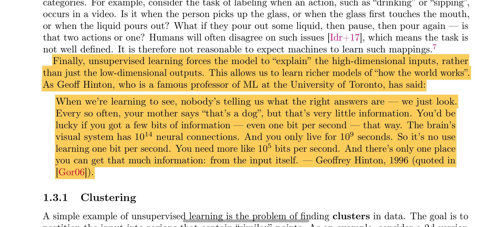
Post 6321
2026-04-10 17:48:08+00:00
Finally, unsupervised learning forces the model to “explain” the high-dimensional inputs, rather
than just the low-dimensional outputs. This allows us to learn richer models of “how the world works”.
As Geoff Hinton, who is a famous professor of ML at the University of Toronto, has said:
When we’re learning to see, nobody’s telling us what the right answers are — we just look.
Every so often, your mother says “that’s a dog”, but that’s very little information. You’d be
lucky if you got a few bits of information — even one bit per second — that way. The brain’s
visual system has 1014 neural connections. And you only live for 109 seconds. So it’s no use
learning one bit per second. You need more like 105 bits per second. And there’s only one place
you can get that much information: from the input itself. — Geoffrey Hinton, 1996 (quoted in
[Gor06]).
Post 6320
2026-04-10 16:42:14+00:00
https://en.wikipedia.org/wiki/No_free_lunch_in_search_and_optimization
Post 6318
2026-04-09 19:55:28+00:00
👉 чтобы хорошо работать, модель обязательно должна быть предвзятой
NFL звучит очень жёстко, но:
👉 в реальной жизни мы не решаем «все возможные задачи»
Post 6317
2026-04-09 19:55:01+00:00
1.2.4 No free lunch theorem
All models are wrong, but some models are useful. — George Box [BD87, p424].5
Given the large variety of models in the literature, it is natural to wonder which one is best.
Unfortunately, there is no single best model that works optimally for all kinds of problems — this
is sometimes called the no free lunch theorem [Wol96]. The reason is that a set of assumptions
(also called inductive bias) that works well in one domain may work poorly in another.
Post 6316
2026-04-08 19:44:00+00:00
[We must avoid] false confidence bred from an ignorance of the probabilistic nature of the
world, from a desire to see black and white where we should rightly see gray. — Immanuel
Kant, as paraphrased by Maria Konnikova [Kon20].
Post 6315
2026-04-08 19:43:30+00:00
«Нам следует избегать ложной уверенности, возникающей из незнания вероятностной природы мира и из стремления видеть чёрное и белое там, где на самом деле есть оттенки серого».
— Иммануил Кант (в пересказе Мария Конникова)
Post 6314
2026-04-04 18:36:32+00:00
Probability theory is nothing but common sense reduced to calculation. — Pierre Laplace,
1812
Post 6313
2026-03-26 18:16:12+00:00
1. John Muir, 1869
«Когда мы пытаемся выделить что-либо отдельно, мы обнаруживаем, что оно крепко связано тысячью невидимых нитей, которые невозможно разорвать, со всем во Вселенной.»
2. James Clerk Maxwell, 1850
«Настоящая наука логики в настоящее время имеет дело только с вещами, которые либо достоверны, либо невозможны, либо полностью сомнительны… Следовательно, истинная логика для этого мира — это исчисление вероятностей, которое учитывает величину вероятности, существующей или которой следует быть в уме разумного человека.»
3. Pierre Simon Laplace, 1819
«Теория вероятностей по сути своей — это всего лишь здравый смысл, сведённый к исчислению; она позволяет нам точно оценивать то, что точные умы ощущают как бы инстинктивно, зачастую не в состоянии объяснить это рационально.»
4. Stephen Jay Gould
«Непонимание вероятности может быть самым большим препятствием на пути к научной грамотности.»
Post 6312
2026-03-26 18:04:14+00:00
Он произнёс её в лекции под названием «Геометрия и опыт» (Geometrie und Erfahrung), которую прочитал в 1921 году в Прусская академия наук в Берлине.
Post 6311
2026-03-26 18:04:10+00:00
Чем точнее и абстрактнее математика — тем дальше она от реальности;
чем больше она пытается описывать реальный мир — тем больше в ней приближений и неопределённости.
Post 6310
2026-03-26 18:04:06+00:00
As far as the laws of mathematics refer to reality, they are not certain, as far as they are certain, they do not refer to reality.
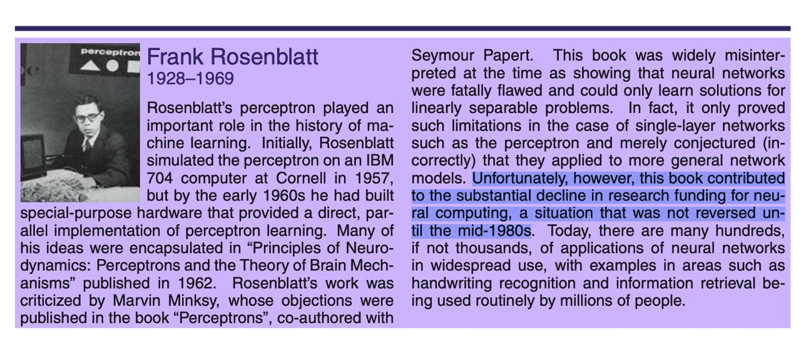
Post 6309
2026-03-24 19:53:45+00:00
2026-03-24 19:47:12+00:00
TEXT
==========
Unfortunately, however, this book contributed to the substantial decline in research funding for neu- ral computing, a situation that was not reversed un- til the mid-1980s.
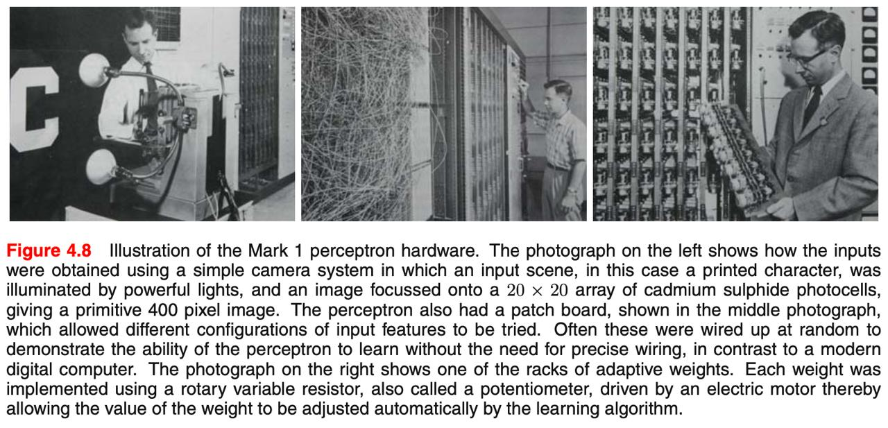
Post 6308
2026-03-24 19:53:39+00:00
The photograph on the right shows one of the racks of adaptive weights. Each weight was implemented using a rotary variable resistor, also called a potentiometer, driven by an electric motor thereby allowing the value of the weight to be adjusted automatically by the learning algorithm.
Post 6307
2026-03-22 13:38:13+00:00
Ништо - нечто
Post 6306
2026-03-22 13:38:13+00:00
Ништо - несто
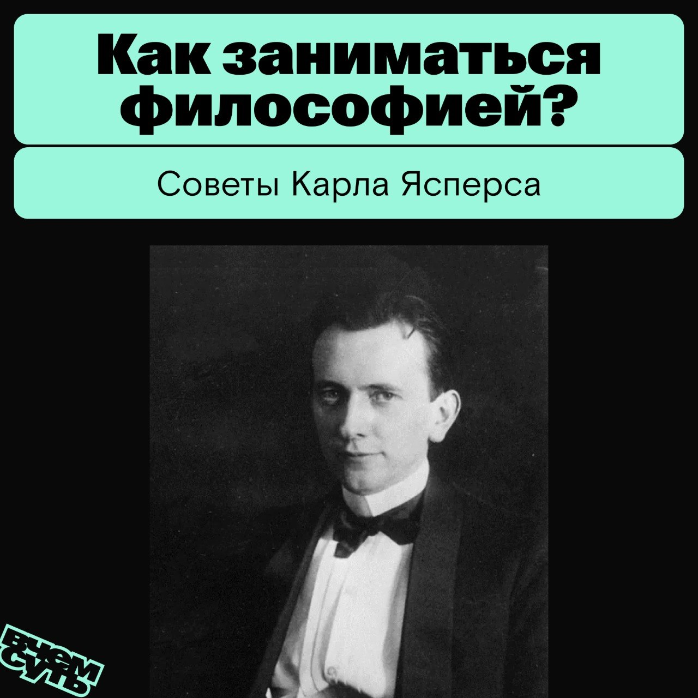
Post 6305
2026-03-21 08:46:54+00:00
вчемсуть(vchistina) [-1001850870025]
2026-03-21 08:40:01+00:00
TEXT
==========
Советы Карла Ясперса о том, как заниматься философией
→ Собрали 6 советов из книги Ясперса «Введение в философию», которая вышла в 1953 году и была основана на расшифровке его радиодокладов, в которых Ясперс доступно и подробно описывает своё понимание философии.
1. Не приписывать себя окончательно ни к одной из философских школ, не считать ни одну из высказываемых истин исключительной и единственной, стать господином своих мыслей.
2. Не накапливать, как на складе, то, чем владеет философия, но углублять философствование как движение.
3. Бороться за истину и человечность в ничем не обусловленной коммуникации.
4. Обрести способность через усвоение учиться у прошлого, слышать современников, быть открытым для всех возможностей.
5. В качестве отдельного, единичного человека погрузиться в собственную историчность, в свое происхождение, в то, что я сделал; взять на себя то, чем я был и стал и что мне даровано.
6. Непрестанно врастать через собственную историчность в историчность человеческого бытия в целом, вступая тем самым в мировое гражданство.
Post 6304
2026-03-20 19:55:54+00:00
Уверенность философов прошлого объясняется предположением, сделанным уже у Плотина, что истина, красота и добро — атрибуты божественного, способы, которыми божественное проявляет себя человеческой душе.
Post 6303
2026-03-20 19:47:55+00:00
Красоту следует сравнивать с истиной и добром, образуя триаду высших ценностей, которые оправдывают наши рациональные стремления.
Post 6302
2026-03-20 19:42:18+00:00
Существует привлекательная идея о красоте, которая восходит к Платону и Плотину и была включена различными путями в христианское богословское мышление. Согласно этой идее, красота — это высшая ценность, которую мы стремимся постигнуть ради самой цели, и для которой не требуется дополнительных причин.
Post 6301
2026-03-11 21:22:04+00:00
Сохранять и развивать
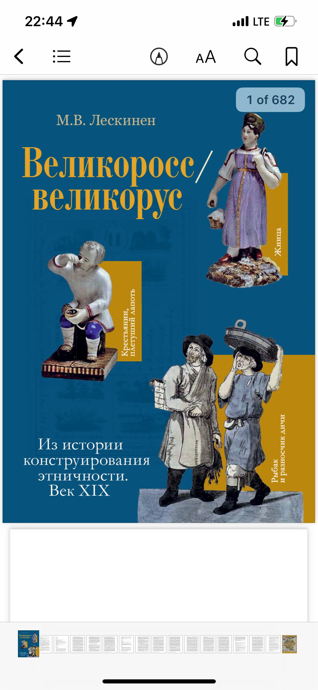
Post 6300
2026-02-26 19:45:03+00:00
Finished
Post 6299
2026-02-26 19:43:08+00:00
Для В.В. Розанова, как и для многих других, волжскими ворота-
ми в Азию оказывается Казань
Post 6298
2026-02-26 19:35:03+00:00
Мотив цивилизаторской миссии России и русских (прежде все-
го великорусов) в отношении народов Поволжья можно расценивать
как один из ключевых в волжском дискурсе второй половины сто-
летия в целом. Не без влияния концепции С.М. Соловьева, вероят-
но, была сформулирована и идея о том, что Волга из «азиатско-ев-
ропейской реки» (каковой являлась до имперской истории России)
начиная с периода Петровских преобразований стала «рекой истин-
но европейской и получила значение иное, более высокое: служить
провод ницей образованности и цивилизации в центр Азии»326.
Post 6297
2026-02-26 19:28:39+00:00
Это сти-
хи Н.М. Карамзина 1793 г., которого считают «основоположником»
волжской темы в русской поэзии.
Post 6296
2026-02-26 19:25:51+00:00
Много писали о Волге как малой
родине поэты, чье детство и юность протекали на ее берегах (в том
числе Н.М. Карамзин, И.Н. Дмитриев, Н.М. Языков, Н.А. Некрасов,
А.А. Коринфский и др.).
Post 6295
2026-02-26 19:24:22+00:00
Один из наиболее часто переиздававшихся
путеводителей, написанных Г.П. Демьяновым (1-е изд. – 1886 г.), уже
вполне целенаправленно открывает книгу довольно обширным бло-
ком стихотворений русских поэтов, посвященных Волге303
.
Post 6294
2026-02-26 19:23:22+00:00
Наслаждение красотами Волги описывали и те, кто ратовал
за развитие туризма в регионе, – А.Н. Пыпин и А.П. Субботин.
Post 6293
2026-02-26 19:20:58+00:00
Встречается и еще одно (правда, редкое) утверждение:
«Русской она (Волга. – М.Л.) сделалась при владимирском князе
Юрии Всеволодовиче»292
– основателе Нижнего Новгорода.
Post 6292
2026-02-26 15:10:19+00:00
В этой фразе можно усмотреть своеобразную формулу реализованной
волжской русскости: «завоевать, покорить, смирить, заселить».
Post 6291
2026-02-25 19:59:50+00:00
культурная самобытность цивилизуемых племен еще не исчезла:
«…одно лишь верхнее течение Волги есть собственно великорус-
ское, но река влечет русский народ все дальше и дальше к востоку,
куда он несет цивилизацию, приобретаемую на западе. Вот отчего
весь ход русской истории показывает, как легко Русь распространя-
лась на восток и как трудно – на запад»255
.
Post 6290
2026-02-25 19:44:28+00:00
РГО: краткий географический словарь Россий-
ской империи241, масштабные труды научно-популярного характера
– «Живописная Россия» (начало издания – 1881 г.242), специальные
этнографические очерки о народах России243, богатая учебная лите-
ратура по отечествоведению244, – не говоря уже о многочисленных
публицистических статьях и заметках жанров «путевые заметки»,
«поездки», «путешествия» и т.д.245
Post 6289
2026-02-25 19:41:54+00:00
географических трудах (Л.И. Мечников236), согласно которой реки
и речные бассейны играют объединяющую роль в процессах поли-
тической, экономической и межэтнической интеграции в истории
России, а колонизация, объявленная важнейшим историко-куль-
турным и географическим процессом формирования цивилизаци-
онной и этнокультурной специфики России, осуществлялась именно
благодаря водным артериям237
.
Post 6288
2026-02-25 19:41:04+00:00
Post 6287
2026-02-25 15:08:57+00:00
в размышлениях о русскости А.Н. Пыпи-
на, в частности в его статье «Волга и Киев» (1885)234.
Post 6286
2026-02-25 15:05:55+00:00
и А.П. Суб-
ботин в 1894 г. призывали читателя совершить путешествие по Вол-
ге и из практических, и из патриотических побуждений229. А.Н. Пы-
пин возмущается отсутствием любопытства к родной стране: ведь
Волга нуждается в привлечении туристов; нет хорошей рекламы
и путеводителей по Волге; нет поддержки «умственных» сил про-
винциальной интеллигенции, которая могла бы сосредоточиться на
краеведческих исследованиях, и т.п.
Post 6285
2026-02-25 15:04:54+00:00
Правила поведения, сама форма такой поездки должны были быть
заданы извне, им необходимо было «обучить». Туристу следовало не
просто идентифицировать то, что он видел, с текстом путеводителя,
ему предписывалась и сама «программа» восприятия, определен-
ный набор ожиданий226
.
Post 6284
2026-02-24 21:48:48+00:00
Волжский путь
Post 6283
2026-02-24 21:48:39+00:00
Исследователи отмечают, что в Поволжье
во второй половине XIX в. туризм развивался быстрее, чем в других
регионах России (в частности, в связи с расширением возможностей
пароходного сообщения), и именно волжский путь на пароходе стано-
вится одним из наиболее привлекательных маршрутов путешествия
по стране.
Post 6282
2026-02-24 21:46:36+00:00
Наконец, Волга представляет собой важнейший пример мир-
ного, плодотворного и бесконфликтного сосуществования разных
в этническом, конфессиональном и цивилизационном отношениях
народов. В этом контексте центральной оппозицией выступает ди-
хотомия русские/инородцы. Именно в Волжском регионе разные
этносы соседствуют, уживаясь между собой: «По берегам ее живет
много разноязычных племен: русские, чуваши, черемисы, татары,
башкиры, киргизы и калмыки»211 – «всё народ нерусский, хотя жи-
вут в русском царстве»212 или вовсе «русеют», как финно-угорские
народы («чухны»), древние обитатели этих земель, оставившие свои
названия рекам и даже селениям этого обширного региона213
.
Post 6281
2026-02-24 21:45:18+00:00
Волга – величайший дар Божий
Русской земле!»210 Волга, таким образом, трактуется Ушинским как
цивилизационный фактор русской истории.
Post 6280
2026-02-24 21:41:50+00:00
популярный «Иллюстрированный спутник»
С. Монастырского198. Наиболее серьезным и фундаментальным в
научном отношении стал трехтомник о Волге В. Рагозина199. Кроме
того, начиная с 1860-х гг. выходило большое количество путеводите-
лей и путевых заметок по Волге.
Post 6279
2026-02-24 21:40:33+00:00
литератур-
ную экспедицию по Волге, организованную по инициативе великого
князя Константина Николаевича в 1856 г. в рамках масштабного обще-
российского изучения жизни, быта и состояния крупнейших регионов
государства по водным артериям страны. Целью этого проекта был
комплексный сбор сведений прежде всего экономического и этногра-
фического характера в «благоприятных по климатическим условиям
и по густоте и разнообразию населения местностях нашего обширного
Отечества, прилегающих к главнейшим, оживленным народным дви-
жением речным системам»192. Участники этого предприятия должны
были непременно обладать литературными дарованиями, так как
материалы планировались к публикации в журнале Морского ми-
нистерства «Морской сборник»193. В Волжской экспедиции приняли
участие А.Н. Островский194, А.А. Потехин195, А.Ф. Писемский196 и др.;
впечатления от годичного путешествия нашли отражение и в художе-
ственных произведениях этих авторов.
Post 6278
2026-02-24 16:40:19+00:00
Гораздо более пессимистичен
В.И. Немирович-Данченко – ему «ханское городище» вовсе не на-
помнило ни о Европе, ни о России: «Всё не русскою смотрит Астра-
хань, все какою-то басурманскою украйною»147
.
Post 6277
2026-02-24 16:38:26+00:00
«Под
Казанью христианская Европа столкнулась с магометанской Азией
столкнулась и победила ее. Под стенами столицы татарского царства
был положен конец торжеству мусульманской луны над крестом»141
.
Post 6276
2026-02-23 21:39:07+00:00
Разделение Европы на эллинскую и латинскую перешло в
разделение ее на греко-славянский и романо-германский миры»122
.
Констатируется, что Западная Европа «опередила» Восточную «на
пути исторического развития».
Post 6275
2026-02-23 21:33:51+00:00
В самом известном путеводителе по
Волге 1862 г. говорилось, что «течение Волги разделяется на три ча-
сти: верхнее – от истоков до впадения Оки, среднее – от Оки до впа-
дения Сарпы (в 30 км от Царицына. – М.Л.), нижнее – от Сарпы до
Каспийского моря»87
Post 6274
2026-02-23 19:54:11+00:00
Четыре фигуры (скульпторы Ф. Тибо, Ж. Камберлен, 1810),
по замыслу архитектора Ростральных колонн – Ж.-Ф. Тома де То-
мона, символизировали, как писал он сам, «божества моря и ком-
мерции»18, но позже получили иную трактовку: они стали воспри-
ниматься как аллегории четырех главных русских рек – женские
скульптуры представляли Волгу и Неву, мужские – Днепр и Волхов.
Так говорится в фундаментальном академическом многотомнике по
истории русского искусства под реакцией И.Э. Грабаря19
.
Post 6273
2026-02-23 19:49:13+00:00
Для истори-
ко-географического объединения русских земель определяющая
роль признавалась за бассейнами европейских рек – Днепра, Дона,
Западной Двины, Волги. С.М. Соловьев писал: «По четырем главным
речным системам Русская земля разделялась в древности на четыре
главные части: первую составляла озерная область Новгородская,
вторую – область Западной Двины, т.е. область Кривская, или Полоц-
кая, третью – область Днепра, т.е. область древней собственной Руси,
четвертую – область Верхней Волги, область Ростовская»4. Согласно
данной схеме, Верхневолжский регион (Ростовская область) стал цен-
тром складывания государственного ядра – Великой России5
.
Post 6272
2026-02-23 19:47:25+00:00
Поэтому необходимо проследить эволюцию представлений о
Волге и Волжском регионе, сконцентрированных в ныне кажущихся
«извечными» метафорах «Волга – русская река», «Волга-кормили-
ца». Следует напомнить, что концепция русскости Волги возникла
относительно недавно – не ранее 1870-х гг.
Post 6271
2026-02-22 19:52:35+00:00
Первое описание содержится в ранних популярных записках
В.В. Пассека о «путешествии по стране» (1834).
Post 6270
2026-02-22 17:01:53+00:00
В тех же лекциях Мицкевич уделил много места особенностям
польского национального духа и именно в этом контексте предло-
жил разграничение двух национальных стихий/характеров – поль-
ского и русского. Он утверждал, что главное истинно-славянское
начало – господство эмоций, страстей и экзальтации – атрофирова-
лось в русских под влиянием финской крови, так что современные
жители Великороссии во многом отличаются «от всех прочих сла-
вянских племен. Это всё люди рослые и крепкие, с замечательными
умственными способностями; они, быть может, самый способный
народ в Европе; но зато чувства в них мало; душа у них холодная,
сердце сухое; они не любят ни поэзии, ни музыки, как южные сла-
вяне; взгляд у них какой-то совершенно особенный (экстраординар-
ный): глаза их походят на блестящие льдинки, и вами овладевает
ужас, когда вы смотрите на эти бездонные… глаза; они отражают
свет, но не согревают; взгляд русских быстрый, проницательный, но
несимпатичный»83
.
Post 6269
2026-02-22 16:59:10+00:00
Наибольшую известность получили популярные в Европе и
в России размышления о характере славян, изложенные Адамом
Мицкевичем в его «Лекциях по славянской литературе» (1840–
1844), которые стали своеобразной энциклопедией славянства77
.
Опираясь на сложившуюся под влиянием трудов Гердера тради-
цию сопоставления германской и славянской стихий, Мицкевич
рассматривал историю литератур славянских народов через при-
зму их общеславянских свойств и национальных особенностей78
.
«Неупорядоченность и податливость» славян, как утверждал поэт,
является плодом развития в них интуиции и духа – в отличие от
европейских народов, у которых господствует разумное начало,
оформляющее себя в жестких и неизменных системах. Поэтому
практичные европейцы на протяжении веков не только уничто-
жали самобытность и государственность славян, но и стремились
лишить их истории.
Post 6268
2026-02-22 16:57:40+00:00
хотя по
темпераменту великорусы – самый печальный, тоскливый и покор-
ный судьбе и правителям восточнославянский народ, которому про-
тивопоставляются малорусы, темперамент поэтического мышления
которых резко отличается от великорусского.
Post 6267
2026-02-22 16:53:11+00:00
Великорусы – обладатели «характера меланхоличе-
ского, задумчивые, унылые, любят уединяться в самих себя или же
искать… облегчения в забывчивости… Привыкнув к обольщениям и
потерям, они обыкновенно мало обольщают себя заманчивыми на-
деждами…»76, у них отсутствует тщеславие.
Post 6266
2026-02-22 16:49:52+00:00
В таком описании дихотомия германцы/славяне переосмысляется в
новой, отличной от предшествующей, системе оппозиций: дикость/
цивилизованность, отсталость/совершенство, – в которой германцы
и славяне меняются местами. Трансформации, в частности, подвер-
гается важнейшее ранее противопоставление германской силы и ра-
ционализма славянской одухотворенности и мягкости. Рассуждая
о поэзии двух племенных стихий, Бодянский усматривает в немцах
власть мрачной мечтательности («романтическое чувство») и фан-
тазии, стремление к чудесному, сверхъестественному72. В славянах
же ему видится «от самой природы… склонность больше к обще-
ственной деятельности и… веселому провождению жизни, чем к
мрачному унынию»73.
Post 6265
2026-02-22 16:48:44+00:00
Именно у земледельцев, по Бодянскому, возникают (притом задол-
го до принятия христианства) грамота, ремесла, торговля, начала
наук69. Земледельческим народам он противопоставляет другие –
варварские, которые «отличалась своим отвращением к земледелию,
предпочитая ему звероловство, скотоводство… войну, вообще жизнь
скитальческую, подвижную… требовавшую меньших трудов и уси-
лий»70. Самым ярким примером противопоставления оказывается
«первобытный германец»: «…житель мрачного севера, взросший в
своих дремучих лесах… провождавший жизнь свою в этих дубро-
вах и чащах, занимался… одной только охотой, приучавшей его к
отважнейшим предприятиям, пренебрегая все другие занятия как
несогласные с его понятиями о своей личной независимости и сво-
боде. Оттого даже земледелие… он предоставлял своим рабам и не-
вольникам… он беспрестанно скитался по [лесу] и часто выселялся в
плодороднейшие области своих соседей, но и здесь не мог оставаться
долго, не имея терпения перенести однообразие оседлой жизни»71
.
Post 6264
2026-02-22 16:47:04+00:00
О.М. Бодянский открывает свое сочинение обширным очерком
нравов древних славян, приводя обширные цитаты из сочинений
Гердера, Шафарика и др. Все приводимые Бодянским (и хорошо
известные той эпохе) черты славян: миролюбие, кротость, ужив-
чивость, предпочтение частной домашней, семейной жизни, при-
вязанность к своей земле и родному очагу – объясняются оседлым
земледельческим образом жизни66, а также любовью к свободе и
нежеланием вести войны67. Автор убежден, что земледельцы стоят
на более высокой ступени развития (он не использует слова «циви-
лизация» или «культура», но, в сущности, подразумевает именно
эволюционную шкалу), с которой начинается «высшее совершен-
ствование»68, смягчение диких нравов, «порядок в образе жизни».
Post 6263
2026-02-22 16:45:27+00:00
Признаками юности Мацеёвский считал и такие славянские
качества, как свободолюбие и любовь к музыке62.
Post 6262
2026-02-22 16:44:36+00:00
Один из первых польских славистов – В. Суровецкий, находив-
шийся под влиянием сочинений Гердера, в «Исследовании начала
народов славянских» (1824) разделял его мнение о «свободном и не-
зависимом» славянском народе, который обладал добродетелями
земледельца56. Суровецкий выделял склонность славян к музыке и
веселью и даже несколько расширял перечень проявлений темпера-
мента. Коренными этническими свойствами славян автор полагал
черты, роднящие их с античными народами, обнаруживал у славян
«мужество и невозмутимость римлян» и «живость греков», к тому
же приписывал им остроумие и общительность57
.
Post 6261
2026-02-22 16:43:50+00:00
Оказавший значительное влияние на российскую славистику
XIX в. чешский ученый П.Й. Шафарик в своих трудах уделял вни-
мание проблеме племенного славянского нрава. В «Истории сла-
вянских литератур» (1826) и в «Истории славянских древностей»
(1837) он приписывал древним славянам такие «коренные черты»:
религиозность, трудолюбие, невинную и беззаботную веселость,
привязанность к родному языку и миролюбие»54, покорность, а так-
же склонность к общительности, подвижность, развязность языка,
нежность и страстность сердца, – и все это «дело чистой природы»,
а не воспитания; славянское «сердце переполнено чувством». Шафа-
рик подчеркивал типичные для земледельческих народов кротость
и спокойствие и всячески отвергал мнение Н.М. Карамзина о жесто-
кости и коварстве древних предков55
.
Post 6260
2026-02-22 16:43:20+00:00
В «Истории государства Российского» Н.М. Карамзина мы встре-
чаем ставший позже хрестоматийным свод качеств древних славян:
они жестоки и воинственны в бою, храбры и мужественны, добро-
душны в мирной жизни, они не ведают ни лукавства, ни злости, им
присущи простота нравов и гостеприимство53. Обратим внимание,
что здесь впервые появляется важный для последующего историче-
ского дискурса о славянском и русском характерах тезис о жестоко-
сти славян, которую первый русский историограф объяснял ответ-
ной местью или необходимостью самозащиты.
Post 6259
2026-02-22 16:37:00+00:00
Осмысление гердеровского наследия в России эпохи романтиз-
ма44 привело к своеобразной перекодировке ключевой дихотомии:
она стала восприниматься в контексте гегелевской философии – с
акцентом на противопоставлении народов, «авангардных» в исто-
рическом (т.е. с точки зрения прогресса) отношении (германцев и
немцев прежде всего), и «неисторических» (славян). Таким образом,
сравнение германцев и славян как племенных сообществ станови-
лось не средством выявления культурной самобытности, а основа-
нием цивилизационной классификации.
Post 6258
2026-02-22 16:35:07+00:00
Гер-
манцы же воплощали воинственность, жестокость, героический дух,
им приписывались «способность подчиняться приказу», «дерзость»
в нападениях, склонность к завоеваниям, т.е. акцентировалось энер-
гичное, активное начало41. «Положение немцев среди остальных
народов Европы, их военный союз, их племенной характер – это
столпы, на которых утверждены культура, свобода и независимость
Европы»42, – заключает Гердер.
Post 6257
2026-02-22 16:34:53+00:00
Именно Гердеру принадлежит ставшая ключевой для XIX в.
компаративистская конструкция: противопоставление славян-
ской и германской племенных стихий, в соответствии с которым их
свойства и качества вписывались в систему оппозиций, где главную
дихотомию воплощали два обобщенных образа: кроткий пахарь и
отважный воин. Славяне отождествлялись с мягким, податливым,
пассивным началом, соотносимым с их оседлым земледельческим
образом жизни: «Они были милосердны и гостеприимны до расто-
чительства, любили сельскую свободу, но были послушны и покор-
ны, враги разбоя и грабежей».
Post 6256
2026-02-22 16:34:36+00:00
Однако неудачное, как он полагал,
соседство с немцами и восточными татарами привело славян к исто-
рическим «несчастьям», поскольку из-за привязанности к домаш-
ней жизни они «не смогли установить долговечного военного строя»
и потому были не в состоянии оказать сопротивления агрессивным
соседям. Главным поработителем славян Гердер считал германцев.
Подчинение им сформировало у славян новые черты: из кротких они
превратились в хитрых, коварных и склонных к подчинению («ковар-
ная и жестокая леность раба»39).
Post 6255
2026-02-22 16:29:33+00:00
Особенности славян Гердер усматривал
в качествах, приписываемых всем земледельческим народам Европы:
они щедры, гостеприимны «до расточительства», покорны и послуш-
ны, ненавидят разбои, грабежи и насилие. Особенно подчеркивал
Гердер (как и другой немецкий ученый – К.Г. Антон37) «музыкаль-
ность» славян38 – она подтверждала миролюбие, которое, по мнению
Гердера, и определило их будущее.
Post 6254
2026-02-22 16:02:34+00:00
Самым известным выразителем этой
идеи принято считать М.П. Погодина, который, в частности, объ-
яснял такие особенности русского национального характера как
безусловную покорность и равнодушие отношениями со «своим»
(монархическим) государством. Суть различий России и Запада он
видел в традициях политического устройства: «...европейские госу-
дарства произошли завоеванием, а наше – добровольным призвани-
ем, повторявшимся несколько раз в течение веков»36.
Post 6253
2026-02-22 15:50:04+00:00
совместными усилиями
«всех русских народностей» и «не отразил в себе» «особенности всех
русских наречий»415,
Post 6252
2026-02-22 15:48:46+00:00
отношение
малорусской литературы к литературе “общерусской” и малорус-
ского языка к языку “общерусскому”»413.
Post 6251
2026-02-22 15:47:36+00:00
Наиболее известна среди документов этого круга записка Комис-
сии Академии наук «Об отмене стеснений малорусского печатного
слова» (1905)405. В ней помещено авторитетное научное заключение
Комиссии, членами которой были академики, представлявшие раз-
личные научные дисциплины (А.С. Лаппо-Данилевский, С.Ф. Ольден-
бург, А.С. Фамицин, В.В. Заленский), а также филологи (А.А. Шахма-
тов, Ф.Ф. Фортунатов, Ф.Е. Корш).
Post 6250
2026-02-22 15:47:19+00:00
З авершающей точкой и в научной, и в идеологической интерпре-
тации соотношения великорусского и малорусского в языковой
сфере можно считать официальные заключения и записки, со-
ставленные профессорами Киевского (В.Б. Антонович403) и Харьков-
ского (Д.И. Багалий, Т.И. Буткевич, Д.Н. Овсянико-Куликовский,
А.А. Раевский, С.В. Соловьев, Н.Ф. Сумцов и др.404) университетов, а
также академиками Петербургской Академии наук в 1904–1905 гг.,
Post 6249
2026-02-22 15:39:07+00:00
Спектр суждений по этому вопросу можно обобщить следую-
щим образом:
а) малорусское наречие – самостоятельный славян-
ский язык (Ф. Миклошич366, В.П. Науменко367, О. Огоновский368,
П.И. Житецкий369), трем русским племенам соответствуют «три осо-
бые однородные языка» (М.А. Максимович);
б) малорусское наре-
чие – диалектная группа общерусского языка, сформировавшегося
еще в древнерусский период (до XIV в.), когда сложилось языковое
единство. На ее возникновение оказали влияние историко-поли-
тические факторы (А.И. Соболевский, М.Н. Погодин, П.А. Лавров-
ский370, А.А. Потебня371);
в) малорусское наречие – территориальный
вариант русского языка в границах прежде всего Малороссии, «ис-
портившийся» под польским влиянием (М.В. Ломоносов, И.А. Кул-
жинский, Ф.В. Булгарин), или «наречие языка польского» (Н.И. Греч,
Ф. Духиньский). Последнюю версию следует считать наиболее арха-
ичной, во второй половине XIX в. она имела уже мало сторонников в
научном сообществе.
Post 6248
2026-02-22 15:32:38+00:00
Малороссийское наречие – одно из трех русских наречий как ре-
гиональных вариантов единого языка – вот тезис, ставший домини-
рующим в научных и публицистических произведениях и отразив-
ший «языковой аспект» концепции триединого русского народа354
.
Он окончательно сложился к 1870-м гг.
Post 6247
2026-02-22 14:28:34+00:00
В центре версии Погодина лежала гипотеза о массовом исходе вели-
корусов и об их почти поголовной миграции в Северо-Восточную Русь
в связи с татаро-монгольским нашествием.
Post 6246
2026-02-22 14:24:56+00:00
Новаторскими считаются принципы,
положенные В.И. Далем в основу создания «Толкового словаря жи-
вого великорусского языка» (1862).
Post 6245
2026-02-22 14:22:02+00:00
Венелин одним из первых в
российской науке заострил внимание на взаимосвязи самоопреде-
ления (эндонима) и языка: «По мнению москвитян, например, тот
только настоящий русский, кто умеет гаварить па-настоящему, т.е.
па-русски, а это значит: по-северному.
Post 6244
2026-02-22 14:06:48+00:00
Малороссий-
ское наречие – одно из трех русских наречий как региональных ва-
риантов единого языка – вот тезис, ставший доминирующим в науч-
ных и публицистических произведениях и отразивший «языковой
аспект» концепции триединого русского народа294
.
Post 6243
2026-02-22 14:05:23+00:00
Главное различие между ними Сахаров
связывает с гибелью русской учености во время нашествия татар, а
развитие новых форм, по его мнению, началось с «усвоения киевско-
му краю церковнославянского языка», когда новая речь устанавли-
валась по древним оборотам языка славянского, с древними грам-
матическими оборотами времен Нестора и т.д.290
Post 6242
2026-02-22 10:45:02+00:00
Во многих статьях о малороссийском наречии подчеркивалось
сохранение в нем незамутненных «древних» элементов – и в лекси-
ке, и в грамматике, и даже в звучании («славянская напевность»)
Post 6241
2026-02-22 10:41:48+00:00
Белинский указывал на весьма су-
щественную разницу возможностей между малороссийским «на-
речием» и общерусским «языком», отмеченную ранее В.И. Далем:
русский писатель может изобразить в своем романе представителей
всех сословий и каждого заставит говорить своим языком: «образо-
ванного человека языком образованных людей, купца по-купечески,
солдата по-солдатски, мужика по-мужицки»270. Малороссийское же
«наречие», с его точки зрения, исключительно крестьянское. Поэто-
му, заключает критик, малороссийские литераторы и поэты пишут
исключительно повести на простонародные темы. Малороссийское
наречие он, иначе говоря, отождествлял с речью определенной со-
циальной группы, отказывая ему в возможностях адекватного (по-
нимаемого как реалистическое) выражения всего многообразия со-
циокультурных срезов малороссийского общества.
Post 6240
2026-02-22 01:57:55+00:00
В случаях с великорусами все эти трудности были вполне ак-
туальны. Однако следует подчеркнуть, что в списке народов Импе-
рии, являющемся одним из приложений к вопроснику, указывались
«великорусы», «малорусы» и «белорусы»241 – т.е. именно в соответ-
ствии с наречием (речью, а не литературным языком). Как следова-
ло поступать интервьюерам, если человек называл родным языком
«русский», в рекомендациях не говорилось.
Post 6239
2026-02-22 01:55:17+00:00
С учетом такого понимания «родного языка» можно сделать вывод о
том, что даже введение вопроса об этническом или языковом само-
определении в ходе изучения народности (что предлагал одним из
первых, как известно, В.Д. Спасович228) не принесло бы ожидаемых
результатов. В статистических, этнографических и иных вопросни-
ках содержались лишь пункты, касающиеся эндоэтнонима.
Post 6238
2026-02-22 01:54:41+00:00
Полученные в итоге сведения по
этому вопросу П.П. Семенов-Тян-Шанский счел вполне удовлетво-
рительными, хотя и отметил важную для нас особенность: «Множе-
ство православных отвечали на этот вопрос словом родной, никак
не предполагая, чтобы язык их мог иметь какое бы то ни было имя,
кроме родного. Встречался и язык лютеранский, католический и
магометанский у немцев, поляков и татар, за которых давали от-
веты их русские квартирохозяева (выделено автором. – М.Л.)»227
.
Post 6237
2026-02-22 01:52:20+00:00
конечно, противополагая себя лицу, говорящему по-велико-
русски»218
.
Post 6236
2026-02-22 01:51:03+00:00
П.А. Кулиш в «Записках о Южной Руси» приводит знамена-
тельный диалог с «малорусскими простолюдинами» (относящий-
ся, вероятно, к 1840-м – 1850-м гг.), вызванный желанием писате-
ля определить происхождение экзонима «черкасы» (так именова-
ли своих «южных соплеменников» «старинные великороссияне»):
«Малороссийские простолюдины на вопрос: “Откуда Вы” – будут
отвечать: “Из такой-то губернии”, но на вопрос: “Кто вы? Какой на-
род?” – не найдут другого ответа, как только: “Лю´де тàк собi нарóд
та и гóдi”. – “Вы русские?” – “Нi”. – “Хохлы?” – “Яки`i ж ми хохли´?”…
“Малороссияне?” – “Щó то за мароссия´не? Нам ёгó й ви´мовить тру´д-
но”»216. По версии Кулиша, этноним «хохол» они отвергают как
бранный, слово «малороссиянин» – «книжное, они его не знают»,
и потому «предоставляя называть себя “русью”, “черкасами” и чем
угодно, сами себя называют только “людьми” и не присваивают себе
никакого собственного имени»217
.
Post 6235
2026-02-22 01:44:08+00:00
явля-
ется литературным или общерусским языком, которое (московское
наречие. – М.Л.)… еще Ломоносов… именовал лучшим из всех рус-
ских наречий»180
.
Post 6234
2026-02-21 16:06:43+00:00
Типичный иммигрант, который перебирается в США, намного беднее среднего американца и куда хуже образован, следовательно, на него приходится больше государственных расходов.
Post 6233
2026-02-21 16:04:48+00:00
Доктор Мартин Лютер Кинг в то десятилетие, когда города Америки охватил пожар расовых волнений, преду-преждал:
Нет ничего более опасного, чем общество, значительная часть которого ощущает себя инородной и уве-рена, что ей нечего терять. Люди, принадлежащие об-ществу, будут его защищать, а те, кто находится вне общества, испытывают подсознательное желание его уничтожить "4
Post 6232
2026-02-21 15:56:34+00:00
Чтобы «удержаться на плаву», понадобятся университетский диплом и, как сегодня, работа по специальности или степень доктора философии. Интеллект — ключ, который будет отпирать двери клубов грядущего. И уже сегодня можно пред-положить, кто будет в этих клубах играть в гольф, а кто станет подавать еду и напитки.
Post 6231
2026-02-21 15:53:27+00:00
В 1960 году численность населения США составляла 180 миллионов человек, 89 процентов которых были американцами европейско-го происхождения, 10 процентов - черноко-жими, а испаноязычных и американцев азиатского происхождения насчитывалось всего несколько миллионов. И девяносто семь процентов населения говорили на английском языке.
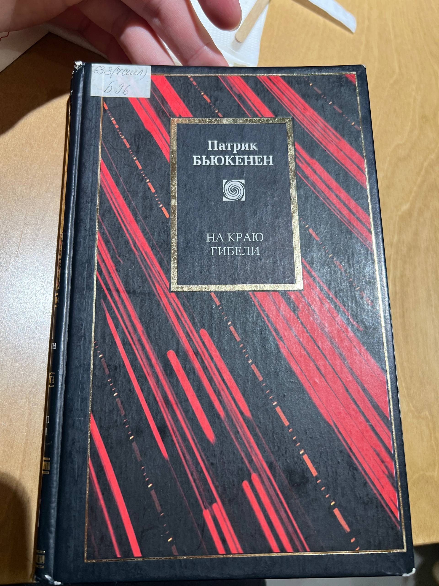
Post 6230
2026-02-21 15:52:09+00:00
Post 6229
2026-02-21 15:51:37+00:00
Миграция - главная проблема нашей эпохи.
Сэмюел Хантингтон (2001)3
Post 6228
2026-02-21 00:39:28+00:00
в его образовании столько
же участвовала Северная Русь, сколько и Южная,
Post 6227
2026-02-21 00:39:07+00:00
Хотя в объяснении назва-
ния Даль писал: «Вместо русского сказано великорусского (выделено
автором. – М.Л.) языка: кажется, это будет точнее и правильнее; этим
обозначена ширина объема: малорусское и белорусское наречия, не
говоря уже о прочих славянских языках, а также церковный и наш
же русский, обветшавший, исключены, по крайности стали необяза-
тельны для словаря, а могли войти в него кой-где, по неразрывной ча-
сти своей с целым…»148 В-третьих, само написание прилагательных
«русский» и «великорусский» красноречиво разнородно: то с одним
«с», то с двумя149, что, впрочем, является характерной чертой эпохи
и относится также к написанию однокоренных слов («российский»,
«малорусский», «малороссийский», «белорусский» и др.). Это замет-
но в печатных текстах, в особенности до 1870-х гг.
Post 6226
2026-02-21 00:36:24+00:00
В уже цитированной статье М.А. Максимовича 1848 г. также
приводилась классификация великорусского (севернорусского) на-
речия, в котором выделялись четыре «разряда», объединяемые в
две группы: а) северо-восточную, «окающую», состоящую из верх-
нерусского, или новгородского, и нижнерусского, или суздальского,
и б) южную, «акающую», которая подразделялась на среднерусское,
или рязанское, и московское, ставшее общерусским обиходным145.
Post 6225
2026-02-21 00:33:20+00:00
Н.И. Надеждин (как и И.П. Сахаров) подразделял «великорос-
сийский язык» на четыре наречия, выделяя московское, новогород-
ское, рязанское и суздальское «роды наречий»138, а «чистейшим и
правильнейшим» считал московское, которое «господствует повсе-
местно», но «не в деревнях».
Post 6224
2026-02-20 21:56:26+00:00
Теперь русская
речь состоит у него из южнорусской (т.е. малорусской) и севернорус-
ской (т.е. великорусской) «ветвей», каждая из которых делится на
два наречия. Первая – на украинское и северское, вторая – на вели-
корусское и белорусское, в которых можно выделить подречия более
низкого уровня131
.
Post 6223
2026-02-20 21:54:02+00:00
Таким образом, получается, что русский язык состоит из трех язы-
ков, один из которых включает два наречия. Сам термин «наречие»
применительно к южнорусскому языку был для М.А. Максимовича
Post 6222
2026-02-20 21:53:07+00:00
юго-восточные словены (или южные
руссы), говорящие на южнорусском языке, разделяющемся на ма-
лороссийское (украинское) и червонорусское (галицкое) наречия121
.
Post 6221
2026-02-20 21:51:29+00:00
И.П. Сахаров в те же годы подчеркивал, что народный язык «с
самого начала» резко отличался от языка грамотных людей, «вос-
питанного» «под влиянием общей славянской литературы». Но при
этом подобное влияние осуществлялось по-разному на новгородское
и киевское наречия, поэтому всю «славяно-русскую грамотность» с
XI до середины XIV в. он предлагал разделять на три «разряда»: гра-
мотность славянскую, грамотность киевскую («которая положила
основание славяно-русской литературе») и грамотность новгород-
скую, из которой образовалась великорусская литература. Два по-
следних разряда позже слились в одно великорусское117
.
Post 6220
2026-02-20 21:50:16+00:00
Довольно долго, как полагал ав-
тор, великорусская речь развивалась стихийно, без грамматик, а
великороссийский язык был областным до XVIII в.115
Post 6219
2026-02-20 21:46:03+00:00
Ссылаясь на классификацию И.П. Сахарова97, Шафарик выделяет
в великорусском наречии четыре подречия: московское (состоящее
из шести разноречий или оттенков), новгородское, суздальское и за-
волжское98. Сам Сахаров, впрочем, рассматривал формирование этих
иерархических единиц русского языка более подробно: он разделял
«первобытный славянорусский язык… на два главных наречия: се-
верное (т.е. великорусское. – М.Л.) и южное (т.е. малорусское. – М.Л.).
В северном преимуществовало новгородское, а в южном – киевское.
В продолжение восьми веков из новгородского наречия образовалось
великорусское со всеми известными доселе (четырьмя указанными. –
М.Л.) ветвями, а в киевском возникло малорусское и червонорусское.
Под влиянием новгородского и киевского возрастало литовско-рус-
ское. Проникая в окрестные места… [язык русский] произвел особен-
ные областные наречия»99
.
Post 6218
2026-02-20 21:44:25+00:00
Исходя из такого соположения, все
славянские поколения являются носителями славянского языка,
состоящего из двух говоров: юго-восточного и западного. Юго-вос-
точный говор подразделяется на три речи: русскую, болгарскую и
иллирийскую, западный – на лешскую, чешскую, полабскую и лу-
жицко-сербскую. Русская речь, в свою очередь, имеет более дробное
деление: великорусское, малорусское и белорусское наречия. Всего,
резюмирует Шафарик, в славянском языке два говора, семь речей,
14 наречий и два подречия96
.
Post 6217
2026-02-20 14:14:12+00:00
Так порождалась свобода не только идентификации и утвержде-
ний, но и оценок (чистые и смешанные языки и физические типы). Пу-
тешественник и автор записок о Малороссии А.И. Левшин, например,
не приводя никаких дополнительных аргументов, кроме понятности
для «великороссиянина» (т.е. его самого), постулировал: малороссий-
ский язык происходит от «древнего славянского, но смешан с немец-
кими, латинскими и польскими, перековерканными словами, отчего
делается почти непонятным великороссиянину»56.
Post 6216
2026-02-18 14:46:30+00:00
high risk / high reward
Post 6215
2026-02-17 19:02:00+00:00
“Основным положением диалектического метода является гегелевское учение о конкретности понятия. Вкратце, это учение гласит, что целое первично по отношению к частям: часть должна истолковываться в свете целого, а не наоборот… [Lukács, 1975, p. 25].
Если факты способствуют опровержению «тотальной» теории марксизма, то «тем хуже для фактов» [Ibid., p. 30].”
Excerpt From
Дураки, мошенники и поджигатели. Мыслители новых левых
Роджер Скрутон
This material may be protected by copyright.
Post 6214
2026-02-17 18:58:02+00:00
“Именно поэтому Энгельс создает свою «диалектику природы», проводя нелепую подмену законов физики ветхой метафизикой, при помощи которой он предполагает «отыскать» то, что скрывает «буржуазная» физика[64].”
Excerpt From
Дураки, мошенники и поджигатели. Мыслители новых левых
Роджер Скрутон
This material may be protected by copyright.
Post 6213
2026-02-17 18:44:08+00:00
“В автобиографическом интервью Лукач делает два замечания, которые отражают суть его мировоззрения ранних лет:
В то время мы все испытывали жгучую ненависть к капитализму и всем его формам. Мы хотели уничтожить его любой ценой и как можно скорее [Lukács, 1983, p. 60].
Нельзя просто попробовать марксизм… вы должны обратиться в него [Ibid., p. 63].”
Excerpt From
Дураки, мошенники и поджигатели. Мыслители новых левых
Роджер Скрутон
This material may be protected by copyright.
Post 6212
2026-02-17 18:42:53+00:00
“Лукач стал одним из немногих венгерских коммунистов, переживших сталинские чистки, во многом благодаря тому, что выступил с осуждением каждого подпадавшего под них, включая себя самого.”
Excerpt From
Дураки, мошенники и поджигатели. Мыслители новых левых
Роджер Скрутон
This material may be protected by copyright.
Post 6211
2026-02-17 18:41:44+00:00
“Позднее Лукач с удовлетворением оглядывался на героические деяния того времени, когда им была начата кампания по выдворению всех некоммунистических профессоров из венгерских университетов. Лукач должен был вернуться к этой работе по возвращении из Москвы после Второй мировой войны, влившись в новую коммунистическую административную машину, где нес ответственность за осуждение некоммунистических писателей и интеллектуалов и запрет на публикацию их сочинений. Отчасти благодаря Лукачу важнейший венгерский философ XX в. – Бела Хамваш – был уволен с должности библиотекаря и вынужден был работать на электростанции, занимаясь неквалифицированным трудом.”
Excerpt From
Дураки, мошенники и поджигатели. Мыслители новых левых
Роджер Скрутон
This material may be protected by copyright.
Post 6210
2026-02-17 18:37:15+00:00
“Задача критики состояла в том, чтобы изобрести пролетариат и сделать его подлинным инквизитором культуры.”
Excerpt From
Дураки, мошенники и поджигатели. Мыслители новых левых
Роджер Скрутон
This material may be protected by copyright.
Post 6209
2026-02-17 18:32:07+00:00
“И наряду с послевоенным бумом немецкой промышленности появился новый франкфуртский интеллектуал, гладкий, безукоризненный и, также как и BMW, поставляемый со множеством дополнительных опций, каждая из которых отличалась технической безупречностью и показателями, превышающими французские и английские аналоги. Типичным представителем этих функционально безупречных левых бюрократов в ФРГ был Юрген Хабермас.”
Excerpt From
Дураки, мошенники и поджигатели. Мыслители новых левых
Роджер Скрутон
This material may be protected by copyright.
Post 6208
2026-02-15 20:23:31+00:00
Я хочу чтобы мое окружение отражало мои ценности
Post 6207
2026-02-13 20:48:52+00:00
Доминиканцы - четки
Post 6206
2026-02-12 19:27:41+00:00
Конечно, в замечании Фуко есть свой смысл. Он хочет подчеркнуть, насколько пауки, объектом которых стал че-ловек, являются недавними изобретеннями и что они уже уступают место другим формам «знания» (savoir)"®
. Идея
человека является столь же хрупкой и преходящей, как и любая другая концепция в истории человеческого позна-вания, и должна уступить под напором новой эпистемы (структуры знания) чему-то такому, что мы вока и назвать не можем. Любая эпистема, согласно Фука, служит некой набирающей вес силе, а главной ее функцией является создание «истины», которая отвечала бы интересам власти.
Следовательно, нет таких общепринятых истин, которые не являются в то же время удобными истинами.
Теория эпистемы — это возвращение к марксистской теории идеологии. Она предлагает характеризовать любую форму мысли, любую систему понятий, образов и нарративов через призму ее функций по внедрению и под-держанию властной структуры, от которой зависит обше-ственный порядок. Власть, о которой идет речь, необязательно принадлежит правящему классу. Хотя те, кто навер-ху, неизбежно являются ее бенефициарами. Власть - это то, что сводит все воедино, определяя господствующие и подчиненные позиции. Она в целом поддерживает иерар-хин, посредством которых привилегии неравномерно распределяются по всему социальному спектру.
Post 6205
2026-02-12 19:27:09+00:00
🔴🟢🔵
Post 6204
2026-02-10 16:33:33+00:00
Дальнейшая погоня за подлинностью характеризуется постоянной потребностью во враге. Гошист' осознает иллюзорность ценностей и обретает себя, проводя жизнь без удобных заблуждений, которые управляют жизнями других людей. Поскольку у него нет никаких ценностей, его мысли и действия могут быть подкреплены только отрицанием. Левый мыслитель должен упрочить свои по-зиции, развенчивая обман других. Более того, это разоблачение не может быть произведено раз и навсегда. Оно
должно постоянно возобновляться, чтобы заполнять моральный вакуум, лежащий в самом центре существования.
Только если есть какой-нибудь легко узнаваемый и «вос-полняемый» противник, может поддерживаться эта борьба за подлинность, которая в действительности являет-ся самой острой борьбой за существование. Враг должен быть источником притворства и обмана. Он также должен обладать усовершенствованной, скрытой силой. Эта мощь подпитывается самой системой лжи, которая подчерки-вает значение его ценностей. Такой враг заслуживает ра-облачения, и есть что-то героическое в его противнике, освобождающем мир из мертвой хватки скрытого воздей-ствия.
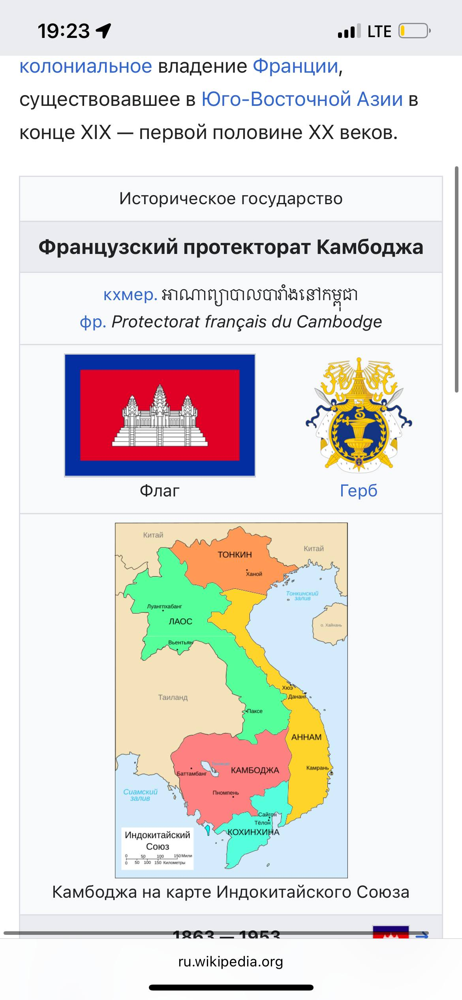
Post 6203
2026-02-10 16:24:28+00:00
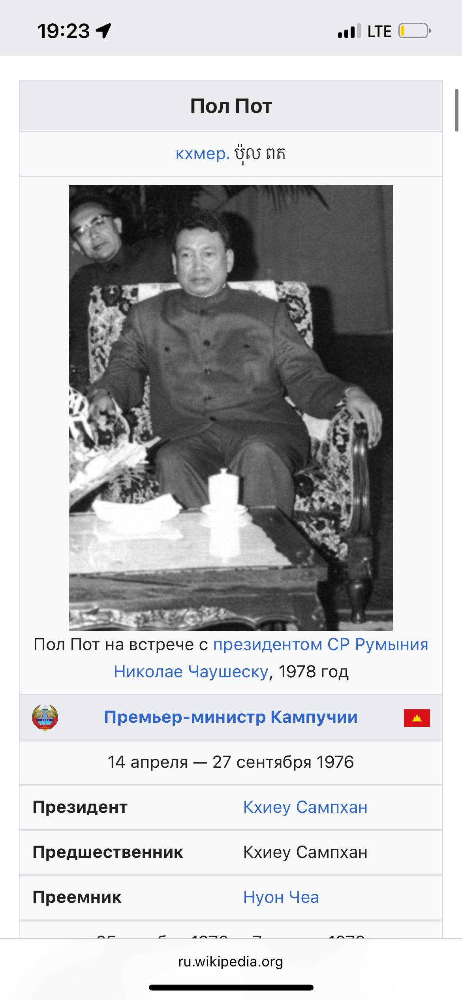
Post 6202
2026-02-10 16:24:28+00:00
распалила революционные амбиции у студентов, при-ехавших в Париж из бывших колоний. Один из этих молодых людей позднее вернулся в свою родную Камбоджу и претворил в жизнь «тотализирующую» доктрину, мишенями которой были «серийность» и «инаковость» буржуазного класса. И в очистительной ярости Пол Пота не-бессмысленно было бы усматривать презрение ко всему обычному и фактическому, которое выражается почти в каждой строке демонической прозы Сартра. «Ich bin der
Geist, der stets verneint»'*, - говорит Мефистофель. То же самое можно сказать от имени Сартра, для которого ад - это другие люди (l'enfer, c'est les autres). Следовательно, другие — ад («За закрытыми дверями», 1947 г.). Подобно Сатане Мильтона, Сартр видел мир преображенным своей гордыней. Именно гордыня заставила его пренебречь Нобелевской премией, поскольку награда исходила от Другого и, следовательно, была недостойна внимания подлин-ного «Я».
Post 6201
2026-02-10 16:21:05+00:00
Во всех кампаниях, которые Советский Союз вел против Запада ценой жизней и счастья людей, Сартр принимал советскую сторону или критиковал СССР только на языке, который повторял излюбленную им ложь. После Всемирного совета мира в Вене в 1954 г. он по инициативе Советов совершил поездку в Москву, чтобы по возвращении рассказать, что «в СССР тотальная свобода крити-ки». Это замечание, возможно, будет легче понять, если мы вспомним, какое значение Сартр вкладывал в слово «тотальный». Впоследствии он был потрясен советской интервенцией в Венгрию, настолько, что переключился ва востваление коммунизма в остальных частях света: сначала на Кубе, а затем (когда прозрел) в Китае. При этом единственная отличительная черта и достоинство китайского коммунизма состояли в том, что до сих пор о нем было мало известно. В конце жизни Сартр выступил в под-держку беженцев из коммунистического Вьетнама, публично пожав руку Раймону Арону после многолетнего разрыва. И только тогда он, похоже, отказался от борьбы.
Однако к тому времени его миссия уже была выполнена.
Post 6200
2026-02-10 16:15:11+00:00
Случай с Вьетнамом - лишь один пример этого. Когда 11 членов израильской команды, отправленных на Олим-пиаду в Мюнхене 1972 г., были убиты, Сартр во весь голос оправдывал преступление. Это вызвало определенные ко-лебания среди тех, кто обычно с жаром поддерживал все его суждения. В 1984 г., спустя четыре года после смерти
Сартра, Марк-Антуан Бюрнье собрал множество примеров его революционной глупости [Burnier, 1984]. С мрачным недоверием мы читаем о его поддержке разрушительных режимов, при которых интеллигенция и пролетариат объединяются только в местах «перевоспитания», где проводят свои последние, полные горя часы. «Благодаря неопровержимым документам мы узнали о существова-нии настоящих концентрационных лагерей в Советском Союзе», — писал Сартр через 20 лет после того, как истина была уже известна всем, кто специально не ограждал себя от нее. И даже после этого он мог призывать сооте-чественников «судить коммунизм по намерениям, а не по действиям».
Post 6199
2026-02-10 16:11:10+00:00
С этими словами Сартр, не называя имен, отвергает таких авторов, как Раймон Арон, Ален Безансон и Жан-Франсуа Ревель, которые пытались пробить брешь в левых иллюзиях и всегда наталкивались на гнев, презрение или пустое пренебрежение
Post 6198
2026-02-10 16:09:29+00:00
Сартр следует пути Бодлера (еще одно из его навязчивых увлечений и один из тех, кому он духовно сродни).
Его путь - это путь души, жаждущей блага, чья гордость, позволяющая принять за него только творение собственных рук, всегда, однако, заставляет разрушать добро. Добро представляется ему оскверненным инаковостью и потому угрожает подлинности самости. Следовательно, он должен использовать зло, чтобы уничтожить добро. Отдаленная идентичность с пролетариатом - это своего рода райское обещание, мираж невинности, слишком святой, чтобы его описывать, находящийся за пределами добра и зла. Ее проблески можно наблюдать только в редкие са-кральные моменты, как на баррикадах 1968 г.
Post 6197
2026-02-10 16:08:37+00:00
В сатанинском комментарии к творчеству писателя Жана Жене Сартр описал добро как «просто иллюзию», добавив, что «зло - это ничто (né-ant), которое воспроизводит себя на развалинах добра»
[Sartre, 1952, р. 573]. В книге «Святой Жене, комедиант и мученик» он очерчивает свою глубокую преданность а
morale du Mal 3
. Посредством мистического использова-
ния эквиваленций Сартр подразумевает, что нельзя ничего такого сказать о добре, чего невозможно сказать и о зле. А «подлинный» выбор состоит в том, чтобы поддерживать между ними баланс. По логике неповиновения добро должно встать на сторону зла, разрушающего буржуазную реальность.
Post 6196
2026-02-10 16:06:59+00:00
Рабочий сводится к простой абстракции не каторжным трудом на капиталистическом производстве, а пылкой риторикой левых интеллектуалов. Рабочий - это средство для торжества интеллигенции, и от него можно без колебаний отказаться, если он не выполнит своей за-дачи. Именно это от начала и до конца интеллектуальное уничтожение простого эмпирического рабочего сделало возможным его массовое истребление в обычном эмпи-рическом мире.
Post 6195
2026-02-10 16:02:44+00:00
«Между экзистенциализмом и марксизмом» [Sartre, 1974]. В этой удивительной работе Сартр повторяет стандартное оправдание жестокости большевиков, которую якобы сделало необходимой «ан-тикоммунистическое окружение». Ответственность за постоянную коммунистическую безжалостность он возлагает на Сталина, а затем на тот факт, что Коммунистиче-ская партия стала институтом. Иными словами, одним из тех центров «инаковости» (или «серийности», как отныне называется работа дьявола), которые противостоят «тотализирующему» проекту просвещенного интеллек-та. Такая критика чрезвычайно полезна для спасения того, что ей подвергается. Коммунистическая партия плоха, но только в том смысле, в каком плохи бойскауты, Сорбон-на или пожарная команда. Ведь они все требуют коллективных и неподлинных действий в соответствии с инсти-туциональными нормами. Реальная деятельность партии, связанная с убийствами и разрушением, не имеет значе-ния по сравнению с этой чертой, которую она разделяет с каждым долговечным социальным начинанием.
Поэтому мы не должны удивляться тому, как прокомментировал Сартр советское вторжение в Чехослова-кию. Коренной причиной «чешской проблемы», по его утверждению, был не социализм, а навязывание социализ-ма, который не был «местного производства». «Причи-ны, по которым люди выбирают социализм, имеют сравнительно небольшое значение; важно, чтобы они строили его своими руками» [Sartre, 1974, р. 86].
Post 6194
2026-02-10 15:59:35+00:00
Рыночные отношения - это не выражение экономической свободы, а реаль-ное порабощение человека под дьявольским игом другого [Ibid., p. 291). Инаковость отравляет все выгоды, которые предлагает капитализм: наша демократия не настоящая, а просто буржуазная. Когда человек голосует при нашей системе управления, он всегда отдает свой голос как Дру-гой, а не как он сам [Ibid., р. 351]. На фоне этой банальной лжи, высказанной на языке Кожева, Сартр пытается вызвать непроизвольное принятие марксистского взгляда на современную историю.
Post 6193
2026-02-10 15:53:16+00:00
Чтение «Критики диалектического разума» - тяжелый опыт. В это тоталитарное подземелье почти не просачиваются лучи света.
Post 6192
2026-02-10 15:52:32+00:00
Диалектический разум плеханова
Post 6191
2026-02-10 15:50:59+00:00
Тотальность абсурда
Post 6190
2026-02-10 15:46:42+00:00
Интеллектуальный садизм
Post 6189
2026-02-10 15:40:12+00:00
марксизм упраздняет действительность в пользу идеи.
Post 6188
2026-02-10 15:39:54+00:00
У марксизма есть три черты, которые пришлись Сартру по вкусу. Во-первых, это философия оппозиции, насквозь пропитанная квазирелигиозным презрением к «буржуаз-ному» порядку. Во-вторых, она предлагает тотальное решение и обещает новую реальность, которая должна подчиняться идеальным представлениям о ней. Другими сло-вами, марксизм упраздняет действительность в пользу идеи. И эта идея моделируется по образцу трансценден-тальной свободы «для-себя». Обещание полного комму-низма - это ноуменальное обещание, призрачно манящее из царства целей. Мы ничего не знаем об этом царстве, за исключением того, что все его граждане свободны и равны и все его законы выбраны подлинным образом.
Post 6187
2026-02-10 15:35:58+00:00
Сартр
Ничто действительное не может быть «подлинным». Подлинность определяется через оппозицию Другому, т.е. в противо-стоянии миру, который создали другие и в котором они чувствуют себя как дома. Все, принадлежащее другим, ча-стично, лоскутно и скомпрометировано. Подлинное «Я» ищет тотального решения загадки существования, причем такого, которое не было бы уже предложено кем-ли-бо, не признавало бы никакого авторитета, никакой леги-тимности, запятнанной неприемлемым миром «их».
Post 6186
2026-02-10 15:21:28+00:00
Его аргументация построена на понятиях, которые Кожев позаимствовал у Гегеля.
Но, в отличие от Гегеля, чье учение выступало утверждением всего, что есть, Сартр был великим отрицателем, Мефистофелем западной философии, который считал, что любовь, дружба, договор и нормальный, «буржуаз-ный» порядок пронизаны противоречиями.
Post 6185
2026-02-09 18:25:26+00:00
Не приняв орден Почетного легиона в 1945 г., философ не смог отказаться от Нобелевской премии по литературе в 1964 г., поскольку правила этого не позволяют. Но он не присутствовал на церемонии награждения в Стокгольме и потратил призовые деньги на социалистические цели. Сартр никогда не был членом Коммунистической партии, поскольку не верил в партии, как и в институты вообще. Ho Les Temps modernes под его редакцией всегда поддерживал коммуни-стические кампании. Более того, его политические разоблачения (типичным примером которых являются обвине-ния, адресованные его бывшему другу и соредактору по
Les Temps modernes Альберу Камю) были откровенно ста-линистскими. Точно так же, как его взгляд на современный мир был утопическим и близоруким. И это настолько сближает мыслителя с Французской коммунистической партией, что самопровозглашенное дистанцирование от нее выглядит всего лишь позой. Именно в поисках расположения партии Сартр запретил ставить пьесу «Грязны-ми руками».
Post 6184
2026-02-09 18:22:50+00:00
Ла-кан переосмыслил гегелевскую диалектику, переделав ее в повествование о «стадии зеркала» в психической жиз-ни, когда субъект видит себя объектом и потому стано-вится Другим для себя. И так для всех писателей и мыс-лителей, которые, сидя в ногах у Кожева, учились у него, как от Маркса надо возвращаться к Гегелю и убеждаться в том, что за все, что не так идет в мире, ответственность несет Другой.
Post 6183
2026-02-09 17:32:23+00:00
ность оказалась в руках профсоюзов и социалистическо-го государства, Кожев, который был высокопоставленным французским государственным служащим и одним из архитекторов Европейского союза, умасливал интеллектуалов гегелевской диалектикой - основой марксистской религии, адепты которой пришли к власти на его родине.
Источники во французских службах безопасности утвер-ждали, что Кожев был советским агентом. Но у нас нет никаких независимых доказательств этого. В конце концов он заявлял всем и каждому, что был последователем Иосифа Сталина, а какой советский агент позволил бы себе такое?®
Post 6182
2026-02-09 17:30:59+00:00
Но все же коммунисты в какой-то мере несли ответственность за сниженне воли к борьбе с нацистами, косвенно исполняя приказы Гитлера в течение решающих месяцев поражения Франции. Так, из-за Французской коммунистической партии рабочие заводов по производству боеприласов вышли на забастовку, когда нацисты, выигравшие от совет-ско-германского договора, вторглись во Францию.
Убеждения, деятельность и самовосприятие послево-енного поколення писателей и мыслителей могут быть поняты только с учетом этой болезненной предысторин.
И почти все они испытали влияние русского эмигранта
Александра Кожева, чьи лекции о Гегеле в Практической школе высших исследований в 1930-е годы посещали мно-те известные представители послевоенной французской литературы: Батай, Лакан, Сартр, де Бовуар, Левинас, Арон, Кено, Мерло-Понти и многие другие.
Post 6181
2026-02-09 17:29:22+00:00
Но осознание вины
гда за камеет т
среди французских послевоенных интеллектуалов можно ясно наблюдать по их резко враждебной реакции на «Чер-
ОЛНЯВ ШЕН СтЕ
ную книгу коммунизма», опубликованную под редакцией экс-маоиста Стефана Куртуа в 1997 г. В этой работе приводится перечень преступлений, совершенных коммуниста-ми, и описывается роль интеллигенции, которая оправды-
(СОМ в любова вала и вдохновляла их. В ней также говорится о сходстве к и его нари
(согласно Куртуа, близком к абсолютному) между ком-мунизмом и нацизмом [Courtois et al., 1997; Куртуа и др.,
ошених, ота
2001).
Post 6180
2026-02-09 17:25:52+00:00
Ярким примером травмы может служить писатель
Пьер Дриё ла Рошель. Он храбро сражался в Первой мировой войне, был трижды ранен и награжден Военным крестом. Благодаря этому опыту ла Рошель стал одной из ведущих фигур в литературе межвоенного Парижа. Но у него не было вкуса к католическому возрождению, и в те-чение следующих 20 лет он вел беспорядочную жизнь, по-священную соблазнению женщин и сочинению мрачных романов, в которых женщины и их сексуальность занимают центральное место.
Post 6179
2026-02-09 17:24:53+00:00
нетую повесть Молассана «Пышка» о том, как группа респектабельных буржуа пожертвовала проституткой - единственным патриотом среди них, заставив отдаться немецкому офицеру. Или возьмем два сильных романа, на-писанных между мировыми войнами: «Путешествие на край ночи» Луи-Фердинанда Селина и «Зеленая кобыла»
Марселя Эме. В первом произведении описывается нравственный хаос Первой мировой войны, а во втором - взаимное предательство соседей во время Франко-прусской войны 1870-1871 гг. В обоих мы видим страну, расколотую подозрениями, находящуюся в поисках патрнотизма, который так часто, кажется, ускользает от нее, и по-ви-димому, лишенную духа жертвенности, который оживля-ет (сколько бы ни было в нем ностальгии и самообмана) английскую литературу времен Первой мировой войны.
Post 6178
2026-02-09 17:17:28+00:00
Благочестие
Католическое
Post 6177
2026-02-06 19:51:15+00:00
“Для этого левые мыслители образовали «контристеблишмент», обладающий социальной властью, которая превосходит обычные деньги капиталистического класса. Именно так и следует читать New York Review of Books, чей пренебрежительный взгляд на американскую культурную дикость стал мощной силой в сплочении оппозиционных преподавателей и журналистов начиная с 1960-х годов. Главный посыл этого издания – «у них есть деньги, но у нас есть мозги».”
Excerpt From
Дураки, мошенники и поджигатели. Мыслители новых левых
Роджер Скрутон
This material may be protected by copyright.
Post 6176
2026-02-06 19:49:41+00:00
“Никто бы не купился на такие байки в Америке, где работодатель и наемный работник движутся вверх по одной и той же карьерной лестнице, различаясь лишь положением на ней. Поэтому интеллектуальные противники американского трудолюбия и вертикальной мобильности лишены преимуществ «солидарности интеллигенции и пролетариата», которая выступает такой мощной силой при формировании повестки дня европейского социализма.”
Excerpt From
Дураки, мошенники и поджигатели. Мыслители новых левых
Роджер Скрутон
This material may be protected by copyright.
Post 6175
2026-02-06 19:48:54+00:00
“как воюющие ангелы в «Потерянном раю» Мильтона. Чтобы это стало явью, рабочий должен увидеть в своем начальнике антагониста, интересы которого во всем противоположны его собственным. А интеллектуал должен встать бок о бок с рабочим в борьбе за справедливость.”
Excerpt From
Дураки, мошенники и поджигатели. Мыслители новых левых
Роджер Скрутон
This material may be protected by copyright.
Post 6174
2026-02-06 19:38:02+00:00
“Легко согласиться с тем, что «в контексте определенных институтов и культур» люди оперируют понятием «наш», а не «мой» или «их».”
Excerpt From
Дураки, мошенники и поджигатели. Мыслители новых левых
Роджер Скрутон
This material may be protected by copyright.
Post 6173
2026-02-06 19:20:55+00:00
“Разумеется, не упоминается создание Лениным ВЧК, предтечи КГБ, и то, как он наделил ее полномочиями использовать все методы террора, чтобы доносить волю «масс» до простых людей. Не говорится также и о голоде 1921 г., первом из трех рукотворных случаев голода в ранней советской истории, необходимом Ленину для того, чтобы навязать волю «масс» тем непокорным украинским крестьянам, которые не соглашались быть «массами».”
Excerpt From
Дураки, мошенники и поджигатели. Мыслители новых левых
Роджер Скрутон
This material may be protected by copyright.
Post 6172
2026-02-06 19:18:27+00:00
“Он с одобрением цитирует зловещие слова Ленина: «Как можно представить себе победу социализма иначе, как полным крахом этих слоев, иначе, как полной гибелью буржуазии и русской и европейской?»[19]”
Excerpt From
Дураки, мошенники и поджигатели. Мыслители новых левых
Роджер Скрутон
This material may be protected by copyright.
Post 6171
2026-02-06 19:16:53+00:00
“Вопреки мифологии холодной войны, представлявшей Ленина организатором переворотов, единственным подлинным преимуществом, которым обладали большевики, была способность понимать то, чего хотят массы» [Hobsbawm, 1994, p. 61; Хобсбаум, 2004, с. 73]”
Excerpt From
Дураки, мошенники и поджигатели. Мыслители новых левых
Роджер Скрутон
This material may be protected by copyright.
Post 6170
2026-02-06 17:27:50+00:00
“Две эти книги входят во все разрастающуюся библиотеку исследований, посвященных «изобретению прошлого», включающую такие классические работы, как «Воображаемые сообщества. Размышления об истоках и распространении национализма» Бенедикта Андерсона и «Нации и национализм» Эрнеста Геллнера.”
Excerpt From
Дураки, мошенники и поджигатели. Мыслители новых левых
Роджер Скрутон
This material may be protected by copyright.
Post 6169
2026-02-06 17:04:28+00:00
“Марксистская, «материалистическая» теория истории была ответом Гегелю. Он считал, что эволюция общества направляется сознанием тех, кто в него входит, выражающимся в религии, морали, праве и культуре. Но Маркс, как известно, думал иначе: «Не сознание определяет жизнь, а жизнь определяет сознание»[16].”
Excerpt From
Дураки, мошенники и поджигатели. Мыслители новых левых
Роджер Скрутон
This material may be protected by copyright.
Post 6168
2026-02-06 16:58:29+00:00
“Их состояние от имени всей французской интеллигенции хорошо описал Андре Бретон во «Втором манифесте сюрреализма» 1930 г.:
Все годится, все средства хороши для разрушения прежних представлений о семье, о родине, о религии <…>.”
Excerpt From
Дураки, мошенники и поджигатели. Мыслители новых левых
Роджер Скрутон
This material may be protected by copyright.
Post 6167
2026-02-06 16:55:57+00:00
“Для молодых интеллектуалов, разочарованных в реальном будущем, утопия стала ценным достоянием. Только ей можно было доверять, причем именно потому, что в ней не было ничего реального.”
Excerpt From
Дураки, мошенники и поджигатели. Мыслители новых левых
Роджер Скрутон
This material may be protected by copyright.
Post 6166
2026-02-05 19:52:52+00:00
Это не вызвало никаких явных угрызений совести у шпионов, воодушевленных навязчивым желанием отречься от своей страны и ее институтов. Они принадлежали к элите, потерявшей уверенность в своем праве на наследственные привилегии и создавшей религию из отрицания ценностей, прививаемых обществом, в котором они роди-лись. Шпионы жаждали философии, которая оправдывала бы их разрушительную манию.
Про кембриджскую пятерку филби ким
Post 6165
2026-02-05 19:50:42+00:00
почти догмой среди британ-ских левых стало убеждение, что можно объединить свои силы с рабочими, обучая их истории.
Post 6164
2026-02-05 19:50:04+00:00
дной из удивительных особенностей англий-ской читающей публики является ее готовность отводить историкам ведущую роль в мире идей.
Так, становление Лейбористской партии как политиче-ской силы в начале XX в. было связано с популярными работами Герберта Джорджа Уэллса, Беатрис и Сиднея Веб-бов и их соратников-фабианцев, для которых слово «со-циализм» стало синонимом «прогресса». Переписывание истории в социалистическом духе оказалось впоследствии своего рода обязательным элементом левой ортодоксии, а работа Ричарда Генри Тоуни «Религия и становление ка-питализма» 1926 г. - ключевым текстом для целого поколения британских интеллектуалов.
Post 6163
2026-02-05 19:39:28+00:00
👉 С самого начала язык был:
«про математику, а не про память»
Post 6162
2026-02-05 19:32:35+00:00
7️⃣ Философия в одной фразе
C даёт тебе нож и говорит:
«Не порежься»
Python забирает нож и говорит:
«Вот тебе безопасная кухня»
Post 6161
2026-02-05 19:14:18+00:00
Но, как любил
повторять Йоги Берра (Yogi Berra): «В теории нет разницы между теорией и практикой,
но на практике она есть».
Post 6160
2026-02-05 18:07:59+00:00
Их голос - это голос протеста, призыв против настоящего от имени неизвестного.
Post 6159
2026-02-05 18:06:15+00:00
В связи с этим мне вспоминается, как представил себя Мефистофель у Гёте: «Я дух, всегда привыкший отрицать. <...› Нет в мире вещи, стоящей по-щады. Творенье не годится никуда»"
Post 6158
2026-02-05 18:04:55+00:00
Такая ситуация, как мне кажется, всегда имеет место, когда левые движения берут верх. Ресентимент перестает быть реакцией на чей-то незаслужен-ный успех и вместо этого становится экзистенциальной позицией человека, преданного миром. Такая личность не ищет способов вести переговоры в рамках существу-ющих структур, а стремится к тотальной власти, чтобы их упразднить. Она противопоставляет себя всем формам посредничества, компромисса и дискуссии, а также нормам закона и морали, которые дают право голоса инакомыслящему и суверенитет обычному человеку.
Post 6157
2026-02-05 18:01:31+00:00
С позиций сверхчеловеческого высокомерия Ницше ресентимент предстает горьким осадком «рабской мора-ли», доведенным до крайности духовным бессилием обез-доленных, которое наступает, когда люди начинают получать больше наслаждения от низложения других, чем от собственных успехов. Но неправильно так думать. Ресентимент - это, конечно, не очень хорошее чувство как для того, к кому его испытывают, так и для того, кого оно охватило. Однако задача общества как раз и состоит в том, чтобы не допустить возникновения ресентимента: Жить
согласно принципу взаимопомощи и братства, но не так, чтобы быть одинаковыми и безобидно посредственны-ми, а так, чтобы достигать своих небольших успехов, сотрудничая с другими. Живя таким образом, мы канализи-руем и сводим на нет ресентимент. Для этого служат такие каналы, как обычай, дар, гостеприимство, общая вера, покаяние, прощение и общее право, каждый из которых моментально прекращает действовать, как только тота-литаристы приходят к власти.
Post 6156
2026-02-05 17:54:41+00:00
В этом аспекте марксистской мысли прослеживается уловка, похожая на те, к которым прибегают теологи. Ее мы можем найти также у Фуко в его концепции эписте-мы, представляющей собой обновленную версию марксистской теории идеологии. Коль скоро классовая теория - это подлинная наука, то буржуазная политическая мысль представляет собой идеологию. А раз классовая теория разоблачает буржуазную мысль как идеологию, она просто обязана быть наукой. Вот мы и вошли в порочный круг, почти такой, как в космогоническом мифе. Более того, облекая свою теорию в научные термины, Маркс включает в нее момент инициации. Ведь на этом языке может говорить не каждый. Научная теория очерчивает границы элиты, которая сможет ее понять и применить.
Она же доказывает просвещенность и особые знания этой элиты, из которых следует ее право управлять остальны-ми. Именно эта черта марксизма оправдывает критику со стороны Эрика Фёгелина, Алена Безансона и др., состоя-щую в том, что марксизм - это разновидность гностициз-ма, когда право управлять получают через знание!
Post 6155
2026-02-05 17:54:13+00:00
Эта теория работает не только потому, что усилива-ет и легитимирует ресентимент. Вдобавок она позволяет развенчать идеи ее противников как «чистую идеоло-гию». В этом и заключается главная хитрость марксизма: он смог выдать себя за науку. Акцентируя различие между идеологией и наукой, Маркс стремился доказать, что его идеология сама по себе была наукой. Более того, так на-зываемая наука Маркса подрывала убеждения его оппо-нентов. Теории верховенства права, разделения властей, права собственности и т.д., выдвигаемые «буржуазны-ми» мыслителями вроде Монтескьё и Гегеля, в контексте марксистского классового анализа оказались инструментами поиска не истины, а власти.
Post 6154
2026-02-05 17:48:59+00:00
Не случайно триумф левого способа мышления так часто приводил к тоталитарным режимам.
Post 6153
2026-02-05 17:39:58+00:00
Если в новоязе и делается отсылка к справедли-вости, то речь идет не о справедливости в частных делах, а о так называемой социальной справедливости, т.е. такой, которая устанавливается согласно плану, неминуемо под-разумевающему изъятие у людей того, что они приобрели в результате свободного рыночного обмена. По мне-нию почти всех мыслителей, обсуждаемых в этой книге, управление - это искусство присвоения и последующего перераспределения того, что, как предполагается, должно принадлежать всем.
Post 6152
2026-02-05 17:33:41+00:00
Отсюда и тяга к «необратимым» изменениям. Поскольку все находится в движении и борьба между силами прогресса и реакции идет постоянно и повсеместно, важ-но, чтобы триумф идеологии над реальностью постоянно фиксировался и подтверждался. Поэтому прогрессивные силы всегда достигают «необратимых изменений», тогда как реакционными остаются только противоречивые и просто «ностальгические» попытки защитить обреченный социальный порядок.
Post 6151
2026-02-05 17:31:00+00:00
Франсуаза Том прекрасно показала это в своем замечательном исследовании «Деревянный язык» [Thom, 1987).
Post 6150
2026-02-05 17:30:15+00:00
Новояз возникает всегда, когда основная задача языка - служить описанием реальности - подменяется про-тивоположной целью, а именно установить власть над ней.
Post 6149
2026-02-05 17:28:47+00:00
Или приблизить крах свободной экономики, просто крича о «кризисе капита-лизма» при каждом удобном случае. Можно сплести воедино абсолютную власть коммунистической партии и добровольное согласие народа, провозгласив принцип «де-мократического централизма» и описывая страны, где он введен, как «народные демократии».
Post 6148
2026-02-05 17:25:03+00:00
Тем не менее мы должны признать, что марксистских очков на носу у левых больше нет. Почему они были сняты и кем, сказать сложно. Однако по какой-то причине ре-волюцнонная парадигма, отстаиваемая новыми левыми, перестала быть важной для политиков из левого крыла.
Вместо этого они сосредоточились на бюрократических процедурах и институционализации культуры благососто-яния. Цели освобождения и социальной справедливости сохранились, но достигаются теперь посредством законодательных мер, через работу комитетов и правительствен-ных комиссий, наделенных полномочиями искоренять источники дискриминации. Освобождение и социальная справедливость были бюрократизированы.
Post 6147
2026-02-05 17:20:01+00:00
Сама «наука» состояла из «законов исторического движения», изложенных в « Ка-питале» и других текстах, согласно которым экономиче-ское развитие приводит к поступательным изменениям в экономической инфраструктуре общества, позволяющим говорить о том, что однажды частная собственность ис-чезнет. После пернода социалистической опеки — «дик-татуры пролетарната» - государство «отомрет». Ни за-кона, ни нужды в нем не будет, и все будет принадлежать всем. Не станет и разделения труда, и каждый будет жить,
Post 6146
2026-02-05 17:17:05+00:00
Важно обратить внимание на этот очистительный по-тенциал. Многие левые скептически относятся к утопиче-ским порывам, и в то же время, объединившись под зна-
менем морализаторства, они неминуемо попадают под влияние самых фанатичных сторонников этих идей, которые заражают их своим энтузиазмом. Поэтому политика левых - это политика с целью.
Post 6145
2026-02-05 17:11:41+00:00
Освобождение угнетенных - бесконечное дело: едва одии жертвы окончательно сбрасывают оковы, как на горизонте появляются новые. Спасение женщин от мужского гнета, животных от жестокого обращения, гомосексу-алистов и транссексуалов от «гомофобии» и даже мусульман от «исламофобии» - все это вошло в повейшие политические программы левых, чтобы соответствующие положения были зафиксированы законодательно и реализованы комитетами, действующими под контролем чинов-ников.
Post 6144
2026-02-05 17:10:23+00:00
Большая часть их работ посвящена деконструкции таких институтов, как семья, школа, закон и национальное государство, посредством которых до нас дошло культурное наследие западной цивилизации.
Эти авторы, наиболее ярким из которых был Фуко, называют «структурами господства» то, что другие считают просто инструментами гражданского порядка.
Post 6143
2026-02-05 17:09:29+00:00
Освобождение, проповедуемое левыми движениями сегодня, подразумевает не только свободу от политического угнетения или право заниматься своим делом, не опасаясь чьего-либо вмеша-тельства. Под ним понимается избавление от «структур»: институтов, обычаев и конвенций, слагающих «буржуаз-ный» порядок и образующих общую систему норм и цен-ностей, лежащих в основе западного общества.
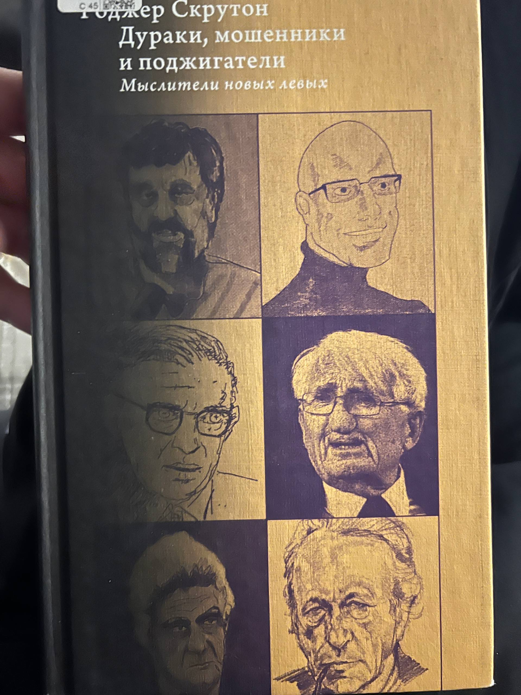
Post 6142
2026-02-05 16:58:02+00:00
Post 6141
2026-02-04 16:03:20+00:00
“Beauty should therefore be compared to truth and goodness, one member of a trio of ultimate values which justify our rational inclinations.”
Excerpt From
Beauty
Roger Scruton
This material may be protected by copyright.
Post 6140
2026-02-04 15:07:11+00:00
“What point are we making, and what state of mind does our judgement express?”
Excerpt From
Beauty
Roger Scruton
This material may be protected by copyright.
Post 6139
2026-02-04 15:06:40+00:00
Post 6138
2026-02-03 19:47:50+00:00
“Консерваторы не очень хорошо формулируют свою точку зрения, а леволиберальная цензура запугивает тех, кто пытается это сделать. Но ошибкой социалистических и либеральных идей является как раз то, что они могут быть так легко сформулировать свои лозунги – доказательство того, что они избегают реальной сложной философской задачи, заключающейся в том, чтобы увидеть гражданское общество таким, какое оно есть, и признать, что легче уничтожить. хорошие вещи во имя идеала, чем поддерживать их как реальность.”
Excerpt From
Как быть консерватором
User
This material may be protected by copyright.
Post 6137
2026-02-03 19:47:00+00:00
“ что консервативная точка зрения правильно определяет то, что сейчас поставлено на карту, а именно выживание нашего образа жизни.”
Excerpt From
Как быть консерватором
User
This material may be protected by copyright.
Post 6136
2026-02-03 19:27:45+00:00
“В конце концов, социалистический идеал равенства привел к убеждению, что патриотизм это расизм, а привязанность к устоявшемуся образу жизни является просто несправедливой дискриминацией тех, кто не разделяет его. Результатом стала кантонизация общества во имя «мультикультурализма».”
Excerpt From
Как быть консерватором
User
This material may be protected by copyright.
Post 6135
2026-02-03 19:13:50+00:00
“Эти произведения искусства не просто учат нас, как справляться с утратой: они передают в образной форме концепцию, которую более счастливые люди смогли приобрести через элементарные формы религиозной жизни – концепцию священного. Я подозреваю, что именно это имел в виду Ницше, когда писал незадолго до того, как сойти с ума, что «у нас есть искусство, чтобы не погибнуть от истины»,98 но это только часть правды. Остальную истину – истину нравственной жизни нужно восстановить другим способом.”
Excerpt From
Как быть консерватором
User
This material may be protected by copyright.
Post 6134
2026-02-03 18:39:51+00:00
“Вот почему в обществе без религии мы видим, как возникает своего рода заразительное жестокосердие, ибо со всех сторон слышится, что нет ни трагедии, ни печали, ни скорби, потому что нет чего-либо, что стоит оплакивать. Нет ни любви, ни счастья – только веселье. В таких обстоятельствах потеря религии есть потеря способности терять.”
Excerpt From
Как быть консерватором
User
This material may be protected by copyright.
Post 6133
2026-02-03 18:38:40+00:00
“Величайший эпос английской поэзии описывает потерю Рая и всех наших даров. Ищущий и самокритичный дух западной цивилизации определяет стиль ее потерь и способ справиться с ними. Западный ответ на потерю – не поворачиваться спиной к миру. Каждая потеря должна быть пережита как потеря. Христианская религия позволяет нам делать это не потому, что она обещает компенсировать наши потери некоторой выгодой, а потому, что она рассматривает их как жертвы, так что потеря посвящается чему-то более ценному, чем она сама.”
Excerpt From
Как быть консерватором
User
This material may be protected by copyright.
Post 6132
2026-02-03 18:38:00+00:00
“Напротив, западная цивилизация концентрировалась на потерях и сделала их главной темой своего искусства и литературы. Сцены мученичества и печали изобилуют в средневековой живописи и скульптуре. Наша драма уходит корнями в трагедию, и наша лирическая поэзия берет в качестве основной темы утрату любви и исчезновение ее объекта.”
Excerpt From
Как быть консерватором
User
This material may be protected by copyright.
Post 6131
2026-02-03 18:36:35+00:00
“В лучшем случае наши консервативные усилия это попытки сохранить общее жилище – место, принадлежащее нам. В человеческой психике существует глубокая связь между пространством и временем. Место осознается как наше по шкале времени существования «мы».”
Excerpt From
Как быть консерватором
User
This material may be protected by copyright.
Post 6130
2026-02-03 18:33:53+00:00
“Потребность, которую он чувствовал в деревне, заключалась не только в свежем воздухе и растительности; это была потребность в другом, более старом опыте времени – не времени современного мегаполиса, где вещи постоянно ускоряются, а темп задают занятые незнакомцы, а времени земли, на которой люди работают с повторяющимися задачами и темпами, установленными по сезонам.”
Excerpt From
Как быть консерватором
User
This material may be protected by copyright.
Post 6129
2026-02-03 18:27:52+00:00
“Именно домашний уют вызывает «оттенок христианского чувства», о котором говорил Оруэлл, и непреходящий дух милосердия, исходящий из него.”
Excerpt From
Как быть консерватором
User
This material may be protected by copyright.
Post 6128
2026-02-03 18:22:50+00:00
“Джордж Оруэлл писал в 1941 году, что «простые люди Англии не имеют определенной религиозной веры, и так было на протяжении веков ... И все же они сохранили глубокий оттенок христианских чувств, почти забыв имя Христа».”
Excerpt From
Как быть консерватором
User
This material may be protected by copyright.
Post 6127
2026-02-03 18:22:24+00:00
“Это места, где люди освятили свою жизнь и признали, что любовь важнее прибыли.”
Excerpt From
Как быть консерватором
User
This material may be protected by copyright.
Post 6126
2026-02-03 16:54:36+00:00
“По всей Азии и на Ближнем Востоке мы видим строительство этого нового типа города – города без углов, без теней, без секретов. Мы, европейцы, сопротивляемся этой болезни, как можем, зная, что потеря города будет слишком большой потерей. И мы, безусловно, правы. Мы боремся за свой дом, который любим, против тех, кто получает прибыль от его разрушения.”
Excerpt From
Как быть консерватором
User
This material may be protected by copyright.
Post 6125
2026-02-03 16:52:06+00:00
“Наша цивилизация отправилась на поиски Небесного Иерусалима, и мы все еще ищем его в разрушенных центрах наших исторических городов. Паломничество в Прагу, Венецию или Флоренцию является неотъемлемой частью Гранд-тура современного атеиста.”
Excerpt From
Как быть консерватором
User
This material may be protected by copyright.
Post 6123
2026-02-03 16:43:56+00:00
“Мэтью Арнольд и Джон Раскин посвятили свою жизнь защите христианской культуры, хотя они и потеряли веру в христианского Бога.”
Excerpt From
Как быть консерватором
User
This material may be protected by copyright.
Post 6122
2026-02-03 16:38:35+00:00
“Свободный человек по-прежнему сияет в своем мире более чем земным светом, и скрытой целью всех их произведений остается облагораживание человеческого состояния.”
Excerpt From
Как быть консерватором
User
This material may be protected by copyright.
Post 6121
2026-02-03 16:35:10+00:00
“как говорит апостол Павел, потерю первичного переживания родного дома.”
Excerpt From
Как быть консерватором
User
This material may be protected by copyright.
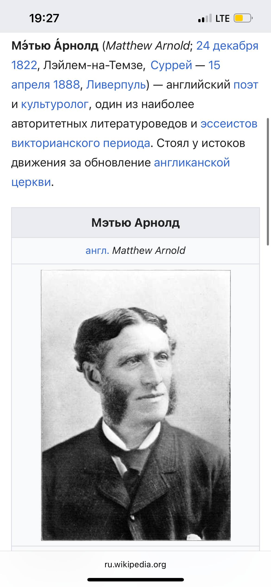
Post 6120
2026-02-03 16:32:09+00:00
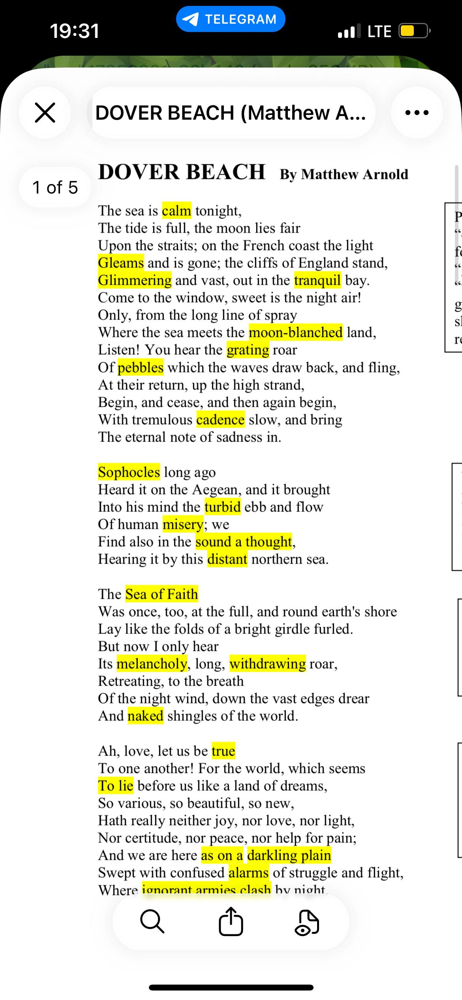
Post 6119
2026-02-03 16:32:03+00:00
Post 6118
2026-02-03 16:31:56+00:00
On Dover Beach
Post 6117
2026-02-03 16:25:25+00:00
“Арнольд написал «Дуврский берег» (Dover Beach) в 1867 году, и его размышления об упадке христианской веры отмечены очень английской меланхолией и не совсем покорной попыткой вписать мир неверия и научного скептицизма в готические рамки англиканской культуры.”
Excerpt From
Как быть консерватором
User
This material may be protected by copyright.
Post 6116
2026-02-03 16:22:23+00:00
“В Америке потребовалось homeschool movement (движение «Домашнее обучение»), возглавляемое церковью амишей, чтобы подтвердить конституционное право граждан не отдавать своих детей государству.”
Excerpt From
Как быть консерватором
User
This material may be protected by copyright.
Post 6115
2026-02-03 16:12:59+00:00
“В Америке постоянно применяется давление на правительство с целью предложить амнистию нелегальным иммигрантам, иными словами, принять в качестве граждан людей, продемонстрировавших свое неуважение к закону.”
Excerpt From
Как быть консерватором
User
This material may be protected by copyright.
Post 6114
2026-02-03 16:07:31+00:00
“Есть и еще одна причина, по которой наши политики уступили бюрократам в этом вопросе. Она заключается в триумфе экономики и в ее превращении из науки инструментального мышления в идеологию современной жизни. Как наука, уходящая корнями в теорию принятия решений, экономика предполагает правильное применение в повседневной жизни доказанных математических теорем. Однако как идеология, описывающая поведение Homo oeconomicus, она предполагает замену повседневной жизни лучше манипулируемой карикатурой.”
Excerpt From
Как быть консерватором
User
This material may be protected by copyright.
Post 6113
2026-02-03 15:56:17+00:00
“Это не политическая задача, а задача, которая зовет нас жить по-другому в свете иных огней и примеров.”
Excerpt From
Как быть консерватором
User
This material may be protected by copyright.
Post 6112
2026-02-03 15:55:47+00:00
“Один из ответов – искать красоту в более повседневных формах, в красоте уединенных улиц и веселых лиц, естественных формах и милых пейзажах.”
Excerpt From
Как быть консерватором
User
This material may be protected by copyright.
Post 6111
2026-02-03 15:54:48+00:00
“Мы ощущаем реальность чего-то драгоценного и таинственного, которое обращается к нам с вестью в некотором роде не от мира сего. Это переживание красоты. Абсолютно ничего не может быть получено из оскорблений, наносимых нашему опыту теми, кто не может посмотреть в лицо тайны нашей жизни.”
Excerpt From
Как быть консерватором
User
This material may be protected by copyright.
Post 6110
2026-02-03 15:53:19+00:00
“Наша человеческая потребность в красоте это не просто лишнее дополнение к списку человеческих желаний. При отсутствии ее мы не могли бы реализовать себя как люди. Эта потребность проистекает из нашего метафизического состояния как свободных людей, ищущих свое место в объективном мире.”
Excerpt From
Как быть консерватором
User
This material may be protected by copyright.
Post 6109
2026-02-03 15:52:32+00:00
“Мы нуждающиеся создания, и больше всего нам нужен дом – место, где мы находим защиту и любовь. Мы чувствуем себя дома через выбор вещей, которые принадлежат нам.”
Excerpt From
Как быть консерватором
User
This material may be protected by copyright.
Post 6108
2026-02-03 15:51:40+00:00
“Спешка и беспорядок современной жизни, нарочито искусственные формы современной архитектуры, шум и экспансия современной промышленности – все это сделало нашу встречу с прекрасным более редкой, хрупкой и непредсказуемой.”
Excerpt From
Как быть консерватором
User
This material may be protected by copyright.
Post 6107
2026-02-03 15:50:43+00:00
“В то же время такие философы, как Шефтсбери, Бёрк, Адам Смит и Кант, признали, что мы не смотрим на мир только глазами науки. Есть и другое отношение не научного исследования, а бескорыстного созерцания, с которым мы обращаемся к нашему миру в поисках его смысла.”
Excerpt From
Как быть консерватором
User
This material may be protected by copyright.
Post 6106
2026-02-03 15:49:21+00:00
“Мы, несомненно, должны приветствовать в качестве героев таких писателей нашего времени, как Сол Беллоу и Шеймас Хини, композиторов, таких как Анри Дютийё и Майкл Типпетт, и архитекторов, таких как Джон Симпсон и Куинлан Терри, сохранявших красоту, позволяя ей сиять над нашим беспокойным миром и указывать нам путь в темноте.”
Excerpt From
Как быть консерватором
User
This material may be protected by copyright.
Post 6105
2026-02-03 15:46:30+00:00
“и в раскрытии ее красоты как у Стивенса в «Обычный вечер в Нью-Хейвене» или у Сэмуэля Барбера в «Ноксвилл, лето 1915 года».”
Excerpt From
Как быть консерватором
User
This material may be protected by copyright.
Post 6104
2026-02-03 15:45:47+00:00
“Но были и великие художники, пытавшиеся спасти красоту от ее видимого разрушения в современном обществе. Так Т.С. Элиот пытался воссоздать в «Четырех квартетах» фрагменты, о которых он горевал в «Бесплодной земле».”
Excerpt From
Как быть консерватором
User
This material may be protected by copyright.
Post 6103
2026-02-03 15:44:04+00:00
“Искусство все больше нацелено на то, чтобы нарушать, ниспровергать или отрицать моральные устои.”
Excerpt From
Как быть консерватором
User
This material may be protected by copyright.
Post 6102
2026-02-03 15:43:40+00:00
“Но в какой-то момент, после модернизма, красота перестала получать дань уважения.”
Excerpt From
Как быть консерватором
User
This material may be protected by copyright.
Post 6101
2026-02-03 15:39:43+00:00
https://ru.wikipedia.org/wiki/%D0%9A%D0%BE%D1%88%D0%BA%D0%B8_(%D0%BC%D1%8E%D0%B7%D0%B8%D0%BA%D0%BB)
Post 6100
2026-02-03 15:17:45+00:00
“Высокая культура нацелена или должна быть нацелена на сохранение и приумножение переживаний второго рода, в которых человеческая жизнь поднимается на более высокий уровень – на уровень этической рефлексии.”
Excerpt From
Как быть консерватором
User
This material may be protected by copyright.
Post 6099
2026-02-02 19:49:18+00:00
“Этот пример также помогает нам оценить по существу ставшее рутинным пренебрежение культурой и стремления к ней – пренебрежение, начинающееся со скептицизма в отношении концепции искусства.”
Excerpt From
Как быть консерватором
User
This material may be protected by copyright.
Post 6098
2026-02-02 19:48:59+00:00
“общей истине относительно природы и значения культуры, а именно о том, что культура есть суждение, и это суждение имеет значение.”
Excerpt From
Как быть консерватором
User
This material may be protected by copyright.
Post 6097
2026-02-02 19:32:38+00:00
“Кант, «Критика способности суждения», 1790, где впервые четко эстетическое суждение поставлено в центр наших современных интеллектуальных интересов.”
Excerpt From
Как быть консерватором
User
This material may be protected by copyright.
Post 6096
2026-02-02 19:29:31+00:00
“Культура красоты имеет для нас огромную ценность, открывая нам чувство дома и принадлежности, вдохновляющее нас в наши одинокие моменты и становящееся надеждой в минуты наших худших невзгод. Но эта сфера ценностей сегодня также подвергается атаке, как религия и семейная жизнь.”
Excerpt From
Как быть консерватором
User
This material may be protected by copyright.
Post 6095
2026-02-02 19:25:36+00:00
“Это место в Книге Бытия стал основой еврейского уважения к субботе, уважения, которое христианская цивилизация переняла в идее воскресенья как дня отдыха. День отдыха не означает свободный день. Напротив, воскресенье это также день радости, основанный на акте коллективного поклонения и праздничной трапезе, когда лучшее, что можно найти в доме, предлагается на семейном столе.”
Excerpt From
Как быть консерватором
User
This material may be protected by copyright.
Post 6094
2026-02-02 19:13:52+00:00
“Для Бога досуг был наполнен внутренней ценностью – временем подумать о Творении и убедиться, что оно хорошее.”
Excerpt From
Как быть консерватором
User
This material may be protected by copyright.
Post 6093
2026-02-02 19:12:21+00:00
“Это продолжение работы, отход от работы с сознанием, что и она есть осмысленная часть целостной жизни. Видение такого досуга предлагается в Бытии, где нам рассказывается, что Бог трудился шесть дней над сотворением мира, а на седьмой день отдыхал не для того, чтобы отвлечься от своей работы, но наоборот, чтобы насладиться своим делом и поразмышлять над ценностью достигнутого.”
Excerpt From
Как быть консерватором
User
This material may be protected by copyright.
Post 6092
2026-02-02 19:09:57+00:00
“что сексуальное удовольствие приходит без чувств благодарности и обязательств.”
Excerpt From
Как быть консерватором
User
This material may be protected by copyright.
Post 6091
2026-02-02 19:08:12+00:00
“Без нее мы никогда не сможем обрести способность любить и усвоить добродетель справедливости. Другие люди останутся для нас просто сложными приспособлениями, с которыми нужно обращаться на уровне общения с животными для нашей собственной выгоды и без возможности взаимного суждения. Справедливость это способность понять, что другой ожидает от вас проявления ответственности, будучи свободным субъектом, как и вы. Чтобы приобрести эту добродетель, вы должны приобрести привычку встречаться лицом к лицу с тем, от кого вы ждете согласия и сотрудничества, не навязывая свою волю.”
Excerpt From
Как быть консерватором
User
This material may be protected by copyright.
Post 6090
2026-02-02 19:07:04+00:00
“Отказ от риска в человеческих отношениях означает отказ от ответственности, отказ предстать перед судом в глазах другого, столкнуться лицом к лицу с другим человеком, отдать себя в какой-то мере ему или ей или подвергнуть себя риску быть отвергнутым. Мы не должны избегать ответственности, мы должны учиться ей.”
Excerpt From
Как быть консерватором
User
This material may be protected by copyright.
Post 6089
2026-02-02 19:05:21+00:00
“Мы разумные существа, наделенные как практическим, так и теоретическим разумом. И наш практический разум развивается через противостояние риску и неопределенности.”
Excerpt From
Как быть консерватором
User
This material may be protected by copyright.
Post 6088
2026-02-02 19:03:36+00:00
“Это взаимодействие поднимает нас от животного к личностному состоянию, позволяя нам брать на себя ответственность за свою жизнь и действия, оценивать наши цели и характер, а также понимать источники личного удовлетворения, желаний и намерений.”
Excerpt From
Как быть консерватором
User
This material may be protected by copyright.
Post 6087
2026-02-02 19:01:45+00:00
“считаю их искусственными упражнениями в философии”
Excerpt From
Как быть консерватором
User
This material may be protected by copyright.
Post 6086
2026-02-02 18:56:04+00:00
“Все эти идеи содержатся в термине, впервые введенном Фихте для обозначения внутренней цели свободной личной жизни: Selbstbestimmung или уверенность в себе. Ключевое утверждение Гегеля состоит в том, что жизнь свободы и уверенности в себе может быть достигнута только через общение с другими.”
Excerpt From
Как быть консерватором
User
This material may be protected by copyright.
Post 6085
2026-02-02 18:54:58+00:00
“Между нами возникает встреча с пониженным риском, в которой каждый осознает, что другой принципиально скрыт, суверен в своем неприступном кибер-замке. Эта отстраненность подкрепляется известными наказаниями за близость и нескромность: откровенное замечание, выражение желания, просьбы или нежности могут разойтись "по всей сети", как только появились на экране.”
Excerpt From
Как быть консерватором
User
This material may be protected by copyright.
Post 6084
2026-02-02 18:51:02+00:00
“Короче говоря, дружба в традиционном понимании была путем к самопознанию.”
Excerpt From
Как быть консерватором
User
This material may be protected by copyright.
Post 6083
2026-02-02 18:50:21+00:00
“ Именно потому, что внимание сосредоточено на другом, возникает возможность открыть себя самому себе, возможность самопознания и расширения свободы в присутствии другого становится одной из радостей человеческой жизни.”
Excerpt From
Как быть консерватором
User
This material may be protected by copyright.
Post 6082
2026-02-02 18:49:24+00:00
“Для Аристотеля досуг был ареной формирования сообщества, возможностью возникновения дружбы и добродетелей, рождающих счастье.”
Excerpt From
Как быть консерватором
User
This material may be protected by copyright.
Post 6081
2026-02-02 18:46:54+00:00
“Эти моменты, согласно Аристотелю, мы посвящаем нашему высшему благу, означающему theoria или жизнь разума.”
Excerpt From
Как быть консерватором
User
This material may be protected by copyright.
Post 6080
2026-02-02 18:41:28+00:00
“Общее снижение квалификации произошло отчасти потому, что образовательная система изменилась в ответ на предложение, а не на спрос ее продукта.”
Excerpt From
Как быть консерватором
User
This material may be protected by copyright.
Post 6079
2026-02-02 18:39:53+00:00
“Переход от наемной работы к самозанятости, на мой взгляд, было бы шагом к преодолению худших унижений, связанных с черной работой.”
Excerpt From
Как быть консерватором
User
This material may be protected by copyright.
Post 6078
2026-02-02 18:35:53+00:00
“В то же время остается верным, что существует огромная разница между удовлетворяющей и отчуждающей работой, и что люди получают удовлетворение на работе только в том случае, если они видят ее как сферу ценностей, другими словами, как нечто являющееся целью, не только средством.”
Excerpt From
Как быть консерватором
User
This material may be protected by copyright.
Post 6077
2026-02-02 18:34:25+00:00
“В умах консерваторов, таких как Раскин, и радикалов, таких как Уильям Моррис, оставалось видение другого вида труда, в котором производство товаров является также производством общества; в котором ремесло, навыки и преданность продукту в целом выражают свободу и самосознание рабочего, и работа отражает того, кто ею занят, точно так же, как произведение искусства отражает художника”
Excerpt From
Как быть консерватором
User
This material may be protected by copyright.
Post 6076
2026-02-02 18:32:58+00:00
“Религия и семья – две ценности. Но первая становится все более маргинальной в жизни современных городов, а вторая начинает терять свой привилегированный статус как место, где можно найти мир и удовлетворение.”
Excerpt From
Как быть консерватором
User
This material may be protected by copyright.
Post 6075
2026-02-02 18:32:06+00:00
“Но мы знаем, что когда она вырастает из экзистенциальной приверженности родителей друг к другу и своему потомству, тогда она становится внутренним благом, ассоциацией, все члены которой могут найти свое воплощение и поддержку в своих взаимных отношениях.”
Excerpt From
Как быть консерватором
User
This material may be protected by copyright.
Post 6074
2026-02-02 18:30:58+00:00
“Правильный ответ – подать пример, живя в соответствии с лежащей в основе брака духовной истиной: брак это обязательство, закрепленное клятвами партнеров, а не резиновыми штампами того или иного офиса.”
Excerpt From
Как быть консерватором
User
This material may be protected by copyright.
Post 6073
2026-02-02 18:29:14+00:00
“Вся история брака с тех пор, как государство взяло на себя право его определять , была историей разногласий.”
Excerpt From
Как быть консерватором
User
This material may be protected by copyright.
Post 6072
2026-02-02 18:26:45+00:00
“И для нас рождение детей и подготовка к семейной жизни лежат в основе супружеских уз. Во время церемонии бракосочетания мы переживаем в усиленном смысле инаковость другого пола и смысл брака как «преддверие» к территории другого пола.”
Excerpt From
Как быть консерватором
User
This material may be protected by copyright.
Post 6071
2026-02-02 18:21:11+00:00
“возлагая на молодоженов священную обязанность плодотворной жизни во имя общего будущего, а также обязанность родить детей”
Excerpt From
Как быть консерватором
User
This material may be protected by copyright.
Post 6070
2026-02-02 18:20:06+00:00
“Само латинское название – matrimonium означало, что брак был не о сексуальной любви, а о материнстве. Муж и жена не просто посвятили себя совместной жизни – они совершили экзистенциальный переход от одного состояния в другой, в котором будущие дети являются наиболее важным элементом.”
Excerpt From
Как быть консерватором
User
This material may be protected by copyright.
Post 6069
2026-02-02 18:18:38+00:00
“В нашем светском обществе государство волей-неволей взяло на себя многие функции религии. Более того, вам не нужно рассматривать брак как причастие и клятву перед Богом, чтобы придерживаться традиционного взгляда на него.”
Excerpt From
Как быть консерватором
User
This material may be protected by copyright.
Post 6068
2026-02-02 18:16:32+00:00
“Брак, с этой точки зрения, является таинством, и государство не может ни заключать, ни отменять его.”
Excerpt From
Как быть консерватором
User
This material may be protected by copyright.
Post 6067
2026-02-02 18:14:34+00:00
“Шумные меньшинства, пользуясь растущей возможностью подвергать цензуре своих оппонентов, следят за тем, чтобы чем более глубок был вопрос с тем большой вероятностью он решался поверхностными аргументами.”
Excerpt From
Как быть консерватором
User
This material may be protected by copyright.
Post 6066
2026-02-02 18:10:23+00:00
“Консерваторы особенно чувствительны к старым обрядам посвящения и задаются вопросом, какое отношение к ним имеет государство, отбросившее их без ясного мандата на это.”
Excerpt From
Как быть консерватором
User
This material may be protected by copyright.
Post 6065
2026-02-02 18:09:53+00:00
“Но связь между мужем и женой, как и между родителем и ребенком, имеет моральную природу, которую нельзя сводить к свободному соглашению.”
Excerpt From
Как быть консерватором
User
This material may be protected by copyright.
Post 6064
2026-02-02 18:06:55+00:00
“но основная истина все же остается в том, что семья это место, где формируются цели жизни и где возникает удовлетворение от их достижения.”
Excerpt From
Как быть консерватором
User
This material may be protected by copyright.
Post 6063
2026-02-02 17:13:34+00:00
“Все, от Сен-Жюста до Ленина, считали семью врагом революционных проектов. Маркс и Энгельс посвятили книгу критике «святого семейства», которое они рассматривали как идеологический продукт собственности и эксплуатации.”
Excerpt From
Как быть консерватором
User
This material may be protected by copyright.
Post 6062
2026-02-02 17:12:12+00:00
“По мере того, как религия уходит из общественной сферы, нравственное воспитание все больше становится заботой семьи, являющейся местом и источником наших основных привязанностей.”
Excerpt From
Как быть консерватором
User
This material may be protected by copyright.
Post 6061
2026-02-02 17:10:48+00:00
“Мы зависим от сферы священных вещей, даже не обязательно веря в их трансцендентный источник. Поэтому культура так важна для нас.”
Excerpt From
Как быть консерватором
User
This material may be protected by copyright.
Post 6060
2026-01-31 21:33:49+00:00
“Многие из наиболее важных консервативных усилий сегодня связаны с попытками поддержать унаследованные священные вещи, чья аура драгоценна для нас, даже если мы больше не считаем ее дарованной Богом. Поэтому консерваторы активны в защите сельской местности от необузданного прогресса, в сохранении исторических городов и зданий, в защите форм и церемоний общественной жизни и в поддержании высокой культуры Европы.”
Excerpt From
Как быть консерватором
User
This material may be protected by copyright.
Post 6059
2026-01-31 21:32:47+00:00
“Это не означает, что консерваторы полностью секулярны в своем подходе к гражданскому обществу. Напротив, они признают, что многое из того, что мы ценим, имеет религиозное происхождение.”
Excerpt From
Как быть консерватором
User
This material may be protected by copyright.
Post 6058
2026-01-31 19:57:40+00:00
“Сфера религиозных ценностей открыта для всех нас: мы можем присоединяться к церквям и храмам, изучать пути святости и праведности и наслаждаться миром, надеждой и утешением, которые приносит религия. Но мы должны предоставить другим право отличаться.”
Excerpt From
Как быть консерватором
User
This material may be protected by copyright.
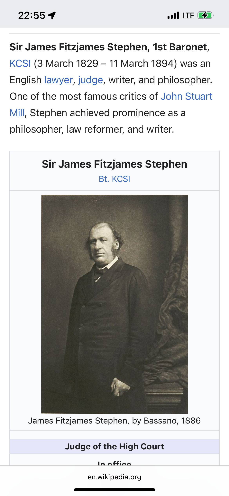
Post 6057
2026-01-31 19:55:56+00:00
Post 6056
2026-01-31 19:51:05+00:00
“В таком понимании право свидетельствовать является основополагающим для западной цивилизации. Заявлять о наших убеждениях, не угрожая насилием тем, кто их не разделяет, и не желая требовать чего-либо большего, кроме возможности их заявить, – это одна из скрытых предпосылок гражданственности, как мы пришли к ее пониманию. Однако, что интересно, не исламисты, а фанатики прав человека выступают против этой практики. Право носить крест на работе, ставить крест в классе, учить христианской морали в вопросах секса и семейной жизни – все это подвергается сомнению секуляристами”
Excerpt From
Как быть консерватором
User
This material may be protected by copyright.
Post 6055
2026-01-31 19:49:15+00:00
“Христиане обязаны свидетельствовать о своей вере, но это не означает, что они должны навязывать свою веру другим людям или насильно требовать принять ее. Как показал основатель христианской веры, вы свидетельствуете не через победу над соперниками, а через их суждения о вас. Христианская вера, как она понимается сегодня, не требует, чтобы мы заставляли замолчать ее критиков или запрещали им исповедовать свою веру”
Excerpt From
Как быть консерватором
User
This material may be protected by copyright.
Post 6054
2026-01-31 19:47:11+00:00
“Поэтому мне кажется, что сама религиозная свобода является наследием религии, имевшая приоритет в западном мире, – веры, на которую посторонний и брат имеют равные права. Когда эта вера приходит в упадок, как это случилось в наше время, остается только оболочка политического порядка, выросшего из нее. Многие люди жаждут духовной жизни, которую защищала эта оболочка. Христианство обеспечивало эту жизнь. Ислам в его нынешней форме не может обеспечить ее, поскольку он давит на оболочку светского закона и постоянно угрожает полностью заменить его другим законом – законом, который стремится к братству и всеобщему подчинению, а не к соседству и взаимной свободе. Такой закон направлен против инаковости других, а не защищает ее.”
Excerpt From
Как быть консерватором
User
This material may be protected by copyright.
Post 6053
2026-01-31 19:45:46+00:00
“Как мы теперь понимаем задним числом, с учетом всей нашей противоречивой истории и с учетом положительного содержания в традиции христианского богословия от Св. Августина до Анри де Любака и Карла Барта, было бы разумно сказать, что в глубоком смысле христианская религия предполагает признание Другого как другого чем я. Отчасти это сделало возможным постоянную адаптацию мира веры к миру политики. Для многих христиан сегодня Просвещение стало кульминацией этого процесса, моментом, когда христианская цивилизация признала, что необходимость светского закона «предначертана Богом».”
Excerpt From
Как быть консерватором
User
This material may be protected by copyright.
Post 6052
2026-01-31 19:14:55+00:00
“Достижение христианской цивилизации состоит в том, что она наделили учреждения религиозным авторитетом, не требуя религиозного послушания им в оппозиции к светскому послушанию.”
Excerpt From
Как быть консерватором
User
This material may be protected by copyright.
Post 6051
2026-01-31 19:07:23+00:00
“И я подозреваю, что ответ таков: религия играет неоспоримую роль в жизни общества, внося идеи священного и трансцендентного, влияющие на все обычаи и церемонии членов общества. Но религиозное послушание не является необходимой частью гражданства, и в любом конфликте должны преобладать обязанности гражданина, а не верующего. Это один из триумфов христианской цивилизации – придерживаться христианского видения судьбы человека, признавая при этом приоритет светского права.”
Excerpt From
Как быть консерватором
User
This material may be protected by copyright.
Post 6050
2026-01-31 19:02:47+00:00
“Таким образом, экономика, являющаяся наукой инструментального мышления, ничего не говорит о наших ценностях, и если она делает вид, что имеет дело с ними, то только путем помещения образа Homo oeconomicus на место, которое должны занимать реальные люди. Ценность возникает потому, что мы, люди, создаем ее, и мы делаем это через традиции, обычаи и институты, которые закрепляют и продвигают нашу взаимную ответственность.”
Excerpt From
Как быть консерватором
User
This material may be protected by copyright.
Post 6049
2026-01-31 19:01:10+00:00
“Однако то, что мы действительно ценим, это как раз то, на что мы не склонны ставить цену, например: жизнь, любовь и знания. Ценность начинается там, где заканчивается расчет, поскольку для нас важнее всего то, что мы не желаем обменивать.”
Excerpt From
Как быть консерватором
User
This material may be protected by copyright.
Post 6048
2026-01-31 19:00:23+00:00
“Не возникают они и из экономики. Согласно известному определению, данному Лайонелом Роббинсом, экономика «это наука, изучающая человеческое поведение как взаимосвязь между целями и ограниченными средствами, имеющими альтернативное применения».78Экономика предполагает, что мы не только знаем свои цели, но и готовы назначить им цену. И она устанавливает свою власть над человеческим воображением, оценивая все, что люди могут хотеть, чем они восхищаются или ценят, таким образом заменяя великие вопросы человеческой жизни абракадаброй экспертов. Для экономиста цена и ценность неотличимы, и определение Оскаром Уайльдом циника, как «человека, который знает цену всему и ничего не ценит», выражает истину, не переводимую на язык безрадостной науки.”
Excerpt From
Как быть консерватором
User
This material may be protected by copyright.
Post 6047
2026-01-31 18:25:07+00:00
“Ценности приходят к нам разными способами, и где бы и когда бы они ни появлялись, они приносит с собой авторитет, мир и чувство принадлежности. Но они не возникают из политических программ.”
Excerpt From
Как быть консерватором
User
This material may be protected by copyright.
Post 6046
2026-01-31 18:24:36+00:00
“Все, что способна сделать политика, это расширить пространство, в котором может процветать гражданское общество.”
Excerpt From
Как быть консерватором
User
This material may be protected by copyright.
Post 6045
2026-01-30 19:28:24+00:00
“[←77] Канадский философ George Parkin Grant замечательно защитил эту концепцию в English-Speaking Justice (Sackville, NB: Mount Allison University, 1974).”
Excerpt From
Как быть консерватором
User
This material may be protected by copyright.
Post 6044
2026-01-30 19:27:53+00:00
“Общее право стоит на стороне гражданина против тех, будь то политики-узурпаторы или обычные преступники, кто хочет подчинить гражданина, игнорируя его волю. Это та концепция права, которая лежит в основе консервативной политики в англоязычном мире, и именно ее сейчас следует защищать от противостоящих ей сил.77”
Excerpt From
Как быть консерватором
User
This material may be protected by copyright.
Post 6043
2026-01-30 19:27:16+00:00
“Общее право стоит на стороне гражданина против тех, будь то политики-узурпаторы или обычные преступники, кто хочет подчинить гражданина, игнорируя его волю. Это та концепция права, которая лежит в основе консервативной политики в англоязычном мире, и именно ее сейчас следует защищать от противостоящих ей сил.77”
Excerpt From
Как быть консерватором
User
This material may be protected by copyright.
Post 6042
2026-01-30 19:26:37+00:00
“Созданная таким образом английская полиция служила для того, чтобы подчеркнуть фундаментальную истину английского права, заключающуюся в том, что закон существует не для контроля над человеком, а для обеспечения его свободы.”
Excerpt From
Как быть консерватором
User
This material may be protected by copyright.
Post 6041
2026-01-30 19:10:38+00:00
🪖 Tommy / Tommy Atkins — солдат
Обобщённое имя британского рядового
Использовалось в документах, инструкциях, учебниках
Примерно как «Иван» для солдата в русском
📌 До сих пор можно услышать иронично: the Tommies (особенно про WWI)
⚓ Jack Tar — моряк
Jack — самое «универсальное» мужское имя
Tar — от смолы (tar), которой пропитывали канаты и одежду
📌 Моряк = «Джек в смоле»
👨🌾 John Bull — англичанин вообще
Не профессия, а национальный образ
Символ простого, упрямого, прямолинейного британца
📌 Аналог «дядя Сэм» в США
👩🍳 Betty — кухарка / домработница (устар.)
Типичное женское имя XVIII–XIX вв.
Использовалось как собирательное
👨⚕️ Dr. John — врач (разг., стар.)
В старых текстах John = «какой-то типовой мужчина»
Сейчас почти не используется
🚽 John — туалет 😄
(да, тоже сюда)
to go to the john
Версий происхождения много, но идея та же: «обычное имя → обычная вещь»
👮 Bobby — полицейский
Уже разобрали: от Роберта Пиля
👨🔧 Jack — мастер / работяга
Jack-of-all-trades — человек «на все руки»
Отсюда:
jack — домкрат
jack — простой рабочий
jack tar — моряк
Почему это вообще работало
Потому что:
имена John, Jack, Tom, Bob были ультра-частотными
имя = «любой парень»
«любой парень» = типичный представитель профессии
То есть это не про конкретного человека, а про архетип.
Если хочешь, могу:
сравнить с русскими («Ванька», «Федя», «дядя Вася»)
или рассказать, какие из этих слов живы сегодня, а какие — чисто исторические
Post 6040
2026-01-30 19:10:05+00:00
В английской культуре это нормально:
Tommy — солдат
Jack Tar — моряк
Bobby — полицейский
Post 6039
2026-01-30 19:05:40+00:00
“Консервативный взгляд на политический порядок рассматривает вооруженные силы как выражение независимо существующего гражданского порядка. Эта идея содержалась в старых армейских окружных полках Великобритании и Ирландии и воплощена сегодня в американских военных колледжах. Ее корни уходят в афинскую демократию, которая рассматривала военную службу как обязанность гражданина, выполняемую исключительно для защиты полиса, а не как политический инструмент. Такое отношение контрастирует со спартанской идеей вооруженных сил как формы государственной власти, используемой для подчинения общества в мирное время и ведения безжалостной войны, когда приходит время. Тоталитарные государства двадцатого века, особенно Германия и Советский Союз, олицетворяли ту же идею армии как инструмента государственной власти, а не выражения социальных привязанностей. Нацисты и коммунисты часто использовали военную силу против меньшинств внутри государства, формируя специальные войска для этой цели. Марши, дисциплина и угнетенная совесть новобранцев – все свидетельствовало о концепции вооруженных сил как исполнительной ветви власти.”
Excerpt From
Как быть консерватором
User
This material may be protected by copyright.
Post 6038
2026-01-30 18:59:45+00:00
“свободное объединение следует ценить только в том случае, если оно также является источником ценности – другими словами, только если оно направлено на реализацию возможностей человека, а не на простую полезность или отдых.”
Excerpt From
Как быть консерватором
User
This material may be protected by copyright.
Post 6037
2026-01-30 18:57:59+00:00
https://eksmo.ru/palata6/sovetskaya-ideologiya-o-zarubezhnykh-pisatelyakh-ID2875120/
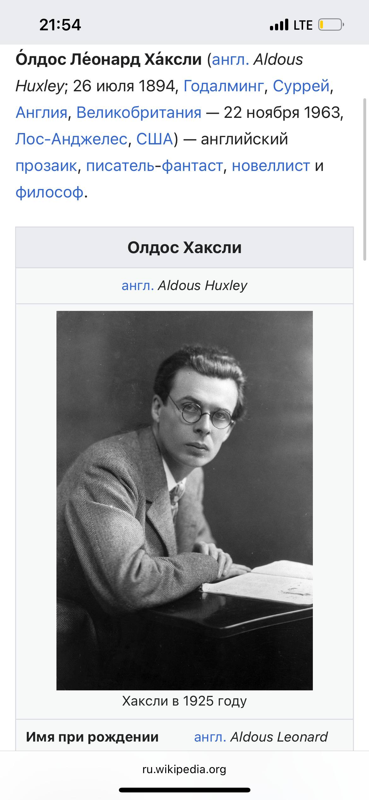
Post 6036
2026-01-30 18:55:00+00:00
Post 6035
2026-01-30 18:53:16+00:00
Роман был ответом на https://ru.wikipedia.org/wiki/%D0%A1%D0%BE%D0%B2%D1%80%D0%B5%D0%BC%D0%B5%D0%BD%D0%BD%D0%B0%D1%8F_%D0%A3%D1%82%D0%BE%D0%BF%D0%B8%D1%8F">«Современную утопию» и https://ru.wikipedia.org/wiki/%D0%9B%D1%8E%D0%B4%D0%B8_%D0%BA%D0%B0%D0%BA_%D0%B1%D0%BE%D0%B3%D0%B8_(%D1%80%D0%BE%D0%BC%D0%B0%D0%BD_%D0%A3%D1%8D%D0%BB%D0%BB%D1%81%D0%B0)">«Люди как боги» https://ru.wikipedia.org/wiki/%D0%A3%D1%8D%D0%BB%D0%BB%D1%81,_%D0%93%D0%B5%D1%80%D0%B1%D0%B5%D1%80%D1%82_%D0%94%D0%B6%D0%BE%D1%80%D0%B4%D0%B6">Герберта Уэллса[1][2], автор в основном отталкивался от работы https://ru.wikipedia.org/wiki/%D0%A0%D0%B0%D1%81%D1%81%D0%B5%D0%BB,_%D0%91%D0%B5%D1%80%D1%82%D1%80%D0%B0%D0%BD">Бертрана Рассела «Научное мировоззрение» (1931), предостерегавшей от возможного в будущем захвата власти кучкой интеллектуалов-технократов[3
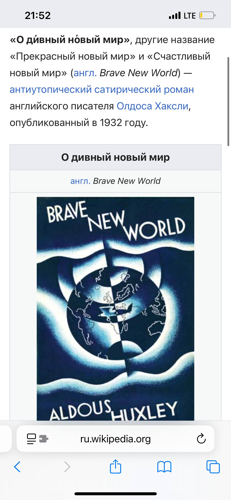
Post 6034
2026-01-30 18:53:14+00:00
Post 6033
2026-01-30 18:51:25+00:00
“одной «веселой машины», как жители «Прекрасного нового мира» Хаксли. Их привязанности недолговечны и пропитаны удовольствиями, трагический дух полностью скрылся за их горизонтом, а верность государству покупается постоянным снабжением ритуальной сомой. Разговор в таком мире – это улыбки и фотоснимки, краткие страсти и крики восторга. Некоторые думают, что западные общества приближаются к этому состоянию, поскольку потребление берет верх над воспроизводством и становится кульминацией человеческой драмы. ”
Excerpt From
Как быть консерватором
User
This material may be protected by copyright.
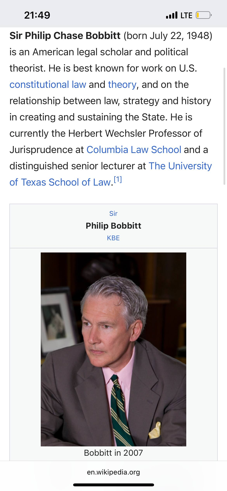
Post 6032
2026-01-30 18:51:24+00:00
Post 6031
2026-01-30 18:44:37+00:00
“Описанный Аристотелем полис представляет собой общество, сформированное дружбой и ради дружбы, где поощряется высшая добродетельная дружба не только между людьми, но и между людьми и государством. Гражданин – друг государства, отвечающее ему взаимностью. Только добродетельный полис может основываться на такой дружбе, а добродетельный полис это тот, где поощряется добродетель в своих гражданах.”
Excerpt From
Как быть консерватором
User
This material may be protected by copyright.
Post 6030
2026-01-30 18:42:58+00:00
“Это разделение относится и к разговору. Есть полезный разговор, посвященный совместной задаче, есть приятный разговор, позволяющий нам расслабиться, и есть добродетельный разговор, который укрепляет связь между людьми и усиливает восхищение друг другом.”
Excerpt From
Как быть консерватором
User
This material may be protected by copyright.
Post 6029
2026-01-30 00:54:41+00:00
“Аристотель разделил дружбу на три вида: на основе пользы, удовольствия и добродетели.”
Excerpt From
Как быть консерватором
User
This material may be protected by copyright.
Post 6028
2026-01-29 19:47:01+00:00
“Разговор, как правило, доставляет удовольствие и является одним из главных источников счастья.”
Excerpt From
Как быть консерватором
User
This material may be protected by copyright.
Post 6027
2026-01-29 19:44:50+00:00
“Общий разговор между большой группой людей требует дисциплины, правил и традиций вежливости. В древнем мире разговор мог принимать форму симпозиума с назначаемым архонтом, чья работа заключалась в поддержании порядка среди участников, каждый из которых говорил по очереди.”
Excerpt From
Как быть консерватором
User
This material may be protected by copyright.
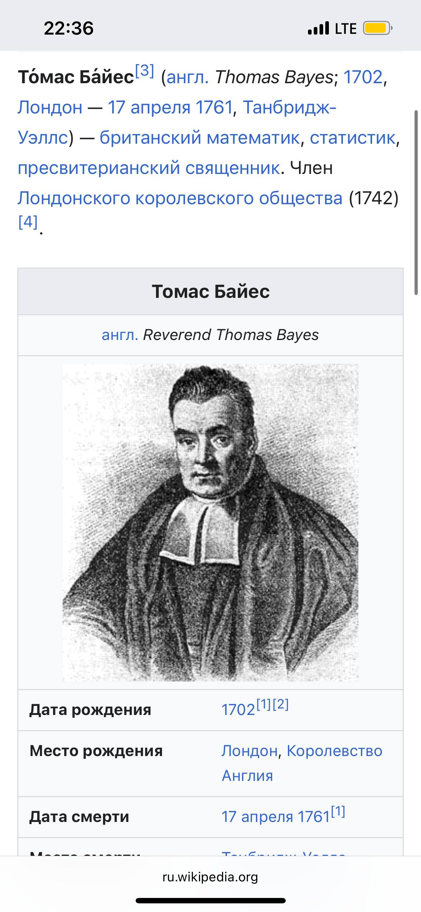
Post 6026
2026-01-29 19:37:03+00:00
Преподобный Томас Байес
Post 6025
2026-01-29 19:31:05+00:00
“Так случилось с государственными школами, когда они были призваны на службу социальному равенству. Так происходит с университетами, когда правительство требует измеримые результаты в качестве компенсации за финансирование.”
Excerpt From
Как быть консерватором
User
This material may be protected by copyright.
Post 6024
2026-01-29 19:26:28+00:00
“В Великобритании государственная система образования возникла в результате постепенного поглощения государством в девятнадцатом веке школ, созданных как благотворительные организации или как самоуправляющиеся гимназии для амбициозных бедняков. Сначала государство просто предоставляло финансирование, чтобы эти школы могли предлагать свои услуги бесплатно. Однако государственное финансирование неизбежно привело к государственному контролю, а государственный контроль – к «политике целей».”
Excerpt From
Как быть консерватором
User
This material may be protected by copyright.
Post 6023
2026-01-29 19:24:16+00:00
“Решением Платона было признание детей собственностью государства с целью воспитывать их в коллективных питомниках под властью беспристрастных опекунов.”
Excerpt From
Как быть консерватором
User
This material may be protected by copyright.
Post 6022
2026-01-29 19:17:33+00:00
“Когда Коммунистическая партия захватила Восточную Европу, ее первой задачей было уничтожение общественных объединений, которые она не контролировала71. Янош Кадар, будучи министром внутренних дел при правительстве Ракоши в Венгрии после 1948 года, закрыл 5000 таких объединений в течение одного года: духовые оркестры, хоры, театральные группы, бойскауты, читательские общества, прогулочные клубы, частные школы, церковные учреждения, благотворительные организации по борьбе с бедностью, дискуссионные общества, библиотеки, винные фестивали, охотничьи и рыболовные клубы.”
Excerpt From
Как быть консерватором
User
This material may be protected by copyright.
Post 6021
2026-01-29 19:14:57+00:00
“Его отправной точкой является понимание психологии человеческой личности. Его фундаментальная философия лучше всего была выражена в «Феноменологии духа» Гегеля, где показано, как самосознание и свобода возникают во взаимоотношениях людей; и как отношения конфликта и доминирования преодолеваются путем признания взаимных прав и обязанностей; и как в ходе этого процесса индивидуум достигает не только свободы действий, но и осознания собственной ценности и ценности других.”
Excerpt From
Как быть консерватором
User
This material may be protected by copyright.
Post 6020
2026-01-29 19:08:46+00:00
“Консерватизм не стремится исправить человеческую природу или формировать ее в соответствии с некоторыми представлениями об идеальном рационально мыслящем человеке. Он пытается понять, как работает общество, и создать пространство, необходимое для его успешной работы.”
Excerpt From
Как быть консерватором
User
This material may be protected by copyright.
Post 6019
2026-01-29 17:15:30+00:00
“согласно максиме Клаузевица: разоружайте врага, чтобы навязать ему свою волю.”
Excerpt From
Как быть консерватором
User
This material may be protected by copyright.
Post 6018
2026-01-29 17:14:59+00:00
“Следовательно, если демократии хотят защитить себя от растущих угроз, сегодня, как никогда необходимо, придерживаться национальной, а не транснациональной точки зрения.”
Excerpt From
Как быть консерватором
User
This material may be protected by copyright.
Post 6017
2026-01-28 18:52:23+00:00
“В «К вечному миру» Канта была предложена международная юрисдикция с единственной целью обеспечить мир между соседними странами. Лига Наций распалась, потому что не было выполнено исходное предположение, а именно, что ее членами должны быть республики, признающими вместе гражданство и верховенство закона.”
Excerpt From
Как быть консерватором
User
This material may be protected by copyright.
Post 6016
2026-01-28 18:48:20+00:00
“Ссылаться на Канта для оправдания транснационального правительства надо с осторожностью. Он думал, что его Лига Наций могла бы стать реальностью, только если бы объединенные ею государства были действительно суверенными, действительно представляли свои народы и действительно управлялись в соответствии с законом. Совершенно очевидно, что это не относится к большому числу членов ООН сегодня, и уж тем более к тем, кто, например, как Северная Корея, представляет наибольшую угрозу своим ближайшим соседям. Такие государства на самом деле не являются суверенными органами, а скорее являются армией призывников в руках преступников.66”
Excerpt From
Как быть консерватором
User
This material may be protected by copyright.
Post 6015
2026-01-28 18:46:56+00:00
“Однако то, что имел в виду Кант, было очень далеко от транснационального правительства в его нынешнем проекте. Он непреклонно утверждал, что не может быть гарантий мира, если державы, присоединяющиеся к договору, не являются республиками.”
Excerpt From
Как быть консерватором
User
This material may be protected by copyright.
Post 6014
2026-01-28 18:41:37+00:00
“pacta sunt servanda (соглашения должны соблюдаться)”
Excerpt From
Как быть консерватором
User
This material may be protected by copyright.
Post 6013
2026-01-28 18:38:24+00:00
“Неудивительно, что швейцарцы, наблюдая за последствиями всего этого, вопреки своему политическому классу, упорно отказываются присоединиться к Европейскому Союзу.”
Excerpt From
Как быть консерватором
User
This material may be protected by copyright.
Post 6012
2026-01-28 18:34:55+00:00
“Бисмарк объединил немецкие княжества, установив единую систему права и централизованно управляемую бюрократию. И, по всей вероятности, успех Бисмарка вдохновил таких политиков, как Жак Делор, кто хотел добиться аналогичного объединения по всей Европе. Но намерением Бисмарка было создание национального государства. Он начал с предположения об общем языке, общих обычаях и исторически подтвержденных границах.”
Excerpt From
Как быть консерватором
User
This material may be protected by copyright.
Post 6011
2026-01-28 18:19:47+00:00
“Каждое усиление центральной власти должно было сопровождаться ослаблением национальной власти. С тех пор каждый саммит, каждая директива и каждый акт правовой системы Европейского союза несли на себе эту печать. И теперь, достигнув новой поворотной точки для Европы, мы должны рассмотреть результаты.”
Excerpt From
Как быть консерватором
User
This material may be protected by copyright.
Post 6010
2026-01-28 17:57:56+00:00
“Кант в своем кратком трактате «К вечному миру» признал, что международное право всегда будет несовершенным, если нет никакого способа обеспечить его соблюдение, кроме войны. Поэтому он создал проект «Лиги Наций», в которой различные национальные государства заключили бы соглашение о передаче своих споров центральному органу, где были бы представлены все государства, но с правом разрешать споры между ними. Это предложение привело к основанию недолговечной Лиги Наций после Первой мировой войны и Организации Объединенных Наций после Второй.”
Excerpt From
Как быть консерватором
User
This material may be protected by copyright.
Post 6009
2026-01-28 17:56:48+00:00
“Разрешение споров между суверенами государствами путем заключения договора, а не с помощью силы, имеет древнее происхождение, и в период позднего средневековья были предприняты попытки вывести своего рода общее право наций из посылок, лежащих в основе договоров. Великий труд Гуго Гроция De Jure belli ac pacis (1625 г. «О праве войны и мира») был попыткой адаптировать принципы естественного права к управлению делами между суверенными государствами. Гроций заложил основы международного права, каким мы его знаем сейчас.”
Excerpt From
Как быть консерватором
User
This material may be protected by copyright.
Post 6008
2026-01-28 17:53:55+00:00
“До тех пор, пока люди не будут идентифицировать себя со страной, ее территорией и ее культурным наследием, – примерно так, как люди идентифицируют себя с семьей, – политика компромисса не появится.”
Excerpt From
Как быть консерватором
User
This material may be protected by copyright.
Post 6007
2026-01-28 17:40:40+00:00
“хотя в английском искусстве, литературе и религии сохранение пейзажа уже было одной из главных тем.”
Excerpt From
Как быть консерватором
User
This material may be protected by copyright.
Post 6006
2026-01-28 17:39:28+00:00
“главным объектом их беспокойства стал лес – зеленый лес из мифа о Робин Гуде, воспетый во многих популярных стихах и песнях. эпохи Шекспира, и ставший одним из символов Англии благодаря книге «Сильва, или Рассуждение о лесных деревьях»» Джона Ивлина, впервые опубликованной в 1664 году”
Excerpt From
Как быть консерватором
User
This material may be protected by copyright.
Post 6005
2026-01-28 17:37:40+00:00
“Это, как мне кажется, есть цель, на которую указывают и серьезный экологический подход, и серьезный консерватизм, а именно: дом, место, где мы находимся и где мы живем, место, которое определяет нас, которое мы доверяем нашим потомкам, и что мы не хотим портить. Похоже, никто не определил мотив, более подходящий для защиты окружающей среды, чем этот. Это мотив у обычных людей. Он может стать основой как для консервативного подхода к институтам, так и для природоохранного подхода к земле.”
Excerpt From
Как быть консерватором
User
This material may be protected by copyright.
Post 6004
2026-01-28 17:16:41+00:00
“ассоциацию Американских любителей природы, возникшей по инициативе Конгресса США, приведшей к созданию национальных парков;”
Excerpt From
Как быть консерватором
User
This material may be protected by copyright.
Post 6003
2026-01-28 17:15:47+00:00
“Но мы тоже заслуживаем защиты от глобальной энтропии, и мы должны сохранить, что в наших силах все чувства, привязывающие нас к нашей территории, и сделать эту территорию своим домом.”
Excerpt From
Как быть консерватором
User
This material may be protected by copyright.
Post 6002
2026-01-28 17:13:24+00:00
“Если бы консерватизм искал лозунг, он должен был бы звучать так: «Чувствуй локально, думай национально» (‘Feel locally, think nationally.’).”
Excerpt From
Как быть консерватором
User
This material may be protected by copyright.
Post 6001
2026-01-28 17:12:57+00:00
“Именно через развитие идеи территориальных чувств, содержащих семена суверенитета внутри себя, консерваторы вносят свой особый вклад в экологическое мышление.”
Excerpt From
Как быть консерватором
User
This material may be protected by copyright.
Post 6000
2026-01-28 16:49:16+00:00
“Внимание мира направлено на глобальное потепление, изменение климата, массовое вымирание видов и таяние ледяных шапок. Но все это находится вне досягаемости какого-либо национального правительства, и ни одна из этих проблем не имеет ясного и скорого решения.”
Excerpt From
Как быть консерватором
User
This material may be protected by copyright.
Post 5999
2026-01-28 16:47:55+00:00
“Они верят в гражданские ассоциации между соседями, а не во вмешательство государства; и они признают, что самое важное, что могут сделать живые, это осесть, построить себе дом и передать этот дом своим детям. Любовь к дому, служит делу защиты окружающей среды, и удивительно, что многие консервативные партии в англоязычном мире не включили это в свои программы.”
Excerpt From
Как быть консерватором
User
This material may be protected by copyright.
Post 5998
2026-01-28 16:47:12+00:00
“Консерваторы поддерживают взгляд Бёрка на общество как на партнерство между живыми, нерожденными и мертвыми.”
Excerpt From
Как быть консерватором
User
This material may be protected by copyright.
Post 5997
2026-01-28 15:16:37+00:00
“Если иммигранты приезжают, то потому, что они от этого выигрывают. Поэтому разумно напомнить им, что они должны чем-то поступиться.”
Excerpt From
Как быть консерватором
User
This material may be protected by copyright.
Post 5996
2026-01-28 15:15:45+00:00
“Что же происходит, когда люди, чья идентичность определяется вероисповеданием или родством, иммигрируют в места, населенные западной культурой? Активисты говорят, что мы должны освободить для них место, и что мы должны это делать, освобождая им пространство, в котором их культура может процветать.”
Excerpt From
Как быть консерватором
User
This material may be protected by copyright.
Post 5995
2026-01-28 15:15:09+00:00
“Наша культура допускает широкий диапазон образов жизни. Она позволяет людям приватизировать свою религию и семейные обычаи, оставаясь быть включенными в публичную сферу открытых сделок и совместной лояльности. Ибо она определяет эту публичную сферу в юридических и территориальных терминах, а не в терминах вероисповедания или родства.”
Excerpt From
Как быть консерватором
User
This material may be protected by copyright.
Post 5994
2026-01-28 15:14:10+00:00
“Это не произвольный культурный империализм, который побуждает нас ценить греческую философию и литературу, еврейскую Библию, римское право, средневековые эпосы и романсы, и преподавать эти предметы в наших школах. Они наши, точно так же, как правовой порядок и политические институты принадлежащие нам. Они составляют часть того, что нас сформировало, и передают послание о том, что хорошо быть такими, какие мы есть. И разум поддерживает эти вещи и говорит нам, что наша гражданская культура это не просто узкая собственность общества, ориентированного внутрь себя, но оправданный образ жизни.”
Excerpt From
Как быть консерватором
User
This material may be protected by copyright.
Post 5993
2026-01-28 15:12:39+00:00
“Наши общества построены на иудео-христианском идеале любви к ближнему, согласно которому чужие и близкие заслуживают равной заботы.”
Excerpt From
Как быть консерватором
User
This material may be protected by copyright.
Post 5992
2026-01-28 15:11:26+00:00
“Как только мы проведем различие между расой и культурой, откроется путь к признанию того, что не все культуры одинаково достойны восхищения и что не все культуры могут комфортно существовать бок о бок. Отрицать это, значит, отказаться от самой возможности морального суждения и, следовательно, отрицать фундаментальный опыт сообщества.”
Excerpt From
Как быть консерватором
User
This material may be protected by copyright.
Post 5991
2026-01-28 15:07:13+00:00
“Вместо старых верований, основанных на благочестии, суждениях и исторической привязанности, молодым людям внушают новые убеждения, основанные на равенстве и признании, и им говорят, что осуждение другого образа жизни является преступлением. Если цель заключалась в том, чтобы просто заменить одну систему верований другой, это было бы открыто для рациональных дискуссий. Но цель состоит в том, чтобы заменить одно общество другим.”
Excerpt From
Как быть консерватором
User
This material may be protected by copyright.
Post 5990
2026-01-28 15:04:55+00:00
“Тема незаконности западной цивилизации и искусственного характера различий, на которых она основана, регулярно преподается на гуманитарных курсах американских и европейских университетов. Все различия являются «культурными», следовательно, «сконструированными», а значит, «идеологическими» в смысле, определенном Марксом. Они сфабрикованы правящими группами или классами для того, чтобы служить их интересам и укреплять их власть. Западная цивилизация это просто история репрессивного процесса, и основной целью его изучения является деконструция его притязания на нашу лояльность.”
Excerpt From
Как быть консерватором
User
This material may be protected by copyright.
Post 5989
2026-01-28 15:03:39+00:00
“Таким образом, культура отрицания говорит нам, что свободное исследование не является нормальным упражнением человеческого разума и привлекательно только тогда, когда рассматривается как путь к членству в группу.”
Excerpt From
Как быть консерватором
User
This material may be protected by copyright.
Post 5988
2026-01-28 15:02:36+00:00
“Как часто отмечают, дух свободного исследования сейчас исчезает из школ и университетов на Западе. Книги включаются или исключаются из учебной программы по мотивам политической корректности; речевые стандарты и консультационные службы контролируют язык и поведение как учеников, так и учителей.”
Excerpt From
Как быть консерватором
User
This material may be protected by copyright.
Post 5987
2026-01-28 15:02:07+00:00
“Укорененная в христианском опыте, она черпала из этого источника огромное количество человеческих чувств, которое беспристрастно распространялись на воображаемые миры. От ««Неистового Роланда»» и «Дон Кихота» до «Дон Жуана» Байрона, от «Коронации Поппеи» Монтеверди до «Песни о Гайавате» Лонгфелло, от «Зимней сказки» Шекспира до «Мадам Баттерфляй» Пуччини и «Песни о земле» Малера, западная культура постоянно вторгалась в духовную территорию, которой нет места на христианской карте. Эти великие эстетические достижения принадлежат светскому верховенству закона, территориальной юрисдикции и стремлению к гражданству как продукты лояльности, которые позволяют мужчинам и женщинам в воображении отождествлять себя с людьми из «других мест».”
Excerpt From
Как быть консерватором
User
This material may be protected by copyright.
Post 5986
2026-01-28 14:59:42+00:00
“Тем не менее, особый вектор мышления, который направил художников, поэтов, музыкантов и философов в осознанное путешествие открытий в другие культуры, другие места и другие времена, не имеет реального эквивалента за пределами Просвещения.”
Excerpt From
Как быть консерватором
User
This material may be protected by copyright.
Post 5985
2026-01-28 14:58:37+00:00
“Именно благодаря Просвещению и его универсалистской морали расовое и половое равенство так привлекательно для нас с точки зрения здравого смысла. Именно концепция человека эпохи Просвещения заставляет нас требовать от западного искусства и литературы так много – больше, чем мы должны когда-либо требовать от искусства и литературы Явы, Борнео или Китая.”
Excerpt From
Как быть консерватором
User
This material may be protected by copyright.
Post 5984
2026-01-27 19:56:28+00:00
“Но опять мы сталкиваемся с парадоксом. Те, кто отстаивает этот мультикультурный подход, как правило, яростно отвергают западную культуру. Призывая нас судить о других культурах на их собственных условиях, Саид также просит нас судить о западной культуре с внешней точки зрения – противопоставлять ее альтернативам и отрицательно оценивать ее как этноцентрическую и даже расистскую.”
Excerpt From
Как быть консерватором
User
This material may be protected by copyright.
Post 5983
2026-01-27 19:55:57+00:00
“С этой точки зрения, старая учебная программа эпохи Просвещения действительно монокультурна, посвящена увековечиванию взгляда на западную цивилизацию как на превосходящую своих соперников по своей природе. Предположение об универсальной рациональной перспективе, с точки зрения которой можно было бы изучить все человечество, есть не что иное, как рационализация империалистических притязаний. Напротив, мы, живущие в аморфной и многокультурной среде постмодернистского города, должны открывать свои сердца и умы для всех культур и не быть преданными ни одной из них. Неизбежным результатом этого является релятивизм: признание того, что никакая культура не имеет особых требований к нашему вниманию и что никакая культура не может быть оценена или отвергнута извне.”
Excerpt From
Как быть консерватором
User
This material may be protected by copyright.
Post 5982
2026-01-27 19:48:26+00:00
“Эдварда Саида, чья книга «Ориентализм» отвергла Просвещение как форму культурного империализма.55 Восток появляется в западном искусстве и литературе, по утверждению Саида, как нечто экзотическое, нереальное, театральное и поэтому эфемерное. Ориенталистское искусство Европы Просвещения (например, «Натан Мудрый» Лессинга или «Западно-восточный диван» Гете) не только не является щедрым признанием других культур, но и является ширмой, за которой теряются эти культуры. Восток мог быть настоящей альтернативой западному Просвещению; вместо этого он переделан в декоративную ширму для западного имперского проекта.”
Excerpt From
Как быть консерватором
User
This material may be protected by copyright.
Post 5981
2026-01-27 19:45:58+00:00
“Исламская умма, общество всех верующих, была и остается наиболее распространенным консенсусом мнений, который когда-либо знал мир. Ислам прямо признает консенсус (ijma‘), как критерий религиозной истины и постоянно стремится включить как можно больше людей во множественное число от первого лица.”
Excerpt From
Как быть консерватором
User
This material may be protected by copyright.
Post 5980
2026-01-27 19:45:02+00:00
“Истинный прагматик, несомненно, изобретет историю точно так же, как он изобретает все остальное, убеждая «нас» согласиться с ним.”
Excerpt From
Как быть консерватором
User
This material may be protected by copyright.
Post 5979
2026-01-27 19:44:06+00:00
“Обратитесь к эссе Рорти, и вы скоро узнаете. «Мы» это все феминистки, либералы, сторонники освобождения геев и недисциплинированного образования. «Мы» не верим ни в Бога, ни в какую-либо унаследованную религию; также не имеют для нас веса старые идеи авторитета, порядка и самодисциплины. «Мы» принимаем решение о значении текстов, создавая с помощью наших слов консенсус, который включает нас. Для нас нет ограничений, кроме сообщества, к которому мы решили принадлежать. А поскольку нет объективной истины, а есть только наш собственный самовоспроизводящийся консенсус, наша позиция неопровержима с любой точки зрения. Прагматист может не только решать, что думать; он может защитить себя от тех, кто думает иначе.”
Excerpt From
Как быть консерватором
User
This material may be protected by copyright.
Post 5978
2026-01-27 19:42:06+00:00
“Прагматисты рассматривают истину как ... то, во что нам хорошо верить ... Они видят разрыв между истиной и оправданием не как нечто, что нужно преодолеть, выделяя естественный и транскультурный вид рациональности, который можно использовать для критики одних культур и восхваления других, но просто как разрыв между реальным благом и возможным лучшим ... Для прагматистов стремление к объективности это не желание избежать ограничений своего общества, а просто желание как можно большего интерсубъективного согласия, желание расширить значение «нас», насколько это возможно». 54”
Excerpt From
Как быть консерватором
User
This material may be protected by copyright.
Post 5977
2026-01-27 19:40:53+00:00
“Угроза пустоты не останавливает Рорти. Он видит в прагматизме оружие против старой идеи разума. Несмотря на то, что он не может сказать, в чем на самом деле состоит смысл прагматизма, его неудача не представляет интереса для его последователей, принимающих его с воодушевлением, ибо Рорти предлагает свой прагматизм как своего рода магическое заклинание, которое, будучи произнесенным, переносит нас в мир, где не действуют законы разума. Именно это дает ему право быть гуру на гуманитарных факультетах.”
Excerpt From
Как быть консерватором
User
This material may be protected by copyright.
Post 5976
2026-01-27 19:38:08+00:00
“Каждый из них обязан своей репутацией своего рода религиозной вере: вере в относительность всех мнений, в том числе и данного. Ибо это вера, на которой основана новая форма социального членства есть отрицание множественного числа от первого лица.”
Excerpt From
Как быть консерватором
User
This material may be protected by copyright.
Post 5975
2026-01-27 19:37:08+00:00
“Этим объясняется привлекательность тех недавних мыслителей - Мишеля Фуко, Жака Деррида и Ричарда Рорти, кто своим интеллектуальным статусом обязаны не своим аргументам, а своей роли в придании авторитета отрицанию авторитета и своему абсолютному отрицанию возможности абсолютного обязательства. У каждого из них вы найдете точку зрения, согласно которой истина, объективность, ценность или значение химеричны, и что все, что мы можем иметь и все, что нам нужно, это приятная уверенность в нашем собственном мнении.53”
Excerpt From
Как быть консерватором
User
This material may be protected by copyright.
Post 5974
2026-01-27 19:36:30+00:00
“Ницше оказался здесь фаворитом, так как он прямо заявил: «Истины нет, есть только интерпретация». Но то, что сказал Ницше, есть или истина, то тогда это не истина, поскольку истины нет, или это ложь. Но только с точки зрения Просвещения такой ответ кажется опровержением. Новое образование направлено на маргинализацию опровержения, так же как и на маргинализацию истины”
Excerpt From
Как быть консерватором
User
This material may be protected by copyright.
Post 5973
2026-01-27 19:34:58+00:00
“Низвержение разума идет рука об руку с неверием в объективную истину. Все авторитеты, чьи работы чаще всего цитируются при разоблачении «западной культуры», непоколебимо отрицают ее. Никакой аргумент нельзя использовать против их презрения к культуре, который бы сделал дискуссию возможной. Скептик быстро обнаруживает, что законы открытия истины и рационального вывода невозможно защищать, не предполагая их изначально. Своеобразный мета-логический тупик стоит перед защитниками старого образования и связанной с ним дисциплины, и они молча наблюдают, как новые авторитеты захватывают их область”
Excerpt From
Как быть консерватором
User
This material may be protected by copyright.
Post 5972
2026-01-27 19:34:05+00:00
“Самым интересным аспектом культуры отрицания была атака на то центральное место, которое отводилось разуму в человеческих делах писателями, философами и политическими теоретиками Просвещения. Старая апелляция к разуму рассматривается просто как апелляция к западным ценностям, превращение «разума» в шибболет с претензией на объективность, которой никакая культура не может обладать. Ибо культура предлагает членство, а не истину, и поэтому не может требовать согласия от того, кто видит ее со стороны. Более того, провозглашая разум своим источником, западная культура (согласно «постмодернистской» критике) скрывала свой этноцентризм, который утверждал западный образ мышления так, как будто он обладает универсальной силой. Следовательно, разум это ложь, и, разоблачая ложь, мы обнаруживаем угнетение, лежащее в основе нашей культуры.”
Excerpt From
Как быть консерватором
User
This material may be protected by copyright.
Post 5971
2026-01-27 19:29:11+00:00
“В долгосрочной перспективе это привело к открытию западных обществ для иммиграции и распространению идеала гражданства, который, как ожидается, позволит людям разного происхождения и воспитания жить вместе, признавая, что реальный источник их обязательств лежит не в том, что их разделяет, в частности, в расе и религии, а в том, что их объединяет, – в территории, хорошем правительстве, повседневной рутине добрососедства, в институтах гражданского общества и в действии закона. Иногда это работает, иногда нет.”
Excerpt From
Как быть консерватором
User
This material may be protected by copyright.
Post 5970
2026-01-27 19:25:29+00:00
“В произведениях искусства эпохи европейского Просвещения в качестве их предмета использовались другие культуры, другие страны и другие континенты, ради утверждения общей человечности разных народов мира. Такие примеры как «Персидские письма» Монтескье, «Натан Мудрый» Лессинга, «Похищение из сераля» Моцарта, стихи Оссиана Макферсона, «Западно-восточный диван» Гете и тысячи меньших творений напоминают нам об огромном любопытстве к различным опытам и общинам других народов. И именно благодаря работе западных антропологов девятнадцатого века мы так много узнали о различных человеческих существах еще до того, как технология, наука и современной жизни взглянули на них.”
Excerpt From
Как быть консерватором
User
This material may be protected by copyright.
Post 5969
2026-01-27 19:24:45+00:00
“Взгляд эпохи Просвещения на человеческую природу был основан на идее, что люди повсюду обладают одинаковыми способностями к рассуждению, и что эти способности естественно ведут к общей морали и общему репертуару страстей.”
Excerpt From
Как быть консерватором
User
This material may be protected by copyright.
Post 5968
2026-01-27 19:19:54+00:00
“В этой связи Гердер различил Kultur и Zivilisation, утверждая, что, в то время как цивилизация может быть общей для народов Европы, – и действительно, все чаще и чаще становилась таковой, – культура специфична для каждого народа.”
Excerpt From
Как быть консерватором
User
This material may be protected by copyright.
Post 5967
2026-01-27 19:17:15+00:00
“Просвещение провозгласило универсальную человеческую природу, управляемую универсальным моральным законом, из которого государство возникает с согласия управляемых. Отныне политический процесс должен был определяться свободным выбором людей, чтобы защитить институты, делающие возможным свободный выбор. Все было красиво, логично и вдохновляюще. Но это не имело смысла без культурного наследия национального государства и форм социальной жизни, которые в нем укоренились.”
Excerpt From
Как быть консерватором
User
This material may be protected by copyright.
Post 5966
2026-01-27 19:13:27+00:00
Бог в пределе
Post 5965
2026-01-26 19:50:03+00:00
“В этом духе Джон Стюарт Милль убедительно утверждал, что, какими бы ни были наши моральные принципы, мы будем жить вместе мирно, уважая свободу друг друга, только если мы признаем, что наши принципы как таковые не подлежат исполнению как закон.52”
Excerpt From
Как быть консерватором
User
This material may be protected by copyright.
Post 5964
2026-01-26 19:48:01+00:00
“Это объясняет точку зрения Дворкина в книге «О правах всерьез» о том, что «право - это козырь». Право есть ограда, которая определяет мою суверенную территорию. Заявляя ее, я налагаю абсолютное вето на то, что вы можете делать. Это также объясняет прямую связь между правом и обязанностью: абсолютность права равносильна обязанности уважать его.”
Excerpt From
Как быть консерватором
User
This material may be protected by copyright.
Post 5963
2026-01-26 19:45:16+00:00
“Уэсли Ньюкомб Хохфельд авторитетно утверждал, что концепция права принадлежит к семейству таких концепций как ответственность, иммунитет, обязанность, разрешение, власть и т.д.. Они подобны модальным концепциям, таким как возможность, необходимость, вероятность в определении взаимосвязанных операций рациональной мысли51. Понятие права принадлежит к «кругу юридических терминов», которые сложно взаимно определяют друг друга и которые все вместе реализуют действия рационального интеллекта.”
Excerpt From
Как быть консерватором
User
This material may be protected by copyright.
Post 5962
2026-01-26 19:44:02+00:00
“И крупные, расплывчатые претензии требуют массового расширения государственной власти, передачи государству всех видов ответственности, которые ранее возлагались на людей, и централизацию общественной жизни в правительственном аппарате.”
Excerpt From
Как быть консерватором
User
This material may be protected by copyright.
Post 5961
2026-01-26 19:41:02+00:00
“Но новые современные идеи прав человека предоставляют одной группе права, в которых они отказывают другой – у вас есть права как у члена какого-то этнического меньшинства или социального класса, на которые не может претендовать каждый гражданин. Теперь людей можно одобрять или осуждать на основании их класса, расы, звания или рода занятий, и это во имя либеральных ценностей. Таким образом, права, составляющие суть международных деклараций, отражают глубокий сдвиг в либеральной философии. Риторика прав сместилась от свобод к притязаниям и от равного обращения к равным результатам.”
Excerpt From
Как быть консерватором
User
This material may be protected by copyright.
Post 5960
2026-01-26 19:33:49+00:00
“Декларация продолжается в том же ключе, утверждая право на работу, отдых, на уровень жизни, достаточный для гарантии здоровья и на другие льготы, которые, по сути, являются претензиями к государству, а не свободой от его посягательств.”
Excerpt From
Как быть консерватором
User
This material may be protected by copyright.
Post 5959
2026-01-26 19:30:36+00:00
“Англо-американскую традицию конституционного мышления следует понимать как решение вопроса об ограничении власти правительства без потери преимуществ наличия правительства. Эта традиция дала нам твердые точки либеральной юриспруденции: доктрину разделения властей, теорию независимости судей и процессуальную идею справедливости, согласно которой все граждане равны перед законом, а судья должен быть беспристрастным.”
Excerpt From
Как быть консерватором
User
This material may be protected by copyright.
Post 5958
2026-01-26 19:30:02+00:00
“Исходный текст Европейской конвенции о правах человека исходит из той же посылки. Конвенция утверждает права на жизнь, свободу и стремление к счастью, провозглашенные в Американской Декларации независимости. ”
Excerpt From
Как быть консерватором
User
This material may be protected by copyright.
Post 5957
2026-01-26 19:25:47+00:00
“Доктрина прав человека существует для того, чтобы установить ограничения для правительства, и не может использоваться для санкционирования любого усиления государственной власти, которое не требуется для выполнения фундаментальной задачи защиты свободы индивида.”
Excerpt From
Как быть консерватором
User
This material may be protected by copyright.
Post 5956
2026-01-26 19:24:33+00:00
“Идея о существовании «естественных» или «человеческих» прав возникла из двух различных течений мысли. Существует старая вера в универсальный кодекс, естественный закон, применимый ко всем людям повсюду и обеспечивающий стандарт, по которому можно оценивать любую конкретную правовую систему. И было предположение общего права о том, что закон существует отчасти для защиты человека от произвола власти. Объединив эти две идеи, Локк выступал за систему естественных прав.”
Excerpt From
Как быть консерватором
User
This material may be protected by copyright.
Post 5955
2026-01-26 19:22:53+00:00
“В гражданской войне обе стороны ведут себя плохо именно потому, что дух компромисса улетучился со сцены. Решение состоит не в том, чтобы навязывать новый набор указов сверху, а в восстановлении легитимности оппозиции и политики компромисса. Это было признано во время Славной революции 1688 года, когда парламент был восстановлен как высший законодательный институт, и права народа против суверенной власти (включая право, закрепленное в Habeas corpus) были подтверждены в следующем году в Билле о правах.”
Excerpt From
Как быть консерватором
User
This material may be protected by copyright.
Post 5954
2026-01-26 19:20:23+00:00
“ Политический порядок позволяет нам преодолевать власть большинства. И великий дар политического либерализма западной цивилизации заключался в разработке условий, при которых диссидентам предоставляется защита, а религиозное единство заменяется рациональными дискуссиями между оппонентами.”
Excerpt From
Как быть консерватором
User
This material may be protected by copyright.
Post 5953
2026-01-26 19:19:49+00:00
“Для нашего времени характерно отождествлять добродетель гражданства с демократическим духом, тем самым, поощряя веру в то, что хороший гражданин это просто человек, который ставит все вопросы на голосование. Напротив, хороший гражданин это тот, кто знает, когда голосование является ложным способом решения вопроса, а также когда голосование является необходимым. Он знает, что его обязательства по отношению к незнакомцам могут быть нарушены, если их судьбу решает только мнение большинства. Это часть того, что имели в виду Токвиль и Милль, когда предупреждали нас против тирании большинства.39”
Excerpt From
Как быть консерватором
User
This material may be protected by copyright.
Post 5952
2026-01-26 19:18:25+00:00
“Как указал Мэдисон, демократических выборов недостаточно для преодоления фракционности или для того, чтобы вселить истинное чувство общественной ответственности в сердца избранных. Только в республике – системе представительств, заполненных гражданами, подотчетными тем, кто их избрал, истинный патриотизм даст жизнь работе власти38.”
Excerpt From
Как быть консерватором
User
This material may be protected by copyright.
Post 5951
2026-01-26 19:13:11+00:00
“Гражданство это состояние людей, живущих в консенсуальном обществе суверенных личностей. Это драгоценное достижение западной цивилизации, которое сегодня не наблюдается повсюду в мире и в значительной степени неправильно понимается исламистами, кто стремится к реализации совершенного и беспрекословного повиновения закону, установленному Богом, со стороны подданных, навсегда отказавшихся от свободы быть несогласными.”
Excerpt From
Как быть консерватором
User
This material may be protected by copyright.
Post 5950
2026-01-25 21:38:22+00:00
“В предыдущей главе я упоминал защиту Хайеком общего права, изложенную в книге Law, Legislation and Liberty («Право, законодательство и свобода»), в которой он утверждает, что право тоже возникает из наших свободных сделок не потому, что оно навязано, а потому, что оно подразумевается в наших отношениях.”
Excerpt From
Как быть консерватором
User
This material may be protected by copyright.
Post 5949
2026-01-25 19:50:16+00:00
“Греческие трагики писали на заре западной цивилизации. Но наш мир следует им. Их закон есть закон города, в котором политические решения принимаются путем обсуждения, участия, согласия и несогласия. Именно в контексте греческого города-государства зародилась политическая философия, и Платон и Аристотель обсуждают великие вопросы справедливости, власти и конституции в терминах, которые актуальны сегодня.”
Excerpt From
Как быть консерватором
User
This material may be protected by copyright.
Post 5948
2026-01-25 19:45:01+00:00
“Послание «Орестеи» звучит на протяжении многих веков западной цивилизации: мир обеспечивается политикой, а не религией. Месть, говорит Господ, моя. Но справедливость, говорит город, моя.”
Excerpt From
Как быть консерватором
User
This material may be protected by copyright.
Post 5947
2026-01-25 19:35:29+00:00
“Напротив, при политическом порядке общество управляется человеческими законами и человеческими решениями, безотносительно к божественным заповедям. Религия это статичное состояние; политика – динамический процесс. В то время как религии требуют беспрекословного подчинения, политический процесс предлагает участие, обсуждение и законотворчество, основанное на согласии. Так было в западной традиции, и во многом благодаря либерализму эта традиция сохранилась, несмотря на постоянное искушение, наблюдаемое в наиболее яростной форме среди исламистов сегодня, отказаться от трудной задачи идти на компромисс и укрыться в режиме неоспоримых команд.”
Excerpt From
Как быть консерватором
User
This material may be protected by copyright.
Post 5946
2026-01-25 19:34:06+00:00
“Религиозная форма общественного строя описана в еврейской Библии и в Коране: это порядок, в котором законы основаны на божественных предписаниях, а земные должности действуют по делегированию от Божества.”
Excerpt From
Как быть консерватором
User
This material may be protected by copyright.
Post 5945
2026-01-25 19:32:43+00:00
“свобода личности является одной из целей, возможно, главной целью правления обществом, и преследование этой цели отличает политическую форму общественного устройства от религиозной.”
Excerpt From
Как быть консерватором
User
This material may be protected by copyright.
Post 5944
2026-01-25 19:31:02+00:00
“Именно здесь мы должны признать огромную ценность либерализма, который с момента своего зарождения в эпоху Просвещения стремился внушить нам радикальное различие между религиозным и политическим порядком, а также необходимость построения искусства управления без зависимости от закона Божьего.”
Excerpt From
Как быть консерватором
User
This material may be protected by copyright.
Post 5943
2026-01-25 19:29:56+00:00
“Сейчас мы не можем избежать «товаризации» жизни, естественным образом принесшей нам процветание. Но мы можем стремиться дисциплинировать ее с помощью хорошего вкуса, любви к красоте и чувства приличия. Эти хорошие вещи не приходят к нам через политику и уж точно не через политику либерального или социалистического толка.”
Excerpt From
Как быть консерватором
User
This material may be protected by copyright.
Post 5942
2026-01-25 19:21:50+00:00
“не государственный контроль, а частная собственность спасет планету от человеческого мусора.”
Excerpt From
Как быть консерватором
User
This material may be protected by copyright.
Post 5941
2026-01-25 19:20:42+00:00
“Когда Дизраэли впервые увидел, что защита частной собственности является неотъемлемой частью консервативного движения, требующей энергичной защиты от социалистов, он добавил важное уточнение, названное им «феодальным принципом»: право собственности есть также долг. Тот, кто пользуется собственностью, несет за нее ответственность, в особенности перед теми, для кого она иначе может стать бременем. У него есть обязанности по отношению к менее удачливым согражданам, к будущим поколениям и наследству, которое мы все ценим.”
Excerpt From
Как быть консерватором
User
This material may be protected by copyright.
Post 5940
2026-01-25 19:06:02+00:00
“Экономические операции в условиях частной собственности зависят не только от различия между «моим» и «твоим», но и от того, как я отношусь к тебе. Без подотчетности никому нельзя доверять, но без доверия не возникли бы добродетели, приписываемые свободной экономике. Каждая транзакция на рынке требует времени, и в промежутке между инициированием и завершением ее только доверие, а не право собственности, удерживает все на месте.”
Excerpt From
Как быть консерватором
User
This material may be protected by copyright.
Post 5939
2026-01-25 19:03:38+00:00
“Самый важный урок, который следует извлечь из первоначальной защиты Адамом Смитом свободной экономики как благотворного действия «невидимой руки», и из защиты Хайека спонтанного порядка как носителя экономической информации, заключается в том, что свободная экономика это экономика, реализуемая свободными существами. А свободные существа – существа ответственные.”
Excerpt From
Как быть консерватором
User
This material may be protected by copyright.
Post 5938
2026-01-25 15:45:57+00:00
“Во всех обществах религия, возникшая спонтанно, связана с ценностями не подлежащими торговле. Короче говоря, речь идет о священном не имеющем цены. А забота о том, что не подлежит рыночной цене и не подлежит обмену, это именно то, что определяет консервативный взгляд на общество, как я описал его в главе”
Excerpt From
Как быть консерватором
User
This material may be protected by copyright.
Post 5937
2026-01-25 15:26:12+00:00
“Поэтому мы не должны удивляться тому, что британские консервативные мыслители, особенно Юм, Смит, Бёрк и Оукшотт, не склонны видеть противоречия между защитой свободного рынка и традиционным видением социального порядка. Потому что они верили в спонтанные ограничения, наложенные на рынок моральным консенсусом сообщества, и видели рынок и его ограничения как работу одной и той же невидимой руки. Возможно, этот моральный консенсус сейчас рушится. Но поломка отчасти является результатом вмешательства государства и, конечно, вряд ли будет исправлена с его помощью.”
Excerpt From
Как быть консерватором
User
This material may be protected by copyright.
Post 5936
2026-01-25 15:25:36+00:00
“Поэтому мы не должны удивляться тому, что британские консервативные мыслители, особенно Юм, Смит, Бёрк и Оукшотт, не склонны видеть противоречия между защитой свободного рынка и традиционным видением социального порядка.”
Excerpt From
Как быть консерватором
User
This material may be protected by copyright.
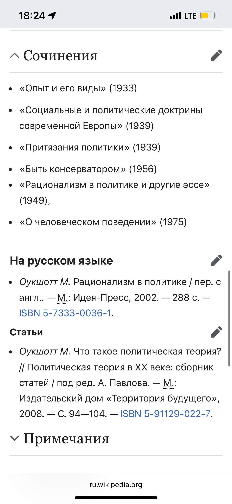
Post 5935
2026-01-25 15:25:11+00:00
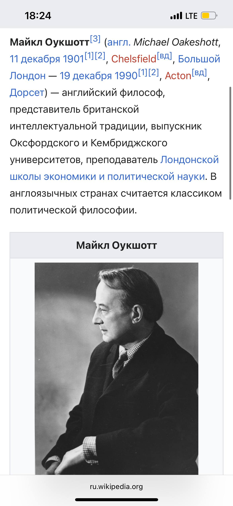
Post 5934
2026-01-25 15:25:07+00:00
Post 5933
2026-01-25 15:23:44+00:00
“Другими словами, правовой порядок возник спонтанно, а не в результате рационального плана, также как это произошло с экономическим порядком.”
Excerpt From
Как быть консерватором
User
This material may be protected by copyright.
Post 5932
2026-01-24 21:41:14+00:00
“Одним из следствий этого аргумента является то, что экономическое знание, содержащееся в ценах, живет в системе, генерируется свободной деятельностью бесчисленного множества рациональных игроков и не может быть преобразовано в набор формул или импликаций для некоторого технического устройства. Вероятно, австрийцы первыми осознали, что экономическая деятельность демонстрирует своеобразную логику коллективных действий, в результате которых реакция одного человека изменяет информационную базу другого. Из этой интуиции выросла теория игр, разработанная фон Нейманом и Моргенштерном в качестве первого шага к объяснению рынков, и развивающаяся сегодня как отрасль математики с приложениями (и ошибочными расчетами) во всех областях социальной и политической жизни.32”
Excerpt From
Как быть консерватором
User
This material may be protected by copyright.
Post 5931
2026-01-24 21:39:36+00:00
“Плановая экономика является наилучшим примером проекта, который предположительно является рациональным, но при этом совсем не рациональный, поскольку зависит от знаний, доступных только в условиях, которые он разрушает.”
Excerpt From
Как быть консерватором
User
This material may be protected by copyright.
Post 5930
2026-01-24 21:39:02+00:00
“Плановая экономика предлагает рациональное распределение вместо «случайного» распределения на рынке и уничтожает информацию, от которой зависит правильное функционирование экономики, то есть подрывает необходимую ей базу знаний.”
Excerpt From
Как быть консерватором
User
This material may be protected by copyright.
Post 5929
2026-01-24 21:36:43+00:00
“Цены в свободной экономике предлагают решение бесчисленных одновременных уравнений, координирующих индивидуальный спрос с доступным предложением.”
Excerpt From
Как быть консерватором
User
This material may be protected by copyright.
Post 5928
2026-01-24 21:35:29+00:00
“Австрийский ответ на эти планы основан на трех ключевых идеях. Во-первых, экономическая деятельность зависит от знания желаний, потребностей и ресурсов других людей. Во-вторых, это знание рассредоточено по всему обществу и не является собственностью какого-либо человека. В-третьих, при свободном обмене товарами и услугами ценовой механизм обеспечивает доступ к этим знаниям не в результате теоретических соображений, а как сигнал к действию.”
Excerpt From
Как быть консерватором
User
This material may be protected by copyright.
Post 5927
2026-01-24 21:33:42+00:00
“нужно начать с истины капитализма, истины, которую социализм традиционно отрицал.”
Excerpt From
Как быть консерватором
User
This material may be protected by copyright.
Post 5926
2026-01-24 21:32:50+00:00
“Нам нужно по-новому взглянуть на мир, используя естественный язык человеческих отношений.”
Excerpt From
Как быть консерватором
User
This material may be protected by copyright.
Post 5925
2026-01-24 21:31:56+00:00
“Смысл книги Оруэлла состоял в том, чтобы показать, как дегуманизирующий жаргон марксизма порождает также дегуманизированный мир, в котором люди становятся абстракциями, а истина просто орудием в руках власти.”
Excerpt From
Как быть консерватором
User
This material may be protected by copyright.
Post 5924
2026-01-24 21:30:44+00:00
“Слово «капитализм» до сих пор используется для описания любой экономики, основанной на частной собственности и свободном обмене. И термин «социализм» до сих пор используется для обозначения различных попыток ограничить, контролировать или заменить некоторые аспекты капитализма в таком понимании.”
Excerpt From
Как быть консерватором
User
This material may be protected by copyright.
Post 5923
2026-01-24 17:29:00+00:00
“социализм есть опасная фантазия, попытка идти по дороге в рай с неизбежным входом в ад.”
Excerpt From
Как быть консерватором
User
This material may be protected by copyright.
Post 5922
2026-01-24 17:28:29+00:00
“Как и в случае с национализмом, суть истины превратилась в ересь, обратив истину в заблуждение, а естественное чувство в религиозное требование. Это то искушение, которому наиболее сильно подвержены левые интеллектуалы, подменяющие несовершенного человека чистой абстракцией и видящие человеческий мир, как если бы он состоял из сил, движений, классов и идей, движущихся в стратосфере исторической необходимости, из которой должны быть исключены беспорядочные реалии. Именно это Оруэлл увидел в мире, созданном интеллектуалами – мир придуманный и навязанный Коммунистической партией и дистиллированный в «Ингсоц» («1984»).”
Excerpt From
Как быть консерватором
User
This material may be protected by copyright.
Post 5921
2026-01-24 17:25:15+00:00
“Однако в европейских странах у людей нет обычая радоваться удаче других людей. Мы часто боимся раскрыть свое богатство, силу или успех в мирских делах из-за страха перед агрессией, которую это привлечет. Ницше приписывал рессентимент глубокому изъяну нашей цивилизации, который в равной степени проявлялся в христианской религии, демократии и социалистических программах его времени.”
Excerpt From
Как быть консерватором
User
This material may be protected by copyright.
Post 5920
2026-01-24 17:24:13+00:00
“Кроме того, неравенство порождает негодование, а для достижения социальной гармонии необходимо преодолеть обиду. Состоятельные люди могут осознавать это и стремиться что-то сделать. Они могут жертвовать на благотворительность, посвящать некоторую часть своих ресурсов помощи другим и в целом проявлять соответствующую меру сочувствия к тем, кому повезло меньше, чем им самим. В частности, они могут создавать предприятия, которые предлагают работу и, таким образом, дать другим возможность добиться успеха собственными усилиями. Так обычно бывает в Америке, и это одна из причин, по которой, по моему опыту, американцы, даже находящиеся в неблагоприятном положении, довольны чужой удачей, веря, что в какой-то мере они могут участвовать в ней.”
Excerpt From
Как быть консерватором
User
This material may be protected by copyright.
Post 5919
2026-01-24 17:21:48+00:00
“Однако именно так с ними обращаются, когда ложные надежды возлагаются на утопическую идею «образование для равенства».”
Excerpt From
Как быть консерватором
User
This material may be protected by copyright.
Post 5918
2026-01-24 17:20:54+00:00
“ребенок может потерпеть неудачу в одном, а добиться успеха в другом. Только разнообразная образовательная система с хорошо продуманными и строгими экзаменами позволяет детям приобрести навыки, знания или профессию, соответствующие их способностям.”
Excerpt From
Как быть консерватором
User
This material may be protected by copyright.
Post 5917
2026-01-24 17:18:37+00:00
“Другими словами, успех одних оплачивается неудачей других. Справедливость требует равных возможностей. Так родилось движение за единое образование вместе с враждебностью к разделению учащихся и требованием понижения сложности экзаменов, чтобы не дать государственной системе образования создавать и воспроизводить «неравенство».”
Excerpt From
Как быть консерватором
User
This material may be protected by copyright.
Post 5916
2026-01-24 17:12:55+00:00
“Октябрьская революция в России была направлена не только на правительство Керенского. Она была нацелена на успешных, на тех, кто сделал все возможное, чтобы выделиться среди своих современников. Во всех сферах деятельности и в каждом учреждении те, кто был наверху, были идентифицированы, экспроприированы, убиты или отправлены в изгнание, и Ленин лично наблюдал за удалением тех, кого он считал выдающимися.24 Таков согласно заблуждению «нулевой суммы», был способ улучшить положение остающихся. Атака Сталиным на кулаков – крестьян, владеющих собственностью, была примером того же образа мыслей, как и нападение Гитлера на евреев, чьи привилегии и собственность в глазах нацистов были куплены за счет немецкого рабочего класса. Взрыв анти-буржуазных настроений в послевоенной Франции, отразившийся в «Сен-Жене» Сартра и «Второй пол» Симоны де Бовуар, следовал той же логике и был включен в философию soixante-huitards.”
Excerpt From
Как быть консерватором
User
This material may be protected by copyright.
Post 5915
2026-01-24 17:07:35+00:00
“Это заблуждение «нулевой суммы» стало классическим утверждением теории прибавочной стоимости Маркса, согласно которой прибыль капиталиста конфискуется у рабочей силы.”
Excerpt From
Как быть консерватором
User
This material may be protected by copyright.
Post 5914
2026-01-24 17:06:48+00:00
“Настоящее извращение здесь заключается в ложном мнении, которое рассматривает жизнь в обществе как жизнь, в которой каждый успех это чья-то неудача. Согласно этому заблуждению, все выигрыши оплачиваются проигравшими. Общество это игра с нулевой суммой, в которой уравновешиваются затраты и выгоды, и в которой выигрыш победителя приводит к проигрышу других.”
Excerpt From
Как быть консерватором
User
This material may be protected by copyright.
Post 5913
2026-01-24 17:05:34+00:00
“Затем, как и в Греции, мы становимся свидетелями создания нового «праздного класса», который использует государство для извлечения доходов. В то же время власть государства возрастает: когда более половины населения работает в государственном аппарате, как сегодня во Франции, общественный продукт фактически конфискуется у тех, кто его производит, и передается бюрократии, которая его распределяет. И эта бюрократия становится все менее и менее подотчетной избирателям по мере роста ее бюджета.”
Excerpt From
Как быть консерватором
User
This material may be protected by copyright.
Post 5912
2026-01-24 17:03:18+00:00
“Социалистическое государство не «перераспределяет» общее достояние. Оно создает ренту с доходов налогоплательщиков и предлагает эту ренту своим привилегированным клиентам. Эти клиенты удерживают свою арендную плату, голосуя за тех, кто их предоставляет.”
Excerpt From
Как быть консерватором
User
This material may be protected by copyright.
Post 5911
2026-01-24 17:01:31+00:00
“Эта картина, согласно которой продукты человеческого труда по существу не принадлежат никому до тех пор, пока государство не распределит их, не является просто стандартной позицией левой мысли. Она запрограммирована в академической политической философии и стала практически неприступной для любой критики внутри дисциплины.”
Excerpt From
Как быть консерватором
User
This material may be protected by copyright.
Post 5910
2026-01-24 16:55:21+00:00
“В результате правительства все чаще берут взаймы у будущего, закладывая активы нерожденных детей в пользу живых.”
Excerpt From
Как быть консерватором
User
This material may be protected by copyright.
Post 5909
2026-01-24 16:53:24+00:00
“См. Frank Field, Welfare Titans, and Other Essays on Welfare Reform (London: Civitas, 2002).”
Excerpt From
Как быть консерватором
User
This material may be protected by copyright.
Post 5908
2026-01-24 16:52:11+00:00
“изобретения Бисмарком государства всеобщего благосостояния”
Excerpt From
Как быть консерватором
User
This material may be protected by copyright.
Post 5907
2026-01-24 16:50:32+00:00
“И чем больше благ мы извлекаем из этого положения дел, тем больше мы должны отдавать взамен. Это не договорное обязательство. Это долг благодарности. Но он все же существует и должен быть встроен в консервативное видение как краеугольный камень социальной политики.”
Excerpt From
Как быть консерватором
User
This material may be protected by copyright.
Post 5906
2026-01-24 16:48:42+00:00
“Серьезный консерватизм должен предлагать способы распространения выгод от членства в обществе на тех, кому не удалось добиться этого для себя.”
Excerpt From
Как быть консерватором
User
This material may be protected by copyright.
Post 5905
2026-01-24 16:46:57+00:00
“Поэтому британские консерваторы в девятнадцатом веке часто выступали вместе с чартистами, а величайший консервативный мыслитель викторианской эпохи Джон Раскин адресовал многие свои проповеди городскому рабочему классу.”
Excerpt From
Как быть консерватором
User
This material may be protected by copyright.
Post 5904
2026-01-24 16:16:25+00:00
воспоминания математиков(mathmemories) [-1002039503200]
2026-01-24 15:37:53+00:00
TEXT
==========
В наш век за душу каждой отдельной математической теории борются дьявол абстрактной алгебры и ангел геометрии.
Г. Вейль
Post 5903
2026-01-23 19:55:39+00:00
“Поэтому в дальнейшем я обращаюсь к людям, которые определяют свои политические права и обязанности в национальных терминах и научились ставить Бога на место, которому Он принадлежит.”
Excerpt From
Как быть консерватором
User
This material may be protected by copyright.
Post 5902
2026-01-23 19:55:08+00:00
“Но консерватизм это культура утверждения. Речь идет о том, что мы ценим и что хотим защищать. Я считаю, что всякий, кто понимает, что поставлено на карту в глобальном конфликте, который развивается сегодня, признает также, что нация – это одна из вещей, которую мы должны сохранить.”
Excerpt From
Как быть консерватором
User
This material may be protected by copyright.
Post 5901
2026-01-23 19:54:22+00:00
“Возьмите любой аспект западного наследия, которым гордились наши предки, и вы найдете университетские курсы, посвященные его деконструкции.”
Excerpt From
Как быть консерватором
User
This material may be protected by copyright.
Post 5900
2026-01-23 19:50:47+00:00
“Для того, кто вырос на доктрине о том, что необходимый закон исходит от Бога и что послушание, прежде всего, принадлежит Ему, притязания светской юрисдикции рассматриваются в лучшем случае как неуместность, в худшем как узурпация. Такова мысль, например, Сейида Кутба в Milestones (ma‘alim fi’l tariq, 1964) В этой книге Кутб осуждает светский закон, национальную идентичность и попытку установить чисто человеческий политический порядок без ссылки на явленную волю Бога. Все это кощунственно в глазах Кутб. Среди последователей Кутба были Усама бен Ладен и его преемник Айман аз-Завахири. Оба хотели установить на Аравийском полуострове правление Бога, чтобы закон, открытый Пророку, мог управлять родиной Пророка в качестве первого этапа к управлению во всем мире. Тем временем их база, Аль-Каида, была создана в киберпространстве, подходящем месте для задачи, не конкретной где либо, но общей везде.”
Excerpt From
Как быть консерватором
User
This material may be protected by copyright.
Post 5899
2026-01-23 19:48:12+00:00
“С первых дней христианства было очевидно, что Новый Завет был не попыткой заменить закон имперской власти, а попыткой создать в нем пространство для духовного роста. В своих притчах Христос подчеркивал, что следует соблюдать светский закон и что наш долг перед Богом не требует от нас игнорировать его или заменять его. Мы также не должны уделять слишком много внимания детальным указаниям Торы, поскольку «суббота создана для человека, а не человек для субботы».”
Excerpt From
Как быть консерватором
User
This material may be protected by copyright.
Post 5898
2026-01-23 19:45:42+00:00
“Викторианские истории повествуют о Благословенном острове и его защите, о Славной революции и строительстве великой империи, над которой никогда не заходит солнце. В связи с этими рассказами о славе возникает рассказ о жертвах, который стал национальным мифом, поддержавший британский народ во время двух мировых войн. Ничто не олицетворяет этот переход от славы к самопожертвованию более остро, чем фильм Scott of the Antarctic, снятый в 1948 году в память о душевной стойкости британского народа в тяжелые годы Второй мировой войны. Как мы узнаем, у экспедиции Скотта не было никакого другого мотива, кроме состязания школьников. Это был крайне бесплодный жест, но в нем добродетели англичан подверглись высшей проверке. Скотт и его команда стали трансцендентным образом «хорошего неудачника»: игрока, который жертвует всем с улыбкой и похоронен вдали от дома без каких-либо достижений, кроме благородного поведения, которое привело к его гибели. Победа во Второй мировой войне стоила британскому народу всего, что у него было, но смерть Скотта была мистическим доказательством того, что «потеря это прибыль».”
Excerpt From
Как быть консерватором
User
This material may be protected by copyright.
Post 5897
2026-01-23 19:40:11+00:00
“Национальные мифы, как правило, бывают трех видов: рассказы о славе, о жертвах и об освобождении, каждый из которых отражен в учебниках истории того или иного дня.”
Excerpt From
Как быть консерватором
User
This material may be protected by copyright.
Post 5896
2026-01-23 19:38:30+00:00
“И истории меняются, чтобы приспособиться к изменяющимся «нас», изменяющемуся множественному числу от первого лица. Это, как выразился Платон, благородная ложь: буквальная ложь, выражающая эмоциональные истины.”
Excerpt From
Как быть консерватором
User
This material may be protected by copyright.
Post 5895
2026-01-23 19:34:56+00:00
“границы означают национальное государство. Все способы, которыми люди определяют свою идентичность с точки зрения места, к которому они принадлежат, играют определенную роль в укреплении чувства национальной принадлежности”
Excerpt From
Как быть консерватором
User
This material may be protected by copyright.
Post 5894
2026-01-23 19:32:53+00:00
“привел к возникновению безответственной империи в Европе”
Excerpt From
Как быть консерватором
User
This material may be protected by copyright.
Post 5893
2026-01-22 21:42:50+00:00
“Не существует множественного числа от первого лица, политическим выражением которого являются европейские институты.”
Excerpt From
Как быть консерватором
User
This material may be protected by copyright.
Post 5892
2026-01-22 21:41:43+00:00
“Короче говоря, светский закон адаптируется, религиозный закон сохраняется. Более того, именно потому, что шариат не адаптировался, никто толком не знает, о чем он говорит. Требует ли он забивать камнями прелюбодеев до смерти? Некоторые говорят «да», некоторые - «нет». Означает ли это, что вкладывать деньги под проценты запрещено? Некоторые говорят «да», некоторые - «нет». Когда Бог устанавливает законы, законы становятся такими же загадочными, как и Бог.”
Excerpt From
Как быть консерватором
User
This material may be protected by copyright.
Post 5891
2026-01-22 21:39:50+00:00
“Поэтому сегодня, когда к власти приходят клирики, закон снова обращается к заповедям, разработанным для управления давно исчезнувшим сообществом; и юристам очень сложно адаптировать их к жизни современных людей.”
Excerpt From
Как быть консерватором
User
This material may be protected by copyright.
Post 5890
2026-01-22 21:37:40+00:00
“Мировая история является доказательством этого: везде, где люди идентифицируют себя в терминах, которые не разделяют их соседи, государство разваливается при первом серьезном ударе, как это произошло в бывшей Югославии, Сирии, Сомали и Нигерии.”
Excerpt From
Как быть консерватором
User
This material may be protected by copyright.
Post 5889
2026-01-22 21:26:55+00:00
“В семьях люди часто собираются вместе, чтобы обсудить общие вопросы. Возникает разногласие, противоречивые советы и даже расколы. Но в счастливой семье все соглашаются с окончательным решением, даже те, кто не согласен с ним. Это потому, что у них есть общие мотивы оставаться вместе. Для всех них есть нечто более важное, чем их собственное мнение, а именно семья, то, для чего они собрались вместе, чтобы обсудить ее благополучие и ее будущее. Другими словами: семья это часть их идентичности; это то, что не меняется, хотя их мнения меняются и противоречат друг другу. Общая идентичность снимает боль от разногласий. Она делает возможной оппозицию и, следовательно, рациональное обсуждение; и это основа любого образа жизни, в котором компромисс, а не диктатура является нормой.”
Excerpt From
Как быть консерватором
User
This material may be protected by copyright.
Post 5888
2026-01-22 21:25:47+00:00
“Это наша основная защита от того, что Токвиль и Джон Стюарт Милль назвали тиранией большинства. Мнение большинства может быть ошибочным; желания большинства могут быть злыми; сила большинства может быть опасной. Есть некто, кто более важен, чем большинство. Это тот, кто не согласен с большинством. Мы должны защитить этого человека. Он тот, кто может поднять вопрос, который не хочет слушать ни одна толпа, а именно вопрос, права ли она.”
Excerpt From
Как быть консерватором
User
This material may be protected by copyright.
Post 5887
2026-01-21 01:18:18+00:00
“Консерватизм это философия привязанности. Мы привязаны к любимым вещам и хотим защитить их от разложения. Но мы знаем, что они не могут длиться вечно. Между тем мы должны изучить способы, с помощью которых мы можем сохранять их через все изменения, которые они неизбежно претерпевают, чтобы наша жизнь по-прежнему одушевлялась доброй волей и благодарностью.”
Excerpt From
Как быть консерватором
User
This material may be protected by copyright.
Post 5886
2026-01-21 01:18:14+00:00
🔸🔷
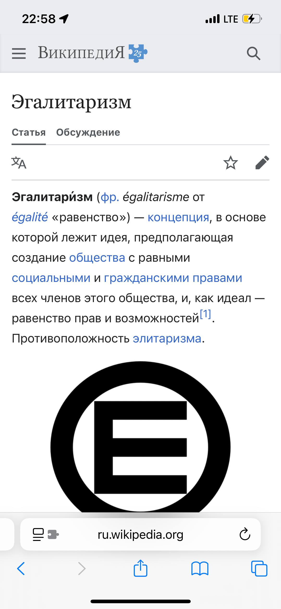
Post 5885
2026-01-20 19:58:17+00:00
Post 5884
2026-01-20 19:58:10+00:00
https://ru.wikipedia.org/wiki/%D0%AD%D0%B3%D0%B0%D0%BB%D0%B8%D1%82%D0%B0%D1%80%D0%B8%D0%B7%D0%BC
Post 5883
2026-01-20 19:57:46+00:00
“Таков неизбежный результат конфискации настоящей цели образования, каковой является именно образование, задуманное как самоцель, и замены ее другой целью: равенством, к достижению которого ни одна школа не может последовательно стремиться и надежно обеспечивать.”
Excerpt From
Как быть консерватором
User
This material may be protected by copyright.
Post 5882
2026-01-20 19:56:45+00:00
“Так и многие положительные эффекты образования возникают не потому, что их преследуют, а потому, что их не преследуют: они возникают как побочный продукт стремления к другому результату, а именно к знаниям. Если знание рассматривается просто как средство получения социальных преимуществ, а не преследуется ради него самого, то и знание, и предоставляемые им преимущества будут потеряны.”
Excerpt From
Как быть консерватором
User
This material may be protected by copyright.
Post 5881
2026-01-20 19:54:55+00:00
“в 1960-х годах. Утверждалось, что школы не предназначены исключительно для сдачи экзаменов; это места, где дети общаются и где на их будущие перспективы влияют тысячи моментов. Почему бы нам не адаптировать учебную программу и расписание таким образом, чтобы уравнять их шансы?”
Excerpt From
Как быть консерватором
User
This material may be protected by copyright.
Post 5880
2026-01-20 19:51:36+00:00
“Это привело к увеличению призыва граждан на военную службу и неуклонному поглощению функций общества государственной машиной.”
Excerpt From
Как быть консерватором
User
This material may be protected by copyright.
Post 5879
2026-01-20 19:50:32+00:00
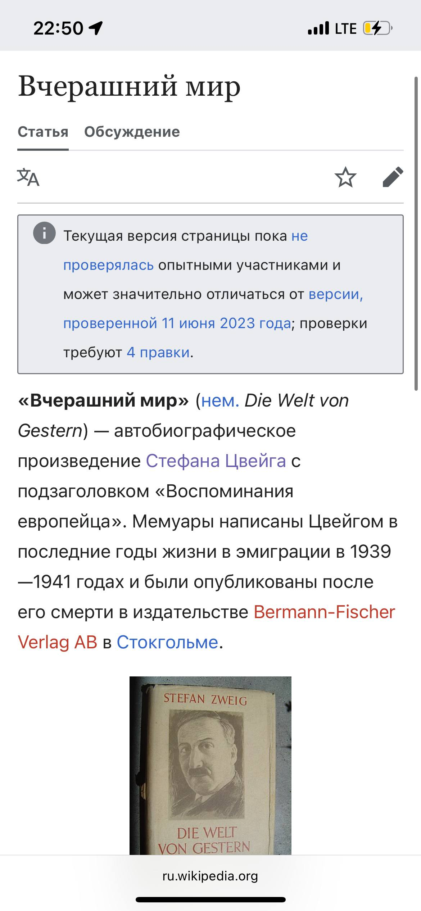
Post 5878
2026-01-20 19:50:27+00:00
Post 5877
2026-01-20 19:47:47+00:00
“Во «Вчерашнем мире» (Die Welt von Gestern) Стефан Цвейг объяснил упадок гражданского порядка в Европе мифом о прогрессе.”
Excerpt From
Как быть консерватором
User
This material may be protected by copyright.
Post 5876
2026-01-20 19:45:13+00:00
“Однако, к разочарованию властей, у людей возникала дружба; они собирались вместе, чтобы читать, учиться, сочинять музыку. И даже если неусыпная тайная полиция время от времени срывала их собрания, факт оставался фактом: благодаря этим собраниям жизнь общества обновлялась в маленьких отрядах, изолировавшихся от все сокрушающих команд социалистического государства. И в своей личной жизни люди обнаруживали, что гражданское общество не определяется внешними целями. Оно возникает при любых обстоятельствах как самоцель, форма жизни, которую ценят за то, что она есть, а не за то, что она делает.”
Excerpt From
Как быть консерватором
User
This material may be protected by copyright.
Post 5875
2026-01-20 19:44:21+00:00
“Коммунистический гражданин должен был быть идеальным Homo oeconomicus, движимым рациональным личным интересом для достижения ничьей цели.”
Excerpt From
Как быть консерватором
User
This material may be protected by copyright.
Post 5874
2026-01-20 19:43:26+00:00
“Вся политика оправдывалась будущим социалистическим порядком, к которому неумолимо шло общество. Партия шла впереди, а тайная полиция шла за ее спиной. Не разрешалось существовать ни одному учреждению, которое не находилось бы под партийным контролем, за одним исключением в Польше. Польская католическая церковь смогла договориться об особых условиях для себя, что оказалось фатальным для коммунистического эксперимента, когда польский священник был избран Папой. Благотворительность была вне закона, и частные лица не могли владеть собственностью, предназначенной для общего пользования. Общество было полностью поставлено на службу достижения одной главной цели – «построению социализма».”
Excerpt From
Как быть консерватором
User
This material may be protected by copyright.
Post 5873
2026-01-18 01:58:01+00:00
“Эти обязательства не являются обязательствами справедливости, якобы вытекающими из свободных отношений взрослых людей. Римляне знали их как обязанности благочестия (pietas), означавшего благодарность к тому, что дано, – благодарность, которую мы спонтанно обращаем к богам. Сегодня мы неохотно признаем у таких обязательств теологическую основу, хотя важно видеть, что для верующих обязательства не по их свободному выбору имеют жизненно важное значение не только для построения прочного общественного строя снизу, но и в должной мере перед Богом.”
Excerpt From
Как быть консерватором
User
This material may be protected by copyright.
Post 5872
2026-01-18 01:50:41+00:00
“Кроме того, общественный договор имеет смысл только в том случае, если в него включены будущие поколения. Цель заключается в создании устойчивого общества. И немедленно возникает та сеть внедоговорных обязательств, которая связывает родителей с детьми, детей с родителями и которая волей-неволей гарантирует, что в течение каждого поколения общество будет обременено также членами без права голоса, мертвыми и нерожденными, кто будет полагаться на нечто иное, чем просто договор между живыми, если их права должны уважаться и их любовь заслужена.”
Excerpt From
Как быть консерватором
User
This material may be protected by copyright.
Post 5871
2026-01-18 01:17:41+00:00
“Другие: вина, стыд, любовь к красоте, чувство справедливости возникают в сфере разума и отражают паутину межличностных отношений и понимания, посредством которых мы позиционируем себя как свободные субъекты в сообществе других, подобных нам. На обоих уровнях – инстинктивном и личном – способность к самопожертвованию возникает, в одном случае как слепая привязанность, в другом как чувство ответственности перед другими и за нравственный образ жизни.”
Excerpt From
Как быть консерватором
User
This material may be protected by copyright.
Post 5870
2026-01-18 01:15:19+00:00
“В «Теории нравственных чувств» Смит подчеркивал, что доверие, ответственность и подотчетность существуют только в обществе, которое их уважает, и только там, где может созреть плод спонтанного человеческого сочувствия. Именно там, где сочувствие, долг и добродетель имеют место, личный интерес невидимой рукой ведет к результату, приносящему пользу каждому. А это означает, что люди могут наилучшим образом удовлетворить свои интересы только в при условии, что они также способны отказаться от них при случае. Под каждым обществом, где личные интересы приводят к положительным результатам, лежит самопожертвование.”
Excerpt From
Как быть консерватором
User
This material may be protected by copyright.
Post 5869
2026-01-17 17:04:31+00:00
🔴🟡🟢🟢🔵🟣
Post 5868
2026-01-16 19:48:44+00:00
Идея убежища восходит к Средним векам*
. В христиан-
ском соборе убежище, святилище (sanctuary, от латинско-ro sanctus — «святой») являлось наиболее значимым местом, включавшим алтарь; поскольку церковь не подчинялась мо-наршей власти, именно в святилище искали спасения те, кто
имел несчастье вызвать гнев монарха. Арестовать в храме не могли, пусть даже присутствующий был отъявленным зло-деем.
* На самом деле к эпохе античности: достаточно вспомнить рассказы Геродота, Фукидида, Плутарха и других античных авторов о людях, искавших защиты и спасения в храмах богов. -
Примеч. ред.
Post 5867
2026-01-16 19:39:56+00:00
Ни одно общество не имеет возможности без конца принимать новичков, особенно если многие из них бедны и лишены профессиональных навыков.
Роберт Сэмюелсон, экономист и колумнист журнала «Ньюсуик»
(2005)2
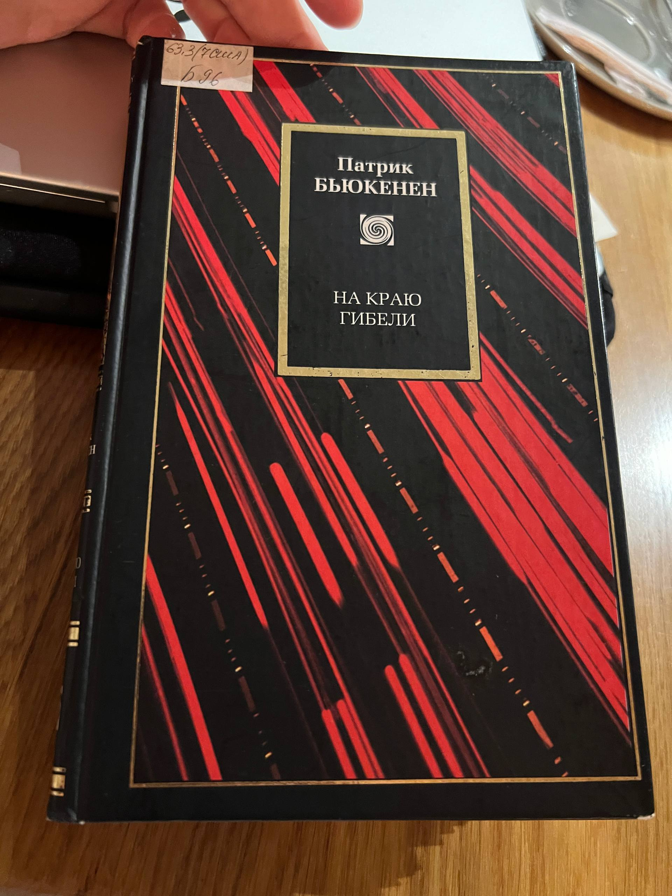
Post 5866
2026-01-16 19:35:46+00:00
Post 5865
2026-01-16 19:22:35+00:00
Post 5864
2026-01-16 19:22:32+00:00
Post 5863
2026-01-16 19:20:37+00:00
“поскольку речь идет о жизни в эмпирическом мире, а не о вере в трансцендентальное. Какими бы ни были наша религия и наши личные убеждения, мы являемся коллективными наследниками прекрасных и редких вещей, и политическая жизнь для нас должна иметь главную цель: твердо придерживаться этих вещей, чтобы передать их нашим детям.”
Excerpt From
Как быть консерватором
User
This material may be protected by copyright.
Post 5862
2026-01-16 19:19:39+00:00
“Опыт моей собственной жизни позволил мне яснее понять сказанное в контексте политики. Именно этот аспект человеческого существования отрицался тоталитарными системами двадцатого века. И желание отрицать это лежит в основе антихристианского поворота Евросоюза и хитрой диктатуры его элит.”
Excerpt From
Как быть консерватором
User
This material may be protected by copyright.
Post 5861
2026-01-16 19:19:08+00:00
“И этот опыт напоминает нам важную истину: подотчетное правительство не приходит через выборы. Оно возникает через уважение к закону, через общественный дух и через культуру вероисповедания. Думать, что существует просто случайная связь между этими добродетелями и нашим иудео-христианским наследием, значит жить в стране облачных кукушек и упустить из виду культуру, которая на протяжении веков сосредоточивалась на покаянии.”
Excerpt From
Как быть консерватором
User
This material may be protected by copyright.
Post 5860
2026-01-16 19:14:58+00:00
“Прощение может быть предложено только при определенных условиях, а культура прощения это культура, которая внедряет эти условия в индивидуальную душу. Вы можете простить тех, кто вас обидел, только если они признают свою вину. Это признание не достигается словами «да, это правда, это то, что я сделал». Это требует покаяния и искупления. Посредством этих самоуничижительных действий преступник встречает свою жертву и восстанавливает моральное равенство, которое делает возможным прощение. В иудео-христианской традиции все это хорошо известно и включено в таинствах Римско-католической церкви, а также в ритуалы и литургию Йом-Кипура. Из этих религиозных источников выросла культура, которая позволяет нам признавать свои ошибки, возмещать ущерб нашим жертвам и требовать ответственности друг от друга по всем вопросам, в которых наше свободное поведение может нанести вред тем, у кого есть основания полагаться на нас.”
Excerpt From
Как быть консерватором
User
This material may be protected by copyright.
Post 5859
2026-01-16 19:08:20+00:00
“В христианской традиции основными актами жертвоприношения являются исповедь и прощение. Те, кто исповедуются, жертвуют своей гордостью, а те, кто прощает, жертвуют своей обидой, отказываясь тем самым от того, что было дорого их сердцу. Исповедь и прощение это привычки, которые сделали возможной нашу цивилизацию.”
Excerpt From
Как быть консерватором
User
This material may be protected by copyright.
Post 5858
2026-01-16 19:06:52+00:00
“Вторая истина заключалась в том, что именно по той причине, что ислам ставит религию выше национальности в качестве критерия членства в обществе, исламизм представляет собой угрозу политическому порядку. Это особенно верно в отношении исламизма”
Excerpt From
Как быть консерватором
User
This material may be protected by copyright.
Post 5857
2026-01-16 17:18:46+00:00
“после клеветы со стороны BBC и The Observer я решил покинуть академический мир и жить своим умом.”
Excerpt From
Как быть консерватором
User
This material may be protected by copyright.
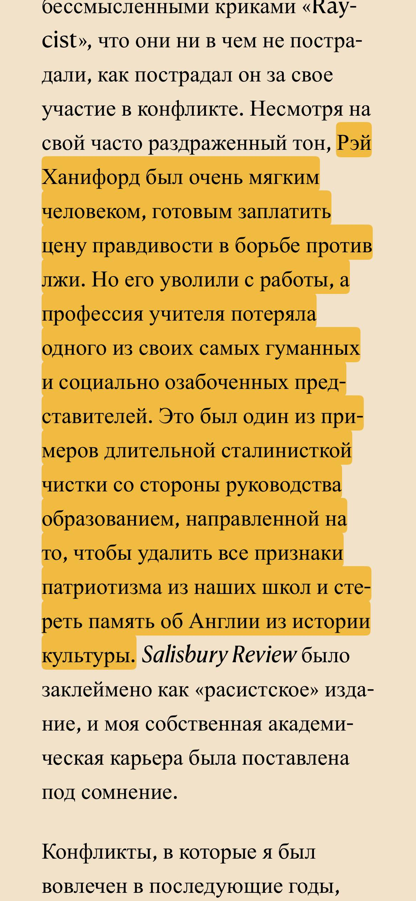
Post 5856
2026-01-16 17:17:02+00:00
Post 5855
2026-01-16 17:16:09+00:00
“Рэй Ханифорд был очень мягким человеком, готовым заплатить цену правдивости в борьбе против лжи. Но его уволили с работы, а профессия учителя потеряла одного из своих самых гуманных и социально озабоченных представителей. Это был один из примеров длительной сталинисткой чистки со стороны руководства образованием, направленной на то, чтобы удалить все признаки патриотизма из наших школ и стереть память об Англии из истории культуры.”
Excerpt From
Как быть консерватором
User
This material may be protected by copyright.
Post 5854
2026-01-16 17:14:15+00:00
“Рэй Ханифорд был честным и добросовестным учителем, полагавшим своим долгом готовить детей к ответственной жизни в обществе.”
Excerpt From
Как быть консерватором
User
This material may be protected by copyright.
Post 5853
2026-01-16 14:43:49+00:00
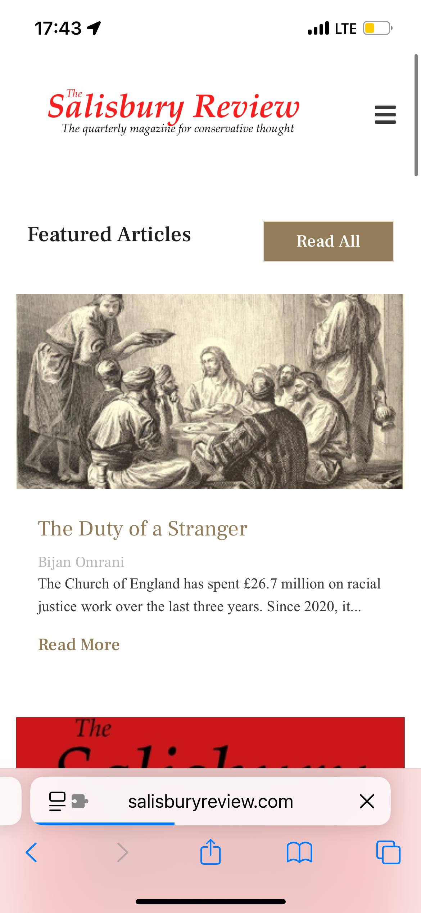
Post 5852
2026-01-16 14:43:45+00:00
Post 5851
2026-01-16 14:43:36+00:00
“Мои приключения в коммунистическом мире совпали с другим приключением дома – основанием журнала консервативной мысли Salisbury Review, названного в честь великого премьер-министра, величие которого проявляется в том, что о нем никто ничего не знает, несмотря на то, что он занимал этот пост 20 лет.”
Excerpt From
Как быть консерватором
User
This material may be protected by copyright.
Post 5850
2026-01-16 14:41:53+00:00
“ И я понял, что желание управлять обществом во имя равенства в точности повторяет презрение к человеческой свободе, с которым я столкнулся в Восточной Европе. Действительно, существует такая вещь, как общество; но оно состоит из людей. И люди должны быть свободными, что означает быть свободными от наглых требований тех, кто хочет их изменить.”
Excerpt From
Как быть консерватором
User
This material may be protected by copyright.
Post 5849
2026-01-16 14:41:31+00:00
“Все эти законы, сформулированные Британской лейбористской партией, которая ставила своей целью организовать общество для всеобщего блага путем контроля, маргинализации или запрещения какой-либо естественной человеческой деятельности, приобрели для меня другое значение. Меня внезапно поразила дерзость политической партии, которая намеревалась конфисковать целые отрасли у тех, кто их создал, упразднить гимназии, которым я был обязан своим образованием, заставить школы объединяться, контролировать отношения на рабочем месте, регулировать часы работы, принуждать рабочих вступать в профсоюзы, запрещать охоту, отбирать собственность у домовладельца и передавать ее арендатору, заставлять предприятия продавать себя правительству по диктуемой цене, контролировать всю нашу деятельность через quangos8 проверяющих нашу политкорректность.”
Excerpt From
Как быть консерватором
User
This material may be protected by copyright.
Post 5848
2026-01-16 14:39:44+00:00
“Для них не было ничего важнее сохранения их национальной культуры. Лишенные материальных и профессиональных условий для творческой деятельности, их дни были заполнены размышлениями о своей стране и ее прошлом, а также о вопросе уникальности чешской истории, который волновал чехов со времен движения за национальное возрождение в девятнадцатом веке. Их работы было запрещено публиковать; власти скрыли их существование от мира и решили вычеркнуть их следы из книги истории. Поэтому диссиденты остро осознавали ценность памяти. Их жизнь были упражнением в том, что Платон называл анамнезом: осознанием забытых вещей.”
Excerpt From
Как быть консерватором
User
This material may be protected by copyright.
Post 5847
2026-01-16 14:39:28+00:00
“Для них не было ничего важнее сохранения их национальной культуры. Лишенные материальных и профессиональных условий для творческой деятельности, их дни были заполнены размышлениями о своей стране и ее прошлом, а также о вопросе уникальности чешской истории, который волновал чехов со времен движения за национальное возрождение в девятнадцатом веке. Их работы было запрещено публиковать; власти скрыли их существование от мира и решили вычеркнуть их следы из книги истории. Поэтому диссиденты остро осознавали ценность памяти. Их жизнь были упражнением в том, что Платон называл анамнезом: осознанием забытых вещей.”
Excerpt From
Как быть консерватором
User
This material may be protected by copyright.
Post 5846
2026-01-16 01:23:04+00:00
“Джон О’Салливан убедительно доказывает, что одновременное присутствие на высших постах Рейгана, Тэтчер и Папы Иоанна Павла II было причиной распада Советского Союза.7 И мой собственный опыт подтверждает это.”
Excerpt From
Как быть консерватором
User
This material may be protected by copyright.
Post 5845
2026-01-16 01:18:29+00:00
“Тэтчер намеревалась разрушить. Но когда она заявила, что предприниматели создают вещи, а менеджеры их закапывают, сразу же стало очевидно, что она права, поскольку мы погружены в менеджерскую культуру.”
Excerpt From
Как быть консерватором
User
This material may be protected by copyright.
Post 5844
2026-01-16 00:37:10+00:00
“Уилсон, Хит и Каллаган полагались на «Neddy», чтобы подтвердить свою общую веру в то, что если вы продержитесь достаточно долго, все пойдет хорошо, и вся вина ляжет на вашего преемника. Маргарет Тэтчер, напротив, считала, что в бизнесе, как и в политике, ответственность не перекладывается. Важным человеком в свободной экономике является не менеджер, а предприниматель - тот, кто берет на себя риски и расплачивается за них.”
Excerpt From
Как быть консерватором
User
This material may be protected by copyright.
Post 5843
2026-01-15 21:24:05+00:00
ЭТИМОЛОГ
Post 5842
2026-01-15 19:55:03+00:00
“При чтении документов для коллегии адвокатов и изучении английского права, каким оно было до искажений, введенных европейскими судами, и до конституционных изменений, скороспешно внесенных Тони Блэром, мне открылось совершенно иная картина нашего общества. Правосудие общего права говорило мне о сообществе, построенном снизу благодаря гарантиям, предоставляемым судами всем, кто пришел к ним с чистыми руками. Это видение осталось со мной как нарратив о нашей стране. В английском праве есть действующие статуты и важные прецеденты, относящиеся к XIII веку. Прогрессивные люди сочтут это абсурдом. Для меня же это было доказательством того, что английские законы являются собственностью англичан, а не оружием их правителей. Эту мысль вы не найдете в учебниках истории Хобсбаума.”
Excerpt From
Как быть консерватором
User
This material may be protected by copyright.
Post 5841
2026-01-15 19:52:25+00:00
“Конечно, только человек, выросший в английской атмосфере, мог принять, как я после 1968 года, что политической альтернативой революционному социализму является консерватизм.”
Excerpt From
Как быть консерватором
User
This material may be protected by copyright.
Post 5840
2026-01-15 19:50:13+00:00
“То, что меня больше всего волновало и что я был полон решимости сделать своим, было культурой. И я обратился к философии, а также к искусству, литературе и музыке. Что касается культуры, то я был «правым», то есть уважающим порядок и дисциплину, признающим необходимость оценочного суждения, уважения к великим традициям мастеров и работы по их сохранению. Этот культурный консерватизм пришел ко мне из классической музыки, от литературного критика Ф. Р. Ливиса, от Т. С. Элиота, чей цикл «Четыре квартета» и литературные эссе впечатляли нас еще в школе. Меня глубоко поразило утверждение Шёнберга о том, что его атональные эксперименты были предназначены не для замены великой традиции немецкой музыки, а для ее продолжения. Но тональный язык превратился в клише и китч, и поэтому необходимо было «очищать племени язык» (to purify the dialect of the tribe), как выразился Элиот (заимствовав выражение у Малларме) в «Четырех квартетах». Идея о том, что мы должны быть современными, защищая прошлое, и творческими, защищая традиции, оказала на меня глубокое влияние и со временем сформировала мои политические взгляды.”
Excerpt From
Как быть консерватором
User
This material may be protected by copyright.
Post 5839
2026-01-15 19:42:25+00:00
“ностальгические образы английского пейзажа Пола Нэша, сочинения Г. Дж. Массингема в журнале The Countryman и поэзия Джона Клэра. Он глубоко любил английскую свободу и верил, что свобода говорить то, что думаешь, и жить так, как хочешь, это то, что мы, англичане, защищали на протяжении веков, и что всегда будет объединять нас против тиранов. Habeas Corpus был начертан в его сердце.”
Excerpt From
Как быть консерватором
User
This material may be protected by copyright.
Post 5838
2026-01-15 15:50:13+00:00
High Wycombe
Post 5836
2026-01-14 18:52:35+00:00
2026-01-03 19:13:52+00:00
TEXT
==========
Guau! , do you use especial tires or how do you avoid falling on snow?
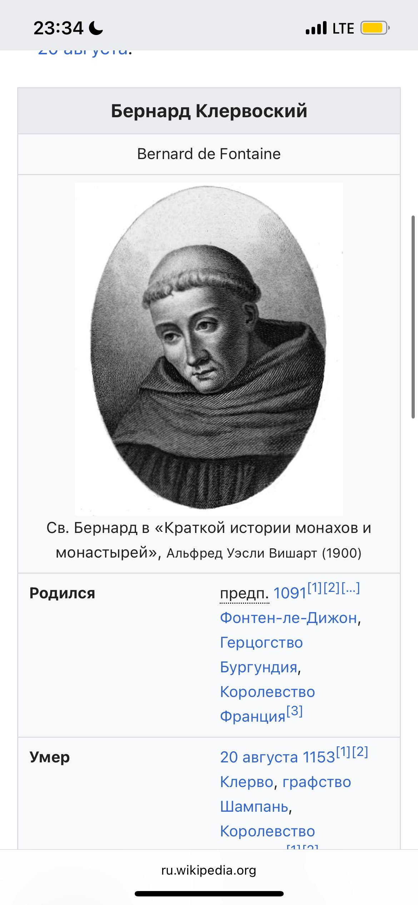
Post 5834
2026-01-12 20:34:45+00:00
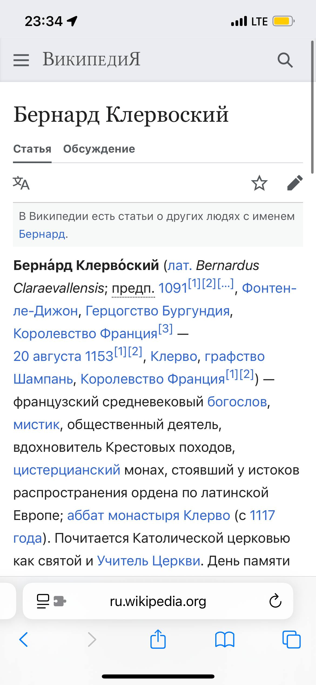
Post 5833
2026-01-12 20:34:45+00:00
Post 5832
2026-01-12 02:19:52+00:00
“Поэтому в интеллектуальных кругах консерваторы работают тихо и незаметно, ловя взгляды друг друга через комнату, как гомосексуалы у Пруста, которых этот великий писатель сравнил с богами Гомера, известными только друг другу, поскольку они замаскировались в мире смертных.”
Excerpt From
Как быть консерватором
User
This material may be protected by copyright.
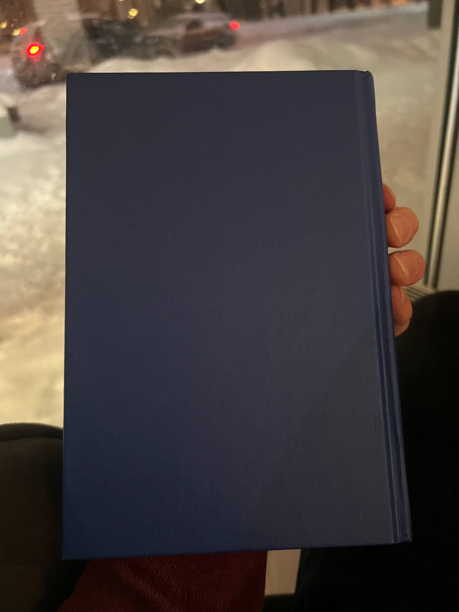
Post 5831
2026-01-08 19:29:57+00:00
Post 5830
2026-01-08 19:27:13+00:00
Рейган любил повторять: «В Америке - утро», утро нового дня. Для него была характерна безграничная вера в то, что Америке изначально присуще стремление к добру, что она способна вести за собой силой примера. И хотя он был не прочь поговорить об идеологии, в душе он был сторонником чисто американской философии - прагматизма, которой руководствуется и наш нынешний президент.
Мы пережили долгую ночь, но сейчас восходит солнце нового дня. Эта книга, которую я начал почти в отчаянии, заканчивается нотой надежды и предчувствием перемен. Если наша страна сможет осознать и исправить свои ошибки, то это будет лучшим до-казательством справедливости той веры в Америку, которая вдохновляла Рональда Рейгана и которую разделяет Барак Обама.
Post 5829
2026-01-08 17:45:17+00:00
Можно было бы сказать примерно следующее: «Несмотря на все наши разногласия, у нас есть важные общие интересы и мы должны искать пути к сотрудничеству там, где это выгодно обеим стра-
нам». В отношениях с большинством стран можно было бы руководствоваться духом речи о сотрудничестве с Советским Союзом, которую произнес Рональд Рейган в январе 1984 г. А это значит, что нам не следует указывать пальцем на «ось зла» или утверж-дать, что единственным приемлемым решением проблемы явля-ется «смена режима».
Post 5828
2026-01-08 17:43:03+00:00
Лишь республиканец Рон Пол в борьбе за выдвижение своей кан-дидатуры остро ставил вопрос о том, что США обременены чрезмерными внешними обязательствами, и выступал за уменьшение военного присутствия за рубежом. Другие кандидаты, похоже, опасались, что их обвинят в «мягкотелости» и «наивности» в вопросах обороны.
Post 5827
2026-01-08 17:02:56+00:00
экономики, которая оказалась на грани катастрофы в результате действий предыдущих администраций, исходивших из необос-нованной веры в абстрактные, оторванные от реальной жизни теории.
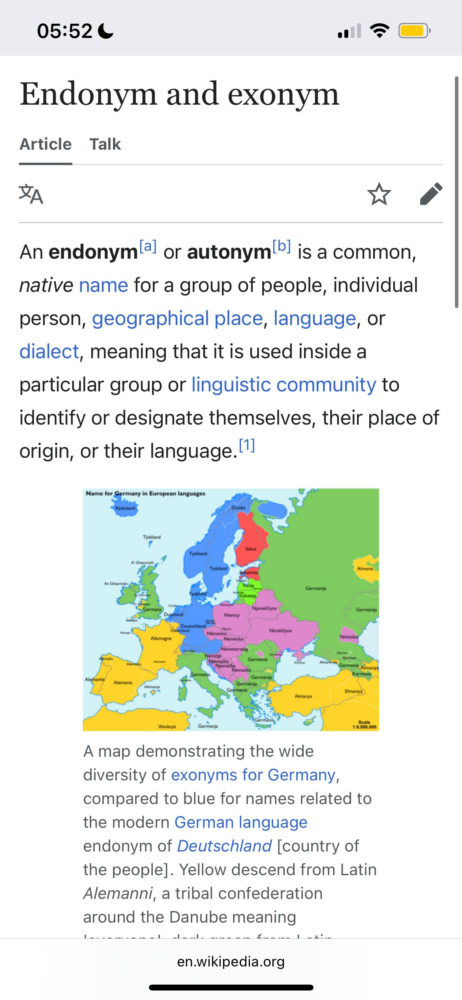
Post 5826
2026-01-07 02:52:25+00:00
Post 5824
2026-01-06 19:40:41+00:00
Выяснилось, что количество музыкантов военных оркестров превышает общее число профессиональных дипломатов, работающих в государственном департаменте и дипломатических представительствах за рубежом, что ярко характеризует бюджетные приоритеты недавних администраций.
Post 5823
2026-01-06 19:35:20+00:00
Из всех задач, стоящих перед администрацией Обамы, можно вылелить главную: Америка должна вернуть себе лидерство на основе примера и сотрудничества, а не посредством уграз и применения силлы вне рамок международного права.
Post 5822
2026-01-06 19:32:48+00:00
Избрание Обамы само по себе было мощным сигналом для всего мира. Оно продемонстрировало, что США отнодь не нация узколобых фанатиков, не имеющих никакого представления об окружающем мире и идуших на поводу идеологов империализ-ма, которые мечтают подчинить себе мир. Популярность Обамы в мире возросла благодаря его предвыборному обещанию вести диалог не только с друзьями, но и с противниками.
Post 5821
2026-01-06 19:30:23+00:00
Ясно стало и то, что мечты о Рах Americana были тщетны.
Проблемы должны быть решены путем развития сотрудничества и работой в международных организациях, сколько бы это ни занимало времени и как бы это ни разочаровывало.
Post 5820
2026-01-06 19:25:35+00:00
и что ни Европа, ни Америка не будут в безопасности, если «зло» не будет искоренено решительными военными действиями. По-добная точка зрения одновременно преувеличивает угрозы и ре-комендует держаться стратегии самозащиты, сражаясь с ними.
Между тем, решение лежит не на Венере и не на Марсе, оно - в политике, основанной на мудрости Минервы. Америке нужна умная политика, а не политика рефлексивной воинственности.
Post 5819
2026-01-06 19:16:22+00:00
ИДЕОЛОГИЯ ПОДАВЛЯЕТ РЕАЛЬНОСТЬ
Post 5818
2026-01-06 19:14:31+00:00
Те, кто хочет видеть в мире появление ответственных прави-тельств, должны признать, что демократия может быть создана только изнутри в соответствии с культурой и историческим опытом данной страны. Как правило, людям не нравится, когда чужеземцы играют прямую роль в их политическом процессе; зарубежное финансирование американских политических кампаний противозаконно, и прямая поддержка со стороны заграницы аме-риканского кандидата равносильна политическому поцелую смер-ти. Следовательно, американцы должны понять, что стремление играть активную роль в политическом процессе в других странах, скорее всего, приведет к прямо противоположным, а не к позитивным результатам.
Post 5817
2026-01-06 18:23:22+00:00
В Крыму около 60 процентов населения - этнические русские, многие из них потомки русских поселенцев, привезенных сюда после того, как Екатерина Великая отвоевала полуостров у вассалов Оттоманской империи в восемнадцатом столетии.
Post 5816
2026-01-06 18:20:55+00:00
Если для Грузни было неразумным стать членом НАТО, то для любого украинского правительства это было бы равносильно самоубийству - разве что НАТО стало бы другой организацией
Свыше половины граждан Украины выступает против присоета-нения страны к НАТО. Чтобы понять почему, следует иметь в виду, что самой крупной проблемой безопасности. Украины до-ляется не «российский империализм», а политические, совкаль-кие, экономические и языковые расколы внутри страны.
Post 5815
2026-01-06 18:20:07+00:00
Могла ли Россия действительно утверждать, что она имеет особые права в бывшем Советском Союзе или не могла, ясно одно: членство в НАТО не было ни в интересах НАТО, ни в интересах Грузии. В Грузии росла оппозиция президенту Саакашвили, к которой присоединились несколько ведущих политиков, поддерживавших его до августов-ской войны с Россией.
Post 5814
2026-01-06 18:17:44+00:00
За предыдущее десятилетие Соединенные Штаты и их союз-ники по НАТО подготовили почву для подобной реакции России.
В 1999 г. НАТО без согласия ООН бомбило Сербию на ее суве-ренной территории за то, что совершались нарушения прав чело-века. Затем в 2008 г. США и некоторые из их союзников по НАТО официально признали Косово в качестве независимой страны, несмотря на то что она не была независимой в полном смысле этого слова. На самом деле она представляла собой вместилище разре-шенных ООН сил НАТО и Европейского Союза, которые оккупировали Косово и для поддержания порядка должны по-прежнему оставаться там. Россия протестовала против планов признания независимости Косово и предупредила, что считает другие «замо-роженные конфликты», в частности Южную Осетию и Абхазию, находящимися в аналогичной ситуации. Правительство России залпляло, что в своем отношении к Южной Осетии, Абхазии и Грузии оно просто последовало примеру, созданному Соединен-ными Штатами и их союзниками по НАТО в отношении Косово и Сербии.
Post 5813
2026-01-06 18:16:49+00:00
Грузия пыталась вести себя со своими меньшинствами так, как вела себя, по ее же обвинениям, Россия по отношению к Грузии. Точка зрения, что вторжение России яв-ляется не чем иным, как агрессией против маленькой, сопротив-ляющейся демократической Грузии, была таким же искажением и столь же односторонней, как и утверждение со стороны России.
что она лишь отвечает на преступное нападение Грузии на россий-ских миротворцев и на этнические группы, пытающиеся осуществлять свое право на самоопределение.
Post 5812
2026-01-06 18:05:57+00:00
Особенно резкие слова были сказаны им в отношении расширения НАТО: «Мне кажется очевидным, что расширение НАТО не имеет никакого отношения к модернизации самого союза или обеспечению безопасности в Европе. Наоборот: оно представляет собой серьезную провокацию, понижающую уровень взаимного доверия». Он спросил: «Что произошло с заверениями, которые наши западные партнеры дали после распада Варшавского пак-та?» На этот раз он процитировал не слова, приватно сказанные Джеймсом Бейкером лично Горбачеву и Шеварднадзе, а публич-ное выступление Манфреда Вёрнера, когда он был генеральным секретарем НАТО. Путин напомнил, что сказал Вёрнер в своей речи в Брюсселе в 1990 г: «Тот факт, что мы готовы не размещать армию НАТО за пределами германской территории, дает Советскому Союзу твердую гарантию безопасности».
Post 5811
2026-01-06 18:01:28+00:00
Соединенные Штаты провозгласили доктрину национальной безопасности, которая как бы давала им право оккупировать любую страну, если она, по их мнению, пред-ставляет потенциальную угрозу для США, и доктрину космиче-ской обороны, которая обеспечила бы господство США в кос-мическом пространстве. Затем США вторглись в Ирак вопреки возражениям со стороны России, Франции и Германии, лживо утверждая, что Ирак по-прежнему располагает оружием массового уничтожения.
Post 5810
2026-01-06 17:55:41+00:00
При всем этом ничто не представляло большей опас-ности для будущего Америки, чем неумение строить отношения с Россией. Никакие шаги, необходимые для того, чтобы сократить угрозу, которую представляет для всего мира ядерное ору-жие, не могут быть предприняты без сотрудничества с Россией, однако администрация буша так вела себя с Россией, что это затрудняло сотрудничество для любого российского лидера. В ито-ге, к завершению второго периода президентства Джорджа Буша отношения между США и Россией находились на самом низком уровне со времени окончания холодной войны.
Post 5809
2026-01-06 17:49:46+00:00
Вместо того, чтобы пытаться
изолировать Северную Корею и добиваться «изменения режима», что подразумевалось Бушем в его выступлении в 2002 г. по поводу «оси зла»,
Post 5808
2026-01-06 16:54:11+00:00
Трудно найти нечто более опасное для страны, чем ситуацию, когда ее руководители - либо по доверчивости, либо по расчету - принимают иллюзию за факт. Если президент Буш и вице-президент Чейни действительно считали достоверным то, что в Ираке продолжаются работы по программе ядерного вооружения, значит, они утратили способность отличать факт от вымысла*
. KAOKTpHa
одного процента», приписываемая Чейни Роном Саскиндом, может быть объяснением2. Требование Чейни, что на сообщение надо реа-гировать, даже если есть хоть один процент того, что оно достовер-но, строго говоря, означает, что на девяносто девять процентов дея-тельность правительства будет бесполезной и контрпродуктивной.
Post 5807
2026-01-06 16:46:05+00:00
Я не утверждаю, что мне известны ответы на эти вопросы, но я твердо знаю, что одной из сильных сторон обоих - Рональда Рейгана и Гарри Трумэна - была их способность по важным вопросам прибегать к услугам людей, которые знали больше них, не считая, что при этом они упадут в их глазах или перестанут быть
хозяином положения. Оба знали, что они не все знают, мирились с этим и стремились послушать тех, кто был лучше информирован или более опытен в какой-то области политики. Подобно Джорджу Бушу-младшему у них был сильно развит инстинкт, но они до-бивались того, чтобы их инстинктами руководили факты и разум в большей мере, чем идеология и теория.
Post 5806
2026-01-06 16:43:22+00:00
Президент Буш-младший не раз говорил журналисту «Вашинг-тон пост» Бобу Вудворду, что он принимает решения, диктуемые ему инстинктом, его «внутренностями», а не в результате анализа и размышления!5. Это было потрясающее заявление человека с весьма ограниченными знаниями и опытом, к тому же, как отме-чали многие наблюдатели, в основе своей нелюбопытного. Это яв-ляется полной противоположностью стилю правления Рональда Рейгана, у которого тоже было весьма поверхностное знание деталей по многим вопросам, но который активно искал информацию у тех, кто знал больше него, и приветствовал дебаты внутри своей администрации.
Post 5805
2026-01-06 16:29:41+00:00
Наши демократы-евангелисты, похоже, считают, что демократия - это естественное состояние человечества и что диктаторы - это исключение.
Post 5804
2026-01-06 16:26:44+00:00
Соединенные Штаты без колебаний применят военную силу. Они необязательно разделяют пламенную зацикленность (или точнее - зацикленность Чейни-Рамсфелда) на новых технологиях и силе «шока и страха». Но для них тот факт, что Саддам Хусейн был плохим человеком, который совершал зло-дейские преступления в отношении своего народа, достаточен для оправдания войны против него, независимо от того, разрешена она или нет Советом Безопасности Объединенных Наций.
Их цель - всюду создать демократические формы правления.
Post 5803
2026-01-06 16:21:49+00:00
Как заметил Фрэнсис Фукуяма, который сам был неоконсер-ватором: «неоконсерваторы после падения коммунизма имеют тенденцию переоценивать уровень угрозы Соединенным Шта-там... После развала СССР... многие неоконсерваторы продолжают видеть мир заполненным опасными и недооцененными угроза-ми» 13.
Post 5802
2026-01-06 16:20:40+00:00
На самом деле Рейган и Буш-старший преуспели как раз потому, что, отбросив советы неоконов, вели переговоры с Горбачевым, вместо того чтобы изолировать его и затыкать ему рот. Большинство советов неоконов были столь же плохи во времена холодной войны, как и после нее.
Post 5801
2026-01-06 16:16:05+00:00
Их интеллектуальные корни следует искать в диспутах, которые проходили перед Второй мировой войной в крайне левом крыле американской политической мысли, - первоначально нео-консерваторами были троцкисты, считавшие себя антисталински-ми социалистами. Впоследствии они порвали с американскими «леваками» из-за отношения к войне во Вьетнаме и к внутренней социальной политике10. Название «неоконсерваторы» появилось из-за ошибочного представления, что коммунизм - это левое на-правление, а консерватизм - правое. Их философия была основана на манихейском представлении о мире, который они считали ареной борьбы между абсолютным добром и абсолютным злом.
Когда они отбросили вариант марксизма (веру в мировую рево-люцию), они просто переименовали противостоящие в мире силы.
Они по-прежнему искали утопию, но вместо того, чтобы считать революцию пролетариата средством для осуществления веления истории, они обратили свои взоры на силу, осуществляемую мощ-неишей в мире капиталистической страной - Соединенными Штатами Америки.
Post 5800
2026-01-06 16:14:29+00:00
Неоконсерваторы
Когда Леонид Брежнев безмятежно правил Советским Сою-зом, советские граждане (когда их не прослушивало КГБ) иногда шутили по поводу двух ведущих газет: «В "Правде" нет правды, а в "Известиях" нет новостей». Это звучит лучше по-русски, чем по-английски, но нечто похожее можно сказать о «неоконсерва-торах». В их идеях действительно нет ничего нового, и они кто угодно, но только не консерваторы, - возможно, поэтому консервативные мыслители вроде Пэтрика Дж. Бьюкенена предпочитают называть их «неоконами»®.
Post 5799
2026-01-06 16:10:17+00:00
Финансист Джордж Сорос подытоживает эту услужливую
философию приспособленчества следующим образом:
«Международные отношения - это отношения власти, не закона: все достигается силой, а закон лишь узаконивает то, чего она доби-лась. Соединенные Штаты - безусловно господствующая сила в мире после холодной войны; следовательно, она в состоянии навязывать миру свои взгляды, интересы и ценности. Мир выиграет, приняв аме-риканские ценности, поскольку американская модель показала свое превосходство. Однако при нынешних администрациях Соединен-ные Штаты не использовали весь потенциал своей мощи. Это надо исправить. Соединенные Штаты должны утвердить свое превосходство в мире».
Группу, держащуюся такого образа мысли, обычно называют
«неоконсерваторами», или вкратце «неоконами».
Post 5798
2026-01-06 14:16:03+00:00
Пол О'Нил, первый министр финансов Буша, сообщал, что президент думал о вторжении в Ирак начиная с первого заседа-ния кабинета министров в январе 2001 г., а вице-президент Чейни и министр обороны Рамсфелд искали предлог для вторжения задолго до атаки террористов 11 сентября!. Ричард Кларк отмечал:
Post 5797
2026-01-06 14:13:43+00:00
часть мира не хотела, чтобы Пакистан и Индия стали ядерными державами, но начали относиться к ним с большим уважением, когда эти страны провели испытание этого оружия. Страна, имеющая ядерное оружие, становится неприкасаемой. А без него режим может быть сброшен и страна оккупирована чужеземцами.
Так рассуждали бы диктаторы государств-изгоев.
А что думал Саддам Хусейн? Тщательно изучив модель его роли - Иосифа Сталина, я, возможно, кое-что понял*. Я могу представить себе, что Саддам Хусейн мыслил приблизительно так:
«Я в безопасности. Буш преследует других. Я избавился от моих ядерных бомб, моих бактерий и даже моих химикалий. Американцы достаточно сообразительны, чтобы это знать, - они просто стараются напугать других. Они должны понимать, что я нужен им, чтобы держать в узде иранцев, и что я должен создавать впе-чатление, будто у меня есть особое оружие, чтобы иранцы не полезли на меня. До тех пор, пока я буду держаться в стороне от Аль-Каиды и людей подобного рода, я буду волен делать у себя, что хочу. Американцы порой довольно странно ведут себя, но они не глупцы. И если я буду осторожен и не стану поддерживать их врагов, я буду о'кей».
Ну, если он так думал, то был не прав. Американцы, руково-дившие правительством в Вашингтоне, не были такими мудрыми, как он считал. И дело не в том, что у них не хватало разума, - просто они жили в другом мире, в воображаемом мире иллюзии сверхдержавности.
Лорд Эктон написал известную фразу: «Власть развращает; абсолютная власть развращает абсолютно». Имея возможность наблюдать деятельность администраций Клинтона и Джорджа Буша, я бы парафразировал это так: «Власть опьяняет; иллюзия абсолютной власти опьяняет абсолютно». Соединенные Штаты двинулись на войну с Ираком с ухарством наркомана, накачавше-гося наркотиков.
Post 5796
2026-01-05 18:54:06+00:00
Когда в 1979 году в Иране были взяты в заложники американские дипломаты, ни один сотрудник Центрального разведывательного управления в этой стране не говорил на фарси - главном языке этой
страны. Mark Bowden, Guests of the Ayatollah (New York: Grove, 2006),
стр. 178
Post 5795
2026-01-05 18:52:57+00:00
И если в дипломатической служое было недостаточно людей, владеющих критически важными язы-
камі, то в разведке положение было еще хуже",
Post 5794
2026-01-05 18:50:23+00:00
Дипслужба была хорошо укомплектована специалистами, владеющими такими языками, как испанский, французский, немецкий, португальский, русский, зато не хватало дипломатов, владеющих арабским, фарси, китай-ским, корейским и другими языками. Согласно правилам, не разрешалось обучение языкам тех стран, где не было вакансий. На пер вый взгляд - разумно, однако надо учесть, когда с той или иной страной разорваны дипломатические отношения (как, например с Ираном после кризиса с захватом заложников), обучение языку этой страны (в данном случае фарси) прекращается. В кошк
1990-х годов в американской дипломатической службе было лишь два-три действующих сотрудника, свободно говорящих на фарси.
Post 5793
2026-01-05 18:49:09+00:00
* Когда в 1987 г. я был назначен послом в СССР, госдепартамент не только отказался выделить средства на приобретение компьютера для об-работки списков гостей и расходов по содержанию резиденции посла (вся эта информация была несекретной), но даже отклонил предложение компании
«Ай-би-эм» предоставить в дар компьютер для выполнения этих задач.
Post 5792
2026-01-05 18:36:12+00:00
После взрывов бомб в посольствах США в Кении и Танзании президент Клинтон распорядил-ся провести военные операции с целью поимки или ликвидации бен Ладена, однако ни министерство обороны, ни ЦРУ так и не нашли способа выполнить это решение.
Post 5791
2026-01-05 17:16:38+00:00
Сделав выбор в пользу соображений внутриполитической выгоды, администрация Клинтона допустила крупную ошибку, поскольку в сочетании с декларациями о «победе» в холодной войне расширение НАТО формировало в российском обществе мысль о том, что отказ от коммунистической системы и демонтаж Советского Союза были ошибкой. Вместо высокой оценки за добровольную интеграцию с Западом россияне столкнулись с пре-небрежительным отношением к себе, как будто они потерпели поражение и не заслуживают быть союзником.
Post 5790
2026-01-05 17:14:10+00:00
Почему же советы большинства дипломатов, занимавшихся отношениями с Советским Союзом и способствовавших оконча-нию холодной войны на основе реалистической и твердой дип-ломатии, не были услышаны? Ответ напрашивается сам собой: решение о расширении НАТО было продиктовано внутриполи-тическими соображениями, а не тщательным анализом интересов США за рубежом. Было хорошо известно, что американцы поль-ского, украинского происхождения и выходцы из других восточно-европейских стран очень хотели, чтобы страны их происхождения вступили в НАТО. Многие из них, будучи демократами, тем не менее голосовали за президента Рейгана. Президент Клинтон нуж-дался в них, чтобы в 1996 г. победить на выборах в таких ключевых штатах, как Иллинойс и Пенсильвания. (Хотя голосование в сенате по вопросу о вступлении в НАТО новых членов состоя-лось после выборов 1996 г, в ходе предвыборной кампании Клинтон пообещал, что расширение - «лишь вопрос времени».) Внут-риполитические соображения были единственным аргументом, который можно было бы честно привести в обоснование избран-ного варианта расширения НАТО.
Post 5789
2026-01-05 17:13:54+00:00
Администрация Клинтона не прислушалась к этим призывам, равно как и к словам Джорджа Кеннана, творца оправдавшей себя политики «сдерживания», который предупреждал, что предлагае-мый вариант расширения НАТО станет «крупнейшей, роковой ошибкой американской политики в период после окончания холодной войны». Разъясняя свою позицию, Кеннан далее писал:
«Можно ожидать, что такое решение <...› приведет к возрождению атмосферы холодной войны и к такой эволюции внешней политики России, которая окажется нам совершенно не по вкусу.
Не в последнюю очередь это решение может сильно затруднить и даже сорвать ратификацию Думой Договора СНВ-2 и дальней-шие сокращения ядерного оружия»°.
Post 5788
2026-01-05 17:10:51+00:00
Посредством личной дипломатии президенту Клинтону удалось заставить президента Ельцина, который отчаянно нуждался в поддержке США, согласиться с условиями, которые возмутили влиятельных российских лидеров, особенно в бюрократических структурах, в том числе среди высокопоставленных военных®.
Post 5787
2026-01-05 17:08:48+00:00
Strobe Talbott, The Russia Hand: A Memoir of Presidential Diplomacy (New York: Random House, 2002).
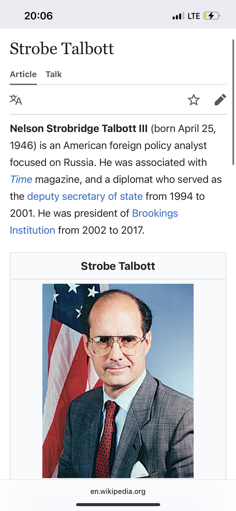
Post 5786
2026-01-05 17:06:26+00:00
Post 5784
2026-01-05 17:04:37+00:00
Обеспечение безопасности новых независимых государств
Восточной Европы не требовало расширения НАТО. Были другие способы придать им уверенность и обеспечить их защиту, не создавая впечатления, что Европу снова делят на части в ущерб Рос-сии. Что же касается Сербии, то, если бы не произошло расширения НАТО (причем именно в той форме, в какой оно произошло), российское правительство было бы гораздо более расположено оказать нажим на Слободана Милошевича, чтобы он договорился с косоварами, а в случае неудачи такой попытки - поддержать ре-золюцию ООН о военном вмешательстве. По сути дела, если бы с Россией в середине 90-х годов была достигнута негласная договоренность воздержаться от официального расширения НАТО в обмен на сотрудничество России в поддержании мира на Балканах и обещание не прибегать к угрозам в адрес других стран, 10 это почти наверняка способствовало бы уменьшению насилия в Боснии и Косово и могло бы гарантировать, что при необходи-мости все-таки прибегнуть к военным действиям они получили бы поддержку Совета Безопасности*
Post 5783
2026-01-05 17:01:44+00:00
И хотя Клинтон начал с разговоров о «партнерстве во имя реформ», его администрация обращалась с Россией так, как будто эта страна лишилась всякого веса, даже в европейской политике.
В годы администрации Клинтона было принято два решения, из-за которых российское общественное мнение, в котором прежде преобладали проамериканские настроения, перешло к решительной оппозиции внешней политике США. Первое из этих решений - распространение военных структур НАТО на страны, входившие ранее в Варшавский договор, хотя, когда Горбачев давал согласие на членство объединенной Германии в НАТО, ему было дано по-нять, что такого не произойдет?. Второе - решение о бомбарди-ровках Сербии без согласия Совета Безопасности ООН.
Post 5782
2026-01-05 17:00:23+00:00
У России также были хорошо образованное на-селение, многочисленные ученые и инженеры. При правильном использовании они могли сыграть незаменимую роль в эконо-мическом развитии страны, но, если бы к ним относились невнимательно или несправедливо, они могли помочь любой стране,
готовой заплатить за их услуги, в создании оружия массового уничтожения6.
William Zimmerman, The Russian People and Foreign Policy: Russian Elite and Mass Perspectives, 1993-2000 (Princeton: Princeton University Press, 2002).
Post 5781
2026-01-04 16:48:18+00:00
Внешняя политика и проблемы безопасности
Однажды президент Джордж Буш-старший скромно заметил о себе, что ему не достает «этого самого видения». Действительно, как руководитель он был, скорее, менеджером, чем «пламенным борцом».
Post 5780
2026-01-04 16:39:47+00:00
В 40-е годы, учась в университете, я активно участвовал в движении за мировую федерацию (на заседании организации «Объединенные федералисты мира» я познакомился с моей будущей женой). Мы были убеждены, что, если человечество не создаст мировое правительство, оно обречено на уничтожение в ядерной катастрофе.
Post 5779
2026-01-04 16:36:38+00:00
И еще: как отмечает переводчик Горбачева Павел Палажченко, на русский язык словосочетание U.S. global leadership обычно переводится как «руководство миром», что для большинства русских означает контроль, доминирование 2. Пытаясь объяснить политику и устремления США людям в других странах, необходимо отдавать себе отчет в том, что слова, которыми мы пользуемся у себя в стране, могут быть неправильно поняты, когда их употребляют за границей и переводят на другие языки.
Post 5778
2026-01-04 16:25:45+00:00
Как показал Чарльз Майер, в странах, представляющих собой империю (мы видели, что к ним относятся Российская империя и Советский Союз), правят авторитарные или даже худшие режимы, а страны, обладающие империей (при-мер - Британская империя) правят своими владениями при помощи авторитарных методов. Похоже, что либеральная демократия не может быть империей, не изменив своей природы или не создав в зависимых от нее территориях нечто иное.
Post 5777
2026-01-04 16:19:48+00:00
Наиболее интересно вопрос о том, являются ли Соединенные Штаты Америки империей, раскрыт в книге профессора Гарвард-ского университета Чарльза Майера «Среди империй: величие Америки и его исторические прецеденты». Автор подчеркивает, что «как критики, так и сторонники обычно уделяют главное вни-мание странам, имеющим империи, а не странам, являющимся им-перией».
Post 5776
2026-01-04 16:10:11+00:00
Наверное, именно это имел в виду министр обороны Дональд Рамсфелд, когда в 2003 г., спустя несколько дней после американ-ского вторжения в Ирак, он заявил журналисту телеканала «Аль-Джазира»: «Мы не колониальная держава. Мы никогда не были колониальной державой».
Post 5775
2026-01-04 16:01:38+00:00
Это предъявляло повышенные требования к политическому лидерству, но самым главным было все-таки правильное определение стратегии и приоритетов и перенастройка инструментов власти для выполнения задачи.
Post 5774
2026-01-03 17:21:58+00:00
Методы
От методов зависит многое. Если вы хотите заставить человека расстаться с лежащими у него в кармане деньгами, вы можете предложить ему что-то нужное по цене, перед которой он просто не сможет устоять. Вы можете предложить ему сделать пожертвование на хорошее дело. Вы можете попросить у него взаймы. Или
вы можете залезть ему в карман или приставить к виску пистолет и потребовать перевести деньги на ваш счет. Все эти методы могут время от времени приносить вам удачу, но лишь первый из них всегда гарантирует успех. А некоторые из этих способов лучше не применять, если вы хотите сохранить полученные деньги и не попасть в тюрьму.
В определенном смысле государства не так уж сильно отличаются от людей. Они сотрудничают, если видят для себя в этом выгоду или если это необходимо для дела, в которое они верят.
Они могут оказывать услуги, если считают, что получат что-то взамен. Они также могут поддержать какое-нибудь предприятие, поддавшись на ложные обещания или на нажим. Но если их обма-нули или заставили, они, скорее всего, при первой возможности выйдут из этого предприятия и могут поддержать кого-нибудь другого. Полезные союзники поддерживают вас по собственной воле. Горячие сторонники осознают свою заинтересованность в деле, которое они поддерживают. А союзники поневоле могут обрушить все предприятие. Достаточно спросить Горбачева о судьбе
Варшавского договора.
Post 5773
2026-01-02 17:19:40+00:00
Жизнь всегда загадочнее, а будущее более смутно, чем любые теорети-ческие предсказания.
Post 5772
2026-01-02 17:12:16+00:00
* Маккиндер изложил свои идеи в лекции, прочитанной в 1903 г. и опуб-ликованной Королевским географическим обществом в Лондоне. Впоследствии он написал книгу «Демократические идеалы и реальность» (1919), намереваясь повлиять на исход переговоров на Версальской мирной конфе-ренции. В ней он подчеркивал важность контроля над Восточной Европой, видя в этом ключ к контролю над так называемым «мировым островом» - Евразией. Вот как он излагает этот тезис: «Кто правит Восточной Европой, господствует над хартлендом. Кто правит хартлендом, господствует над мировым островом. Кто правит мировым островом, господствует в мире».
Post 5771
2026-01-02 17:11:55+00:00
В своей следующей книге «Великая шахматная доска: амери-канское превосходство и его геостратегические императивы» Бжезинский идет дальше в геополитическом анализе, взяв за основу концепцию британского стратега сэра Хэлфорда Джона Маккин-дера, которая сводится к тому, что «тот, кто правит хартлендом
[сердцем Евразиии], господствует в мире»*. Большинство стратегов уже давно отказались от этой концепции, да и прежде она име-ла немного сторонников. Мнение адмирала Альфреда Тейера Мейхана, согласно которому ключом к победе является контроль над морями, в глазах большинства гораздо больше соответствовало реальностям борьбы за власть в мире. Вообще говоря, когда это хозяин евразийского «хартленда» контролировал нечто боль-шее, чем сам этот хартленд? Великобритания и США обрели глобальные возможности, опираясь на морскую и воздушную мощь, а Россия на пике своей имперской мощи потерпела поражение от японского флота на Дальнем Востоке и в 1917 г. от германской армии на Западе. Советский Союз не смог установить господство над Китаем даже после того, как в Китае победил коммунисти-ческий режим. Тот, кто господствует в хартленде, господствует в хартленде - и нигде более. Да и то временно, ибо империи любого типа уходят в прошлое16.
Post 5770
2026-01-02 17:09:23+00:00
Как отмечал британский философ Джон Грей, «крах комму-низма стал окончательным опровержением исторической телео-логии, однако за ним последовала новая версия того же убеждения [тезиса Фукуямы], что развитие истории приведет к возникно-вению единой для всего человеческого рода цивилизации» 14. Несмотря на то, что реальная история опровергла все утопические теории, убеждение, что мир обречен на принятие единообразной системы правления, стало в начале XXI в. определяющим в политике США.
Post 5769
2026-01-02 17:08:01+00:00
Тем, кто не потрудился прочитать книгу Фрэнсиса Фукуямы «Конец истории и последний человек», было легко высмеивать тезис, согласно которому возможен «конец истории». Конечно, автор не имел в виду, что события перестали происходить, он вос-пользовался философской метафорой, основанной на идее Гегеля об истории как поиске надлежащей системы правления. Крах коммунизма и конец Советского Союза, утверждал Фукуяма, свидетельствуют о том, что общество наконец обрело идеальную политическую и экономическую систему - либеральную демо-кратию, рыночную экономику и капитализм.
Post 5768
2026-01-02 17:07:33+00:00
Скончавшийся в 1995 г. британский социолог Эрнст Геллнер тоже считал, что либеральная демократия распространяется с запада на восток и, вероятно, окажется привлекательной в других районах мира13. Однако он признавал, что общинная концепция исламской уммы, утверждающая приоритет общества над отдельной личностью, может составить ей конкуренцию, особенно в ис-ламском мире. В своей озабоченности на этот счет он оказался более тонким провидцем, чем Фукуяма, предположивший, что «история» достигла своей цели.
Post 5767
2026-01-02 16:57:22+00:00
Советы гуверовских экономистов и многих западных экспер-тов, направленных в Россию, чтобы учить людей азам рыночной экономики, имели примерно такую же практическую ценность, как совет мудреца альпинисту вырастить на спине крылья. Поли-тика, в большей мере учитывающая советскую реальность и в меньшей - теоретические обобщения, имела бы больше шансов смягчить хотя бы некоторые из серьезных проблем, возникших в переходный период.
Post 5766
2026-01-02 16:53:11+00:00
В общем и целом большинство западных экспертов рекомен-довали полный разрыв с прошлым и безотлагательный переход к частной собственности. Другими словами: «Лифт ненадежен, и у вас нет времени пройти вниз по лестнице, так что лучше просто прыгнуть в окно». Если получатель такого совета находится на двадцатом этаже, то советчик явно не учел чего-то важного.
Post 5765
2026-01-02 16:52:52+00:00
только политикой».
К своему стыду, я должен признать, что большинство сове-тов, во всяком случае из США, которые получал Горбачев в ответ на свои просьбы о помощи, состояло из теоретических построений при полном отсутствии технической стороны, необходимой для воплощения теории на практике.
Вместо того чтобы организовать международные усилия, которые позволили бы сочетать западные знания о функциониро-вании рыночной экономики с восточными (т.е. советскими и во-сточноевропейскими) знаниями о существующих в этих странах особенностях и привычках, Буш решил обратиться за содействием в решении проблемы в Международный валютный фонд и Всемирный банк. Это достойные организации, но у них не было почти никакого опыта отношений с командными экономиками совет-ского типа. Учиться пришлось на ходу, и многие их первоначаль-ные рекомендации были не только бесполезными, но иногда просто вредными.
Вот как описывает ситуацию первый премьер-министр неза-висимой России Егор Гайдар: «Когда начались реформы, мы не были членами МВФ, и вступление в него заняло какое-то время; без членства в МВФ никакое финансовое сотрудничество было невозможно. В критические месяцы от января до апреля 1992 г. даже несколько сот миллионов долларов реальных валютных ре-
зервов дали бы нам значительно большую возможность маневра, но доступа к ним у нас не было. А к тому времени, когда оформи-тельские процедуры оыли закончены, наша программа стабилизации трещала по швам»6.
В июле 1992 г. МВФ наконец предоставил займ в размере 1 миллиарда долларов, но было уже поздно и предотвратить обвал рубля не удалось. МВФ фактически способствовал коллапсу руб-нить «рублевую зону» с участием бывших советских республик, ля своей попыткой на протяжении нескольких месяцев сохра-которые целый год без всяких ограничений печатали денежные
знаки.
Всего за год с небольшим до этого администрация Буша моби-лизовала в ряде стран 40 миллиардов долларов для ведения войны в Заливе. А в 1992 г. она ничего не сделала для налаживания международных усилий по оказанию России поддержки, необхо-димой для упорядоченного перехода ее экономики на рыночные рельсы. Гайдар точно обозначил проблему, заявив: «Я не думаю, что лидеры ведущих западных держав не осознавали масштаба за-дачи, которая перед ними встала. На мой взгляд, трудность заклю-чалась в том, что среди них не нашлось лидера, способного сыграть организующую и координирующую роль, какую сыграли Гарри Трумэн и Джордж Маршалл в послевоенном восстановлении Европы»?.
В 1991 г., за год до того, как Гайдар столкнулся с кошмаром финансово-экономического коллапса, Маргарет Тэтчер, хотя она уже не была премьер-министром Великобритании, правильно поняла необходимость оказания масштабной помощи Советскому Союзу, переживавшему фундаментальные преобразования. Находясь весной 1991 г. с визитом в Москве, она попросила меня передать президенту Бушу ее сообщение с призывом организовать мощную кампанию с целью помочь Горбачеву реформировать советскую экономику. Ее призыв не возымел действия. Позже ей удалось убедить своего преемника Джона Мейджора предложить такую помощь, но без поддержки США у Мейджора не было необходимых для этого средств®.
Post 5764
2026-01-02 16:48:51+00:00
Раздумывая над дилеммой, перед которой оказались Горбачев и его сторонники в 1990 и 1991 гг., я вспоминал анекдот об альпи-нисте, оказавшемся перед расщелиной, которую он не может преодолеть с имеющимся у него снаряжением. Узнав, что на вершине горы сидит мудрый отшельник, он карабкается наверх и спрашивает его совета, как переправиться через пропасть. Оракул отве-чает: «Тебе нужно вырастить на спине крылья и перелететь через нее». - «Каким же образом?» - в отчаянии вопрошает путник.
«Это уже технический вопрос, - отвечает гуру. - А я занимаюсь только политикой».
Post 5763
2026-01-02 16:47:36+00:00
Оба они полагали, что рыночная экономика есть лишь орудие эксплуатации, и утверждали, что создание командной экономики защищает рабочих от капиталистов, стремящихся эксплуатировать их труд. Однако в итоге они построили систему, при которой эксплуататором стало само государство. Советская система была нацелена не на потребности людей, а на то, что считало нужным государство. На практике это означало, что она повиновалась интересам политической элиты, контролировавшей государство. Государственные органы, в том числе исполнительная власть, органы правопорядка и судебная система, были построены таким обра-зом, чтобы поддерживать командную экономику и подавлять любые проявления индивидуальной инициативы. Закон запрещал людям владеть любой приносящей доход собственностью и нанимать рабочую силу, что по определению считалось эксплуатацией.
Post 5762
2026-01-02 16:44:15+00:00
Бейкер дает яркую картину своих контактов с руководителями со-ветских республик в The Politics of Diplomacy.
Post 5761
2026-01-02 16:43:41+00:00
Буш стремился помочь Горбачеву удержать основные республики СССР в рамках добровольного союза, но когда стало ясно, что это невозможно, он и госсекретарь Бейкер решительно приступили к налаживанию хороших отношений с внезапно став-шими независимыми республиками. Во всех них были открыты посольства5.
Post 5760
2026-01-02 16:29:40+00:00
В результате в 1991 г. американские власти были лучше информированы о событиях в Советском Союзе, чем президент Горбачев.
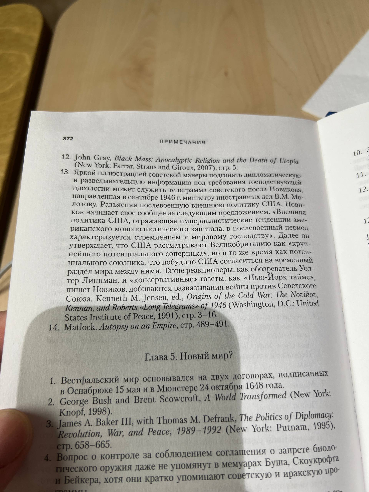
Post 5759
2026-01-02 16:25:57+00:00
Яркой иллюстрацией советской манеры подгонять дипломатическую и разведывательную информацию под требования господствующей идеологии может служить телеграмма советского посла Новикова, направленная в сентябре 1946 г. министру иностранных дел В.М. Мо-лотову. Разъясняя послевоенную внешнюю политику США, Новиков начинает свое сообщение следующим предложением: «Внешняя политика США, отражающая империалистические тенденции аме-риканского монополистического капитала, в послевоенный период характеризуется стремлением к мировому господству». Далее он утверждает, что США рассматривают Великобританию как «круп-нейшего потенциального соперника», но в то же время как потен-циального союзника, что побудило США согласиться на временный раздел мира между ними. Такие реакционеры, как обозреватель Уолтер Липпман, и «консервативные» газеты, как «Нью-Йорк таймс», пишет Новиков, добиваются развязывания войны против Советского
Союза. Kenneth M. Jensen, ed., Origins of the Cold War: The Novikov, Kennan, and Roberts «Long Telegrams»
Post 5758
2026-01-02 16:23:54+00:00
Многочисленные подтверждения этого тезиса можно найти во взглядах таких разных людей, как Осама бен Ладен или аме-риканские неоконсерваторы. В глазах таких людей страстная вера в «правое дело» или в «божью волю» дает им право на использование любых средств, в том числе любого насилия, ради достиже-ния утопии на Земле или в иной жизни.
Post 5757
2026-01-02 16:19:07+00:00
Это подводит нас к следующей мысли: когда для создания утопии применяется сила, наиболее вероятно, что результат будет противоположен желаемому. Это неоднократно отмечали фило-софы, а недавно эту мысль развил в своей яркой книге «Черная масса: апокалипсическая религия и гибель утопии» британский консервативный философ Джон Грей. Он подчеркивает, что и на-цизм, и коммунизм были светскими религиями, хотя сами они от-рицали это. Как и некоторые разновидности христианства и исла-ма, они основаны на убеждении, что «история должна пониматься не с точки зрения объяснения причин событий, а в категориях цели, причем целью истории является спасение человечества» 12
Постольку, поскольку события трактуются в телеологических ка-тегориях, понимание их реальных причин затемняется, искажа-ется, а если надо - просто-напросто придумывается истинно ве-рующими.
Post 5756
2026-01-02 16:18:00+00:00
Маркс и его последователи выступали как атеисты, но они настолько верили в силу истории, что в их представлениях она выполняла ту же функцию, что божество в представлениях веру-ющих. Марксизм, как его трактовали и применяли Ленин и Ста-лин, был функциональным эквивалентом религии, а сам Совет-ский Союз был государством, основанным на вере. Проблема состояла в том, что как сама религия, так и вдохновляемая ею вера вступали в противоречие с реальностью. Государство, созданное и удерживаемое, прежде всего, силой и угрозой, существует лишь до тех пор, пока его лидеры могут и готовы применять всю необходимую силу, чтобы остаться у власти. Советский Союз как единое государство распался, когда Горбачев отказался (и, возможно, просто не мог) применять силу для его сохранения.
Post 5755
2026-01-02 16:15:37+00:00
Если бы Сталин не включил эти территории в состав Совет-ского Союза, не совершил преступлений против их населения и дал им возможность остаться независимыми или в составе других государств, Горбачеву было бы гораздо легче сохранить Со-ветский Союз в форме добровольной федерации.
Post 5754
2026-01-02 16:14:39+00:00
Кроме того, эстонцы, латыши и литовцы организовали во всех нерусских республиках Советского Союза целенаправленную кампанию с требованиями незави-
симости.
Post 5753
2025-12-30 19:48:02+00:00
В своей работе «Падение Римской империи: новая история Рима и варваров» оксфордский профессор Питер Хизер спорит с историками-предшественниками и утверждает, что причиной падения империи послужила пассивность по отношению к огромной толпе беженцев, хлынувших через границу в конце V столетия:
конце V столетия:
В 376 году к Дунаю вышла многочисленная орда го-тов, искавших у Рима спасения от гуннов. В нарушение всех римских законов им разрешили пересечь границу и осесть на римских землях. Вскоре они восстали и через два года убили императора Валента — того самого, который их приветил, — и уничтожили две трети импера-торской армии в битве при Адрианополе*
Поначалу, пишет Хизер, «этот неожиданный приток гот-ских иммигрантов не сулил неприятностей. Наоборот, Валент охотно даровал им разрешение поселиться на римских землях, поскольку увидел в их появлении новые возможно-сти для империи». Римский историк Аммиан Марцеллин рас-сказывал, как тепло встретили готов: «Приняли это скорее с радостью, чем со страхом. Поднаторевшие в своем деле льстецы преувеличенно превозносили счастье императора, которое предоставляло ему совсем неожиданно столько рекрутов из отдаленнейших земель...»*, 6
Валент поступил по-христиански. Но — совершенно не по-римски. В современном мире у императора Валента нашелся последователь — Джордж у. Буш: в мае 2006 года сенаторы-республиканцы по настоянию Буша присоедини-лись к демократам и предложили амнистию 12 миллионам незаконных иммигрантов, а также разрешили американским предпринимателям нанимать иностранцев.
Post 5752
2025-12-30 19:42:10+00:00
Согласно выдвинутой Тойнби концепции «вызова и отве-та», кризис западной цивилизации подразумевает три насуш-ных и смертельных опасности вымирание населения, де-зинтеграцию культуры и непротивление вторжениям.
Post 5751
2025-12-30 19:41:55+00:00
По мнению Арнольда Тойнби, цивилизации возникают, когда «творческие меньшинства» находят способы преодолеть великие кризисы эпохи. А гибнут цивилизации, когда таких способов не обнаруживается.
После падения Римской империи и вторже-ния варваров, писал Тойнби, католическая церковь разрешила кризис той эпохи - кризис разъединения и хаоса. Она спасла мир, создав новую религиозную общину, из которой выросли новая цивилизация и новая культура.
Post 5750
2025-12-30 19:37:41+00:00
Цивилизации никто не убивает, они кончают самоубийством.
Арнольд Тойнби?
Post 5749
2025-12-30 19:37:05+00:00
Вам никогда не стать настоящими американцами, если вы будете считать себя членами той или иной группы.
Америка — это не совокупность групп. Человек, который живет в Америке и считает себя принадлежащим к конкретной национальной группе, американцем не яв-ляется.
Вудро Вильсон. Обращение к новым гражданам
(1915)
Post 5748
2025-12-30 19:36:55+00:00
Единственный абсолютно надежный способ привести эту страну к краху, лишить ее народ всякой возможно-сти оставаться самим собой, заключается в том, чтобы превратить ее в змеиный клубок враждующих нацио-нальностей...
Теодор Рузвельт. Рыцари Колумба
(1915)
Post 5744
2025-12-27 19:11:58+00:00
3. Ни одна из теорий международных отношений оказалась не в состоянии предсказать то, как в действительности окончи-лась холодная война. Каждая из теорий международных отношений в какой-то мере позволяет понять, как государства взаимодействуют друг с другом.
Post 5743
2025-12-27 16:00:32+00:00
Post 5742
2025-12-27 15:57:01+00:00
В различных официальных документах, включая https://ru.wikipedia.org/wiki/%D0%9F%D0%B0%D1%81%D0%BF%D0%BE%D1%80%D1%82">паспорт, национальность Л. И. Брежнева указывалась как https://ru.wikipedia.org/wiki/%D0%92%D0%B5%D0%BB%D0%B8%D0%BA%D0%BE%D1%80%D1%83%D1%81%D1%81%D1%8B">великорос
Post 5741
2025-12-26 19:51:45+00:00
Philip Zelikow and Condoleezza Rice, Germany Unified and Europe Transformed: A Study in Statecraft (Cambridge: Harvard University
Press, 1995), особенно стр. 187-188.
В своих мемуарах Горбачев приводит слова Бейкера, предлагавшего в ходе встречи 9 февраля 1990 г., чтобы объединенной Германии было
позволено остаться в НАТО «при гарантии, что юрисдикция и войска НАТО не будут распространяться на восток от нынешней линии»
(М. Горбачев, Жизнь и реформы, Москва: Новости, т. 2, 1995, стр. 167).
Сообщение Горбачева совпадает с моей записью этой беседы, к тому же у меня записано, что Бейкер добавил: «Ни на один дюйм» (по-рус-ски переводчик, возможно, опустил это словосочетание, поскольку дюйм необычная в русском языке мера длины, а слова «даже на два с половиной сантиметра» звучали бы странно).
Впоследствии Бейкер объяснял, что он сделал это заявление, имея в виду территорию Восточной Германии, а когда он узнал, что исключение восточногерманской территории из юрисдикции НАТО невозможно юридически, он внес поправку в это заявление. В конечном счете в рамках переговоров по формуле «два плюс четыре» было решено, что территория Восточной Германии будет подпадать под юрисдикцию НАТО, но на ней не будет войск НАТО за исключением германских.
Однако в этом разъяснении есть изъян. Он состоит в том, что в пер-воначальном заявлении Буша никак не уточнялось, что он имеет в виду только территорию ДР. Насколько я знаю, Горбачев прав, когда он говорит, что ему никогда напрямую не сообщалось, что Бейкер имел в виду, что его первое заявление относится только к ГДР. Исходя из этого, он и Шеварднадзе считали, что получили заверения, что НАТО не придет на смену Варшавскому договору в Восточной Европе. Ведь это было бы прямым нарушением достигнутого на Мальте взаимо-понимания о том, что США не будут «извлекать выгод» из вывода советских войск из Восточной Европы.
Post 5740
2025-12-26 19:51:04+00:00
Сначала Горбачев возражал против этого, однако после по-тогда в Западной Германии правящей партией, он понял, что помешать восточногерманскому правительству принять условия Коля невозможно. Однако он продолжал настаивать на выходе служащих и членов их семей по-прежнему находились в Восточ-Германии из НАТО - ведь более полумиллиона советских военно-
ной Германии и Советский Союз имел право держать их там со-
гласно договоренностям, заключенным в конце Второй мировой войны®.
Проявив себя блестящим дипломатом, государственный секретарь Джейме Бейкер смог убедить Горбачева, что членство объе-диненной Германии в НАТО отвечает интересам Советского Союза.
Если Германия останется в НАТО, то она не сможет доминировать в отношениях со своими соседями, как это бывало в прошлом, и должна будет навсегда отказаться от возможности иметь ядерное оружие. Эта логика убедила Горбачева, который не хотел оказаться в роли противника германского единства, и в конце концов он согласился прекратить действие послевоенных договоренно-стей, которые привели к разделу страны. Но при этом у него сло-жилось впечатление, что ему было обещано, что юрисдикция и присутствие войск НАТО не будут дальше распространяться на восток, хотя он и не потребовал письменного обязательства на этот счет®.
Post 5739
2025-12-26 19:42:44+00:00
Падение Берлинской стены стало самым ярким символом прекращения вызванного холодной войной раскола Европы. Сего-дня, когда западные СМИ рассказывают об этом событии, кадрам о разрушении стены обычно предшествует видеоцитата из речи Рональда Рейгана в июне 1987 г. На фоне Бранденбургских ворот президент взывает: «Господин Горбачев, снесите эту стену!» Из такого монтажа создается впечатление причинно-следственной свя-зи: так же, как, согласно Писанию, от звука труб осаждавших город рухнули стены Иерихона, брошенный Рейганом вызов якобы вызвал потрясение, которое два года спустя привело к освобождению жителей Восточного Берлина и Восточной Германии.
Но это ложное впечатление. Берлинская стена пала не потому, что этого потребовал Рейган, и снес ее не Михаил Горбачев. Горбачев создал условия, которые позволили немцам ликвидировать стену. Подчеркивая необходимость проведения в находившихся под господством коммунистов странах Центральной и Восточной Европы реформ, аналогичных перестройке в Советском Союзе, он в то же время предупреждал, что при любом варианте развития событий Советская Армия не будет вмешиваться в их ход, дабы сохранить правительства этих стран у власти.
Post 5738
2025-12-26 19:37:40+00:00
Сообщение «Глядя в бездну: возможный распад Советского Союза и что нам нужно в этой связи делать» («Looking into the Abyss: The
Possible Collapse of the Soviet Union and What We Should Be Doing
About It» 90 Moscow 23603, July 13, 1990) было составлено на основе проекта, подготовленного политическим советником Рэймондом Сми-том. Рассекречено в феврале 2007 г.
Post 5737
2025-12-26 19:37:18+00:00
В июле 1990 г., почти за полтора года до прекращения существования Советского Союза, мы сообщили в Вашингтон, что следует быть готовыми к тому, что СССР может распасться?.
Post 5736
2025-12-26 19:32:32+00:00
«Советский Союз в предстоящие четыре года» («The Soviet Union
over the Next Four Years 89 Moscow 2962, February 3, 1989); «Совет-
ская внешняя политика в предстоящие четыре года» («Soviet Foreign
Policy over the Next Four Years,» 89 Moscow 3850, February 13, 1989);
«Американо-советские отношения: возможности для политики»
(«U.S.-Soviet Relations: Policy Opportunities,» 89 Moscow 4648, Feb-
ruary 22, 1989) (рассекреченные телеграммы, хранящиеся в Архиве национальной безопасности в Университете Джорджа Вашингтона в Вашингтоне).
Post 5735
2025-12-26 19:31:03+00:00
я направил в Вашингтон серию из трех телеграмм со своими соображениями и рекомендациями?.
Я доложил, что «мы можем планировать нашу внешнюю политику с высокой степенью уверенности в том, что
Post 5734
2025-12-26 19:06:48+00:00
Всякий раз, когда в отношениях между США и СССР возникали проблемы - будь то сбитый корейский самолет, убийство американского военнослужащего в Восточной Германии или арест ни в чем не повинного американского журна-листа, - в администрации Рейгана находились люди, утверждав-шие, что надо прекратить официальные контакты до тех пор, пока виновные не признают свою ошибку и не извинятся. На первый взгляд, это высоконравственный подход. У него лишь один изъян: в реальной жизни он не приносит никаких результатов.
Этот подход был особенно популярен среди так называемых неоконсерваторов26. Рейган, как правило, отвергал их рекомен-дации, если речь шла об отказе говорить с нашими оппонентами.
Но когда его политика принесла результаты, они отнюдь не при-знали, что Рейган был прав, а они ошибались, и стали давать такие толкования окончания холодной войны, которые опираются на все те же вредные мифы. Так получила распространение идея о том, что окончание холодной войны стало результатом амери-канской политики силы и угроз, а не переговоров, что риторика Рейгана «победила коммунизм», что распад Советского Союза равнозначен военной победе. Все эти утверждения искажают истину, все они не соответствуют действительности, вводят людей в за-блуждение, все они чреваты тяжелыми последствиями для без-опасности и процветания американского народа.
Выдвинув цели, служащие благу обеих стран и выстраивая отношения с Горбачевым на основе уважения и в то же время силы, Рональд Рейган - при содействии Горбачева - заложил основу для переговоров, положивших мирный конец холодной войне.
Post 5732
2025-12-26 16:24:38+00:00
Наблюдая за тем, как Советский Союз открывается миру и ме-няется, американские дипломаты сообщали, что Горбачев - лидер нового типа, которого нельзя оценивать, исходя из стереотипов прошлого. Рейган и Шульц больше доверяли докладам своих представителей в Советском Союзе (которые подкрепляли их ин-туитивное мнение), чем умозрительным суждениям разведыва-тельных аналитиков из штаб-квартиры ЦРУ в Лэнгли, большин-ство которых имели минимальный опыт пребывания в СССР или ведения дел с Советским Союзом.
Горбачев и Шеварднадзе поступали аналогичным образом.
Вскоре после прихода в МИД Шеварднадзе стал полагаться в основ-ном на дипломатов, хорошо знавших Соединенные Штаты, а не на высокопоставленных чиновников, разделявших подходы Громы-ко. Он назначил на ключевые посты специалистов по США Александра Бессмертных и Юлия Воронцова и советовался с ними по вопросам отношений с США. Оба провели значительную часть своей карьеры в посольстве СССР в Вашингтоне и не только владели английским языком в его американском варианте, но и хорошо представляли себе американский образ мыслей. Другого специалиста по США, дипломата среднего звена Сергея Тарасенко, Шеварднадзе назначил своим личным помощником.
Post 5731
2025-12-26 16:21:04+00:00
Для Рейгана и Шульца было очень важно, чтобы США имели в Москве сильное посольство, укомплектованное способными, владеющими русским языком дипломатами. В другие страны они могли направить политических назначенцев, чьим главным досто-инством была финансовая поддержка, оказанная во время избира-тельной кампании. Иное дело Москва. Здесь посольство было доверено профессионалам, и как Рейган, так и Шульц внимательно прислушивались к сообщениям своих дипломатов и включали их в процесс формирования политики, чтобы они были надежными выразителями американской позиции в Советском Союзе.
Post 5730
2025-12-26 16:19:12+00:00
Широкие контакты, в которых участвовали внешнеполитиче-ские чиновники, начиная с высшего и кончая, по крайней мере, средним эшелоном, принесли и другие плоды: они дали лидерам обеих стран более точное представление о «противнике», чем это могли сделать их разведывательные ведомства. Руководство ЦРУ, в отличие от некоторых его аналитиков, в 1987 и 1988 гг. продол-жало убеждать Рейгана и Шульца, что Горбачев стремится укрепить Советский Союз ради того, чтобы более успешно проводить его традиционную агрессивную внешнюю политику*
. Но сообще-
ния американского посольства в Москве и их собственные контакты с Горбачевым и Шеварднадзе убеждали Рейгана и Шульца в том, что цели Горбачева - иные.
Post 5729
2025-12-26 16:11:08+00:00
Рейган был прав, когда накануне первой встречи с Горбачевым писал, что одна из трех больших проблем в отношениях с Советским Союзом - характерные для них «недоверие и подозрительность». Он решительно хотел преодолеть их, не жертвуя при этом национальными интересами Америки.
Post 5728
2025-12-26 16:01:30+00:00
Личное сообщение Светланы Савранской, National Security Archive,
Georgetown University, Washington, D.C.
Post 5727
2025-12-26 16:00:44+00:00
В числе слушателей была Светлана Сав-ранская, впоследствии защитившая диссертацию в Университете Эмори. Она вспоминает, как реагировали присутствующие на речь Рейгана:
«Студенты были удивлены, что президент США, которого официальные источники всегда изображали как агрессивно настроен-ного антисоветчика, оказался вполне нормальным, улыбчивым человеком и хорошим оратором. На нас, не привыкших к общественному обсуждению прав человека и демократических ценностей, его речь произвела сильное впечатление. Но самое главное, о чем мы говорили друг с другом, выходя из зала: мы были тронуты его человеческой теплотой и чувством юмора, искоркой, поблескивавшей в его глазах, когда он отвечал на вопросы слушателей. Я уверена, что для многих из нас холодная война закончилась прямо там, во время выступления Рейгана перед студентами. После этого уже никто не мог бы убедить меня, что Рейган хочет ядерной войны, что советско-американский конфликт неизбежен. Наоборот, всех нас охватили чувство уверен-ности и надежда на окончание гонки вооружений, надежда на настоя-щую дружбу между нашими странами»19.
Post 5726
2025-12-26 15:58:35+00:00
Рейган включил обширный фрагмент своего выступления в Москов-ском университете в Reagan, An American Life, стр. 713- 714.
Post 5725
2025-12-23 22:14:57+00:00
Post 5723
2025-12-23 22:14:48+00:00
Some gords did not stand the test of time and were abandoned or destroyed, gradually turning into more or less discernible mounds or rings of earth (Russian gorodishche, Polish gród or grodzisko, Ukrainian horodyshche, Slovak hradisko, Czech hradiště, German Hradisch, Hungarian hradis and Serbian gradiška/градишка). Notable archeological sites include Groß Raden in Germany and Biskupin in Poland.
Post 5722
2025-12-21 19:54:17+00:00
“В отличие от Госдепартамента или Совета национальной безопасности, такие ведущие деятели Пентагона, как Пол Вулфовиц, Скутер Либби, Стивен Хэдли и Эрик Эделман, ни минуты не колебались, что Соединенные Штаты должны изо всех сил «нажать на газ». По их мнению, если Украина станет независимой, это фундаментальным образом изменит в пользу США весь геостратегический пейзаж Европы. «Мы считали, — вспоминает Хэдли, — что без Украины отсталая Россия никогда не восстановит Советский Союз. Она уже никогда не будет представлять той угрозы, которую являла во времена Советского Союза из-за колоссальных людских ресурсов и географического положения Украины. И это должно было стать важнейшим принципом американской политики, оставляя в стороне все другие важные принципы: в стратегическом смысле независимая Украина превращалась в наш страховой полис»{112}.”
Excerpt From
Цель и средства. Политика США в отношении России после «холодной войны»
Джеймс М. Голдгейер
This material may be protected by copyright.
Post 5721
2025-12-09 17:16:57+00:00
Неоконсерватизм с человеческим лицом
Статья о том, что движение неоконсерваторов зародилось и вышло примерно в одно время с появлением социализма с человеческим лицом
Post 5720
2025-12-05 19:17:13+00:00
Чернобыль также показал Горбачеву, даже если он раньше не был в этом убежден, что цель ликвидации ядерного оружия отвечает интересам Советского Союза и всего человечества. Позже, в 1979 и 1980 гг., министр обороны в правительстве Горбачева генерал Дмитрий Язов в разговорах со мной объяснял причины этого. До чернобыльской аварии он считал, что в случае ядерной войны Советский Союз одержит верх. Однако Чернобыль убедил его, что в ядерной войне никто не сможет одержать победу. И вообще любая война между ядерными державами должна быть не-мыслимой. Чтобы опустошить другую сторону, не надо будет использовать весь ядерный арсенал - достаточно нанести удар по атомным электростанциям 16.
Post 5719
2025-12-05 18:22:42+00:00
Однако закончил свои заметки Рейган такими словами: «Пусть не будет разговора о победителях и про-игравших. Даже если мы будем считать, что одержали победу, сказать это - отбросит нас назад».
Post 5718
2025-12-05 18:20:42+00:00
Незадолго до отъезда в Женеву на встречу с Горбачевым Рейган набросал на листе из блокнота свои соображения о предстоящей встрече".
В моей книге «Рейган и Горбачев» говорится, что Рейган «надикто-вал» эту записку своей секретарше (стр. 150-153). Таково было мое понимание во время написания книги, поскольку мне показывали напечатанный на машинке экземпляр с рукописными поправками Рейгана. Однако впоследствии я узнал, что в действительности он написал меморандум от руки, отдал секретарше перепечатать и затем внес существенные поправки. Рукописный вариант меморанду-ма, без поправок цитируется в Edmund Morris, Dutch: A Memoir of
Ronald Reagan (New York: Random House, 1999), стр. 545-546.
Post 5717
2025-12-05 18:17:16+00:00
Пока Горбачев решал, как быть со своими оппонентами в со-ветском руководстве, Рейган изучал Советский Союз и Горбачева.
Чувствуя, что его познания отрывочны, Рейган почти каждый день выделял время для брифингов и обсуждений. Я организовал для него что-то вроде университетского курса на советские темы, с упором на важные аспекты истории, культуры и особенно психологии советских руководителей вообще и Михаила Горбачева в частности. Рейган советовался не только со своими сотрудни-ками и должностными лицами госдепартамента и ЦРУ, но и с уче-ными, в том числе с директором Библиотеки Конгресса, специалистом по российской истории Джеймсом Биллингтоном, автором работ по истории российской культуры Сьюзан Мэсси и профессором Гарвардского университета Ниной Тумаркин, автором работ о формировании российской культуры, политического «имиджа» и инструментариях пропаганды.
Post 5716
2025-12-05 17:54:28+00:00
В речи, с которои он выступил 16 января 1984 г., Рейган обозначил четыре основные области, где США и СССР необходимо было наладить более тесное сотрудничество в интересах обеих стран®. Отмечая целый ряд проблем в наших отношениях, Рейган подчеркивал необходимость сотрудничества в сокращении вооружений, выхода из конфликтов, ведущихся чужими руками в третьих странах, защиты прав человека и «налаживания рабочих отношений» - за этим эвфемизмом стоял призыв к ликвидации «железного занавеса» и препятствий, которые разрыв между Востоком и Западом создавал для людей и идей.
Среди конкретных целей, перечисленных в речи, не было чего-либо нового для американской внешней политики. Однако ее от-личали от предыдущих заявлений американских лидеров три осо-бенности:
Цели были сформулированы так, чтобы это не противоречило национальным интересам мирного Советского Союза.
Они были сформулированы в категориях сотрудничества, а не как требования односторонних уступок от Советского Союза.
Хотя по существу проблем от Советского Союза потребовалось бы больше изменений в практических делах, чем от США, подход был основан на взаимности, на призыве к взаимодействию ради защиты прав человека, сокращения вооружений, урегулирования региональных конфликтов и налаживания взаимного общения.
• Рейган не обозначал жесткой увязки между проблемами, В то же время отмечая, что на продвижение к каждой из целей будет влиять ситуация в других областях. Иными словами, сокращение вооружений - главное, в чем был заинтересован Совет-ский Союз, - не продвинется слишком далеко до тех пор, пока не начнется конструктивное обсуждение других проблем.
Post 5715
2025-12-05 17:50:43+00:00
Одной из первых и наиболее пространных историй холодной войны, написанных с «ревизионистских» позиций, была опубликованная в 1961 году книга Д.Ф. Флеминга «Холодная война и ее истоки» (D.F. Fleming, The Cold War and Its Origins). Предпоследняя глава этой книги, названная «Почему Запад проиграл холодную войну», хорошо иллюстрирует опасность написания истории по горячим следам.
Утверждения о том, что холодная война могла бы закончиться раньше, если бы политика США была иной, содержатся, например, в книге
Richard Ned Lebow and Janice Gross Stein, We All Lost the Cold War (Princeton: Princeton University Press, 1994).
Post 5714
2025-12-04 11:27:22+00:00
Алвокаты мечи тоннель станции шоссе красный старый дом детский сад и кроссовки поход к судье тетрадки
Post 5713
2025-12-03 19:47:56+00:00
К концу 60-х годов и американские, и совет-ские руководители хотели свернуть гонку вооружений, но им трудно было прийти к договоренности, которую и те и другие считали бы равной и сбалансированной. Сочетание своих особых национальных интересов с порожденным идеологией мышлением «ну-левой суммы» преграждало путь к практическим договоренно-стям, что было бы на пользу обеим странам.
Post 5712
2025-12-03 19:44:45+00:00
В начале 80-х годов я получил в штаб-квартире НАТО секретные сведения о военных возможностях НАТО и стран Варшавского пакта. Цифры выглядели крайне односторонне составленными, притом что страны Вар-шавского пакта имели значительно больше танков, артиллерии, самолетов и солдат. Судя всего лишь по цифрам, возможность НАТО защитить себя от начатого нападения Советами, без применения ядерного оружия выглядела сомнительно. Тогда я спросил американского генерала, который беседовал со мной, как бы он поступил с несоветскими войсками Варшавского пакта, будь он командующим советскими войсками. Поставил бы он их вперед, и тогда, если начнется война и все обернется плохо, они могли бы перейти на сторону Запада, или поставил бы их позади советских войск, и, если все обернется худо, они могли бы напасть на советских солдат сзади? Так или иначе, но поляки убивали бы, скорее, русских, чем немцев или американцев, и можно представить себе, что восточные немцы предпочли бы нечто подоб-ное. Мой собеседник на минуту задумался и воскликнул: «Бог мой, я не подумал об этом! Они были бы безумцами, если б начали войну!»
Post 5711
2025-12-03 19:23:23+00:00
Не все разделяли мнение Джорджа Кеннана, что мысли о военном вторжении в Советский Союз после Второй мировой войны были «полнейшим абсурдом».
Post 5710
2025-12-03 19:21:31+00:00
В конце 50-х я получил назначение на работу в американское посольство в Вене. Хотя большая часть материального ущерба, нанесенного войной, была восстановлена и экономика благодаря «плану Маршалла» начинала оживать, многие австрийцы явно чувствовали, что коммунизм - а большин-ство австрийцев возненавидели его за послевоенные годы, когда советские войска оккупировали восточные провинции Австрии, - представлял собой более динамичную систему. «Какая разница между оптимистом и пессимистом?» - в шутку спрашивали они, и ответ был: «Оптимист учит русский язык, а пессимист - китай-ский».
Post 5709
2025-12-03 19:14:29+00:00
«План Маршалла» был одним из самых успешных геополити-ческих начинаний во всей истории человечества. Он увенчался успехом, так как не был основан на обычном поведении победителей в войне - стремлении взвалить все бремя на тех, кто потерпел поражение, и добиться мести, а вместо этого подходил ко всем ра-зоренным войной странам одинаково, включая и Советский Союз.
Post 5708
2025-12-03 19:10:03+00:00
Во время войны многие американцы надеялись, что с поражением нацистской Германии Сталин откроет страну, «смягчит» свое руководство и допустит больше демократии. Разве советский народ не показал свою лояльность и силу, одолев нацистскую колесницу войны? Неужели он не заслужил свободного и демокра-тического правительства? Но иностранцы, знавшие реальность
сталинской тирании, понимали, что такой цели он перед собой не ставил. Джордж Кеннан, владевший русским языком дипломат, возглавлял в феврале 1946 г. американское посольство в Москве, когда министерство финансов в Вашингтоне обратилось в посольство с вопросом, почему Советское правительство не участвует в создании устойчивой международной валютной системы. Кен-нана давно смущал тот факт, что в Вашингтоне были склонны считать Сталина потенциальным либералом, и он отправил под-робное объяснение, почему беспочвенны надежды на то, что Со-ветский Союз станет добровольным участником реконструкции
Европы на демократических принципах 12.
Post 5707
2025-12-03 18:16:04+00:00
Большинство западных стран предоставили советскому правительству дипломатическое признание в середине 20-х годов, но не Соединенные Штаты. Хотя американцы предоставили России существенную гуманитарную помощь во время Гражданской войны и последовавшего за ней голода, США не признавали со-ветского правительства вплоть до 1933 г., сделав это лишь после избрания президентом Франклина Д. Рузвельта.
Post 5706
2025-12-03 18:08:23+00:00
Большевики никогда не ставили перед собой цель править
Россией; их целью было возглавить революцию, которая приведет к коммунистической утопии во всем мире. Целью была не де-мократия, а диктатура: теоретически - диктатура пролетариата, а на практике - диктатура коммунистической партии, как со временем стали именовать себя большевики. Коммунистическая партия именовала себя «авангардом» пролетариата, а Карл Маркс предсказывал, что пролетариат уничтожит правящую буржуазию и создаст коммунистический рай на Земле.
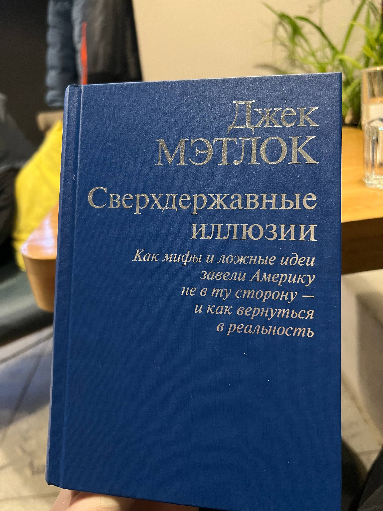
Post 5705
2025-12-03 17:45:19+00:00
Post 5704
2025-12-01 18:37:51+00:00
“Джеймс Куртц заявил в своей книге «Национальные интересы», что «батареи» Хантингтона, как сингапурские орудия, повернуты не в том направлении:
«Подлинное столкновение цивилизаций – не схватка между Западом и кем-то из остальных. Это будет схватка между Западом и „Пост-Западом“, сложившимся в рамках западной цивилизации. Столкновение уже началось – в мозгу западной цивилизации, среди американских интеллектуалов. Да, столкновение началось, и сегодня оно распространяется от мозга по всему телу…”
Excerpt From
Секреты глобального путинизма
Патрик Бьюкенен
This material may be protected by copyright.
Post 5703
2025-12-01 18:31:45+00:00
“Как сообщило агентство Associated Press в конце прошлой недели, путинизм находит отклик по всей Центральной и Западной Европе. Виктор Орбан из Венгрии сказал, что он видит в России образец для его собственного «нелиберального государства».”
Excerpt From
Секреты глобального путинизма
Патрик Бьюкенен
This material may be protected by copyright.
Post 5702
2025-12-01 18:26:38+00:00
“Нарендра Моди (Narendra Modi), лидер индийской националистической партии, которому в течение десятилетия был запрещен въезд в Соединенные Штаты за соучастие в массовом убийстве мусульман или терпимое отношение к этому убийству, в настоящее время является премьер-министром Индии.”
Excerpt From
Секреты глобального путинизма
Патрик Бьюкенен
This material may be protected by copyright.
Post 5701
2025-12-01 18:26:06+00:00
«глобальная гегемония» неоконов
Post 5700
2025-12-01 17:12:12+00:00
“К шпенглеровскому определению понятия «цивилизация» обращался и Питирим Сорокин в 1941 году. Вот что он писал: «Космополитизм и мегаполисы вместо „дома“, „расы“, „крови“, „отечества“. Научная псевдорелигия или абстрактная метафизика смерти вместо „религии сердец“. Интернациональное „общество“ вместо „моей страны“ („моего государства“, „моей нации“). Деньги и абстрактные ценности взамен реальных жизненных ценностей. „Массы“ вместо народов, свободный секс вместо материнства и т. д.».”
Excerpt From
Секреты глобального путинизма
Патрик Бьюкенен
This material may be protected by copyright.
Post 5699
2025-12-01 17:10:47+00:00
“Сепаратизм и национализм сегодня в цене и на подъеме. Централизация и глобализация – это вчерашний день. Появляется новый мир. Вряд ли это приятная новость для транснациональных элит, борющихся с изменениями климата и с глобальным экономическим неравенством.”
Excerpt From
Секреты глобального путинизма
Патрик Бьюкенен
This material may be protected by copyright.
Post 5698
2025-12-01 14:30:45+00:00
“И величайшим союзником Америки в этом мире после «холодной войны» является национализм, а не НАТО, полная нахлебников и приживал.”
Excerpt From
Секреты глобального путинизма
Патрик Бьюкенен
This material may be protected by copyright.
Post 5697
2025-12-01 14:29:35+00:00
“Это не довод в пользу того, чтобы игнорировать действия России. Но это довод в пользу того, чтобы проанализировать, что важно, а что нет, что создает нам угрозу, а что не создает, и в чем реальная сдерживающая сила, мешающая воссозданию советской империи.”
Excerpt From
Секреты глобального путинизма
Патрик Бьюкенен
This material may be protected by copyright.
Post 5696
2025-12-01 14:28:41+00:00
“На самом деле, если Путин присоединит восточную и южную Украину вплоть до Одессы, он просто восстановит российскую власть над той территорией, которая принадлежала России с тех пор, как первый президент Соединенных Штатов Америки Вашингтон принес присягу, и до тех пор, когда свою присягу в 1989 году принес Джордж Буш-старший.”
Excerpt From
Секреты глобального путинизма
Патрик Бьюкенен
This material may be protected by copyright.
Post 5695
2025-12-01 14:09:18+00:00
“В его последних выступлениях слышны отголоски речи Иоанна Павла II, чей Evangelium Vitae, провозглашенный в 1995 году, был вызовом Западу, который совершает моральное преступление, отвергает целостность человеческой жизни и живет «культурой смерти», презирающий слабых.”
Excerpt From
Секреты глобального путинизма
Патрик Бьюкенен
This material may be protected by copyright.
Post 5694
2025-12-01 14:08:47+00:00
“К президенту России можно относиться как угодно, но Владимир Путин прекрасно осознает, что он делает.
Первый Рим был священным городом для всего христианства. Вторым Римом был Константинополь (нынешний Стамбул), эра которого закончилась после нашествия турок в 1453 году. И Третий Рим, в сознании верующих, – это Москва.
Путин придает Москве роль Священного города и центра борьбы против неоязычества и паганизма. В культурной войне за будущее человечества он твердой рукой помещает флаг России на сторону традиционного христианства.”
Excerpt From
Секреты глобального путинизма
Патрик Бьюкенен
This material may be protected by copyright.
Post 5693
2025-12-01 14:08:10+00:00
“Так что происходит? А происходит новая война религий, и Россия выступает в ней на стороне Бога, а Запад – на стороне Гоморры.”
Excerpt From
Секреты глобального путинизма
Патрик Бьюкенен
This material may be protected by copyright.
Post 5692
2025-11-30 17:24:43+00:00
“Как и материализм, консьюмеризм и социализм, транснационализм совершает фатальную ошибку: питает тело, но оставляет душу голодной. И в конце концов люди устают слышать старые призывы…
2014 г.”
Excerpt From
Секреты глобального путинизма
Патрик Бьюкенен
This material may be protected by copyright.
Post 5691
2025-11-30 17:23:36+00:00
“Почему? Путин не только публично отвергает моральный релятивизм Запада, но и создает базу для правовых норм, которые сознательно уходят корнями в традиционные христианские понятия о добре и зле.
Путин является анти-Обамой: он пытается занять культурно-нравственный вакуум, оставленный Америкой. Пока мы празднуем торжество мультикультурализма, расширяем права ЛГБТ и даем право на аборты, Путин отвергает все эти голливудские ценности.”
Excerpt From
Секреты глобального путинизма
Патрик Бьюкенен
This material may be protected by copyright.
Post 5690
2025-11-30 16:59:55+00:00
“Вторым верным признаком нового европейского популизма является традиционализм и культурный консерватизм, уважение к религиозному, культурному и историческому наследию нации.
Недавняя победа на «Евровидении» Кончиты Вурст, бородатого трансвестита, хоть и была восторженно встречена прессой, но дала сигнал традиционалистам, что европейская культура им не принадлежит.”
Excerpt From
Секреты глобального путинизма
Патрик Бьюкенен
This material may be protected by copyright.
Post 5689
2025-11-30 16:59:01+00:00
“Итак, какие же существуют характерные опознавательные знаки популистских партий, которые мы наблюдаем в каждой европейской стране?
Во-первых, они отказываются от идей универсализма и транснационализма и возвращаются к идее патриотизма и его символам: национальным песням, праздникам, истории, мифам, легендам.
Для таких народов сохранение уникальной этнической и культурной самобытности нации важнее требований любых наднациональных организаций, будь то ЕС или ООН.
Подобные настроения выражаются не только в яростном сопротивлении против дальнейшей взаимной интеграции в ЕС, но и во враждебности к иммигрантам из стран третьего мира, мусульманам и выходцам из стран Восточной Европы.
Люди просто хотят оставаться такими, какие они есть.”
Excerpt From
Секреты глобального путинизма
Патрик Бьюкенен
This material may be protected by copyright.
Post 5688
2025-11-30 16:55:49+00:00
“И хотя произведение поэта Альфреда Теннисона «Парламент человека и Федерация мира» будоражило воображение сторонников Единого мира в XIX и начале XX века, мечта о таком мире не захватила сердца европейских народов. Кто из них готов умереть за брюссельскую бюрократию? Никто.”
Excerpt From
Секреты глобального путинизма
Патрик Бьюкенен
This material may be protected by copyright.
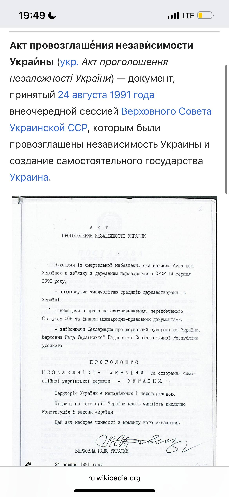
Post 5687
2025-11-30 16:49:47+00:00
Post 5684
2025-11-30 15:45:08+00:00
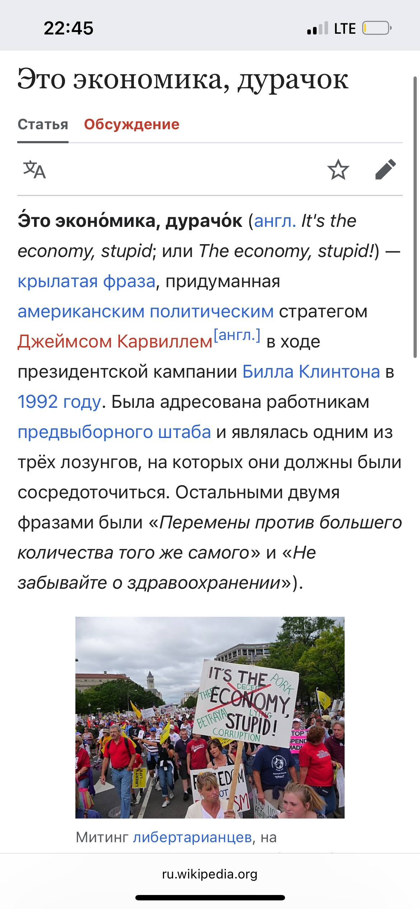
Post 5683
2025-11-29 19:45:46+00:00
Post 5681
2025-11-29 19:41:12+00:00
“Немецкий философ Освальд Шпенглер использовал слово «цивилизация», чтобы описать «завершающую стадию развития культурного организма». В 1941 году Питирим Сорокин дал подробную характеристику шпенглеровскому определению цивилизации:
«Космополитизм и мегаполис взамен „дома“, „расы“, „группы крови“ и „Отечества“; научный атеизм и мертвая метафизика вместо религии; интернационализм вместо гордости за свою страну; деньги и абстрактные ценности вместо земли и реальных (живых) ценностей; „масса“ вместо „народа“; секс вместо материнства… и так далее».”
Excerpt From
Секреты глобального путинизма
Патрик Бьюкенен
This material may be protected by copyright.
Post 5680
2025-11-29 19:40:28+00:00
“Что происходит в Европе?
В своей неопубликованной работе «Левиафан и его враги» мой покойный друг Сэм Фрэнсис написал о грядущем кризисе «мягкого управления государством»: Евросоюз является тому хрестоматийным примером.”
Excerpt From
Секреты глобального путинизма
Патрик Бьюкенен
This material may be protected by copyright.
Post 5679
2025-11-29 19:39:17+00:00
“Европеец под угрозой как биологический вид. Он вымирает. К 2050 году Россия, бывшая в 1950-м наиболее многочисленной нацией, будет находиться по этому показателю на 15-м месте, уступив Египту и намного уступив Конго и Танзании. Единственной западной страной, которая к середине века по численности попадет в первые 14 государств мира, будет США. Но большинство американцев в этот период будут иметь корни в Азии, Африке и Латинской Америке.”
Excerpt From
Секреты глобального путинизма
Патрик Бьюкенен
This material may be protected by copyright.
Post 5678
2025-11-29 19:38:52+00:00
“Внимание. Столетие, которое последовало за мирным финалом «холодной войны» и освобождением порабощенных народов, будет ознаменовано таким падением численности населения Европы, которое превысит людские потери от двух мировых войн и приблизится к потерям от эпидемии чумы в XIV веке.”
Excerpt From
Секреты глобального путинизма
Патрик Бьюкенен
This material may be protected by copyright.
Post 5677
2025-11-29 19:37:58+00:00
“В марте 1939 года Британия дала военные гарантии Польше и – выразим уважение британцам – объявила войну Германии. Это стало концом Британской Империи. А чем эта «правильная война» обернулась для Польши?
Трехмиллионное еврейское население страны фактически истреблено, 3 миллиона католиков также погибло. После войны Польша вступила в сорокалетнюю полосу правления советских наместников. День победы во II Мировой войне принес Польше совсем не то, за что Великобритания вступала в войну за нее.”
Excerpt From
Секреты глобального путинизма
Патрик Бьюкенен
This material may be protected by copyright.
Post 5676
2025-11-29 19:36:40+00:00
“Когда в 1945 году основали ООН, Сталин затребовал в Генеральной Ассамблее кресла для представителей всех 15 советских республик. Сошлись на трех – для России, Украины и Белоруссии.
Эти республики были ядром Советского Союза.”
Excerpt From
Секреты глобального путинизма
Патрик Бьюкенен
This material may be protected by copyright.
Post 5675
2025-11-29 19:36:04+00:00
“Как часто в истории человечества нации, чья численность сокращается, аннексировали страны с населением растущим?”
Excerpt From
Секреты глобального путинизма
Патрик Бьюкенен
This material may be protected by copyright.
Post 5674
2025-11-29 19:34:42+00:00
“Принятие христианства, – заявил Путин, – стало решающим, поворотным моментом в церковной и светской истории государства, помогло России занять достойное место в мировой цивилизации, сделало ее неотделимой частью христианской цивилизации и помогло превратить ее в одну из крупнейших мировых держав».”
Excerpt From
Секреты глобального путинизма
Патрик Бьюкенен
This material may be protected by copyright.
Post 5673
2025-11-29 19:34:00+00:00
“Призывая Америку и Запад совместно с Россией прийти на выручку сирийским христианам, патриарх Кирилл сказал, что их изгнание из Сирии станет катастрофой для всей цивилизации.
Обама хоть раз выступал столь же убедительно и напористо за международные действия по спасению христиан? New York Times хотя бы раз выразила пусть самую малую толику озабоченности по поводу гонений на христиан, какую она выражает ежедневно в связи с преследованиями гомосексуалистов?”
Excerpt From
Секреты глобального путинизма
Патрик Бьюкенен
This material may be protected by copyright.
Post 5672
2025-11-29 19:33:18+00:00
“Во время наших последних войн на Ближнем Востоке Америка боролась за светскую демократию. Однако в результате от такой борьбы больше других пострадали христиане. Были убийства священников, были поджоги храмов, был террор. Было поголовное бегство христианского населения.”
Excerpt From
Секреты глобального путинизма
Патрик Бьюкенен
This material may be protected by copyright.
Post 5671
2025-11-29 19:30:33+00:00
“Лишь вчера гомосексуальная содомия, к которой Томас Джефферсон требовал относиться как к изнасилованию, была вне закона во многих штатах, а однополые браки считались абсурдом.
Неужели та Америка, в которой мы росли, подобна нацистской Германии?”
Excerpt From
Секреты глобального путинизма
Патрик Бьюкенен
This material may be protected by copyright.
Post 5670
2025-11-29 19:07:25+00:00
“С 4 ноября журналисты The Wall Street Journal и неоконсерваторы «пилили» союзников, что нужно бороться с ISIS в Сирии, нанести воздушные удары, разбомбить Иран, вооружить Украину для войны с русскими, в которой Киев, несомненно, многое потеряет.
Вы уверены, что это именно то, за что голосовала Америка 4 ноября? Это то, к чему призывает великая старая партия – к бесконечной войне?
2014 г.”
Excerpt From
Секреты глобального путинизма
Патрик Бьюкенен
This material may be protected by copyright.
Post 5669
2025-11-29 19:07:09+00:00
“И если российский президент, увидев, что американцы посылают в Киев боеприпасы, отправит армию, чтобы аннексировать Луганск и Донецк, возьмет Мариуполь, а затем предложит договориться, что предпримет Киев?
Даже с американским оружием Украина не может победить Россию.
А что мы сделаем? Признаем поражение? Отправим американских послов, советников и войска на Украину? Ударим по российским войскам? Блокируем Крым? Разве мы действительно готовы к реальной войне с Россией за Донецк?”
Excerpt From
Секреты глобального путинизма
Патрик Бьюкенен
This material may be protected by copyright.
Post 5668
2025-11-29 18:57:54+00:00
“1 августа 1991 года, за четыре месяца до того, как Украина объявила о своей независимости от СССР, Джордж Буш-старший предупредил власти Киева:
«Американцы не будут поддерживать тех, кто жаждет независимости для того, чтобы сменить внешнюю тиранию местным деспотизмом. Они не будут поддерживать тех, кто пропагандирует самоубийственный национализм и этническую ненависть».
Это еще раз говорит о том, что независимость Украины не входила в интересы Америки. С 1933 по 1991 год Украина не представляла интереса для Америки. Буш-старший был против этого.
С каких это пор вопрос о том, чей флаг будет развеваться над Донецком или Крымом, стал для нас так важен, что мы готовы вооружать украинскую армию для войны с пророссийскими ополченцами и рассматриваем вопрос о предоставлении гарантии НАТО для Киева, что приведет нас к неизбежной войне с ядерной державой – Россией?”
Excerpt From
Секреты глобального путинизма
Патрик Бьюкенен
This material may be protected by copyright.
Post 5667
2025-11-29 18:55:13+00:00
“В одной старой песне Джонни Кэша говорилось, что «не нужно брать в город оружие», если ты не готов его применять. Президент Обама и Джон Керри, бесспорно, опять сели в лужу, как и в случае с сирийской «красной чертой». Тем не менее они продолжают лезть в чужие дела и бросаться предупреждениями и угрозами, которые они не в силах воплотить в жизнь. Они усердно блефуют и хвастаются, хотя американский народ говорит им: «Это не наша драка».
2014 г.”
Excerpt From
Секреты глобального путинизма
Патрик Бьюкенен
This material may be protected by copyright.
Post 5666
2025-11-29 18:54:38+00:00
“Вдобавок, в ответ на западные санкции Москва может ввести санкции против Украины, чем окончательно утопит ту «черную дыру коррупции и расточительности», в которую, по мнению Washington Post, превратилась украинская экономика.”
Excerpt From
Секреты глобального путинизма
Патрик Бьюкенен
This material may be protected by copyright.
Post 5665
2025-11-29 18:54:15+00:00
“Сейчас «партия войны» старается навязать Белому дому выбор из двух вариантов, причем к катастрофе могут привести оба. Во-первых, нам предлагается вооружить украинцев. Результатом этого, вероятно, станет война, которую Киев не сможет выиграть. Вдобавок украинцы будут верить, что американцы готовы их поддержать, хотя это и не соответствует действительности. Второй вариант – это санкции. Однако Европа, зависящая от российских нефти и газа, не собирается сама себе устраивать рецессию.”
Excerpt From
Секреты глобального путинизма
Патрик Бьюкенен
This material may be protected by copyright.
Post 5664
2025-11-29 18:50:09+00:00
“Но и те, кто сегодня оглашает страну криками ястребов, должны понимать: принятие в НАТО Украины и Грузии потребует для этих наций военных гарантий, наподобие тех, которые в 1914 году дал немецкий кайзер Австрии, а в марте 1939-го Великобритания – Польше.
Эти гарантии привели к двум мировым войнам.
Некоторые историки называют эти войны смертельными ударами западной цивилизации.
2014 г.”
Excerpt From
Секреты глобального путинизма
Патрик Бьюкенен
This material may be protected by copyright.
Post 5663
2025-11-29 18:49:32+00:00
“Путин может потерять оставшуюся часть Украины уже навсегда. Если он аннексирует Восточную Украину, это может спровоцировать гражданскую войну и вторую «холодную войну». Когда Джон Керри заявляет, что время сегодня играет против Путина, с ним можно согласиться.”
Excerpt From
Секреты глобального путинизма
Патрик Бьюкенен
This material may be protected by copyright.
Post 5662
2025-11-29 18:48:50+00:00
“В Крыму и на востоке Украины этнические русские были вынуждены наблюдать, как избранный ими президент и поддержанная ими партия были свергнуты. Им на смену пришли партии и лидеры, полные ненависти к России, с которой жителей восточных регионов Украины связывают глубокие исторические, религиозные, культурные и родственные узы.”
Excerpt From
Секреты глобального путинизма
Патрик Бьюкенен
This material may be protected by copyright.
Post 5661
2025-11-29 18:47:13+00:00
“Я не призываю закрыть глаза на происходящее. Я призываю происходящее понять. Понять и действовать в долгосрочных интересах Соединенных Штатов Америки.”
Excerpt From
Секреты глобального путинизма
Патрик Бьюкенен
This material may be protected by copyright.
Post 5660
2025-11-29 18:43:40+00:00
“То, что ждет Украину, возможно, будет намного хуже того, что мы видим сейчас. Дело в том, что политический кризис увеличил раскол между Западной Украиной, обращенной к Европе, и Восточной Украиной, исторически, лингвистически, культурно и этнически связанной с Россией-матушкой.
2014 г.”
Excerpt From
Секреты глобального путинизма
Патрик Бьюкенен
This material may be protected by copyright.
Post 5659
2025-11-29 18:43:07+00:00
“Представьте себе, что было бы, если бы неоконы добились своего и Грузия с Украиной вступили бы в НАТО.”
Excerpt From
Секреты глобального путинизма
Патрик Бьюкенен
This material may be protected by copyright.
Post 5658
2025-11-29 18:37:48+00:00
“Ричард Энгел (Richard Engel) с NBC в своем репортаже с киевской Площади независимости назвал то, что он наблюдал 19 февраля, срывом перемирия.”
Excerpt From
Секреты глобального путинизма
Патрик Бьюкенен
This material may be protected by copyright.
Post 5657
2025-11-29 18:34:42+00:00
“Оппозиция имеет полное право решить будущее страны на следующих президентских выборах. Что это за демократия такая, если демократически избранный президент вынужден уйти из-за толпы?”
Excerpt From
Секреты глобального путинизма
Патрик Бьюкенен
This material may be protected by copyright.
Post 5656
2025-11-29 17:27:47+00:00
“Если уличные толпы вызовут паралич в столице, если падет демократически избранное украинское правительство, то мы не только разозлим Россию и спровоцируем у нее реваншистские настроения, но и получим вторую «холодную войну».
И мы создадим прецедент, который будет призраком бродить по Европе в условиях, когда усиливающиеся и растущие, как на дрожжах, популистские правые партии, стремящиеся к ликвидации Евросоюза, научатся на нашем примере и последуют ему.
2013 г.”
Excerpt From
Секреты глобального путинизма
Патрик Бьюкенен
This material may be protected by copyright.
Post 5655
2025-11-29 17:26:44+00:00
“Если напор и давление станут чрезмерными, Украина может распасться.”
Excerpt From
Секреты глобального путинизма
Патрик Бьюкенен
This material may be protected by copyright.
Post 5654
2025-11-29 17:25:44+00:00
“Янукович руководит расколотой страной, но его вряд ли можно назвать тираном. Когда толпы ожесточились, он распустил правительство, предложил пост премьер-министра одному из лидеров оппозиции, отменил принятые незадолго до этого законы об ужесточении мер против демонстрантов и ушел на четыре дня на больничный. Но толпы на улицах, поняв, что он уступает, и почуяв запах победы, усилили свой натиск. На сегодня в рядах протестующих и милиции уже есть несколько погибших.”
Excerpt From
Секреты глобального путинизма
Патрик Бьюкенен
This material may be protected by copyright.
Post 5653
2025-11-29 17:24:16+00:00
“Теперь к Маккейну присоединился Керри, и они вместе вмешиваются в эти дела, никакого отношения к Америке не имеющие. Керри заявил в Мюнхене: «В борьбе за демократическое европейское будущее сегодня нет ничего важнее, чем Украина». Мы «выступаем вместе с народом Украины», сказал Керри. Но с каким народом? Который избрал Януковича и до сих пор поддерживает его, или с толпами на Майдане, которые хотят его свергнуть и не намерены оставлять свои баррикады, пока он не уйдет?”
Excerpt From
Секреты глобального путинизма
Патрик Бьюкенен
This material may be protected by copyright.
Post 5652
2025-11-29 17:21:24+00:00
“Для США крайне важны отношения с Россией, другой мировой ядерной державой, нацией, продолжающей страдать от депопуляции, потери своей империи, развала страны, войны с террором. Эти отношения намного более значимы, чем вопрос о том, кто правит сейчас в Киеве.
Поставить отношения с Россией под угрозу, используя наш излюбленный метод «постмодернистского coup d’etat» – как мы сделали это в Сербии и Грузии и как не смогли сделать в Беларуси, чтобы избрать американских вассалов в соседних с Россией странах, – значит проявить имперское высокомерие и полный идиотизм.
2005 г.”
Excerpt From
Секреты глобального путинизма
Патрик Бьюкенен
This material may be protected by copyright.
Post 5651
2025-11-29 17:19:31+00:00
“Лафленд утверждает, что демонстрации в поддержку Ющенко могут по своей фальшивости вполне соответствовать американо-албанской войне, разыгранной в фильме «Хвост виляет собакой» с участием Дастина Хоффмана и Роберта де Ниро. Журналист называет «Пора» «организацией, созданной и профинансированной Вашингтоном», подобно «Отпору» и «Кмаре», которые были использованы для свержения лидеров, от которых США желали избавиться. На эмблеме «Поры», пишет Лафленд, изображен «сапог, который давит жука».”
Excerpt From
Секреты глобального путинизма
Патрик Бьюкенен
This material may be protected by copyright.
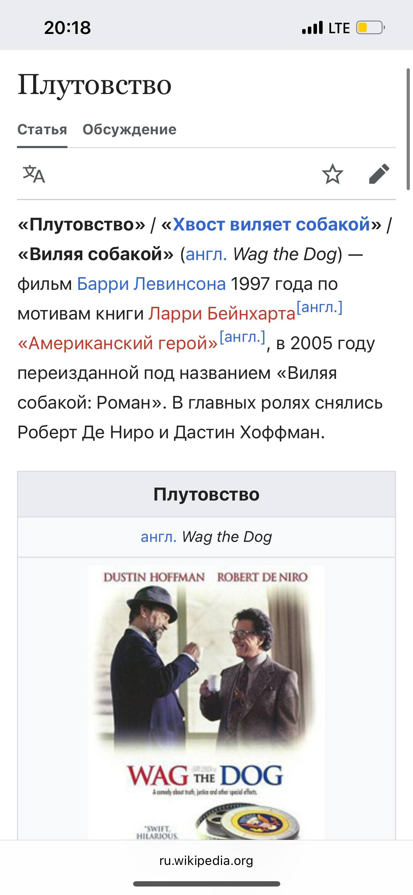
Post 5650
2025-11-29 17:18:40+00:00
Post 5649
2025-11-29 17:18:29+00:00
https://ru.wikipedia.org/wiki/%D0%9F%D0%BB%D1%83%D1%82%D0%BE%D0%B2%D1%81%D1%82%D0%B2%D0%BE
Post 5648
2025-11-29 17:14:29+00:00
“Обозреватель «Гардиан» Джонатан Стил описывает то, каким образом мы проделали эту операцию:
«Запад кивнул головой в сторону Ющенко, и деньги стали рекой перетекать в поддерживающие его группы, начиная от молодежной организации „Пора“ и кончая различными оппозиционными веб-сайтами. Еще более вызывающим фактом было то, что посольства США и других западных стран оплачивали опросы проголосовавших граждан (exit polls)».”
Excerpt From
Секреты глобального путинизма
Патрик Бьюкенен
This material may be protected by copyright.
Post 5647
2025-11-29 17:13:39+00:00
“По свидетельству The Guardian и других источников, Национальный фонд демократии, Агентство США по международному развитию, Дом Свободы, Фонд Карнеги за международный мир и «Открытое общество» Джорджа Сороса поставляли деньги и засылали своих агентов в Киев для того, чтобы добиться поражения поддерживаемого руководством государства Виктора Януковича и избрания на пост президента страны Виктора Ющенко. Есть основания полагать, что в той же самой схеме оказалась задействована и предположительно объективная и нейтральная Организация по безопасности и сотрудничеству в Европе.”
Excerpt From
Секреты глобального путинизма
Патрик Бьюкенен
This material may be protected by copyright.
Post 5646
2025-11-29 17:09:18+00:00
“Национализм – сегодняшнее. Централизация и глобализация – это уже вчерашнее.”
Excerpt From
Секреты глобального путинизма
Патрик Бьюкенен
This material may be protected by copyright.
Post 5645
2025-11-29 15:56:26+00:00
“Разве мы сами – не гордые потомки людей, которые хотели независимости от Великобритании в 1776 году?
Почему мы можем признать отделение Шотландии от Великобритании, Каталонии от Испании, Венеции от Италии, Фландрии от Бельгии, но отделение Донбасса от Украины, проведенное демократическим путем, – проблема для нас?”
Excerpt From
Секреты глобального путинизма
Патрик Бьюкенен
This material may be protected by copyright.
Post 5644
2025-11-28 21:50:36+00:00
“Его рейтинг, близкий к 80 %, столь высок потому, что он вернул России роль создательницы нового мирового порядка. Это и есть патриотизм: совсем не такой, какой мы привыкли видеть у НАТО, в составе которого одни бездельники.”
Excerpt From
Секреты глобального путинизма
Патрик Бьюкенен
This material may be protected by copyright.
Post 5643
2025-11-28 21:48:45+00:00
“Ясны и понятны причины, мотивирующие Путина: он хочет уважения, достойного державы мирового уровня. Он видит себя защитником русских, оставшихся в «ближнем зарубежье”
Excerpt From
Секреты глобального путинизма
Патрик Бьюкенен
This material may be protected by copyright.
Post 5642
2025-11-28 21:48:06+00:00
“На Украине он ответил на госпереворот, устроенный США, свергнувший демократически избранного политического союзника Москвы.”
Excerpt From
Секреты глобального путинизма
Патрик Бьюкенен
This material may be protected by copyright.
Post 5641
2025-11-28 21:46:37+00:00
“Президент Эйзенхауэр пригласил Хрущева посетить США после того, как тот утопил в крови Венгерскую революцию. С призывом о разрядке ракетного кризиса на Кубе Кеннеди обращался к Хрущеву в Американском университете. В течение нескольких недель после того, как армии стран Варшавского договора раздробили Пражское восстание 1968 г. президент Линдон Джонсон искал встречи с советским премьером Алексеем Косыгиным. После гибели корейского «Боинга», сбитого Москвой в 1983 г., Рональд Рейган понимал необходимость саммита на высшем уровне. Чтобы мы ни думали о советских диктаторах, которые блокировали Берлин, порабощали Восточную Европу, пытались разместить ракеты на Кубе и вооружали арабов для нападения на Израиль, все американские лидеры от Рузвельта до Буша-старшего стремились к переговорам с руководителями России.”
Excerpt From
Секреты глобального путинизма
Патрик Бьюкенен
This material may be protected by copyright.
Post 5640
2025-11-28 21:45:02+00:00
“1 августа 1991 г. – всего за 4 месяца до того, как Украина объявила о своей независимости, Джордж Буш-старший завил, что американцы никогда не поддержат тех, кто стремится к независимости ради того, чтобы заменить отдаленную тиранию на местный деспотизм. Они не будут помогать тем, кто обращается к самоубийственному национализму, основанному на этнической ненависти.”
Excerpt From
Секреты глобального путинизма
Патрик Бьюкенен
This material may be protected by copyright.
Post 5639
2025-11-28 21:44:06+00:00
“На этот вопрос можно ответить встречным вопросом: а что мы делали во время венгерских событий 1956 года? Что предпринял Кеннеди, когда в Берлине выросла стена? Что делал Линдон Джонсон в ответ на советское вторжение в Чехословакию в 1968-м, как реагировал Рейган на подавление польской «Солидарности»?
Они были зрелыми лидерами и принимали то, что не смогли предотвратить.”
Excerpt From
Секреты глобального путинизма
Патрик Бьюкенен
This material may be protected by copyright.
Post 5638
2025-11-28 21:42:51+00:00
“Нет, мы им не становимся. Но, как подчеркивает Генри Киссинджер, «демонизация Путина – это не политика, а алиби для оправдания ее отсутствия».”
Excerpt From
Секреты глобального путинизма
Патрик Бьюкенен
This material may be protected by copyright.
Post 5637
2025-11-28 21:42:25+00:00
“Россия может провести газопроводы в страдающий от недостатка топлива Китай и таким образом зацементировать альянс Москвы и Пекина, разрушение которого было крупнейшим достижением Ричарда Никсона. Неужели мы становимся, по выражению того же Никсона, «несчастным беспомощным гигантом», которому больше нечего противопоставить «растворению» Украины в России?”
Excerpt From
Секреты глобального путинизма
Патрик Бьюкенен
This material may be protected by copyright.
Post 5636
2025-11-28 21:39:15+00:00
“И если сегодняшнее стремление выселить Путина из «общего дома» трудно назвать взвешенной политикой, то чем являются ястребиные призывы вернуться к «холодной войне» или принять в отношении России контрмеры военного характера?”
Excerpt From
Секреты глобального путинизма
Патрик Бьюкенен
This material may be protected by copyright.
Post 5635
2025-11-28 21:37:51+00:00
“Три года спустя после того, как Хрущев отправил танки в Венгрию, он совершил тур по Америке и отпраздновал начало новой эры «духа Кемп-Дэвида».
Через полгода после того, как Хрущев разместил ракеты на Кубе, Джон Кеннеди объявил о начале разрядки международной напряженности в знаменитой речи, произнесенной в Американском университете.
Спустя три недели после того, как Москва подтолкнула арабов на Шестидневную войну, Линдон Джонсон встретился с советским премьером Алексеем Косыгиным в Нью-Джерси.
Так было во времена «холодной войны» – после кризисов американские президенты возобновляли общение с советскими лидерами. Американским лидерам Россия представлялась слишком крупной и влиятельной для того, чтобы быть изолированной и подвергнутой жесткому остракизму, как, например, Северная Корея.”
Excerpt From
Секреты глобального путинизма
Патрик Бьюкенен
This material may be protected by copyright.
Post 5634
2025-11-28 20:46:55+00:00
ОБЬЕКТО ОРИЕНТИРОВАННА антология
Post 5633
2025-11-28 20:26:05+00:00
От личных к национальным интересам
Статья
Post 5632
2025-11-28 19:54:53+00:00
Post 5631
2025-11-28 19:54:51+00:00
Post 5630
2025-11-28 19:54:38+00:00
https://www.govinfo.gov/content/pkg/BILLS-113s2277is/html/BILLS-113s2277is.htm
Post 5629
2025-11-28 19:46:00+00:00
“Пока другие сверхдержавы двигаются к языческому мировоззрению, – пишет Аллан Карлсон (Allan Carlson) из Всемирного конгресса семей, – Россия защищает иудейско-христианские ценности. В советскую эпоху в Москву устремлялись западные коммунисты. В этом году 10–12 сентября в Москве будет заседать Всемирный конгресс семей».”
Excerpt From
Секреты глобального путинизма
Патрик Бьюкенен
This material may be protected by copyright.
Post 5628
2025-11-28 19:44:04+00:00
“Evangelium Vitae (Евангелие жизни) в 1995 году подверг Запад суровой критике за его поклонение «культуре смерти».”
Excerpt From
Секреты глобального путинизма
Патрик Бьюкенен
This material may be protected by copyright.
Post 5627
2025-11-28 19:43:13+00:00
“Бывший коммунист Уиттейкер Чемберс (Whittaker Chambers), разоблачивший Элджера Хисса (Alger Hiss) как советского агента, в конце жизни писал книгу о «Третьем Риме». Первый Рим – это священный город и центр христианства, павший к ногам Одоакра и его варваров в 476 году до н. э. Вторым Римом был византийский Константинополь (сегодняшний Стамбул), захваченный в 1453 году турками. Преемницей Византии, третьим и последним Римом для приверженцев старой веры стала Москва.”
Excerpt From
Секреты глобального путинизма
Патрик Бьюкенен
This material may be protected by copyright.
Post 5626
2025-11-28 19:41:30+00:00
“Марксизм-ленинизм – это мертвая вера, а Путин говорит о том, что новая идеологическая борьба идет сегодня между развращенным Западом во главе с США и миром традиционализма, который Россия возглавила бы с большой гордостью. В новой войне убеждений и верований, говорит Путин, Россия на стороне Бога. А Запад – это Гоморра.”
Excerpt From
Секреты глобального путинизма
Патрик Бьюкенен
This material may be protected by copyright.
Post 5625
2025-11-28 19:40:16+00:00
“Россия – это христианская страна, сказал Путин. Это выступление бывшего руководителя КГБ в чем-то перекликается с его декабрьским обращением, в котором он заявил, что Россия противостоит упадничеству Запада:
«Мы видим, как многие евроатлантические страны фактически пошли по пути отказа от своих корней, в том числе и от христианских ценностей, составляющих основу западной цивилизации. Отрицаются нравственные начала и любая традиционная идентичность: национальная, культурная, религиозная или даже половая. Проводится политика, ставящая на один уровень многодетную семью и однополое партнерство, веру в Бога или веру в сатану. Это прямой путь к деградации».”
Excerpt From
Секреты глобального путинизма
Патрик Бьюкенен
This material may be protected by copyright.
Post 5624
2025-11-28 19:38:33+00:00
“Если народ Восточной Украины хочет официально оформить свои исторические, культурные и этнические связи с Россией, а народ Западной Украины желает разорвать все связи с Москвой и вступить в Евросоюз, то почему бы не решить этот вопрос политическими, дипломатическими и демократическими методами при помощи урны для голосования?”
Excerpt From
Секреты глобального путинизма
Патрик Бьюкенен
This material may be protected by copyright.
Post 5623
2025-11-28 19:38:00+00:00
“Как пишет бывший посол США в Москве Джек Мэтлок (Jack Matlock), в конце «холодной войны» 80 процентов российского населения положительно относилось к США. Прошло 10 лет, и 80 процентов россиян стали антиамериканцами. Это было еще до Путина, чей рейтинг популярности составляет сегодня 72 процента, потому что его воспринимают как человека, выступающего против американцев, и на переворот в Киеве ответившего контрпереворотом в Крыму. ”
Excerpt From
Секреты глобального путинизма
Патрик Бьюкенен
This material may be protected by copyright.
Post 5622
2025-11-28 19:33:35+00:00
https://ru.wikipedia.org/wiki/%D0%9C%D1%8D%D1%82%D0%BB%D0%BE%D0%BA,_%D0%94%D0%B6%D0%B5%D0%BA
Post 5621
2025-11-28 19:30:49+00:00
“как это оправдывает потерю России в качестве друга и партнера, каким ее сделал Рональд Рейган в конце «холодной войны»? ”
Excerpt From
Секреты глобального путинизма
Патрик Бьюкенен
This material may be protected by copyright.
Post 5620
2025-11-28 19:19:10+00:00
“В своем выступлении Путин подкрепил свой консерватизм ссылкой на русского философа Николая Бердяева: «Говоря словами Николая Бердяева, смысл консерватизма не в том, что он препятствует движению вперед и вверх, а в том, что он препятствует движению назад и вниз, к хаотической тьме, возврату к первобытному состоянию».
Хотя имя Бердяева обычно неузнаваемо в США, оно положительно известно в консервативном Центре культурного обновления имени Рассела Кирка (The Russel Kirk Center).”
Excerpt From
Секреты глобального путинизма
Патрик Бьюкенен
This material may be protected by copyright.
Post 5619
2025-11-28 19:17:19+00:00
“Главным конфликтом второй половины XX века была «холодная война» между Востоком и Западом. Сейчас же, в XXI веке, арена борьбы проходит через все страны, причем консерваторы и традиционалисты в каждой из них выступают против воинствующего секуляризма мультикультурной и транснациональной мировой элиты.”
Excerpt From
Секреты глобального путинизма
Патрик Бьюкенен
This material may be protected by copyright.
Post 5618
2025-11-28 19:16:52+00:00
“Путин, вероятно, видит будущее с большей ясностью, чем американцы, застрявшие в парадигме «холодной войны».”
Excerpt From
Секреты глобального путинизма
Патрик Бьюкенен
This material may be protected by copyright.
Post 5617
2025-11-28 19:15:10+00:00
“Америка была дехристианизирована во второй половине XX века с помощью судебных постановлений, принятых вопреки бурным возражениям огромного большинства страны, которое составляют христиане.”
Excerpt From
Секреты глобального путинизма
Патрик Бьюкенен
This material may be protected by copyright.
Post 5616
2025-11-28 19:12:35+00:00
“Если это вторая «холодная война» или американо-российская война, то завтрашние историки обязательно укажут на Бушей и на Клинтонов, швырнувших НАТО в лицо Москве, как сегодняшние историки указывают на людей в Париже, которые в 1919 году навязывали побежденной Германии Версальский договор.
2014 г.”
Excerpt From
Секреты глобального путинизма
Патрик Бьюкенен
This material may be protected by copyright.
Post 5615
2025-11-28 19:06:08+00:00
“Религиозные русские все чаще смотрят на Америку с ее голливудскими ценностями и восхвалением гомосексуализма как на больное общество, как на средоточие культурного и нравственного зла в мире.”
Excerpt From
Секреты глобального путинизма
Патрик Бьюкенен
This material may be protected by copyright.
Post 5614
2025-11-28 19:04:54+00:00
“Если семья Асадов действительно такая неисправимо злобная, то почему Джордж Буш-старший воспользовался содействием Хафеза Асада в своей войне по освобождению Кувейта в 1991 году, в которой участвовали 4000 сирийских военнослужащих?”
Excerpt From
Секреты глобального путинизма
Патрик Бьюкенен
This material may be protected by copyright.
Post 5613
2025-11-28 19:03:51+00:00
“Почему мы, американцы, не можем посмотреть на себя так, как на нас смотрят другие?”
Excerpt From
Секреты глобального путинизма
Патрик Бьюкенен
This material may be protected by copyright.
Post 5612
2025-11-28 19:03:11+00:00
“Джордж Буш пытался развернуть систему противоракетной обороны в Польше и Чехии, хотя об этом его не просила ни одна из этих стран. Мы заявили, что ПРО нацелена против Ирана. Когда мой ныне покойный друг Тони Блэнкли (Tony Blankley) в годы правления Буша-младшего посетил Россию, он был поражен той враждебностью, с которой отнеслись к нему русские. У них возникло и окрепло чувство, что в ответ на их предложение дружбы в конце «холодной войны» мы просто ими воспользовались.”
Excerpt From
Секреты глобального путинизма
Патрик Бьюкенен
This material may be protected by copyright.
Post 5611
2025-11-28 18:38:52+00:00
“За прошедшее десятилетие Национальный фонд за демократию (National Endowment for Democracy) совместно со своими республиканскими и демократическими отделениями помог свергнуть власть в Сербии, на Украине и в Грузии, заменив ее на режимы, более дружественно относящиеся к нам и отдалившиеся от Москвы.”
Excerpt From
Секреты глобального путинизма
Патрик Бьюкенен
This material may be protected by copyright.
Post 5610
2025-11-28 18:36:38+00:00
“Зачем высоконравственной стране вооружать Украину? Чтобы та начала еще более длительную и масштабную войну с Россией, в которой Киев не сможет победить? Ведь в итоге это приведет к гибели десятков тысяч украинцев.
Тем, кто произвел на свет эту провокационную резолюцию, не место во главе американской внешней политики и во главе ее ядерного арсенала.”
Excerpt From
Секреты глобального путинизма
Патрик Бьюкенен
This material may be protected by copyright.
Post 5609
2025-11-28 18:26:13+00:00
“Разве не поймали Нуланд на слове, когда она хвасталась, что США вложили 5 миллиардов долларов в политическую переориентацию Украины, и говорила, кого мы хотим видеть в качестве премьер-министра после свержения Януковича?”
Excerpt From
Секреты глобального путинизма
Патрик Бьюкенен
This material may be protected by copyright.
Post 5608
2025-11-28 18:25:47+00:00
“Не этим ли занимались Виктория Нуланд из Госдепартамента и Джон Маккейн, которые расхаживали с гордым видом по Киеву и призывали мятежников к свержению демократически избранного правительства Виктора Януковича?”
Excerpt From
Секреты глобального путинизма
Патрик Бьюкенен
This material may be protected by copyright.
Post 5607
2025-11-28 18:24:32+00:00
“Сравните то, как Путин вернул Крым, с действиями Линкольна по возвращению отделившихся штатов конфедерации. У нас была четырехлетняя война, в ходе которой погибли 620 тысяч американцев.”
Excerpt From
Секреты глобального путинизма
Патрик Бьюкенен
This material may be protected by copyright.
Post 5606
2025-11-28 18:23:22+00:00
“Похоже, мы поддерживаем любую этническую группу, которая отделяется от России, но выступаем против любого народа, который отделяется от той или иной бывшей советской республики. Это откровенная русофобия, замаскированная под демократические принципы.”
Excerpt From
Секреты глобального путинизма
Патрик Бьюкенен
This material may be protected by copyright.
Post 5605
2025-11-28 18:18:52+00:00
“Почему мы встаем на сторону Грузии с ее 5-миллионным населением и выступаем против России, стоящей на стороне самоопределения?”
Excerpt From
Секреты глобального путинизма
Патрик Бьюкенен
This material may be protected by copyright.
Post 5604
2025-11-28 18:16:16+00:00
“Как бы отреагировал Авраам Линкольн, если бы Российская империя признала независимость Виргинии и потребовала возврата самопровозглашенной Западной Виргинии Ричмонду?”
Excerpt From
Секреты глобального путинизма
Патрик Бьюкенен
This material may be protected by copyright.
Post 5603
2025-11-28 18:12:30+00:00
“В отличие от Китая, мы не жаждем русских земель. Вопрос, который России сейчас надо решить, это как при вымирающем населении удержать эти огромные территории с полезными ископаемыми, которых так жаждет мир.”
Excerpt From
Секреты глобального путинизма
Патрик Бьюкенен
This material may be protected by copyright.
Post 5602
2025-11-28 18:11:13+00:00
“Вацлав Гавел утверждает, что мы пытаемся сконструировать «первую в истории человечества атеистическую цивилизацию».”
Excerpt From
Секреты глобального путинизма
Патрик Бьюкенен
This material may be protected by copyright.
Post 5601
2025-11-28 18:09:52+00:00
“Прав был Солженицын, убеждая гарвардских профессоров, что главная беда Америки и всего Запада в том, что «люди забыли Бога”
Excerpt From
Секреты глобального путинизма
Патрик Бьюкенен
This material may be protected by copyright.
Post 5600
2025-11-28 18:06:39+00:00
“Драматург Клэр Люс (Clare Luce) сказала об этом иначе. В этом мире, написала она, люди бывают двух типов – оптимисты и пессимисты. «И пессимисты лучше информированы».”
Excerpt From
Секреты глобального путинизма
Патрик Бьюкенен
This material may be protected by copyright.
Post 5599
2025-11-28 16:57:36+00:00
“Чтобы оценить глупость подобных действий, посмотрите на Украину, которая оказалась втянутой в военное и политическое столкновение с Россией после того, как мы поучаствовали в свержении ее пророссийского режима.
Пока неоконы радовались отстранению от власти коррумпированного и некомпетентного, но демократически избранного президента Виктора Януковича, Владимир Путин взял под контроль и аннексировал Крым, а пророссийские сепаратисты попытались отколоться от Киева и добиться независимости или воссоединения с Россией. В связи с этим возникает вопрос: почему пророссийские сепаратисты Донецка и Луганска не вправе отделиться от Украины, если Украина могла отделиться от Советского Союза? И какое до этого дело Америке? Разве царь Александр II должен был считать своим делом, что 11 южных штатов откололись от союза? А что Западная Виргиния откололась от Виргинии?”
Excerpt From
Секреты глобального путинизма
Патрик Бьюкенен
This material may be protected by copyright.
Post 5598
2025-11-28 16:54:32+00:00
“Что изменилось?
С каких пор независимость стран Балтии – явление, бесспорно, чудесное и отрадное – стала для нас настолько значима, что мы решили воспринимать российское вторжение в Эстонию как удар по нашей территории? В 1994 году Джордж Кеннан назвал продвижение НАТО на территорию бывшего советского блока «стратегической ошибкой потенциально грандиозного масштаба».”
Excerpt From
Секреты глобального путинизма
Патрик Бьюкенен
This material may be protected by copyright.
Post 5597
2025-11-28 16:53:46+00:00
“При этом Трумэн не прорывал силой блокаду Берлина. Эйзенхауэр не отправлял войска спасать венгерских повстанцев. Кеннеди бурно негодовал, но никак не противодействовал строительству Берлинской стены. Когда Леонид Брежнев направил в Чехословакию армию стран Варшавского договора, Линдон Джонсон ничего не сделал. Почему эти президенты бездействовали? Потому что ни один из них не видел в Восточной Европе жизненно важных американских интересов, стоивших войны с Россией.
Если говорить честно, таких интересов как не было тогда, так нет и сейчас. Если мы полвека назад не готовы были идти на риск войны с обладающей ядерным оружием Россией из-за Чехословакии, почему мы должны будем идти на подобный риск из-за Эстонии? Во времена «холодной войны» президенты регулярно делали заявления о порабощенных нациях, провозглашая нашу веру в право народов, находящихся за «железным занавесом», быть свободными. Но никто из президентов не считал, что их освобождение стоит войны.”
Excerpt From
Секреты глобального путинизма
Патрик Бьюкенен
This material may be protected by copyright.
Post 5596
2025-11-28 16:51:36+00:00
“И я говорю народу Эстонии и народам Прибалтики: теперь мы объединены союзным договором… 5-я его статья кристально ясна: нападение на одного – это нападение на всех. Поэтому… если когда-нибудь вы снова будете спрашивать о том, кто придет вам на помощь, ответ вам будет известен – альянс НАТО, включая вооруженные силы Соединенных Штатов Америки».
Это Барак Обама заявил на прошлой неделе в Таллине, столице Эстонии, подтверждая военные гарантии, предоставленные Америкой самой маленькой из прибалтийских республик. Его предшественники времен «холодной войны» сочли бы такую идею полным безумием.”
Excerpt From
Секреты глобального путинизма
Патрик Бьюкенен
This material may be protected by copyright.
Post 5595
2025-11-28 16:46:19+00:00
“А что мы на самом деле упустили, не избрав на президентский пост Джона Маккейна?
Маккейн втянул бы нас в российско-грузинскую войну из-за Южной Осетии. Он нанес бы бомбовые удары по ядерным установкам Ирана. Мы бы все еще держали войска в Ираке. Он начал бы бомбить Сирию. Он бы направил оружие в Киев для того, чтобы выгнать русских из Крыма и уничтожить пророссийских ополченцев в Донбассе. Он бы настаивал на принятии Украины и Грузии в члены НАТО, чтобы в случае их нового конфликта с путинской Россией оказаться в самой гуще событий.”
Excerpt From
Секреты глобального путинизма
Патрик Бьюкенен
This material may be protected by copyright.
Post 5594
2025-11-28 16:41:33+00:00
“Партия должна вновь встать на путь экономического патриотизма, выступить против японского протекционизма, китайских валютных манипуляторов и поставить американских рабочих во главу угла, невзирая на аутсорсеров.”
Excerpt From
Секреты глобального путинизма
Патрик Бьюкенен
This material may be protected by copyright.
Post 5593
2025-11-28 16:36:13+00:00
“Противники Обамы, среди которых Грэм и Джон Маккейн, хотят этой войны. Они верят, что вторжение в Ирак было правильным решением. Они готовы свергнуть Асада и бомбить Иран, если тот не прекратит обогащение урана.”
Excerpt From
Секреты глобального путинизма
Патрик Бьюкенен
This material may be protected by copyright.
Post 5592
2025-11-28 16:13:12+00:00
“Одним из величайших достижений Никсона стало то, что ему удалось разделить Россию и Китай. Одним из главных достижений президента Рейгана стало то, что он помог «империи зла» превратиться в страну, где его с радостью приветствовали на Красной площади. Теперь же все то, чего достигли наши президенты Великого поколения, оказалось уничтоженным президентами поколения «бэби-бума».”
Excerpt From
Секреты глобального путинизма
Патрик Бьюкенен
This material may be protected by copyright.
Post 5591
2025-11-28 16:11:46+00:00
“Если Украина лишит отделившийся Крым нефти, газа, воды и электричества, это может заставить Путина вторгнуться на восток Украины и захватить единственный перешеек, связывающий полуостров с материком. Это может заставить Россию перекрыть импорт украинских товаров, прекратить поставлять нефть и газ и потребовать вернуть долги.”
Excerpt From
Секреты глобального путинизма
Патрик Бьюкенен
This material may be protected by copyright.
Post 5590
2025-11-28 14:38:03+00:00
“Джон Маккейн предлагает начать процесс приема Украины в НАТО, чтобы в дальнейшем гарантировать, что любое посягательство России на русскоязычный восток этой страны неминуемо приведет к войне с США”
Excerpt From
Секреты глобального путинизма
Патрик Бьюкенен
This material may be protected by copyright.
Post 5589
2025-11-28 14:32:06+00:00
“Неоконсерваторы говорят, что мы – молодая нация, и что наша идеология и принципы заложены в Конституции и Билле о правах.
Но об идеях равенства, демократии и национального многообразия не упоминается в Конституции. Америка XXI века соответствует словам канцлера Австрийской империи Меттерниха, сказанным им по поводу Италии: «Это всего лишь географическое понятие».”
Excerpt From
Секреты глобального путинизма
Патрик Бьюкенен
This material may be protected by copyright.
Post 5588
2025-11-28 14:30:14+00:00
“как Америка. Она была единой, гордой, свободной страной – первой в мире.”
Excerpt From
Секреты глобального путинизма
Патрик Бьюкенен
This material may be protected by copyright.
Post 5587
2025-11-28 14:29:00+00:00
“Отец-основатель США Джон Джей в одной из первых статей в «Федералисте» писал:
«Провидение позволило сплотить эту страну в единый народ – благодаря их предкам, говорящим на одном языке, исповедующим одну религию, придерживающимся одних и тех же принципов правления, похожих по нраву и обычаям».”
Excerpt From
Секреты глобального путинизма
Патрик Бьюкенен
This material may be protected by copyright.
Post 5586
2025-11-28 14:28:21+00:00
“Рональд Рейган говорил, что нация, которая не может контролировать свои границы, на самом деле уже не является нацией.”
Excerpt From
Секреты глобального путинизма
Патрик Бьюкенен
This material may be protected by copyright.
Post 5585
2025-11-28 14:26:48+00:00
“Возможно, Т. С. Элиот был прав:
«Вот так кончается мир – хныканьем, а не взрывом».”
Excerpt From
Секреты глобального путинизма
Патрик Бьюкенен
This material may be protected by copyright.
Post 5584
2025-11-28 14:25:17+00:00
“Это основная причина увеличения количества младенцев, рожденных вне законного брака с 6 % в 1963 году до 41 % в 2012 году.”
Excerpt From
Секреты глобального путинизма
Патрик Бьюкенен
This material may be protected by copyright.
Post 5583
2025-11-28 14:24:53+00:00
“Государство предоставляет те блага, которыми раньше отец обеспечивал сам свою семью. По сути, мы делаем лишним институт отцов. Мы создали систему, при которой девочка-подросток, забеременев, может получить все блага, вполне законно предоставляемые ей правительством.”
Excerpt From
Секреты глобального путинизма
Патрик Бьюкенен
This material may be protected by copyright.
Post 5582
2025-11-28 14:15:13+00:00
“Отец современного либерализма Франклин Рузвельт предупреждал в 1935 году, что благосостояние – это «наркотик, тонко разрушающий человеческий дух». Это раньше называлось здравым смыслом.”
Excerpt From
Секреты глобального путинизма
Патрик Бьюкенен
This material may be protected by copyright.
Post 5581
2025-11-28 14:10:52+00:00
“По всей Америке уже можно ставить надгробия при въезде в город – «убит свободной торговлей».”
Excerpt From
Секреты глобального путинизма
Патрик Бьюкенен
This material may be protected by copyright.
Post 5579
2025-11-27 21:56:44+00:00
“В этом загрязненном воздухе содержится, например, черный углерод (или попросту выбросы сажи)”
Excerpt From
Секреты глобального путинизма
Патрик Бьюкенен
This material may be protected by copyright.
Post 5578
2025-11-27 21:56:32+00:00
“черный углерод (или попросту выбросы сажи)”
Excerpt From
Секреты глобального путинизма
Патрик Бьюкенен
This material may be protected by copyright.
Post 5577
2025-11-27 21:55:51+00:00
“Со смертью коммунизма и упадком Запада (упадком в отношении населения и мощи) ислам стал крупнейшей религией”
Excerpt From
Секреты глобального путинизма
Патрик Бьюкенен
This material may be protected by copyright.
Post 5576
2025-11-27 21:55:14+00:00
“Через всю историю красной нитью проходят попытки объединить мир.
Римская империя. Католицизм. Ислам. Запад, который управлял большой частью человечества от Колумба до середины XX столетия. Коммунизм, который завоевал половину Европы и Азии, но взлетел и рухнул на протяжении всего одного столетия.”
Excerpt From
Секреты глобального путинизма
Патрик Бьюкенен
This material may be protected by copyright.
Post 5575
2025-11-27 21:54:40+00:00
“Желание народов иметь свою собственную страну, где бы их собственный язык, вера и культура преобладали и где бы они правили сами, изгнав всех других, повсюду берет верх над мультикультурализмом и транснационализмом.”
Excerpt From
Секреты глобального путинизма
Патрик Бьюкенен
This material may be protected by copyright.
Post 5574
2025-11-27 19:02:26+00:00
“Почему процесс развития Нового мирового порядка внезапно повернул вспять?
Основная причина – новая вспышка националистических настроений. Страны ставят свои собственные национальные интересы превыше любых, воспринимаемых как глобальные, интересов.
Вторая причина – упадок Запада, проектом которого был НМП. Мы больше не диктуем миру, и мир больше не марширует под нашу музыку.”
Excerpt From
Секреты глобального путинизма
Патрик Бьюкенен
This material may be protected by copyright.
Post 5573
2025-11-27 18:58:31+00:00
“Китай отказывается отпускать свою валюту в свободное плавание, чтобы не потерять положительные торговые балансы, которые позволили ему накопить $3 триллиона валютных резервов.”
Excerpt From
Секреты глобального путинизма
Патрик Бьюкенен
This material may be protected by copyright.
Post 5572
2025-11-27 18:57:51+00:00
“Первой жертвой стала Сербия, боровшаяся за то, чтобы удержать свою древнюю область Косово. Билл Клинтон бомбил Сербию в течение 78 дней.”
Excerpt From
Секреты глобального путинизма
Патрик Бьюкенен
This material may be protected by copyright.
Post 5571
2025-11-27 18:57:39+00:00
“[В международных делах] Утверждалась доктрина ограниченного суверенитета. Элиты требовали закона, более высокого, чем государственный суверенитет, доктрина «обязанность защищать» («responsibility to protect») позволила им вмешиваться во внутренние дела тех стран, где нарушения прав человека были вопиющими.”
Excerpt From
Секреты глобального путинизма
Патрик Бьюкенен
This material may be protected by copyright.
Post 5570
2025-11-27 18:57:25+00:00
“В 1994 году родилась Всемирная Торговая Организация. Американский суверенитет был отдан глобальной организации, где при голосовании у Америки был один-единственный голос, точно так же, как и у Азербайджана.”
Excerpt From
Секреты глобального путинизма
Патрик Бьюкенен
This material may be protected by copyright.
Post 5569
2025-11-27 18:54:06+00:00
“Скрытой конечной целью экономического союза был политический союз – Соединенные Штаты Европы как модель и ядро правительства мира XXI столетия.”
Excerpt From
Секреты глобального путинизма
Патрик Бьюкенен
This material may be protected by copyright.
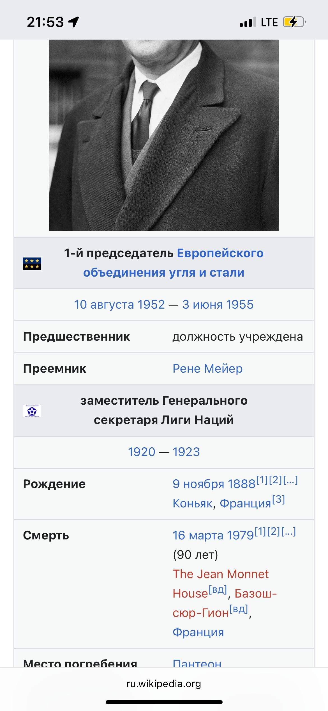
Post 5568
2025-11-27 18:53:32+00:00
Жан Моне
Post 5567
2025-11-27 18:52:38+00:00
“Франклин Делано Рузвельт, стремясь преуспеть там, где его наставник потерпел неудачу, курировал создание Организации Объединенных Наций, Международного валютного фонда и Всемирного банка.”
Excerpt From
Секреты глобального путинизма
Патрик Бьюкенен
This material may be protected by copyright.
Post 5566
2025-11-27 18:52:11+00:00
“Новый мировой порядок, замечательный проект Западных международных элит ХХ века, рушится?
Начало НМП датируется созданием Лиги Наций Вудро Вильсона, в которую республиканский Сенат отказался войти.”
Excerpt From
Секреты глобального путинизма
Патрик Бьюкенен
This material may be protected by copyright.
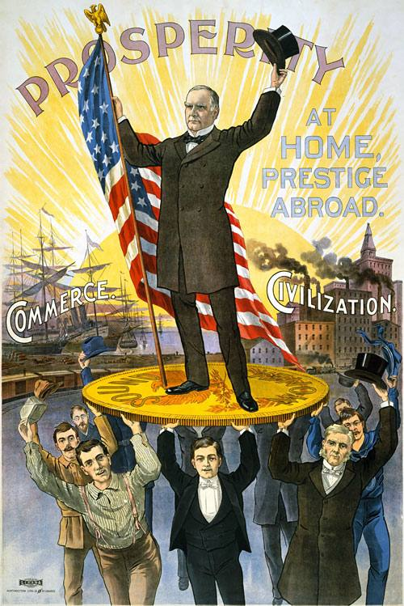
Post 5565
2025-11-27 18:43:37+00:00
Post 5564
2025-11-27 18:43:19+00:00
https://upload.wikimedia.org/wikipedia/commons/a/a5/1900McKinley.JPG
{kind=link}
Post 5563
2025-11-27 18:32:32+00:00
“Джона Куинси Адамса: «Америка не идет за границу в поисках чудовищ, которых надо уничтожить. Она – поклонница свободы и полной независимости. Она – поборница и защитница свободы и независимости, но только своих собственных».”
Excerpt From
Секреты глобального путинизма
Патрик Бьюкенен
This material may be protected by copyright.
Post 5562
2025-11-27 18:30:45+00:00
“Перед лицом той необузданной ненависти к Америке, распространившейся по всему арабскому и исламскому миру, мы снова сталкиваемся с определяющим моментом. Какова теперь наша миссия в мире? Какова теперь должна быть главная цель американской внешней политики?”
Excerpt From
Секреты глобального путинизма
Патрик Бьюкенен
This material may be protected by copyright.
Post 5561
2025-11-27 18:30:03+00:00
“некоторые страны неспособны к демократии. Как говорил Эдмунд Берк: «Это предопределено внутренним строением вещей, что люди несдержанного ума не могут быть свободными. Их страсти являются их путами».”
Excerpt From
Секреты глобального путинизма
Патрик Бьюкенен
This material may be protected by copyright.
Post 5560
2025-11-27 18:28:58+00:00
“Идеология, как указывал Рассел Кирк, – это политическая религия, и вероисповедание демократии – форма идолопоклонства, поклонение ложному божеству, идолу, золотому тельцу.”
Excerpt From
Секреты глобального путинизма
Патрик Бьюкенен
This material may be protected by copyright.
Post 5559
2025-11-27 18:25:03+00:00
“Затем случилось 9/11 и развернуло зрелого Джорджа Буша-мл. к вильсоновскому интервенционизму. После разгрома «Талибана» в декабре 2001-го Буш решил переделать Афганистан по образу и подобию Айовы и начать крестовый поход против «оси зла». В его второй инаугурационной речи он объявил, что миссия Америки состоит в том, чтобы «покончить с тиранией в нашем мире”
Excerpt From
Секреты глобального путинизма
Патрик Бьюкенен
This material may be protected by copyright.
Post 5558
2025-11-27 18:12:44+00:00
“Если историческая борьба между коммунизмом и свободой закончена, если Советская империя и Советский Союз больше не существуют, если русские хотят быть нам друзьями, а маоисты ступили на капиталистическую дорогу, то какова же наша новая миссия в мире? Что мы должны делать теперь?
Дебаты по этому вопросу затихли, когда Саддам Хусейн вторгся в Кувейт. Джордж Буш-старший собрал мощную коалицию и выиграл войну, на это потребовалось всего только 100 часов наземной операции.
Мы определились с нашей миссией.
Соединенные Штаты были последней и единственной сверхдержавой, и торжествующий Буш объявил, что мы создадим «Новый мировой порядок». Неоконсерваторы превозносили до небес «однополярный» звездный час Америки и наступающую эру «глобальной гегемонии».”
Excerpt From
Секреты глобального путинизма
Патрик Бьюкенен
This material may be protected by copyright.
Post 5557
2025-11-27 18:08:33+00:00
“Наша культура представляет собой вершину человеческого бытия, и необходимо ее сохранить.”
Excerpt From
Секреты глобального путинизма
Патрик Бьюкенен
This material may be protected by copyright.
Post 5556
2025-11-27 18:04:42+00:00
“Я считаю, что глобализм можно преодолеть, как это случилось с большевизмом.”
Excerpt From
Секреты глобального путинизма
Патрик Бьюкенен
This material may be protected by copyright.
Post 5555
2025-11-27 18:02:12+00:00
“Но истинные консерваторы в Америке – это не сторонники вмешательства, они ставят интересы нашей собственной страны на передний план и не хотят принимать участие в войнах, до которых нам нет дела.”
Excerpt From
Секреты глобального путинизма
Патрик Бьюкенен
This material may be protected by copyright.
Post 5554
2025-11-27 18:01:58+00:00
“– Большинство американских консерваторов не является, собственно говоря, истинными консерваторами, а скорее разновидностью конъюнктурщиков, беглецами из левых рядов Демократической партии 60-х годов. Они поспешно присягнули консерватизму, когда стало очевидным, что революция справа, которую мы много лет подготавливали, закончится Рональдом Рейганом. Эти люди перечитали кучу «консервативных» журналов и выдают себя за «консерваторов», хотя мало что поняли. Они хотят сделать из США мировую империю и навязать каждой стране мира свою «демократию».”
Excerpt From
Секреты глобального путинизма
Патрик Бьюкенен
This material may be protected by copyright.
Post 5553
2025-11-27 17:29:08+00:00
“Но я считаю: сопротивление этой революции – это наиважнейший долг западного человека.”
Excerpt From
Секреты глобального путинизма
Патрик Бьюкенен
This material may be protected by copyright.
Post 5552
2025-11-27 17:28:54+00:00
“История демонизируется, ее герои низвергаются. Начисто сметается все старое, стирается память, чтобы можно было сотворить вместо традиционной новую религию с верой в глобализм, эгалитаризм, открытые границы и мировое правительство. Новая религия должна охватить все сферы жизни в обмен на нашу свободу и наше достоинство. Речь идет о старом фаустовском выборе.”
Excerpt From
Секреты глобального путинизма
Патрик Бьюкенен
This material may be protected by copyright.
Post 5551
2025-11-27 17:27:40+00:00
“Речь идет о культурном марксизме, который, собственно говоря, является чрезвычайно антизападным.”
Excerpt From
Секреты глобального путинизма
Патрик Бьюкенен
This material may be protected by copyright.
Post 5550
2025-11-27 17:26:23+00:00
“То, что мы переживаем в Европе и зачастую повсюду на Западе, является закатом христианства и западноевропейской традиции. Наступает новый стиль жизни, базирующийся на материализме, гедонизме, девизе «сладкой жизни». Современные европейцы не хотят жить так, как жили их предки, они предпочитают стиль жизни типа «главное сегодня хорошо поесть, выпить и повеселиться, ведь завтра мы можем умереть».”
Excerpt From
Секреты глобального путинизма
Патрик Бьюкенен
This material may be protected by copyright.
Post 5549
2025-11-27 17:22:37+00:00
“– Как вы видите взаимоотношения Запада с Россией?
– Православные, протестанты и католики, по моему мнению, составляют западную цивилизацию. Конечно, я вижу Россию как часть Запада в контексте надвигающегося кризиса. У нее те же проблемы, что и у других западных стран: сокращение населения, потеря веры, наступление гедонизма и материализма.”
Excerpt From
Секреты глобального путинизма
Патрик Бьюкенен
This material may be protected by copyright.
Post 5548
2025-11-27 14:49:20+00:00
“Boeing тоже глобальная компания. Глобальные компании больше не хотят защищать свой рынок, они уже не воспринимают Америку как свой дом. Их домом становится мир. Они предпочитают переносить свои заводы туда, где дешевле рабочая сила, где правила менее жесткие. И, делая это, они утрачивают принадлежность к своей стране. По моему мнению, интересы транснациональных корпораций, большого бизнеса и интересы Америки были параллельны, сейчас они противоречат друг другу.”
Excerpt From
Секреты глобального путинизма
Патрик Бьюкенен
This material may be protected by copyright.
Post 5547
2025-11-27 14:42:22+00:00
“Интересна реакция традиционных исламских сообществ на это загрязнение, распространяющееся и в их странах. Это реакция против Запада и против Соединенных Штатов. И это причина, по которой Америка, привыкшая к тому, что ее хорошо принимали в арабском мире как великую антиимпериалистическую державу, которая вытеснила британцев, сейчас отталкивается и осыпается бранью.”
Excerpt From
Секреты глобального путинизма
Патрик Бьюкенен
This material may be protected by copyright.
Post 5546
2025-11-27 14:40:32+00:00
“Я думаю, эта революция охватила американские элиты; она охватила все западные страны, прежде всего Европу, но я думаю, что это культура смерти. Она верит в регулирование рождаемости, аборты, помощь в самоубийствах. Это культура настоящего момента, это эгоцентричная культура.”
Excerpt From
Секреты глобального путинизма
Патрик Бьюкенен
This material may be protected by copyright.
Post 5545
2025-11-27 14:39:47+00:00
“Затем эта страна переживает социальную, моральную и культурную революцию, которая была антихристианской по своей сути, индивидуалистичной, гедонистической и материалистической. В основе ее лежали идеи Французской революции. В первую очередь это течение охватило университеты, затем американские элиты и, наконец, бросило вызов доминирующей в Америке культуре. Сейчас Соединенные Штаты – это две страны.”
Excerpt From
Секреты глобального путинизма
Патрик Бьюкенен
This material may be protected by copyright.
Post 5544
2025-11-27 14:38:51+00:00
“И будет абсолютно правильным сказать, что, если умирает вера, погибают культура и цивилизация. И сейчас христианство умирает по всей Европе, и вместе с ним умирают культура и западная цивилизация. Вот что стоит за физической смертью западных народов. Они лишены того кругозора, который давало им христианское мировоззрение; они живут настоящим моментом: гедонизм, индивидуализм, элементы американской мечты заразили людей в этом мире.”
Excerpt From
Секреты глобального путинизма
Патрик Бьюкенен
This material may be protected by copyright.
Post 5543
2025-11-27 14:38:07+00:00
“Запад родился из христианства. Большинство идей пришло на Запад из Иерусалима и Святой земли. Идеи о том, что человек – создание Бога, что он независим, наделен правами, у него есть душа, что существуют ограничения на власть государства; идея семьи, ценности детей, идея личного достоинства и свободы – это идеи, которые пришли из христианства в Римскую империю и после ее падения стали основой того, что мы называем западной цивилизацией, величайшей цивилизацией на земле. Величайшее искусство, архитектура, литература возникли из христианства.”
Excerpt From
Секреты глобального путинизма
Патрик Бьюкенен
This material may be protected by copyright.
Post 5542
2025-11-27 14:24:51+00:00
“Я изучал статистические данные: в 1950 году мы, западные белые люди, включая и русских, составляли 35 % населения в мире, в 1960-м – 25 %. Сейчас нас 16 %, и нас будет лишь 10 % в середине XXI столетия.”
Excerpt From
Секреты глобального путинизма
Патрик Бьюкенен
This material may be protected by copyright.
Post 5541
2025-11-27 14:14:30+00:00
“Однако я считаю, что есть куда более глубинные ценности: понимание того, что правильно и неправильно, что является правдой, а что ложью.”
Excerpt From
Секреты глобального путинизма
Патрик Бьюкенен
This material may be protected by copyright.
Post 5540
2025-11-26 21:56:49+00:00
“Задача традиционных консерваторов – остановить эту авантюру в Ираке, вывести войска, убрать оттуда флот, и пусть решают свои проблемы сами. Я думаю, что неоимпериализм, который является причиной войны, порождает терроризм.”
Excerpt From
Секреты глобального путинизма
Патрик Бьюкенен
This material may be protected by copyright.
Post 5539
2025-11-26 21:56:23+00:00
“Они – вильсонианцы. Это вильсонианская идея – что Америка должна сделать мир безопаснее, что она не может чувствовать себя безопасно в недемократическом мире. Это совсем не консервативные идеи. Они – неоякобинцы. Как и лидеры Французской революции, они не доверяют идеям, если им не следует весь мир. Они глубоко нетерпимы. И они могут причинить этой стране массу неприятностей перед тем, как будут вынуждены уйти. Сейчас они в глухой обороне, потому что Ирак оказался имперским мероприятием, которое не удалось. Их следующий проект – это втянуть Соединенные Штаты в войну с Ираном. Только за счет эскалации они могут найти оправдание.”
Excerpt From
Секреты глобального путинизма
Патрик Бьюкенен
This material may be protected by copyright.
Post 5538
2025-11-26 21:55:58+00:00
“Старый консерватизм, течение, к которому принадлежу я, – это минимальное вмешательство государства, федерализм, контроль на местах, внешняя политика, которая отстаивает сильную национальную оборону, но при этом полагает, что Америке не следует вмешиваться в дела других стран, ввязываться во все эти войны, склоки и сражения. Это не наше дело. Сейчас внутри консервативного движения идет невероятная борьба между неоконсерваторами, которые контролируют консервативные журналы и говорят от имени движения, и традиционными консерваторами. Неоконсерваторы сейчас впервые находятся в положении обороняющегося. Они – главные архитекторы, сторонники и пропагандисты войны в Ираке. То, что происходит на Ближнем Востоке, – это для них катастрофа. Они не понимают, что на Ближнем Востоке американская внешняя политика должна отличаться от израильской внешней политики.”
Excerpt From
Секреты глобального путинизма
Патрик Бьюкенен
This material may be protected by copyright.
Post 5537
2025-11-26 21:55:43+00:00
“ Все эти старые деления на изоляционистов и интервенционистов тогда утратили актуальность. И они влились в консервативное движение, и это очень приветствовалось такими людьми, как я. Но постепенно, благодаря своей способности организовывать сеть, как они это называли, они стали распоряжаться фондами партии и финансировать консервативные журналы и научные центры. Они пришли к новому определению консерватизма – неоконсерватизму. В чем разница? Неоконсерватизм – это, по существу, Новый Курс, Справедливый Курс, Великое Общество. Это своеобразная смесь либерализма во внутренней политике с интервенционизмом во внешней.”
Excerpt From
Секреты глобального путинизма
Патрик Бьюкенен
This material may be protected by copyright.
Post 5536
2025-11-26 21:55:17+00:00
“– Что, на ваш взгляд, представляет собой неоконсервативное движение?
– Неоконсерваторы были демократами: троцкистами, социалистами, леваками, либералами. Все они были в Демократической партии. Демократическая партия поддерживала Джорджа Макговерна во время (проигранной им. – «Профиль») кампании-1972. Будущие неоконсерваторы остались не у дел. Их идеи игнорировались. Им некуда было податься. Мы были консерваторами. Я работал у Никсона, когда мы одержали победу в 49 штатах. Тогда неоконсерваторы перешли к нам из Демократической партии. Это случилось только когда мы пришли к власти. Они были в основном нью-йоркскими интеллектуалами. Они были сторонниками «холодной войны». Они были настроены антикоммунистически и произраильски. И мы приняли их, потому что антикоммунизм – именно то, что сплачивало консервативное движение.”
Excerpt From
Секреты глобального путинизма
Патрик Бьюкенен
This material may be protected by copyright.
Post 5535
2025-11-26 19:51:41+00:00
“С моей точки зрения, то, что происходит в этой части мира, – это появление исламской альтернативы западной идее демократии.”
Excerpt From
Секреты глобального путинизма
Патрик Бьюкенен
This material may be protected by copyright.
Post 5534
2025-11-26 19:50:58+00:00
“Как говорил Виктор Гюго, армия не может победить идею, если пришло время этой идеи.”
Excerpt From
Секреты глобального путинизма
Патрик Бьюкенен
This material may be protected by copyright.
Post 5533
2025-11-26 19:50:46+00:00
“Да, арабские страны слабы с военной точки зрения, а также и с экономической (совокупный ВВП 22 арабских стран меньше, чем у Испании). Так что Соединенные Штаты могут успешно осуществить вторжение и сменить режим в нескольких арабских странах. Но они не могут искоренить традицию и культуру, которые в исламском мире имеют 1400-летнюю историю.”
Excerpt From
Секреты глобального путинизма
Патрик Бьюкенен
This material may be protected by copyright.
Post 5532
2025-11-26 19:48:02+00:00
“Для нас, старых правых, это демократический империализм, утопия. Подобная политика не может достигнуть цели.”
Excerpt From
Секреты глобального путинизма
Патрик Бьюкенен
This material may be protected by copyright.
Post 5531
2025-11-26 19:47:11+00:00
“Некоторые из нас считают, что эта политика пагубна для Америки и может привести к тому, что ученые в 30-е годы прошлого столетия называли «вечной войной за вечный мир».”
Excerpt From
Секреты глобального путинизма
Патрик Бьюкенен
This material may be protected by copyright.
Post 5530
2025-11-26 19:46:53+00:00
“Это интервенционистская политика, которая ведет начало от Вудро Вильсона, а не от Джорджа Вашингтона. Она ставит целью перестроить мир, исходя из американских представлений, и готова использовать все наше богатство и власть, чтобы сделать это.”
Excerpt From
Секреты глобального путинизма
Патрик Бьюкенен
This material may be protected by copyright.
Post 5529
2025-11-26 19:46:15+00:00
“ В течение «холодной войны» существовало убеждение, что Советская империя и коммунизм представляют угрозу западному миру в целом и Соединенным Штатам в частности. Мы руководствовались глобальной стратегией сдерживания. Но те из нас, кто относил себя к традиционалистам, были убеждены, что, если Советская империя рухнет и Красная армия вернется домой, Соединенные Штаты тоже должны вернуться домой: мы должны закрыть наши базы за границей и вернуть войска в Соединенные Штаты.”
Excerpt From
Секреты глобального путинизма
Патрик Бьюкенен
This material may be protected by copyright.
Post 5528
2025-11-26 17:20:31+00:00
“Если Америка и стремится к чему-то, она стремится к свободе. В зловещем министерстве национальной безопасности, в ужесточении контроля в аэропортах и во введении системы цветовых степеней угрозы мы усматриваем ущемление нашей свободы. Нам нужно возродить джефферсоновскую идею «мира, торговли и честной дружбы со всеми нациями, но обременительных союзов ни с кем не заключать»…”
Excerpt From
Секреты глобального путинизма
Патрик Бьюкенен
This material may be protected by copyright.
Post 5527
2025-11-26 17:19:52+00:00
“предостережение Мэдисона:
«Из всех врагов свободы войны, по-видимому, нужно страшиться наипаче, потому что она является прародительницей всех прочих врагов. Войну ведут армии, на содержание которых требуются налоги и берутся займы, а армии, налоги и займы суть хорошо известные средства подчинения большинства меньшинству… Никакая нация не в состоянии сохранить свободу при беспрерывных войнах».”
Excerpt From
Секреты глобального путинизма
Патрик Бьюкенен
This material may be protected by copyright.
Post 5526
2025-11-26 17:19:03+00:00
“О кайзере Вильгельме говорили, что он не выносил, если где-либо в мире случался конфликт, а он в нем не участвовал. Подобные лидеры и их страны вечно балансируют на краю гибели. ”
Excerpt From
Секреты глобального путинизма
Патрик Бьюкенен
This material may be protected by copyright.
Post 5525
2025-11-26 17:18:19+00:00
“Мы должны покончить с практикой добровольного «встревания» в войны других народов, перестать защищать границы других государств и платить по чужим счетам”
Excerpt From
Секреты глобального путинизма
Патрик Бьюкенен
This material may be protected by copyright.
Post 5524
2025-11-26 16:56:35+00:00
“Таков установленный порядок вещей, что, когда государство достигает зенита своего могущества и становится опасным для человечества, оно неизбежно утрачивает мудрость, справедливость и умеренность, а наряду с этим оно также теряет и свое могущество, которое, впрочем, может вернуться, если будут восстановлены указанные добродетели.”
Excerpt From
Секреты глобального путинизма
Патрик Бьюкенен
This material may be protected by copyright.
Post 5523
2025-11-26 16:56:08+00:00
«эпохой перманентной войны за перманентный мир».”
Excerpt From
Секреты глобального путинизма
Патрик Бьюкенен
This material may be protected by copyright.
Post 5522
2025-11-26 16:55:24+00:00
“Специалист по международной политике Уолтер Рассел Мид сказал о стратегии национальной безопасности Джорджа У. Буша, что она «в нашем мире после „холодной войны“, вероятнее всего, сохранится в качестве основополагающего элемента американского мышления». Все возможно; но, на мой взгляд, вывод, вытекающий из этой стратегии, окажется той самой эпохой, которую историк Гарри Элмер Барнс назвал «эпохой перманентной войны за перманентный мир».”
Excerpt From
Секреты глобального путинизма
Патрик Бьюкенен
This material may be protected by copyright.
Post 5521
2025-11-26 16:55:12+00:00
“Специалист по международной политике Уолтер Рассел Мид сказал о стратегии национальной безопасности Джорджа У. Буша, что она «в нашем мире после „холодной войны“, вероятнее всего, сохранится в качестве основополагающего элемента американского мышления». Все возможно; но, на мой взгляд, вывод, вытекающий из этой стратегии, окажется той самой эпохой, которую историк Гарри Элмер Барнс назвал «эпохой перманентной войны за перманентный мир».”
Excerpt From
Секреты глобального путинизма
Патрик Бьюкенен
This material may be protected by copyright.
Post 5520
2025-11-26 16:53:51+00:00
“Тем не менее Рейган никогда не присваивал Америке права наносить превентивные удары или вести предупредительные войны с государствами, не нападавшими на Соединенные Штаты.”
Excerpt From
Секреты глобального путинизма
Патрик Бьюкенен
This material may be protected by copyright.
Post 5519
2025-11-26 16:48:18+00:00
“Мы будем защищать мир, который обеспечит нам прогресс», – сообщил президент кадетам.
Однако в присяге вооруженных сил США нет упоминания о защите «мира, который обеспечит нам прогресс». Присяга требует защиты конституции Соединенных Штатов. Но президент утверждает, что вооруженные силы США, численностью 1,4 миллиона человек, отныне ответственны за искоренение терроризма, уничтожение тирании, сохранение «мира во всем мире» и недопущение какого бы то ни было соперничества с нами – поскольку нам, американцам, принадлежит единственная дорога к «прогрессу человечества».”
Excerpt From
Секреты глобального путинизма
Патрик Бьюкенен
This material may be protected by copyright.
Post 5518
2025-11-26 16:46:57+00:00
“Однако само слово «ислам» означает «подчинение» – подчинение воле Аллаха. Мусульмане запрещают христианским миссионерам проповедовать в своих землях. В некоторых исламских странах попытка обратить мусульманина в иную веру карается смертью.”
Excerpt From
Секреты глобального путинизма
Патрик Бьюкенен
This material may be protected by copyright.
Post 5517
2025-11-26 16:40:59+00:00
“Таков был консерватор, которого нация выбрала президентом.
Но в Вест-Пойнте скромность уступила место наглости: «Двадцатый век завершился, и мы видим, что в мире сохранилась одна-единственная модель развития. Исламский мир… должен осознать необходимость свободы».”
Excerpt From
Секреты глобального путинизма
Патрик Бьюкенен
This material may be protected by copyright.
Post 5516
2025-11-26 15:58:21+00:00
“Но Буш все еще не закончил.
«Моральные ценности едины для всех мест, всех времен и всех культур”
Excerpt From
Секреты глобального путинизма
Патрик Бьюкенен
This material may be protected by copyright.
Post 5515
2025-11-26 15:57:41+00:00
“что именно сказал президент. Всякий акт агрессии, где бы он ни был совершен, обернется возмездием со стороны США; всякий террористический акт повлечет за собой наши действия. Поскольку мы несем ответственность за «мир во всем мире». И мы избавим человечество от угрозы терроризма и тирании. Но разве под силу такое какому-либо государству?..”
Excerpt From
Секреты глобального путинизма
Патрик Бьюкенен
This material may be protected by copyright.
Post 5514
2025-11-26 15:57:03+00:00
“Но президент еще не закончил. Там же, в Вест-Пойнте, он продолжил:
«Все государства, причастные к терроризму и агрессии, дорого за это заплатят. Мы не оставим мир на планете на откуп кучке обезумевших террористов и тиранов. Мы избавим нашу страну и весь мир от этой угрозы».”
Excerpt From
Секреты глобального путинизма
Патрик Бьюкенен
This material may be protected by copyright.
Post 5513
2025-11-26 15:54:34+00:00
“Войну с терроризмом не выиграть оборонительной тактикой. Мы должны перенести боевые действия на вражескую территорию, разрушить планы врага и устранить угрозу до того, как она успеет материализоваться. В новых условиях единственная дорога к безопасности – это дорога действий. И наша страна будет действовать».”
Excerpt From
Секреты глобального путинизма
Патрик Бьюкенен
This material may be protected by copyright.
Post 5512
2025-11-26 15:52:12+00:00
“Утверждая за Америкой право «распространять мир», президент принял на себя глобальную миссию, которую не осмеливался взвалить на свои плечи ни один из его предшественников. Кстати сказать, если отбросить вильсоновскую риторику, Америка никогда не вела войн во имя столь призрачной ценности, как «мир, в котором главенствует свобода человека».”
Excerpt From
Секреты глобального путинизма
Патрик Бьюкенен
This material may be protected by copyright.
Post 5511
2025-11-26 14:51:03+00:00
“Будучи избран как наследник Рейгана, президент Буш отказался от рейгановской философии – рейганомики, как ее стали называть. Он твердо вознамерился израсходовать средства и силы Америки на вильсоновские по духу попытки превратить Америку в мирового полицейского.”
Excerpt From
Секреты глобального путинизма
Патрик Бьюкенен
This material may be protected by copyright.
Post 5510
2025-11-26 14:48:15+00:00
“Так человечество узнало о новой миссии Америки. При этом с американским народом, которому предстояло кровью и собственными доходами бесконечно платить за соответствие имперской роли, никто не посоветовался.”
Excerpt From
Секреты глобального путинизма
Патрик Бьюкенен
This material may be protected by copyright.
Post 5509
2025-11-26 14:47:14+00:00
“Соединенные Штаты, сказал президент, возглавят объединенные нации в борьбе за наказание агрессоров и поддержание мира.”
Excerpt From
Секреты глобального путинизма
Патрик Бьюкенен
This material may be protected by copyright.
1990
Про Кувейт и бурю в пустыне
Post 5508
2025-11-26 14:45:15+00:00
“поклонением демократии как форме правления и неуемным стремлением причастить весь мир этой вере – либо объяснить, почему кто-либо не желает причащаться. Как и любое идолопоклонство, демократизм выдает ложного бога за истинного, подменяет любовь к стране любовью к процессу».”
Excerpt From
Секреты глобального путинизма
Патрик Бьюкенен
This material may be protected by copyright.
Post 5507
2025-11-26 14:42:42+00:00
“В рамках этой политики Америке следовало бы отказаться от союзов времен «холодной войны» и сложить с себя обязательства по защите союзников от прекратившей свое существование советской угрозы. Нам следовало бы снять силки, расставленные Даллесом и Ачесоном по всему миру и сулившие вовлечь нас в любую грядущую заварушку в Азии, Европе и на Ближнем Востоке – несмотря на то, что в этих регионам жизненным интересам США более ничто не угрожало. Я назвал такую политику «просвещенным национализмом» и призывал к осторожности, прежде всего – к недопущению вильсоновских по духу крестовых походов за глобальную демократию, уже в ту пору провозглашенных в качестве новой американской миссии в мире.”
Excerpt From
Секреты глобального путинизма
Патрик Бьюкенен
This material may be protected by copyright.
Post 5506
2025-11-26 14:40:09+00:00
“Картина, нарисованная Краутхаммером, была еще более грандиозной. «Стремлением Америки должна стать интеграция с Европой и Японией внутри сверхсуверенного образования, которое будет экономическим, культурным и политическим гегемоном в мире». Старой республике надлежало раствориться в этом новом образовании.”
Excerpt From
Секреты глобального путинизма
Патрик Бьюкенен
This material may be protected by copyright.
Post 5505
2025-11-26 14:39:35+00:00
“Уоттенберг полагал, что Америке не стоит запираться в «домашних стенах»; наоборот, она должна как можно скорее начать «глобальную кампанию» по установлению демократии во всем мире.”
Excerpt From
Секреты глобального путинизма
Патрик Бьюкенен
This material may be protected by copyright.
Post 5504
2025-11-26 14:39:00+00:00
“Киркпатрик, бывший представитель США в ООН, выразил надежду на то, что мы вновь станем теми, кем были до растянувшихся на полстолетия «горячих» и «холодных» войн 1939–1989 годов: «Времена, когда американцам приходилось нести столь тяжкое бремя (как „холодная война“), миновали. С возвращением к нормальной жизни мы вновь можем стать нормальной страной – и озаботиться насущными проблемами образования, семьи, промышленного и технологического развития».”
Excerpt From
Секреты глобального путинизма
Патрик Бьюкенен
This material may be protected by copyright.
Post 5503
2025-11-26 14:33:51+00:00
“Когда в 1989 году, с падением Берлинской стены, Советская империя стала распадаться, сделалось очевидным, что конец «холодной войны», определявшей миссию Америки в мире, уже не за горами. Американцы встали перед необходимостью разработки новой внешней политики.”
Excerpt From
Секреты глобального путинизма
Патрик Бьюкенен
This material may be protected by copyright.
Post 5502
2025-11-26 14:31:41+00:00
“Поневоле возникают зловещие ассоциации с Римом: упадок религии и морали, развращение класса деловых людей, деградация и разрушение культуры…”
Excerpt From
Секреты глобального путинизма
Патрик Бьюкенен
This material may be protected by copyright.
Post 5501
2025-11-26 14:30:37+00:00
“Мы превращаемся в то, против чего предостерегал еще Теодор Рузвельт, – в «многоязычный пансион для целого мира».”
Excerpt From
Секреты глобального путинизма
Патрик Бьюкенен
This material may be protected by copyright.
Post 5500
2025-11-26 14:26:25+00:00
“На протяжении полутора столетий Америка придерживалась вашингтоновского принципа: «Не заключать постоянных союзов». Ныне мы имеем на руках договоры с пятьюдесятью государствами на пяти континентах, а наши гарнизоны размещены в сотне стран.”
Excerpt From
Секреты глобального путинизма
Патрик Бьюкенен
This material may be protected by copyright.
Post 5499
2025-11-26 14:25:29+00:00
“Отвергая мудрый совет Джона Куинси Адамса, Америка вышла за пределы своих границ в поисках чудовищ, подлежащих уничтожению.”
Excerpt From
Секреты глобального путинизма
Патрик Бьюкенен
This material may be protected by copyright.
Post 5498
2025-11-26 14:24:31+00:00
“В годы «холодной войны» Америка сумела избежать схватки с Советским Союзом, схватки, которая грозила нам большим хаосом и разрушениями, нежели те, которые причинили Британии мировые войны. Мы – последняя сверхдержава, поскольку мы практически не участвовали в грандиозных сражениях двадцатого столетия, вступали в них, когда они близились к завершению, и пострадали поэтому значительно меньше остальных.”
Excerpt From
Секреты глобального путинизма
Патрик Бьюкенен
This material may be protected by copyright.
Post 5497
2025-11-26 14:23:01+00:00
“В обеих мировых войнах мы вели себя как Фортинбрас в «Гамлете» – являлись в финальной сцене, к шапочному разбору, вступая в залитый кровью тронный зал, чтобы принять бразды правления.”
Excerpt From
Секреты глобального путинизма
Патрик Бьюкенен
This material may be protected by copyright.
Post 5496
2025-11-26 14:19:25+00:00
“Британский историк А. Дж. П. Тэйлор писал: «Хотя целью Великой Нации является победа в Великой Войне, единственный способ уцелеть в прежнем качестве заключался в том, чтобы не воевать».”
Excerpt From
Секреты глобального путинизма
Патрик Бьюкенен
This material may be protected by copyright.
Post 5495
2025-11-26 13:45:30+00:00
“Впрочем, если потребуется назвать одну-единственную причину краха Британской империи, ответ будет прост: война. Англо-бурская война была британским Вьетнамом. Она повлекла за собой утрату веры в превосходство англосаксонской цивилизации и распространение еретической идеи о том, что Британская империя, отрицавшая за «цветными» чувство человеческого достоинства и готовность к самопожертвованию, уже не является морально оправданной.”
Excerpt From
Секреты глобального путинизма
Патрик Бьюкенен
This material may be protected by copyright.
Post 5494
2025-11-26 13:43:57+00:00
“В поезде, который нес его в 1946 году в Фултон, где ему предстояло произнести свою знаменитую речь о падении «железного занавеса», Черчилль мрачно признался своему американскому спутнику: «В следующей жизни я хотел бы родиться в Америке. Ваша страна – это будущее мира. Великобритания миновала свой зенит».”
Excerpt From
Секреты глобального путинизма
Патрик Бьюкенен
This material may be protected by copyright.
Post 5493
2025-11-25 21:44:42+00:00
“Вашингтон и Адамс были консерваторами в 1770 году, мятежниками в 1775 году и снова сделались консерваторами, когда возглавляли страну в качестве президентов. Гамильтон в начале 1770-х годов был подростком-смутьяном и стал консервативным министром финансов в начале 1790-х годов. Джефферсон и Мэдисон, сторонники свободы торговли в молодости, стали экономическими националистами, когда английские купцы принялись выбрасывать грузы, чтобы погубить новорожденные отрасли промышленности в ходе войны 1812 года.”
Excerpt From
Самоубийство сверхдержавы
Патрик Джозеф Бьюкенен
This material may be protected by copyright.
Post 5492
2025-11-25 21:42:59+00:00
“Letter from a Birmingham Jail [King Jr.]», African Studies Center, University of Pennsylvania, africa.upenn.edu.”
Excerpt From
Самоубийство сверхдержавы
Патрик Джозеф Бьюкенен
This material may be protected by copyright.
Post 5491
2025-11-25 21:42:34+00:00
“Как можно определить, является ли закон справедливым или несправедливым? Справедливый закон есть составленный человеком свод правил, которые соответствуют нравственному закону или Божьим заповедям. Несправедливый закон есть свод правил, дисгармонирующих с нравственным законом. Цитируя Фому Аквинского: несправедливый закон есть человеческий закон, каковой не опирается на небесное право и законы природы»{1103}.”
Excerpt From
Самоубийство сверхдержавы
Патрик Джозеф Бьюкенен
This material may be protected by copyright.
Post 5490
2025-11-25 21:41:54+00:00
“Перевод С. Шифриной. Цит. по: Кинг М. Л. Есть у меня мечта… Избранные труды и выступления. М.: Наука, 1970.”
Excerpt From
Самоубийство сверхдержавы
Патрик Джозеф Бьюкенен
This material may be protected by copyright.
Post 5489
2025-11-25 21:41:31+00:00
“В «Письме из бирмингемской тюрьмы» Мартин Лютер Кинг писал, что «существует моральная обязанность не подчиняться несправедливому закону. И я согласен со святым Августином, что «несправедливый закон – это вообще не закон…»[285].”
Excerpt From
Самоубийство сверхдержавы
Патрик Джозеф Бьюкенен
This material may be protected by copyright.
Post 5488
2025-11-25 21:39:53+00:00
“Как и основатель Республиканской партии, Авраам Линкольн, который заявил в своей первой инаугурационной речи:
«…если политику правительства по жизненно важным вопросам, затрагивающим весь народ, надо окончательно укрепить решениями Верховного суда, то… народ перестанет быть своим собственным правителем, поскольку в данных пределах он практически передаст свою исполнительную власть в руки этого выдающегося трибуна»[284].”
Excerpt From
Самоубийство сверхдержавы
Патрик Джозеф Бьюкенен
This material may be protected by copyright.
Post 5487
2025-11-25 21:38:05+00:00
“Учитывая текущий баланс сил в Верховном суде (четыре конституционалиста – Скалиа, Томас, Робертс и Алито – и четыре либерала – Гинзбург, Брейер, Сотомайор и Каган),”
Excerpt From
Самоубийство сверхдержавы
Патрик Джозеф Бьюкенен
This material may be protected by copyright.
Post 5486
2025-11-25 21:33:44+00:00
“Эта Америка ушла. Многие оплакивают ее кончину. Многие радуются. Мы больше не нация. У нас нет общей веры, общей культуры или общего видения того, какой наша страна должна быть. «Мы не считаем себя христианской нацией, еврейской нацией или мусульманской нацией», – сказал Обама; хорошо, но кто же мы тогда?{1100} Обама пояснил: «Мы считаем себя нацией граждан, которые связаны идеалами и множеством ценностей”
Excerpt From
Самоубийство сверхдержавы
Патрик Джозеф Бьюкенен
This material may be protected by copyright.
Post 5485
2025-11-25 21:31:32+00:00
“Вследствие культурной революции Америка разделилась на две страны. Различия между ними широки, глубоки и труднопреодолимы.”
Excerpt From
Самоубийство сверхдержавы
Патрик Джозеф Бьюкенен
This material may be protected by copyright.
Post 5484
2025-11-25 21:30:44+00:00
“Либо Республиканская партия положит конец массовой иммиграции, либо массовая иммиграция покончит с Республиканской партией. Как любил говорить Барри Голдуотер, «все просто».”
Excerpt From
Самоубийство сверхдержавы
Патрик Джозеф Бьюкенен
This material may be protected by copyright.
Post 5483
2025-11-25 21:29:36+00:00
“Если ничего не предпринимать, если не остановить массовую иммиграцию, которая в настоящее время представляет собой почти полностью иммиграцию из стран «третьего мира», Республиканская партия, какой мы ее знаем, отойдет в прошлое.”
Excerpt From
Самоубийство сверхдержавы
Патрик Джозеф Бьюкенен
This material may be protected by copyright.
Post 5482
2025-11-25 21:28:49+00:00
“ошибочное толкование Четырнадцатой поправки, по которому любой ребенок, рожденный нелегалами, автоматически получает гражданство США, следует исправить решением конгресса – в виде дополнения к закону; ни в коем случае эта ситуация не подлежит рассмотрению в федеральном суде, включая Верховный суд США;”
Excerpt From
Самоубийство сверхдержавы
Патрик Джозеф Бьюкенен
This material may be protected by copyright.
Post 5481
2025-11-25 21:28:00+00:00
“Нам нужно больше налогоплательщиков и меньше потребителей налогов;”
Excerpt From
Самоубийство сверхдержавы
Патрик Джозеф Бьюкенен
This material may be protected by copyright.
Post 5480
2025-11-25 19:56:18+00:00
“Проблема не в нас, но в политике, которую навязывают политиканы, «прикормленные» корпорациями, чья лояльность не поднимается выше нижней строчки в бухгалтерском балансе.”
Excerpt From
Самоубийство сверхдержавы
Патрик Джозеф Бьюкенен
This material may be protected by copyright.
Post 5479
2025-11-25 19:55:58+00:00
“Нужно полагаться друг на друга и перестать внимать «софистам, экономистам и бухгалтерам», которые отправили на свалку истории крупнейшую в мире промышленную нацию.”
Excerpt From
Самоубийство сверхдержавы
Патрик Джозеф Бьюкенен
This material may be protected by copyright.
Post 5478
2025-11-25 19:55:46+00:00
“Если что-то можно сделать здесь, значит, это должно быть сделано здесь.”
Excerpt From
Самоубийство сверхдержавы
Патрик Джозеф Бьюкенен
This material may be protected by copyright.
Post 5477
2025-11-25 19:55:09+00:00
“Мы должны изменить свое мышление. Сначала производство, а уже потом потребление. Нельзя потреблять, если ты ничего не производишь. Мы должны снова производить.”
Excerpt From
Самоубийство сверхдержавы
Патрик Джозеф Бьюкенен
This material may be protected by copyright.
Post 5476
2025-11-25 19:54:26+00:00
“Мы должны вернуть производство обратно и заново усвоить истины, изложенные столетия назад Гамильтоном. Производство – это мускулы нации, оно имеет жизненно важное значение для обороны и обеспечения суверенитета. Это магнит для исследований и разработок. Это органическая среда. Она растет. Вокруг завода образуются другие предприятия. Города развиваются. Работники в сфере производства в среднем зарабатывают вдвое больше, чем в сфере услуг.”
Excerpt From
Самоубийство сверхдержавы
Патрик Джозеф Бьюкенен
This material may be protected by copyright.
Post 5475
2025-11-25 19:53:43+00:00
“Мы собираемся поступить с «НДС-нациями» точно так же, как они поступают с нами. Мольбы, акции протеста и угрозы не пустить Пекин в ВТО отнюдь не заставили китайцев укрепить курс национальной валюты. Примем это как данность, прекратим ныть, забудем о запугиваниях – и начнем действовать.”
Excerpt From
Самоубийство сверхдержавы
Патрик Джозеф Бьюкенен
This material may be protected by copyright.
Post 5474
2025-11-25 19:53:06+00:00
“Экономисты начнут кричать: «Это протекционизм! Нельзя запираться от мира!» Никто и не собирается запираться. Цель не в том, чтобы ликвидировать иностранные товары, но в том, чтобы заставить иностранных производителей нести такую же налоговую нагрузку, какую несут американские производители. Тарифы настолько высокие, что они препятствуют появлению иностранных товаров на рынке, не принесут и цента дохода. Мы предлагаем не протекционистский тариф в качестве барьера для иностранных товаров, а доходный тариф со ставками, которые увеличат поступления в казну и позволят избавить от налогов американских производителей.”
Excerpt From
Самоубийство сверхдержавы
Патрик Джозеф Бьюкенен
This material may be protected by copyright.
Post 5473
2025-11-25 19:51:54+00:00
“Станут ли Китай, Европа и Япония грозить санкциями? Возможно. Но мы должны сказать Пекину, Брюсселю и Токио, что согласимся на комбинированный НДС на американскую продукцию для их рынков, равный нашему тарифу на их товары, не более того. Равенство и взаимность, а не глобализация и свобода должны диктовать условия торговли.”
Excerpt From
Самоубийство сверхдержавы
Патрик Джозеф Бьюкенен
This material may be protected by copyright.
Post 5472
2025-11-25 19:50:29+00:00
“Таково было бы наше послание миру: каждой компании и каждому товару здесь рады. Но если вы хотите продавать свою продукцию здесь, то и производите здесь, или придется дорого платить за выход на местный рынок.”
Excerpt From
Самоубийство сверхдержавы
Патрик Джозеф Бьюкенен
This material may be protected by copyright.
Post 5471
2025-11-25 19:50:00+00:00
“В-четвертых, когда цены на импорт вырастут на 10–20–30 процентов, иностранные компании сообразят, что для сохранения своей доли на крупнейшем в мире рынке – 15 триллионов долларов – им придется переносить производство в Америку, чтобы конкурировать с американскими компаниями. Такие компании, как «Мерседес», BMW, «Тойота», «Хонда» и прочие, будут не только собирать автомобили, но и строить заводы по производству аккумуляторов, шин, двигателей и кузовов. Приток инвестиционного капитала в Китай прекратится, этот капитал потечет обратно в Соединенные Штаты.”
Excerpt From
Самоубийство сверхдержавы
Патрик Джозеф Бьюкенен
This material may be protected by copyright.
Post 5470
2025-11-25 19:49:22+00:00
“Когда иностранные компании поймут, что ставка корпоративного налога в США самая низкая в свободном мире, они начнут перебираться сюда.”
Excerpt From
Самоубийство сверхдержавы
Патрик Джозеф Бьюкенен
This material may be protected by copyright.
Post 5469
2025-11-25 19:48:25+00:00
“Чтобы уменьшить нашу зависимость от товаров, произведенных за рубежом, и повысить спрос на товары, произведенные в Соединенных Штатах, нужно ввести жесткие импортные тарифы и использовать каждый доллар тарифной выручки для снижения налогов на американских производителей. Если США импортируют промышленные товары, продукты питания и ткани на 2,5 триллиона долларов, тариф в размере 25 процентов принесет стране 600 миллиардов долларов, практически столько же, сколько приносит корпоративное налогообложение.”
Excerpt From
Самоубийство сверхдержавы
Патрик Джозеф Бьюкенен
This material may be protected by copyright.
Post 5468
2025-11-25 19:43:08+00:00
“На протяжении десятилетий страна живет с крупнейшим торговым дефицитом в истории. Ситуацию можно исправить, если приступить к реализации налоговой и торговой политик, целью которых станет повторная индустриализация Америки, а также восстановление того огромного рынка, который США уступили зарубежным производителям, и замена товаров иностранного производства американскими товарами. Тогда Америка снова станет самодостаточной нацией, как было во времена от Линкольна до Джона Кеннеди.”
Excerpt From
Самоубийство сверхдержавы
Патрик Джозеф Бьюкенен
This material may be protected by copyright.
Post 5467
2025-11-25 19:41:06+00:00
“означает передачу технологий и способов производства в другие страны, где нет свободного рынка”
Excerpt From
Самоубийство сверхдержавы
Патрик Джозеф Бьюкенен
This material may be protected by copyright.
Post 5466
2025-11-25 19:38:35+00:00
“Нет. В сравнении один к одному американцы лучше. Почему же тогда мы уступаем? Потому что Китай, Япония и Германия – торговые хищники, а не торговые партнеры. Они воспринимают торговлю, как Винс Ломбарди[279] воспринимал футбол: «Победа – не просто главное, это единственное, что имеет значение».”
Excerpt From
Самоубийство сверхдержавы
Патрик Джозеф Бьюкенен
This material may be protected by copyright.
Post 5465
2025-11-25 19:37:42+00:00
“Кто выиграл войну?» – спрашивал сайт FreeRepublic.com. Ниже были размещены фотографии – Хиросима в 1945 году, пепел и сплошные руины, и Детройт того же года, ведущий центр промышленности. Еще ниже – фото современной Хиросимы, великолепного города, и нынешнего Детройта, пустой оболочки. Кто выиграл войну? Мы победили в мировой войне и холодной войне, но проиграли постхолодную войну и утратили будущее.”
Excerpt From
Самоубийство сверхдержавы
Патрик Джозеф Бьюкенен
This material may be protected by copyright.
Post 5464
2025-11-25 19:36:28+00:00
“Как говорил Рейган, есть простые ответы, но нет удобных ответов.”
Excerpt From
Самоубийство сверхдержавы
Патрик Джозеф Бьюкенен
This material may be protected by copyright.
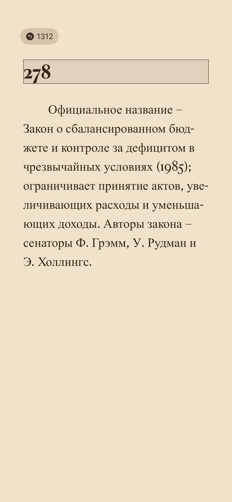
Post 5463
2025-11-25 19:35:02+00:00
“применение закона Грэмма – Рудмана – Холлингса[278] во всех федеральных ведомствах”
Excerpt From
Самоубийство сверхдержавы
Патрик Джозеф Бьюкенен
This material may be protected by copyright.
Post 5462
2025-11-25 19:33:39+00:00
“Разница между оптимистом и пессимистом, – пишет журналист Клэр Бут Люс, – состоит в том, что пессимист, как правило, лучше информирован”
Excerpt From
Самоубийство сверхдержавы
Патрик Джозеф Бьюкенен
This material may be protected by copyright.
Post 5461
2025-11-25 19:32:35+00:00
“дефицит будет расти до тех пор, пока мир не поймет, что Америка никогда не погасит свой долг (особенно с учетом постепенного обесценивания доллара). Тогда-то и разразится кризис.”
Excerpt From
Самоубийство сверхдержавы
Патрик Джозеф Бьюкенен
This material may be protected by copyright.
Post 5460
2025-11-25 19:31:09+00:00
“Чтобы сбалансировать бюджет только за счет сокращений, расходы следует урезать на 40 процентов. Если же использовать исключительно повышение налогов, налоговая нагрузка на корпорации и граждан должна увеличиться на 67 процентов.”
Excerpt From
Самоубийство сверхдержавы
Патрик Джозеф Бьюкенен
This material may be protected by copyright.
Post 5459
2025-11-25 19:30:41+00:00
“Три года подряд правительство США тратит пять долларов на каждые три, собираемых в виде налогов.”
Excerpt From
Самоубийство сверхдержавы
Патрик Джозеф Бьюкенен
This material may be protected by copyright.
Post 5458
2025-11-25 19:28:58+00:00
“Вывод войск и сокращение числа военных баз можно компенсировать увеличением объемов торговли оружием со странами, которые отныне будут самостоятельно заботиться о своей безопасности. Сэкономленные средства можно использовать для восстановления армии до состояния, в котором она пребывала до последней десятилетней войны. Чем больше мы сожмем оборону по периметру, тем крепче будет единство нации, опора нашей внешней политики.”
Excerpt From
Самоубийство сверхдержавы
Патрик Джозеф Бьюкенен
This material may be protected by copyright.
Post 5457
2025-11-25 19:26:19+00:00
“Как говорил Бисмарк, превентивная война похожа на самоубийство из-за страха смерти.”
Excerpt From
Самоубийство сверхдержавы
Патрик Джозеф Бьюкенен
This material may be protected by copyright.
Post 5456
2025-11-25 19:24:22+00:00
?? Что значит стратегический интерес?
Post 5455
2025-11-25 19:23:37+00:00
“Как только войска вернутся домой, все американские базы в Центральной Азии должны быть закрыты. Этому региону суждено быть театром соперничества местных этнических групп, а также Китая и России. Американские интересы в Центральной Азии носят экономический и коммерческий, а не стратегический характер.”
Excerpt From
Самоубийство сверхдержавы
Патрик Джозеф Бьюкенен
This material may be protected by copyright.
Post 5454
2025-11-25 19:23:18+00:00
“Соединенные Штаты Америки должны завершить войны в Афганистане и Ираке. Они длятся уже десять лет и не столько обеспечили нашу безопасность, сколько восстановили против нас исламский мир.”
Excerpt From
Самоубийство сверхдержавы
Патрик Джозеф Бьюкенен
This material may be protected by copyright.
Post 5453
2025-11-25 19:22:08+00:00
“Изучая альянсы Америки, предоставленные нами военные гарантии и наши обязательства по защите других стран (многие приняты в 1950-х годах), поневоле вспоминаешь прозрения лорда Солсбери: «Распространенная ошибка политиков состоит в том, чтобы цепляться за мертвую политику». Это было сказано о договоре 1838 года, который гарантировал нейтралитет Бельгии – и втянул Великобританию в Великую войну 1914–1918 годов, а затем во Вторую мировую войну и обернулся коллапсом страны и крахом империи.”
Excerpt From
Самоубийство сверхдержавы
Патрик Джозеф Бьюкенен
This material may be protected by copyright.
Post 5452
2025-11-25 19:19:33+00:00
“Что касается стран Балтии, Америка не собирается воевать в случае, если московские милитаристы двинутся на Таллин. Никакие жизненно важные интересы США не смогут оправдать эту безумную авантюру. Наш ответ должен ограничиться политическими, дипломатическими и экономическими мерами.”
Excerpt From
Самоубийство сверхдержавы
Патрик Джозеф Бьюкенен
This material may be protected by copyright.
Post 5451
2025-11-25 19:19:19+00:00
“Вполне разумно. Наши сильнейшие союзники по НАТО, Великобритания и Франция, являются ядерными державами, а Германия имеет четвертую по величине экономику на планете. Вместе с Польшей они в состоянии защитить и себя, и Центральную Европу.”
Excerpt From
Самоубийство сверхдержавы
Патрик Джозеф Бьюкенен
This material may be protected by copyright.
Post 5450
2025-11-25 19:17:56+00:00
“Чтобы заставить Европейский союз наконец-то заняться настоящим делом, Соединенным Штатам следует заявить о намерении выйти из НАТО, передать руководство в альянсе европейцам и начать вывод авиационных и военно-морских баз.”
Excerpt From
Самоубийство сверхдержавы
Патрик Джозеф Бьюкенен
This material may be protected by copyright.
Post 5449
2025-11-25 19:17:33+00:00
“Как долго 310 миллионов американцев должны оберегать 500 миллионов богатых европейцев от 140 миллионов россиян”
Excerpt From
Самоубийство сверхдержавы
Патрик Джозеф Бьюкенен
This material may be protected by copyright.
Post 5448
2025-11-25 19:16:18+00:00
“Когда избрали Ричарда Никсона, обещавшего покончить с войной, Америка забыла о «новом фронтире». В своем выступлении 3 ноября 1969 года перед «молчаливым большинством» Никсон подтвердил приверженность новой политике, сформулированной в июле на Гуаме:
«Первое. Соединенные Штаты выполнят все свои обязательства по заключенным договорам.
Второе. Мы предоставим щит, если ядерная держава станет угрожать свободе государства, находящегося в союзе с нами, или стране, выживание которой мы считаем жизненно важным для нашей безопасности.
Третье. В случаях, касающихся других типов агрессии, мы окажем военную и экономическую помощь, если к нам обратятся с просьбой, соответствующей нашим договорным обязательствам. Но мы будем ожидать от государства, подвергшегося этой угрозе, что оно возьмет на себя основные обязательства по выделению живой силы, необходимой для своей обороны»{1092}.”
Excerpt From
Самоубийство сверхдержавы
Патрик Джозеф Бьюкенен
This material may be protected by copyright.
Post 5447
2025-11-25 19:11:18+00:00
“Абсурдно, что Соединенные Штаты, с нашим настойчивым стремлением к дефолту, берут кредиты в Японии – на защиту Японии, берут кредиты в Европе, чтобы защищать Европу, и заимствуют у стран Персидского залива, чтобы защищать Персидский залив. Как мы до этого дошли?”
Excerpt From
Самоубийство сверхдержавы
Патрик Джозеф Бьюкенен
This material may be protected by copyright.
Post 5446
2025-11-25 19:08:03+00:00
“Чернокожий журналист Карл Роуэн пришел к еще более мрачным выводам в своей книге «Грядущая расовая война в Америке» (1996).”
Excerpt From
Самоубийство сверхдержавы
Патрик Джозеф Бьюкенен
This material may be protected by copyright.
Post 5445
2025-11-25 19:07:36+00:00
“Chilton Williamson, Jr., «The New American Mob», Chronicles, July 2010, 17.”
Excerpt From
Самоубийство сверхдержавы
Патрик Джозеф Бьюкенен
This material may be protected by copyright.
Post 5444
2025-11-25 19:07:06+00:00
“Развитой либерализм, – пишет Чилтон Уильямсон-младший, – делит Соединенные Штаты на старую и новую Америки, это разделение вряд ли удастся преодолеть в обозримом будущем, наоборот, оно становится все отчетливее.
Либерализм в эпоху Обамы выступает для старой американской культуры такой же силой, какой ислам выступает для культуры старой Европы… Линия фронта определена. Америка обречена оставаться домом разделенным, причем на протяжении многих поколений, а потом ее ждет неизбежная участь всех разделенных домов – по своей природе они неуправляемы, а значит, нежизнеспособны»{1089}.”
Excerpt From
Самоубийство сверхдержавы
Патрик Джозеф Бьюкенен
This material may be protected by copyright.
Post 5443
2025-11-25 19:06:12+00:00
“Культурная война не закончена. Культурная война не закончится никогда. Ведь она вызвана расхождениями в понимании правильного и неправильного, Бога и страны, добра и зла. Культурная война будет с нами всегда.”
Excerpt From
Самоубийство сверхдержавы
Патрик Джозеф Бьюкенен
This material may be protected by copyright.
Post 5442
2025-11-25 19:05:24+00:00
“Революция, начавшаяся в 1960-х, получила много имен – радикальный либерализм, светский гуманизм, культурный марксизм, грамшианская революция.”
Excerpt From
Самоубийство сверхдержавы
Патрик Джозеф Бьюкенен
This material may be protected by copyright.
Post 5441
2025-11-25 19:03:29+00:00
“Идеология Обамы проявила себя в дебатах по поводу мечети на Граунд-Зиро. Многие интеллектуалы уверяли, что за аргументами противников мечети скрываются невежество и предрассудки. Так, Майкл Кинсли писал: «Есть ли какая-либо причина выступать против мечети, кроме лицемерия, демагогии или пренебрежения конституцией? Лично мне такой причины не встречалось»{1088}.”
Excerpt From
Самоубийство сверхдержавы
Патрик Джозеф Бьюкенен
This material may be protected by copyright.
Post 5440
2025-11-25 19:02:42+00:00
Post 5439
2025-11-25 19:02:31+00:00
“Противопоставление обоснованного недовольства чернокожей Америки «неоправданному» недовольству Америки белой побуждает вспоминать слова Мюррея Ротбарда:
«Недовольство хороших парней, признанных жертв, обозначается как «ярость», которая считается благородной… С другой стороны, недовольство тех, кого признают угнетателями, характеризуется как «обиды»: сразу представляешь себе этаких злых колдунчиков, которые завидуют хорошим парням и пакостят им исподтишка»{1087}.”
Excerpt From
Самоубийство сверхдержавы
Патрик Джозеф Бьюкенен
This material may be protected by copyright.
Post 5438
2025-11-25 18:57:37+00:00
“Революционные взгляды доминируют в культуре, искусстве, науке и в средствах массовой информации. ”
Excerpt From
Самоубийство сверхдержавы
Патрик Джозеф Бьюкенен
This material may be protected by copyright.
Post 5437
2025-11-25 18:56:19+00:00
“В разгар этих восстаний Линдон Джонсон совершил этакий «большой скачок», примкнув к революции: он возвестил, что целью Америки является не равенство прав, но равенство результатов. За полвека машина государственного управления сделала очень многое для осуществления этого эгалитарного социалистического идеала.”
Excerpt From
Самоубийство сверхдержавы
Патрик Джозеф Бьюкенен
This material may be protected by copyright.
Post 5436
2025-11-25 18:54:35+00:00
“Многие участники антивоенного движения одобрили выдвинутое «третьим миром» обвинение Запада в пяти столетиях лет рабства, колониализма, капиталистической эксплуатации и империализма.”
Excerpt From
Самоубийство сверхдержавы
Патрик Джозеф Бьюкенен
This material may be protected by copyright.
Post 5435
2025-11-25 18:53:38+00:00
“В сегодняшней Америке нет правительства во имя блага людей. Часто наше правительство выступает против народа. Более того, государство находится в состоянии войны с народом.”
Excerpt From
Самоубийство сверхдержавы
Патрик Джозеф Бьюкенен
This material may be protected by copyright.
Post 5434
2025-11-25 18:49:59+00:00
“Ваш Бог мертв, утверждали революционеры, подавитесь своей моралью.”
Excerpt From
Самоубийство сверхдержавы
Патрик Джозеф Бьюкенен
This material may be protected by copyright.
Post 5433
2025-11-25 18:49:11+00:00
“В разгар Великой депрессии Рузвельт в своей первой инаугурационной речи сказал, что «наши общие трудности… суть, слава Богу, только трудности материальные».
Нашему поколению повезло меньше. Наши трудности не только материальные, но и моральные”
Excerpt From
Самоубийство сверхдержавы
Патрик Джозеф Бьюкенен
This material may be protected by copyright.
Post 5432
2025-11-25 18:48:04+00:00
“В погоне за идеальным обществом мечты мы убиваем страну, что досталась нам в наследство, лучшую и прекраснейшую страну на земле.”
Excerpt From
Самоубийство сверхдержавы
Патрик Джозеф Бьюкенен
This material may be protected by copyright.
Post 5431
2025-11-25 18:47:24+00:00
“Какая разница, черная кошка или белая, говорил Дэн, если она ловит мышей. Идеология есть яд, а разум – противоядие. Дэн сделал то же самое, что и Ленин со своей новой экономической политикой: воспользовался идеями противника, чтобы спасти режим.”
Excerpt From
Самоубийство сверхдержавы
Патрик Джозеф Бьюкенен
This material may be protected by copyright.
Post 5430
2025-11-25 18:46:53+00:00
“Не отрекаясь во всеуслышание от Маркса и Мао, Дэн побудил страну забыть о мировой революции и принять государственный капитализм.”
Excerpt From
Самоубийство сверхдержавы
Патрик Джозеф Бьюкенен
This material may be protected by copyright.
Post 5429
2025-11-25 18:44:21+00:00
“В 1991 году Клас Рюн назвал «мессианское» стремление изменить Америку и весь мир «новым якобинством», ибо оно заставляет вспомнить тех интеллектуалов, которые поклонялись Руссо, совершили французскую революцию и чуть не утопили Францию и всю Европу в крови ради достижения идеала{1081}.”
Excerpt From
Самоубийство сверхдержавы
Патрик Джозеф Бьюкенен
This material may be protected by copyright.
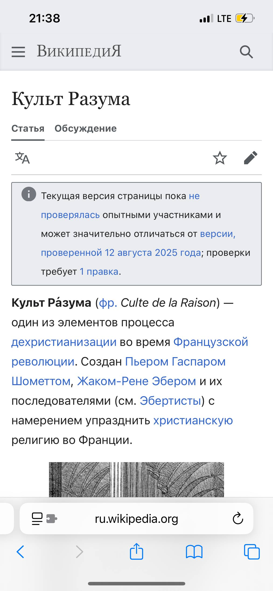
Post 5428
2025-11-25 18:38:53+00:00
Post 5427
2025-11-25 18:38:44+00:00
https://ru.wikipedia.org/wiki/%D0%9A%D1%83%D0%BB%D1%8C%D1%82_%D0%A0%D0%B0%D0%B7%D1%83%D0%BC%D0%B0
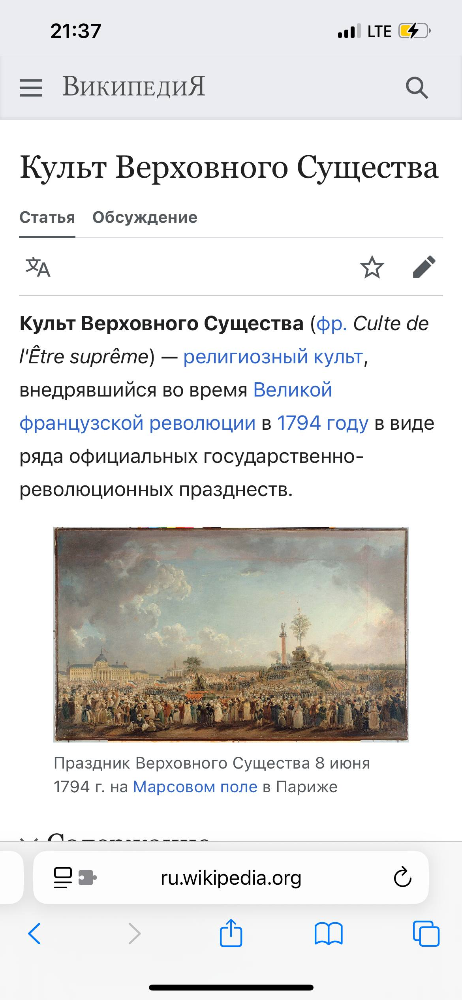
Post 5426
2025-11-25 18:38:04+00:00
Post 5424
2025-11-25 18:32:55+00:00
“В наших силах создать мир заново», – писал в 1776 году идеалист Томас Пейн, едва избежавший гильотины в ходе революции 1789 года, которая возникла на обещании создать мир заново.”
Excerpt From
Самоубийство сверхдержавы
Патрик Джозеф Бьюкенен
This material may be protected by copyright.
Post 5423
2025-11-25 18:32:07+00:00
“Некоторые люди видят вещи такими, каковы они есть. Я же мечтаю о том, чего никогда не было, и говорю – почему бы нет», – заявил Роберт Ф. Кеннеди в ходе кампании, которая стоила ему жизни{1080}. Но есть причина, по которой вещи таковы, каковы они есть, и почему некоторые мечты никогда не сбываются: неизменная человеческая природа, непобедимый и вечный враг всех утопистов.”
Excerpt From
Самоубийство сверхдержавы
Патрик Джозеф Бьюкенен
This material may be protected by copyright.
Post 5422
2025-11-25 18:31:06+00:00
“Duncan Williams, Trousered Apes: Sick Literature in a Sick Society (New Rochelle, NY: Arlington House, 1991), 140.”
Excerpt From
Самоубийство сверхдержавы
Патрик Джозеф Бьюкенен
This material may be protected by copyright.
Post 5421
2025-11-25 18:31:05+00:00
Post 5420
2025-11-25 18:30:07+00:00
“Чтобы создать концепцию, нужно забыть о действительности», – писал испанский философ Ортега-и-Гассет{1079}”
Excerpt From
Самоубийство сверхдержавы
Патрик Джозеф Бьюкенен
This material may be protected by copyright.
Post 5419
2025-11-25 18:29:17+00:00
“Эксперимент проваливается и вряд ли может оказаться успешным. Ведь он опирается на «теорию, которая противоречит реальности», на идеологию, основные положения которой враждебны законам природы. Подобно марксистам, что мечтали создать нового человека и новое общество, наши элиты грезят о невозможном.”
Excerpt From
Самоубийство сверхдержавы
Патрик Джозеф Бьюкенен
This material may be protected by copyright.
Post 5418
2025-11-25 18:04:43+00:00
“Как писал в начале великого эксперимента профессор Уильямс, автор «Обезьяны в штанах»:
«Предпринимались различные попытки (Советский Союз и Китай, например) обеспечить на практике равенство… в качестве основы общества. Все эти усилия либо провалились, либо должны провалиться, поскольку нельзя построить стабильное общество на теории, которая противоречит реальности. Суровый, но неопровержимый факт гласит, что люди не равны по наследственным способностям. Некоторые от рождения наделены большим интеллектом, большим сочувствием, большей способностью добиваться успеха, чем другие».
«Стремление воплотить миф о равенстве и разочарование, которое регулярно доводится испытывать его приверженцам… представляют собой серьезную психологическую и политическую проблему»{1078}. Думается, профессор Уильямс из вежливости преуменьшает.”
Excerpt From
Самоубийство сверхдержавы
Патрик Джозеф Бьюкенен
This material may be protected by copyright.
Post 5417
2025-11-25 14:25:44+00:00
Великий эксперимент
Post 5416
2025-11-25 14:25:39+00:00
“Наши интеллектуальные, культурные и политические элиты сегодня затеяли один из наиболее дерзких и амбициозных экспериментов в истории. Они пытаются превратить западную христианскую республику в эгалитарную демократию, смешение всех племен, рас, вероисповеданий и культур планеты Земля. Они отвергли Бога, отделили нашу веру от общественной жизни и отказались от иудеохристианского этического кодекса, по которому стремились жить предыдущие поколения.”
Excerpt From
Самоубийство сверхдержавы
Патрик Джозеф Бьюкенен
This material may be protected by copyright.
Post 5415
2025-11-25 14:25:07+00:00
“Мы выгнали Бога из наших школ и заменили веру теорией эволюции. Они считали, всем людям от Бога дано неотъемлемое право на жизнь. Вердиктом по делу «Роу против Уэйда» мы отменили это право для нерожденных, пятьдесят миллионов которых с тех пор погибли. Целых 250 лет, считая от прибытия поселенцев в Джеймстаун, американцы по заветам отцов-основателей строили протестантскую и англосаксонскую страну. С ирландской иммиграции 1840-х годов до первого президента-католика ирландского происхождения в 1960 году Соединенные Штаты Америки стремились сохранить свой характер и идентичность христианской и европейской нации. Сегодня отстаивать подобные убеждения значит совершать преступление на почве ненависти.”
Excerpt From
Самоубийство сверхдержавы
Патрик Джозеф Бьюкенен
This material may be protected by copyright.
Post 5414
2025-11-25 01:49:43+00:00
Русский институт армии США (англ. U.S. Army Russian Institute) — учебное заведение вооруженных сил США для подготовки военных дипломатов.
Post 5412
2025-11-25 01:47:13+00:00
Христианская Россия
Голос
Обсуждение
Законы
Редактировать
Редактировать викитекст
Хронология
Инструменты
Я жду скрывать
Текст
Маленький
Стандартный
Большой
Длина
Стандартный
Широкий
Цвет (бета)
Автоматический
Прозрачный
Темный
Христианская Россия
Тип Католическая ассоциация
Фундамент 1957
Основатель Энрико Галбиати
Штаб-квартира Италия (флаг) Сериат
Президент Алессандро Кьеричи
Веб-сайт
Редактирование данных в Wikidata · Руководство
Вилла Амбивери, штаб-квартира ассоциации
« Христианская Россия» ( Russian : Christianskaja Rossija ) — католическая ассоциация в Милане. Ассоциация стремится повысить осведомленность на Западе о культурных , духовных и литургических традициях православия , в первую очередь воплощенных в их изначальном, тысячелетнем источнике, местной православной церкви , и восточного христианства , посредством педагогически вдохновленного прочтения, среди прочего, учений Луиджи Джуссани и отца Романо Скальфи . Кроме того, «Христианская Россия» стремится в равной степени способствовать экуменическому диалогу и вносить вклад в католическое присутствие в традиционно православной евразийской стране — два аспекта, которые традиционно трудно примирить, поскольку они вызывают многовековые конфликты.
Ассоциация базируется в вилле Амбивери в Сериате ( BG ) по адресу via dei Tasca 36, которая была передана в наследство первоначальной организации соучредителем Бетти Амбивери и долгое время оспаривалась членами семьи в суде в конце 1970 -х годов .
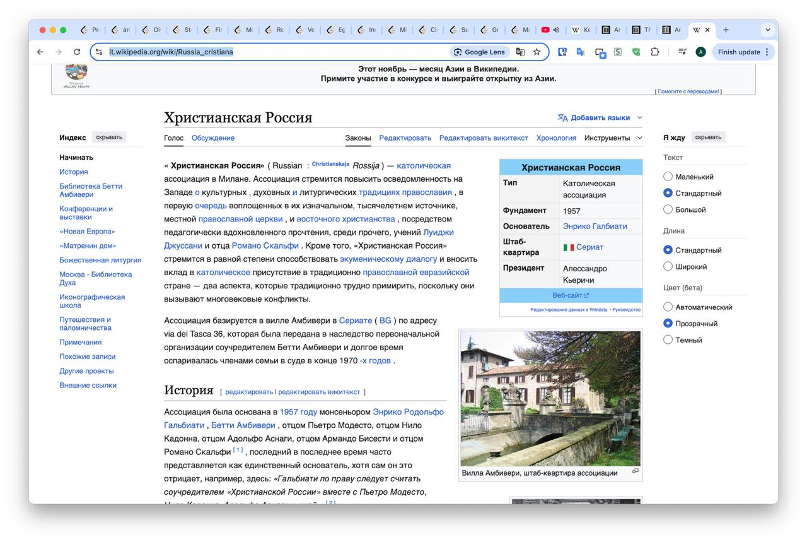
Post 5411
2025-11-25 01:47:09+00:00
Post 5409
2025-11-24 21:37:41+00:00
“Адамс, Джефферсон, Мэдисон и Гамильтон не верили в принцип «один человек – один голос”
Excerpt From
Самоубийство сверхдержавы
Патрик Джозеф Бьюкенен
This material may be protected by copyright.
Post 5408
2025-11-24 19:56:58+00:00
“В новом мире «много позже холодной войны», где возродился национализм и где на подъеме этнонационализм, Америка должна выйти за пределы глобалистской идеологии и снова, как следовало сделать два десятилетия назад, обратить внимание на себя и своих граждан.”
Excerpt From
Самоубийство сверхдержавы
Патрик Джозеф Бьюкенен
This material may be protected by copyright.
Post 5407
2025-11-24 19:56:49+00:00
“Как писал Редьярд Киплинг:
«Мы любим землю, но сердцаУ нас не беспредельны,И каждому рукой ТворцаДан уголок отдельный…»{1076}”
Excerpt From
Самоубийство сверхдержавы
Патрик Джозеф Бьюкенен
This material may be protected by copyright.
Post 5406
2025-11-24 19:55:49+00:00
“Нельзя быть гражданином международного космополитического мирового порядка. Идентичность специфична, она связана с почвой, обычаями и религиозными традициями», – пишет Джуд Догерти, бывший декан философского факультета Католического университета в своей статье «Национальная идентичность»{1074}.”
Excerpt From
Самоубийство сверхдержавы
Патрик Джозеф Бьюкенен
This material may be protected by copyright.
Post 5405
2025-11-24 19:55:24+00:00
“Нации повсюду ставят свои интересы на первое место, некоторые из нас предсказывали это много лет назад. Фатальный порок глобализации в том, что она не захватывает сердца. Она никогда не покорит народы, для которых любовь к родине и верность родной стране – не пустые слова. Никогда. Никто не будет сражаться и умирать ради маловразумительной идеи нового мирового порядка.”
Excerpt From
Самоубийство сверхдержавы
Патрик Джозеф Бьюкенен
This material may be protected by copyright.
Post 5403
2025-11-24 19:52:16+00:00
“К 2011 году увлечение глобализмом миновало. Однополярный мир 1991 года, новый мировой порядок Джорджа Буша-старшего, плоский мир Тома Фридмана и «конец истории» Фрэнсиса Фукуямы – все эти концепции провалились. Почему? Из-за возрождения национализма. Принимая различные формы в разных странах, новый национализм имеет общий признак – сопротивление глобализму в целом и глобальной гегемонии Соединенных Штатов Америки в частности.”
Excerpt From
Самоубийство сверхдержавы
Патрик Джозеф Бьюкенен
This material may be protected by copyright.
Post 5402
2025-11-24 19:47:51+00:00
“Президент Чехии Вацлав Клаус открыто назвал Евросоюз «тюрьмой народов». Когда Лиссабонский договор ратифицировали, Клаус заявил, что «Чехия перестанет быть суверенным государством»{1068}.”
Excerpt From
Самоубийство сверхдержавы
Патрик Джозеф Бьюкенен
This material may be protected by copyright.
Post 5401
2025-11-24 19:46:00+00:00
“Американский истеблишмент ратовал за НАФТА, ГАТТ и ВТО, но американский народ был против. Французы и голландцы проголосовали против европейской конституции, которая предусматривала постепенное превращение континента в сверхдержаву.”
Excerpt From
Самоубийство сверхдержавы
Патрик Джозеф Бьюкенен
This material may be protected by copyright.
Post 5400
2025-11-24 19:43:14+00:00
“Глобализация была модным словом, трендом, дорогой в будущее. Всемирная торговая организация возникла в 1994 году, ее задача заключалась в регулировании мировой торговли.”
Excerpt From
Самоубийство сверхдержавы
Патрик Джозеф Бьюкенен
This material may be protected by copyright.
Post 5399
2025-11-24 14:36:28+00:00
“В своих мемуарах «Вокруг скалистого холма» (1994) легендарный американский дипломат и стратег холодной войны Джордж Кеннан размышлял о том, как наша нация решает, что для нее важно: «Правительство США, отправляя полмиллиона вооруженных американцев на Ближний Восток, чтобы изгнать армию Ирака из Кувейта, расписывается в собственном бессилии, раз не может защитить юго-западную границу страны от нелегальных иммигрантов»{1060}.”
Excerpt From
Самоубийство сверхдержавы
Патрик Джозеф Бьюкенен
This material may be protected by copyright.
Post 5398
2025-11-23 23:31:14+00:00
https://en.wikipedia.org/wiki/A_History_of_Philosophy_(Copleston)
Post 5397
2025-11-23 19:59:20+00:00
“С 1941 по 1989 год Америка представала защитником свободы, жертвуя своими людьми, и этой ролью мы вправе гордиться. Однако, победив в эпохальной схватке, мы внезапно очутились в мире, к возникновению которого не были готовы. Подобно стареющим спортсменам, мы упорно вспоминаем славные деньки, когда все вокруг нами восхищались. Выступать защитником свободы вошло у нас в привычку, стало элементом национальной идентичности. Мы не можем отказаться от этого, потому что не знаем, что иначе делать. Наши соперники смотрят в завтра, а мы живем вчерашним днем.”
Excerpt From
Самоубийство сверхдержавы
Патрик Джозеф Бьюкенен
This material may be protected by copyright.
Post 5396
2025-11-23 19:48:11+00:00
“Ответ прост: наши солдаты находятся там для того, чтобы первыми погибнуть с началом боевых действий. Тем самым ставшие жертвой агрессора Соединенные Штаты Америки получат повод высадить на полуострове минимум треть миллиона человек (ровно столько воевало здесь в 1950-х годах). Присутствие американских солдат в демилитаризованной зоне лишает США свободы принятия решений; хотим ли мы участвовать во второй войне на полуострове – не важно, решать будет северокорейский диктатор. Наши войска в Корее – заложники.”
Excerpt From
Самоубийство сверхдержавы
Патрик Джозеф Бьюкенен
This material may be protected by copyright.
Post 5395
2025-11-23 19:46:11+00:00
“Почему Южная Корея не может сама защищать себя?”
Excerpt From
Самоубийство сверхдержавы
Патрик Джозеф Бьюкенен
This material may be protected by copyright.
Post 5394
2025-11-23 19:27:07+00:00
“Тем не менее, на протяжении десятилетий Китай отказывает населению в возможности иметь двух детей в семье и лишает его права самостоятельно выбирать лидеров. Режим преследует тибетцев, уйгуров и христиан. Марксистская идеология осталась в истории, ее сменил этнический шовинизм, напоминающий тот, какой был характерен для Центральной Европы в 1930-х годах. При этом 86 процентов китайцев довольны направлением развития своей страны.”
Excerpt From
Самоубийство сверхдержавы
Патрик Джозеф Бьюкенен
This material may be protected by copyright.
Post 5393
2025-11-23 19:24:01+00:00
“Терроризм – плата за империю.
Террор против Запада устраивают страны, где Запад воспринимается как повелитель. Когда англичане оставили Палестину, нападения банды Штерна[263] прекратились. Когда французы ушли из Алжира, в Париже перестали греметь взрывы. Когда русские отступили из Афганистана, моджахеды за ними не последовали.”
Excerpt From
Самоубийство сверхдержавы
Патрик Джозеф Бьюкенен
This material may be protected by copyright.
Post 5392
2025-11-23 19:23:29+00:00
“Мы не в состоянии понять, что движет теми, кто нападает на нас. Они нападают не потому, что ненавидят нашу конституцию или хотят, к примеру, ввести законы шариата в штате Оклахома. Они здесь, потому что мы – там. Они убивают нас в нашей собственной стране потому, что мы не желаем оставлять в покое их страны. Терроризм – оружие слабых, которые мечтают избавиться от иностранного господства.”
Excerpt From
Самоубийство сверхдержавы
Патрик Джозеф Бьюкенен
This material may be protected by copyright.
Post 5391
2025-11-23 19:22:42+00:00
“После восьми лет войны в Ираке и десяти в Афганистане мы возвращаемся домой: Ирак идет своим путем, а Афганистан поглядывает в сторону талибов.
Почему мы не добились успеха? Во-первых, потому, что мы – неопытные империалисты, которым не хватает терпения и настойчивости англичан. Во-вторых, потому, что эпоха империализма завершилась. Все народы сегодня требуют самоопределения, суверенитета и свободы от иностранного господства. В-третьих, потому, что абсолютно утопично полагать, будто возможно «пересадить» систему западных светских ценностей на почву, на протяжении десяти веков возделывавшуюся исламом. Война «за ценности» только сделала нас врагами, даже там, где вражды изначально не было.”
Excerpt From
Самоубийство сверхдержавы
Патрик Джозеф Бьюкенен
This material may be protected by copyright.
Post 5390
2025-11-23 19:21:38+00:00
“На Ближнем Востоке демократизация означает исламизацию, примером чему последние турецкие выборы, когда массы проголосовали за смертельный удар светскому государству Ататюрка[261]. ”
Excerpt From
Самоубийство сверхдержавы
Патрик Джозеф Бьюкенен
This material may be protected by copyright.
Post 5389
2025-11-23 19:20:38+00:00
“Неудобная правда заключается в том, – говорит Юджин Роган, историк арабского мира, – что в любой арабской стране на любых свободных выборах победит, вероятнее всего, партия, наиболее враждебная США»{1056}.”
Excerpt From
Самоубийство сверхдержавы
Патрик Джозеф Бьюкенен
This material may be protected by copyright.
Post 5388
2025-11-23 19:20:05+00:00
“Как говорили о римлянах – Ubi solitudinem faciunt pacem apellant, – «создав пустыню, они говорят, что принесли мир»[260].”
Excerpt From
Самоубийство сверхдержавы
Патрик Джозеф Бьюкенен
This material may be protected by copyright.
Post 5387
2025-11-23 19:18:56+00:00
“С 1991 года Соединенные Штаты вели войну в Персидском заливе, чтобы освободить Кувейт, вторглись в Ирак и Афганистан и оккупировали их, используют специальные силы и беспилотники против врагов в Сомали, Йемене и Пакистане, ввели суровые санкции в отношении Ирана, поддерживают Израиль в его войнах в Ливане и секторе Газа и заставили НАТО участвовать в операции в Ливии.
Мы сражаемся с ними там, как говорится, чтобы не пришлось сражаться здесь.”
Excerpt From
Самоубийство сверхдержавы
Патрик Джозеф Бьюкенен
This material may be protected by copyright.
Post 5386
2025-11-23 19:17:18+00:00
“По всей Европе правительства с большими бюджетами, низкими налоговыми поступлениями и стареющим населением сталкиваются с дефицитом, и худшее еще впереди», – сообщает «Нью-Йорк таймс».”
Excerpt From
Самоубийство сверхдержавы
Патрик Джозеф Бьюкенен
This material may be protected by copyright.
Post 5385
2025-11-23 19:16:04+00:00
“С включением прибалтийских республик в состав альянса НАТО обязалось приравнять нападение на Эстонию к нападению, скажем, на Великобританию. Кто-нибудь верит, что Германия, Франция или Италия объявит войну России из-за Эстонии?”
Excerpt From
Самоубийство сверхдержавы
Патрик Джозеф Бьюкенен
This material may be protected by copyright.
Post 5384
2025-11-23 19:15:16+00:00
“Последнего Америка не пожелала допустить. Слишком много интересов затронуло бы такое решение. В итоге, притворившись, будто забыли о договоренностях с Горбачевым, мы вовлекли страны Варшавского договора и три бывшие советские республики в НАТО. Русским это не понравилось, разумеется, и, по совести, можно ли их винить в чрезмерной чувствительности?”
Excerpt From
Самоубийство сверхдержавы
Патрик Джозеф Бьюкенен
This material may be protected by copyright.
Post 5383
2025-11-23 19:14:47+00:00
“Писатель Джон Апдайк вторил Арбатову: «Без холодной войны какой смысл быть американцем?»{1050} Сенатор Ричард Лугар констатировал очевидное. «Железный занавес» поднялся, Берлинская стена пала, Европа свободна от Лиссабона до Латвии, а значит, НАТО «пора перебираться в иные места или выйти из бизнеса»{1051}.”
Excerpt From
Самоубийство сверхдержавы
Патрик Джозеф Бьюкенен
This material may be protected by copyright.
Post 5382
2025-11-23 19:14:02+00:00
“Мы собираемся сделать худшее из того, на что способны, – сказал Георгий Арбатов из московского Института США и Канады. – Мы лишим вас врага»{1049}.”
Excerpt From
Самоубийство сверхдержавы
Патрик Джозеф Бьюкенен
This material may be protected by copyright.
Post 5381
2025-11-23 19:13:37+00:00
“Однако наша политическая элита не захотела снимать пьесу из репертуара после сорокалетнего «прогона», с Америкой в главной роли защитника Запада против могущественного и злобного «русского медведя».”
Excerpt From
Самоубийство сверхдержавы
Патрик Джозеф Бьюкенен
This material may be protected by copyright.
Post 5380
2025-11-23 19:12:15+00:00
“С этим мы ничего не можем поделать, а реакция России на подобное «этнонациональное расчленение» вряд ли будет мирной. Но это не наше дело, и давайте просто отойдем в сторону – прямо сейчас.”
Excerpt From
Самоубийство сверхдержавы
Патрик Джозеф Бьюкенен
This material may be protected by copyright.
Post 5379
2025-11-23 19:11:45+00:00
“Это вовсе не безразличие к судьбе прибалтийских республик. Это просто констатация факта: ради них мы не готовы развязывать войну. То же самое касается Украины и Грузии. Обе страны были частью Российской империи Романовых. Как показала августовская война 2008 года, когда мы просто наблюдали, как Россия наказывает Грузию за убийство своих миротворцев и вторжение в Южную Осетию, Америка не собирается воевать с этой страной ради клочка земли на Кавказе.”
Excerpt From
Самоубийство сверхдержавы
Патрик Джозеф Бьюкенен
This material may be protected by copyright.
Post 5378
2025-11-23 19:11:11+00:00
“Поскольку мы имеем экономические, но не стратегические, интересы в «ближнем зарубежье» России, Соединенные Штаты должны объяснить Москве, что, покинув Афганистан, мы закроем все американские военные базы в приграничных государствах Центральной Азии и ограничим поставки оружия Грузии, Украине и прибалтийским республикам оборонительными вооружениями. В ответ мы ожидаем взаимности, то есть аналогичного обязательства относительно продажи оружия странам Карибского бассейна и Центральной Америки. Если мы хотим дружить с Россией, давайте хотя бы перестанем плевать России в лицо.”
Excerpt From
Самоубийство сверхдержавы
Патрик Джозеф Бьюкенен
This material may be protected by copyright.
Post 5377
2025-11-23 19:10:36+00:00
“Антиамериканизм свирепствует в России и не собирается ослабевать. Но Соединенные Штаты могут слегка исправить положение, прекратив обманывать себя и других насчет наших обязательств и интересов в Прибалтике, на Кавказе, в Центральной Азии и в самой России. Мы не собираемся воевать с Россией из-за Южной Осетии, Абхазии и Грузии. Мы не собираемся воевать за прибалтийские республики. Сближение России и Украины не несет никаких угроз нашим жизненно важным интересам. Эти страны имеют исторические, культурные и этнические связи, которые сложились задолго до появления США, и обе они вынуждены выживать в мире, где их коренное население сокращается, а население Азии и мусульманских соседей растет. Сближение Украины с Россией представляется естественным и никоим образом не угрожает нам.”
Excerpt From
Самоубийство сверхдержавы
Патрик Джозеф Бьюкенен
This material may be protected by copyright.
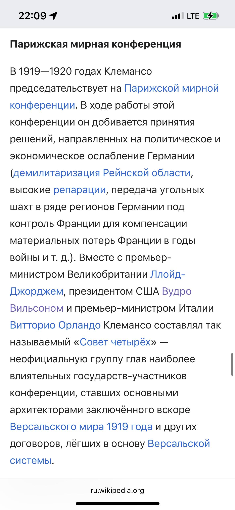
Post 5376
2025-11-23 19:09:44+00:00
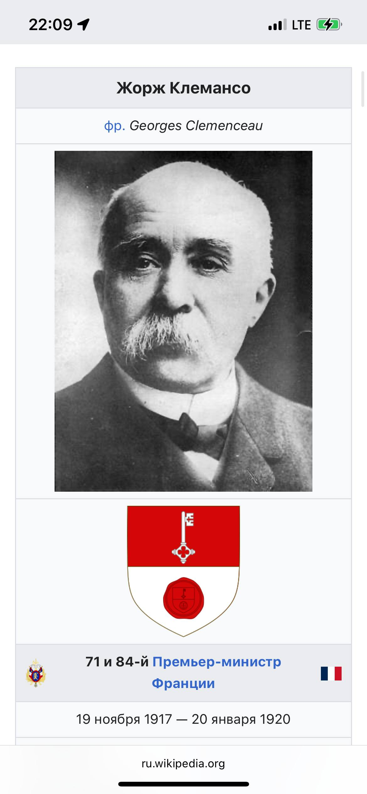
Post 5375
2025-11-23 19:09:44+00:00
Post 5374
2025-11-23 19:09:14+00:00
“Почему? Русские поступили так, как мы хотели, отпустили плененные народы, отказались от коммунизма, распустили империю, позволили четырнадцати этническим меньшинствам создать свои государства, а мы отнеслись ко всему, как Клемансо к Веймарской республике. После этого мы удивляемся, почему русские на нас обижены?”
Excerpt From
Самоубийство сверхдержавы
Патрик Джозеф Бьюкенен
This material may be protected by copyright.
Post 5373
2025-11-23 19:07:23+00:00
“когда Литва, Латвия и Эстония успели стать жизненно важными поводами для конфликта с Россией в рамках соглашений по линии НАТО?
Все дело в нашем высокомерии. Мы обязались защищать девять новых союзников, которые никак не способствуют укреплению безопасности США, зато враждебны крупной нации, желавшей нашей дружбы. Мы пополнили свои стратегические обязательства, но остались с тем же набором стратегических активов. Мы отдалились от сверхдержавы ради права именовать союзником Латвию.”
Excerpt From
Самоубийство сверхдержавы
Патрик Джозеф Бьюкенен
This material may be protected by copyright.
Post 5372
2025-11-23 18:15:54+00:00
“Рейган не упустил бы возможность сделать Россию нашим стратегическим партнером и союзником. Ведь здесь живет великий народ, по-прежнему вдвое превосходящий численностью население Соединенных Штатов, народ, с которым мы больше не в ссоре и который протягивал нам руку дружбы. Вместо этого, цинично воспользовавшись ситуацией, мы сыграли на временной слабости России, чтобы сплотить шесть бывших сателлитов и три бывшие республики СССР – всем им Москва добровольно дала вольную – в союзе против Москвы.”
Excerpt From
Самоубийство сверхдержавы
Патрик Джозеф Бьюкенен
This material may be protected by copyright.
Post 5371
2025-11-23 18:12:40+00:00
“К ликвидации империи следовало приступить сразу по окончании холодной войны. Теперь нас к этому вынуждают бюджетный дефицит и долговой кризис, порожденные в том числе расходами на поддержание империи. Мы не можем продолжать прежнюю политику, поскольку дорога упирается в обрыв.”
Excerpt From
Самоубийство сверхдержавы
Патрик Джозеф Бьюкенен
This material may be protected by copyright.
Post 5370
2025-11-23 18:11:21+00:00
“Абсурдно утверждать, что 1000 военных баз за рубежом имеют жизненно важное значение для безопасности США. На самом деле наше чрезмерное военное присутствие за рубежом, поддержка деспотических режимов и наши бесконечные вмешательства и войны сделали Америку, прежде уважаемую страну, государством, которое вызывает негодование и возмущение.”
Excerpt From
Самоубийство сверхдержавы
Патрик Джозеф Бьюкенен
This material may be protected by copyright.
Post 5369
2025-11-23 18:08:41+00:00
“Каждый год правительство США набирает долги на десятки миллиардов долларов для финансирования иностранной помощи. Зачем? Опрос Си-эн-эн в январе 2011 года показал, что 81 процент американцев хотят отказаться от помощи другим государствам{1045}.”
Excerpt From
Самоубийство сверхдержавы
Патрик Джозеф Бьюкенен
This material may be protected by copyright.
Post 5368
2025-11-23 18:08:03+00:00
“Китайцы располагают валютными резервами в размере 3 триллионов долларов, а мы кредитуемся в Европе, чтобы Европу же защищать. Мы берем в долг у стран Персидского залива, чтобы защищать эти страны. Мы одалживаем у Японии, чтобы защищать Японию. Разве это не признак старости – заимствовать у мира, чтобы быть в состоянии его защитить?”
Excerpt From
Самоубийство сверхдержавы
Патрик Джозеф Бьюкенен
This material may be protected by copyright.
Post 5367
2025-11-23 18:06:06+00:00
“У нас более чем достаточно могущества, чтобы гарантировать безопасность республики, но мы больше не в силах поддерживать империю. Pax Americana подходит к концу. Вопрос только в том, произойдет ли ликвидация империи добровольно и рационально или ее спровоцирует некое стратегическое фиаско, наподобие Сайгона в 1975 году или финансово-экономического коллапса, как в 1929 году. Так или иначе, былая Западная империя умирает.”
Excerpt From
Самоубийство сверхдержавы
Патрик Джозеф Бьюкенен
This material may be protected by copyright.
Post 5366
2025-11-23 18:05:20+00:00
“Если бы обязанности военных США ограничивались защитой нашей страны, нашего полушария и морей вокруг, мы располагали бы избытком могущества, о котором писал Липпман. В чем же проблема?
Проблема в обязательствах, которые мы на себя взяли.
Пусть мы тратим на оборону больше десяти сильнейших в военном отношении стран, вместе взятых, мы больше не можем защищать каждого союзника, которому в минувшие шесть десятилетий гарантировали помощь. Две сравнительно небольшие, по меркам двадцатого столетия, войны в Афганистане и Ираке растянули возможности нашей армии и морской пехоты до предела.”
Excerpt From
Самоубийство сверхдержавы
Патрик Джозеф Бьюкенен
This material may be protected by copyright.
Post 5365
2025-11-23 18:03:28+00:00
“Что касается активов, Соединенные Штаты по-прежнему обладают тысячами единиц ядерного оружия и способны доставить это оружие в любое место планеты; арсенала более чем достаточно для сдерживания России и Китая, которые единственные в состоянии нанести нам смертельные раны. Но никакая ссора между нами и любой из этих держав не оправдает ядерную конфронтацию.”
Excerpt From
Самоубийство сверхдержавы
Патрик Джозеф Бьюкенен
This material may be protected by copyright.
Post 5364
2025-11-23 18:02:56+00:00
“Смею утверждать, что внешняя политика США снова стала нежизнеспособной. Обязательства, принятые нами за последние шесть десятилетий, не покрываются существующей военной силой. Если несколько этих «долговых расписок» потребуют оплатить здесь и сейчас, американское стратегическое банкротство станет очевидным для всего мира.”
Excerpt From
Самоубийство сверхдержавы
Патрик Джозеф Бьюкенен
This material may be protected by copyright.
Post 5363
2025-11-23 18:00:30+00:00
“В книге «Внешняя политика США: щит республики», опубликованной в 1943 году, знаменитый журналист Уолтер Липпман оценил разобщенность нации накануне войны и нашу неподготовленность к Перл-Харбору. Мы, американцы, писал он, «благополучно забыли основной и, когда он осознается, очевидный общий принцип истинной внешней политики»:
«Внешняя политика заключается в обеспечении баланса, при достаточном избытке могущества в резерве, обязательств страны и ее силы. Постоянной заботой истинного государственного деятеля является достижение и поддержание этого баланса»{1042}.”
Excerpt From
Самоубийство сверхдержавы
Патрик Джозеф Бьюкенен
This material may be protected by copyright.
Post 5362
2025-11-23 17:58:35+00:00
ТЕОРИЯ НАЦИОНАЛЬНЫХ ИНТЕРЕСОВ
Post 5361
2025-11-23 17:58:16+00:00
“В-седьмых, слепота наших лидеров, неспособных понять, что взаимозависимый мир, ради которого мы стольким пожертвовали, мир старых и новых демократий, объединенных торговлей, на самом деле есть мираж. Нации в первую очередь преследуют национальные интересы.”
Excerpt From
Самоубийство сверхдержавы
Патрик Джозеф Бьюкенен
This material may be protected by copyright.
Post 5360
2025-11-23 17:57:02+00:00
“Во-вторых, наша имперская спесь заставляет другие народы объединяться, чтобы противостоять нашей гегемонии, и мы сознательно портим, например, отношения с Россией, которая была готова сотрудничать. Люди, к которым относятся как к неблагонадежным друзьям и потенциальным врагам, часто в итоге становятся таковыми.”
Excerpt From
Самоубийство сверхдержавы
Патрик Джозеф Бьюкенен
This material may be protected by copyright.
Post 5359
2025-11-23 17:52:08+00:00
“В 2009 году Исследовательский центр Пью сообщил, что 49 процентов американцев считают: нация должна «заниматься своими делами, пусть другие страны решают собственные проблемы самостоятельно»{1041}.”
Excerpt From
Самоубийство сверхдержавы
Патрик Джозеф Бьюкенен
This material may be protected by copyright.
Post 5358
2025-11-23 17:51:25+00:00
“Восточный марш» НАТО остановился, когда захлопнулась дверь для Украины и Грузии. Америка не собирается воевать с Россией из-за притязаний Тбилиси на Южную Осетию или из-за суверенитета Крыма.”
Excerpt From
Самоубийство сверхдержавы
Патрик Джозеф Бьюкенен
This material may be protected by copyright.
Post 5357
2025-11-23 16:54:38+00:00
“Джордж У. Буш вторгся в Афганистан, назвал Иран, Ирак и Северную Корею «осью зла», предупредил мир, что мы будем обеспечивать военное превосходство в каждом важном для нас регионе земного шара, изложил «доктрину Буша» о превентивной войне и использовал ее как обоснование для вторжения и оккупации Ирака, который нам не угрожал и на нас не нападал, а еще призвал к глобальному крестовому походу за демократию, олицетворением которого стало свержение законных правительств и установление проамериканских режимов в Сербии, Грузии, Киргизии, Ливане и на Украине, по «иранской» модели Кермита Рузвельта и ЦРУ[257] 1953 года.”
Excerpt From
Самоубийство сверхдержавы
Патрик Джозеф Бьюкенен
This material may be protected by copyright.
Post 5356
2025-11-23 16:53:46+00:00
“За десятилетия после ухода Рейгана и до ухода Буша-младшего высокомерие сделалось отличительной чертой американской внешней политики.”
Excerpt From
Самоубийство сверхдержавы
Патрик Джозеф Бьюкенен
This material may be protected by copyright.
Post 5355
2025-11-23 16:53:10+00:00
“Начав свое президентство с обвинений в адрес «империи зла», он закончил срок улыбкой русским людям, гуляя по Красной площади с Михаилом Горбачевым.”
Excerpt From
Самоубийство сверхдержавы
Патрик Джозеф Бьюкенен
This material may be protected by copyright.
Post 5354
2025-11-23 16:51:25+00:00
“Рейган, еще один консерватор старой школы, тоже не искал войны. Веруя, как и Эйзенхауэр, в «мир с помощью силы», он приступил к стабильному наращиванию стратегических и обычных сил, отреагировал на развертывание Москвой ракет СС-20 в Восточной Европе размещением ракет «Першинг» и крылатых ракет в Западной Европе”
Excerpt From
Самоубийство сверхдержавы
Патрик Джозеф Бьюкенен
This material may be protected by copyright.
Post 5353
2025-11-23 16:50:38+00:00
Эйзенхауэр
“Завершив войну, «унаследованную» от предшественника, он не стал затевать новых и ушел в отставку с пророческим предупреждением насчет урона, который способен нанести республике «военно-промышленный комплекс», заинтересованный в долгосрочной холодной войне.”
Excerpt From
Самоубийство сверхдержавы
Патрик Джозеф Бьюкенен
This material may be protected by copyright.
Post 5352
2025-11-23 16:44:37+00:00
“Вняв этому призыву после событий 9/11, Джордж У. Буш начал свою «глобальную демократическую революцию» и, в памятной фразе из второй инаугурационной речи, обозначил «итоговую» цель Америки как «ликвидацию тирании в нашем мире».
Но сегодня певчие птицы империи умолкли.”
Excerpt From
Самоубийство сверхдержавы
Патрик Джозеф Бьюкенен
This material may be protected by copyright.
Post 5351
2025-11-23 16:43:59+00:00
“Томас Фридман стал трубадуром глобализации, которая «при ближайшем рассмотрении», по словам Эндрю Басевича, «оказалась эвфемизмом американизации».
«Конечная цель, – писал Фридман в 1999 году, – состоит в распространении капитализма и свободного рынка во всех странах мира; этот процесс «создаст веб-сайт для каждой лавки, поставит пепси на каждый прилавок и поместит «Майкрософт виндоуз» в каждый компьютер». Тем не менее, ничего из перечисленного не произойдет без твердой поддержки со стороны властей. «Незримая рука рынка никогда не справится без невидимого кулака, – утверждал Фридман. – Таким кулаком, который делает мир безопасным для технологий Силиконовой долины, являются армия Соединенных Штатов, их ВВС, ВМС и Корпус морской пехоты»»{1039}.”
Excerpt From
Самоубийство сверхдержавы
Патрик Джозеф Бьюкенен
This material may be protected by copyright.
Post 5350
2025-11-23 16:40:27+00:00
“Мадлен Олбрайт возвещала человечеству о том, почему Америка имеет право бомбить маленькую Сербию, которая никогда на нас не нападала: «Если приходится использовать силу, то только потому, что мы – Америка. Мы – незаменимая нация. Мы глядим далеко… и способны видеть будущее»{1038}.”
Excerpt From
Самоубийство сверхдержавы
Патрик Джозеф Бьюкенен
This material may be protected by copyright.
Post 5349
2025-11-23 16:24:47+00:00
Воздух благоухает высокомерием.
Post 5348
2025-11-23 16:19:29+00:00
“Идея Запада умирает на протяжении длительного времени на обоих берегах Атлантики{1034}.
Энн Эпплбаум, «Вашингтон пост» (2009)”
Excerpt From
Самоубийство сверхдержавы
Патрик Джозеф Бьюкенен
This material may be protected by copyright.
Post 5347
2025-11-23 16:19:16+00:00
“Кто защищает все, тот не защищает ничего{1032}.
Фридрих Великий”
Excerpt From
Самоубийство сверхдержавы
Патрик Джозеф Бьюкенен
This material may be protected by copyright.
Post 5346
2025-11-23 16:18:28+00:00
“Левая повестка дня – дехристианизация Америки, мультикультурализм, расовые предпочтения и неограниченная иммиграция – навязана сверху и вопреки воле народа, который пока не осознал свою силу, но который уже готов объединяться и бороться.”
Excerpt From
Самоубийство сверхдержавы
Патрик Джозеф Бьюкенен
This material may be protected by copyright.
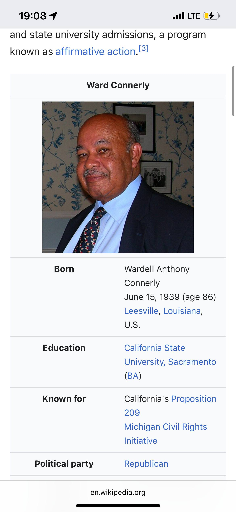
Post 5345
2025-11-23 16:09:07+00:00
Post 5344
2025-11-23 16:08:43+00:00
https://en.wikipedia.org/wiki/Ward_Connerly?utm_source=chatgpt.com
Post 5343
2025-11-23 16:02:13+00:00
“В наших сердцах до сих пор сохраняется желание быть единой нацией под Богом, единым народом с общей историей, наследием и языком, народом, который справедливо уверен, что в Америке мужчин и женщин судят «не по цвету их кожи, а по характеру». Американцы до сих пор считают, что все равны в правах – не по месту нашего рождения, но потому, что мы – американцы.”
Excerpt From
Самоубийство сверхдержавы
Патрик Джозеф Бьюкенен
This material may be protected by copyright.
Post 5342
2025-11-23 14:39:44+00:00
“Будучи партией правительства, демократы стремятся расширять это правительство и перераспределять богатства из частного сектора в государственный, от тех, кто имеет, тем, кто не имеет. Ведь чем больше пирог, тем больше кусок каждого.”
Excerpt From
Самоубийство сверхдержавы
Патрик Джозеф Бьюкенен
This material may be protected by copyright.
Post 5340
2025-11-22 16:48:38+00:00
СЕНАТОРЫ и известные федеральные политики
Майк Ли (Mike Lee)
Сенатор от Юты (избран в 2010)
Один из самых идеологических фигур движения
Победил умеренного республиканца Беннетта благодаря поддержке Tea Party.
Пэт Туми (Pat Toomey)
Сенатор от Пенсильвании
Выступал за жёсткую бюджетную дисциплину
Поддерживался Tea Party Express и другими организациями.
Рон Джонсон (Ron Johnson)
Сенатор от Висконсина
Победил действующего демократа в 2010 году
Кампания строилась на критике госрасходов.
Келли Айотт (Kelly Ayotte)
Сенатор от Нью-Гэмпшира
Поддерживалась Tea Party, хотя позже стала более умеренной.
🏛 ПАЛАТА ПРЕДСТАВИТЕЛЕЙ — расширенный список
Фигуры, избранные в “волне 2010” или близкие движению
Том Грейвс (Tom Graves) — Джорджия
Один из наиболее идеологических сторонников “малого государства”.
Стив Скалис (Steve Scalise) — Луизиана
Позже стал лидером республиканцев в Палате. В начале 2010-х активно сотрудничал с Tea Party Caucus.
Тодд Акин (Todd Akin) — Миссури
Консерватор-фискалист; известность получил позже, но в начале 2010-х был фигурой Tea Party.
Джо Уолш (Joe Walsh) — Иллинойс
Один из самых громких голосов Tea Party в Палате.
Джефф Дункан (Jeff Duncan) — Южная Каролина
Считался частью “новых консерваторов”, связанных с Tea Party.
Рэй Биллингзли (Raúl Labrador) — Айдахо
Идеологически близок Tea Party; позже стал одним из основателей Freedom Caucus.
Мэтт Салмон (Matt Salmon) — Аризона
Вернулся в Конгресс во время подъёма Tea Party.
🌐 Организационно связанные (не конгрессмены)
Эти люди были медийными лицами, организаторами акций или вдохновителями движения:
Гленн Бек (Glenn Beck)
Телеведущий, один из главных пропагандистских голосов Tea Party.
Джудсон Филлипс (Judson Phillips)
Основатель Tea Party Nation.
Мэтт Кибби (Matt Kibbe)
Лидер FreedomWorks — ключевой организации, поддерживавшей Tea Party-кандидатов.
Марк Мидоуз (Mark Meadows)
Позже стал главой аппарата Белого дома при Трампе. В начале был ярким Tea Party-конгрессменом и одним из основателей Freedom Caucus.
Post 5339
2025-11-22 16:47:34+00:00
3. Сара Пэйлин (Sarah Palin)
Экс-губернатор Аляски
Кандидат в вице-президенты в 2008 году
Не была в Конгрессе, но стала медийным лицом Tea Party
Поддерживала и продвигала многих кандидатов (в том числе Рубио)
4. Мишель Бахман (Michele Bachmann)
Конгрессвумен от Миннесоты
Основала “Tea Party Caucus” в Палате представителей
На короткое время стала одним из главных публичных голосов движения
5. Джим Деминт (Jim DeMint)
Сенатор от Южной Каролины
Считался “куратором” Tea Party в Сенате
Помогал финансировать и поддерживать многих кандидатов на выборах 2010 года
🏛 Из Палаты представителей (2010 «Tea Party wave»)
6. Пол Райан (Paul Ryan)
Хотя не был формально Tea Party, стал героем консерваторов благодаря “плану сокращения бюджета”.
7. Джейсон Чаффетц (Jason Chaffetz)
Конгрессмен из Юты, выступавший за бюджетный консерватизм.
8. Алан Вэст (Allen West)
Конгрессмен от Флориды, яркий, медийный политик Tea Party (избран в ту же волну, что Рубио).
9. Тим Скотт (Tim Scott)
Тогда конгрессмен от Южной Каролины, позже сенатор
Один из самых успешных политиков, вышедших из Tea Party
Post 5338
2025-11-22 16:41:48+00:00
“Цитируя Стива Сэйлера, это партия четырех рас – чернокожей, белой, азиатской и латиноамериканской, – во главе с афроамериканцем, столь же уязвимая перед расколом по этническим и идеологическим вопросам, сколь уязвима была коалиция «Нового курса», разгромленная Ричардом Никсоном.”
Excerpt From
Самоубийство сверхдержавы
Патрик Джозеф Бьюкенен
This material may be protected by copyright.
Post 5337
2025-11-22 16:41:00+00:00
“Демократическую партию некогда назвали сборищем враждующих племен, которые сошлись вместе в ожидании большого грабежа.”
Excerpt From
Самоубийство сверхдержавы
Патрик Джозеф Бьюкенен
This material may be protected by copyright.
Post 5336
2025-11-22 16:34:47+00:00
“Социально-нравственный консерватизм остается весьма привлекательным для американского народа – но, к сожалению, не для Республиканской партии. Почему республиканцы игнорируют множество вопросов, которые гораздо популярнее их партийной программы?”
Excerpt From
Самоубийство сверхдержавы
Патрик Джозеф Бьюкенен
This material may be protected by copyright.
Post 5335
2025-11-22 16:32:43+00:00
“В соотношении 2 к 1 люди убеждены, что либералы чрезмерно усердны в дехристианизации Америки{1014}. Разве это не тот фундамент, на котором можно строить дом? Разве это не повод вбить клин между либералами и теми чернокожими, для кого религиозные убеждения важнее принадлежности к этнической группе?”
Excerpt From
Самоубийство сверхдержавы
Патрик Джозеф Бьюкенен
This material may be protected by copyright.
Post 5334
2025-11-22 16:31:14+00:00
“Традиционная семья – опора здорового общества. Когда рушится она, рушится и общество”
Excerpt From
Самоубийство сверхдержавы
Патрик Джозеф Бьюкенен
This material may be protected by copyright.
Post 5333
2025-11-22 16:21:12+00:00
“Ценности – вот козырная карта республиканцев.”
Excerpt From
Самоубийство сверхдержавы
Патрик Джозеф Бьюкенен
This material may be protected by copyright.
Post 5332
2025-11-22 16:04:49+00:00
Post 5331
2025-11-22 15:56:37+00:00
“Охотиться надо там, где водятся утки, говаривал Барри Голдуотер. Если белые составляют три четверти электората, а христиане – четыре пятых, именно здесь следует стремиться к победе. ”
Excerpt From
Самоубийство сверхдержавы
Патрик Джозеф Бьюкенен
This material may be protected by copyright.
Post 5330
2025-11-22 15:54:44+00:00
“Старая шутка Генри Менкена насчет «Нового курса» стало реальностью в двадцать первом веке. Америка действительно разделилась «на тех, кто работает, чтобы выжить, и тех, кто голосует, чтобы выжить»{999}.”
Excerpt From
Самоубийство сверхдержавы
Патрик Джозеф Бьюкенен
This material may be protected by copyright.
Post 5329
2025-11-22 15:53:22+00:00
“Два столетия назад Джон К. Калхун, изучавший недостатки и ошибки демократий, словно предвидел наше нынешнее состояние:
«Необходимым результатом, следовательно, неравного фискального обременения, налагаемого правительством, окажется разделение общества на два больших класса; один будет состоять из тех, кто действительно платит налоги и… в одиночестве несет тяжкий груз поддержки правительства; другой класс состоит из тех, кто обретает доходы посредством ссуд и кого правительство поддерживает; или, если сказать то же самое короче, общество разделяется на налогоплательщиков и потребителей налогов»{995}.”
Excerpt From
Самоубийство сверхдержавы
Патрик Джозеф Бьюкенен
This material may be protected by copyright.
Post 5328
2025-11-22 15:52:40+00:00
“Исследование Объединенного комитета конгресса по налогам и сборам выявило, что в 2009 году в целом 51 процент всех домашних хозяйств не уплатил федеральный налог. Если население не платит федеральных налогов, но пользуется федеральными льготами, для него прямой резон голосовать за партию власти – и против партии, которая желает сократить сферу деятельности правительства.”
Excerpt From
Самоубийство сверхдержавы
Патрик Джозеф Бьюкенен
This material may be protected by copyright.
Post 5327
2025-11-22 15:51:58+00:00
“Другая причина приближающегося кризиса Республиканской партии – разделение нации на налогоплательщиков и налоговых потребителей. Со времен Рейгана налоговые льготы фактически исключили треть всех наемных работников из числа плательщиков. Когда подводится баланс, 47 процентов американских работников не платят подоходный налог.”
Excerpt From
Самоубийство сверхдержавы
Патрик Джозеф Бьюкенен
This material may be protected by copyright.
Post 5326
2025-11-22 15:48:11+00:00
“Даже после 2010 года Новую Англию представляют всего два республиканских конгрессмена – оба из Нью-Гемпшира.”
Excerpt From
Самоубийство сверхдержавы
Патрик Джозеф Бьюкенен
This material may be protected by copyright.
Post 5325
2025-11-22 15:20:12+00:00
“Среди причин, по которым партия потеряла Калифорнию, назову прежде всего и опять-таки иммиграцию и ее социально-экономический и этнический характер. Почти 90 процентов населения штата – выходцы из «третьего мира», в основном бедняки или рабочий класс. Они полагаются на правительство в сферах здравоохранения, обеспечения жильем, образования и занятости.”
Excerpt From
Самоубийство сверхдержавы
Патрик Джозеф Бьюкенен
This material may be protected by copyright.
Post 5324
2025-11-22 15:19:13+00:00
“Майкл Блад из «Ассошиэйтед пресс» добавляет, что «партия Ричарда Никсона и Рональда Рейгана на западе США медленно умирает»{989}.”
Excerpt From
Самоубийство сверхдержавы
Патрик Джозеф Бьюкенен
This material may be protected by copyright.
Post 5323
2025-11-22 15:14:37+00:00
“Кризис партии характеризуется очень просто: вследствие иммиграции и высокой рождаемости среди цветного населения Америка становится все менее белой и христианской – следовательно, неизбежно менее республиканской.
Демократическая база растет, республиканская база умирает.”
Excerpt From
Самоубийство сверхдержавы
Патрик Джозеф Бьюкенен
This material may be protected by copyright.
Post 5322
2025-11-22 11:32:17+00:00
“What sickens me about left-wing people, especially the intellectuals, is their utter ignorance of the way things actually happen.”
George Orwell
Язык оригинала: английский, переведено с помощью
«Что меня отвращает в людях левых взглядов, особенно среди интеллектуалов, так это их полное незнание того, как на самом деле обстоят дела».
Джордж Оруэлл
Post 5321
2025-11-21 19:34:24+00:00
“Нации – это богатство человечества, это обобщенные личности его; самая малая из них несет свои особые краски, таит в себе особую грань Божьего замысла», – говорил Солженицын{957}.”
Excerpt From
Самоубийство сверхдержавы
Патрик Джозеф Бьюкенен
This material may be protected by copyright.
Post 5320
2025-11-21 19:21:03+00:00
Post 5319
2025-11-21 19:20:53+00:00
“Встревоженный представитель России при НАТО Дмитрий Рогозин думает именно так и призывает белые народы к объединению, иначе они погибнут поодиночке:
«Между Европой и «третьим миром» огромное расстояние. Новая цивилизация возникает в странах «третьего мира», и она думает, что белое, Северное полушарие всегда ее угнетало, следовательно, оно теперь должно перед ним упасть на колени. Это очень серьезно. Если северная цивилизация хочет защитить себя, она должна быть единой: Америка, Европейский союз и Россия. Порознь они будут побеждены, один за другим»{956}.”
Excerpt From
Самоубийство сверхдержавы
Патрик Джозеф Бьюкенен
This material may be protected by copyright.
Post 5318
2025-11-21 19:19:21+00:00
“Зачем западным странам и дальше, через международные институты, расширять возможности мира, который верит, что мы богаты только потому, что они бедны? Чавес – тот тип героя, которого Франц Фанон вывел в своей работе «Проклятьем заклейменный»[231]. Как пишет Чуа, «подобно боливийскому мятежному лидеру Маллку и эквадорскому Вильявисенсио[232], Чавес обретает массовую поддержку, нападая на «гнилую белую элиту» Венесуэлы»{955}. Он – предвестник того, что грядет?”
Excerpt From
Самоубийство сверхдержавы
Патрик Джозеф Бьюкенен
This material may be protected by copyright.
Post 5317
2025-11-21 19:17:59+00:00
“Рассмотрим «закон Чуа» в глобальном масштабе. Доминирующим меньшинством на рынке в течение пятисот лет оставались европейцы, в настоящее время шестая часть мирового населения, которой суждено сократиться до десятой части к 2060 году, когда большинство будут составлять африканцы, арабы, латиноамериканцы и азиаты. Тем не менее, указанные миллиарды людей владеют мизерной долей мирового богатства. Разве не неизбежно непреодолимое желание отнять у меньшинства его «изобилие» и передать его тем, кто не владеет почти ничем?”
Excerpt From
Самоубийство сверхдержавы
Патрик Джозеф Бьюкенен
This material may be protected by copyright.
Post 5316
2025-11-21 19:16:59+00:00
“Свободный рынок обогащает экономически ориентированных победителей, будь то китайцы, индийцы, ибо, тутси или белые, а демократия наделяет властью этническое большинство, проигравших. ”
Excerpt From
Самоубийство сверхдержавы
Патрик Джозеф Бьюкенен
This material may be protected by copyright.
Post 5315
2025-11-21 19:12:36+00:00
“Свободные рынки сосредотачивают богатство в руках «рыночно ориентированного» этнического меньшинства. Демократия наделяет властью этническое большинство. Когда последнее начинает требовать большую долю национального богатства, приходят популисты и демагоги, рвущиеся удовлетворить эти требования. Уго Чавес, Эво Моралес, Ольянта Умала, Даниэль Ортега – все они «пасутся» на теме коренных народов, якобы ограбленных португальцами, испанцами и прочими европейцами, которые прибыли в Америку после Колумба.”
Excerpt From
Самоубийство сверхдержавы
Патрик Джозеф Бьюкенен
This material may be protected by copyright.
Post 5314
2025-11-21 18:53:50+00:00
“Белый цвет решил избавиться от зеленого, – заявил Каддафи. – Этим [мусульманским] странам нужно объединиться против белого цвета, потому что все белые страны враждебны исламу»{919}.”
Excerpt From
Самоубийство сверхдержавы
Патрик Джозеф Бьюкенен
This material may be protected by copyright.
Post 5313
2025-11-21 18:53:22+00:00
“Через два дня после падения режима Хосни Мубарака в Египте ливийский диктатор полковник Муаммар Каддафи внезапно пригрозил миру, дабы направить гнев арабов против Запада и объединить союзников религиозной и расовой общностью. В день рождения Пророка Каддафи обратился с призывом к мусульманским странам держаться воедино и сказал, что мир делится на белую половину (Америка, Европа и Израиль) и на половину зеленую, то есть мусульманскую.”
Excerpt From
Самоубийство сверхдержавы
Патрик Джозеф Бьюкенен
This material may be protected by copyright.
Post 5312
2025-11-20 23:50:18+00:00
Личное оружие - базовое право свободного Человека.
Отсутствие оружия - признак раба.
Post 5311
2025-11-20 19:11:34+00:00
“Тем не менее, контраст между озабоченностью Китая и беззаботностью Америки относительно национальной идентичности видится поразительным. Пекин заселяет пограничные регионы этническими китайцами и душит религиозное и этническое разнообразие, чтобы сохранить Китай единым. Америка заявляет: «Наша сила в разнообразии» и приглашает к себе весь мир. Китай считает этнонационализм угнетаемых меньшинств экзистенциальной угрозой. Американская элита воспринимает рассуждения об этнической принадлежности как одержимость «отребья».”
Excerpt From
Самоубийство сверхдержавы
Патрик Джозеф Бьюкенен
This material may be protected by copyright.
Post 5310
2025-11-20 19:08:45+00:00
“У правительства нет никакой идеологии. У народа нет никакой идеологии. Правительство сохраняет власть только потому, что уверяет: «Мы делаем вашу жизнь лучше каждый день. Мы гарантируем стабильность. И за нами сила». Пока они выполняют это обещание, все в порядке. Но что произойдет, когда они не смогут сдержать свое слово?»{895}”
Excerpt From
Самоубийство сверхдержавы
Патрик Джозеф Бьюкенен
This material may be protected by copyright.
Post 5309
2025-11-20 19:08:08+00:00
“Потребность Пекина в подчеркивании этнической солидарности стала более насущной вследствие фактической смерти маоизма. При великом кормчем Китай провозгласил себя авангардом всемирной коммунистической революции и страной истинных коммунистов. В отличие от Советского Союза Хрущева и Брежнева, который утратил веру в утопию, Китай опирался на идеологическую идентичность. Нынешний Китай уже не обладает идеологией, способной объединить народ. В шестидесятую годовщину революции профессор Пекинского университета Чжан Мин сказал «Нью-Йорк таймс»: «В Китае не осталось идеологии».”
Excerpt From
Самоубийство сверхдержавы
Патрик Джозеф Бьюкенен
This material may be protected by copyright.
Post 5308
2025-11-20 19:05:18+00:00
“Уйгуры – это тюркоязычные мусульмане, желающие создать собственное государство, Восточный Туркестан. Введение в Синьцзян подразделений НОАК выдает опасения Пекина относительно возможности повторения в Китае событий, которые привели к распаду Советского Союза. В отличие от Михаила Горбачева и Бориса Ельцина, китайцы, что было продемонстрировано на площади Тяньаньмэнь и в Тибете, не задумаются пролить кровь, чтобы утихомирить сепаратистов.”
Excerpt From
Самоубийство сверхдержавы
Патрик Джозеф Бьюкенен
This material may be protected by copyright.
Post 5307
2025-11-20 02:08:10+00:00
https://ru.wikipedia.org/wiki/%D0%93%D1%80%D0%B0%D0%B4_%D0%BD%D0%B0_%D1%85%D0%BE%D0%BB%D0%BC%D0%B5
Post 5306
2025-11-20 01:57:53+00:00
“Республиканский дух. — Тесная связь между приверженностью религии и духом свободы.”
Excerpt From
Демократия в Америке
Алексис де Токвиль
This material may be protected by copyright.
Post 5305
2025-11-19 19:56:56+00:00
“Бисмарк был прав, когда заметил, что «рассуждать о Европе неправильно. Это сугубо географическое понятие»{892}.”
Excerpt From
Самоубийство сверхдержавы
Патрик Джозеф Бьюкенен
This material may be protected by copyright.
Post 5304
2025-11-19 19:55:51+00:00
“Этнонационализм внутри наций проявляется в трайбализме. Бельгия, созданная великими державами в 1831 году, скорее всего, окажется следующей европейской страной, которая распадется – на Фландрию, тяготеющую к Голландии в силу языковой и культурной общности, и на франкоязычную Валлонию.
Фландрия – консервативная, капиталистическая и богатая. Валлония – бедная, социалистическая и зависимая от государства. Фландрия с ее 60 процентами населения страны обеспечивает 70 процентов ВВП и 80 процентов экспорта Бельгии{890}. Фламандцы недовольны тем, что их налоги – максимальная ставка составляет 50 процентов от дохода – идут на поддержку Валлонии, где безработица в три раза выше.”
Excerpt From
Самоубийство сверхдержавы
Патрик Джозеф Бьюкенен
This material may be protected by copyright.
Post 5303
2025-11-19 19:54:31+00:00
“Спустя несколько месяцев после признания Меркель высказался и Дэвид Кэмерон, заявивший о крахе «государственного мультикультурализма»{888}. Его слова мгновенно повторил Саркози.”
Excerpt From
Самоубийство сверхдержавы
Патрик Джозеф Бьюкенен
This material may be protected by copyright.
Post 5302
2025-11-19 19:48:46+00:00
“Через месяц после инцидента с Саррацином Меркель сказала молодым членам ХДС в Потсдаме, что попытка Германии построить мультикультурное общество, где турки, арабы, и немцы живут бок о бок, «совершенно не удалась».”
Excerpt From
Самоубийство сверхдержавы
Патрик Джозеф Бьюкенен
This material may be protected by copyright.
Post 5301
2025-11-19 19:28:34+00:00
“Чарльз Кинг, автор книги «Экстремальная политика: национализм, насилие и гибель Восточной Европы», пишет, что неспособность справиться с этническим террором на Кавказе может привести к восстанию правых в России:”
Excerpt From
Самоубийство сверхдержавы
Патрик Джозеф Бьюкенен
This material may be protected by copyright.
Post 5300
2025-11-19 01:32:57+00:00
“Американцам предложили в мандатное управление Константинополь, которым интересовался Вильсон, но мы благоразумно уклонились – ведь Соединенные Штаты Америки никогда не объявляли войну Турции.”
Excerpt From
Самоубийство сверхдержавы
Патрик Джозеф Бьюкенен
This material may be protected by copyright.
Post 5299
2025-11-19 01:13:11+00:00
“В пору, когда «естественные» народы Европы наблюдали перемещение миллионов своих сородичей под власть чужеродных этносов, им ненавистных, Уэллс фактически предвидел ближайшее будущее.”
Excerpt From
Самоубийство сверхдержавы
Патрик Джозеф Бьюкенен
This material may be protected by copyright.
Post 5298
2025-11-19 01:12:48+00:00
“Чрезвычайно неудобно управлять делами народов, говорящих на разных языках и потому читающих разные книги и приверженных разным коллективным идеям, в особенности если эти различия усугубляются религиозными спорами. Лишь сильный взаимный интерес, наподобие потребности в обороне, объединившей швейцарских горцев, способен оправдать тесное сближение народов разных языков и вероисповеданий»{833}.”
Excerpt From
Самоубийство сверхдержавы
Патрик Джозеф Бьюкенен
This material may be protected by copyright.
Post 5297
2025-11-19 01:11:10+00:00
“Что касается поликультурных, многоязычных и полиэтнических наций, «изготовленных» в Париже президентами и премьер-министрами, это искусственные нации, обреченные рано или поздно распасться.”
Excerpt From
Самоубийство сверхдержавы
Патрик Джозеф Бьюкенен
This material may be protected by copyright.
Post 5296
2025-11-19 01:09:52+00:00
“В своих «Очерках истории цивилизации» (1920) Герберт Уэллс оплакивал политическую глупость, побуждающую объединять этнические группы в искусственные образования: «Ведь существует естественная и необходимая политическая карта мира, которая превыше таких глупостей».”
Excerpt From
Самоубийство сверхдержавы
Патрик Джозеф Бьюкенен
This material may be protected by copyright.
Post 5295
2025-11-18 21:17:47+00:00
“Первого февраля 1918 года Вильсон сформулировал предпосылки справедливого и прочного мира:
«Никаких аннексий не предусматривается… Народы не следует передавать из одного суверенитета в другой на международных конференциях… «Самоопределение» – не пустая фраза… Всякое территориальное урегулирование по итогам этой войны должно осуществляться в интересах и к пользе населения, а не как составная часть какого-либо регулирования или компромисса между соперничающими государствами»{828}.
Впрочем, перед началом мирной конференции госсекретарь США Роберт Лансинг поделился с дневником своей озабоченностью по поводу «взрывоопасности» предложения Вильсона:
«Чем больше я размышляю над президентской декларацией, над правом на «самоопределение», тем сильнее утверждаюсь в сомнениях относительно того, насколько вообще разумно озвучивать подобные идеи некоторым расам…
Это слово [самоопределение] буквально начинено динамитом. Оно пробуждает надежды, которые никогда не реализуются. Боюсь, оно будет стоить тысяч жизней… Какое несчастье, что это слово было произнесено! На какие беды оно нас обрекает!»{829}”
Excerpt From
Самоубийство сверхдержавы
Патрик Джозеф Бьюкенен
This material may be protected by copyright.
Post 5294
2025-11-18 20:32:43+00:00
Что есть человек фаустовской культуры?
Post 5293
2025-11-18 19:55:03+00:00
“Никто не был ошеломлен случившимся сильнее, чем марксисты, которые уверяли, что пролетариат Европы никогда не возьмется за оружие, чтобы убивать друг друга по воле буржуазии. Пролетариат, утверждали марксисты, в едином порыве выступит против капиталистической войны. Многие марксисты навсегда лишились веры в эту идеологию, когда партия, которой они доверяли свои надежды и чаяния, немецкие социал-демократы, проголосовала за поддержку военного бюджета кайзера. Призыв к социалистической солидарности оказался заглушен голосами племени и крови. В Лондоне, Париже, Санкт-Петербурге и Берлине юноши и мужчины веселились, отправляясь убивать соседей-христиан.”
Excerpt From
Самоубийство сверхдержавы
Патрик Джозеф Бьюкенен
This material may be protected by copyright.
Post 5292
2025-11-18 19:53:41+00:00
“После победы в Первой и Второй Балканских войнах Сербия, обуянная гордыней национализма, решила создать национальный дом для всех сербов, в том числе для тех, кто жил под австрийским управлением в Боснии и Герцеговине. Достичь подобного было невозможно без войны с империей Габсбургов. 28 июня 1914 года в Сараево, столице Боснии, сербский националист Гаврило Принцип, привезенный из Белграда офицерами сербской службы безопасности, застрелил эрцгерцога Франца Фердинанда, наследника австрийского престола, и его жену. Этот акт этнонационального террора оборвал жизнь реформатора, который намеревался утишить недовольство своих славянских подданных, когда он воссядет на престол после Франца-Иосифа, правившего уже шестьдесят шестой год. Фердинанд собирался предоставить славянам автономию и уравнять их в правах с австрийцами и венграми[207]. Его убийство превзошло самые смелые ожидания заговорщиков из тайного общества «Черная рука»[208] в Белграде.”
Excerpt From
Самоубийство сверхдержавы
Патрик Джозеф Бьюкенен
This material may be protected by copyright.
Post 5291
2025-11-18 19:45:06+00:00
“В 1820-х годах греки восстали против турок-османов и в войне за независимость создали греческую нацию. Об этой войне лорд Байрон, погибший на ней, писал:
«Холмы глядят на Марафон,А Марафон – в туман морской,И снится мне прекрасный сон,Свобода Греции родной,Могила персов! Здесь врагуЯ покориться не могу!»{826}”
Excerpt From
Самоубийство сверхдержавы
Патрик Джозеф Бьюкенен
This material may be protected by copyright.
Post 5290
2025-11-18 19:35:45+00:00
“В своей книге «Пандемониум», опубликованной в 1993 году, сенатор Мойниган отмечал поразительную слепоту специалистов по внешней политике в отношении этнонационализма в наше время:”
Excerpt From
Самоубийство сверхдержавы
Патрик Джозеф Бьюкенен
This material may be protected by copyright.
Post 5289
2025-11-18 17:27:20+00:00
“После поражения Джона Керри от Буша Майкл Мур утешал либералов:
«…Восемьдесят восемь процентов поддержки Бушу обеспечили белые избиратели. Через 50 лет Америка лишится белого большинства. Эй, 50 лет – это не так уж долго! Если вам сейчас десять и вы читаете эти строки, ваши золотые годы будут по-настоящему золотыми, и о вас хорошо позаботятся на склоне лет»{978}.”
Excerpt From
Самоубийство сверхдержавы
Патрик Джозеф Бьюкенен
This material may be protected by copyright.
Post 5288
2025-11-18 17:22:36+00:00
“Особенно тревожно для партии то, что «пожизненная» привычка к партийному голосованию формируется, как правило, на нескольких первых выборах, в которых участвует человек.”
Excerpt From
Самоубийство сверхдержавы
Патрик Джозеф Бьюкенен
This material may be protected by copyright.
Post 5287
2025-11-17 21:52:34+00:00
“В 1960 году белые составляли 89 процентов от общей численности населения (160 миллионов человек). Ныне они составляют 64 процента населения (общая численность 310 миллионов). В 2041 году их будет уже менее 50 процентов населения общей численностью 438 миллионов человек, причем среди молодежи еще меньше. Ни одна нация не претерпевала столь радикальной трансформации за столь короткий срок. Эти цифры сулят республиканцам экзистенциальный кризис.”
Excerpt From
Самоубийство сверхдержавы
Патрик Джозеф Бьюкенен
This material may be protected by copyright.
Post 5286
2025-11-17 21:52:07+00:00
“Америка сегодня принципиально отличается от страны, в которой многие из нас выросли. Через тридцать лет американцы европейского происхождения, чьи предки основали республику и предоставили гражданство «свободным белым людям высокого морального облика», станут меньшинством. Выходцев из Латинской Америки будет больше, чем чернокожих в соотношении два к одному. Такую Америку наши родители ни за что бы не узнали. Как произошла эта перемена?”
Excerpt From
Самоубийство сверхдержавы
Патрик Джозеф Бьюкенен
This material may be protected by copyright.
Post 5285
2025-11-17 19:56:05+00:00
“Америка Эйзенхауэра была страной со 160 миллионами человек населения, с европейско-христианским ядром и собственной культурой. Мы были нацией. А к 2050 году мы превратимся в «рагу» из 435 миллионов человек всех вероисповеданий, культур и цвета кожи, и что тогда будет нас объединять?”
Excerpt From
Самоубийство сверхдержавы
Патрик Джозеф Бьюкенен
This material may be protected by copyright.
Post 5284
2025-11-17 19:47:14+00:00
“Кого боги хотят уничтожить, того они сначала лишают разума.”
Excerpt From
Самоубийство сверхдержавы
Патрик Джозеф Бьюкенен
This material may be protected by copyright.
Post 5283
2025-11-17 19:43:49+00:00
“Перечисляя точки наивысшего доверия, Патнэм выделяет такие места, как Нью-Гемпшир и Монтана, сельские Западная Виргиния и Восточный Теннесси, такие города, как Бисмарк, штат Северная Дакота, и Фримонт, штат Мичиган. Среди точек наименьшего доверия города Лос-Анджелес, Сан-Франциско и Хьюстон. К первой категории с максимумом доверия относятся, как правило, однородные белые поселения, а ко второй те, которые отличаются многообразием»{801}.”
Excerpt From
Самоубийство сверхдержавы
Патрик Джозеф Бьюкенен
This material may be protected by copyright.
Post 5282
2025-11-17 19:31:28+00:00
“Американцы самых различных возрастов, положений и склонностей беспрестанно объединяются в разные союзы», – удивлялся Токвиль.
«Это не только объединения коммерческого или производственного характера, но и тысяча других разновидностей. И всегда там, где во Франции во главе всякого нового начинания вы видите представителя правительства, а в Англии – представителя знати, будьте уверены, что в Соединенных Штатах вы увидите какой-нибудь комитет»{785}.”
Excerpt From
Самоубийство сверхдержавы
Патрик Джозеф Бьюкенен
This material may be protected by copyright.
Post 5281
2025-11-17 17:19:00+00:00
“ишет Найели. – Бедным белым входа нет – таково, как видится, неписаное правило приемных комиссий в элитных колледжах Америки»{780}.”
Excerpt From
Самоубийство сверхдержавы
Патрик Джозеф Бьюкенен
This material may be protected by copyright.
Post 5280
2025-11-17 14:24:26+00:00
“Мишель и Барак Обама стали теми, кем стали, поскольку при поступлении в Принстон, Колумбийский университет и в Гарвардскую школу права, а также на юридическом поприще, они пользовались преимуществами программы позитивных действий, как и Соня Сотомайор в Принстоне и в Йельской школе права.
Это признавал и сам Барак Обама, когда в 1990 году, будучи президентом «Гарвардского юридического обозрения», писал в защиту политики позитивных действий:
«Как человек, безусловно получивший от программы позитивных действий выгоду в своей академической карьере, и как человек, который, возможно, выиграет от позитивных действий в руководстве «Обозрения», куда меня избрали в прошлом году, лично я не ощущал себя жертвой»{776}.”
Excerpt From
Самоубийство сверхдержавы
Патрик Джозеф Бьюкенен
This material may be protected by copyright.
Post 5278
2025-11-17 03:36:45+00:00
“Таким образом, сегодня суд состоит из шести католиков и трех евреев; впервые в истории США в его составе нет ни одного протестанта, хотя протестанты составляют половину населения страны.”
Excerpt From
Самоубийство сверхдержавы
Патрик Джозеф Бьюкенен
This material may be protected by copyright.
Post 5277
2025-11-17 03:19:13+00:00
“Принцип можно сформулировать иначе: никаких белых христиан.”
Excerpt From
Самоубийство сверхдержавы
Патрик Джозеф Бьюкенен
This material may be protected by copyright.
Post 5276
2025-11-17 03:11:49+00:00
“Короче говоря, надежный забор – хорошие соседи.”
Excerpt From
Самоубийство сверхдержавы
Патрик Джозеф Бьюкенен
This material may be protected by copyright.
Post 5275
2025-11-17 03:11:06+00:00
“В письме к сенатору Мойнигану Джеймс К. Уилсон охарактеризовал десегрегацию как комплементарную и совместимую со свободой – свободой общаться с теми, кто тебе близок:
«Возведение стены, которые отделяет «нас» от «них», представляет собой необходимый коррелят морали, поскольку она определяет пределы, в которых реализуются симпатии, справедливость и долг. Главный раздел проходит по линии «семья / клан / деревня», но в конкретные исторические периоды становится важна этническая составляющая. Грандиозное достижение западной культуры, начиная с эпохи Просвещения, состоит в том, что многие из нас заглянули через стену и стали оказывать некоторое уважение людям извне; трагический провал западной культуры – отрицание самого факта существования стен или их значимости»{759}.”
Excerpt From
Самоубийство сверхдержавы
Патрик Джозеф Бьюкенен
This material may be protected by copyright.
Post 5274
2025-11-17 03:10:18+00:00
“Если многообразие столь благотворно, почему множество знаменитых его поборников готовы платить сумасшедшие деньги за проживание в общинах подальше от воспеваемого ими очарования?”
Excerpt From
Самоубийство сверхдержавы
Патрик Джозеф Бьюкенен
This material may be protected by copyright.
Post 5273
2025-11-17 02:49:29+00:00
“Нет, отвечает Томас А. Кохан, один из наших наиболее уважаемых специалистов в области человеческого капитала. После пятилетнего изучения влияния многообразия на бизнес он пришел к выводу, что «индустрия многообразия построена на песке. Бизнес-риторика в пользу многообразия попросту наивна и нелепа»{754}.”
Excerpt From
Самоубийство сверхдержавы
Патрик Джозеф Бьюкенен
This material may be protected by copyright.
Post 5272
2025-11-17 02:35:06+00:00
“Если многообразие – сила, почему настолько успешны «монохроматические» нации, наподобие Южной Кореи и Японии? Верит ли Пекин в лозунг «разнообразие – наша сила», переселяя миллионы китайцев в Тибет и Синьцзян, чтобы «задавить числом» тибетских буддистов и уйгурских мусульман?”
Excerpt From
Самоубийство сверхдержавы
Патрик Джозеф Бьюкенен
This material may be protected by copyright.
Post 5271
2025-11-17 02:33:31+00:00
“Какая другая нация всерьез верит, что многообразие составляет ее величайшую силу? Британцы сегодня гораздо более разнообразны, чем это было в «дни надежды и славы», при Виктории и Черчилле. Неужели нынешняя Британия сильнее и лучше, если Лондон превратился в Лондонистан, муллы покрывают мусульман-террористов, а беспорядки на расовой почве случаются ежегодно?”
Excerpt From
Самоубийство сверхдержавы
Патрик Джозеф Бьюкенен
This material may be protected by copyright.
Post 5270
2025-11-16 15:50:50+00:00
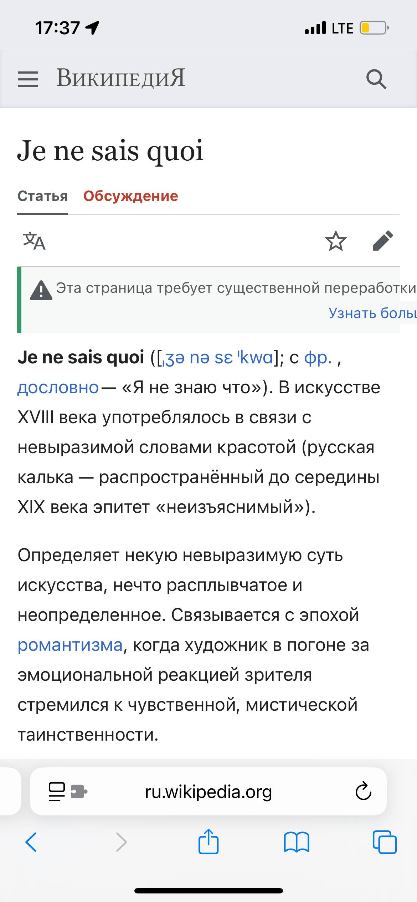
Post 5268
2025-11-15 14:37:12+00:00
Post 5267
2025-11-15 14:35:13+00:00
“В «Белой утопии» Рич Бенджамин описывает «убежища» белых американцев:
«Белое общество белее нации в целом, ее регионов и ее штатов. Оно продемонстрировало прирост населения не менее 6 процентов с 2000 года. Основную долю этого роста (зачастую до 90 процентов) обеспечивают белые мигранты. Белая утопия je ne sais quoi[191] – обладает неотразимой социальной харизмой, весьма привлекательным обликом»{734}.”
Excerpt From
Самоубийство сверхдержавы
Патрик Джозеф Бьюкенен
This material may be protected by copyright.
Post 5266
2025-11-15 14:34:26+00:00
“Снова Бишоп и Кушинг:
«Мы построили страну, где каждый волен выбрать соседей (равно как церковь и ток-шоу), наиболее совместимых с его убеждениями и верованиями. Мы живем с последствиями этой сегрегации по образу жизни, в «гетто» единомышленников, столь идеологически замкнутых, что мы не понимаем и едва в состоянии вообразить людей, которые живут всего в нескольких милях от нас»{733}.”
Excerpt From
Самоубийство сверхдержавы
Патрик Джозеф Бьюкенен
This material may be protected by copyright.
Post 5265
2025-11-15 14:32:55+00:00
“Люди предпочитают жить рядом с такими же людьми, как они сами», – пишет колумнист «Вашингтон пост» Роберт Сэмюелсон:
«Несмотря на широкую пропаганду «разнообразия», доминирует сходство. Большинство людей предпочитает дружить с теми, кто имеет схожее происхождение, интересы и ценности. Их объединяет общий опыт, облегчающий поддержание беседы или комфортное молчание. Пусть имеются исключения, данное стремление выглядит почти универсальным. Такова человеческая природа»{730}.”
Excerpt From
Самоубийство сверхдержавы
Патрик Джозеф Бьюкенен
This material may be protected by copyright.
Post 5264
2025-11-15 14:31:54+00:00
“Сегрегация означает, что учеников сознательно приписывают к той или иной школе, исходя из цвета кожи, – замечает Роджер Клегг из Центра равных возможностей. – Если же расовый состав просто отражает ситуацию с населением конкретного района, это не сегрегация»{728}.”
Excerpt From
Самоубийство сверхдержавы
Патрик Джозеф Бьюкенен
This material may be protected by copyright.
Post 5263
2025-11-15 14:25:52+00:00
“Наша сила в разнообразии», когда племенное, этническое и религиозное многообразие заставляет распадаться нации, поневоле вспоминаешь Оруэлла: только интеллектуал способен сказать такое – обычный человек не может быть настолько глуп.”
Excerpt From
Самоубийство сверхдержавы
Патрик Джозеф Бьюкенен
This material may be protected by copyright.
Post 5262
2025-11-15 13:39:07+00:00
“В Книге Бытия рассказывается, что обуянные гордыней народы Земли решили возвести огромную башню, достигающую небес, и бросить вызов Яхве.
«И сказал Господь: вот, один народ, и один у всех язык; и вот что начали они делать, и не отстанут они от того, что задумали делать; сойдем же и смешаем там язык их, так чтобы один не понимал речи другого.
И рассеял их Господь оттуда по всей земле…
Посему дано ему имя: Вавилон, ибо там смешал Господь язык всей земли, и оттуда рассеял их Господь по всей земле»[186].”
Excerpt From
Самоубийство сверхдержавы
Патрик Джозеф Бьюкенен
This material may be protected by copyright.
Post 5261
2025-11-15 13:38:50+00:00
“Язык – самая очевидная проблема, порожденная многообразием», – пишет старший научный сотрудник института Брукингса Питер Скерри в статье «За пределами сушиологии: как действует многообразие». Скерри прибегает к слову «сушиология», чтобы описать синдром, характерный для тех, кто воспринимает «колоссальное разнообразие и качество этнической кухни, ныне доступное в Соединенных Штатах, как доказательство наичестейшей пользы нашего расового и этнического многообразия»{721}.”
Excerpt From
Самоубийство сверхдержавы
Патрик Джозеф Бьюкенен
This material may be protected by copyright.
Post 5260
2025-11-15 02:01:36+00:00
“Историки с изумлением будут изучать поведение американцев двадцатого и двадцать первого столетий, искренне убежденных, что великую республику, которую они унаследовали, можно «обогатить» привлечением десятков миллионов иммигрантов из несостоявшихся государств «третьего мира».”
Excerpt From
Самоубийство сверхдержавы
Патрик Джозеф Бьюкенен
This material may be protected by copyright.
Post 5259
2025-11-15 02:00:44+00:00
“Что ж, студенты [Портлендского университета] увидят это собственными глазами, ибо их золотые годы пройдут в Америке «третьего мира».”
Excerpt From
Самоубийство сверхдержавы
Патрик Джозеф Бьюкенен
This material may be protected by copyright.
Post 5258
2025-11-15 01:59:51+00:00
“речь перед студентами Портлендского университета» президента Билла Клинтона, в которой тот заявил: «Минет чуть более 50 лет, и в Соединенных Штатах не останется расового большинства».”
Excerpt From
Самоубийство сверхдержавы
Патрик Джозеф Бьюкенен
This material may be protected by copyright.
Post 5257
2025-11-15 01:57:45+00:00
“До 1965 года иммиграционное законодательство США преследовало единственную цель – сохранить европейский характер страны”
Excerpt From
Самоубийство сверхдержавы
Патрик Джозеф Бьюкенен
This material may be protected by copyright.
Post 5256
2025-11-15 01:52:49+00:00
“Во втором выпуске «Федералиста» Джон Джей рассуждал о нации общей крови, веры, языка, истории, обычаев, культуры и принципов:
«Провидению угодно было ниспослать эту единую страну единому народу, который происходит от одних предков, говорит на одном языке, исповедует одну религию, привержен одним и тем же принципам правления, следует одинаковым обычаям и традициям, народу, который в результате совместных усилий, борясь плечом к плечу в долгой и кровавой войне, завоевал свободу и независимость»{716}.”
Excerpt From
Самоубийство сверхдержавы
Патрик Джозеф Бьюкенен
This material may be protected by copyright.
Post 5255
2025-11-14 19:51:44+00:00
“тревожило светоча Просвещения, Бенджамина Франклина.
«Те, кто прибывает сюда, олицетворяют собой, как правило, наиболее невежественную и скудоумную чернь собственной нации… а поскольку лишь немногие англичане понимают немецкий язык, то не в состоянии обращаться к ним через прессу или с церковной кафедры, и потому почти невозможно избавиться от предрассудков, коими эти люди пробавляются… Непривычные к свободе, они не знают, как оною воспользоваться…”
Excerpt From
Самоубийство сверхдержавы
Патрик Джозеф Бьюкенен
This material may be protected by copyright.
Post 5254
2025-11-14 19:44:39+00:00
“В 1790 году было решено предоставлять американское гражданство «свободным белым людям достойного морального облика». Другим оно было заказано.”
Excerpt From
Самоубийство сверхдержавы
Патрик Джозеф Бьюкенен
This material may be protected by copyright.
Post 5253
2025-11-14 19:43:05+00:00
“Колонисты инстинктивно придерживались воззрений, позволяющих причислить их к приверженцам теории «белого превосходства» (WASP[183]). Не испытывая ни малейших душевных терзаний, они прогнали индейцев за горы и создали общество белых христиан, мужчин и женщин, которым служили африканские рабы. На католиков смотрели с подозрением. Священников сажали обратно в лодки, которые доставляли тех на берег. Виргиния получила свое название в честь «королевы-девственницы» Елизаветы, твердо намеренной завершить дело своего отца, Генриха VIII, который стремился покончить с религиозным многообразием в Англии и искоренить католицизм.”
Excerpt From
Самоубийство сверхдержавы
Патрик Джозеф Бьюкенен
This material may be protected by copyright.
Post 5252
2025-11-14 19:41:03+00:00
“Наша сила в разнообразии» – таков теперь символ веры нашего правящего класса.”
Excerpt From
Самоубийство сверхдержавы
Патрик Джозеф Бьюкенен
This material may be protected by copyright.
Post 5251
2025-11-14 19:40:41+00:00
“Действительно, прежняя концепция Америки как плавильного тигля наций предусматривала превращение иммигрантов – ирландцев, итальянцев, немцев, евреев, поляков, греков, чехов, словаков – в американцев. Плавильный тигель отрицал многообразие, стимулировал американизацию иммигрантов”
Excerpt From
Самоубийство сверхдержавы
Патрик Джозеф Бьюкенен
This material may be protected by copyright.
Post 5250
2025-11-14 19:25:53+00:00
“Вуд говорит, что, в соответствии с этой идеологией, по мере того как многообразие утверждается в Америке, белым мужчинам, чьи отцы управляли страной, не допуская к процессу женщин, афроамериканцев и коренных американцев, придется принять и научиться ценить то, чего ведать не ведали их отцы – красоту и милосердие разнообразия. Америка шагает в прекрасный новый мир, который заставит остальное человечество ей завидовать, и прочие народы будут Америке подражать. Так Вуд описывает «идеал разнообразия»:”
Excerpt From
Самоубийство сверхдержавы
Патрик Джозеф Бьюкенен
This material may be protected by copyright.
Post 5249
2025-11-14 19:24:48+00:00
В 1919 году вместе со специальным дипломатическим представителем США https://ru.wikipedia.org/wiki/%D0%91%D1%83%D0%BB%D0%BB%D0%B8%D1%82,_%D0%A3%D0%B8%D0%BB%D1%8C%D1%8F%D0%BC">Уильямом Буллитом Стеффенс посетил https://ru.wikipedia.org/wiki/%D0%A1%D0%BE%D0%B2%D0%B5%D1%82%D1%81%D0%BA%D0%B0%D1%8F_%D0%A0%D0%BE%D1%81%D1%81%D0%B8%D1%8F_(%D0%B3%D0%BE%D1%81%D1%83%D0%B4%D0%B0%D1%80%D1%81%D1%82%D0%B2%D0%BE)">Советскую Россию, где встретился с https://ru.wikipedia.org/wiki/%D0%9B%D0%B5%D0%BD%D0%B8%D0%BD">Лениным и наркомом иностранных дел https://ru.wikipedia.org/wiki/%D0%A7%D0%B8%D1%87%D0%B5%D1%80%D0%B8%D0%BD,_%D0%93%D0%B5%D0%BE%D1%80%D0%B3%D0%B8%D0%B9_%D0%92%D0%B0%D1%81%D0%B8%D0%BB%D1%8C%D0%B5%D0%B2%D0%B8%D1%87">Чичериным. Стеффенс с энтузиазмом писал: «Я видел будущее, и оно работает» (https://ru.wikipedia.org/wiki/%D0%90%D0%BD%D0%B3%D0%BB%D0%B8%D0%B9%D1%81%D0%BA%D0%B8%D0%B9_%D1%8F%D0%B7%D1%8B%D0%BA">англ. I have seen the future and it works).
Post 5248
2025-11-14 19:17:42+00:00
“По словам Питера Вуда, исполнительного директора Национальной ассоциации ученых и автора книги «Многообразие: изобретение концепции», разнообразие (это слово он неизменно выделяет курсивом) обозначает «современный набор идей… отличный от прежних значений»{706}.
«Разнообразие побуждает нас видеть в Америке не единое целое, но сочетание групп – расовых, этнических и гендерных, как минимум, – причем некоторые из них исторически пользовались привилегиями, недоступными другим.
Разнообразие… есть, прежде всего, политическая доктрина, утверждающая, что некоторые социальные группы заслуживают компенсации вследствие предосудительного обращения с этими группами в прошлом и вследствие проблем, которые они продолжают испытывать сегодня»{707}.”
Excerpt From
Самоубийство сверхдержавы
Патрик Джозеф Бьюкенен
This material may be protected by copyright.
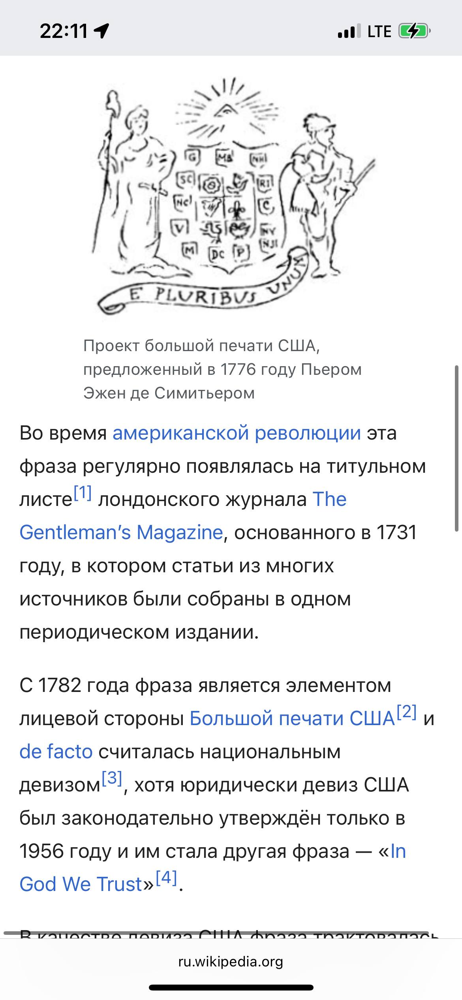
Post 5247
2025-11-14 19:14:07+00:00
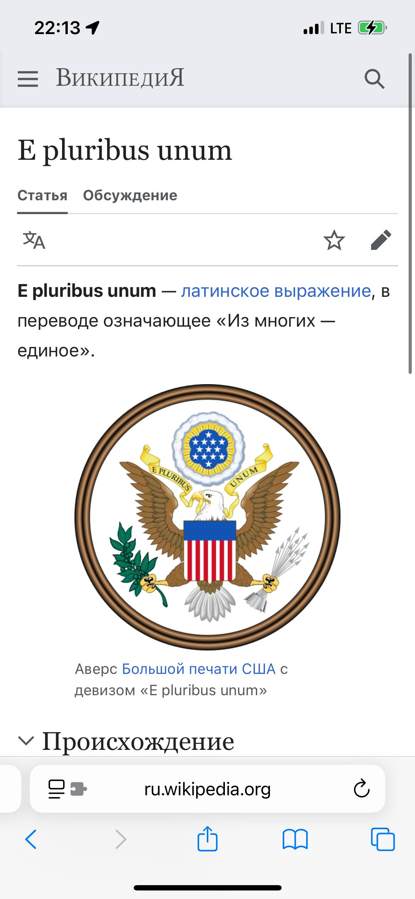
Post 5246
2025-11-14 19:14:05+00:00
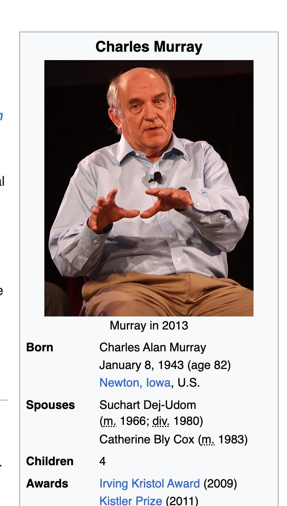
Post 5244
2025-11-14 18:59:10+00:00
Post 5243
2025-11-14 18:59:04+00:00
https://en.wikipedia.org/wiki/Charles_Murray_(political_scientist)
Post 5242
2025-11-14 18:58:09+00:00
Post 5240
2025-11-14 18:57:59+00:00
Books
American Democracy: Theory & Reality (1972), ASIN B000SGT9O4.
Political Learning, Political Choice, & Democratic Citizenship (1974). ISBN 978-0136849933.
Elementary Political Analysis (co-authored with Herbert Jacob) (1975). ISBN 978-0070321366.
Public Opinion and Popular Government (1976). ISBN 978-0137379088.
Understanding American Government (1979). ASIN B000OA72PM.
Political Tolerance: Balancing Community and Diversity (1998). ISBN 978-0803973435.
The Politics of Empowerment (1999). ISBN 978-0275964269.
Democracy and the Academy (2000). ISBN 978-1560727835.
Polling, Policy, and Public Opinion: The Case Against Heeding the "Voice of the People" (2002). ISBN 978-0312294953.
The Limits of Civic Activism: Cautionary Tales on the Use of Politics (2004). ISBN 978-0765802613.
Pernicious Tolerance: How Teaching to "Accept Differences" Undermines Civil Society (2008). ISBN 978-1412845793.
Bad Students, Not Bad Schools (2010). ISBN 978-1412813457.
Post 5239
2025-11-14 18:57:41+00:00
In his 2010 book, Bad Students, Not Bad Schools Weissberg argued that students, rather than teachers or curriculum, are the root cause of poor educational outcomes.
Post 5238
2025-11-14 18:57:27+00:00
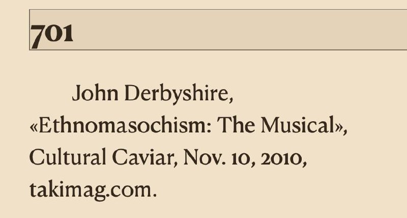
Post 5237
2025-11-14 18:54:25+00:00
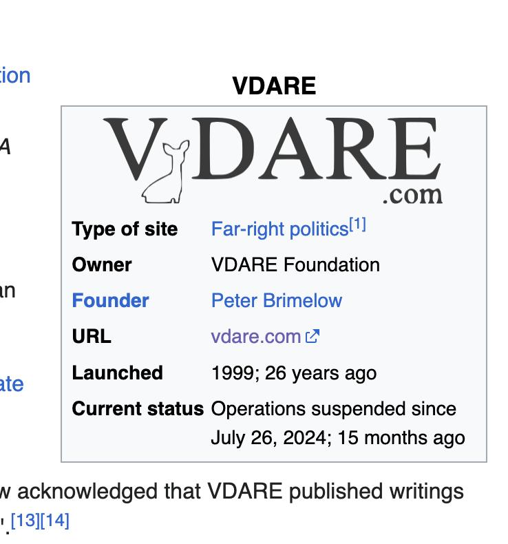
Post 5236
2025-11-14 18:54:09+00:00
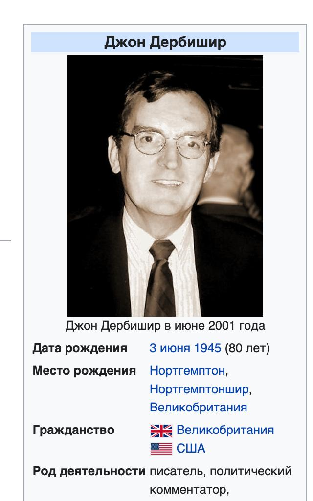
Post 5235
2025-11-14 18:53:58+00:00
Post 5232
2025-11-14 18:45:33+00:00
“Надо полагать, японцев этот ответ не убедил. Япония настолько боится разнообразия, которое восхвалял Дэн Куэйл, что японцы отказываются открыть страну для иммиграции, даже при том, что их уровень рождаемости правильнее называть уровнем смертности.”
Excerpt From
Самоубийство сверхдержавы
Патрик Джозеф Бьюкенен
This material may be protected by copyright.
Post 5231
2025-11-14 18:45:30+00:00
“Мы лишь хотим сохранить страну, в которой выросли”
Excerpt From
Самоубийство сверхдержавы
Патрик Джозеф Бьюкенен
This material may be protected by copyright.
Post 5230
2025-11-14 18:45:27+00:00
“ Энн Данэм (р. 1942)»{701}.
«Мы читаем об Энн в автобиографии ее сына… Она отказывалась сопровождать мужа-индонезийца на вечеринки с участием американских бизнесменов. Это ее соотечественники, напоминал Энн муж; на что, как рассказывает сын, «голос моей матери взлетал почти до крика. Это не мой народ!»{702}
Если кто забыл, сына Энн Данэм зовут Барак Обама.
”
Excerpt From
Самоубийство сверхдержавы
Патрик Джозеф Бьюкенен
This material may be protected by copyright.
Post 5229
2025-11-14 18:45:24+00:00
“Полномасштабный современный этномазохизм, – пишет Джон Дербишир, колумнист «Нэшнл ревью», – есть, подобно многим другим психологическим патологиям, продукт англо-американской прогрессивности. В своей законченной форме он проявляется в сочинениях Сьюзан Зонтаг (р. 1933) и Энн Данэм (р. 1942)»{701}.”
Excerpt From
Самоубийство сверхдержавы
Патрик Джозеф Бьюкенен
This material may be protected by copyright.
Post 5228
2025-11-14 18:45:20+00:00
“В истории человечества многообразие доставляло только проблемы{697}.
Энн Коултер (2009)”
Excerpt From
Самоубийство сверхдержавы
Патрик Джозеф Бьюкенен
This material may be protected by copyright.
Post 5227
2025-11-14 18:45:17+00:00
7. Культ многообразия
Post 5226
2025-11-14 18:45:10+00:00
“Задолго до Жувенеля итальянский философ Вильфредо Парето писал, что равенство «входит в прямые интересы тех индивидов, которые стремятся избежать конкретного неравенства, ущемляющего их пользу, и породить новые неравенства, уже в свою пользу; последнее и есть их главная забота»{696}.”
Excerpt From
Самоубийство сверхдержавы
Патрик Джозеф Бьюкенен
This material may be protected by copyright.
Post 5225
2025-11-14 18:45:06+00:00
“Истинное значение доктрины равенства в том, что она является политическим оружием»{693}.”
Excerpt From
Самоубийство сверхдержавы
Патрик Джозеф Бьюкенен
This material may be protected by copyright.
Post 5224
2025-11-14 18:45:03+00:00
“Мы освободили половину граждан от налогообложения и возложили три четверти налогового бремени на талантливую десятую часть населения. Но равенства доходов нет и в помине – и не будет до тех пор, пока люди остаются свободными. Наоборот, чем прочнее утверждается экономика, основанная на знаниях, вытесняющая ручной труд, тем шире становится неравенство. Ради создания равноправного общества, которое существует только в воображении идеологов, мы убиваем замечательную страну, доставшуюся нам в наследство от величайшего поколения.”
Excerpt From
Самоубийство сверхдержавы
Патрик Джозеф Бьюкенен
This material may be protected by copyright.
Post 5223
2025-11-14 18:44:59+00:00
“Уильямс пишет: «В области спорта подобная вера отсутствует, и это кажется любопытным исключением. Ни один человек в здравом уме не рискнет предположить, что он имеет, в силу принципа равенства, неотъемлемое право представлять свою страну на Олимпийских играх; у него на это столько же прав, сколько у обычного школьника на место в составе школьной футбольной команды»{692}.”
Excerpt From
Самоубийство сверхдержавы
Патрик Джозеф Бьюкенен
This material may be protected by copyright.
Post 5222
2025-11-14 18:44:55+00:00
“Всякая революция должна иметь собственный миф, – пишет Дункан Уильямс, британский профессор литературы, – и самым стойким из этих мифов, тем, который, вопреки всему человеческому опыту, обрел сугубо «романтическую» поддержку в минувшие полтора столетия, является миф о «равенстве людей». ”
Excerpt From
Самоубийство сверхдержавы
Патрик Джозеф Бьюкенен
This material may be protected by copyright.
Post 5221
2025-11-14 18:44:52+00:00
“Джордж Оруэлл в своем «Скотном дворе» абсолютно прав. Революция начинается под лозунгом «Все животные равны». Но едва она побеждает, свиньи захватывают власть на ферме, и лозунг теперь звучит так: «Все животные равны. Но некоторые животные равны более, чем другие». Революция за равенство для всех неизменно завершается установлением диктатуры меньшинства.”
Excerpt From
Самоубийство сверхдержавы
Патрик Джозеф Бьюкенен
This material may be protected by copyright.
Post 5220
2025-11-14 18:44:49+00:00
“ Представителей классов, имевших привилегии и власть, а также священников и поэтов, отправляли на гильотину, в подвалы Лубянки или на виселицу, расстреливали или обрекали на мучения трудовых лагерей.”
Excerpt From
Самоубийство сверхдержавы
Патрик Джозеф Бьюкенен
This material may be protected by copyright.
Post 5219
2025-11-14 18:44:46+00:00
“ Не бывает двух совершенно одинаковых детей, даже однояйцевые близнецы разнятся между собой. Семья – инкубатор неравенства, предусмотренного Господом.”
Excerpt From
Самоубийство сверхдержавы
Патрик Джозеф Бьюкенен
This material may be protected by copyright.
Post 5218
2025-11-14 18:44:42+00:00
“В книге «Человеческие достижения: стремление к совершенству в искусстве и науке, 800 г. до н. э. – 1950 г.» Мюррей описывает величайших деятелей четырех тысяч лет истории человечества и основные достижения в науке, искусстве, музыке, философии и математике. Он приходит к выводу, что 97 процентов этих фигур происходят из Европы и Северной Америки и там же сделаны 97 процентов основных достижений в астрономии, биологии, науках о Земле, физике, математике, медицине и технологиях. Удивительный «рекорд» единственной цивилизации! Женщины имеют ровно 0 процентов достижений в философии, 1,7 процента – в науках, 2,3 процента – в западном искусстве, 4,4 процента – в западной литературе и 0,2 процента – в западной музыке{689}.”
Excerpt From
Самоубийство сверхдержавы
Патрик Джозеф Бьюкенен
This material may be protected by copyright.
Post 5217
2025-11-14 18:44:39+00:00
“Ошибочное мнение допустимо, если истине позволяют ему противостоять», – писал Джефферсон.”
Excerpt From
Самоубийство сверхдержавы
Патрик Джозеф Бьюкенен
This material may be protected by copyright.
Post 5216
2025-11-14 18:44:35+00:00
“Априори у нас нет надежных оснований ожидать, что интеллектуальный потенциал людей, географически разделенных в ходе эволюции, окажется совершенно одинаковым. Нашего желания, чтобы все были наделены одинаковой силой разума как неким всеобщим наследием человечества, будет недостаточно, чтобы это стало правдой»{688}.
Выступление Уотсона в лондонском Музее науки немедленно отменили”
Excerpt From
Самоубийство сверхдержавы
Патрик Джозеф Бьюкенен
This material may be protected by copyright.
Post 5215
2025-11-14 18:44:32+00:00
“Через год после отставки Саммерса доктор Джеймс Уотсон, лауреат, вместе с доктором Фрэнсисом Криком, Нобелевской премии 1962 года за открытие спиральной структуры ДНК, заявил газете «Санди таймс», что он «мрачно смотрит на перспективы Африки», поскольку «вся наша социальная политика строится на тезисе, что умственные способности африканцев аналогичны нашим, тогда как практика опровергает эту точку зрения»{687}.”
Excerpt From
Самоубийство сверхдержавы
Патрик Джозеф Бьюкенен
This material may be protected by copyright.
Post 5214
2025-11-14 18:44:29+00:00
“Вайсберг считает, что мы должны требовать от учащихся максимально проявлять свои способности и даже преодолевать этот максимум; когда же они перестанут учиться, их следует «выпроводить за дверь» и смириться с тем фактом, что люди не равны по своим способностям и отношению к образованию. Прежде такая точка зрения именовалась здравым смыслом.”
Excerpt From
Самоубийство сверхдержавы
Патрик Джозеф Бьюкенен
This material may be protected by copyright.
Post 5213
2025-11-14 18:44:25+00:00
“Если и существует некий «чудодейственный» препарат, способный исцелить образование в Америке, это отчисление из школ нижней четверти учеников после 8-го класса. К сожалению, «демократизация» образования, кажется, неумолима, и школьные реформаторы настаивают на зачислении малограмотных в колледжи, как будто степень бакалавра удостоверяет эффективность обучения»{677}.
”
Excerpt From
Самоубийство сверхдержавы
Патрик Джозеф Бьюкенен
This material may be protected by copyright.
Post 5212
2025-11-14 18:44:22+00:00
“Коулман и Хернстайн обозначили наличие, скажем так, предрасположенности к образованию.”
Excerpt From
Самоубийство сверхдержавы
Патрик Джозеф Бьюкенен
This material may be protected by copyright.
Post 5211
2025-11-14 18:44:19+00:00
“Природа и воспитание, наследственность и домашняя среда, умственные способности и мотивация – таковы, как продемонстрировало исследование, эти первичные детерминанты образовательного процесса.”
Excerpt From
Самоубийство сверхдержавы
Патрик Джозеф Бьюкенен
This material may be protected by copyright.
Post 5210
2025-11-14 18:44:15+00:00
“Семейный фон – вот главный и важнейший фактор успеваемости учеников»{664}.”
Excerpt From
Самоубийство сверхдержавы
Патрик Джозеф Бьюкенен
This material may be protected by copyright.
Post 5209
2025-11-13 21:47:15+00:00
"Ask, and it shall be given you; seek, and ye shall find; knock, and it shall be opened unto you.
For every one that asketh receiveth; and he that seeketh findeth; and to him that knocketh it shall be opened."
— **King James Version, Matthew 7:7‑8
Post 5208
2025-11-13 19:53:39+00:00
“Известно ли Олсону, что Джефферсон отождествлял гомосексуализм с изнасилованием и считал, что гомосексуалистов следует кастрировать, а лесбиянок наказывать «прорезанием» в носу отверстия диаметром минимум в полдюйма?{663}”
Excerpt From
Самоубийство сверхдержавы
Патрик Джозеф Бьюкенен
This material may be protected by copyright.
Post 5207
2025-11-13 19:51:52+00:00
https://ru.wikipedia.org/wiki/%D0%98%D0%B1%D0%BD_%D0%A0%D1%83%D1%88%D0%B4
Post 5206
2025-11-13 19:51:39+00:00
Post 5205
2025-11-13 19:30:04+00:00
Средневековые мыслители (особенно Фома Аквинский) потом развили это:
«Иерархия без угнетения» — как гармония частей мира, где никто не унижен по природе.
Post 5204
2025-11-13 19:28:46+00:00
Рабство — искажённое социальное неравенство, возникшее из-за греха, из-за того, что люди начали господствовать друг над другом не по любви, а по страху и насилию.
Post 5203
2025-11-13 19:28:32+00:00
«Различие даров не нарушает равенства природы, а служит красоте и гармонии целого» (De civitate Dei, XIX, 13–14).
Post 5202
2025-11-13 19:28:24+00:00
Эти различия — не от греха, а от Божественного порядка (ordo).
Бог распределяет дары по Своей мудрости, чтобы мир был устроен как единое тело, где каждый член выполняет свою функцию (как у апостола Павла — «глаз не скажет руке: ты мне не нужна»).
Post 5201
2025-11-13 19:27:48+00:00
«Перед Богом нет различия между свободным и рабом, мужем и женой, ибо все мы — одно во Христе Иисусе» (ср. Gal 3:28, которую Августин часто цитирует).
Post 5200
2025-11-13 19:27:36+00:00
Все люди сотворены по образу и подобию Божию (imago Dei).
Значит, все равны по достоинству: и раб, и господин, и мудрец, и неуч имеют одинаковую ценность перед Богом.
Post 5199
2025-11-13 19:24:01+00:00
ключевая идея, которая идёт как раз от христианской антропологии Августина: человек создан свободным, рабство — последствие зла, которое должно быть преодолено.
Post 5198
2025-11-13 19:23:05+00:00
Да, квакеры, и вообще многие аболиционисты (противники рабства)
Post 5197
2025-11-13 19:15:38+00:00
https://ru.wikipedia.org/wiki/%D0%9F%D1%80%D0%BE%D0%B3%D1%80%D0%B5%D1%81%D1%81
Post 5196
2025-11-13 19:10:59+00:00
“Биограф Лео Конгдон утверждает, что Кеннан «расценивал стремление к равенству как проявление зависти и обиды»{661}.”
Excerpt From
Самоубийство сверхдержавы
Патрик Джозеф Бьюкенен
This material may be protected by copyright.
Post 5195
2025-11-13 19:03:36+00:00
Post 5194
2025-11-13 19:01:10+00:00
“Эгалитарное общество, – пишет Ротбард, – может добиться реализации своих целей тоталитарными методами принуждения; и даже так, мы все верим и надеемся, что дух свободного индивида пресечет любые подобные попытки по созданию мира-муравейника»{659}.”
Excerpt From
Самоубийство сверхдержавы
Патрик Джозеф Бьюкенен
This material may be protected by copyright.
Post 5193
2025-11-13 18:58:44+00:00
“Цель проста: демократия по принципу «один человек – один голос», которую отвергли наши отцы-основатели”
Excerpt From
Самоубийство сверхдержавы
Патрик Джозеф Бьюкенен
This material may be protected by copyright.
Post 5192
2025-11-13 18:54:25+00:00
“Верхний 1 процент наемных работников в настоящее время несет 40 процентов всей налоговой нагрузки, тогда как нижние 50 процентов вообще не платят налогов. Разве не «Коммунистический манифест» требовал «высокого прогрессивного налога»?”
Excerpt From
Самоубийство сверхдержавы
Патрик Джозеф Бьюкенен
This material may be protected by copyright.
Post 5191
2025-11-13 18:53:25+00:00
“Во имя равенства творятся несправедливости, тратятся колоссальные средства и урезается свобода.”
Excerpt From
Самоубийство сверхдержавы
Патрик Джозеф Бьюкенен
This material may be protected by copyright.
Post 5190
2025-11-13 18:52:15+00:00
“Афроамериканский общественный деятель У. Дюбуа писал в 1903 году, что высшим приоритетом его народа должно стать возвышение и воспитание такой «естественной аристократии», «даровитой десятой части» чернокожего населения Америки:
«Негритянская раса, подобно всем прочим расам, сохранится благодаря своим исключительным представителям. Следовательно, проблема образования среди негров подлежит разрешению прежде всего; необходимо выявить лучших из лучших нашей расы, которые поведут массы за собой, прочь от грязи и смерти худших, все равно – нашей собственной или иных рас»{657}.”
Excerpt From
Самоубийство сверхдержавы
Патрик Джозеф Бьюкенен
This material may be protected by copyright.
Post 5189
2025-11-13 18:50:55+00:00
“Свобода создает иерархию на основе интеллекта, таланта и настойчивости.”
Excerpt From
Самоубийство сверхдержавы
Патрик Джозеф Бьюкенен
This material may be protected by copyright.
Post 5188
2025-11-13 18:50:10+00:00
“Для идеологии, добавляет профессор Джиллис Харп из колледжа Гроув-Сити, «факты не имеют значения, допустимо убийство всякого, кто мешает»{655}.”
Excerpt From
Самоубийство сверхдержавы
Патрик Джозеф Бьюкенен
This material may be protected by copyright.
Post 5187
2025-11-13 18:49:49+00:00
“Идеология, – пишет Рассел Кирк, – представляет политику как революционное орудие преобразования общества и даже как инструмент трансформации человеческой природы. В своем марше к утопии идеология беспощадна»{654}.”
Excerpt From
Самоубийство сверхдержавы
Патрик Джозеф Бьюкенен
This material may be protected by copyright.
Post 5186
2025-11-12 19:17:11+00:00
“Возвышение эгалитарного общества означает смерть свободного общества. «Свобода по самой своей природе… избегает равенства, – пишет Джуд Догерти, почетный декан Философской школы Католического университета. – Люди различаются силой, интеллектом, амбициями, смелостью, упорством и всем прочим, что необходимо для достижения успеха. Нет способа сделать людей одновременно свободными и равными»{650}.”
Excerpt From
Самоубийство сверхдержавы
Патрик Джозеф Бьюкенен
This material may be protected by copyright.
Post 5185
2025-11-12 19:15:15+00:00
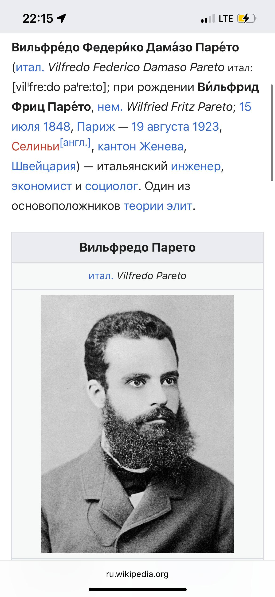
Post 5184
2025-11-12 19:15:13+00:00
Post 5183
2025-11-12 19:13:51+00:00
Post 5182
2025-11-12 19:06:50+00:00
Элитаризм — это концепция отделения лучшего от худшего, концепция жизни во имя высших жизненных целей, концепция развития «высшего человека», подобного богам. Элитаризм призывает развивать свою личную силу, свои способности, жить в постижении тайн природы и гармонии с ней. С некоторыми допущениями к мыслителям-элитаристам можно отнести, например: https://ru.wikipedia.org/wiki/%D0%9F%D0%B0%D1%80%D0%B5%D1%82%D0%BE,_%D0%92%D0%B8%D0%BB%D1%8C%D1%84%D1%80%D0%B5%D0%B4%D0%BE">Парето, https://ru.wikipedia.org/wiki/%D0%AE%D0%BB%D0%B8%D1%83%D1%81_%D0%AD%D0%B2%D0%BE%D0%BB%D0%B0">Юлиуса Эволу, https://ru.wikipedia.org/wiki/%D0%A4%D1%80%D0%B8%D0%B4%D1%80%D0%B8%D1%85_%D0%9D%D0%B8%D1%86%D1%88%D0%B5">Фридриха Ницше и ряд других мыслителей, которых можно назвать предтечами элитаризма https://ru.wikipedia.org/wiki/%D0%97%D0%B0%D0%BF%D0%B0%D0%B4%D0%BD%D0%B0%D1%8F_%D1%86%D0%B8%D0%B2%D0%B8%D0%BB%D0%B8%D0%B7%D0%B0%D1%86%D0%B8%D1%8F">западной цивилизации.
Post 5181
2025-11-12 19:05:52+00:00
Элитаризм также является https://ru.wikipedia.org/wiki/%D0%98%D0%B4%D0%B5%D0%BE%D0%BB%D0%BE%D0%B3%D0%B8%D1%8F">идеологическимпроявлением лежащего в основании человеческой https://ru.wikipedia.org/wiki/%D0%9F%D1%81%D0%B8%D1%85%D0%BE%D0%BB%D0%BE%D0%B3%D0%B8%D1%8F">психологии стремления к удовлетворению потребностей полноценными и совершенными формами существования и жизни.
Post 5180
2025-11-12 19:05:44+00:00
Post 5179
2025-11-12 19:04:04+00:00
https://ru.wikipedia.org/wiki/%D0%AD%D0%BB%D0%B8%D1%82%D0%B0%D1%80%D0%B8%D0%B7%D0%BC
Post 5178
2025-11-12 19:00:24+00:00
“Неравенство «не только является естественным и врожденным, оно нарастает с усложнением цивилизации»{648}. Опровергая все сказанное Линдоном Джонсоном в Университете Хауарда, Дюранты заявляли:
«Природа усмехается союзу свободы и равенства в наших утопиях. Ведь свобода и равенство – заклятые, вечные враги, и когда один из них побеждает, второй умирает. Оставьте людей свободными, и их природное неравенство возрастет почти в геометрической прогрессии, примером чему могут служить Англия и Америка девятнадцатого века. Чтобы ограничить неравенство, свободой следует пожертвовать, как произошло в России после 1917 года»{649}.”
Excerpt From
Самоубийство сверхдержавы
Патрик Джозеф Бьюкенен
This material may be protected by copyright.
Post 5177
2025-11-12 18:57:19+00:00
“[Мы] все рождаемся несвободными и неравными, вследствие нашей физической и психологической наследственности, вследствие обычаев и традиций нашей группы; мы в различной степени наделены здоровьем и силой, умственными способностями и личными качествами. Природа ценит различия как необходимое условие естественного отбора и эволюции; даже однояйцевые близнецы различаются между собой, и две капли воды не похожи друг на друга»{647}.”
Excerpt From
Самоубийство сверхдержавы
Патрик Джозеф Бьюкенен
This material may be protected by copyright.
Post 5176
2025-11-12 18:56:49+00:00
“Историки Уильям и Ариэль Дюранты, авторы одиннадцатитомного монументального исследования цивилизаций, писавшегося на протяжении четырех десятилетий, пришли к противоположному выводу.”
Excerpt From
Самоубийство сверхдержавы
Патрик Джозеф Бьюкенен
This material may be protected by copyright.
Post 5175
2025-11-12 18:54:25+00:00
Post 5174
2025-11-10 21:47:38+00:00
“Аристотель говорил: «…Демократическое устройство возникло на основе того мнения, что равенство в каком-нибудь отношении влечет за собой и равенство вообще»[166].”
Excerpt From
Самоубийство сверхдержавы
Патрик Джозеф Бьюкенен
This material may be protected by copyright.
Post 5173
2025-11-10 21:45:51+00:00
“Как писал Мюррей Ротбард: «Поскольку эгалитаризм исходит из априорной аксиомы, что все люди и, следовательно, все группы людей… равны, то отсюда делается вывод, что любые групповые различия в статусе, престиже или власти в обществе должны быть результатом несправедливого «притеснения» и иррациональной «дискриминации{645}».”
Excerpt From
Самоубийство сверхдержавы
Патрик Джозеф Бьюкенен
This material may be protected by copyright.
Post 5172
2025-11-10 17:26:59+00:00
“Эти различия не являются [результатом] расовых различий. Они коренятся, исключительно и сугубо, в древней жестокости, в несправедливости прошлого и в предрассудках настоящего… Для негров это постоянное напоминание о предубежденности. Для белых это постоянное напоминание о виновности. Но их следует принять, изучить и преодолеть, если мы стремимся когда-нибудь оказаться в эпохе, когда единственное различие между неграми и белыми будет заключаться в цвете их кожи»{644}.
В самом ли деле Линдон Джонсон”
Excerpt From
Самоубийство сверхдержавы
Патрик Джозеф Бьюкенен
This material may be protected by copyright.
Post 5171
2025-11-10 17:26:18+00:00
“Единственный путь к достижению равенства, когда свободный рынок, свобода собраний и свободная конкуренция не в состоянии его обеспечить – это использовать государственную власть, чтобы насильно добиться равенства доходов, влияния, наград и богатства. То есть социализм.”
Excerpt From
Самоубийство сверхдержавы
Патрик Джозеф Бьюкенен
This material may be protected by copyright.
Post 5170
2025-11-10 17:25:36+00:00
“Таланты распределяются неравномерно не только в пределах этнических групп, но и внутри семей. Навязывать равенство результатов за неравные достижения значит дезавуировать одно из исходных положений нашей конституции – установление справедливости. Такой подход замещает справедливость несправедливостью.”
Excerpt From
Самоубийство сверхдержавы
Патрик Джозеф Бьюкенен
This material may be protected by copyright.
Post 5169
2025-11-10 17:24:51+00:00
“Ибо где еще, как не в рамках социалистической идеологии, действует догма: «Мужчины и женщины всех рас рождаются с одинаковым набором способностей»? Более справедливо утверждать, что на свете нет двух мужчин или женщин, рожденных абсолютно равными.”
Excerpt From
Самоубийство сверхдержавы
Патрик Джозеф Бьюкенен
This material may be protected by copyright.
Post 5168
2025-11-10 17:23:54+00:00
“Те, кому предстояло изменить наше общество, начали с изменения смысла слов.”
Excerpt From
Самоубийство сверхдержавы
Патрик Джозеф Бьюкенен
This material may be protected by copyright.
Post 5167
2025-11-10 17:23:54+00:00
“Те, кому предстояло изменить наше общество, начали с изменения смысла слов.”
Excerpt From
Самоубийство сверхдержавы
Патрик Джозеф Бьюкенен
This material may be protected by copyright.
Post 5166
2025-11-10 17:23:54+00:00
“Те, кому предстояло изменить наше общество, начали с изменения смысла слов.”
Excerpt From
Самоубийство сверхдержавы
Патрик Джозеф Бьюкенен
This material may be protected by copyright.
Post 5165
2025-11-10 17:22:15+00:00
“Те, кому предстояло изменить наше общество, начали с изменения смысла слов.”
Excerpt From
Самоубийство сверхдержавы
Патрик Джозеф Бьюкенен
This material may be protected by copyright.
Post 5164
2025-11-10 17:21:51+00:00
“Эта идея равенства коренится в эгалитарной идеологии, представляющей собой антитезу всему, во что верили отцы-основатели и все президенты до Линдона Джонсона – если, конечно, Джонсон искренне верил в то, что он говорил.”
Excerpt From
Самоубийство сверхдержавы
Патрик Джозеф Бьюкенен
This material may be protected by copyright.
Post 5163
2025-11-10 17:20:56+00:00
“неравенству в результатах и выгодах”
Excerpt From
Самоубийство сверхдержавы
Патрик Джозеф Бьюкенен
This material may be protected by copyright.
Post 5162
2025-11-10 17:20:08+00:00
“Вердиктом по делу «Члены правления Университета Калифорнии против Бэкки» (1978) Верховный суд постановил, что расовая дискриминация в отношении белых во имя равенства в Америке отныне конституционна и моральна. Судья Гарри Блэкман сказал: «Чтобы преодолеть расизм, мы должны сначала принять во внимание расу. Нет другого пути. А для того, чтобы обращаться с людьми равноправно, мы должны относиться к ним по-разному. Мы не можем – не смеем – допустить, чтобы условие равной защиты увековечивало расовое превосходство»{643}.”
Excerpt From
Самоубийство сверхдержавы
Патрик Джозеф Бьюкенен
This material may be protected by copyright.
Post 5161
2025-11-10 15:35:24+00:00
Post 5160
2025-11-10 15:34:14+00:00
“Джонсон представил нации концепцию равенства, которую американский романист Джеймс Фенимор Купер считал невозможной в цивилизованном обществе:
«Равенство в социальном отношении следует разделять на равенство условий и равенство прав. Равенство условий несовместимо с цивилизацией и обнаруживается только в тех обществах, которые недалеко ушли от первобытного состояния. На практике это означает лишь общее прозябание»{642}.”
Excerpt From
Самоубийство сверхдержавы
Патрик Джозеф Бьюкенен
This material may be protected by copyright.
Post 5159
2025-11-10 15:32:20+00:00
“Такова следующая, более важная стадия битвы за гражданские права. Мы стремимся не только к свободе, но к возможностям. Мы ищем не… равенства в правах и в теории, но равенства как факта и равенства как результата…
Равные возможности необходимы, но недостаточны, да, недостаточны. Мужчины и женщины всех рас рождаются с одинаковым набором способностей. Однако способности не только плод наследства.”
Excerpt From
Самоубийство сверхдержавы
Патрик Джозеф Бьюкенен
This material may be protected by copyright.
Post 5158
2025-11-10 15:11:10+00:00
Idea 💡
Лекция и статья про естественность неравенства
Неравенства нет на земле и нет его и на небе
Post 5157
2025-11-10 15:10:47+00:00
“неравенство доходов и вознаграждений неизбежно в конкурентоспособном и свободном обществе.”
Excerpt From
Самоубийство сверхдержавы
Патрик Джозеф Бьюкенен
This material may be protected by copyright.
Post 5156
2025-11-10 15:09:58+00:00
Post 5155
2025-11-09 19:54:19+00:00
“Но все же вторая инаугурационная речь не упоминает о равенстве всех людей. Она – о равном праве всех людей на свободу, о конце рабства. В течение девяноста лет после Декларации независимости идея равенства не возникала – ее нет ни в конституции, ни в Билле о правах, ни в «Федералисте», ни в государственной политике. Лишь с принятием Четырнадцатой поправки эта идея появилась, ограниченная «равной защитой закона»:
«Ни один штат не должен издавать или применять законы, которые ограничивают привилегии и льготы граждан Соединенных Штатов; равно как ни один штат не может лишить какое-либо лицо жизни, свободы или собственности без надлежащей правовой процедуры либо отказать какому-либо лицу в пределах своей юрисдикции в равной защите закона».”
Excerpt From
Самоубийство сверхдержавы
Патрик Джозеф Бьюкенен
This material may be protected by copyright.
Post 5154
2025-11-09 19:53:05+00:00
“В своей второй инаугурационной речи в апреле 1865 года, за месяц до смерти, Линкольн заявил:
«Мы надеемся и пылко молимся, чтобы это тяжелое наказание войны вскоре прошло. Однако если Богу угодно, чтобы она продолжалась, пока богатство, накопленное невольниками за двести пятьдесят лет неоплаченного труда, не исчезнет и пока каждая капля крови, выбитая кнутом, не будет отплачена другой каплей, вырубленной мечом, – как было сказано три тысячи лет назад, – это все равно должно свидетельствовать, что «суды Господни – истина, все праведны».[165]
Вторая инаугурационная речь Линкольна могла бы быть написана Джоном Брауном. Линкольн говорил, что мы, американцы, наказаны Богом за владение рабами на протяжении двух с половиной столетий, за то, что не сумели жить в соответствии с вероисповеданием. Он утверждал, что шестьсот тысяч мертвых американцев – таково праведное Божье возмездие, обрушившееся на народ.”
Excerpt From
Самоубийство сверхдержавы
Патрик Джозеф Бьюкенен
This material may be protected by copyright.
Post 5153
2025-11-09 19:51:37+00:00
“Тем не менее, 1 января 1863 года в Прокламации об освобождении рабов Линкольн объявил свободными всех рабов на территории мятежников и поддержал поправку к конституции, предусматривавшую освобождение всех рабов в стране.”
Excerpt From
Самоубийство сверхдержавы
Патрик Джозеф Бьюкенен
This material may be protected by copyright.
Post 5152
2025-11-09 19:50:55+00:00
“В своей первой инаугурационной речи, 4 марта 1861 года, он предложил семи отделившимся штатам помощь федерального правительства в поимке беглых рабов и одобрил поправку к конституции, закреплявшую существование рабства во всех 15 штатах, где оно практиковалось. Он писал Хорасу Грили 22 августа 1862 года: «Моя первостепенная цель в этой борьбе состоит в спасении Союза, а вовсе не в спасении или уничтожении рабства. Если бы я мог спасти Союз, не освободив ни одного раба, я бы сделал это…»{629}”
Excerpt From
Самоубийство сверхдержавы
Патрик Джозеф Бьюкенен
This material may be protected by copyright.
Post 5151
2025-11-09 18:51:08+00:00
“Но пусть Линкольн не шел на войну, чтобы сделать людей равными, разве он не воевал за то, чтобы «сделать людей свободными»? Нет. Линкольн воевал, чтобы восстановить Союз – после спуска флага в форте Самтер[164].”
Excerpt From
Самоубийство сверхдержавы
Патрик Джозеф Бьюкенен
This material may be protected by copyright.
Post 5150
2025-11-09 18:50:05+00:00
“Линкольн тем самым пояснял: негры имеют такие же, данные Богом права на жизнь, свободу и стремление к счастью, что и белые люди, и декларации 1776 года представляют собой своего рода гарантию того, что они в один прекрасный день обретут эти права. Но пусть все люди равны перед Господом в правах, они не равны в дарованных Богом талантах.”
Excerpt From
Самоубийство сверхдержавы
Патрик Джозеф Бьюкенен
This material may be protected by copyright.
Post 5149
2025-11-09 18:48:08+00:00
“Линкольн пытался сказать, что вера в превосходство белой расы является «общим мнением» «огромной массы белых» в Америке. Сам он разделял это мнение. Он верил в свободу для всех, но не в равенство для всех – разве только в то, что черная и белая расы принадлежат к роду человеческому и имеют равное право на свободу. После слов «Мы не можем… сделать их равными себе» Линкольн продолжал:
«Я никогда не говорил ничего вопреки этому, но я считаю, что, несмотря на сказанное выше, нет никаких причин для негра не обладать всеми правами, перечисленными в Декларации независимости, – правом на жизнь, на свободу и на счастье. Я считаю, что он имеет столько же прав на все это, сколько и белый человек. Я согласен с судьей Дугласом, что негр не равен мне во многих отношениях – конечно, в цвете кожи, может быть, в нравственных и интеллектуальных достижениях. Но в праве есть хлеб, заработанный собственным трудом, без чьего-либо позволения, негр мне равен, как равен он судье Дугласу и вообще всякому живому человеку»{627}.”
Excerpt From
Самоубийство сверхдержавы
Патрик Джозеф Бьюкенен
This material may be protected by copyright.
Post 5148
2025-11-09 18:46:37+00:00
“Сегодня подобное заявление о превосходстве белых означало бы крах политической карьеры. Четырьмя годами ранее, 16 октября 1854 года в Пеории, Линкольн признался, что испытывает двойственные чувства по отношению к тому, как поступать с вольноотпущенниками, если рабство будет отменено:
«Достанься мне вся мирская власть, я бы не знал, что делать при нынешних обстоятельствах. Моим первым побуждением было бы освободить всех рабов и отправить их в Либерию – на родину… [Но] освободить их и сделать политически и социально равными нам? Мои собственные убеждения не допускают этого; и даже если я смирюсь, мы хорошо знаем, что огромная масса белых такого смирения не примет… Общим мнением, будь оно обоснованным или нет, нельзя попросту и без последствий пренебрегать. Мы не можем… сделать их равными себе»{626}.”
Excerpt From
Самоубийство сверхдержавы
Патрик Джозеф Бьюкенен
This material may be protected by copyright.
Post 5147
2025-11-09 18:44:48+00:00
“Да, еще в 1854 году Линкольн осуждал рабство как «чудовищную несправедливость» и смело выступил против рабства в дебатах со Стивеном Дугласом, но вот слова кандидата в Сенат от Республиканской партии, произнесенные в Чарльстоне, штат Иллинойс, 18 сентября 1858 года, после подкинутой «маленьким великаном» наживки относительно социального и политического равенства:
«Я скажу так, что не являюсь, что никогда не был сторонником сколько-нибудь осуществленного на практике социального и политического равенства белой и черной рас. Я никогда не поддерживал предоставление неграм избирательных прав или допуска в суды присяжных, или позволения занимать должности, или вступать в браки с белыми; я скажу, в дополнение к этому, что налицо физическая разница между белой и черной расами, каковая, по моему мнению, и впредь не позволит обеим расам жить вместе на условиях социального и политического равенства. И поскольку они не могут жить вместе указанным образом, то, пока они остаются рядом, следует определить позиции выше– и нижестоящих, и я не менее любого другого выступаю за то, чтобы положение вышестоящих осталось за белой расой»{625}.”
Excerpt From
Самоубийство сверхдержавы
Патрик Джозеф Бьюкенен
This material may be protected by copyright.
Post 5146
2025-11-09 18:42:37+00:00
“Как же Америка может быть с рождения привержена равенству всех людей, если в ее «свидетельстве о рождении», конституции, о равенстве не говорится вообще, если пятеро из первых семи президентов, включая Мэдисона, были рабовладельцами, а Верховный суд, через семьдесят лет после принятия конституции, постановил, что рабам запрещено становиться гражданами?”
Excerpt From
Самоубийство сверхдержавы
Патрик Джозеф Бьюкенен
This material may be protected by copyright.
Post 5145
2025-11-09 18:04:06+00:00
“Джефферсон говорит, что согласен с Адамсом – природа вовсе не делает всех людей равными. Наоборот, природа подчеркивает неравенство. Мы должны быть благодарны за «ценный дар» в виде «естественной аристократии» добродетели и таланта, каковым обеспечил нас «миропорядок». Aristoi, лучшие, предназначены природой вести и наставлять людей. Причем к лучшим принадлежат не только отдельные личности, но и целые народы. «Йомены Соединенных Штатов – вовсе не canaille Парижа[160]», – писал Джефферсон в 1815 году Лафайету{620}.”
Excerpt From
Самоубийство сверхдержавы
Патрик Джозеф Бьюкенен
This material may be protected by copyright.
Post 5144
2025-11-09 18:00:50+00:00
“В «Заметках о штате Виргиния», текст которых часто цитируется для характеристики его отношения к рабству, Джефферсон писал о мужчинах и женщинах, что трудились на его плантации:
«Когда я сравниваю их память, воображение и умственные способности с памятью, воображением и умом белых, мне кажется, что память у них одинаковая с нами, но умственными способностями они намного уступают белым – так что, я думаю, с трудом можно будет найти негра, способного изучить и понять исследования Евклида. Воображение у них тусклое, безвкусное и аномальное»{618}.”
Excerpt From
Самоубийство сверхдержавы
Патрик Джозеф Бьюкенен
This material may be protected by copyright.
Post 5143
2025-11-09 17:59:25+00:00
“Джефферсон говорил, что отделение от Англии не будет просто политическим разрывом. Это будет разделение единой нации, разделение народа, издавна жившего вместе, разделение «братьев». По выражению историка Кевина Филлипса, наша революция была «войной кузенов»{617}.”
Excerpt From
Самоубийство сверхдержавы
Патрик Джозеф Бьюкенен
This material may be protected by copyright.
Post 5142
2025-11-09 17:56:15+00:00
“Лишь после принятия закона о гражданстве (1924) коренные американцы сделались полноправными гражданами США. Лишь когда автор этих строк поступил в колледж, индейцы обрели право голоса во всех штатах.”
Excerpt From
Самоубийство сверхдержавы
Патрик Джозеф Бьюкенен
This material may be protected by copyright.
Post 5141
2025-11-09 17:51:22+00:00
“Конституция и Билль о правах являются основополагающими документами республики и исходными текстами американского союза. Слова «равенство» не найти ни в одном из них. Как и слова «демократия”
Excerpt From
Самоубийство сверхдержавы
Патрик Джозеф Бьюкенен
This material may be protected by copyright.
Post 5140
2025-11-08 19:50:34+00:00
“В данной главе будет показано, что Америка отправилась в идеологической крестовый поход за утопической целью, что она неизбежно потерпит неудачу и что в ходе этого процесса погибнет сама наша страна.”
Excerpt From
Самоубийство сверхдержавы
Патрик Джозеф Бьюкенен
This material may be protected by copyright.
Post 5139
2025-11-08 19:47:19+00:00
“Мы исходим из той самоочевидной истины, что все люди созданы равными», – писал Джефферсон, и его слова стали одним из наиболее цитируемых политических высказываний.”
Excerpt From
Самоубийство сверхдержавы
Патрик Джозеф Бьюкенен
This material may be protected by copyright.
Post 5138
2025-11-08 19:46:48+00:00
“Неравенство… коренится в биологической природе человека{614}.
Мюррей Ротбард (1973)”
Excerpt From
Самоубийство сверхдержавы
Патрик Джозеф Бьюкенен
This material may be protected by copyright.
Post 5137
2025-11-08 19:46:33+00:00
“Утопии равенства биологически обречены{613}.
Уильям и Ариэль Дюранты (1968)”
Excerpt From
Самоубийство сверхдержавы
Патрик Джозеф Бьюкенен
This material may be protected by copyright.
Post 5136
2025-11-08 19:46:19+00:00
“Равенство условий несовместимо с цивилизацией{612}.
Джеймс Фенимор Купер”
Excerpt From
Самоубийство сверхдержавы
Патрик Джозеф Бьюкенен
This material may be protected by copyright.
Post 5135
2025-11-08 19:45:39+00:00
“Впрочем, кое-кто считает, что все не так трагично. Набирает силу теория, что чем меньше детей у человека, тем выше его статус гражданина мира, особенно в Америке, где чрезвычайно плотен углеродный «след» на душу населения. Эндрю Ревкин пишет в «Нью-Йорк таймс»: «Вероятно, самый очевидный, самый значимый шаг, который американец, молодой американец, может предпринять для уменьшения углеродных выбросов, – это не выключать свет в доме и не ездить на «приусе», но иметь как можно меньше детей»{611}.”
Excerpt From
Самоубийство сверхдержавы
Патрик Джозеф Бьюкенен
This material may be protected by copyright.
Post 5134
2025-11-08 19:44:24+00:00
“Еще вчера большая семья была привлекательной, но сегодня все изменилось. Хакстейблы из «Шоу Косби» и «Семейка Брейди»[155] давно уступили в популярности «Сексу в большом городе».”
Excerpt From
Самоубийство сверхдержавы
Патрик Джозеф Бьюкенен
This material may be protected by copyright.
Post 5133
2025-11-08 19:41:49+00:00
“Почему Запад умирает
Причина вымирания Запада очевидна: дети уже не воспринимаются как желанные. Ориентированное на детей общество сменилось обществом эгоцентрическим. Целью жизни сегодня представляется получение удовольствия, в ней не осталось места жертвам, необходимым при воспитании детей.”
Excerpt From
Самоубийство сверхдержавы
Патрик Джозеф Бьюкенен
This material may be protected by copyright.
Post 5132
2025-11-08 19:38:33+00:00
“Женщины, рожающие детей в промышленно развитых странах… оказывают громадное влияние на глобальное потепление, – пишет Джон Феффер в журнале «Форин полиси ин фокус». – Американки с детьми генерируют в семь раз больше выбросов углерода, чем китаянки, имеющие детей»{601}. Феффер убежден, что западным странам не следует стремиться к повышению рождаемости; эти страны должны распахнуть двери перед людьми, которых в изобилии производит «третий мир» и которые почти не оставляют углеродных «следов».”
Excerpt From
Самоубийство сверхдержавы
Патрик Джозеф Бьюкенен
This material may be protected by copyright.
Post 5131
2025-11-08 19:32:38+00:00
“Марксистская теория провозглашала «отмирание» государства. Но, пишет Эберстадт, «Россия столкнулась с всепроникающими и радикальными переменами в моделях деторождения и условиях жизни; эти перемены можно охарактеризовать как вымирание самой семьи»{591}.”
Excerpt From
Самоубийство сверхдержавы
Патрик Джозеф Бьюкенен
This material may be protected by copyright.
Post 5130
2025-11-08 19:31:01+00:00
“В статье «Пьяная нация: депопуляционная бомба для России» Николас Эберстадт из Американского института предпринимательства пишет:
«Призрак бродит по сегодняшней России. Это не призрак коммунизма – тот уже давно заперт на чердаке, – а, скорее, призрак депопуляции – непрерывной, неослабевающей и, возможно, неостановимой… Русские фактически практикуют то, что можно назвать этническим самоочищением»{590}.”
Excerpt From
Самоубийство сверхдержавы
Патрик Джозеф Бьюкенен
This material may be protected by copyright.
Post 5129
2025-11-08 19:26:22+00:00
“Гарвардский профессор-правовед Алан Дершовиц добавляет, что любое решение о признании права палестинских арабов на земли, с которых их отцы и деды были изгнаны или бежали, «реализует демографически ту цель, какой арабские страны не смогли достичь военным путем, то есть уничтожит еврейское государство». По словам Дершовица, израильтянам нужно «защитить Израиль от демографического уничтожения»{585}.”
Excerpt From
Самоубийство сверхдержавы
Патрик Джозеф Бьюкенен
This material may be protected by copyright.
Post 5128
2025-11-08 19:22:17+00:00
“На Западном берегу это будет означать «втискивание» миллионов растущего населения между пограничной стеной и рекой Иордан, на территории, усеянной контрольно-пропускными пунктами и рассеченной дорогами, которые предназначены исключительно для израильтян. Поездка на Западный берег и обратно будет возможна только с позволения ЦАХАЛ[154].
В январе 2010 года министр обороны Эхуд Барак дал понять, что премьер-министр Нетаньяху ведет Израиль именно к такому будущему и что еврейскому народу с этим не справиться:
«Отсутствие четких границ внутри Израиля, а вовсе не иранская бомба, представляет наибольшую угрозу нашему будущему… Следует сознавать, что если между Иорданом и Средиземным морем будет всего одна политическая единица, называемая Израиль, это решение не в интересах евреев и не в интересах демократии; мы тогда превратимся в страну апартеида»{583}.
Ольмерт вторит Бараку: «Как только это произойдет, с Государством Израиль будет покончено»{584}.”
Excerpt From
Самоубийство сверхдержавы
Патрик Джозеф Бьюкенен
This material may be protected by copyright.
Post 5127
2025-11-08 19:20:51+00:00
“При отсутствии палестинского государства у Израиля три варианта действий. Первый – аннексировать Западный берег, создать единое государство. Это значит признать своими гражданами 2,4 миллиона палестинцев, обеспечить 40-процентный прирост численности арабского населения. С учетом их рождаемости палестинцы быстро потеснят евреев и наверняка проголосуют за ликвидацию еврейского государства. Прощай, мечта сионистов. Второй вариант – решение Кахане. Покойный раввин Меир Кахане, убитый в Нью-Йорке, требовал изгнания всех палестинцев из Иудеи и Самарии. Такая этническая чистка неминуемо повлечет за собой войну с арабами, международную изоляцию Израиля и отчуждение Соединенных Штатов. Третий вариант – не аннексия, не создание палестинского государства и не высылка, но постоянный контроль над Западным берегом и сектором Газа. Тем самым Газа как бы превращается в колонию ссыльных для полутора миллионов человек, не имеющих права покидать сектор по суше, морю или воздуху, иначе как с разрешения израильских сил самообороны.”
Excerpt From
Самоубийство сверхдержавы
Патрик Джозеф Бьюкенен
This material may be protected by copyright.
Post 5126
2025-11-08 19:14:20+00:00
“Никакое не иранское оружие массового уничтожения, а демография олицетворяет экзистенциальный кризис еврейского народа.”
Excerpt From
Самоубийство сверхдержавы
Патрик Джозеф Бьюкенен
This material may be protected by copyright.
Post 5125
2025-11-08 19:12:01+00:00
“Израильский блогер пишет, что в Израиле почти 30 процентов всех детей в возрасте от 1 года до 4 лет составляют арабы. Многие израильтяне, добавляет Джон Мирсхеймер, теперь предпочитают жить за пределами страны:”
Excerpt From
Самоубийство сверхдержавы
Патрик Джозеф Бьюкенен
This material may be protected by copyright.
Post 5124
2025-11-08 19:08:49+00:00
“В романе Филипа Рота «Другая жизнь» воинственный израильтянин говорит: «Чего Гитлер не добился в Освенциме, американские евреи творят над собой в спальне»{572}.”
Excerpt From
Самоубийство сверхдержавы
Патрик Джозеф Бьюкенен
This material may be protected by copyright.
Post 5123
2025-11-08 19:08:14+00:00
“Тем не менее, израильские реалисты испытывают противоречивые чувства. Ведь Израиль стал домом для крупнейшей еврейской общины только потому, что численность американских евреев сократилась в 1990-х годах с 5,5 до 5,2 миллиона человек. Шесть процентов еврейского населения США, 300 000 человек, ушли за последнее десятилетие. К 2050 году еврейское население США сократится еще на 50 процентов, до 2,5 миллиона человек{570}. Кажется, что американские евреи скоро окажутся под угрозой исчезновения.
Почему так происходит? Таково коллективное решение самих евреев. От Бетти Фриден до Глории Стейнем[153] в 1970-х и до Рут Бэйдер Гинзбург сегодня еврейские женщины отстаивали право на аборт. Общество к ним прислушалось. Исследование, проведенное в 2000 году Центром еврейских исследований в Балтиморе, показало, что 88 процентов еврейского населения согласны: «Аборт должен быть общедоступной услугой»{571}.”
Excerpt From
Самоубийство сверхдержавы
Патрик Джозеф Бьюкенен
This material may be protected by copyright.
Post 5122
2025-11-08 19:06:33+00:00
“Израиль возродил иврит, создал национальную валюту, погрузил своих детей в историю еврейского народа, древнюю и современную, и сотворил родину для евреев, миллионы которых приезжают сюда на постоянное поселение. Страна является местом проживания крупнейшей общины евреев на планете.”
Excerpt From
Самоубийство сверхдержавы
Патрик Джозеф Бьюкенен
This material may be protected by copyright.
Post 5121
2025-11-08 18:59:47+00:00
Лондонистан
Post 5120
2025-11-08 18:59:17+00:00
“Все больше и больше этих мусульман отстаивают свою исламскую идентичность, наблюдая, как их собратья сражаются с Западом в Ираке, Афганистане и Пакистане.”
Excerpt From
Самоубийство сверхдержавы
Патрик Джозеф Бьюкенен
This material may be protected by copyright.
Post 5119
2025-11-08 18:57:35+00:00
“В потрясающем откровении Эндрю Нитер, спичрайтер и советник Тони Блэра и министра внутренних дел Джека Стро, поведал, что лейбористское правительство Блэра сознательно распахнуло двери для массовой иммиграции и намерено создавать методами социальной инженерии «по-настоящему мультикультурную» страну, одновременно «утерев нос правым»{566}. Правительство не спешило обнародовать свои планы, прибавил Нитер, поскольку иначе голоса, отданные на выборах за лейбористов, «могли достаться» Британской национальной партии Ника Гриффина[151].”
Excerpt From
Самоубийство сверхдержавы
Патрик Джозеф Бьюкенен
This material may be protected by copyright.
Post 5118
2025-11-08 18:56:38+00:00
“Фуад Аджеми добавляет:
«Воинствующие исламисты воспринимают европейские свободы как признак морального и политического упадка. «Активисты» всерьез мечтают о введении шариата в Дании и Великобритании. Воины веры, из мечетей в Амстердаме и Лондоне, открыто сочувствуют врагам Запада. И уже второе поколение иммигрантов никоим образом не желает присягать на верность Европе»{565}.”
Excerpt From
Самоубийство сверхдержавы
Патрик Джозеф Бьюкенен
This material may be protected by copyright.
Post 5117
2025-11-08 18:55:00+00:00
Мусульманская Европа
Post 5116
2025-11-08 18:51:44+00:00
“Фашистская идеология в Европе во многом вдохновлялась «Закатом Европы» Освальда Шпенглера, «Приливом цвета против мирового превосходства белых» Лотропа Стоддарда и работами других евгеников, одержимых демографическим упадком «арийцев»»{558}.”
Excerpt From
Самоубийство сверхдержавы
Патрик Джозеф Бьюкенен
This material may be protected by copyright.
Post 5115
2025-11-08 18:41:22+00:00
“На наших глазах начинает сбываться дерзкое пророчество президента Алжира Хуари Бумедьена, сделанное в 1974 году на заседании Организации Объединенных Наций:
«Однажды миллионы людей покинут Южное полушарие нашей планеты, чтобы перебраться в Северное. Они придут не как друзья. Они вторгнутся, чтобы победить, покорить, и они победят, населив северные земли своими детьми. Победы придут к нам из чрева наших женщин»{532}.”
Excerpt From
Самоубийство сверхдержавы
Патрик Джозеф Бьюкенен
This material may be protected by copyright.
Post 5114
2025-11-08 18:40:46+00:00
“Размышляя об участи Рима, внук Чарлза Дарвина[146] оплакивал ход истории: «Неужели цивилизация всегда приводит к ограничению размера семьи и к последующему ее упадку, за которым наступает прилив из варварских земель, каковым, в свою очередь, суждено пережить тот же опыт?»»{531}
Так писал Филипп Лонгман, автор «Пустой колыбели». Кто заменит нерожденных детей Запада?”
Excerpt From
Самоубийство сверхдержавы
Патрик Джозеф Бьюкенен
This material may be protected by copyright.
Post 5113
2025-11-08 18:39:52+00:00
“Поколение наших родителей и наше собственное поколение стали свидетелями эпохального краха христианского мира. Все произошло в один век, с завершением эдвардианского периода, после кончины короля Эдуарда VII в 1910 году. Великие европейские державы сражались между собой в двух мировых войнах. Все они лишились своих империй. Все наблюдали неуклонное сокращение армий и флотов. Все утратили христианскую веру. Все фиксировали падение рождаемости. Все отмечали старение населения – и его вымирание.”
Excerpt From
Самоубийство сверхдержавы
Патрик Джозеф Бьюкенен
This material may be protected by copyright.
Post 5112
2025-11-08 18:38:31+00:00
“В 1913 году в Европе было больше людей, чем в Китае, и доля мирового населения, живущего в Европе и бывших европейских колониях в Северной Америке, превысила 33 процента…
К 2003 году объединенное население Европы, США и Канады составляло всего 17 процентов мирового населения. В 2050 году эта цифра, как ожидается, снизится до 12 процентов – что значительно меньше показателя 1700 года»{530}.”
Excerpt From
Самоубийство сверхдержавы
Патрик Джозеф Бьюкенен
This material may be protected by copyright.
Post 5111
2025-11-08 18:37:57+00:00
“В статье 2010 года «Демографическая бомба: четыре мегатренда, которые изменят мир», опубликованной в журнале «Форин афферс», Джек Голдстоун показывает, как западные народы, чьи империи правили человечеством накануне Великой войны, стареют, умирают и уходят в небытие:”
Excerpt From
Самоубийство сверхдержавы
Патрик Джозеф Бьюкенен
This material may be protected by copyright.
Post 5110
2025-11-08 18:36:51+00:00
“Для всех характерна позиция ниже нулевого роста (2,1 ребенка на одну женщину) на протяжении десятилетий. Кто унаследует западный мир?”
Excerpt From
Самоубийство сверхдержавы
Патрик Джозеф Бьюкенен
This material may be protected by copyright.
Post 5109
2025-11-08 18:35:02+00:00
“судьбу этого Запада решит именно демография.”
Excerpt From
Самоубийство сверхдержавы
Патрик Джозеф Бьюкенен
This material may be protected by copyright.
Post 5108
2025-11-08 18:25:40+00:00
“Демография – это судьба.
Как говорят, первым изрек эту фразу Огюст Конт, философ и математик, известный как отец социологии.”
Excerpt From
Самоубийство сверхдержавы
Патрик Джозеф Бьюкенен
This material may be protected by copyright.
Post 5107
2025-11-08 18:25:21+00:00
“В течение ста лет… Господь сойдет на землю с большой связкой ключей и скажет человечеству: «Господа, пора собираться»»{528}.
Пьер Эжен Марселен Бертло (1827–1907), французский государственный деятель”
Excerpt From
Самоубийство сверхдержавы
Патрик Джозеф Бьюкенен
This material may be protected by copyright.
Post 5106
2025-11-08 18:24:49+00:00
“Россия исчезает. Япония тоже. Европа следующая на очереди»{527}.
Джон Феффер «Эпохальные времена» (2010)”
Excerpt From
Самоубийство сверхдержавы
Патрик Джозеф Бьюкенен
This material may be protected by copyright.
Post 5105
2025-11-08 18:15:45+00:00
“В своей речи 2001 года Сотомайор отклонила предположение судей Рут Бэйдер Гинзбург и Сандры Дэй О’Коннор, что, обсуждая спорные вопросы, мудрый старик и мудрая старуха придут к одному и тому же выводу: «Полагаю, мудрая латиноамериканка, опираясь на богатство своего жизненного опыта, намного чаще делает правильный вывод, чем белый мужчина, который не жил такой жизнью»{514}.”
Excerpt From
Самоубийство сверхдержавы
Патрик Джозеф Бьюкенен
This material may be protected by copyright.
Post 5104
2025-11-08 18:15:13+00:00
“Племенная политика – константа карьеры Сотомайор. Будучи федеральным судьей, она постановила, что законы штата Нью-Йорк, запрещающие осужденным преступникам голосовать, противоречат закону о гражданских правах. В наших тюрьмах непропорционально велико число чернокожих и латиноамериканцев, заявила Сотомайор. Таким образом, лишать преступников права голоса значит ущемлять права меньшинств, а это недопустимо{513}.”
Excerpt From
Самоубийство сверхдержавы
Патрик Джозеф Бьюкенен
This material may be protected by copyright.
Post 5103
2025-11-08 18:13:51+00:00
“Судья Сотомайор сама выросла на социальном обеспечении и потому однажды назвала себя «дитя позитивных действий». Доведись ей поступать «традиционным маршрутом» на юридические факультеты Принстона и Йеля, прибавила она, «весьма сомнительно, чтобы меня приняли… Мои оценки были намного ниже, чем у одноклассников»{511}.”
Excerpt From
Самоубийство сверхдержавы
Патрик Джозеф Бьюкенен
This material may be protected by copyright.
Post 5102
2025-11-08 15:38:42+00:00
“Истории Коэна и Белла заставляют вспомнить участь еврейских лидеров движения за гражданские права – после того как чернокожие получили власть, доступ к средствам массовой информации и федеральные деньги. Их попросту «подвинули» ради чернокожих. Те, кто верит, будто приход Обамы к власти во главе «радужной коалиции» цветных народов означает, что белых, которые им помогали, наградят по заслугам, очень сильно заблуждаются. Белые на собственном опыте узнают, каково ездить в «хвосте» автобуса[130].”
Excerpt From
Самоубийство сверхдержавы
Патрик Джозеф Бьюкенен
This material may be protected by copyright.
Post 5101
2025-11-08 13:43:02+00:00
Post 5100
2025-11-08 13:42:41+00:00
Post 5099
2025-11-07 19:52:57+00:00
“В июне 1998 года Марио Обледо, соучредитель Американо-мексиканского фонда правовой защиты и образования, заявил на радио: «Калифорния станет испаноязычным штатом. Кому это не по нраву, пусть уезжают»{473}. Если белые против, добавил он, «пусть возвращаются в Европу»{474}.
А Билл Клинтон наградил Обледо медалью Свободы[117].”
Excerpt From
Самоубийство сверхдержавы
Патрик Джозеф Бьюкенен
This material may be protected by copyright.
Post 5098
2025-11-07 19:51:36+00:00
“В июне 1998 года Марио Обледо, соучредитель Американо-мексиканского фонда правовой защиты и образования, заявил на радио: «Калифорния станет испаноязычным штатом. Кому это не по нраву, пусть уезжают»{473}. Если белые против, добавил он, «пусть возвращаются в Европу»{474}.”
Excerpt From
Самоубийство сверхдержавы
Патрик Джозеф Бьюкенен
This material may be protected by copyright.
Post 5097
2025-11-07 19:48:48+00:00
“Политики штата как будто озабочены тем, как поделить исчезающий на глазах пирог, а не тем, как испечь новый…”
Excerpt From
Самоубийство сверхдержавы
Патрик Джозеф Бьюкенен
This material may be protected by copyright.
Post 5096
2025-11-07 19:35:25+00:00
“Консервативный журналист Энн Коултер пишет:
«Исследование, на которое ссылается откровенно левый «Виллидж войс», показывает, что дети, воспитывающиеся в неполных семьях, матерями-одиночками, впятеро чаще совершают самоубийства, в девять раз чаще бросают школу, вероятность злоупотребления химическими веществами для них выше десятикратно, они в 14 раз чаще совершают изнасилование (мальчики), вероятность оказаться в тюрьме для них выше в 20 раз, а вероятность сбежать из дома – выше в 32 раза»{434}.”
Excerpt From
Самоубийство сверхдержавы
Патрик Джозеф Бьюкенен
This material may be protected by copyright.
Post 5095
2025-11-07 19:29:19+00:00
“Как говорил Еврипид, «злее нет горя в жизни», чем лишиться родины[110]”
Excerpt From
Самоубийство сверхдержавы
Патрик Джозеф Бьюкенен
This material may be protected by copyright.
Post 5093
2025-11-07 17:45:43+00:00
“Среди наших «лучших людей» многие предвкушают тот день, когда белые американцы превратятся в меньшинство в стране, созданной их предками «для себя и для наших потомков».”
Excerpt From
Самоубийство сверхдержавы
Патрик Джозеф Бьюкенен
This material may be protected by copyright.
Post 5092
2025-11-07 17:41:23+00:00
“В 1997 году президент Клинтон охарактеризовал демографическую трансформацию нашей страны так: возможна «третья великая революция в Америке… которая докажет, что мы способны жить, в буквальном смысле… без доминирующей европейской культуры»{425}. Год спустя в выступлении перед выпускниками Портлендского университета штата он описал общество, в котором будут жить их дети и внуки:
«Минет чуть более 50 лет, и в Соединенных Штатах не останется расового большинства. Ни одна другая страна в истории не испытывала столь масштабных демографических изменений за столь малый срок… [Эти иммигранты] вольют свежие силы в нашу культуру и расширят наше видение мира. Они обновят наши основополагающие ценности и напомнят всем нам о том, что на самом деле значит быть американцем»{426}.”
Excerpt From
Самоубийство сверхдержавы
Патрик Джозеф Бьюкенен
This material may be protected by copyright.
Post 5091
2025-11-07 17:36:38+00:00
“Перепись 2010-го подтвердила: конец белой Америки наступит в ближайшие тридцать лет. «По оценкам Бюро переписи населения, белое население, без учета выходцев из Латинской Америки, сократится до 50,8 % к 2040 году и до 46,3 процента к 2050 году; эта демографическая трансформация – выходцы из Латинской Америки в настоящее время представляют одного из каждых четырех человек моложе восемнадцати, – грозит изменить политическую динамику страны»{416}.”
Excerpt From
Самоубийство сверхдержавы
Патрик Джозеф Бьюкенен
This material may be protected by copyright.
Post 5090
2025-11-06 19:30:54+00:00
“Дженкинс перечисляет возможные мусульманские требования: извинения за крестовые походы, возвращение мечетей, давно превращенных в христианские храмы, – в Южной Италии и Испании, в Толедо, Кордове, Севилье и Палермо.”
Excerpt From
Самоубийство сверхдержавы
Патрик Джозеф Бьюкенен
This material may be protected by copyright.
Post 5089
2025-11-06 19:28:54+00:00
“В книге «Будущая церковь» Джон Аллен, ватиканский корреспондент газеты «Нэшнл кэфолик рипортер”
Excerpt From
Самоубийство сверхдержавы
Патрик Джозеф Бьюкенен
This material may be protected by copyright.
Post 5088
2025-11-06 19:28:10+00:00
“Некогда христианский же Запад гораздо сильнее озабочен, как кажется, результатами очередных выборов, нежели мученичеством собратьев-христиан.”
Excerpt From
Самоубийство сверхдержавы
Патрик Джозеф Бьюкенен
This material may be protected by copyright.
Post 5087
2025-11-06 19:26:04+00:00
“Америка воюет с рядом мусульманских стран, христиане, чьи предки жили на Ближнем Востоке за много столетий до Мухаммада, ныне воспринимаются как лазутчики и предатели, пятая колонна «крестоносцев» и сионистов.”
Excerpt From
Самоубийство сверхдержавы
Патрик Джозеф Бьюкенен
This material may be protected by copyright.
Post 5086
2025-11-06 19:20:00+00:00
“В начале 2011 года Шахбаза Бхатти, министра по делам религиозных меньшинств, единственного христианина в парламенте Пакистана, вытащили из машины и убили. Двадцать пять лет Бхатти сопротивлялся пакистанскому закону о богохульстве, согласно которому смерть служит предписанным наказанием за оскорбление Пророка.”
Excerpt From
Самоубийство сверхдержавы
Патрик Джозеф Бьюкенен
This material may be protected by copyright.
Post 5085
2025-11-06 19:15:55+00:00
“Европа сохраняла христианский дух вплоть до начала двадцатого века – в 1914 году британские и немецкие солдаты выходили из окопов, чтобы петь рождественские песенки и обмениваться подарками на ничейной земле. Ничего подобного уже не наблюдалось ни в 1915 году, ни годом позже, под Верденом и на Сомме. Наполеон был прав: любая европейская война – это гражданская война.”
Excerpt From
Самоубийство сверхдержавы
Патрик Джозеф Бьюкенен
This material may be protected by copyright.
Post 5084
2025-11-06 18:38:01+00:00
“На Западе налицо культурный конфликт между христианством и секуляризмом. Причина конфликта – вопрос о том, кто обладает правом на мораль в современном мире.”
Excerpt From
Самоубийство сверхдержавы
Патрик Джозеф Бьюкенен
This material may be protected by copyright.
Post 5081
2025-11-06 14:33:39+00:00
“Не дай нам заблудиться в пустыне безбожия», – молился папа{329}.”
Excerpt From
Самоубийство сверхдержавы
Патрик Джозеф Бьюкенен
This material may be protected by copyright.
Post 5080
2025-11-05 21:22:42+00:00
https://ru.wikipedia.org/wiki/%D0%AF%D0%BD_III_%D0%A1%D0%BE%D0%B1%D0%B5%D1%81%D0%BA%D0%B8%D0%B9
Post 5079
2025-11-05 19:56:08+00:00
“Ибо в «Христианстве и культуре» Т. С. Элиот, называвший себя «исследователем социальной биологии», предупреждал, что наступит, неизбежно наступит крах культуры, потому что религия, которая ее породила, умерла:
«Если христианство исчезнет, с ним исчезнет вся наша культура. Тогда придется заново начинать мучительный путь, и невозможно просто подставить на место уже готовую культуру. Придется ждать, пока вырастет трава, чтобы прокормить овец, которые дадут шерсть, из которой можно будет спрясти одежду. Придется вытерпеть многовековое варварство. Не следует жить ради новой культуры, и нашим прапраправнукам тоже не следует, а если мы все же попытаемся, никто из нас не будет счастлив»{323}.”
Excerpt From
Самоубийство сверхдержавы
Патрик Джозеф Бьюкенен
This material may be protected by copyright.
Post 5078
2025-11-05 19:55:00+00:00
“С сожалением извещаю Пата Бьюкенена, – писал Ирвинг Кристол[75] в 1992 году, – что эта [культурная] война закончена, и левые победили»{322}.”
Excerpt From
Самоубийство сверхдержавы
Патрик Джозеф Бьюкенен
This material may be protected by copyright.
Post 5077
2025-11-05 19:51:46+00:00
“Церковь Второго Ватиканского собора собиралась христианизировать культуру. В итоге же культура дехристианизировала католические институты.”
Excerpt From
Самоубийство сверхдержавы
Патрик Джозеф Бьюкенен
This material may be protected by copyright.
Post 5076
2025-11-05 18:20:49+00:00
“В своей рецензии на хантингтоновское «Столкновение цивилизаций» отец Джон Макклоски цитирует заданный автором вопрос: «Является ли западная цивилизация новым видом цивилизации, единственной в своем роде, несравнимой со всеми прочими цивилизациями, которые когда-либо существовали?»{266} Макклоски отвечает «да», но оговаривается, что «наша цивилизация прочно укоренена в истинной трансцендентной вере, из которой она возникла»{267}.”
Excerpt From
Самоубийство сверхдержавы
Патрик Джозеф Бьюкенен
This material may be protected by copyright.
Post 5075
2025-11-05 18:20:11+00:00
https://ru.wikipedia.org/wiki/%D0%A1%D1%82%D0%B0%D1%80%D0%BA,_%D0%A0%D0%BE%D0%B4%D0%BD%D0%B8
Post 5074
2025-11-05 18:18:51+00:00
“В работе «Победа разума» социолог религии Родни Старк соглашается с этим выводом. Европа, по его словам, обязана всем – культурой, свободой, наукой, богатством – христианству. По Старку, кризис умирающего континента имеет два выхода: «Европа станет более религиозной, чем сейчас, либо благодаря возрождению христианства, либо вследствие торжества ислама… Нельзя жить дальше, не рожая»{265}.”
Excerpt From
Самоубийство сверхдержавы
Патрик Джозеф Бьюкенен
This material may be protected by copyright.
Post 5073
2025-11-05 18:18:02+00:00
“Немецкий философ Юрген Хабермас, неверующий секулярист, писал в 2004 году: «Христианство, и ничто иное, является фундаментальной основой свободы, совести, прав человека и демократии, олицетворением западной цивилизации… Все прочее – пустая постмодернистская болтовня»{264}.”
Excerpt From
Самоубийство сверхдержавы
Патрик Джозеф Бьюкенен
This material may be protected by copyright.
Post 5072
2025-11-05 18:16:24+00:00
“Гибель европейского христианства означает исчезновение европейцев как таковых; перспектива очевидна из демографической статистики для каждой западной страны.”
Excerpt From
Самоубийство сверхдержавы
Патрик Джозеф Бьюкенен
This material may be protected by copyright.
Post 5071
2025-11-05 17:18:52+00:00
“Мормоны отличаются стабильной рождаемостью – и принадлежат к числу самых богатых американцев.”
Excerpt From
Самоубийство сверхдержавы
Патрик Джозеф Бьюкенен
This material may be protected by copyright.
Post 5070
2025-11-05 13:29:57+00:00
LIKE MINDED
Post 5069
2025-11-05 01:39:03+00:00
«Политика — это вторичное. Прежде всего — культура, нравственность, вера. Если они рушатся, никакая политика не спасёт общество.»
Post 5068
2025-11-04 20:54:37+00:00
Предрассудки и предубеждения общественности
Post 5067
2025-11-04 20:30:26+00:00
Разум и дисциплина
Post 5066
2025-11-04 19:56:55+00:00
“В новом мире, в который мы вступили, оскорбление мусульман куда опаснее, чем оскорбление христиан.”
Excerpt From
Самоубийство сверхдержавы
Патрик Джозеф Бьюкенен
This material may be protected by copyright.
Post 5065
2025-11-04 19:54:31+00:00
“Мусульман нельзя ставить в «такое положение, когда им придется выбирать между лояльностью культуре и лояльностью государству»{258}.”
Excerpt From
Самоубийство сверхдержавы
Патрик Джозеф Бьюкенен
This material may be protected by copyright.
Uk
Post 5064
2025-11-04 19:43:32+00:00
Post 5063
2025-11-04 19:37:08+00:00
“Тем не менее, европейские элиты тяготеют к самоуспокоенности. Роуэн Уильямс, архиепископ Кентерберийский, полагает «практически неизбежным», что Великобритания «вынуждена будет смириться» с фактом, что «миллионы мусульман не признают британскую правовую систему. Прежний подход, «один закон для всех», кажется несколько чрезмерным»{256}.”
Excerpt From
Самоубийство сверхдержавы
Патрик Джозеф Бьюкенен
This material may be protected by copyright.
Post 5062
2025-11-04 19:34:03+00:00
“Для мусульман не существует равенства религий, считается кощунством и вероотступничеством относиться ко всем религиям одинаково. На светском Западе нетерпимость признается тяжким грехом, но она символизирует крепкую веру.”
Excerpt From
Самоубийство сверхдержавы
Патрик Джозеф Бьюкенен
This material may be protected by copyright.
Post 5061
2025-11-04 19:33:31+00:00
“Ислам делит мир на «потерянных» и «избранных», Дар аль-харб и Дар аль-ислам[54]. Христианские миссионеры, которые проповедуют в Дараль-ислам, и мусульмане, обратившиеся в христианство, рискуют смертным приговором – от государства, чиновника любого ранга или уличной толпы.”
Excerpt From
Самоубийство сверхдержавы
Патрик Джозеф Бьюкенен
This material may be protected by copyright.
Post 5060
2025-11-04 19:32:15+00:00
“Ислам предоставляет причину жить и причину умирать за веру. Это воинственная вера. А за что готов отдать жизнь светский, гедонистический западный человек, который считает, что иной жизни у него не будет? Где вы, мученики материализма?”
Excerpt From
Самоубийство сверхдержавы
Патрик Джозеф Бьюкенен
This material may be protected by copyright.
Post 5059
2025-11-04 19:27:01+00:00
“Но как умиротворенный исламский мир может угрожать западной цивилизации? Что такого есть у этого отсталого мира, чего недостает современной Европе?
Приверженность вере в Бога.
«В исламе никогда не было такого растворения исходной доктрины… такого универсального краха религиозности, как в Европе. Вся духовная сила ислама по-прежнему ощутима, будь то в Сирии и Анатолии, в Восточной Азии и Аравии, в Египте или Северной Африке.
Окончательные плоды этой приверженности, этого второго периода исламизации, мы, возможно, увидим не скоро, но я не сомневаюсь, что рано или поздно это произойдет»{244}.
Эти пророческие слова написаны семьдесят лет назад, когда большая часть исламского мира находилась под властью Европы. Ислам, говорил Беллок, есть «самый грозный и стойкий враг, которого знала наша цивилизация, и в любой момент он вновь способен стать серьезной угрозой»{245}.
Полвека спустя Фуад Аджеми поблагодарил гарвардского профессора Сэмюела Хантингтона за его «замечательное предвидение» столкновения цивилизаций, очерченное Беллоком в 1938 году:
«Отношения между исламом и христианством… часто бывали непростыми. Каждый становился для другого Чужим. Конфликт двадцатого века между либеральной демократией и марксизмом-ленинизмом – всего лишь мимолетное и поверхностное историческое явление в сравнении с продолжающимся, глубоко конфликтным сосуществованием ислама и христианства»{246}.”
Excerpt From
Самоубийство сверхдержавы
Патрик Джозеф Бьюкенен
This material may be protected by copyright.
Post 5058
2025-11-04 19:09:55+00:00
“В год Мюнхенского соглашения (1938), когда мысли всего мира были сосредоточены на грядущей мировой войне между фашизмом, большевизмом и демократией, Беллок бросил взгляд на «сонный юг» и с поразительной четкостью разглядел оживление былого соперничества. «Мне всегда казалось возможным и даже вероятным, что произойдет возрождение ислама, что наши сыновья или внуки наши окажутся свидетелями нового этапа той грандиозной схватки между христианской культурой и ее главным противником на протяжении свыше тысячи лет»{243}.”
Excerpt From
Самоубийство сверхдержавы
Патрик Джозеф Бьюкенен
This material may be protected by copyright.
Post 5057
2025-11-04 19:07:57+00:00
“Он абсолютно прав, – заметил колумнист Род Дреер, – наши глупые боги продолжают обходиться миру слишком дорого»{240}.
«Бог гедонизма и сексуального наслаждения… одарил нас миром распадающихся браков, расколотых семей, разрушения института традиционной семьи, смерти от СПИДа, эпидемии подростковой беременности, безотцовщины и социальной (даже уголовной) дисфункции, которая ее сопровождает, миром молодого поколения, лишенного сексуального здравомыслия.
Бог денег, который правит Уолл-стрит и Вашингтоном, обрек мир на нынешнюю и будущие катастрофы, способные терзать общество минимум на протяжении столетия»{241}.”
Excerpt From
Самоубийство сверхдержавы
Патрик Джозеф Бьюкенен
This material may be protected by copyright.
Post 5056
2025-11-04 19:03:54+00:00
“В восемнадцатом веке Сэмюел Джонсон назвал патриотизм последним прибежищем негодяя.”
Excerpt From
Самоубийство сверхдержавы
Патрик Джозеф Бьюкенен
This material may be protected by copyright.
Post 5055
2025-11-04 18:56:12+00:00
Post 5054
2025-11-04 18:54:25+00:00
Post 5052
2025-11-04 18:44:11+00:00
Post 5051
2025-11-04 18:42:06+00:00
“Третье следствие гибели христианства состоит в том, что люди ищут новых богов для почитания, новых объяснений смысла жизни и новых доказательств жизни после смерти. Когда вера умирает, нечто иное занимает опустевшее место в сердцах. Как природа не терпит пустоты, так и сердце человека не приемлет вакуума.
«Всем нужны боги», как говорил когда-то Гомер{230}. И если Бог Синая и Голгофы умер, люди найдут себе новых богов – или создадут таковых: вспомните, евреи, бродя по пустыне, сотворили золотого тельца и поклонялись ему. Мы видели результаты таких поисков в минувшем веке. «Если у вас нет Бога (а Он – ревнивый Бог), – писал Т. С. Элиот, – вам придется засвидетельствовать свое почтение Гитлеру или Сталину»{231}. Десятки миллионов человек так и поступили.”
Excerpt From
Самоубийство сверхдержавы
Патрик Джозеф Бьюкенен
This material may be protected by copyright.
Post 5050
2025-11-04 18:40:41+00:00
“Когда мы перестаем поклоняться Богу, мы взамен не начинаем поклоняться чему-то – мы поклоняемся ничему», – это проницательное высказывание приписывается британскому писателю Г. К. Честертону{229}.”
Excerpt From
Самоубийство сверхдержавы
Патрик Джозеф Бьюкенен
This material may be protected by copyright.
Post 5049
2025-11-04 18:40:17+00:00
“Распад Запада – еще одно следствие отмирания веры.”
Excerpt From
Самоубийство сверхдержавы
Патрик Джозеф Бьюкенен
This material may be protected by copyright.
Post 5048
2025-11-04 18:39:13+00:00
“Но если христианство в Европе погибло и континент охватила, по выражению папы римского Иоанна Павла II, «культура смерти», если Европа превратилась, как сказал папа Бенедикт XVI, в «пустыню безбожия», что все-таки Америка защищает в Европе?{226}”
Excerpt From
Самоубийство сверхдержавы
Патрик Джозеф Бьюкенен
This material may be protected by copyright.
Post 5047
2025-11-04 18:37:30+00:00
“На Атлантической конференции в августе 1941 года в Пласентия-Бэй, у побережья Ньюфаундленда, Черчилль и Рузвельт пели «Вперед, Христово воинство» вместе с британскими и американскими моряками, чтобы показать соотечественникам, что война, которую ведет Великобритания и в которую вскоре вступит Америка, есть богоугодное дело, достойное всех христиан. Вечером 6 июня 1944 года, в день высадки в Нормандии, Рузвельт сказал, что наши солдаты пересекли Ла-Манш «ради спасения нашей республики, нашей религии и нашей цивилизации».”
Excerpt From
Самоубийство сверхдержавы
Патрик Джозеф Бьюкенен
This material may be protected by copyright.
Post 5046
2025-11-04 18:36:27+00:00
“Эта «обратная паганизация Европы» заставляет задаться весьма важным вопросом. Если Европа дехристианизируется или становится антихристианской, что мы защищаем? Почему Америка должна бесконечно сражаться и умирать за обратную паганизацию Европы, которая сделалась антирелигиозной и даже «христофобной»?”
Excerpt From
Самоубийство сверхдержавы
Патрик Джозеф Бьюкенен
This material may be protected by copyright.
Post 5045
2025-11-04 18:32:17+00:00
“В своем специальном выпуске 2000 года журнал «Экономист» утверждал, что эта схватка завершилась, даже опубликовал некролог Богу и отметил, что «Всевышний на днях ушел в историю»{223}.”
Excerpt From
Самоубийство сверхдержавы
Патрик Джозеф Бьюкенен
This material may be protected by copyright.
Post 5044
2025-11-04 18:31:19+00:00
“Только правители, в чьих сердцах христианство умерло, по мнению Солженицына, могли допускать подобные зверства против братьев-христиан, зверства, многократно превосходившие жестокостью ужасы религиозных войн шестнадцатого и семнадцатого веков и Наполеоновских войн. Гражданская война в Испании (1936–1939), в ходе которой сталинисты и троцкисты стремились создать на Пиренейском полуострове государство ленинского типа, засвидетельствовала резню священников, насилие над монахинями, осквернение храмов и уничтожение церквей.”
Excerpt From
Самоубийство сверхдержавы
Патрик Джозеф Бьюкенен
This material may be protected by copyright.
Post 5043
2025-11-04 18:29:52+00:00
“Что привело к катастрофе? Солженицын дает такой ответ: «…ту войну нельзя объяснить иначе как всеобщим помрачением разума правящих, от потери сознания Высшей Силы над собой. И только в этой безбожественной озлобленности христианские по видимости государства могли тогда решиться применять химические газы – то, что так уже явно за пределами человечества»{221}.”
Excerpt From
Самоубийство сверхдержавы
Патрик Джозеф Бьюкенен
This material may be protected by copyright.
Post 5042
2025-11-04 18:28:50+00:00
“Солженицын, как и Достоевский, полагал, что всякая настоящая «революция» с 1789 года стремилась искоренить христианство, обеспечив себе тем самым залог победы:
«Все тот же Достоевский, судя по французской революции, кипевшей от ненависти к Церкви, вывел: «Революция непременно должна начинать с атеизма». Так и есть»{217}. Солженицын видел в ненависти к Богу динамо-машину, питающую энергией идеологию, которая схватила за горло его родную страну:
«Но такого организованного, военизированного и злоупорного безбожия, как в марксизме, – мир еще не знал прежде. В философской системе и в психологическом стержне Маркса и Ленина ненависть к Богу – главный движущий импульс, первее всех политических и экономических притязаний. Воинствующий атеизм – это не деталь, не периферия, не побочное следствие коммунистической политики, но главный винт ее»{218}.”
Excerpt From
Самоубийство сверхдержавы
Патрик Джозеф Бьюкенен
This material may be protected by copyright.
Post 5041
2025-11-04 18:09:42+00:00
https://ru.wikipedia.org/wiki/%D0%AF%D0%BD_III_%D0%A1%D0%BE%D0%B1%D0%B5%D1%81%D0%BA%D0%B8%D0%B9
Post 5040
2025-11-04 18:08:23+00:00
https://ru.wikipedia.org/wiki/%D0%AF%D0%BD_III_%D0%A1%D0%BE%D0%B1%D0%B5%D1%81%D0%BA%D0%B8%D0%B9
Post 5039
2025-11-04 03:23:57+00:00
“Еще до своего ареста гестапо в 1943 году Дитрих Бонхеффер, лютеранский теолог и пастор, казненный во Флоссенбурге за девять дней до освобождения лагеря американцами, повторил вывод Беллока: «Единство Запада – не фикция, но историческая реальность, единственным основанием которой служит Христос»{214}.”
Excerpt From
Самоубийство сверхдержавы
Патрик Джозеф Бьюкенен
This material may be protected by copyright.
Post 5038
2025-11-03 20:37:04+00:00
Как переплетаются нити истории.
Как они проходят сквозь всю человеческую историю и находят взаимосвязи между разными событиями и явлениями.
Post 5037
2025-11-03 20:24:58+00:00
Цели и методы западной цивилизации
Post 5036
2025-11-03 20:19:16+00:00
Трансцендентная цель для личности
Post 5035
2025-11-03 19:37:26+00:00
Одним из самых известных изречений Беллока является «Вера в Бога — это Европа, и жить по-европейски — значит верить в Бога» (https://ru.wikipedia.org/wiki/%D0%90%D0%BD%D0%B3%D0%BB%D0%B8%D0%B9%D1%81%D0%BA%D0%B8%D0%B9_%D1%8F%D0%B7%D1%8B%D0%BA">англ. the faith is Europe and Europe is the faith);
Post 5034
2025-11-03 19:35:59+00:00
“Hilaire Belloc, Europe and the Faith (New York: Cosmo Classics, 2007), 184.”
Excerpt From
Самоубийство сверхдержавы
Патрик Джозеф Бьюкенен
This material may be protected by copyright.
Post 5033
2025-11-03 19:35:46+00:00
“Христианство – родной язык Европы, утверждал Иоганн Вольфганг Гёте столетия назад. В последних строках книги «Европа и вера», опубликованной, как и сонет Йейтса, в 1920 году, Беллок писал: «Европа вернется к вере или погибнет. Вера и есть Европа. А Европа есть вера»{212}.”
Excerpt From
Самоубийство сверхдержавы
Патрик Джозеф Бьюкенен
This material may be protected by copyright.
Post 5028
2025-11-01 17:16:45+00:00
“Кристофер Доусон также предостерегал, что, если Запад лишится своей христианской веры, его культура окажется фрагментированной, а сама цивилизация распадется:
«Именно религиозный импульс обеспечивает сплоченность культуры и цивилизации. Великие мировые цивилизации мира вовсе не порождали великих религий в качестве своего рода побочного культурного продукта… Великие религии суть основания, на которых зиждятся великие цивилизации. Общество, которое потеряло свою религию, рано или поздно становится обществом, утратившим культуру»{207}.”
Excerpt From
Самоубийство сверхдержавы
Патрик Джозеф Бьюкенен
This material may be protected by copyright.
Post 5027
2025-10-31 19:48:06+00:00
“К. С. Льюиса «Человек отменяется».”
Excerpt From
Самоубийство сверхдержавы
Патрик Джозеф Бьюкенен
This material may be protected by copyright.
Post 5026
2025-10-31 14:26:42+00:00
Post 5025
2025-10-31 14:25:05+00:00
“Всякое представление об ответственности перед человечеством, всякий трансцендентный вызов”
Excerpt From
Самоубийство сверхдержавы
Патрик Джозеф Бьюкенен
This material may be protected by copyright.
Post 5024
2025-10-31 14:20:59+00:00
“Посетив Россию времен Ленина и Сталина, Грамши увидел, что, хотя большевики сумели полностью присвоить себе власть, они не завоевали сам народ. Последний подчинялся, но ненавидел своих новых правителей и саму систему. Любовь и верность русского народа были отданы не партии или государству, но семье, вере и России-матушке.
Грамши сделал вывод, что христианство «иммунизировало» Запад от коммунизма. Русский народ прожил тысячу лет с христианской верой и культурными традициями, побуждавшими инстинктивно отвергать марксизм как аморальный и непатриотичный и не признавать новый коммунистический порядок, видеть в нем беззаконие, безбожие и зло. Пока христианство не выжжено из души западного человека, заключил Грамши, коммунизму на Западе не укорениться.
Поэтому марксисты должны предпринять «долгий марш через институты» Запада, религиозные, культурные и образовательные, выкорчевывая христианство и его учение о Боге, человеке и нравственности, чтобы родились новые люди, уже не готовые рефлекторно отвергать марксизм. Грамши оказался этаким социальным диагностом, а культурный марксизм, который он проповедовал, победил на Западе, тогда как революции Ленина, Сталина и Мао в конечном итоге провалились на Востоке.”
Excerpt From
Самоубийство сверхдержавы
Патрик Джозеф Бьюкенен
This material may be protected by copyright.
Post 5023
2025-10-31 14:12:10+00:00
“Признание того, что Бог умер, есть бомба, способная взорвать многое – не только гнетущий традиционализм, но и ценности наподобие сострадания и уважения человеческого достоинства, на которых основана поддержка толерантного либерального политического порядка. Таков ницшеанский тупик, из которого западная философия до сих пор не выбралась»{202}.”
Excerpt From
Самоубийство сверхдержавы
Патрик Джозеф Бьюкенен
This material may be protected by copyright.
Post 5022
2025-10-31 14:10:00+00:00
“Основным моим убеждением, что господствовало в моем сознании с тех самых пор, как я взялся за перо, было и остается убеждение в том, что общество или культура, утратившие свои духовные корни, являются умирающими, пусть извне они выглядят безусловно процветающими. Следовательно, проблема социального выживания не сводится исключительно к плоскости политики или экономики; это прежде всего религиозная проблема, так как именно в религии обнаруживаются истинные духовные корни общества и индивида»{199}.”
Excerpt From
Самоубийство сверхдержавы
Патрик Джозеф Бьюкенен
This material may be protected by copyright.
Post 5021
2025-10-31 14:09:03+00:00
“В своей работе «Изучение религии и культуры» (1933) Кристофер Доусон подчеркивал, что религия – стержень культуры и источник морали.”
Excerpt From
Самоубийство сверхдержавы
Патрик Джозеф Бьюкенен
This material may be protected by copyright.
Post 5020
2025-10-30 21:57:38+00:00
Post 5019
2025-10-30 19:42:50+00:00
https://crisismagazine.com/opinion/the-illusion-of-self-creation
Post 5018
2025-10-30 19:40:09+00:00
Post 5017
2025-10-30 19:40:08+00:00
Post 5016
2025-10-30 19:28:18+00:00
“Piatak, «The Necessity of Christianity», 41.”
Excerpt From
Самоубийство сверхдержавы
Патрик Джозеф Бьюкенен
This material may be protected by copyright.
Post 5015
2025-10-30 19:26:25+00:00
“Aleksandr Solzhenitsyn, Harvard Address, June 8, 1978, columbia.edu/cu. // Цит. по: Солженицын А. И. На возврате дыхания.”
Excerpt From
Самоубийство сверхдержавы
Патрик Джозеф Бьюкенен
This material may be protected by copyright.
Post 5014
2025-10-30 19:25:43+00:00
“Русский писатель Александр Солженицын полагал свободу от религии и моральных ограничений, ею налагаемых, «разрушительной и безответственной», видел в ней извращение идей, в которые верили и за которые сражались отцы-основатели:
«…все права признавались за личностью лишь как за Божьим творением, то есть свобода вручалась личности условно, в предположении ее постоянной религиозной ответственности… Еще 200 лет назад в Америке, да даже и 50 лет назад, казалось невозможным, чтобы человек получил необузданную свободу – просто так, для своих страстей…»{188}”
Excerpt From
Самоубийство сверхдержавы
Патрик Джозеф Бьюкенен
This material may be protected by copyright.
Post 5013
2025-10-30 19:24:44+00:00
“В своей речи «Значение свободы», произнесенной в 1987 году в Вест-Пойнте, писатель Том Вулф перечислил четыре фазы свободы, которые познала Америка. Во-первых, свобода от внешней тирании, завоеванная в ходе революции. Во-вторых, свобода от аристократической британской системы привилегий и сословий. В-третьих, свобода реализовывать мечты и искать место в жизни, пришедшая после гражданской войны. Четвертая фаза наступила в конце двадцатого века. Это «свобода от религии», то есть свобода от моральных и этических ограничений, предписываемых религией и нравственностью. Социальное разложение – итог четвертой фазы свободы. «На мой взгляд, в этом есть нечто ницшеанское, – сказал Вулф, – ведь мы говорим о стране, которая довела представление о свободе до абсолюта, избавляясь от ограничений рутинных правил»{187}.”
Excerpt From
Самоубийство сверхдержавы
Патрик Джозеф Бьюкенен
This material may be protected by copyright.
Post 5012
2025-10-30 19:21:45+00:00
“Традиционная Америка умирает», – пишет Джеффри Кунер из Института обновления Америки имени Эдмунда Берка; он приписывает этот исход «индивидуалистическому гедонизму», философии «Плейбоя» и «морали Эм-ти-ви»{184}, доминирующим в Голливуде и в обществе.”
Excerpt From
Самоубийство сверхдержавы
Патрик Джозеф Бьюкенен
This material may be protected by copyright.
Post 5011
2025-10-30 19:18:30+00:00
Одним из самых известных изречений Беллока является «Вера в Бога — это Европа, и жить по-европейски — значит верить в Бога» (https://ru.wikipedia.org/wiki/%D0%90%D0%BD%D0%B3%D0%BB%D0%B8%D0%B9%D1%81%D0%BA%D0%B8%D0%B9_%D1%8F%D0%B7%D1%8B%D0%BA">англ. the faith is Europe and Europe is the faith);
Post 5010
2025-10-30 19:18:24+00:00
https://ru.wikipedia.org/wiki/%D0%91%D0%B5%D0%BB%D0%BB%D0%BE%D0%BA,_%D0%A5%D0%B8%D0%BB%D1%8D%D1%80
Post 5009
2025-10-30 19:14:30+00:00
Hilaire Belloc
Post 5008
2025-10-30 19:13:58+00:00
“Выводы Беллока перекликаются с убежденностью Вашингтона и Джона Адамса в том, что религия и мораль взаимозависимы и необходимы для выживания свободного общества и возникновения добродетельной республики.”
Excerpt From
Самоубийство сверхдержавы
Патрик Джозеф Бьюкенен
This material may be protected by copyright.
Post 5007
2025-10-30 19:13:03+00:00
“Каждая нация, каждая культура должна вдохновляться этикой. А эта этика должна опираться на доктрину, которую принято именовать религией. На протяжении всей истории, как указывал Беллок, гибель религии означала смерть культуры и цивилизации, ею порожденной. Когда в Римской империи восторжествовало христианство, языческие боги были свергнуты, империя ушла в историю, зато утвердился христианский мир, начавший свое многовековое восхождение.”
Excerpt From
Самоубийство сверхдержавы
Патрик Джозеф Бьюкенен
This material may be protected by copyright.
Post 5006
2025-10-30 19:11:50+00:00
“Сталин, который стремился искоренить христианство, признал его власть над русским народом. В годы Великой Отечественной войны он распорядился снова открыть соборы и церкви, выпустил из тюрем епископов и других лиц духовного звания и звал русских солдат в бой не за партию или Политбюро, но за «Россию-матушку». Сталин понимал, что российские массы – не марксисты, но христиане, верные Богу и стране.”
Excerpt From
Самоубийство сверхдержавы
Патрик Джозеф Бьюкенен
This material may be protected by copyright.
Post 5005
2025-10-30 19:10:01+00:00
“В книге воспоминаний гитлеровского архитектора Альберта Шпеера «Третий рейх изнутри» рассказывается, что Гитлер часто говорил:
«Видите ли, к нашему несчастью, мы исповедуем не ту религию. Почему бы нам не обратиться к религии японцев, которые величайшим подвигом считают самопожертвование во благо отечества? И мусульманство подходит нам больше, чем христианство. Ну почему обязательно христианство с его смирением и слабостью»{172}.”
Excerpt From
Самоубийство сверхдержавы
Патрик Джозеф Бьюкенен
This material may be protected by copyright.
Post 5004
2025-10-30 19:09:20+00:00
“Юджин Д. Уиндчи в «Конце дарвинизма» пишет:
«[Гитлер] думал, что для мира было бы лучше, победи мусульмане в битве восьмого века под Туром, остановившей арабское вторжение во Францию. Потерпи христиане поражение, рассуждал [Гитлер], германский народ приобрел бы более воинственный символ веры и, вследствие своего естественного превосходства, стал бы лидером исламской империи»{171}.”
Excerpt From
Самоубийство сверхдержавы
Патрик Джозеф Бьюкенен
This material may be protected by copyright.
Post 5003
2025-10-30 18:49:58+00:00
“Мы стоим на краю – в ближайшие десять лет произойдет коллапс евангелического христианства», – пишет Майкл Спенсер{144}. Он в красках описывает ход процесса:
«Крах последует за упадком традиционного протестантизма и коренным образом изменит религиозную и культурную среду на Западе.
За два поколения евангелизм превратится в дом, покинутый его обитателями… Этот коллапс возвестит наступление антихристианской эры на постхристианском Западе»{145}.”
Excerpt From
Самоубийство сверхдержавы
Патрик Джозеф Бьюкенен
This material may be protected by copyright.
Post 5002
2025-10-30 18:49:00+00:00
“накануне революции 99 процентов американцев были протестантами, в 2007 году эта цифра сократилась до 51 процента{142}. Впервые в нашей истории протестанты становятся религиозным меньшинством в Соединенных Штатах;”
Excerpt From
Самоубийство сверхдержавы
Патрик Джозеф Бьюкенен
This material may be protected by copyright.
Post 5001
2025-10-30 17:28:47+00:00
“Белый дом при Обаме затеял долгую и успешную кампанию по изгнанию христианства из публичного пространства, сокращению его присутствия в нашей общественной жизни, умалению его статуса до всего-навсего одной из множества религий. Культурная власть в Америке давно принадлежит антихристианской элите, которая правит академическим миром, Голливудом и искусством. Секуляризм сделался государственной религией Америки, и люди это чувствуют. В мае того же года компания «Гэллап» провела опрос, показавший, что 76 процентов американцев считают – религия утрачивает влияние на американскую жизнь{115}.”
Excerpt From
Самоубийство сверхдержавы
Патрик Джозеф Бьюкенен
This material may be protected by copyright.
Post 5000
2025-10-30 17:18:21+00:00
“Президент Обама поддержал Уоррена и отверг идею о том, что Америка является христианской страной: «Мы – нация христиан и мусульман, иудеев, индуистов и неверующих»{107}. Впервые в истории американский президент отказал христианству в приоритете. Верховный суд еще в 1892 году заявил: «Это христианская страна»{108}. Теперь президент на своей инаугурации ясно дал понять, что мы перестали быть таковой.”
Excerpt From
Самоубийство сверхдержавы
Патрик Джозеф Бьюкенен
This material may be protected by copyright.
Post 4999
2025-10-30 15:43:14+00:00
“Америка родилась христианской нацией{103}.
Вудро ВильсонЭто христианская страна{104}.
Гарри Трумэн (1947)…мы не считаем себя христианской нацией…{105}
Барак Обама (2009)”
Excerpt From
Самоубийство сверхдержавы
Патрик Джозеф Бьюкенен
This material may be protected by copyright.
Post 4998
2025-10-30 15:42:47+00:00
“Религия – основа морали, лишь моральный народ способен учредить свободную республику; так считали отцы-основатели. Без религии мораль увядает и умирает, общество чахнет, нация распадается. Прозрения отцов-основателей во многом объясняют нынешний кризис, ведь Америка перестала быть христианской страной, в которой они и мы выросли.”
Excerpt From
Самоубийство сверхдержавы
Патрик Джозеф Бьюкенен
This material may be protected by copyright.
Post 4997
2025-10-30 15:42:15+00:00
“Наши предки, – заявил Дэниел Вебстер в своей знаменитой речи в Плимут-Роке в 1820 году, – возвели свою систему управления на нравственности и религиозном чувстве. Моральные качества, по их мнению, не способны зиждиться ни на каком ином фундаменте, кроме религиозных принципов, и никакое правительство не в состоянии должным образом управлять, если оно пренебрегает моральными качествами»{102}.”
Excerpt From
Самоубийство сверхдержавы
Патрик Джозеф Бьюкенен
This material may be protected by copyright.
Post 4996
2025-10-30 15:40:28+00:00
“Токвиль обнаружил, что американцы полвека спустя все еще разделяют убежденность Вашингтона в религии как опоре республики.
«Я не могу сказать, все ли американцы действительно веруют. Никому не дано читать в сердцах людей. Но я убежден, что, по их мнению, религия необходима для укрепления республиканских институтов. И это мнение принадлежит не какому-либо одному классу или партии, а всей нации, его придерживаются все слои населения»{101}.”
Excerpt From
Самоубийство сверхдержавы
Патрик Джозеф Бьюкенен
This material may be protected by copyright.
Post 4995
2025-10-30 15:39:34+00:00
“Не подлежит сомнению, – писал Вашингтон, – что добродетель, или нравственность, является источником народовластия». А источником самой добродетели, по Вашингтону, выступает религия:
«Будем с осторожностью следовать предположению, будто мораль может существовать без религии… Из всех возможностей и привычек, которые ведут к политическому процветанию, религия и нравственность суть незаменимые опоры.”
Excerpt From
Самоубийство сверхдержавы
Патрик Джозеф Бьюкенен
This material may be protected by copyright.
Post 4994
2025-10-30 15:34:16+00:00
“Добродетель, мораль и религия, – говорил Патрик Генри, – вот наша броня, мой друг, именно она делает нас непобедимыми… Если мы ее утратим, нас победят и завоюют»{99}.”
Excerpt From
Самоубийство сверхдержавы
Патрик Джозеф Бьюкенен
This material may be protected by copyright.
Post 4993
2025-10-30 15:33:47+00:00
“Мы руководствуемся совсем не теми идеалами, что наши родители, и не обладаем их моральной стойкостью. Сегодня свобода уступила первенство равенству. «Единая и неделимая нация под Богом» – устаревший взгляд в эпоху торжества многообразия и мультикультурализма. Наша интеллектуальная и культурная элита отвергает Бога, которого чтили наши родители, и моральный кодекс, по которому они жили.”
Excerpt From
Самоубийство сверхдержавы
Патрик Джозеф Бьюкенен
This material may be protected by copyright.
Post 4992
2025-10-30 15:32:26+00:00
“Джон Адамс, подобно другим отцам-основателям, не считал, что демократия долговечна. «Помните, демократия никогда не длится бесконечно. Она увядает, слабеет и убивает себя. На свете не было демократии, которая не совершила бы самоубийства»{98}.”
Excerpt From
Самоубийство сверхдержавы
Патрик Джозеф Бьюкенен
This material may be protected by copyright.
Post 4991
2025-10-30 15:31:32+00:00
“Наша конституция – конституция старейшей в мире республики, модель для всех последующих.”
Excerpt From
Самоубийство сверхдержавы
Патрик Джозеф Бьюкенен
This material may be protected by copyright.
Post 4990
2025-10-30 15:29:35+00:00
“История и принцип – вот истоки консервативной оппозиции повышению налогов.”
Excerpt From
Самоубийство сверхдержавы
Патрик Джозеф Бьюкенен
This material may be protected by copyright.
Post 4989
2025-10-30 15:19:25+00:00
“Первое лекарство от всех бед для нации, заведенной правительством в тупик, – инфляция, второе – война, – это слова Эрнеста Хемингуэя. – Оба приносят временное процветание, оба ведут к полному краху. Оба являются лазейкой для политических и экономических оппортунистов»{94}.”
Excerpt From
Самоубийство сверхдержавы
Патрик Джозеф Бьюкенен
This material may be protected by copyright.
Post 4987
2025-10-30 15:04:33+00:00
“Те самые люди, которые разрабатывали политику, обеспечившую нынешний хаос, в настоящее время предстают мудрыми государственными деятелями, знающими путь к спасению», – пишет Томас Вудс-младший, в книге которого «Распад» прослеживается роль ФРС в каждом финансовом кризисе, начиная с самого возникновения этого учреждения в ходе встречи на острове Джекилл у побережья Джорджии{87}.”
Excerpt From
Самоубийство сверхдержавы
Патрик Джозеф Бьюкенен
This material may be protected by copyright.
Post 4986
2025-10-30 02:05:19+00:00
Post 4983
2025-10-29 19:53:27+00:00
Post 4982
2025-10-29 19:50:30+00:00
“Когда Кулидж покидал Белый дом в марте 1929 года, правительство США тратило на себя 3 процента валового национального продукта.
А сегодня? Первый бюджет администрации Обамы предусматривал четверть валового внутреннего продукта. Дефицит составлял 10 процентов ВВП”
Excerpt From
Самоубийство сверхдержавы
Патрик Джозеф Бьюкенен
This material may be protected by copyright.
Post 4981
2025-10-29 19:49:39+00:00
“То правительство наилучшее, которое меньше всего вмешивается, – такова американская аксиома.”
Excerpt From
Самоубийство сверхдержавы
Патрик Джозеф Бьюкенен
This material may be protected by copyright.
Post 4980
2025-10-29 19:47:03+00:00
“В своей книге «Революция была» (1938) Гарет Гарретт, который потратил жизнь на борьбу с федеральным центром, писал: «Есть те, кто до сих пор думает, что они удерживают перевал и не пускают революцию, идущую по тропе. Но они смотрят не в том направлении. Революция у них за спинами. Она прокралась в Ночь Депрессии, распевая песни свободы»{72}.”
Excerpt From
Самоубийство сверхдержавы
Патрик Джозеф Бьюкенен
This material may be protected by copyright.
Post 4979
2025-10-29 19:44:32+00:00
“Алчность и амбиции, – предупреждал Джон Адамс, – разорвут связующие нити нашей конституции; так кит разрывает сеть. Наша конституция составлена для народа, приверженного морали и религии. Она совершенно не годится для управления любым другим народом»{56}.”
Excerpt From
Самоубийство сверхдержавы
Патрик Джозеф Бьюкенен
This material may be protected by copyright.
Post 4978
2025-10-29 19:44:14+00:00
Или можно и так пока еще?
Post 4977
2025-10-29 19:20:01+00:00
“Китай предпочитает накопления расходам, капиталовложения предпочитает потреблению, а производство ставит выше финансов. До коллапса 2008 года норма сбережений в США составляла ноль процентов дохода. В Китае норма сбережений варьируется в диапазоне 35–50 процентов. За два десятилетия Китай превратился из огромной отсталой страны во вторую по величине экономику мира, опередив Японию, а также стал ведущим мировым экспортером, обогнав Германию. В настоящее время Китай – планетарный завод и одновременно банкир Америки.”
Excerpt From
Самоубийство сверхдержавы
Патрик Джозеф Бьюкенен
This material may be protected by copyright.
Post 4976
2025-10-29 19:16:51+00:00
“Мы отвергли экономический патриотизм Гамильтона, Джексона, Клея, Линкольна, Тедди Рузвельта и Кулиджа ради свободной торговли. В итоге сегодня мы обнаружили, что оказались под коммерческим господством Китайской Народной Республики.”
Excerpt From
Самоубийство сверхдержавы
Патрик Джозеф Бьюкенен
This material may be protected by copyright.
Post 4975
2025-10-29 19:16:25+00:00
“Свобода торговли! Свобода торговли!» – насмешничал Генри Клей, архитектор «американской системы», в ходе жаркой дискуссии о тарифах 1832–1833 годов. Для Клея преимущества свободной торговли выглядели иллюзорными: «Призывать к свободе торговли столь же бесполезно, как внимать крикам избалованного ребенка на руках у кормилицы, когда этот ребенок требует луны или звезд с небесной тверди. Ее никогда не существовало. И она никогда не будет существовать». Вместо того чтобы освободить Америку, свободная торговля, говорил Клей, подчинит нас «коммерческому господству Великобритании”
Excerpt From
Самоубийство сверхдержавы
Патрик Джозеф Бьюкенен
This material may be protected by copyright.
Post 4974
2025-10-29 19:15:08+00:00
“Нации возвышаются на фундаменте экономического национализма – и клонятся к упадку из-за свободной торговли.”
Excerpt From
Самоубийство сверхдержавы
Патрик Джозеф Бьюкенен
This material may be protected by copyright.
Post 4973
2025-10-29 19:14:35+00:00
“Каждая нация, достигшая статуса мировой державы, добивалась этого, защищая и лелея свою производственную базу – будь то Великобритания с ее Навигационными актами[18], США в период от Гражданской войны до «бурных двадцатых»[19], Германия от времен Бисмарка до Первой мировой войны, послевоенная Япония или нынешний Китай. Ни одна нация не поднялась до мирового господства благодаря свободной торговле. И в Великобритании после 1860 года, и в Америке после 1960 года свободная торговля виделась политической тактикой, которая ставила потребление выше производства, сегодня выше завтра.”
Excerpt From
Самоубийство сверхдержавы
Патрик Джозеф Бьюкенен
This material may be protected by copyright.
Post 4972
2025-10-29 19:13:27+00:00
“Торговый дефицит Америки «продает нацию прямо у нас из-под носа», – заявил Уоррен Баффет еще в 2003 году{46}. Этот торговый дефицит, в среднем от 500 до 600 миллиардов долларов ежегодно на протяжении десяти лет, олицетворяет грандиознейшее перемещение богатства в истории и является важнейшим фактором возвышения Китая и упадка Америки.”
Excerpt From
Самоубийство сверхдержавы
Патрик Джозеф Бьюкенен
This material may be protected by copyright.
Post 4971
2025-10-29 19:11:44+00:00
“Такова наша награда за поворот спиной к экономическому национализму, к той идее, которая создала Америку, за принятие идеологии свободной торговли экономистов и прочих кабинетных ученых, которые никогда ничего не создавали собственными руками.”
Excerpt From
Самоубийство сверхдержавы
Патрик Джозеф Бьюкенен
This material may be protected by copyright.
Post 4970
2025-10-29 19:11:20+00:00
“Мур добавляет: «На правительство работают больше американцев, чем трудятся в строительстве, сельском хозяйстве, рыболовстве, лесном хозяйстве, на производстве, в горной промышленности и в сфере коммунальных услуг вместе взятых. Мы решительно уходим от нации творцов к нации получателей».”
Excerpt From
Самоубийство сверхдержавы
Патрик Джозеф Бьюкенен
This material may be protected by copyright.
Post 4969
2025-10-29 19:10:48+00:00
“Сегодня в Америке почти вдвое больше людей, работающих на правительство (22,5 миллиона), чем на производстве (11,5 миллиона). Это почти точная инверсия ситуации 1960 года, когда мы имели 15 миллионов рабочих на производстве и 8,7 миллиона, получавших зарплату от правительства»{45}.”
Excerpt From
Самоубийство сверхдержавы
Патрик Джозеф Бьюкенен
This material may be protected by copyright.
Post 4968
2025-10-29 19:07:50+00:00
“Оборонная промышленность переведена за рубеж. Пришлось долгие месяцы дожидаться поставок плоских дисплеев из Японии, прежде чем начать «Бурю в пустыне». Компания «Боинг» не в состоянии построить новый истребитель без комплектующих из Индии. Компания «Сикорски» не может произвести вертолет без хвостового двигателя из Турции. Сегодня мы фактически не можем воевать без того, чтобы не обогатить какую-либо другую страну»{42}.”
Excerpt From
Самоубийство сверхдержавы
Патрик Джозеф Бьюкенен
This material may be protected by copyright.
Post 4967
2025-10-29 19:01:07+00:00
“Данный эксперимент не принес в девятнадцатом столетии особенной пользы свободной торговле Великобритании, которая в итоге оказалась перед необходимостью уступить мировое лидерство Америке. Но наше поколение все равно вознамерилось повторить его в мировом масштабе.”
Excerpt From
Самоубийство сверхдержавы
Патрик Джозеф Бьюкенен
This material may be protected by copyright.
Post 4966
2025-10-29 19:00:02+00:00
“С 1980-х годов, в особенности благодаря НАФТА и ГАТТ[15], Соединенные Штаты Америки упорно стремятся объединить свою экономику с экономиками Европы и Японии и создать глобальную экономическую систему. Мы решили сотворить «во плоти» взаимосвязанный мир, который рисовался таким мечтателям девятнадцатого века, как Давид Рикардо, Ричард Кобден, Фредерик Бастиа и Джон Стюарт Милль.”
Excerpt From
Самоубийство сверхдержавы
Патрик Джозеф Бьюкенен
This material may be protected by copyright.
Post 4965
2025-10-29 16:24:05+00:00
“Мы отбросили финансовое благоразумие”
Excerpt From
Самоубийство сверхдержавы
Патрик Джозеф Бьюкенен
This material may be protected by copyright.
Post 4964
2025-10-29 16:17:54+00:00
“Согласно закону Герберта Стайна[13], если что-то не может длиться вечно, это что-то заканчивается.”
Excerpt From
Самоубийство сверхдержавы
Патрик Джозеф Бьюкенен
This material may be protected by copyright.
Post 4963
2025-10-29 15:19:05+00:00
“В политике недостаточно победить соперника. Следует его демонизировать, опозорить и уничтожить. Традиция политических противников, которые превращаются в закадычных друзей, когда солнце заходит (такую традицию поддерживал спикер палаты представителей Сэм Рэйберн, приглашая республиканцев после окончания рабочего дня на встречи «Совета по образованию» в своем кабинете), увы, миновала. Ныне мы криминализируем политику и норовим вцепиться в горло соперникам.”
Excerpt From
Самоубийство сверхдержавы
Патрик Джозеф Бьюкенен
This material may be protected by copyright.
Post 4962
2025-10-29 15:02:11+00:00
Post 4960
2025-10-29 14:53:28+00:00
“Горе народу, что разъят на части, каждая из которых мнит себя народом!..{1}
Халиль Джебран «Сад Пророка» (1934)”
Excerpt From
Самоубийство сверхдержавы
Патрик Джозеф Бьюкенен
This material may be protected by copyright.
Post 4959
2025-10-29 14:49:41+00:00
“Историк Арнольд Тойнби писал: «Цивилизации погибают, совершая самоубийство, а не потому, что кто-то их уничтожает». Так и есть на самом деле. Мы – тот блудный сын, который бездумно растрачивает свое наследство; но, в отличие от библейского персонажа, вернуться домой мы не можем.”
Excerpt From
Самоубийство сверхдержавы
Патрик Джозеф Бьюкенен
This material may be protected by copyright.
Post 4958
2025-10-29 14:43:10+00:00
“Когда умирает вера, с нею умирают культура и цивилизация, умирает народ как таковой. Это неизбежно. И по мере того, как слабеет на Западе вера, которая этот Запад породила, люди европейского происхождения, от российских степей до побережья Калифорнии, начинают вымирать, тогда как «третий мир» устремляется на север, чтобы завладеть освобождающимся «имуществом». Последнее десятилетие предоставило убедительные, если не окончательные доказательства того, что мы наблюдаем «бабье лето» нашей цивилизации”
Excerpt From
Самоубийство сверхдержавы
Патрик Джозеф Бьюкенен
This material may be protected by copyright.
Post 4957
2025-10-29 14:42:14+00:00
Post 4956
2025-10-28 18:10:15+00:00
“Когда с генуэзского корабля, вернувшегося в 1347 году в Италию из зараженной чумой крымской Каффы (нынешняя Феодосия), сбежали на берег несколько корабельных крыс — явление совершенно обычное даже для наших дней, — никто, разумеется, и представить себе не мог, что вместе с ними в Италию пришла «черная смерть» и что уже в ближайшие годы она снимет жатву по всей Европе.”
Excerpt From
Смерть Запада
Патрик Джозеф Бьюкенен
This material may be protected by copyright.
Post 4955
2025-10-28 18:09:53+00:00
Post 4954
2025-10-28 17:17:44+00:00
“История полна войн, про которые было совершенно точно известно, что они никогда не начнутся.
Энох Пауэлл”
Excerpt From
Смерть Запада
Патрик Джозеф Бьюкенен
This material may be protected by copyright.
Post 4953
2025-10-28 17:16:14+00:00
“Следуя сложившейся многолетней традиции, в ноябре 2000 года я укрылся в своем кабинете, чтобы почитать, подумать и кое-что записать. Эта книга — побочный продукт моего уединения.”
Excerpt From
Смерть Запада
Патрик Джозеф Бьюкенен
This material may be protected by copyright.
Post 4952
2025-10-28 17:15:32+00:00
“Америка тем не менее остается страной, за которую стоит сражаться, — и последней утопией на этой планете.”
Excerpt From
Смерть Запада
Патрик Джозеф Бьюкенен
This material may be protected by copyright.
Post 4951
2025-10-28 17:13:45+00:00
“Снова Элиот:
«Политическая философия позаимствовала многое из этики, а этика из религиозных истин, поэтому лишь через возвращение к источнику этих истин можем мы рассчитывать на появление общественного организма, который не станет, даже на грани краха, игнорировать незыблемые законы реальности»81.”
Excerpt From
Смерть Запада
Патрик Джозеф Бьюкенен
This material may be protected by copyright.
Post 4950
2025-10-28 17:12:40+00:00
“Как только идеология воцаряется в обществе, ее может искоренить лишь превосходящая сила — или превосходящая идеология. Веру можно победить только верой. А какая у Запада может быть альтернатива христианству?”
Excerpt From
Смерть Запада
Патрик Джозеф Бьюкенен
This material may be protected by copyright.
Post 4949
2025-10-28 17:12:03+00:00
“Если вы отказываетесь от Бога (а Он — ревнивый Бог), вам придется поклоняться Гитлеру и Сталину”
Excerpt From
Смерть Запада
Патрик Джозеф Бьюкенен
This material may be protected by copyright.
Post 4948
2025-10-28 17:11:15+00:00
“Культурная революция преуспела там, где не вышло у коммунистов. Последние перестали привлекать к себе пополнение на Западе за два поколения до своего падения.”
Excerpt From
Смерть Запада
Патрик Джозеф Бьюкенен
This material may be protected by copyright.
Post 4947
2025-10-28 17:10:42+00:00
“Мы росли, зная, что холодная война будет выиграна. Лишь немногие из нас имели представление о том, насколько слаб соперник, как безжалостно его правители подавляли инакомыслие, скрывая за своей жестокостью пустоту, и только отдельные личности предвидели нежданный и стремительный крах 1989 года, однако мы верили в свою победу, верили, что одолеем врага, если нам хватит воли, уверенности в себе и если найдется достойный лидер.”
Excerpt From
Смерть Запада
Патрик Джозеф Бьюкенен
This material may be protected by copyright.
Post 4946
2025-10-28 17:09:49+00:00
“Спасти его может только возрождение веры и «всеобщее пробуждение». Западный человек не исчезнет, но его присутствие на планете рано или поздно перестанут замечать…”
Excerpt From
Смерть Запада
Патрик Джозеф Бьюкенен
This material may be protected by copyright.
Post 4945
2025-10-28 17:07:24+00:00
“Америка — страна многонациональная уже сегодня, а страны Европы станут таковыми завтра.”
Excerpt From
Смерть Запада
Патрик Джозеф Бьюкенен
This material may be protected by copyright.
Post 4944
2025-10-28 17:06:20+00:00
“Однако если христианство породило западную цивилизацию и лежит в основе ее политического строя и этического сознания, сможет ли Запад пережить гибель христианства? Уилл Дюрант не мог «найти в истории, от Адама до наших дней, сколько-нибудь убедительного примера сохранения общества без содействия религии»76. Как сказано в эпиграмме Беллока: «Вера есть Европа. Европа есть вера»77. Но если эта вера гибнет, какие верования, какие объединяющие принципы, какие моральные авторитеты сумеют спасти Запад? Что вообще делает Запад уникальным? Что за узы стягивают воедино его народы и нации?”
Excerpt From
Смерть Запада
Патрик Джозеф Бьюкенен
This material may be protected by copyright.
Post 4943
2025-10-28 17:05:39+00:00
“Если Бог мертв, логика ведет нас к следующему умозаключению: христианство — фикция, выдумка класса паразитов, и заслуживает немедленного искоренения за века обмана и преступлений против человеческого достоинства и прогресса. Искоренив христианство, мы двинемся за разумом и наукой и создадим на земле лучший из всех возможных миров, улучшим и усовершенствуем единственный мир, в котором нам выпало жить.”
Excerpt From
Смерть Запада
Патрик Джозеф Бьюкенен
This material may be protected by copyright.
Post 4942
2025-10-28 17:05:27+00:00
“Потом появился Дарвин, объяснивший, что человек — результат эволюции, а не Божественное творение. Маркс объявил религию «опиумом для народа», а Ницше хватило дерзости довести логическую цепочку до финала: «Бог мертв… и мы его убили»75. Если Бог мертв, говорит Алеша в «Братьях Карамазовых», тогда все позволено.”
Excerpt From
Смерть Запада
Патрик Джозеф Бьюкенен
This material may be protected by copyright.
Post 4941
2025-10-28 17:04:20+00:00
“Разум восторжествовал над верой и привел к сентябрьской бойне, террору, Робеспьеру и диктатуре, Бонапарту и империи, а также к затянувшейся на четверть столетия паневропейской войне, из которой Франция вышла обессиленной и раздробленной.”
Excerpt From
Смерть Запада
Патрик Джозеф Бьюкенен
This material may be protected by copyright.
Post 4940
2025-10-28 17:02:22+00:00
“После поражения англичан под Саратогой Адам Смит получил письмо от друга; в письме говорилось, что утрата американских колоний уничтожит Британию. Смит написал в ответ: «В нациях заложено множество катастроф»71. Он имел в виду, что великие нации способны пережить поражения и даже «ампутации» и продолжить свое существование. ”
Excerpt From
Смерть Запада
Патрик Джозеф Бьюкенен
This material may be protected by copyright.
Post 4939
2025-10-28 17:01:21+00:00
“Кроме того, дверь в историю распахнется для этих детей на всю жизнь, а история — замечательный мир, который никогда не устаешь исследовать.”
Excerpt From
Смерть Запада
Патрик Джозеф Бьюкенен
This material may be protected by copyright.
Post 4938
2025-10-28 17:00:38+00:00
“Этот проект в известной мере соответствует проекту президента Эйзенхауэра, который, после запуска русскими первого спутника Земли, обратился к нации с призывом изучать науки и уделять больше времени физическим упражнениям.”
Excerpt From
Смерть Запада
Патрик Джозеф Бьюкенен
This material may be protected by copyright.
Post 4937
2025-10-28 16:55:07+00:00
https://ru.wikipedia.org/wiki/%D0%91%D0%BE%D1%80%D0%BA,_%D0%A0%D0%BE%D0%B1%D0%B5%D1%80%D1%82
Post 4936
2025-10-28 16:48:21+00:00
“Последняя надежда на сохранение и возрождение иудео-христианской культуры — граждане США, безразличные к власти денег и ничуть не встревоженные неодобрением прессы.”
Excerpt From
Смерть Запада
Патрик Джозеф Бьюкенен
This material may be protected by copyright.
Post 4935
2025-10-28 16:43:14+00:00
“Единственно верная реакция на все действия новой ортодоксии — неповиновение, высмеивание и контратаки. Раз наши противники ввели в обиход такие политические прозвища, как «нацисты», «фашисты», «антисемиты», «националисты», «гомофобы», «фанатики», «ксенофобы» и «экстремисты», мы должны отвечать им тем же.”
Excerpt From
Смерть Запада
Патрик Джозеф Бьюкенен
This material may be protected by copyright.
Post 4934
2025-10-28 16:42:44+00:00
“Кристолы и Подгорецы — солдаты вчерашнего дня; Америке нужны новые воины, мужчины и женщины, готовые драться до последнего патрона за свою страну.”
Excerpt From
Смерть Запада
Патрик Джозеф Бьюкенен
This material may be protected by copyright.
Post 4933
2025-10-28 16:37:56+00:00
Post 4932
2025-10-28 16:34:24+00:00
“Во время войны во Вьетнаме генерал Джордж Эйкен прославился своим предложением: «Давайте объявим, что мы победили, и уберемся отсюда»50.”
Excerpt From
Смерть Запада
Патрик Джозеф Бьюкенен
This material may be protected by copyright.
Post 4931
2025-10-28 16:32:11+00:00
“Бывший член апелляционного суда США предположил, что приближается пора, когда официальные лица страны наконец-то вмешаются в происходящее и приструнят Верховный суд:
«Быть может, официально избранный представитель власти однажды откажется принять к исполнению решение Верховного суда… Это предположение выглядит фантастичным, но на самом деле оно таковым не является. Мне могут возразить, что неисполнение решения в данном случае равнозначно гражданскому неповиновению; отвечаю: Верховный суд, принимающий решения, которые не подкреплены авторитетом закона, точно так же демонстрирует гражданское неповиновение»49.
”
Excerpt From
Смерть Запада
Патрик Джозеф Бьюкенен
This material may be protected by copyright.
Post 4930
2025-10-28 16:30:34+00:00
“В ноябре 1996 года отец Ричард Джон Нойхаус, редактор журнала «Ферст Тингс», организовал конференцию «Конец демократии? Судебная узурпация власти». Главный тезис конференции, созванной после очередных скандальных решений Верховного суда, был сформулирован так:
«Правительство Соединенных Штатов Америки уже не управляет страной с согласия управляемых… Подлежит изучению вопрос, достигли мы или нет того поворотного момента в развитии демократии, когда сознательные граждане уже не желают выражать свою поддержку правящему режиму»46.”
Excerpt From
Смерть Запада
Патрик Джозеф Бьюкенен
This material may be protected by copyright.
Post 4929
2025-10-28 16:29:12+00:00
“Для победы в культурной войне жизненно необходимо изменить статус Верховного суда, этого тарана революции. Суд должен вернуться в конституционное поле, предоставив самому народу решать, в каком обществе он хочет жить и воспитывать своих детей. Если Америка по-прежнему свободная страна, это их священное право.”
Excerpt From
Смерть Запада
Патрик Джозеф Бьюкенен
This material may be protected by copyright.
Post 4928
2025-10-28 16:28:21+00:00
“всего этого не исправить никаким Томам Делэям, Трентам Лоттам”
Excerpt From
Смерть Запада
Патрик Джозеф Бьюкенен
This material may be protected by copyright.
Post 4927
2025-10-28 16:27:50+00:00
“Политика не способна вывести Запад из кризиса, поскольку это кризис не материальный, а духовный.”
Excerpt From
Смерть Запада
Патрик Джозеф Бьюкенен
This material may be protected by copyright.
Post 4926
2025-10-28 16:25:20+00:00
“Как пишет в своих «Хрониках» Чилтон Уильямсон-младший, революция не готова жить сама и позволять жить другим41:
«Старая Америка отвергает аборты, однополые браки и другие современные явления, противоречащие природе, человеческому естеству и христианской морали. Новая Америка отвергает все то, что не вписывается в современное представление о прогрессе: табак, алкоголь, фастфуд, мясо с кровью, птиц в клетках, охоту, родео, спортивную охоту, молитву на спортивных состязаниях, расистские высказывания, свободу слова и свободу мыслей, четырехколесные грузовики и пистолеты…42
Шайенн, штат Вайоминг, существует, не задумываясь о том, что где-то находятся Нью-Йорк и Лос-Анджелес, зато Лос-Анджелесу и Нью-Йорку не дает покоя тот факт, что где-то там, в прериях и горах Великой Американской Глуши, бытует другая Америка, со своими собственными заботами, традициями и предпочтениями»43.”
Excerpt From
Смерть Запада
Патрик Джозеф Бьюкенен
This material may be protected by copyright.
Post 4925
2025-10-28 16:23:23+00:00
“Пожалуй, лучшее, что могут сделать родители, — это внушить своим детям необходимые жизненные ценности и молиться, чтобы они эти ценности воплощали в жизни, чтобы не погрязли в грандиозном болоте американской масс-культуры.”
Excerpt From
Смерть Запада
Патрик Джозеф Бьюкенен
This material may be protected by copyright.
Post 4924
2025-10-28 15:54:22+00:00
“В 1998 году Библиотечный совет предложил вниманию публики свой список ста лучших романов двадцатого столетия. Разумеется, в списке наличествовали произведения представителей контркультуры; в то же время в него вошли четыре романа Конрада, включая «Лорда Джима» и «Сердце тьмы»; «Скотный двор» и «1984» Оруэлла, «Дивный новый мир» Хаксли, «Слепящая тьма» Кестлера, «Вся королевская рать» Роберта Пена Уоррена, «Повелитель мух» Уильяма Голдинга, «Киношник» Уолкера Перси и «Ким» Киплинга37”
Excerpt From
Смерть Запада
Патрик Джозеф Бьюкенен
This material may be protected by copyright.
Post 4923
2025-10-28 15:29:09+00:00
“обозреватель журнала «Уондерер» Джеймс К. Фитцпатрик писал: «Нам придется приспособиться к положению субкультуры и всему, что это положение подразумевает… Или же мы должны будем заключить перемирие с новой Америкой, созданной голливудскими порнографами… Подобный вариант невозможен»33.”
Excerpt From
Смерть Запада
Патрик Джозеф Бьюкенен
This material may be protected by copyright.
Post 4922
2025-10-28 15:26:42+00:00
“Вероятно, уже скоро настанет время повторить за Дос Пассосом: «Что ж, мы — две нации»31.”
Excerpt From
Смерть Запада
Патрик Джозеф Бьюкенен
This material may be protected by copyright.
Post 4921
2025-10-28 15:23:32+00:00
“Когда немецкие танки стояли под Москвой, Сталин вдруг выяснил: немногие готовы умирать за идеалы большевизма, зато все как один готовы защищать родину. Патриотизм спас Россию; к сожалению, американский патриотизм подорван саперами культурной революции. Когда Маделейн Оллбрайт, Уильям Коэн и Сэнди Бергер отправились в Огайо, рассчитывая добиться поддержки в вопросе возобновления бомбовых ударов по Ираку, они с изумлением обнаружили, что «поколение Икс» жаждет участвовать в клинтоновских войнах не больше, чем Билл Клинтон и его «поколение Вудстока» жаждали воевать за Никсона.”
Excerpt From
Смерть Запада
Патрик Джозеф Бьюкенен
This material may be protected by copyright.
Post 4920
2025-10-28 15:21:41+00:00
“заметил мистер Честертон, «не церковь, которая права, когда прав мир, а церковь, которая права, когда мир ошибается»2”
Excerpt From
Смерть Запада
Патрик Джозеф Бьюкенен
This material may be protected by copyright.
Post 4919
2025-10-28 15:18:47+00:00
“Запад подарил миру лучшее из того, что было когда-либо сформулировано и придумано. Западная цивилизация и западная культура превосходят все остальные. ”
Excerpt From
Смерть Запада
Патрик Джозеф Бьюкенен
This material may be protected by copyright.
Post 4918
2025-10-28 15:16:52+00:00
“Равноправны ли нации и государства? Если да, почему же беженцы со всего мира стекаются на Запад? Равноправны ли люди? Да, в Америке равноправие гарантировано законом. Но представление о собственном достоинстве каждого человека и о равноправии людей возникло не в Китае, не в Японии, не в Африке и не в Аравии. Оно родилось на Западе. Постыдно ли рабство и рабовладение? Безусловно; но какая религия первой заговорила об этом и какая нация первой приступила к искоренению рабства? Христианство — и англичане.”
Excerpt From
Смерть Запада
Патрик Джозеф Бьюкенен
This material may be protected by copyright.
Post 4917
2025-10-28 15:15:47+00:00
“Покажите мне человека, который искренне верил бы в равноправие культур и цивилизаций. Разве последователи пророка Мухаммеда считают христианство равноправной, с исламом религией? Разве североамериканские миссионеры, стремившиеся донести Христову веру до ирокезов, верили, что индейские религии достойны встать вровень с христианством? Разве верили в равноправие цивилизаций Кортес и Писарро, покорявшие ацтеков и инков?”
Excerpt From
Смерть Запада
Патрик Джозеф Бьюкенен
This material may be protected by copyright.
Post 4916
2025-10-28 13:54:43+00:00
“Женщины не могут вести мужской образ жизни без катастрофических последствий для семьи, общества”
Excerpt From
Смерть Запада
Патрик Джозеф Бьюкенен
This material may be protected by copyright.
Post 4915
2025-10-28 13:53:04+00:00
“Сексуальная революция пожирает наших детей. Статистика абортов, разводов, падения рождаемости, неполных семей, самоубийств среди подростков, криминализации школ, наркомании, педофилии, рукоприкладства в браке, тяжких преступлений, заболеваемости раком, внебрачного сожительства и падения образованности показывает, насколько глубок кризис в обществе, пораженном культурной революцией. Пустые детские и битком набитые приемные психоаналитиков свидетельствуют о том, что у нас далеко не все в порядке. И, распространяясь, эта зараза тащит в могилу всю нашу цивилизацию.”
Excerpt From
Смерть Запада
Патрик Джозеф Бьюкенен
This material may be protected by copyright.
Post 4914
2025-10-28 13:51:42+00:00
“Шестьсот американцев умерли от СПИДа в 1983 году, когда автор этих строк пытался обратить внимание Белого Дома на кризис в здравоохранении через статью «Бедные гомосексуалисты: они объявили войну природе, и природа дала им достойный отпор»25.”
Excerpt From
Смерть Запада
Патрик Джозеф Бьюкенен
This material may be protected by copyright.
Post 4913
2025-10-28 13:50:20+00:00
“Подлинное столкновение цивилизаций — не схватка между Западом и кем-то из остальных. Это будет схватка между Западом и «Пост-Западом», сложившимся в рамках западной цивилизации. Столкновение уже началось — в мозгу западной цивилизации, среди американских интеллектуалов. Да, столкновение началось, и сегодня оно распространяется от мозга по всему телу…»24”
Excerpt From
Смерть Запада
Патрик Джозеф Бьюкенен
This material may be protected by copyright.
Post 4912
2025-10-28 13:47:53+00:00
“Мы ведь республика, а не империя. И до тех пор, пока мы не вернемся к внешней политике, завещанной нам отцами-основателями — воздерживаться от участия в распрях других стран, — нам не суждено ощутить себя в безопасности даже в своем собственном доме.”
Excerpt From
Смерть Запада
Патрик Джозеф Бьюкенен
This material may be protected by copyright.
Post 4911
2025-10-28 13:47:31+00:00
“Мы ведь республика, а не империя.”
Excerpt From
Смерть Запада
Патрик Джозеф Бьюкенен
This material may be protected by copyright.
Post 4910
2025-10-28 13:46:39+00:00
“Все великие империи прошлого столетия исчезли по очень простой причине — они обладали слишком большой территорией и позволяли вовлекать себя в войны, не затрагивавшие их национальных интересов. Давайте учиться у истории!”
Excerpt From
Смерть Запада
Патрик Джозеф Бьюкенен
This material may be protected by copyright.
Post 4909
2025-10-28 13:45:01+00:00
“Главной целью Америки должно стать упразднение ВТО и возвращение к двусторонним торговым договорам, ратифицированным США и их торговыми партнерами, а также упразднение того Международного суда, в котором Америка обладает одним голосом, а Европа — пятнадцатью.”
Excerpt From
Смерть Запада
Патрик Джозеф Бьюкенен
This material may be protected by copyright.
Post 4908
2025-10-28 13:44:45+00:00
“Следует противодействовать всякой попытке ООН перехватить какую-либо функцию национального правительства, в особенности планам по введению специального «налога ООН» или организации собственной армии.”
Excerpt From
Смерть Запада
Патрик Джозеф Бьюкенен
This material may be protected by copyright.
Post 4907
2025-10-28 13:39:23+00:00
“Однако некоторые по-прежнему считают привязанность к семье, стране, церкви и культуре более значимой, нежели служение человечеству. Именно здесь пролегает линия фронта двадцать первого столетия.”
Excerpt From
Смерть Запада
Патрик Джозеф Бьюкенен
This material may be protected by copyright.
Post 4906
2025-10-28 13:39:19+00:00
“Разве может быть у человечества более возвышенная цель, нежели превращение каждого человека, в идеале и на практике, в гражданина мирового сообщества?» — гласит «Гуманитарный манифест».”
Excerpt From
Смерть Запада
Патрик Джозеф Бьюкенен
This material may be protected by copyright.
Post 4905
2025-10-28 13:39:03+00:00
“Как только ЕС двинется на восток, наступит крах. Невозможно управлять из Брюсселя двадцать одной страной, разве что Брюссель приобретет власть наподобие той, какую правительство США имеет над пятьюдесятью американскими штатами. Пускай холодная война выиграна, война с глобальным социализмом еще не проиграна.”
Excerpt From
Смерть Запада
Патрик Джозеф Бьюкенен
This material may be protected by copyright.
Post 4904
2025-10-28 13:31:58+00:00
“С завершением войны против международного коммунизма началась война против нового врага — международного социализма. Это конфликт обещает стать основным в двадцать первом столетии.”
Excerpt From
Смерть Запада
Патрик Джозеф Бьюкенен
This material may be protected by copyright.
Post 4903
2025-10-28 13:30:19+00:00
“Моделью мирового правительства и его предшественником выступает сегодня Европейский союз. Строуб Тэлбот, сокурсник Клинтона в Оксфорде и «архитектор» политики Клинтона по отношению к России, десять лет назад в журнале «Тайм» описал режим, который сложится в последние годы двадцать первого столетия:
«Все страны есть не более чем социальная условность… Как бы к ним не относились их граждане, сколь священными они бы ни казались, на деле все они — образования искусственные и временные… В ближайшие сто лет национальная принадлежность станет рудиментом; все нации и все государства признают единый, глобальный авторитет. Фраза, бывшая модной в середине двадцатого века — «гражданин мира», — обретет к концу двадцать первого столетия свое истинное значение»16.”
Excerpt From
Смерть Запада
Патрик Джозеф Бьюкенен
This material may be protected by copyright.
Post 4902
2025-10-28 13:28:20+00:00
“Когда философы Просвещения отвергли церковь, им потребовалась замена обещаемому церковью небесному видению. И они создали представление о человечестве, совместными усилиями строящем рай на земле. Подмена потусторонности посюсторонностью — та же самая сделка, какую осуществил Исав, продавший Иакову право первородства за чечевичную похлебку. Дети Просвещения стараются реализовать этот план. С ослаблением влияние христианства на Западе они уже успели заложить фундамент и возвести первый этаж здания мирового правительства.”
Excerpt From
Смерть Запада
Патрик Джозеф Бьюкенен
This material may be protected by copyright.
Post 4901
2025-10-28 13:18:13+00:00
“Отмирание национальных государств и возникновение мирового правительства было мечтой интеллектуалов со времен Канта. Несмотря на всю свою утопичность, эта мечта оживала в каждом поколении. С точки зрения христианства это — ересь.”
Excerpt From
Смерть Запада
Патрик Джозеф Бьюкенен
This material may be protected by copyright.
Post 4900
2025-10-28 13:16:14+00:00
“Гуманистический манифест» 1973 года оказался почти пророческим. Американцы, говорилось в нем, должны «преодолеть пределы национального суверенитета и… присоединиться к построению мирового сообщества… Мы стремимся… к миру, управляемому транснациональным федеральным правительством»14. Вторя Грамши и «Озеленению Америки», «Манифест» предрекал:
«Сегодня происходит истинная революция… В текущий исторический момент на передний план выходит приверженность общечеловеческим ценностям, приверженность, отменяющая все прежние узкие привязанности к церкви, государству, партии, классу или расе… Разве может быть у человечества более возвышенная цель, нежели превращение каждого человека, в идеале и на практике, в гражданина мирового сообщества?»15
”
Excerpt From
Смерть Запада
Патрик Джозеф Бьюкенен
This material may be protected by copyright.
Post 4899
2025-10-28 13:14:25+00:00
“И, как писал самый американский из американских поэтов, Роберт Фрост, «хороший сосед живет за надежным забором». Так что разумнее всего «воздвигнуть снова между нами стену»13.”
Excerpt From
Смерть Запада
Патрик Джозеф Бьюкенен
This material may be protected by copyright.
Post 4898
2025-10-28 13:14:22+00:00
“До сих пор ни один суд еще не обязывал церковь переписать гимны, молитвы и Библию так, чтобы эти тексты соответствовали новому секулярному катехизису.”
Excerpt From
Смерть Запада
Патрик Джозеф Бьюкенен
This material may be protected by copyright.
Post 4897
2025-10-27 21:39:08+00:00
“В записках Мэдисона относительно подготовки конституции цитируется губернатор Моррис: «У всякого общества, от великой нации до клуба джентльменов, есть право определять условия принятия новых членов»9.”
Excerpt From
Смерть Запада
Патрик Джозеф Бьюкенен
This material may be protected by copyright.
Post 4896
2025-10-27 21:38:02+00:00
“Облегчение налогового бремени на воспитание детей, впрочем, не устраняет необходимость возрождения религиозности общества. Крепкая вера и большая семья идут рука об руку. Среди белых американцев сегодня наивысший уровень рождаемости в Юте — и это ничуть неудивительно.”
Excerpt From
Смерть Запада
Патрик Джозеф Бьюкенен
This material may be protected by copyright.
Post 4895
2025-10-27 21:37:13+00:00
“Свободное общество не может принуждать женщин к деторождению, но здоровое общество может и должно вознаграждать тех, кто помогает ему воспроизводить себя.”
Excerpt From
Смерть Запада
Патрик Джозеф Бьюкенен
This material may be protected by copyright.
Post 4894
2025-10-27 21:36:27+00:00
“Как говаривал Рональд Рейган, корпорации не платят налоги — их платят люди. Корпорации только собирают налоги. Пускай этим последним делом займется «Форчун-500”
Excerpt From
Смерть Запада
Патрик Джозеф Бьюкенен
This material may be protected by copyright.
Post 4893
2025-10-27 21:35:31+00:00
“Америке не нужны дополнительные рабочие руки, Америке нужны дети.”
Excerpt From
Смерть Запада
Патрик Джозеф Бьюкенен
This material may be protected by copyright.
Post 4892
2025-10-27 21:29:20+00:00
“Любая форма правления, не укорененная в культуре, обречена на исчезновение. Сталинистские режимы в странах Восточной Европы не успели пустить корни. Когда угроза русского вторжения миновала, эти режимы в одночасье рухнули.”
Excerpt From
Смерть Запада
Патрик Джозеф Бьюкенен
This material may be protected by copyright.
Post 4891
2025-10-27 19:49:36+00:00
“Для победы необходим не только консервативный дух, стремление защищать традиционные ценности Америки и Запада, но и дух контрреволюционный, желание отвоевать утраченные территории. Дабы отстоять право жить так, как им хочется, отцам-основателям пришлось стать мятежниками. И мы должны последовать их примеру.”
Excerpt From
Смерть Запада
Патрик Джозеф Бьюкенен
This material may be protected by copyright.
Post 4890
2025-10-27 19:49:10+00:00
“Мы доберемся до вас через ваших детей», — заявлял поэт Аллен Гинзберг, бессознательно вторя культурному революционеру по имени Адольф Гитлер: «Если они не присоединятся к нам, это не имеет значения. У нас их дети»7.”
Excerpt From
Смерть Запада
Патрик Джозеф Бьюкенен
This material may be protected by copyright.
Post 4889
2025-10-27 19:45:09+00:00
“Именно здоровый консерватизм должен стать идеологическим мотивом двадцать первого столетия.”
Excerpt From
Смерть Запада
Патрик Джозеф Бьюкенен
This material may be protected by copyright.
Post 4888
2025-10-27 19:43:41+00:00
https://vtoraya-literatura.com/pdf/bernhem_gryadushchee_porazhenie_kommunizma_1951__ocr.pdf
Post 4887
2025-10-27 19:43:07+00:00
Post 4886
2025-10-27 19:40:50+00:00
“Экс-троцкист и геополитик Джеймс Бернем писал треть столетия назад:
«Не знаю, в чем причина столь стремительного упадка Запада, который проявляется прежде всего в утрате западными лидерами уверенности в собственных силах и веры в уникальность их цивилизации, а также в ослаблении воли Запада к жизни. Мне представляется, что эта причина (или причины) так или иначе связана с упадком религиозности и с переизбытком материальной роскоши, равно как и с общей усталостью, неминуемо настигающей всякую систему»5.”
Excerpt From
Смерть Запада
Патрик Джозеф Бьюкенен
This material may be protected by copyright.
Post 4885
2025-10-27 19:24:25+00:00
“Мир — отличное место и стоит того, чтобы за него сражаться2.
Эрнест Хемингуэй. По ком звонит колокол.”
Excerpt From
Смерть Запада
Патрик Джозеф Бьюкенен
This material may be protected by copyright.
Post 4884
2025-10-27 19:06:07+00:00
“Где истина? Что касается рабства и работорговли, западный человек причастен к злодеяниям наряду с другими, зато он единственный может быть назван героем. Не он изобрел рабство, зато именно он его отменил. Если бы не Запад, африканские вожди и царьки до сих пор торговали бы своими подданными. ”
Excerpt From
Смерть Запада
Патрик Джозеф Бьюкенен
This material may be protected by copyright.
Post 4883
2025-10-27 19:00:33+00:00
“Нужно принять законы против преступлений ненависти, заслуживающих особого наказания, и «приструнить» белых, которые нападают на чернокожих. А еще — давайте-ка присядем и обсудим, как вы собираетесь возмещать нам годы, проведенные в рабстве…”
Excerpt From
Смерть Запада
Патрик Джозеф Бьюкенен
This material may be protected by copyright.
Post 4882
2025-10-27 18:52:55+00:00
“Вспомним рассуждения миссис Зонтаг относительно того, что «белая раса есть раковая опухоль на теле человечества… белая раса, и только она одна… уничтожала автономные цивилизации везде, где она появлялась»33.”
Excerpt From
Смерть Запада
Патрик Джозеф Бьюкенен
This material may be protected by copyright.
Post 4881
2025-10-27 18:50:47+00:00
“Клеймение противников нацистами, фашистами и куклуксклановцами, тем паче безнаказанное, приносит плоды. Оно выбрасывает противника из круга «приличных людей», заранее дискредитирует все, что он собирается сказать, заставляет его защищать самого себя, а не свои политические взгляды. И еще одно: противостоять нацистам или «ночным волкам» куда героичнее, нежели соперничать с Денни Гастертом или Диком Арми. Чем сильнее демонизирован образ врага, тем большим героем ты выглядишь в собственных глазах.”
Excerpt From
Смерть Запада
Патрик Джозеф Бьюкенен
This material may be protected by copyright.
Post 4880
2025-10-27 18:48:18+00:00
“С революцией невозможно достичь компромисса. Безоглядное и безапелляционное употребление ярлыков «экстремист», «расист», «шовинист», «гомофоб», «националист», «ксенофоб», «фашист», «нацист» показывает, насколько серьезно революция настроена и как она относится к тем, кто ей сопротивляется. Для истинных адептов революции правые не просто люди, закосневшие в ошибочном мнении; правые для них — абсолютное зло.”
Excerpt From
Смерть Запада
Патрик Джозеф Бьюкенен
This material may be protected by copyright.
Post 4879
2025-10-27 18:45:51+00:00
“Мы похитим ваших детей!» — кричали экстремисты шестидесятых. Так и случилось.”
Excerpt From
Смерть Запада
Патрик Джозеф Бьюкенен
This material may be protected by copyright.
Post 4878
2025-10-27 18:45:05+00:00
“Консерваторы по определению не мятежники. Впрочем, таковыми не были и отцы-основатели — пока их, что называется, не приперли к стене.”
Excerpt From
Смерть Запада
Патрик Джозеф Бьюкенен
This material may be protected by copyright.
Post 4877
2025-10-27 18:44:13+00:00
“Но в условиях культурной войны покой — непозволительная роскошь, нужно непрерывно делать выбор и принимать решения, хуже того, постоянно пятиться и отступать…”
Excerpt From
Смерть Запада
Патрик Джозеф Бьюкенен
This material may be protected by copyright.
Post 4876
2025-10-27 18:40:52+00:00
“Демократическая партия, надо признать, поняла и приняла условия культурной войны, тогда как многие республиканцы по-прежнему не хотят видеть, что вокруг рвутся снаряды…”
Excerpt From
Смерть Запада
Патрик Джозеф Бьюкенен
This material may be protected by copyright.
Post 4875
2025-10-27 18:38:36+00:00
“Ведь, как писал Троцкий, «война может быть не интересна вам, зато вы интересны войне»16.”
Excerpt From
Смерть Запада
Патрик Джозеф Бьюкенен
This material may be protected by copyright.
Post 4874
2025-10-27 18:36:30+00:00
“Ведь, как писал Троцкий, «война может быть не интересна вам, зато вы интересны войне»16.”
Excerpt From
Смерть Запада
Патрик Джозеф Бьюкенен
This material may be protected by copyright.
Post 4873
2025-10-27 18:35:05+00:00
“Во-первых, последователи Барри Голдуотера и Рональда Рейгана пришли в политику в убеждении, что Америка проигрывает холодную войну. Иными словами, они оказались абсолютно не готовы к началу войны культурной. А с избранием Рональда Рейгана, падением Берлинской стены и крахом Советской империи исчезла и та побудительная причина, которая заставила этих людей заняться политикой.”
Excerpt From
Смерть Запада
Патрик Джозеф Бьюкенен
This material may be protected by copyright.
Post 4872
2025-10-27 18:33:59+00:00
“Европа утратила жизненную энергию. В книге «Самоубийство Запада», написанной в 1964 году, стратег холодной войны Джеймс Бернем пришел к выводу, что существует особый, европейский тип мышления, примиряющий европейцев с гибелью их империй и закатом цивилизации. Бернем назвал проявления этого мышления в обществе «идеологией западного самоубийства»14. ”
Excerpt From
Смерть Запада
Патрик Джозеф Бьюкенен
This material may be protected by copyright.
Post 4871
2025-10-27 18:31:56+00:00
“Тем не менее европейские государства и нации, похоже, смирились с тем фактом, что их пребывание на планете подходит к концу.”
Excerpt From
Смерть Запада
Патрик Джозеф Бьюкенен
This material may be protected by copyright.
Post 4870
2025-10-27 18:27:51+00:00
“Нации — богатство человечества, его универсальные персоналии; даже у мельчайшей из них есть собственные цвета и собственное место в Божественном узоре, — сказал Александр Солженицын. —”
Excerpt From
Смерть Запада
Патрик Джозеф Бьюкенен
This material may be protected by copyright.
Post 4869
2025-10-27 18:25:40+00:00
“Когда в самом начале своего выступления перед студентами Портлендского университета мистер Клинтон заявил, что в ближайшем будущем «в Америке не останется расового большинства», «аудитория разразилась аплодисментами»10. История показывает, что такое случается крайне редко — чтобы люди аплодировали известию, что они сами и их дети, то есть то самое большинство, окажутся лишенными культурного наследства в собственной стране, созданной их предками.”
Excerpt From
Смерть Запада
Патрик Джозеф Бьюкенен
This material may be protected by copyright.
Post 4868
2025-10-27 18:21:17+00:00
“С уходом Рональда Рейгана средства массовой информации не уставали твердить: «Забудьте о культуре — на ней не выехать. Забудьте о ней, иначе проиграете». Республиканцы вняли призыву — и превратились в добросовестных исполнителей воли своих противников в культурной войне.”
Excerpt From
Смерть Запада
Патрик Джозеф Бьюкенен
This material may be protected by copyright.
Post 4867
2025-10-27 18:12:40+00:00
“В своей книге «Долгий марш» Роджер Кимболл, редактор журнала «Нью Крайтирион», связывает прорыв культурного фронта с ослаблением позиций консерваторов:
«Долгий марш американской культурной революции завершился успехом, о котором смели мечтать разве что наиболее одержимые своими фантазиями утописты. Величайшая ирония заключается в том, что эта победа одержана на фоне возрастающих симпатий электората к «правым». Не может не шокировать тот факт, что предполагаемый триумф консерваторов на выборах почти никак не сказался на доминировании «левых» теорий, идей и воззрений в нашей культуре. Напротив, в так называемой культурной войне консерваторы продолжают терпеть поражение за поражением»2.”
Excerpt From
Смерть Запада
Патрик Джозеф Бьюкенен
This material may be protected by copyright.
Post 4866
2025-10-27 18:00:53+00:00
“Вновь слово Элиоту:
«Если христианство погибнет, вместе с ним погибнет вся наша культура. И придется начинать все сначала, медленно и болезненно, и новая культура из ниоткуда не появится. Нужно подождать, пока прорастет трава, потом скормить ее овцам, потом состричь шерсть, а уж затем вязать себе кофту. Нас ждут долгие века варварства. Скорее всего, мы не доживем до расцвета новой культуры, как и наши прапрапраправнуки — а если и доживем, вряд ли кому-либо из нас это принесет счастье»94.”
Excerpt From
Смерть Запада
Патрик Джозеф Бьюкенен
This material may be protected by copyright.
Post 4865
2025-10-27 17:58:56+00:00
“отказаться от Бога и признать катехизис революции, который недвусмысленно заявляет: «Все стили жизни равноправны». Кто утверждает иное, будет предан анафеме. Какое же будущее, в таком случае, ожидает Запад?”
Excerpt From
Смерть Запада
Патрик Джозеф Бьюкенен
This material may be protected by copyright.
Post 4864
2025-10-27 17:56:21+00:00
“американские бойскауты открыто и активно участвовали в дискриминации других людей. Стыдно!”
Excerpt From
Смерть Запада
Патрик Джозеф Бьюкенен
This material may be protected by copyright.
Post 4863
2025-10-27 17:53:13+00:00
“бойскаутам гарантируют сохранение их положения в обществе при одном условии — они откажутся от части своих традиций и поступятся частью принципов. В особенности устав организации должен позволить скаутам и их наставникам атеизм и гомосексуализм.”
Excerpt From
Смерть Запада
Патрик Джозеф Бьюкенен
This material may be protected by copyright.
Post 4862
2025-10-27 17:51:05+00:00
“Культура есть религия, овеществленная и объясненная», — заявил теолог Генри Ван Тиль. Вторя историку Кристоферу Даусону, Рассел Кирк писал, что всякая культура коренится в «культе», то есть в религии. «Это не просто игра слов, — добавляет Брюс Фронен, профессор Центра культурного возрождения имени Рассела Кирка:”
Excerpt From
Смерть Запада
Патрик Джозеф Бьюкенен
This material may be protected by copyright.
Post 4861
2025-10-27 17:47:41+00:00
“Джон Нельсон Блэк добавляет:
«Сколь далеко вы бы ни заглянули, основой любого великого государства, любого общества всегда служила религия. Будь то Индия, Китай, Палестина, Греция, Карфаген, Африка или цивилизации Южной и Центральной Америки, везде происходило одно и то же: цивилизации возникали из религии, а когда традиционные верования по тем или иным причинам переставали оказывать влияние на общество, нации погибали»80.”
Excerpt From
Смерть Запада
Патрик Джозеф Бьюкенен
This material may be protected by copyright.
Post 4860
2025-10-27 17:46:31+00:00
“вспоминаешь слова Уиттакера Чамберса в «Свидетеле»: «История засыпана обломками народов, которые утратили Бога и умерли»79.”
Excerpt From
Смерть Запада
Патрик Джозеф Бьюкенен
This material may be protected by copyright.
Post 4859
2025-10-27 17:29:50+00:00
“Джон Адамс соглашался со своим предшественником: «Наша конституция составлена только для религиозных и нравственных людей, для всех остальных она непригодна»70.”
Excerpt From
Смерть Запада
Патрик Джозеф Бьюкенен
This material may be protected by copyright.
Post 4858
2025-10-27 17:29:17+00:00
“Ни одна страна не сможет оставаться свободной, если она лишится добродетели, а добродетель не может существовать при отсутствии веры. «Не поддавайтесь иллюзии, будто мораль возможна без религии», — предостерегал Вашингтон в своем прощальном обращении к нации. — К богатству и процветанию ведет множество дорог, и на каждой из них опорой вам будут только вера и мораль»69. ”
Excerpt From
Смерть Запада
Патрик Джозеф Бьюкенен
This material may be protected by copyright.
Post 4857
2025-10-27 17:28:13+00:00
“Дехристианизация Америки — рискованная игра, ставкой в которой выступает наша цивилизация. Америка швырнула за борт «этический компас», по которому республика держала путь в течение двухсот лет, и теперь плывет наугад. Курс прокладывает только разум — Божественным откровением мы пренебрегаем. Отцы-основатели предупреждали, что это — мост в никуда.”
Excerpt From
Смерть Запада
Патрик Джозеф Бьюкенен
This material may be protected by copyright.
Post 4856
2025-10-27 17:26:32+00:00
“Единственный способ, каким движение за права гомосексуалистов может преуспеть в своем стремлении принудить общество к принятию гомосексуальности как нормы жизни, заключается в предварительной дехристианизации этого общества. И нельзя не признать — первые шаги на этом пути уже сделаны.”
Excerpt From
Смерть Запада
Патрик Джозеф Бьюкенен
This material may be protected by copyright.
Post 4855
2025-10-27 17:24:28+00:00
Post 4854
2025-10-27 17:21:57+00:00
“Доктор Чарльз Сокаридес, автор множества книг, лауреат премии Ассоциации психоаналитиков Британского общества здравоохранения, изучал гомосексуальность на протяжении сорока лет. Треть его пациентов после курса лечения вернулись к нормальной жизни, женились или вышли замуж и завели детей. Доктор Сокаридес описывает, каким образом культурная революция превратила «патологию» в норму жизни. Он пишет:
«Активисты не стали мельчить. Они приступили к обработке мировых — не национальных! — светил психологического сообщества и сумели нейтрализовать их полным переосмыслением самого термина «гомосексуальность». В 1972 и 1973 годах они переизбрали руководящие органы Американской психиатрической ассоциации и, проведя ряд маневров и интриг, буквально за ночь «исцелили» гомосексуальность как явление. Ассоциация по их наущению заявила, что влечение к лицам своего пола не является противоестественным. Это всего лишь индивидуальная особенность — столь же нейтральная, как, скажем, леворукость63. Тех, кто не соглашался с этим политическим переосмыслением, вскоре заставили замолчать с помощью административных мер. Наши лекции отменялись без предупреждения, наши исследования и статьи без объяснения причин отвергались научными журналами.”
Excerpt From
Смерть Запада
Патрик Джозеф Бьюкенен
This material may be protected by copyright.
Post 4853
2025-10-27 16:57:30+00:00
“Когда христианам советуют «подставить другую щеку», нужно помнить, что мы в таких случаях отвечаем за себя, а не за Господа. Сам Христос выгонял менял из храма кнутом…”
Excerpt From
Смерть Запада
Патрик Джозеф Бьюкенен
This material may be protected by copyright.
Post 4852
2025-10-27 16:55:14+00:00
“действительно напоминает Берлин 1939 года, особенно книгу Юлиуса Штрайхера «Der Sturmer», где верования евреев подвергались такому же осмеянию, какому Мапплторп, Серрано и Кокс подвергают сегодня верования католиков. В чем разница? Антикатолицизм, этот антисемитизм интеллектуалов, есть «мода» современной политической элиты. ”
Excerpt From
Смерть Запада
Патрик Джозеф Бьюкенен
This material may be protected by copyright.
Post 4851
2025-10-27 16:53:42+00:00
“Искусство — то, без чего всегда можно обойтись», — утверждал Энди Уорхол. Пикассо относился к искусству более серьезно: «Искусство служит не для отделки апартаментов… Искусство — оружие революции»52. Уиллер Уильямс, один из величайших американских скульпторов, признавал, что целью современного искусства является «уничтожение веры в культурное наследие»53. Другими словами, искусство — еще один фронт беспрерывной войны, которую культурная революция ведет с христианством.”
Excerpt From
Смерть Запада
Патрик Джозеф Бьюкенен
This material may be protected by copyright.
Post 4850
2025-10-27 16:49:29+00:00
“В словаре коммунистов «мирное сосуществование» вовсе не обозначало реальный мир. Этот термин означал продолжение борьбы иными, невоенными методами.”
Excerpt From
Смерть Запада
Патрик Джозеф Бьюкенен
This material may be protected by copyright.
Post 4849
2025-10-27 16:49:25+00:00
“До сих пор ни один суд еще не обязывал церковь переписать гимны, молитвы и Библию так, чтобы эти тексты соответствовали новому секулярному катехизису.”
Excerpt From
Смерть Запада
Патрик Джозеф Бьюкенен
This material may be protected by copyright.
Post 4848
2025-10-27 14:40:28+00:00
“Суд, а не народ, выступает ныне источником перемен в американском обществе», — пишет профессор Уильям Куирк, автор книги «Судебный диктат”
Excerpt From
Смерть Запада
Патрик Джозеф Бьюкенен
This material may be protected by copyright.
Post 4847
2025-10-27 14:37:56+00:00
“У нас, сэр, правит народ», — когда-то с гордостью заявляли американцы. Увы, это уже не так. В Америке правит не большинство, а кучка меньшинств, представление которых о будущем нашего государства и нашей нации поддерживается пятью членами Верховного суда — при том, что их имена вспомнит разве что каждый десятый американец…”
Excerpt From
Смерть Запада
Патрик Джозеф Бьюкенен
This material may be protected by copyright.
Post 4846
2025-10-27 14:35:41+00:00
“К.С. Льюис предостерегал относительно поиска компромиссов, которые он именовал плащом, скрывающим наготу нерешительности и робости:
«Нас, христиан, понуждают идти на ненужные уступки тем, кто не принадлежит нашей вере… Мы отдаем чересчур много… наступает время, когда нам следует проявить твердость. Мы должны показать всем, что такое истинный христианин, преданный Иисусу Христу. Мы не можем молчать или уступать во всем»31.”
Excerpt From
Смерть Запада
Патрик Джозеф Бьюкенен
This material may be protected by copyright.
Post 4844
2025-10-26 21:32:11+00:00
Почему умные дельфины и киты когда-то мигрировали с суши в воду?)
Post 4842
2025-10-26 20:18:22+00:00
Почему онтологические матесатические методы столь эффективные в машинном обучении
Post 4841
2025-10-26 19:57:39+00:00
“В книге «Когда умирают нации» Джим Нельсон Блэк обрушивается на протестантов:
«Одной из важнейших причин упадка американского общества в минувшем столетии является наметившаяся среди христиан тенденция уступать территорию без боя — во имя практической пользы. Особенно этим грешат протестанты, которые используют любую возможность для отступления. Большинство христиан уже фактически уступило «арены» политических и этических сражений, причем уступило добровольно, задолго до появления борцов за свободу личности, страх перед которыми гонит нас обратно в церкви»30.”
Excerpt From
Смерть Запада
Патрик Джозеф Бьюкенен
This material may be protected by copyright.
Post 4840
2025-10-26 19:56:58+00:00
“Христиане, полагающие, что суд всего лишь установил равные правила для всех религий, утратили чувство реальности. Суд отобрал у них все, что они имели, и передал их соперникам. И утраченное они не сумеют вернуть без борьбы. ”
Excerpt From
Смерть Запада
Патрик Джозеф Бьюкенен
This material may be protected by copyright.
Post 4839
2025-10-26 19:55:39+00:00
“ «Гуманитарный манифест», поначалу воспринимавшийся как верх радикализма, постепенно, по мере того как слабело сопротивление республиканцев, стал идеологией Демократической партии. ”
Excerpt From
Смерть Запада
Патрик Джозеф Бьюкенен
This material may be protected by copyright.
Post 4838
2025-10-26 19:52:49+00:00
“Перелистаем «Гуманитарный манифест» 1973 года. Там содержатся все те положения, которые сегодня вдалбливают нашим детям в школах23. «Вера во внимающего молитвам Бога… есть вера в недоказуемое, пережиток прошлого… Традиционная этика не смогла удовлетворить современные потребности…24 Обещания посмертного спасения и вечного проклятия равно иллюзорны и небезопасны для психики…25 Наука утверждает, что человеческий род есть результат эволюции природы»26.”
Excerpt From
Смерть Запада
Патрик Джозеф Бьюкенен
This material may be protected by copyright.
Post 4837
2025-10-26 19:33:17+00:00
“Вот если бы штат Огайо взял девизом слова Ницше «Бог мертв» или фразу Достоевского из «Братьев Карамазовых» насчет смерти Бога, тогда все было бы в порядке.”
Excerpt From
Смерть Запада
Патрик Джозеф Бьюкенен
This material may be protected by copyright.
Post 4836
2025-10-26 18:48:54+00:00
“Первая поправка запрещает Конгрессу принимать законы «касательно установления религии» и требует уважать «свободу вероисповедания», однако Верховный суд использовал эти слова для упреждающего удара по христианству. По решению суда из публичных и школьных библиотек были изъяты все Библии, сочинения отцов церкви, кресты, другие христианские символы, отменены церемонии и церковные праздники. Вместо истории Адама и Евы появилась книжка «У Хизер две мамы».”
Excerpt From
Смерть Запада
Патрик Джозеф Бьюкенен
This material may be protected by copyright.
Post 4835
2025-10-26 18:46:08+00:00
“решению Верховного суда, запрещены Первой поправкой. Если вы хотите законным образом изменить американское общество, гласит решение суда, вы можете руководствоваться сочинениями Карла Маркса, Рэйчел Карсон, Бетти Фридан или Эла Гора, но никак не «писаниной» Матфея, Марка, Луки или Иоанна.”
Excerpt From
Смерть Запада
Патрик Джозеф Бьюкенен
This material may be protected by copyright.
Post 4834
2025-10-26 18:23:14+00:00
“В решении Верховного суда 1951 года, озвученном судьей Уильямом Дугласом, говорится: «Мы религиозные люди и вся наша культура основана на пресуппозиции Всевышнего»18. Джимми Картер добавил: «На нас лежит огромная ответственность — мы должны создать такую форму управления, которая соответствовала бы воле Божьей»19.”
Excerpt From
Смерть Запада
Патрик Джозеф Бьюкенен
This material may be protected by copyright.
Post 4833
2025-10-26 18:21:56+00:00
“В 1931 году судья Джордж Сазерленд подтвердил решение Верховного суда 1892 года, назвав американцев христианским народом.”
Excerpt From
Смерть Запада
Патрик Джозеф Бьюкенен
This material may be protected by copyright.
Post 4832
2025-10-26 18:19:54+00:00
“Вспоминая обо всем этом на утренней молитве во время Международного совета христианских лидеров в 1954 году Председатель Верховного суда Эрл Уоррен сказал:
«По моему мнению, никто не может изучать историю нашей страны, не учитывая, что с самых первых дней пребывания на этом континенте мы руководствовались Священным Писанием и вдохновлялись примером Спасителя… Обратимся ли мы к первой хартии Виргинии… или к хартии Новой Англии… или к хартии Массачусетс-Бэй… или к Основным законам Коннектикута — везде присутствует один и тот же тезис: Америка — христианская земля, управляемая по христианским законам»12.”
Excerpt From
Смерть Запада
Патрик Джозеф Бьюкенен
This material may be protected by copyright.
Post 4831
2025-10-26 18:09:22+00:00
“Первые поселения в Америке основали протестанты. Евреи и католики составляли тогда крохотные меньшинства. Когда автор этих строк ходил в 1940-х годах в приходскую школу, монахини с гордостью рассказывали о том, что один из пятидесяти семи человек, подписавших Декларацию независимости, был католиком — Чарльз Кэрролл из Кэрроллтона, штат Мэриленд.”
Excerpt From
Смерть Запада
Патрик Джозеф Бьюкенен
This material may be protected by copyright.
Post 4829
2025-10-26 16:42:58+00:00
Post 4828
2025-10-26 16:42:48+00:00
https://ru.wikipedia.org/wiki/%D0%9F%D0%BE%D0%BB%D1%8B%D0%B5_%D0%BB%D1%8E%D0%B4%D0%B8
Post 4827
2025-10-26 15:35:24+00:00
“Люди без веры в конце концов обнаружат, что им не для чего жить2.
Томас С. Элиот, 1939 г.”
Excerpt From
Смерть Запада
Патрик Джозеф Бьюкенен
This material may be protected by copyright.
Post 4826
2025-10-26 15:35:13+00:00
“Стыдливой Верой сохранишь едва ли
Достоинство незыблемой Морали…1
Александр Поуп”
Excerpt From
Смерть Запада
Патрик Джозеф Бьюкенен
This material may be protected by copyright.
Post 4825
2025-10-25 18:18:17+00:00
“Сегодня ни в одном из пятидесяти пяти лучших колледжей и университетов, по рейтингу журнала «Ю-Эс Ньюс Энд Уорлд Рипорт», не читают курса по американской истории90.”
Excerpt From
Смерть Запада
Патрик Джозеф Бьюкенен
This material may be protected by copyright.
Post 4824
2025-10-25 18:17:52+00:00
“Столкнувшись со столь убедительным доводом, администрация Стэнфордского университета заменила курс по истории западной цивилизации на курс «Культура, идеи и ценности»89.”
Excerpt From
Смерть Запада
Патрик Джозеф Бьюкенен
This material may be protected by copyright.
Post 4823
2025-10-25 18:17:10+00:00
“Десять лет назад Джесси Джексон возглавлял парад в кампусе Пало-Альто и распевал: «Хей, хей, хей — западная культура, провались скорей»88,”
Excerpt From
Смерть Запада
Патрик Джозеф Бьюкенен
This material may be protected by copyright.
Post 4822
2025-10-25 18:10:08+00:00
“Чтобы создать «новую нацию», агенты культурной революции должны создать новую историю, и это происходит на наших глазах.”
Excerpt From
Смерть Запада
Патрик Джозеф Бьюкенен
This material may be protected by copyright.
Post 4821
2025-10-25 18:08:41+00:00
“Оруэлл был прав: «Революцию устраивают… чтобы установить диктатуру»81. Русские, французы, маоисты, красные кхмеры и талибы — все они развенчивали старых богов и оскверняли их храмы. Точно так же поступила и наша культурная революция. Она не терпит несогласных. ”
Excerpt From
Смерть Запада
Патрик Джозеф Бьюкенен
This material may be protected by copyright.
Post 4820
2025-10-23 22:10:45+00:00
“…never send to know for whom the bell tolls; it tolls for thee.”
Post 4818
2025-10-21 14:21:09+00:00
“Новая школьная политика запрещает славить «бывших рабовладельцев и тех, кто не уважал равных возможностей для всех людей»31.”
Excerpt From
Смерть Запада
Патрик Джозеф Бьюкенен
This material may be protected by copyright.
Post 4817
2025-10-21 14:20:32+00:00
“Чтобы понять, каким образом прошлое Америки было выброшено из пантеона талибами современности, поразмыслите над следующим:”
Excerpt From
Смерть Запада
Патрик Джозеф Бьюкенен
This material may be protected by copyright.
Post 4816
2025-10-20 00:39:12+00:00
https://ru.wikipedia.org/wiki/%D0%A0%D0%B0%D1%81%D0%BF%D0%B0%D0%B9,_%D0%96%D0%B0%D0%BD
Post 4815
2025-10-18 17:35:43+00:00
“Джон Стюарт Милль предостерегал, что «установления свободы почти невозможны в стране с разными национальностями. Среди людей, лишенных чувства близости, особенно если они говорят и читают на разных языках, невозможно наличие согласованного общественного мнения, необходимого для деятельности правительства»88.
Похоже, мы на собственном опыте убеждаемся сегодня в правоте Милля.”
Excerpt From
Смерть Запада
Патрик Джозеф Бьюкенен
This material may be protected by copyright.
Post 4814
2025-10-18 17:33:57+00:00
“В своей книге «Разобщение Америки» Артур Шлезингер поддерживает президентскую идею нации, объединенной верой в «американскую мечту», как явствует из нашей истории и величайших документов США — Декларации независимости, конституции и Геттисбергской речи. Шлезингер пишет:
«Американский народ есть нация, состоящая из людей, которые добровольно сделали этот выбор; она вовсе не основана на этнических сообществах. Наши ценности — отнюдь не причуды и не результат случайного стечения обстоятельств. Нам дала их история. Они выстраданы нами, они зафиксированы в нашем житейском опыте и наших величайших документах, в наших традициях и обычаях. Наши ценности работают на нас, и поэтому мы живем с ними и готовы за них умереть»87.”
Excerpt From
Смерть Запада
Патрик Джозеф Бьюкенен
This material may be protected by copyright.
Post 4813
2025-10-18 17:25:33+00:00
“крупнейший американский штат трансформируется в штат «третьего мира»64.”
Excerpt From
Смерть Запада
Патрик Джозеф Бьюкенен
This material may be protected by copyright.
Post 4812
2025-10-18 17:22:53+00:00
“В 1996 году республиканцы собирались ликвидировать Министерство образования.”
Excerpt From
Смерть Запада
Патрик Джозеф Бьюкенен
This material may be protected by copyright.
Post 4811
2025-10-18 17:22:07+00:00
“Если республиканцы не предпримут никаких мер, массовая иммиграция приведет к устранению Республиканской партии с политической арены — к превращению ее в политическое меньшинство, представляющее интересы нового этнического меньшинства — евроамериканцев.”
Excerpt From
Смерть Запада
Патрик Джозеф Бьюкенен
This material may be protected by copyright.
Post 4810
2025-10-18 16:49:14+00:00
“культурная элита, которая отказалась от идеи Америки как «плавильного тигля» и ратует за прелести мультикультурализма. Сегодня этническим меньшинствам «настоятельно рекомендуется» придерживаться национальной идентичности — разумеется, вследствие этого мы наблюдаем резкий всплеск национализма.”
Excerpt From
Смерть Запада
Патрик Джозеф Бьюкенен
This material may be protected by copyright.
Post 4809
2025-10-18 16:27:06+00:00
“Израиль противостоит исламу — древней вере, адепты которой привыкли сражаться и готовы жертвовать собой во имя Пророка;”
Excerpt From
Смерть Запада
Патрик Джозеф Бьюкенен
This material may be protected by copyright.
Post 4808
2025-10-18 16:25:58+00:00
“Израиль — современное государство изобилия, окруженное нищими соседями, всегда готовыми вдобавок предъявить те или иные претензии. Запад — современная цивилизация изобилия, окруженная нищими соседями, всегда готовыми предъявить те или иные претензии.”
Excerpt From
Смерть Запада
Патрик Джозеф Бьюкенен
This material may be protected by copyright.
Post 4807
2025-10-18 16:05:07+00:00
“Как сказал Софокл, нужно подождать до вечера, чтобы понять, каким чудесным был день. Неужели наш вечер уже наступил?”
Excerpt From
Смерть Запада
Патрик Джозеф Бьюкенен
This material may be protected by copyright.
Post 4806
2025-10-18 16:04:19+00:00
“Английский историк Дж. Э. Фраунд однажды заметил: «Если десять человек верят во что-то столь истово, что готовы отдать за эту веру свои жизни, а другие двадцать верят во что-то столь истово, что готовы за это «что-то» голосовать, десять будут писать законы для двадцати»55”
Excerpt From
Смерть Запада
Патрик Джозеф Бьюкенен
This material may be protected by copyright.
Post 4805
2025-10-16 20:47:28+00:00
“В октябре 1933 года газета «Нью-Йорк Таймс» процитировала слова гитлеровского министра юстиции: «Избавление общества от этих людей позволит врачам прекращать страдания неизлечимо больных, по их просьбе и в интересах всего человечества»40. А сэкономленные средства пойдут на пользу тем, «кто стоит на пороге старости»41. Мы все знакомы с этой уклончивой манерой. Она приводит на память слова, вложенные Уолтером Перси в уста отца Смита в «Синдроме Танатоса»: «Знаете ли вы, к чему ведут обходительность и нежность? Они ведут к газовой камере»42.”
Excerpt From
Смерть Запада
Патрик Джозеф Бьюкенен
This material may be protected by copyright.
Post 4804
2025-10-16 20:41:09+00:00
“Впрочем, Нидерландское общество добровольной эвтаназии считает новый закон несовершенным, поскольку он не допускает эвтаназии для тех, кто попросту устал от жизни. «Мы полагаем, что если человек стар, если у него нет семьи и близких, если он и вправду страдает от жизни, ему можно и нужно делать эвтаназию, — заявил пресс-секретарь общества28. Министр здравоохранения Элс Борст согласна с этой точкой зрения. По ее мнению, старикам, «насытившимся» жизнью, следует разрешить убивать себя. ”
Excerpt From
Смерть Запада
Патрик Джозеф Бьюкенен
This material may be protected by copyright.
Post 4803
2025-10-16 19:55:21+00:00
“Но если европейцы ничуть не заинтересованы в самосохранении, если они отказываются заводить детей даже для того, чтобы уберечь от вымирания свои народы, зачем Америке защищать Европу — и зачем, быть может, умирать за Европу? Разве что для того, чтобы европейцы и дальше могли наслаждаться жизнью… Европа выбрала свою судьбу”
Excerpt From
Смерть Запада
Патрик Джозеф Бьюкенен
This material may be protected by copyright.
Post 4802
2025-10-16 19:54:09+00:00
“Европа выбрала dolce vita”
Excerpt From
Смерть Запада
Патрик Джозеф Бьюкенен
This material may be protected by copyright.
Sweet life
Post 4801
2025-10-16 19:49:08+00:00
“С 1850-х годов до Первой Мировой войны американская политика по отношению к Британской империи строилась в зависимости от ирландцев, голоса которых были сугубо важны в таких штатах, как, например, Нью-Йорк.”
Excerpt From
Смерть Запада
Патрик Джозеф Бьюкенен
This material may be protected by copyright.
Post 4800
2025-10-16 19:33:05+00:00
https://ru.wikipedia.org/wiki/%D0%94%D0%BE%D0%BD%D0%BD,_%D0%94%D0%B6%D0%BE%D0%BD
Post 4799
2025-10-16 19:28:44+00:00
“Если сушу смоет морем, — писал поэт Джон Донн, — Европа будет меньшим из зол, как если бы то был пустынный мыс; другое дело, если бы стоял на нем дом твоего друга или твой собственный… потому не спрашивай, по ком звонит колокол; он звонит по тебе”
Excerpt From
Смерть Запада
Патрик Джозеф Бьюкенен
This material may be protected by copyright.
Post 4798
2025-10-15 21:59:41+00:00
“Ни одно европейское государство не находится в таком катастрофическом положении, как Россия. Численность населения в этой стране должна снизиться к 2050 году с нынешних 147 миллионов до 114 миллионов человек. Русские вымирают”
Excerpt From
Смерть Запада
Патрик Джозеф Бьюкенен
This material may be protected by copyright.
Post 4797
2025-10-15 21:54:20+00:00
“В 1982 году, когда автор этих строк побывал в Каире, население Египта равнялось сорока четырем миллионам; к 1998 году оно возросло до шестидесяти четырех миллионов человек. К 2026 году, как ожидается, в Египте будет проживать девяносто шесть миллионов”
Excerpt From
Смерть Запада
Патрик Джозеф Бьюкенен
This material may be protected by copyright.
116 млн
Post 4796
2025-10-15 21:52:22+00:00
“Роман Жана Распая «Лагерь святош» (1972) о вторжении во Францию толп отчаявшихся из стран третьего мира — Европа, парализованная своими рассуждениями о братстве, равенстве и свободе, бессильна остановить вторжение, — это роман во многом оказался пророческим. История, вопреки обыкновению, начала вторить искусству.”
Excerpt From
Смерть Запада
Патрик Джозеф Бьюкенен
This material may be protected by copyright.
Post 4795
2025-10-15 21:43:27+00:00
“Пророчествовать крайне сложно, особенно когда относишься к будущему с уважением1.
Марк Твен”
Excerpt From
Смерть Запада
Патрик Джозеф Бьюкенен
This material may be protected by copyright.
Post 4794
2025-10-15 19:52:46+00:00
“Большинство консерваторов сражалось в битвах холодной войны, а сравнительно малочисленный отряд удерживал «второй фронт» — то есть вел культурную войну. Купер умолял консерваторов продолжать эту войну и вспоминал об утраченных территориях:
«Семьдесят лет назад итальянский марксист Антонио Грамши (1891–1937) заявил, что важнейшей задачей социалистов является «захват культуры». К концу Второй Мировой войны либеральные левые завладели не только искусством, театром, литературой, музыкой и балетом, но и кинематографом, фотографией, образованием и средствами массовой информации.
Через управление культурой левые навязывают обществу свою мораль. Более того, они теперь владеют «космологическим аппаратом», через который большинство американцев вынуждено воспринимать события в мире и в стране.
Космология левых зиждется на двух аксиомах: первая — во вселенной не существует абсолютных ценностей, нет единых стандартов красоты и уродства, добра и зла; вторая — в лишенной Бога вселенной левые выступают единственным судьей человеческих деяний»47.”
Excerpt From
Смерть Запада
Патрик Джозеф Бьюкенен
This material may be protected by copyright.
Post 4793
2025-10-15 19:50:46+00:00
“Ничто не могло быть дальше от истины, — возразил Джеймс Купер, редактор журнала «Эмерикен Артс Куотерли». — Главной побудительной причиной для консерваторов, да и для американцев в целом… было обстоятельство, о котором упомянул президент Рейган в своей прощальной речи… Это необходимость отвоевать у левых культуру…»46”
Excerpt From
Смерть Запада
Патрик Джозеф Бьюкенен
This material may be protected by copyright.
Post 4792
2025-10-15 19:50:14+00:00
“После падения советской империи журнал «Таймс» задался вопросом: а преуспеют ли теперь правые?44 Журнал процитировал высказывание одного консервативного политика: «Признак нашей грандиозной победы — отсутствие каких бы то ни было побудительных причин оставаться консерватором»45.”
Excerpt From
Смерть Запада
Патрик Джозеф Бьюкенен
This material may be protected by copyright.
Post 4791
2025-10-15 19:49:38+00:00
“Как писал Эрик Хоффер: «Нигде более не найти такой всепоглощающей ненависти к своей стране у образованных людей, как в Америке»43.”
Excerpt From
Смерть Запада
Патрик Джозеф Бьюкенен
This material may be protected by copyright.
Post 4790
2025-10-15 19:46:30+00:00
“Наконец, четвертым фактором, безусловно, стал Вьетнам. Поколение Вудстока не желало иметь ничего общего с войной, которая подразумевала жертвоприношение, кровопролитие, быть может, смерть. Маркузе предложил молодым интеллектуальное прикрытие трусости, оправдание нерешительности, способ уклониться от призыва, «не поступаясь принципами» и ощущая собственное превосходство над теми, кто все-таки завербовался.”
Excerpt From
Смерть Запада
Патрик Джозеф Бьюкенен
This material may be protected by copyright.
Post 4789
2025-10-15 19:45:08+00:00
“Как напоминает Роберт Нисбет, скука — «одно из наиболее влиятельных состояний», определяющих и формирующих поведение человека41. Способов лечения скуки существует великое множество, среди них особенно выделяются секс, наркотики — и революции. В 1960-е годы те студенты, которых Арнольд Тойнби именовал «внутренним пролетариатом», заскучавшие от учебы, объединились с преподавателями, уставшими от обучения, — и возникла легковоспламеняющаяся смесь.”
Excerpt From
Смерть Запада
Патрик Джозеф Бьюкенен
This material may be protected by copyright.
Post 4788
2025-10-15 15:55:20+00:00
“Маргарет Санджер, основательница общества «Планирование семьи», своим радикализмом далеко превосходила всех представителей Франкфуртской школы, вместе взятых; она в известной мере предвосхитила их идеи: «Контроль рождаемости радикалы всячески приветствуют, поскольку он способен подорвать влияние христианской церкви. Я с нетерпением ожидаю дня, когда человечество освободится от ярма христианства и капитализма»40.”
Excerpt From
Смерть Запада
Патрик Джозеф Бьюкенен
This material may be protected by copyright.
Post 4787
2025-10-15 15:54:31+00:00
“Вот цитата из ежегодника Национальной ассоциации образования за 1937 год:
«Текущая капиталистическая, националистическая система школьного образования отменена в одной-единственной стране — России, что связано с произошедшей там революцией. Следовательно, вердикт истории однозначен: любые сколько-нибудь значительные перемены в обществе возможны лишь как результат революции»39.”
Excerpt From
Смерть Запада
Патрик Джозеф Бьюкенен
This material may be protected by copyright.
Post 4786
2025-10-15 15:50:58+00:00
“Бывшие марксисты, подвергшие ревизии учение Маркса, они оставались «плотью от плоти марксизма» и, находясь на Западе, рассуждали о том, каким образом следует организовать и совершить антизападную революцию. Их идеи восторжествовали. Американская элита, вряд ли представляющая себе, кто такие франкфуртцы, восприняла теории Франкфуртской школы на «ура».”
Excerpt From
Смерть Запада
Патрик Джозеф Бьюкенен
This material may be protected by copyright.
Post 4785
2025-10-15 15:50:09+00:00
“Да, Хьюи Лонг был прав: фашизм придет в Америку под личиной антифашизма37.”
Excerpt From
Смерть Запада
Патрик Джозеф Бьюкенен
This material may be protected by copyright.
Post 4784
2025-10-15 14:11:55+00:00
“Политкорректность есть воплощение на практике принципов культурного марксизма; она карает ослушников, как когда-то инквизиция карала религиозных еретиков, и восхваляет еретиков социальных. Зачисляя своих противников в «ожесточенных сердцем» и даже «душевнобольных», пишет журналист Питер Хитченс в книге «Уничтожение Британии», новый режим пользуется методами печально известного института имени Сербского в СССР;”
Excerpt From
Смерть Запада
Патрик Джозеф Бьюкенен
This material may be protected by copyright.
Post 4783
2025-10-15 14:09:29+00:00
“Сегодня говорить о море свободы просто смешно. Эмили Дикинсон31 сказала однажды — о своем времени, и о нашем тоже:
Толпа не любит отклонений
Среди поступков или мнений
И тех безумцев не прощает,
Кто ей сомненьем докучает.”
Excerpt From
Смерть Запада
Патрик Джозеф Бьюкенен
This material may be protected by copyright.
Post 4782
2025-10-13 19:58:00+00:00
“To же самое можно сказать и о Лукаче, Грамши, Адорно и Маркузе — тех четверых, кто организовал культурную революцию.”
Excerpt From
Смерть Запада
Патрик Джозеф Бьюкенен
This material may be protected by copyright.
Post 4781
2025-10-13 19:56:13+00:00
“И в том опять-таки заслуга теоретиков Франкфуртской школы, работы которых подорвали уважение к семье и способствовали распространению культурного пессимизма.”
Excerpt From
Смерть Запада
Патрик Джозеф Бьюкенен
This material may be protected by copyright.
Post 4780
2025-10-13 19:54:52+00:00
“Контрацепция, стерилизация, аборт, эвтаназия — вот те четыре всадника, предвестники «апокалипсиса культуры», против которых выступит Господь в канун Страшного суда. Пилюли и презервативы стали серпом и молотом культурной революции.”
Excerpt From
Смерть Запада
Патрик Джозеф Бьюкенен
This material may be protected by copyright.
Post 4779
2025-10-13 19:53:59+00:00
“Рассуждая о смерти Запада, мы должны рассматривать Франкфуртскую школу как главного обвиняемого в этом преступлении. Пропагандистские нападки на традиционную семью со временем привели к фактическому отмиранию этого общественного института. Традиционные семьи сегодня в США составляют не более четверти от общего числа проживающих вместе людей. А освобождение женщин от традиционных ролей жены и хозяйки, освобождение, за которое ратовали уже в начальных классах школы, привело к деградации этих ролей, этих типов поведения в американском обществе.”
Excerpt From
Смерть Запада
Патрик Джозеф Бьюкенен
This material may be protected by copyright.
Post 4778
2025-10-13 19:53:00+00:00
“Подобно Лукачу, Вильгельм Райх верил, что традиционную семью можно уничтожить через раннее сексуальное образование и революционную сексуальную политику. Введение в американских школах курса сексуального воспитания — прямой результат деятельности Лукача, Райха и Франкфуртской школы.”
Excerpt From
Смерть Запада
Патрик Джозеф Бьюкенен
This material may be protected by copyright.
Post 4777
2025-10-13 19:51:57+00:00
“Для Вильгельма Райха «авторитарная семья есть авторитарное государство в миниатюре… Семейный империализм воспроизводит себя в империализме государственном». Для Адорно патриархальная семья — колыбель фашизма.”
Excerpt From
Смерть Запада
Патрик Джозеф Бьюкенен
This material may be protected by copyright.
Post 4776
2025-10-13 19:51:26+00:00
“Эрих Фромм утверждал, что различия между полами не заложены в человеческой природе, они суть фикция, свойственная западной культуре. Между прочим, Фромма считают отцом современного феминизма. ”
Excerpt From
Смерть Запада
Патрик Джозеф Бьюкенен
This material may be protected by copyright.
Post 4775
2025-10-13 19:50:36+00:00
“Для новых марксистов не было цели важнее, чем уничтожение института семьи, которую они рассматривали как типичный пример диктатуры и как инкубатор шовинизма и социальной несправедливости.”
Excerpt From
Смерть Запада
Патрик Джозеф Бьюкенен
This material may be protected by copyright.
Post 4774
2025-10-13 19:49:13+00:00
“Маркузе не скрывал своих истинных целей; так, в «Плотоядном обществе» он писал:
«Можно и нужно говорить о культурной революции, поскольку протест направлен против культурного истеблишмента в целом… Это очевидно и не требует доказательств. Традиционное представление о революции и традиционная революционная стратегия остались в прошлом. Они устарели… Мы должны совершить размонтирование существующей системы»26.”
Excerpt From
Смерть Запада
Патрик Джозеф Бьюкенен
This material may be protected by copyright.
Post 4773
2025-10-13 19:48:19+00:00
“В «Одномерном человеке» он защищает образовательную диктатуру. В «Угнетающей толерантности» призывает к «либеральной терпимости», которая означает «нетерпимость к правым движениям и терпимость к движениям левым»25. Начитавшись Маркузе, студенты шестидесятых освистывали апологетов американского военного присутствия во Вьетнаме и приветствовали радикалов с вьетконговскими флагами”
Excerpt From
Смерть Запада
Патрик Джозеф Бьюкенен
This material may be protected by copyright.
Post 4772
2025-10-13 19:44:40+00:00
“Занимайся любовью, а не войной» — этот лозунг выдвинул именно Маркузе.”
Excerpt From
Смерть Запада
Патрик Джозеф Бьюкенен
This material may be protected by copyright.
Post 4771
2025-10-13 19:43:47+00:00
“В прошлом общественные устои подрывались словами и книгами, но Маркузе был уверен, что секс и наркотики — оружие куда более действенное. В книге «Эрос и цивилизация» он выдвинул знаменитый «принцип удовольствия». Отринь прежний порядок и прежнюю культуру, предложил Маркузе (так называемое «великое отрицание») — и тогда мы сможем создать мир «полиморфной перверсии»24. Когда в кампусы хлынули миллионы бэби-буммеров, час Маркузе настал. Студенты буквально проглатывали его книги, сам он превратился в культовую фигуру. Во время парижского восстания 1968 года студенты несли транспаранты с надписью: «Маркс, Мао и Маркузе».”
Excerpt From
Смерть Запада
Патрик Джозеф Бьюкенен
This material may be protected by copyright.
Post 4770
2025-10-13 19:39:49+00:00
“Маркузе дал ответ на вопрос Хоркхаймера, кто сыграет роль пролетариата в грядущей культурной революции.
По мнению Маркузе, кандидатов несколько: радикальные молодежные группировки, феминистки, черные, гомосексуалисты, маргиналы, революционеры из стран третьего мира и прочие «жертвы» Запада. Таков новый пролетариат, которому предстоит свергнуть западную культуру. Помнится, уже Грамши включал маргинальные группы населения в число потенциальных участников революции: «имеются в виду не только угнетенные экономически, но также женщины, этнические меньшинства и многие преступники»22. Чарльз Райх вторит Грамши и Маркузе: «Один из способов ощутить себя чужим в старом обществе — это примкнуть к черным, к беднякам, к Бонни и Клайду, ко всем неудачникам этого мира»23”
Excerpt From
Смерть Запада
Патрик Джозеф Бьюкенен
This material may be protected by copyright.
Post 4769
2025-10-13 19:37:26+00:00
“Вот что пишет Уильям Линд, директор Центра культурного консерватизма при фонде «Свободный конгресс»:
«Индустрия развлечений… полностью проглотила идеологию марксистской культуры и проповедует ее, не только впрямую, но и иносказаниями: сильные женщины побеждают слабых мужчин, дети оказываются мудрее родителей, честные прихожане разоблачают вороватых священников, черные аристократы справляются с насилием в районах белой бедноты, гомосексуалистов принимают в лучших домах… Это все сказки, извращения реальности, однако масс-медиа делают из сказок быль, превращают их в реальность более явную, нежели мир за окном…»21”
Excerpt From
Смерть Запада
Патрик Джозеф Бьюкенен
This material may be protected by copyright.
Post 4768
2025-10-13 19:35:52+00:00
“Школа открыто заявляет: важно не то, какими знаниями дети овладеют, а то, усвоят ли они «правильное» отношение к жизни. Аллан Блум написал в «Помрачении американского сознания», что американские выпускники школ — самые необразованные выпускники в мире: у них едва ли не самые низкие в мире оценки на экзаменах, зато обостренное отношение к общественным проблемам — например, к проблеме защиты окружающей среды. Эти слова лишний раз подтверждают, что идеи Франкфуртской школы привились на нашей почве. Родители считают современные школьные занятия пустой тратой времени и денег, но для франкфуртцев эти школы — «маяки культуры», поскольку дети выходят откуда, не обремененные ненужными знаниями, зато обладающие «правильным» отношением к жизни. Поступив в колледж, эти дети получат дополнительную «ориентацию», окончательно усвоят новые ценности, если можно так выразиться, сроднятся с ними.”
Excerpt From
Смерть Запада
Патрик Джозеф Бьюкенен
This material may be protected by copyright.
Post 4767
2025-10-13 19:34:39+00:00
“Еще одним достижением Хоркхаймера и Адорно был тезис о том, что дорога к культурной гегемонии лежит через психологическую обработку, а не через философский диспут. Американских детей следует приучать в школе к мысли, что их родители — расисты, шовинисты и гомофобы и что им необходима новая мораль. Сама Франкфуртская школа20 остается почти неизвестной большинству американцев, однако ее идеи широко распространялись по педагогическим колледжам в 1940-х и 1950-х годах.”
Excerpt From
Смерть Запада
Патрик Джозеф Бьюкенен
This material may be protected by copyright.
Post 4766
2025-10-13 19:33:55+00:00
“Таково «терапевтическое государство» — общество, в котором грех называют болезнью, преступление становится антиобщественным поведением, а психоаналитик становится популярнее священника. Если фашизм, как утверждал Адорно, внедрен в культуру, тогда все мы, воспитанные в 1940-е и 1950-е годы в этой стране, нуждаемся в лечении, которое откроет нам глаза на все предрассудки и обманы, окружавшие нас с рождения.”
Excerpt From
Смерть Запада
Патрик Джозеф Бьюкенен
This material may be protected by copyright.
Post 4765
2025-10-13 19:31:57+00:00
“Идеи франкфуртцев были подхвачены и растиражированы левыми. В середине 1960-х годов кличкой «фашист» наделяли всех, кто смел возражать или хотя бы осторожно высказывался против университетской революции. Бэби-буммеры, сами того не подозревая, следовали линии Коммунистической партии СССР, сформулированной в Москве в 1943 году:
«Члены партии и кандидаты в члены партии должны неустанно бороться с нашими критиками, компрометировать их высказывания и действия. Когда же противники становятся слишком настойчивыми, следует клеймить их как фашистов, нацистов и антисемитов… При множественном повторении подобные обвинения неминуемо отложатся в сознании народных масс»17.”
Excerpt From
Смерть Запада
Патрик Джозеф Бьюкенен
This material may be protected by copyright.
Post 4764
2025-10-13 19:26:04+00:00
Книги Адорно, как и других членов Франкфуртской школы, оказали существенное влияние на становление https://ru.wikipedia.org/wiki/%D0%9D%D0%BE%D0%B2%D1%8B%D0%B5_%D0%BB%D0%B5%D0%B2%D1%8B%D0%B5">«новых левых», его семинары посещала https://ru.wikipedia.org/wiki/%D0%90%D0%BD%D0%B6%D0%B5%D0%BB%D0%B0_%D0%94%D1%8D%D0%B2%D0%B8%D1%81">Анжела Дэвис, а сам он резко критиковал капитализм и войну во Вьетнаме.
Post 4763
2025-10-13 19:22:24+00:00
“Если Маркс криминализировал капиталистов, то Франкфуртская школа криминализировала средний класс. При этом как-то забылось, что именно средний класс создал демократическое общество, что Британия,”
Excerpt From
Смерть Запада
Патрик Джозеф Бьюкенен
This material may be protected by copyright.
Post 4762
2025-10-13 19:21:18+00:00
“Однако самой влиятельной из всех книг Франкфуртской школы оказалась «Авторитарная личность» Адорно. Это своего рода священный текст франкфуртцев, в котором экономический детерминизм Карла Маркса уступает место детерминизму культурному. Если в семье христианской и сугубо капиталистической главенствует авторитарный отец, с большой долей вероятности можно предположить, что дети вырастут расистами и фашистами. Чарльз Сайкс, старший научный сотрудник; Висконсинского центра политических исследований, описывает эту книгу как «бескомпромиссный приговор буржуазной цивилизации, при том что воззрения, ранее считавшиеся не более чем старомодными, ныне, по этой книге, признаются фашистскими и недостойными психически здорового человека»14.”
Excerpt From
Смерть Запада
Патрик Джозеф Бьюкенен
This material may be protected by copyright.
Post 4761
2025-10-13 19:19:58+00:00
Post 4760
2025-10-13 19:17:10+00:00
“В книге «Озеленение Америки», очаровавшей (перечислим лишь некоторых) сенатора Макговерна, судью Дугласа и газету «Вашингтон Пост», Чарльз Райх говорит об «атмосфере насилия» в американских школах12. Это было сказано за тридцать лет до Колумбайна, причем Райх не имел в виду ножи и пистолеты:
«Экзамен и тест есть формы насилия, формы принуждения. Гимнастический снаряд есть форма принуждения для ребенка, стесняющегося своего тела. Требовать от ученика, чтобы он ходил в школу с пропуском, — форма насилия. Обязательное присутствие на уроках, обязательные дополнительные занятия — все это формы насилия»13.”
Excerpt From
Смерть Запада
Патрик Джозеф Бьюкенен
This material may be protected by copyright.
Post 4759
2025-10-13 19:15:53+00:00
“Критическая теория со временем порождает «культурный пессимизм», ощущение чужеродности, безнадежность и отчаяние, когда люди, пускай даже свободные и преуспевающие, начинают воспринимать свою страну как угнетателя, как общество, не заслуживающее любви и верности. Новые марксисты считают культурный пессимизм необходимым предварительным условием революционных перемен.”
Excerpt From
Смерть Запада
Патрик Джозеф Бьюкенен
This material may be protected by copyright.
Post 4758
2025-10-13 19:14:27+00:00
“Один из адептов этой теории определил ее как «обоснованную критику всех без исключения элементов западной культуры, в том числе христианства, капитализма, авторитета семьи, патриархата, иерархической структуры, традиции, сексуальных ограничений, верности, патриотизма, национализма, этноцентризма, конформизма и консерватизма»11.”
Excerpt From
Смерть Запада
Патрик Джозеф Бьюкенен
This material may be protected by copyright.
Post 4757
2025-10-13 19:13:59+00:00
“Среди тех новых вооружений, которые разработала Франкфуртская школа, была и так называемая критическая теория.”
Excerpt From
Смерть Запада
Патрик Джозеф Бьюкенен
This material may be protected by copyright.
Post 4756
2025-10-13 19:13:23+00:00
“Приблизительно в то же время музыкальный критик Теодор Адорно, психолог Эрих Фромм и социолог Вильгельм Райх присоединились к Франкфуртской школе. Однако в 1933 году в их работу безжалостно вмешалась история. К власти в Берлине пришел Адольф Гитлер; поскольку светила Франкфуртской школы в большинстве своем были евреями и марксистами, в Третьем рейха для них места не нашлось. Франкфуртцы «упаковали свою идеологию» и бежали в Америку. Вместе с профессорами Европу покинул и студент-выпускник Герберт Маркузе. При содействии Колумбийского университета беглецы обосновались в Нью-Йорке и стали прилагать свои таланты и силы к подрыву культуры страны, которая дала им приют.”
Excerpt From
Смерть Запада
Патрик Джозеф Бьюкенен
This material may be protected by copyright.
Post 4755
2025-10-13 19:11:42+00:00
“Под началом Хоркхаймера Франкфуртская школа принялась «переводить» марксистскую теорию в культурные термины. Старые пособия по классовой борьбе были выброшены, как ненужная рухлядь, им на смену пришли новые. Для ранних марксистов врагом был капитализм, для марксистов же новых врагом стала западная культура. Ранние марксисты видели путь к власти в насильственном свержении правящей структуры, как это произошло в Париже в 1789 году и в Санкт-Петербурге в 1917 году. Новые марксисты рассчитывали добиться своего, не прибегая к насилию, через десятилетия кропотливого труда. Победа станет возможной, лишь когда в душе западного человека не останется и малой толики христианства. А это произойдет, лишь когда новый марксизм завладеет всеми средствами массовой информации и общественными институтами. Достаточно захватить «крепость с могучими стенами» — и государство, «внешний ров», по выражению Грамши, падет без боя.”
Excerpt From
Смерть Запада
Патрик Джозеф Бьюкенен
This material may be protected by copyright.
Post 4754
2025-10-13 19:10:25+00:00
“В 1930 году бывший марксист и поклонник маркиза де Сада Макс Хоркхаймер стал директором института. Он также пришел к убеждению, что теория Маркса ошибочна. Пролетариат не в состоянии выполнить роль авангарда революции. Ведь западные пролетарии постепенно превращаются в средний класс, в тех самых презираемых буржуа. Они предают марксистов”
Excerpt From
Смерть Запада
Патрик Джозеф Бьюкенен
This material may be protected by copyright.
Post 4753
2025-10-13 19:05:46+00:00
“В 1923 году Лукач и несколько членов германской компартии основали во Франкфуртском университете Институт марксизма, смоделированный по образу и подобию Института Маркса и Энгельса в Москве. По зрелом размышлении они дали своему детищу менее вызывающее название — Институт социальных исследований. В скором времени этому институту суждено было стать известным под названием Франкфуртская школа.”
Excerpt From
Смерть Запада
Патрик Джозеф Бьюкенен
This material may be protected by copyright.
Post 4752
2025-10-13 19:03:26+00:00
“Вместо того чтобы захватывать власть и насаждать культурную революцию сверху, полагал Грамши, западным марксистам следует перво-наперво изменить культуру — и тогда власть сама упадет к ним в руки, как перезрелый плод. Однако смена культурного пласта потребует «упорного сражения» за овладение средствами массовой информации — газетами, журналами, кинематографом, радио, а также театрами, школами, семинариями, равно как и подчинения себе искусства. Их надлежит завоевывать постепенно, почти исподволь, и потихоньку превращать в инструменты революции. И со временем общество не только поймет, но и признает революционные идеалы.”
Excerpt From
Смерть Запада
Патрик Джозеф Бьюкенен
This material may be protected by copyright.
Post 4751
2025-10-13 19:01:28+00:00
“Цивилизованный мир почти 2000 лет пребывал под игом христианства, — писал Грамши, — так что режим, основанный на иудео-христианских верованиях, нельзя уничтожить, не искоренив эти верования»6. Следовательно, если христианство является щитом Запада, то, чтобы покорить Запад, марксисты должны сначала его дехристианизировать.”
Excerpt From
Смерть Запада
Патрик Джозеф Бьюкенен
This material may be protected by copyright.
Post 4750
2025-10-13 19:00:34+00:00
“Земля, вера, семья, иконы и само понятие о «матушке-России» значили для русских куда больше, нежели международная солидарность трудящихся. Новая власть обманывала сама себя. Русские нисколько не изменились после революции. Они подчинялись лишь потому, что неповиновение означало полночный стук в дверь и пулю в спину в подвалах Лубянки. Даже свергнутый царь вызывал у народа больше сочувствия, нежели большевики с их идеями.”
Excerpt From
Смерть Запада
Патрик Джозеф Бьюкенен
This material may be protected by copyright.
Post 4749
2025-10-13 18:55:58+00:00
“Предложение Лукача о пропаганде «распущенности» среди женщин и детей было направлено на уничтожение семьи — основы западной и христианской культур. Через пятьдесят лет после того, как Лукач бежал из Венгрии, его идеи были с восторгом подхвачены бэби-буммерами эпохи сексуальной революции.”
Excerpt From
Смерть Запада
Патрик Джозеф Бьюкенен
This material may be protected by copyright.
Post 4748
2025-10-13 18:54:59+00:00
“Частично этот «терроризм» заключался во введении в школьную программу радикального курса сексуального воспитания. Детей учили свободной любви и сексуальной вседозволенности, внушали им мысли об отмирании прежних норм поведения и института моногамной семьи как такового, а также о «незаконности» религии, лишающей человека всех чувственных удовольствий. Причем к неповиновению «сексуальным предрассудкам» того времени призывали как мальчиков, так и девочек, как юношей, так и девушек5.”
Excerpt From
Смерть Запада
Патрик Джозеф Бьюкенен
This material may be protected by copyright.
Post 4747
2025-10-13 18:53:43+00:00
“Двое современных последователей Маркса выдвигают следующую теорию. Да, Маркс ошибался: капитализм отнюдь не ведет к обнищанию пролетариата. Наоборот, рабочий класс становится все более зажиточным, а к революции не примкнул потому, что души людей были отравлены двухтысячелетней проповедью христианства, заслонившей от западного пролетариата его истинные классовые интересы. До тех пор пока в душе человека западного будут «гнездиться» христианство и западная культура (в совокупности представляющие собой иммунную систему капиталистического организма), — до тех пор марксизм на Западе не приживется и революцию неизменно будут предавать те самые рабочие, на благо которых она и совершалась. Если воспользоваться библейскими аналогиями, Марксово слово, это зерно революции, упало на каменистую христианскую почву — и не смогло прорасти. Рассуждая об интересах пролетариата, марксисты поставили не на ту лошадь.”
Excerpt From
Смерть Запада
Патрик Джозеф Бьюкенен
This material may be protected by copyright.
Post 4746
2025-10-13 18:46:42+00:00
“По-настоящему эффективным тоталитарным государством станет то, в котором всемогущие политические боссы во главе армии менеджеров встанут над рабами, не желающими свободы, поскольку им нравится прислуживать2.
Олдос Хаксли. О дивный новый мир!”
Excerpt From
Смерть Запада
Патрик Джозеф Бьюкенен
This material may be protected by copyright.
Post 4745
2025-10-13 18:45:54+00:00
“Кто освободит нас от ярма западной цивилизации?1
Дьердь Лукач, теоретик-марксист”
Excerpt From
Смерть Запада
Патрик Джозеф Бьюкенен
This material may be protected by copyright.
Post 4744
2025-10-13 18:43:45+00:00
“Как только возникает новое надгосударственное образование — будь то Всемирная торговая организация, Киотский протокол по предотвращению глобального потепления или Международный суд ООН для военных преступников, — революция побуждает к передаче власти от соответствующих национальных органов управления этим наднациональным и надгосударственным образованиям.”
Excerpt From
Смерть Запада
Патрик Джозеф Бьюкенен
This material may be protected by copyright.
Post 4743
2025-10-13 18:40:21+00:00
“Вот что писал с обезоруживающей откровенностью о новой роли американских школ в 1983 году в журнале «Хьюманист» Джон Данфи:
«Битва за будущее человечества произойдет в учебных классах, и возглавят ее учителя, осознающие себя прозелитами новой веры, новой религии человечества… Эти учителя должны относиться к своим обязанностям столь же ревностно, как относились к ним наиболее прославленные проповедники, ибо они — те же пастыри, лишь вместо кафедр у них учительские столы… Классные комнаты должны стать и непременно станут аренами конфликтов между старым и новым — между загнивающим христианством, со всеми его присными, и новой верой человечности, обещающей людям мир, в котором наконец-то будет достигнута так и не осуществившаяся в христианстве идея любви к ближнему. И в этой битве победа будет за нами…»4”
Excerpt From
Смерть Запада
Патрик Джозеф Бьюкенен
This material may be protected by copyright.
Post 4742
2025-10-13 18:26:54+00:00
“У нового евангелия имеются, безусловно, свои заповеди, а именно: Бога нет, во вселенной не найти абсолютных ценностей, вера в сверхъестественное есть предрассудок. Жизнь начинается здесь и здесь же заканчивается; ее цель — наслаждение, доступное в единственном известном нам мире.”
Excerpt From
Смерть Запада
Патрик Джозеф Бьюкенен
This material may be protected by copyright.
Post 4741
2025-10-13 18:14:55+00:00
“Уиттакер Чамберс говорит; «Главная проблема нашего времени — не экономика, а вера»21.”
Excerpt From
Смерть Запада
Патрик Джозеф Бьюкенен
This material may be protected by copyright.
Post 4740
2025-10-13 18:10:54+00:00
“Между 1973 и 1996 годами, пишет доктор Карлсон, «реальный средний доход мужчин старше пятнадцати лет, работающих полный день, сократился на 24 процента, с 37 200 до 30 000 долларов»18”
Excerpt From
Смерть Запада
Патрик Джозеф Бьюкенен
This material may be protected by copyright.
Post 4739
2025-10-13 14:52:39+00:00
“Как сообщил Алан Карлсон, автор исследования «Семья в Америке», не так давно в США существовало негласное соглашение, по которому работающий должен был получать своего рода «семейную ренту», которая позволяла ему содержать жену и детей14. Подобная практика считалась одной из основ благополучного общества.”
Excerpt From
Смерть Запада
Патрик Джозеф Бьюкенен
This material may be protected by copyright.
Post 4738
2025-10-13 14:52:08+00:00
“В 1848 году, когда был опубликован Марксов «Коммунистический манифест», в рабочей газете «Десятичасовой адвокат» напечатали следующее: «Мы надеемся, недалек тот день, когда мужчина сможет обеспечивать свою жену и семью, не заставляя женщину трудиться в нечеловеческих условиях на хлопкопрядильной фабрике»12.
Это представление профсоюзов разительно противоречило мыслям Карла Маркса и его сподвижника и опекуна Фридриха Энгельса, который писал в своей работе «Происхождение семьи, частной собственности и государства»: «Первое условие освобождения женщины — привлечение всех женщин к общественному труду… отсюда вытекает необходимость устранения моногамной семьи как экономической ячейки общества»13.”
Excerpt From
Смерть Запада
Патрик Джозеф Бьюкенен
This material may be protected by copyright.
Post 4737
2025-10-13 14:37:36+00:00
“Отсюда возникает противоречие: чем богаче становится страна, тем меньше в ней детей и тем скорее ее народ начнет вымирать. Общества, создаваемые с целью обеспечить своим членам максимум удовольствия, свободы и счастья, в то же время готовят этим людям похороны.”
Excerpt From
Смерть Запада
Патрик Джозеф Бьюкенен
This material may be protected by copyright.
Post 4736
2025-10-13 14:34:45+00:00
“Элинор Миллс озвучила со страниц «Спектейтора» мысли своего поколения:
«Факт заключается в том, что девушки наподобие меня — абсолютно здоровые и веселые девушки двадцати и более лет — совершенно не желают плодиться и размножаться»8. Почему же? А потому, объясняет мисс Миллс, что «основными заботами моего поколения, к несчастью, являются внешний вид и деньги»9. Она далее цитирует одну из своих современниц: «Если бы у меня был ребенок, — говорит Джейн, сотрудник рекламного агентства, — я бы не смогла сделать и половины того, что делаю и принимаю как данность. Каждую субботу в 10:30 утра, еще нежась в постели, мы с мужем смотрим друг на друга и одновременно произносим: «Слава богу, нам не надо вставать в пять утра, чтобы накормить малыша». Нам очень хорошо вдвоем; кто знает, как изменятся наши отношения, если мы введем в это уравнение третьего?»10
”
Excerpt From
Смерть Запада
Патрик Джозеф Бьюкенен
This material may be protected by copyright.
Post 4735
2025-10-11 19:52:48+00:00
“Политолог Джеймс Курц из университета Суортмор замечает:
«Величайшим перемещением второй половины девятнадцатого века было перемещение мужчин с полей на фабрики… Величайшим перемещением второй половины двадцатого столетия стало перемещение женщин из дома в офисы… Это перемещение отделило родителей от детей, а также позволило женщине отделиться от мужа. Расщепив семью-ячейку, это перемещение сулит в будущем возникновение «семьи, которая уже не семья»6.”
Excerpt From
Смерть Запада
Патрик Джозеф Бьюкенен
This material may be protected by copyright.
Post 4734
2025-10-11 19:52:28+00:00
“При сельскохозяйственной экономике рабочим местом был дом, где муж и жена вместе трудились и вместе жили. В индустриальной экономике мужчина покидает дом, чтобы работать на фабрике, а жена остается и приглядывает за детьми. Сельскохозяйственная экономика подарила нам многочисленную семью; экономика индустриальная ввела в обращение семью-ячейку. А в постиндустриальной экономике оба супруга работают в офисе, так что с детьми дома оставаться некому — да и детей может вообще не быть.”
Excerpt From
Смерть Запада
Патрик Джозеф Бьюкенен
This material may be protected by copyright.
Post 4733
2025-10-11 19:49:44+00:00
“Общим у бэби-буммеров на разных континентах был не Вьетнам, а воспитание, взращенное изобилием свободомыслие — и пример телевидения: в детстве у них у всех была телевизионная нянька, с которой было куда веселее, нежели с родителями. А у этой няньки, спрятавшейся под личиной телеприемника, всегда один ответ на любые просьбы: «Хочешь — бери!”
Excerpt From
Смерть Запада
Патрик Джозеф Бьюкенен
This material may be protected by copyright.
Post 4732
2025-10-11 19:48:53+00:00
“Поэтому детей поколения бэби-буммеров воспитывали иначе: они проводили перед телевизором почти столько же времени, сколько в школе. К середине 1950-х годов телевидение успешно боролось с родителями за детское внимание, выступало как остроумный и отнюдь не занудный союзник подростков в вековом конфликте отцов и детей — и как убежище, в котором можно было укрыться от родительских претензий. Ребята живо впитывали информацию с телевизионных экранов, в особенности рекламу.”
Excerpt From
Смерть Запада
Патрик Джозеф Бьюкенен
This material may be protected by copyright.
Post 4730
2025-10-11 18:41:44+00:00
“Поскольку все люди в разной степени наделены талантами, способностями и добродетелями, единственный способ достичь полного равенства - это тирания. Однако в Америке тирании нет.”
Excerpt From
Смерть Запада
Патрик Дж Бьюкенен
This material may be protected by copyright.
Post 4729
2025-10-11 18:40:32+00:00
“Кажется, лорд Эктон заметил, что, когда умирает демократия, почему-то всегда выясняется, что ее убило равенство.”
Excerpt From
Смерть Запада
Патрик Дж Бьюкенен
This material may be protected by copyright.
Post 4728
2025-10-11 18:38:37+00:00
“Равенство, проповедуемое революцией, есть извращение идеи Джефферсона о том, что Господь создал всех людей равными. Джефферсон подразумевал под этой фразой, что Бог наделил всех людей правами жизни, свободы и собственности и что все люди должны быть равны перед законом. Он писал в 1813 году Джону Адамсу: "Я согласен с Вами, что среди людей встречаются аристократы от природы. Такие люди прежде всего добродетельны и талантливы"30.”
Excerpt From
Смерть Запада
Патрик Дж Бьюкенен
This material may be protected by copyright.
Post 4727
2025-10-11 18:37:19+00:00
“Гарри Трумэн вошел в историю как герой, несмотря на то что именно он приказал сбросить атомные бомбы на Хиросиму и Нагасаки, вследствие чего погибло 140000 мирных жителей; кроме того, он отослал 2000000 русских военнопленных обратно в СССР, зная, что обрекает их на пытки и смерть в сталинских лагерях.”
Excerpt From
Смерть Запада
Патрик Дж Бьюкенен
This material may be protected by copyright.
Post 4726
2025-10-11 18:31:20+00:00
“Между прочим, рабство существовало еще до возникновения штата Арканзас. И Запад вовсе не изобретал рабства; наоборот, Запад с ним покончил.”
Excerpt From
Смерть Запада
Патрик Дж Бьюкенен
This material may be protected by copyright.
Post 4725
2025-10-11 18:27:00+00:00
“Как пишет Майрон Магнет в книге "Сны и кошмары": "...Университет за университетом отказывается от изучения традиционно признаваемых великими книг западной цивилизации и отрицает прежде незыблемые идеи... Возник альтернативный канон, более подходящий к новой реальности: Пол Гудман, Норманн О. Браун, Герберт Маркузе, Франц Фанон, Мишель Фуко, Джеймс Болдуин, Малкольм Икс, а позднее и лирика Боба Дилана, сместили с пьедесталов Платона и Монтеня.”
Excerpt From
Смерть Запада
Патрик Дж Бьюкенен
This material may be protected by copyright.
Post 4724
2025-10-11 18:25:51+00:00
“Белая раса, и только она одна... виновата в уничтожении множества посмевших поднять голову цивилизаций... Америка основана на геноциде... Это до умопомрачения расистская страна... Истина в том, что Моцарт, Паскаль, Булева алгебра, Шекспир, парламентский строй, архитектура барокко, эмансипация женщин, Кант, Маркс и балеты Баланчина никогда не смогут возместить ущерб, причиненный западной цивилизацией остальному миру”
Excerpt From
Смерть Запада
Патрик Дж Бьюкенен
This material may be protected by copyright.
Post 4723
2025-10-11 18:25:05+00:00
“Белая раса - рак на теле человечества",- написала в 1967 году Сьюзен Зонтаг9, "повивальная бабка" революции.”
Excerpt From
Смерть Запада
Патрик Дж Бьюкенен
This material may be protected by copyright.
Post 4722
2025-10-11 18:23:22+00:00
“В одном из интервью 1960-х годов Леннон шокировал Америку такими словами: "Христианство обречено. Оно увянет и исчезнет. С этим даже не нужно спорить - настолько все очевидно. Я знаю, что прав, а все остальные скоро убедятся в моей правоте. Мы сейчас куда популярнее Иисуса”
Excerpt From
Смерть Запада
Патрик Дж Бьюкенен
This material may be protected by copyright.
Post 4721
2025-10-11 18:22:54+00:00
“Шелли однажды назвал поэтов "непризнанными закодателями мира"5. Ныне поэтов в восприятии молодежи заменили сочинители песен; в 1960-е годы популярность "Битлз" не знала границ, а Джон Леннон претендовал на титул поэта-лауреата нового поколения. В песне "Imagine" Леннон в нескольких строках набросал свое представление о земном рае - рае постхристианской эпохи: Представь, что рая нет над нами, Это легко, ты только попробуй. Представь, под нами нет ада, Над головами только небо. Люди, вы только Представьте это себе.
Представь, что нет государств, Ничего не надо делать в спешке, Нет войн и убийств, И религий тоже нет, Представь, что все люди Живут в мире...6 Сам себя называвший "инстинктивным социалистом", Леннон далее описывал мир без собственности, где каждый владеет всем. Тем не менее после его смерти в возрасте сорока лет, мир узнал, что Леннон обладал собственностью на 275 миллионов долларов, то есть являлся одним из богатейших людей на планете7. ”
Excerpt From
Смерть Запада
Патрик Дж Бьюкенен
This material may be protected by copyright.
Post 4720
2025-10-11 18:16:53+00:00
Культурная революция
Post 4719
2025-10-11 18:09:04+00:00
“Решения, которые принимают современные женщины, определяют судьбу Запада - продержится ли он хотя бы еще столетие. Пока западные женщины не дают своему миру и этого срока.”
Excerpt From
Смерть Запада
Патрик Дж Бьюкенен
This material may be protected by copyright.
Post 4718
2025-10-11 17:54:19+00:00
“по утверждению бельгийского социолога Рона Лестхаге, обусловлен "смещением западного образа мышления от христианских ценностей жертвенности, альтруизма, верности - к воинствующему мирскому индивидуализму, сфокусированному исключительно на себе”
Excerpt From
Смерть Запада
Патрик Дж Бьюкенен
This material may be protected by copyright.
Post 4717
2025-10-11 17:51:44+00:00
“Всякое человеческое сообщество,- пишет антрополог Дж. Д. Анвин,- вольно выбирать: либо обратить энергию на творчество и труд, либо наслаждаться сексуальной свободой. История свидетельствует, что заниматься тем и другим вместе удается не дольше, чем на протяжении жизни одного поколения”
Excerpt From
Смерть Запада
Патрик Дж Бьюкенен
This material may be protected by copyright.
Post 4716
2025-10-11 17:47:42+00:00
“С точки зрения воинствующей феминистки брак - это форма проституции, а семья есть отживший свое общественный институт (в лучшем случае), если не тюрьма или каторга. Десять лет назад романистка Тони Морри-сон сказала в интервью журналу "Тайм": "Отдельная семья - парадигма, которая не работает"36. В 1994 году газета "Чикаго Трибьюн" процитировала Джудит Стейси: "Убежденность семейных пар в собственном превосходстве - пожалуй, самый глубоко укоренившийся предрассудок западного общества"37. В журнале "Джуиш Уорлд Ревью" за февраль 2000 года Шейла Кронин в статье "Сейчас: в защиту женского достоинства" высказалась следующим образом: "Поскольку брак для женщины есть форма рабства, очевидно, что женское движение должно сосредоточиться на нападках на этот институт. Свободу для женщин не завоевать, пока существует брак”
Excerpt From
Смерть Запада
Патрик Дж Бьюкенен
This material may be protected by copyright.
Post 4715
2025-10-11 17:46:15+00:00
“В 1991 году обозреватель "Уолл-стрит Джорнел" Кристина Соммерс процитировала юриста Кэтрин Маккиннон, которая сказала: "Для феминизма не существует разницы между проституцией, браком и сексуальными домогательствами”
Excerpt From
Смерть Запада
Патрик Дж Бьюкенен
This material may be protected by copyright.
Post 4714
2025-10-11 17:44:43+00:00
“В конце 1973 года Нэнси Леманн и Хелен Саллингер опубликовали новый манифест феминистского движения под названием "Декларация феминизма". Этот текст широко распространялся и получил немало хвалебных отзывов.
"Брак,- говорится в этом манифесте,- был придуман мужчинами и на благо мужчин; он представляет собой санкционированный законом метод управления женщинами... Мы должны уничтожить его. Гибель института брака есть необходимое условие освобождения женщины. Поэтому мы побуждаем женщин расставаться с мужьями и не завязывать с мужчинами персональных отношений... Всю историю следует переписать под углом угнетения женщин. Мы должны вернуться к древним женским религиями наподобие ведовства"32.”
Excerpt From
Смерть Запада
Патрик Дж Бьюкенен
This material may be protected by copyright.
Post 4713
2025-10-11 17:41:35+00:00
https://ru.wikipedia.org/wiki/%D0%A1%D0%BE%D0%BB%D0%B0%D0%BD%D0%B0%D1%81,_%D0%92%D0%B0%D0%BB%D0%B5%D1%80%D0%B8">Валери Соланас, известной https://ru.wikipedia.org/wiki/%D0%A4%D0%B5%D0%BC%D0%B8%D0%BD%D0%B8%D0%B7%D0%BC">феминистки, которая написала известный радикальный феминистский «Манифест общества полного уничтожения мужчин», также известный как «Манифест отбросов».
Post 4711
2025-10-11 17:39:52+00:00
“В 1970 году Робин Морган, "бабушка" любимого дитяти Глории Стайнем, журнала "Мс.", назвала брак "подобием рабовладения. Мы не сможем устранить неравенство между мужчиной и женщиной, пока не разрушим брак". В тот же год мисс Морган выпустила под своей редакцией сборник "Женщины - сестры", где была, в частности, опубликована статья Валери Соланис, президента Общества по отваживанию мужчин: "Сегодня технически возможно зачатие без помощи самцов... так же, как возможно рожать только самок. Мы должны незамедлительно приступить к делу. Самец - это ошибка природы, биологический фокус. Самец превращает этот мир в кучу дерьма”
Excerpt From
Смерть Запада
Патрик Дж Бьюкенен
This material may be protected by copyright.
Post 4710
2025-10-11 17:38:05+00:00
“Семья в привычном понимании этого слова долж
на быть уничтожена,- говорит феминистка Линда Гордон.- Семьи поддерживают угнетение, разделяя людей на малые изолированные группы, которые не в силах объединиться и отстаивать общие интересы”
Excerpt From
Смерть Запада
Патрик Дж Бьюкенен
This material may be protected by copyright.
Post 4709
2025-10-11 17:33:15+00:00
“Обозреватель "Нью Оксфорд Ревью" католик Джозеф Коллисон заметил по поводу решения Верховного суда по делу "Роу против Уэйда": "Ранние феминистки горячо выступали против абортов Элизабет Гэди Стэнтон, организатор
первого собрания феминисток в 1848 году, называла аборт "преступным и богопротивным деянием". А Сьюзен Б. Энтони, поборница права женщин голосовать, писала, что "не важно, какова была причина, но женщина, совершившая сие, есть преступница. Это постыдное деяние отяготит ее совесть и будет обременять ее даже на смертном одре". Именно феминистки девятнадцатого столетия выступили инициаторами законов, которые объявили аборт преступлением"26. Коллисон прибавляет, что в первых изданиях "Женской тайны", основной работы Бетти Фридан, об абортах вообще не упоминалось. В обиход эта тема вошла только в 1960-х годах.”
Excerpt From
Смерть Запада
Патрик Дж Бьюкенен
This material may be protected by copyright.
Post 4708
2025-10-09 18:51:09+00:00
“Для человека из 2000 года самым удивительным в этой системе показалось бы то, что ее принимала и поддерживала широкая публика. В опросах общественного мнения большинство
американцев (свыше 85 процентов), как мужчины, так и женщины, соглашались с тем, что мужчины должны зарабатывать деньги на всю семью , и что женщины должны работать разве что для собственного удовольствия. Подобное разделение обязанностей считалось верхом справедливости"17.”
Excerpt From
Смерть Запада
Патрик Дж Бьюкенен
This material may be protected by copyright.
Post 4707
2025-10-09 18:49:18+00:00
“Как сообщил Алан Карлсон, автор исследования "Семья в Америке", не так давно в США существовало негласное соглашение, по которому работающий должен был получать своего рода "семейную ренту", которая позволяла ему содержать жену и детей14. Подобная практика считалась одной из основ благополучного общества.”
Excerpt From
Смерть Запада
Патрик Дж Бьюкенен
This material may be protected by copyright.
Post 4706
2025-10-03 20:35:35+00:00
Идея - 💡 над язык универсвльного синтаксиса
Post 4705
2025-10-02 01:21:52+00:00
{kind=link}
Post 4703
2025-10-02 01:04:25+00:00
https://ru.wikipedia.org/wiki/%D0%90%D0%B3%D0%BD%D0%BE%D1%81%D1%82%D0%B8%D1%86%D0%B8%D0%B7%D0%BC
Post 4702
2025-09-27 20:38:46+00:00
Раскрывай ус также часто как и ширинку
Post 4701
2025-09-25 14:32:52+00:00
“Почему это происходит? Одна из причин - социализм, прекрасный идеал европейских интеллектуалов на протяжении нескольких поколений. "Если посулить каждому государственную пенсию, дети перестанут быть страховкой против старости,- полагает доктор Джон Уоллес из университета Джона Хопкинса.- Если женщина зарабатывает более чем достаточно, чтобы чувствовать себя экономически независимой, она не станет во что бы то ни стало искать себе мужа. А если можно заниматься сексом просто так, не имея в виду зачатия, - сегодня это верно как для католической Италии, так и для светской Британии,- зачем выходить замуж и жениться?"6”
Excerpt From
Смерть Запада
Патрик Дж Бьюкенен
This material may be protected by copyright.
Post 4700
2025-09-25 14:28:26+00:00
“Ее состояние можно назвать синдромом Чеширского кота - как этот кот, народы западной цивилизации тают на глазах.”
Excerpt From
Смерть Запада
Патрик Дж Бьюкенен
This material may be protected by copyright.
Post 4699
2025-09-25 14:27:36+00:00
Наступают "сумерки Запада"
Post 4698
2025-09-25 14:26:40+00:00
“Столетие назад Гюстав Лебон писал в своей классической работе "Психология толпы":
"Истинная причина великих потрясений, которые предшествуют смене цивилизаций - например, падению Римской империи и возвышению арабов,- есть кардинальное обновление образа мыслей... Все сколько-нибудь значительные исторические события - видимые результаты не
видимых сдвигов в человеческом мышлении... Настоящее время - один из тех критических моментов, когда человеческая мысль претерпевает трансформацию"17.”
Excerpt From
Смерть Запада
Патрик Дж Бьюкенен
This material may be protected by copyright.
Post 4695
2025-09-23 21:18:37+00:00
Найти убежище в личной библиотеке
Post 4694
2025-09-23 21:18:08+00:00
Вовлеченность
Post 4693
2025-09-23 20:17:30+00:00
Хобби и осмысленность
Почему хобби слова не было в русском языке?
Post 4689
2025-09-04 02:03:33+00:00
Post 4688
2025-09-03 21:45:56+00:00
Любовь как способ мышления
Post 4687
2025-08-29 18:07:37+00:00
https://ru.wikipedia.org/wiki/%D0%A1%D0%B2%D0%B8%D1%80%D0%B8%D0%BB%D1%8C%D1%81%D0%BA
Post 4683
2025-08-14 18:47:19+00:00
вчемсуть(vchistina) [-1001850870025]
2025-08-14 16:00:06+00:00
TEXT
==========
Философская проницательность: Фихте в своей работе «Основные черты современной эпохи» предсказал думскроллинг, а еще проблему переизбытка контента.
→ Вот еще несколько фрагментов из главы об этом:
«Они ни на минуту не могут приостановиться в этой сутолоке для того, чтобы выяснить себе самим, что собственно они читают, <...> единственно случайность всецело определяет, что именно и как много остается в их головах от этой торопливой работы, как воздействует она на них и какого рода духовную власть приобретает над ними».
«Как и другие наркотические средства, такое чтение погружает в приятное состояние, составляющее нечто среднее между сном и бодрствованием, и убаюкивает в сладком самозабвении, не требуя от нас никакой работы».
«Кто хоть раз отведал сладость этого состояния, тот постоянно жаждет вновь наслаждаться им и уже не может заниматься чем-нибудь иным...».
Post 4682
2025-08-14 01:32:39+00:00
https://malwaretech.com/2025/08/every-reason-why-i-hate-ai.html#wannacry
Post 4681
2025-08-14 01:32:28+00:00
LLM дают чувство успеха без усилий
Post 4680
2025-08-05 19:55:41+00:00
🚀 Math && Science. Notes - Uuuuuuuuuu-u(None) [-1001905112886]
2025-08-05 19:55:35+00:00
TEXT
==========
Во многих книгах простые упражнения даются вместе с исключительно слож-ными. Это не всегда удобно, так как читателю хочется знать заранее, сколько времени ему придется затратить на решение задач (иначе в лучшем случае он их только просмотрит). В качестве классического примера подобной ситуации можно привести книгу Ричарда Беллмана (Richard Bellman) Динамическое программиро-вание (М.: Изд-во иностр. лит., 1960). Это очень важная, новаторская работа, но у нее есть один недостаток: в конце некоторых глав в разделе "Упражнения и научные проблемы" среди серьезных, еще нерешенных проблем приводятся простей-шие вопросы. Говорят, что кто-то однажды спросил д-ра Беллмана, как отличить упражнения от научных проблем, и он ответил: "Если вы можете решить задачу, значит, это упражнение; в противном случае это научная проблема".
Post 4679
2025-08-05 19:55:40+00:00
🚀 Math && Science. Notes - Uuuuuuuuuu-u(None) [-1001905112886]
2025-08-05 19:55:22+00:00
TEXT
==========
None
Post 4678
2025-08-05 19:51:31+00:00
O dear Ophelia, I am ill at these numbers. I have not art to reckon my groans, but that I love thee best, O most best, believe it. Adieu.
Post 4677
2025-07-23 22:16:53+00:00
Стать о сложности понимания мира
Post 4676
2025-07-22 16:24:51+00:00
возникает вокруг кн . Острожского" целая груша « лю -
бомудрцев» (философов), рождается илан создать ученый центр
( с ориентацией на греков), возникает идея «православной Акаде-
мии», усиленно развивается переводческая деятельность.
Post 4675
2025-07-18 15:37:38+00:00
Деньги - великий уравнитель людей
Post 4673
2025-07-05 03:43:26+00:00
«Разум — суть свет, данный человеку Богом, чтобы он шёл путём добра»
Post 4672
2025-07-02 19:54:40+00:00
вчемсуть(vchistina) [-1001850870025]
2025-07-02 19:22:06+00:00
TEXT
==========
Редкие фотографии философов 20 века с машинами
Тут автолюбитель Фуко, вежливые пассажиры Хайдеггер и Сартр, Бертран Рассел в своем путешествии по Америке и трагический кадр автомобиля, на котором Альбер Камю ехал в последний раз.
Post 4671
2025-07-02 19:54:40+00:00
вчемсуть(vchistina) [-1001850870025]
2025-07-02 19:22:06+00:00
TEXT
==========
None
Post 4670
2025-07-02 19:54:40+00:00
вчемсуть(vchistina) [-1001850870025]
2025-07-02 19:22:06+00:00
TEXT
==========
None
Post 4669
2025-07-02 19:54:40+00:00
вчемсуть(vchistina) [-1001850870025]
2025-07-02 19:22:06+00:00
TEXT
==========
None
Post 4668
2025-07-02 19:54:40+00:00
вчемсуть(vchistina) [-1001850870025]
2025-07-02 19:22:06+00:00
TEXT
==========
None
Post 4667
2025-07-02 19:54:40+00:00
вчемсуть(vchistina) [-1001850870025]
2025-07-02 19:22:06+00:00
TEXT
==========
None
Post 4666
2025-07-02 19:54:40+00:00
вчемсуть(vchistina) [-1001850870025]
2025-07-02 19:22:06+00:00
TEXT
==========
None
Post 4665
2025-06-30 21:19:08+00:00
Интеллектуальная свобода
Post 4663
2025-05-24 14:51:15+00:00
Китайский иероглиф кризис складывается из двух - опасность и возможность
Post 4662
2025-05-10 19:23:58+00:00
. Канеману разделяют на 2 типа. Первый тип – быстрое интуитивное мышление, основанное на опыте. Второй – логичное, медленное и ориентированное на доказательства. По сути, здесь – ничего нового: Фрейд когда-то одно называл бессознательным, а другое – сознательным. А врачи одно называли первой сигнальной системой, а втрое – второй сигнальной системой.
Post 4660
2025-04-20 18:05:44+00:00
Post 4658
2025-04-15 19:51:15+00:00
Вот некоторые из них: Оргия – это праздник, посвящённый богу Дионису, покровителю виноделия и плодородия. Во время оргии проводились торжественные шествия, где молодые девушки несли дары в виде кувшинов с вином и хлебов фаллической формы, а юноши – гигантские фаллосы, сделанные из подручных материалов. Завершалось торжество сексуальной оргией.
Post 4657
2025-04-15 19:48:15+00:00
Post 4656
2025-04-15 19:47:56+00:00
Изображения этих деятелей служили не только эстетической целью, но и помогали утвердить представление о том, что желания и страсти – это часть человеческого опыта, которую следует праздновать и почитать.
Post 4655
2025-04-15 19:43:49+00:00
Таким образом, сексуальные акты часто рассматривались как выражение божественной воли или как средство достижения гармонии и благополучия.
Post 4654
2025-04-15 19:43:34+00:00
Греческая мифология изобилует примерами сексуальных отношений между богами и людьми, подчеркивая, что сексуальность считается естественной и необходимой частью человеческого существования
Post 4653
2025-04-14 15:40:23+00:00
https://www.leadingbeat.com/what-is-the-ideal-team-size-and-why-it-is-important/
Post 4652
2025-04-14 15:38:13+00:00
https://ingbrief.wordpress.com/2019/05/08/effect-of-size-on-group-performance/
Post 4651
2025-04-14 15:32:04+00:00
“The principle is easy to state, but hard to make it work. Good intentions don’t work by themselves.”
Excerpt From
The Venture Mindset
Ilya Strebulaev
https://itunes.apple.com/WebObjects/MZStore.woa/wa/viewBook?id=0
This material may be protected by copyright.
Post 4650
2025-04-02 13:00:42+00:00
Нужно быть чуточку сильнее обстоятельств
Post 4649
2025-03-29 20:55:39+00:00
Beware of Consensus
Post 4648
2025-03-29 20:54:42+00:00
“In a world of high uncertainty, the majority is often wrong”
Excerpt From
The Venture Mindset
Ilya Strebulaev
https://itunes.apple.com/WebObjects/MZStore.woa/wa/viewBook?id=0
This material may be protected by copyright.
Post 4647
2025-03-27 16:36:14+00:00
Sergey Lubarsky(SergeyLubarsky) [-1001771335346]
2025-03-26 19:36:01+00:00
TEXT
==========
None
Post 4646
2025-03-08 16:39:41+00:00
«Саврасов создал русский пейзаж
Post 4645
2025-03-08 16:33:52+00:00
Московская школа живописи
Post 4644
2025-03-06 21:39:59+00:00
“Langer responds, “I look for the best athlete.” He then adds, “People who thrive here are people who want to be independent.”
Excerpt From
The Venture Mindset
Ilya Strebulaev
https://itunes.apple.com/WebObjects/MZStore.woa/wa/viewBook?id=0
This material may be protected by copyright.
Post 4643
2025-03-06 16:20:54+00:00
Post 4642
2025-03-06 16:17:53+00:00
Post 4641
2025-03-06 16:15:18+00:00
К. А. Тимирязеву оят осанг илоди и
[Москва] эта
Сото, отсимиевфіля 01816
1 февраля 1900 г. ком :везлинаодут экнорої
BRUIS
Мне очень досадно, многоуважаемый Климентий Аркадьевич, что Вы не застали меня дома. Я очень мечтал о том, чтобы показать Вам мои работы. мнна Приношу Вам также мою глубокую благодарность за брошюру Вашу, которую прочел с большим интере-сом. Есть положения удивительно глубокие в ней. Ваша мысль, что фотография увеличивает сумму эстетиче-ских наслаждений, абсолютно верна, и будущность фотографии в этом смысле громадна. Еще раз благодарю Вас. Пользуюсь случаем заверить Вас в моем глубочай-шем уважении. ВЭФДНА 9 коНинолонЕОГ
Скоронно О» а ттоЙ ноумн И. Левитан
Post 4640
2025-03-06 15:54:24+00:00
Post 4639
2025-03-06 15:54:19+00:00
Но что же делать, я не могу быть хоть немного счастлив, покоен, ну, словом, не понимаю себя вне живописи. Я никогда еще не любил так природу, не был так чуток к ней, никогда еще так сильно не чувствовал я это божественное нечто, разлитое во всем, но что не всякий видит, что даже и назвать нельзя, так как оно не поддается разуму, анализу, а пости-гается любовью. Без этого чувства не может быть истинный художник. Многие не поймут, назовут, по-жалуй, романтическим вздором - пускай! Они - бла-горазумие... Но это мое прозрение для меня источник глубоких страданий. Может ли быть что трагичнее, как чувствовать бесконечную красоту окружающего, подмечать сокровенную тайну, видеть бога во всем и не уметь, сознавая свое бессилие, выразить эти большие ощущения.
Post 4638
2025-03-05 21:01:00+00:00
“A particularly important principle was its commitment to “people over process.”
Excerpt From
The Venture Mindset
Ilya Strebulaev
https://itunes.apple.com/WebObjects/MZStore.woa/wa/viewBook?id=0
This material may be protected by copyright.
Post 4637
2025-03-05 20:48:26+00:00
“Samuels and other biotech investors work really hard to identify the value capture opportunities.”
Excerpt From
The Venture Mindset
Ilya Strebulaev
https://itunes.apple.com/WebObjects/MZStore.woa/wa/viewBook?id=0
This material may be protected by copyright.
Post 4636
2025-03-05 20:46:58+00:00
aspirations
Post 4635
2025-03-05 20:45:50+00:00
“Andy Rachleff, cofounder of Benchmark Capital and Wealthfront, offers this poignant observation: “When a great team meets a lousy market, market wins. When a lousy team meets a great market, market wins. When a great team meets a great market, something special happens.”
Excerpt From
The Venture Mindset
Ilya Strebulaev
https://itunes.apple.com/WebObjects/MZStore.woa/wa/viewBook?id=0
This material may be protected by copyright.
Post 4634
2025-03-05 20:43:06+00:00
“you can kickstart innovation.”
Excerpt From
The Venture Mindset
Ilya Strebulaev
https://itunes.apple.com/WebObjects/MZStore.woa/wa/viewBook?id=0
This material may be protected by copyright.
Post 4633
2025-03-05 20:28:16+00:00
“Venture building is a team sport. To succeed, the founding team must build a first-class employee base and then scale quickly from a one-man show to a larger organization. “If you want to go fast, go alone; if you want to go far, go together,” according to an African proverb.”
Excerpt From
The Venture Mindset
Ilya Strebulaev
https://itunes.apple.com/WebObjects/MZStore.woa/wa/viewBook?id=0
This material may be protected by copyright.
Post 4632
2025-03-05 19:52:32+00:00
Именно в Москве некогда, в конце XVIII столетия, пришлись особенно по сердцу сентименталистские призывы Н. М. Карамзина и его круга к «со-радованию» и «со-печалованию», «со-чувствованию» с природой как качествам «наиболее приличным человеческой натуре», широко развивалась культура пейзажных садов и парков.
Post 4631
2025-03-05 19:50:57+00:00
Разумеется, речь идет не о воздействии на характер и творчество мастера сов-ременной ему Москвы как определенной социальной среды, большого фабрично-купеческого города (который не случайно называли «русским Манчестером»),
Post 4630
2025-03-05 19:50:11+00:00
по выражению А. М. Васнецова, Левитан - «продукт Москвы, воспитан Москвою»
Post 4629
2025-03-05 19:46:37+00:00
Счастливой - ибо если, как говорил Л. Н. Толстой, основой человеческого счастья является возмож-ность «быть с природой, видеть ее, говорить с ней»,
Post 4628
2025-03-05 19:46:15+00:00
Post 4627
2025-03-03 23:19:12+00:00
Скастье - создавать рай вокруг своей семьи
Post 4626
2025-03-03 21:42:04+00:00
“Mike Maples says it loud and clear: “Startup founders are pattern breakers and the VC mindset is about breaking the mold rather than extending the franchise.”
Excerpt From
The Venture Mindset
Ilya Strebulaev
https://itunes.apple.com/WebObjects/MZStore.woa/wa/viewBook?id=0
This material may be protected by copyright.
Post 4625
2025-03-03 21:41:51+00:00
Основатели стартапов нарушают шаблоны, и мышление венчурного капитала заключается в том, чтобы сломать шаблон, а не расширять франшизу.
Post 4624
2025-03-03 21:39:01+00:00
“VCs often seek those who stand out in other ways. ”
Excerpt From
The Venture Mindset
Ilya Strebulaev
https://itunes.apple.com/WebObjects/MZStore.woa/wa/viewBook?id=0
This material may be protected by copyright.
Post 4623
2025-03-03 21:37:08+00:00
“Rather than starting with the idea first and then searching for managers to lead it, identify leaders first and let them innovate, form a team, and create the future at your organization.
”
Excerpt From
The Venture Mindset
Ilya Strebulaev
https://itunes.apple.com/WebObjects/MZStore.woa/wa/viewBook?id=0
This material may be protected by copyright.
Post 4622
2025-03-03 21:35:37+00:00
“A founder must get the best out of everyone around them. If they can’t treat a receptionist with respect, they will have trouble leading small teams to great entrepreneurial success.”
Excerpt From
The Venture Mindset
Ilya Strebulaev
https://itunes.apple.com/WebObjects/MZStore.woa/wa/viewBook?id=0
This material may be protected by copyright.
Post 4621
2025-03-03 21:28:58+00:00
“You can’t manage innovation; you can only lead it.”
Excerpt From
The Venture Mindset
Ilya Strebulaev
https://itunes.apple.com/WebObjects/MZStore.woa/wa/viewBook?id=0
This material may be protected by copyright.
Post 4620
2025-03-02 14:44:41+00:00
“Nurture your jockeys. Design and build racetracks for them. Help them attain their top speed.”
Excerpt From
The Venture Mindset
Ilya Strebulaev
https://itunes.apple.com/WebObjects/MZStore.woa/wa/viewBook?id=0
This material may be protected by copyright.
Post 4619
2025-02-27 17:06:23+00:00
Build Your Racetracks
Post 4618
2025-02-27 17:01:42+00:00
“General Georges Doriot, who started one of the first venture capital firms back in 1946, summarized it succinctly: “Always consider investing in a grade A man with a grade B idea. Never invest in a grade B man with a grade A idea.”
Excerpt From
The Venture Mindset
Ilya Strebulaev
https://itunes.apple.com/WebObjects/MZStore.woa/wa/viewBook?id=0
This material may be protected by copyright.
Post 4617
2025-02-27 16:55:10+00:00
https://www.library.hbs.edu/hc/doriot/education/educating-leaders/
Post 4616
2025-02-27 16:53:08+00:00
https://entrepreneurship.hbs.edu/showcase/Pages/profile.aspx?num=16
Post 4614
2025-02-27 16:35:44+00:00
“Traditional organizations place processes above people: they normally make investments not in people but rather in companies, projects, and business plans. At corporate headquarters, people fade behind financial numbers and project presentations. It’s especially uncommon to see such determined trust in people and their talent after they have demonstrably failed. Would you have taken your money (or what was left of it) and run in these scenarios? And would you spend more time studying business proposal details or interacting with the founding team?
Of course, VCs do not trust founders unconditionally. They focus on identifying the reasons behind a company’s failure or need to pivot. They are unhesitant to keep betting on the founders if they determine that the failure was not because of the founders.”
Excerpt From
The Venture Mindset
Ilya Strebulaev
https://itunes.apple.com/WebObjects/MZStore.woa/wa/viewBook?id=0
This material may be protected by copyright.
Post 4613
2025-02-27 16:25:39+00:00
“Odeo started as a platform for podcasts in 2005 until “the shit hit the fan,” as colorfully explained by George Zachary, the Charles River Ventures investor who led his firm’s investment in Odeo. Soon after Odeo’s launch, Apple iTunes moved into podcasting and razed the company’s optimism to the ground. After countless brainstorming sessions and meetings, one of the cofounders, Evan Williams, proposed buying back the company from investors, returning to them whatever was left of the capital, and starting a new company. One of the investors, Mike Maples, rejected the offer. When Williams insisted, Maples said, “I will take money back on one condition: that you would allow me to invest in your next thing.” Why was Maples so insistent? “You should be willing and able to separate the failure of the business and the founder,” Maples told us. “And I felt it was more about circumstances than about Williams that the idea failed.” This is how Twitter was born.”
Excerpt From
The Venture Mindset
Ilya Strebulaev
https://itunes.apple.com/WebObjects/MZStore.woa/wa/viewBook?id=0
This material may be protected by copyright.
Post 4612
2025-02-27 16:24:10+00:00
“An app called Burbn (mentioned in chapter 2) was built on the idea that users would check in at their locations, make future plans with friends, and earn points for hanging out with them. After Burbn failed, the team pivoted. They experienced numerous bumps, nearly scrapping the entire app after months of work. This is how Instagram was born.”
Excerpt From
The Venture Mindset
Ilya Strebulaev
https://itunes.apple.com/WebObjects/MZStore.woa/wa/viewBook?id=0
This material may be protected by copyright.
Post 4611
2025-02-27 16:23:15+00:00
“On Valentine’s Day 2005, in a small Menlo Park garage in the heart of Silicon Valley, Chad Hurley registered the trademark, logo, and domain for a new dating service. Although the dating site failed miserably, users started uploading videos of all kinds. This is how YouTube was born.”
Excerpt From
The Venture Mindset
Ilya Strebulaev
https://itunes.apple.com/WebObjects/MZStore.woa/wa/viewBook?id=0
This material may be protected by copyright.
Post 4610
2025-02-27 16:08:59+00:00
“Nomen est omen,” as the Romans used to say—name is destiny.”
Excerpt From
The Venture Mindset
Ilya Strebulaev
https://itunes.apple.com/WebObjects/MZStore.woa/wa/viewBook?id=0
This material may be protected by copyright.
Post 4609
2025-02-18 15:47:13+00:00
Post 4608
2025-02-18 15:47:13+00:00
Post 4607
2025-02-18 15:46:41+00:00
Post 4606
2025-02-18 15:46:41+00:00
Post 4605
2025-02-18 15:35:29+00:00
Пушкина Шереметевы боготворили, и граф Сергей первым сделал ему небольшой памятник, собрав сохранившиеся еще пушкинские вещи.
Post 4604
2025-02-18 15:23:53+00:00
Радовало то, что теперь всюду говорили о коммуниз-ме, как о близком, реальном завтрашнем дне. И люди делали все, чтобы горячим трудом ускорять шаги к этой светлой цели.
На полях совхоза гудели машины.
Post 4603
2025-02-18 15:08:07+00:00
исполняется песня Георгия Гран-кина «Я люблю Подмосковье мое».
Post 4602
2025-02-18 15:06:55+00:00
Когда взойдешь на Ленинские горы,
Захватит дух от гордой высоты.
Кругом видны чудесные просторы,
Великий город ленинской мечты...
Post 4601
2025-02-18 15:06:05+00:00
Ленинские горы... Они знамениты не скалистыми вершинами и поднебесной высотой. Но всякий раз, когда попадаешь сюда, тебя охватывает волнение. Ты подни маешься по дорожкам все выше и выше, и перед тобой открывается во всем своем великолепии Московский университет, который, словно гордая вершина, продол: жает эти горы, вознося под облака на своем шпиле герб
Страны Советов.
Post 4600
2025-02-18 15:05:48+00:00
Post 4599
2025-02-17 18:16:26+00:00
Zvenigorod History - Uuuuuuuuuuuuuuu-u(None) [-1002252963954]
2025-02-17 18:16:23+00:00
TEXT
==========
...Русские усадьбы, весь уклад дворянской жизни - совершенно особая страница русской истории. Сравнивать ее с евро-пейским укладом трудно. Тем не менее, Иван Сергеевич Турге-нев, хорошо знавший и то, и другое, оставил нам точные наблю-дения по этому поводу. (см. стр. 39)
Post 4598
2025-02-17 18:11:54+00:00
Zvenigorod History - Uuuuuuuuuuuuuuu-u(None) [-1002252963954]
2025-02-17 18:11:49+00:00
TEXT
==========
Заканчивая наше
• короткое знакомство с
Борисовым-
Мусатовым, приведем слова искусствоведа Н. Врангеля:
«Русский человек любит вспоминать, но не любит жить», - вот фраза Чехова... Целое поколение поэтов и художников кон-на XIX - начала XX века воспело языком красок, линий и слов печальную мечту, воспоминания о прошлом и тоску от действи-тельности. Красивым стало то, что ушло...
Post 4597
2025-02-17 17:57:48+00:00
Отзвук ушедшей поры
Post 4596
2025-02-17 17:57:32+00:00
Несмотря на разность темпераментов, на ссоры, что-то прочно связывало Чехова и Левитана. С годами творчество того и другого становится все более глубоким, философским. Пейзажи его скромны, не ошеломляют взгляд и в этом смысле напоминают рассказы Чехова. Однако за внешней простотой, за тишиной провинциальных мест открывается национальный, русский характер.
Post 4595
2025-02-17 17:33:38+00:00
«Как известно, на Левитана находили иногда припадки ме-ланхолии. В таких случаях он брал ружье и уходил на недело или на две из дому и не возвращался до тех пор, пока жизненная радость не охватывала его снова. Он или сидел, мрачный и мол-чаливый, дома, в четырех стенах и ни с кем не разговаривал, или же, как дух изгнания, скрестив на груди руки и повесив голову на грудь, блуждал в одиночестве невдалеке.
Post 4594
2025-02-17 17:10:15+00:00
В Москве, в усадьбе Мария вновь с радостью предается осо-бенной церемонии - чаепитию, быть может, это лучшие часы умиротворенной жизни. Тепло и уют самовара, белая скатерть, отблески синих чашек, красных ягод, прекрасного фарфора...
Post 4593
2025-02-17 17:05:50+00:00
В России в то время художники бредили Парижем, стреми-лись туда, чтобы убедиться в новшествах, особенно в умении владеть цветовой гаммой. А Васнецов говорил, что был «черным художником, но, посмотрев французов, «посветлел». Однако как учиться чужому опыту - и в то же время не попасть под его вли-яние? Художники говорили: «У нас не было вопроса
"кто вино-
ват? и что делать?" - у нас был вопрос: "куда идти, чтобы не стать подражателем? Не потерять себя". Кажется, Коровину первому удалось найти свой стиль: быть импрессионистом и в то же время остаться русским. У него был принцип: «Помнить, что в природе нет линий, там есть лишь переходы от одного цвета к друго-му, неуловимые "переплывы" от светлого к темному».
Post 4592
2025-02-17 16:54:04+00:00
Усадьба, дача мила и привлекательна карточными играми, охотой, грибами, ягодами. Но введенские владельцы имели другие предпочтения - они отдавали дань чаепитию, музыке и сопровождающим все это беседам.
Post 4591
2025-02-17 15:14:51+00:00
Post 4590
2025-02-14 21:39:39+00:00
2025-02-14 21:38:08+00:00
TEXT
==========
Про Маткапитал. Предложение!
Считаю важным поддержку рождаемости и семьей в первые годы с ребенком
Реализация маткапитала через выдачу денег или перераспредление от богатых к бедным ужасной, и отчасти плодщей бедность.
Как это разумно был бы организовать:
Идея маткапитала в финансовой помощи общества семье с новорожденным, в том числе стимулировании рождаемости.
Следует отменить налогообложение на физические доходы жены и мужа в 3 летний период (начина с года рождения или следующего)
При рождении двойни, тройни или последовательносм рождении детей необлагаемый налогами период суммируется.
Семья может вообще быть избавлена от налога на доходы в период последовательного рождения детей.
В действительности налоги на доходы в разных странах варьируются 10-30% (самые распространенные, наверное).
Эта сумма очень значительная в годовых доходах семьи
Этот процент общество может просто не изымать из семьи.
Post 4589
2025-02-10 16:12:22+00:00
“You can’t reject every opportunity coming your way.”
Excerpt From
The Venture Mindset
Ilya Strebulaev
https://itunes.apple.com/WebObjects/MZStore.woa/wa/viewBook?id=0
This material may be protected by copyright.
Post 4588
2025-02-09 17:15:48+00:00
“The Power of Saying No Again and Again
”
Excerpt From
The Venture Mindset
Ilya Strebulaev
This material may be protected by copyright.
Post 4587
2025-02-03 19:22:21+00:00
Мы почитаем древнюю Грецию как колыбель западной науки. Там впервые было создано чудо мысли - логическая система, теоремы которой вытекали друг из друга с такой точностью, что каждое из доказанных ею предложений было абсолютно несомненным: я говорю о геометрии Эвклида. Этот замечательный триумф мышления придал человеческому интеллекту уверенность в себе, необходимую для последующей деятельности. Если труд Евклида не смог зажечь ваш юношеский энтузиазм, то вы не рождены быть теоретиком.
1933 Эйнштейн
Post 4585
2025-02-01 01:11:31+00:00
Этатизм предполагает приоритет центра над регионами, общественного над частным, государства над человеком.
Post 4584
2025-02-01 01:03:34+00:00
https://ru.wikipedia.org/wiki/%D0%90%D0%BD%D1%82%D0%B8%D1%8D%D1%82%D0%B0%D1%82%D0%B8%D0%B7%D0%BC
Post 4583
2025-01-31 00:18:31+00:00
'The most difficult thing in life is to know yourself'
This quote belongs to Thales of Miletus. Thales was a Greek/Phonecian philosopher, mathematician and astronomer, which is recognised as the first individual in Western civilisation known to have entertained and engaged in scientific thought (source: https://en.wikipedia.org/wiki/Thales)
Post 4582
2025-01-26 20:48:11+00:00
Нравственное достоинство
Post 4581
2025-01-25 17:33:35+00:00
Традиционное представление о естественной истории в эпоху Просвещения охватывает - почти исключительно - достижения евро-пейцев, таких как Карл Линней: им ставится в заслугу «открытие» новых растений и изобретение новых систем классификации. Но эта картина вводит в заблуждение: тот значимый вклад, который внесли в развитие естественной истории в XVIII в. народы Африки, Азии и Америки, попросту игнорируется. А между тем эти люди были носителями богатых научных традиций, на которые европейцы зачастую опирались в попытках понять и классифицировать чужой природ-ный мир. В некоторых случаях европейцы просто присваивали себе эти знания - например, силой заставляя порабощенных африканцев раскрывать сведения (нередко тайные) о свойствах местных растений.
В других случаях это было больше похоже на научное сотрудничество, как мы увидим на примере Японии периода Эдо. Таким образом, эта глава посвящена забытому вкладу в естественную историю многих и многих людей - от африканских целителей, таких как Граман Кваси, до индийских брахманов.
155
Post 4580
2025-01-25 17:33:31+00:00
Post 4579
2025-01-22 18:35:24+00:00
https://korolew.livejournal.com/4852.html?ysclid=m687jm5imn445621436
Post 4578
2025-01-22 18:35:20+00:00
Словарь русского языка определяет дружбу как близкие отношения, основанные на взаимном доверии, привязанности, общности интересов. “Избери себе друга, ты не можешь быть счастлив один: счастье есть дело двоих”, - советовал Пифагор. Многолетняя дружба двух выдающихся математиков - Павла Сергеевича Александрова и Андрея Николаевича Колмогорова - дала счастье каждому из них и обогатила математику в целом.
Post 4576
2025-01-20 21:35:19+00:00
“So how do you train your mind? Well, we know what does not work. The common statement that you need 10,000 hours of practice to become an expert may not help you much when operating in a world of unknown unknowns. In fact, it might confine you to a cage where you know too much about too little. To recognize patterns, what you need is not necessarily 10,000 hours, but a 10,000-foot view. To get that view, let’s take off into the sky and learn not from birds, but from a former pilot who became a VC.
”
Excerpt From
The Venture Mindset
Ilya Strebulaev
https://itunes.apple.com/WebObjects/MZStore.woa/wa/viewBook?id=0
This material may be protected by copyright.
Post 4575
2025-01-20 21:31:01+00:00
“Most observers believe Xerox executives failed to see the light because they had no computer skills, because Xerox’s main business line was not computers. Yet Elon Musk lacked space skills or auto manufacturing skills and look what he has done with SpaceX and Tesla. Xerox’s main problem was that its executives didn’t have the Venture Mindset. They had no interest whatsoever in what was going on at PARC. Although PARC generated lots of breakthrough inventions, none was “life and death” for the survival of Xerox.”
Excerpt From
The Venture Mindset
Ilya Strebulaev
https://itunes.apple.com/WebObjects/MZStore.woa/wa/viewBook?id=0
This material may be protected by copyright.
Post 4574
2025-01-20 17:29:55+00:00
“This is the prepared mind in action.”
Excerpt From
The Venture Mindset
Ilya Strebulaev
https://itunes.apple.com/WebObjects/MZStore.woa/wa/viewBook?id=0
This material may be protected by copyright.
Post 4573
2025-01-20 17:27:00+00:00
gut decision
Post 4572
2025-01-20 17:24:37+00:00
“As Thomas Jefferson is reputed to have once famously said, “I find that the harder I work, the more luck I seem to have.”
Excerpt From
The Venture Mindset
Ilya Strebulaev
https://itunes.apple.com/WebObjects/MZStore.woa/wa/viewBook?id=0
This material may be protected by copyright.
Post 4571
2025-01-20 17:22:28+00:00
“The next time you have to make a decision, ask yourself: Are you prioritizing speed or accuracy? Are you missing opportunities because you spend too much time on accuracy? Sometimes it’s better to speed up the decision process and find efficient ways to say no early so that you can evaluate more ideas rapidly.
What enables VCs to serendipitously select promising startups? This story takes us from nineteenth-century French labs to innovation labs sitting right next to Stanford.
”
Excerpt From
The Venture Mindset
Ilya Strebulaev
https://itunes.apple.com/WebObjects/MZStore.woa/wa/viewBook?id=0
This material may be protected by copyright.
Post 4570
2025-01-20 17:21:37+00:00
“Critically, VCs do not yet make a final decision to invest; they make a final decision not to invest.”
Excerpt From
The Venture Mindset
Ilya Strebulaev
https://itunes.apple.com/WebObjects/MZStore.woa/wa/viewBook?id=0
This material may be protected by copyright.
Post 4569
2025-01-20 16:08:52+00:00
“Rather, they search for one signal that would lead them to reject the opportunity. This is one of the Venture Mindset shortcuts, which we call the “critical flaw approach” or “red flag approach.” When making initial screening decisions, investors are looking for red flags and asking themselves one question: “Why don’t I want to invest?”
Excerpt From
The Venture Mindset
Ilya Strebulaev
https://itunes.apple.com/WebObjects/MZStore.woa/wa/viewBook?id=0
This material may be protected by copyright.
Post 4568
2025-01-19 21:21:39+00:00
“Amazon limits its PR FAQ documents to a maximum of six pages, with no exceptions.”
Excerpt From
The Venture Mindset
Ilya Strebulaev
https://itunes.apple.com/WebObjects/MZStore.woa/wa/viewBook?id=0
This material may be protected by copyright.
Post 4567
2025-01-12 20:37:04+00:00
Из Мистики рождается рациональность
Post 4566
2025-01-12 20:13:29+00:00
Книжки разговаривают только с теми, кто задает вопросы, но и не только книжки
А. Филоненко
Post 4565
2025-01-11 16:08:33+00:00
С собой они везли - в обоих направлениях - новые идеи, новые тексты и новые научные инструменты. Благодаря этому Возрождение превратилось во всемирное интеллектуальное движение.
В основе этого движения лежала идея, что древняя наука нуждается в реформировании, - и в первую очередь это касалось астрономии.
Всюду, от христианской Европы до империи Мин, к древним текстам перестали относиться как к неприкосновенным
Post 4564
2025-01-11 16:03:07+00:00
Он пришел к мысли, что сама Вселенная может представлять собой гигантские часы. (Эта идея приобрела большую популярность в Европе, особенно в XVII в., когда ее подхватил и развил Рене Декарт.)
80
Post 4563
2025-01-11 15:58:54+00:00
Философские идеи он позаимствовал из персидских манускриптов, астрономические таблицы - из работ ученых мусульманской Испании, а модели движения планет - у египет-ских математиков. В этом отношении его труд «О вращениях небесных сфер» представлял собой прекрасный образец ренессансного синтеза европейской и исламской науки. Коперник
73
Post 4562
2025-01-11 15:52:10+00:00
Аристотель описал фундаментальные различия между Землей и небесами. Небеса были совершенными, неизменными и вечными. Поэтому Солнце, звезды и планеты вращались вокруг Земли с постоянной скоростью по идеальным окружностям.
В отличие от них Земля была «тленным миром». Поэтому движение на Земле было прерывистым и линейным: здесь тела могли двигаться по прямой, менять свою скорость и останавливаться".
Post 4561
2025-01-11 15:51:45+00:00
Post 4560
2025-01-05 20:23:48+00:00
🌳 Forest Bathing
Post 4559
2025-01-03 19:10:30+00:00
Чудное уединение - про Звенигород
Post 4558
2025-01-02 01:05:22+00:00
“The goal is not to win each time. The goal is not to miss the opportunity to win big at least once.”
Excerpt From
The Venture Mindset
Ilya Strebulaev
https://itunes.apple.com/WebObjects/MZStore.woa/wa/viewBook?id=0
This material may be protected by copyright.
Post 4557
2025-01-01 21:43:11+00:00
“the founder of Floodgate VC firm Mike Maples tells us, “you have to think of risk not as chance of failure, but as a chance of an upside success.”
Excerpt From
The Venture Mindset
Ilya Strebulaev
https://itunes.apple.com/WebObjects/MZStore.woa/wa/viewBook?id=0
This material may be protected by copyright.
Post 4556
2025-01-01 21:41:46+00:00
“For Silicon Valley VCs, it’s exactly the opposite. “If you invest in something that doesn’t work, you lose 1X your money. If you miss Google, you lose 10,000X your money,” said famed VC investor Bill Gurley, a partner at Benchmark Capital.”
Excerpt From
The Venture Mindset
Ilya Strebulaev
https://itunes.apple.com/WebObjects/MZStore.woa/wa/viewBook?id=0
This material may be protected by copyright.
Post 4555
2025-01-01 21:41:27+00:00
“Alex Rampell, another highly successful VC at a16z,”
Excerpt From
The Venture Mindset
Ilya Strebulaev
https://itunes.apple.com/WebObjects/MZStore.woa/wa/viewBook?id=0
This material may be protected by copyright.
Post 4554
2025-01-01 21:41:25+00:00
Post 4553
2025-01-01 21:39:09+00:00
“VCs systematically identify such breakthrough ideas and ignore the failed attempts. They care about the portfolio of ideas rather than individual bets.”
Excerpt From
The Venture Mindset
Ilya Strebulaev
https://itunes.apple.com/WebObjects/MZStore.woa/wa/viewBook?id=0
This material may be protected by copyright.
Post 4552
2025-01-01 21:39:07+00:00
Post 4551
2024-12-30 17:40:39+00:00
“Однако, став консультантом на диснеевской студии, я стал смотреть на архетипы иначе: не как на жесткую ролевую рамку, а как на функцию, которую персонаж выполняет в какой-то момент для достижения того или иного эффекта в истории. Это наблюдение я почерпнул из книги русского ученого Владимира Проппа «Морфология сказки», в которой проанализированы мотивы персонажей сотен русских сказок.”
Excerpt From
Путешествие писателя. Мифологические структуры в литературе и кино
Кристофер Воглер
https://itunes.apple.com/WebObjects/MZStore.woa/wa/viewBook?id=0
This material may be protected by copyright.
Воглер
Post 4550
2024-12-28 17:52:29+00:00
Post 4549
2024-12-28 04:12:03+00:00
“Бог придет, даже если его не звали.
Девиз над дверью дома Карла Юнга
”
Excerpt From
Путешествие писателя. Мифологические структуры в литературе и кино
Кристофер Воглер
https://itunes.apple.com/WebObjects/MZStore.woa/wa/viewBook?id=0
This material may be protected by copyright.
Post 4548
2024-12-28 03:56:21+00:00
“Как бы то ни было, наставник не может всегда помогать своему подопечному. Встречу с неизвестностью герой должен пережить самостоятельно. Иногда, чтобы события развивались быстрее, мудрец должен слегка «придать ускорение» своему молодому другу.”
Excerpt From
Путешествие писателя. Мифологические структуры в литературе и кино
Кристофер Воглер
https://itunes.apple.com/WebObjects/MZStore.woa/wa/viewBook?id=0
This material may be protected by copyright.
Post 4547
2024-12-28 03:54:51+00:00
“Задача наставника — подготовить героя к встрече с неизведанным, помочь ему советом или волшебными предметами.”
Excerpt From
Путешествие писателя. Мифологические структуры в литературе и кино
Кристофер Воглер
https://itunes.apple.com/WebObjects/MZStore.woa/wa/viewBook?id=0
This material may be protected by copyright.
Post 4546
2024-12-28 03:54:48+00:00
Post 4545
2024-12-22 20:29:28+00:00
Все большие вещи очень тихие
Post 4544
2024-12-15 17:31:21+00:00
Post 4542
2024-12-15 17:30:54+00:00
Per pedes apostolorum. — поговорка, означающая отправление в путь пешком, подобно апостолам.
Post 4540
2024-12-13 01:16:44+00:00
Любознательный философ
Post 4539
2024-12-11 00:37:58+00:00
Ланкастерские школы
Post 4538
2024-12-09 21:38:09+00:00
...Далеко позади остались московские чаепития, соломенные шляпы, катанье на лодках по Москве-реке, и Костя Коровин, к которому Маша испытывала симпатию.
Post 4537
2024-12-09 21:35:58+00:00
Лето 1888 года Костя и Мария проводили вместе в Жуков-ке. Там же Коровин просит позировать Машу для картины «В лодке». Причем сперва он хотел изобразить жену и сестру По-леновых, но передумал, - и все внимание сосредоточил на Маше Якунчиковой. Более того: в лодку «посадил» и себя.
Post 4536
2024-12-09 21:33:45+00:00
Маша
А во Введенском она с увлечением работала над картиной
«Дорога в Савво-Сторожевский монастырь» (1888 г.). Как ни странно, была очарована... грязной колеей дороги и отражениями в ней. Она приблизила задний план, сделала высоким гори-зонт, и все получилось правдивым, материальным и в то же время поэтичным.
Post 4535
2024-12-09 21:29:39+00:00
В истории искусства славилась русская школа пейзажной живописи. И многие художники вдохновлялись звенигородски-ми окрестностями.
Post 4534
2024-12-09 21:27:39+00:00
Вечер догорал. Сентябрьское солнце, рдея, скрылось за гори-зонтом, все явственнее белели колонны.
Гости вышли на балкон. Из-за реки послышались звуки колокола - сперва густые, низкие, с долгими паузами, а потом бодрее.
Они текли по воздуху, охватывая все существо будущей худож-ницы, и она отдавалась божественному ощущению мироздания.
Post 4533
2024-12-09 21:25:49+00:00
Усадьба, дача мила и привлекательна карточными играми, охотой, грибами, ягодами. Но введенские владельцы имели другие предпочтения - они отдавали дань чаепитию, музыке и сопровождающим все это беседам. Гости разговаривали, а Маша сидела в сторонке, держа на руках пушистую дымчатую кошку (кошки - это пристрастие хозяйки, кошки бродят по дому и вокруг него - это введенская традиция).
Post 4532
2024-12-09 21:24:01+00:00
За чаем Василий Иванович с увлечением рассказывает о том, как в консерватории, построенной и на его деньги, Рубинштейн организовал преподавание...
Post 4531
2024-12-09 21:23:30+00:00
Мать, Зинаида Николаевна, строга, когда занимается музы-кой, но, рассматривая рисунки дочери, становится нежной. Она из рода Мамонтовых, того самого Саввы, который владеет имением Абрамцево и организует частную русскую оперу.
Post 4530
2024-12-08 21:37:49+00:00
Post 4529
2024-12-08 21:31:35+00:00
Блестящее подтверждение высоты отношений между Чеховым и Чайковским: писатель говорил, что готов стоять возле две-рей, за которыми играет Чайковский.
Post 4528
2024-12-08 21:31:06+00:00
Post 4527
2024-12-08 14:27:53+00:00
Часто отмечалось, что, несмотря на материальный прогресс, человечество не достигло сколько-нибудь сопоставимого с ним уровня морального прогресса.
Post 4526
2024-12-08 14:27:29+00:00
Post 4524
2024-12-05 16:37:49+00:00
Я покончил с чудовищным «мы»
- именем
рабства, грабежа, страдания, лжи и стыда.
И теперь я вижу лицо бога, я возношу этого
бога над землей - того бога, которого люди искали с тех пор, как появились на свет, того бога, который даст им радость, мир и гордость.
Этот бог - одно слово: «Я».
80
Post 4523
2024-12-05 16:30:42+00:00
Этот небольшой роман был впервые опублико ван в Англии в 1938 году. Его тема - значение «320».
Действие переносит нас в общество будущего, где царит абсолютный коллективизм со всеми вытекаю-щими из него последствиями: люди впали в прими-тивное варварство и застой; слово «я» исчезло из язы-ка, нет местоимений единственного числа, о себе че ловек говорит «мы», а о другом - «они». Герой романа, человек, наделенный сильным разумом, открывает для себя значение слова «я». Отрывок из романа - часть монолога героя, посвященного этому открытию.
Post 4522
2024-12-05 16:30:08+00:00
Post 4521
2024-12-04 19:39:17+00:00
https://ru.wikipedia.org/wiki/%D0%94%D0%B6%D0%BE%D0%BD_%D0%91%D1%83%D0%BB%D0%BB%D1%8C
Post 4520
2024-12-04 19:38:32+00:00
https://commons.wikimedia.org/wiki/File:%22The_White_Man%27s_Burden%22_Judge_1899.png
{kind=link}
Post 4518
2024-12-04 19:36:49+00:00
Бремя белого человека
Post 4517
2024-12-04 17:45:48+00:00
Post 4516
2024-12-01 07:04:46+00:00
“Здесь, под самыми ногами прохожих, в погребе мира, родился Иисус Христос. Господь наш тоже был пещерным человеком. Он тоже рисовал странных, пестрых существ на стене мироздания; но Его рисунки обрели жизнь.”
Excerpt From
Вечный Человек
Гилберт Кийт Честертон
https://itunes.apple.com/WebObjects/MZStore.woa/wa/viewBook?id=0
This material may be protected by copyright.
Post 4515
2024-11-20 15:50:20+00:00
Отсюда различие между mundus sensibilis (чув- ственно постигаемый мир (лат.)) и mundus intelligibilis (умопостигаемый мир (лат.))
Post 4514
2024-11-20 14:26:34+00:00
Идеалом была математика. Она была образцом для философии. Философы, начиная с XVII в., ориентировались на нее. Многие из них сами были великими математиками. Только с Кантом настала перемена. У него математика также обладает неоспоримым достоинством (хотя он не был изобре- тательным математиком и, вероятно, даже не владел знанием высшей математики). Но для Канта пределы значимости математики сделались проблемой, атем самым он задал вопрос о различии между философ- скими математическим познанием.
Post 4513
2024-11-19 21:35:19+00:00
такой город, как Кенигсберг на Прегеле, можно признать подходящим местом для расширения знания и человека, и света. Здесь ибез путешествия [в чужие страны] можно приобрести та-
кое знание»1".
Духовный
Post 4512
2024-11-19 21:33:00+00:00
Кант остался холостяком. Дважды могло казаться, будто он был на пути счастливой любви. Он долгоко- лебался, пока его партнерши не связали свои судьбы с другими. Позже он сказал: Когда мне могла понадо- биться женщина, я не мог ее содержать. And
Post 4511
2024-11-16 18:18:02+00:00
2024-11-16 18:16:56+00:00
TEXT
==========
Это очень трогает, вспоминая Великие реформы и отмену крепостного права
Post 4510
2024-11-16 18:18:02+00:00
2024-11-16 18:15:40+00:00
TEXT
==========
☝️. В тексте среди прочего о том, что Александр 2 хорошо знал математику благодаря Остроградскому
Post 4509
2024-11-16 18:18:02+00:00
воспоминания математиков(mathmemories) [-1002039503200]
2024-11-16 15:15:07+00:00
TEXT
==========
Остроградский произвел неизгладимое впечатление и на своих августейших учеников, рассказы о великом геометре в монаршей семье передавались из поколения в поколение. Когда в марте 1901 г. президент Академии наук великий князь Константин Константинович приехал в Полтаву, председатель Полтавского кружка любителей физико-математических наук В.С. Мачуговский обратился к нему с предложением отметить столетие со дня рождения М.В. Остроградского на его родине. Великий князь сразу поддержал это предложение, заметив: "Да, знаменитый Остроградский был учителем и моего отца". Михаил Васильевич также не забывал о своих воспитанниках, курс геометрии для военно-учебных заведений он посвятил своему ученику — императору Александру II.
Хорошие знания математики великих князей и цесаревича сыграли положительную роль в становлении отечественной математической школы. Однако иногда случались довольно забавные истории. Например, сын ученого Виктор вспоминал об одном случае, имевшем место на показательном экзамене по интегральному исчислению в одном из военных учебных заведений, за преподаванием математики в котором наблюдал Остроградский. На экзамене присутствовал Александр II, военный министр, министр народного просвещения, директора кадетских корпусов. В какой-то момент к доске вызвали кадета, который не был готов к экзамену. Но юноша не растерялся, и, к ужасу собравшихся, стал бойко писать на доске математические формулы и абсолютно бестолково сыпать математическими терминами. Все, что он говорил, было сущим вздором. К счастью, император практически не слышал ответа, поскольку его занял разговором начальник высших учебных заведений генерал-адъютант Я.И. Ростовцев. Остроградский был готов провалиться сквозь землю, он не прерывал юного наглеца, чтобы не привлекать внимания государя. Малейшая реплика со стороны Михаила Васильевича, и разговор сразу был бы прерван, поскольку император трепетно относился к своему учителю. Благодаря Остроградскому, Александр II очень неплохо знал математику. Если бы он прислушался к ответу, то немедленно бы принял меры по наведению порядка, и последствия могли бы быть самыми плачевными. Все напряженно ждали финала, и, наконец, кадет замолчал и стер с доски бредовые формулы. Александр II повернул голову в его сторону: он слышал, что молодой человек бойко говорил, и Остроградский не сделал ему ни одного замечания — значит все хорошо, и государь предложил поставить ему высший балл. Счастливчик выпорхнул из аудитории.
Остроградский не мог досидеть до конца экзамена. Он тихо вышел в коридор и попросил позвать только что экзаменовавшегося кадета. Увидев его, Остроградский сказал: "Ну, душенька, вы будете, может быть, хорошим офицером, а на войне у вас будет особенность, вас нельзя будет ранить в лоб, потому что он у вас медный".
из статьи Л.И. Брылевской "Миф об Остроградском: правда и вымысел"; из книги И.Б.Погребысского и А.П.Юшкевича "Михаил Васильевич Остроградский. Педагогическое наследие. Документы о жизни и деятельности"
Post 4508
2024-11-05 18:44:07+00:00
Post 4507
2024-10-28 15:02:41+00:00
Как правило, предприятия не обращаются за ссудой каждый раз, когда их текущие доходы не покрывают текущих обязательств.
Post 4506
2024-10-23 16:53:44+00:00
https://rmvoz.ru/sobor/ekzistentsialnyy-smysl-tsarskoselskogo-litseya/
Post 4505
2024-10-23 15:43:38+00:00
“долина реки Миссисипи — словом, весь этот континент, казалось, был создан для того, чтобы стать колыбелью еще не родившейся великой нации.
Именно здесь цивилизованным людям предстояло попытаться создать общество, основанное на принципиально новых устоях, и, применив теории, прежде либо вовсе не известные миру, либо признанные неосуществимыми, явить человечеству такой удивительный строй жизни, к которому вся предыдущая история никак его не подготовила.”
Excerpt From
Демократия в Америке
Алексис де Токвиль
https://itunes.apple.com/WebObjects/MZStore.woa/wa/viewBook?id=0
This material may be protected by copyright.
Post 4504
2024-10-21 11:02:40+00:00
Post 4503
2024-10-20 13:12:46+00:00
Джон Мейнард Кейнс, напри-мер, писал: «С помощью непрерывного процесса инфляции правительства могут тихо и незаметно конфисковать существенную часть богатс-тва своих граждан».
Post 4502
2024-10-20 13:12:24+00:00
Post 4501
2024-10-19 17:16:21+00:00
Post 4500
2024-10-19 17:16:19+00:00
Post 4499
2024-10-19 17:10:54+00:00
256. он указывает на личность -- единственную подлинную форму существования духа. Поэтому утверждение, что мир через посредство духа восходит к высшей «сложности», включаст в себя и то, что космос в своем объединении стремится к форме личного.
И здесь еще раз выступает безусловное первенство отдельного перед общим. Этот принцип, выдвинутый нами ранее, об-наруживает здесь всю свою важность. Мир движется к своему единству в личности. Целое получает свой смысл от отдельного - но не наоборот. В свете такой установки оказы-вается оправдан кажущийся позитивизм христологии - это ее убеждение, во все время представлявшееся людям недопу-стимым, что некто один-единственный делается центром исто-рии, центром всего целого. Этот «позитивизм» вновь обнару-живает здесь свою внутреннюю необходимость: если верно, что в конце предстоит триумф духа - триумф истины, свобо-ды, любви, то к нему должна вести не безличная сила, но Тот Лик, что открывается в конце. Тогда Омега мира есть «Ты», Личность. И тогда формирование высшей сложности и все-охватывающее объединение мира одновременно означают бес-поворотное отрицание всякого коллективизма, всякого фана-тизма голой идеи - в том числе и так называемой идеи хри-стианства. Человек, личность всегда имеют первенство перед отвлеченной идеей.
Post 4498
2024-10-19 17:08:37+00:00
180. И насколько иначе все выглядит, если нам откроется павлов ключ, который учит нас понимать Христа как «последнего человека» (€оха-
TOS 'Абм: 1 Кор 15. 45) - как окончательного Человека, который вводит человека в его будущее, заключающееся в том, что он уже не просто человек, а составляет единство с Богом
Post 4497
2024-10-19 17:08:04+00:00
173. Кто всецело отдается служению другим, полному само-расточению и самоуничтожению, Кто буквально становится этим самоуничижением, что именно Он и есть истинный Человек, человек будущего, теснейшее соединение человека с Богом и Бога с человеком.
Post 4496
2024-10-19 17:07:33+00:00
163. В иудейском мире Иисуса трактовали в иудейских категориях
(Сын Человеческий, Мессия). В эллинистическом - эти категории были непонятны, их восприняли здесь поэтому в пред-ставлениях, свойственных эллинизму. Вместо семитских образов Сына Человеческого и Мессии появились эллинисти-ческие категории «божественного человека» или «Богочело-
века» (OEios &vnp) и с помощью их фигура Иисуса сделалась
понятной. А для «Богочеловека» в эллинистическом смысле характерны главным образом две черты: он-де чудотворец и происхождение его божественно. Последнее означает, что он каким-то образом порожден Богом как Отцом. Его наполовину божественное, наполовину человеческое происхождение и есть то, что делает его Бого-человеком, божественным чело-веком. В результате переноса на Иисуса категории божест-венного человека, Он и получил оба только что описанных определения. Таким-то образом Его и стали описывать как чудотворца, и на той же почве был создан «миф» о рождении от девы. А это, в свою очередь, привело к тому, что Инсус был назван Сыном Божиим, поскольку, сообразно мифу, Бог является теперь Его Отцом.
Post 4495
2024-10-19 17:06:09+00:00
159. Мы могли бы теперь обобщить все в це-
Post 4494
2024-10-19 17:05:21+00:00
158. Церковью во все времена, важный во-прос, который был поднят либеральным богословием, не за-крывается ли он верой, которая заставляет забыть о любви?
Подобное не раз случалось в истории.
Post 4493
2024-10-19 17:03:14+00:00
151. Это происходит сегодня в теологии «смерти Бога», которая говорит нам, что хотя у нас и нет больше Бога, но нам остается еще Иисус, знак доверия, которое дает нам мужество идти дальше (70). В обезбожен-ном мире человечность Иисуса должна стать чем-то вроде представительства Бога, которого нельзя более обрести. Однако сколь некритичны здесь те самые люди, которые, чтобы Только не оказаться отсталыми в глазах своих прогрессивных современников, вели себя раньше до такой степени кри-
Пично, что не желали признавать иной теологии, кроме тео-мотни без Бога
Post 4492
2024-10-19 17:02:42+00:00
146 . Смысл обретается и не просто в мире идей, превосходящих единичные вещи и отражающихся в них как оскол-ках. Его следует искать во времени, в Лице некоего человека.
На память приходит захватывающий конец «Божественной комедии» Данте, когда, вглядываясь в тайну Божию, он в блаженном изумлении открывает в центре той «Любви, что движет Солнце и светила» свое подобие, человеческое лицо (64).
Post 4491
2024-10-19 17:02:07+00:00
145. Если вера в «Логос», в осмыслен-ность бытия вполне отвечает тенденции человеческого разу-ма, то во втором члене символа веры происходит прямо-таки неслыханное соединение Слова и Плоти, смысла и единич-ности исторического. Смысл, которым держится все бытие, стал плотью, то есть - вошел в историю и стал в ней единии.
Тым событием. Он уже не просто то, что объемлет и скреп-Ласт се, он - некая точка в ней самой. Отныне смысл всего на рамками единичкать и ограниченного возвышается ко вое-
Post 4490
2024-10-19 17:01:32+00:00
137. То основополагающее, что говорится о Христе, становится вместе с тем и основанием для понимания христианской экзистенции. Быть христианином означает для Иоанна быть как Сын, стать сыном, то есть не опираться на себя, не пребывать в себе, а жить совершенно открыто в «от» и «для». Это имеет силу для христиа-мина, поскольку он «Христов». В свою очередь, суждения такого рода дают понять, сколь мало мы являемся христиа-
нами.
Post 4489
2024-10-19 17:01:04+00:00
134. Для Аристотеля отношение попадало в разряд «акциденций», случайных обстоятельств бытия, в отличие от субстанции как единственной конститутивной формы реального. Опыт диалогизирующего Бога, Бога, Который есть не только Логос, но Диа-логос, не только идея и смысл, но также беседа и слово взаимной речи - этот опыт взрывает античное разделение реальности на субстанцию (как «подлинное») и акциденции (как всего лишь «случайное»). Теперь становится ясным, что диалог и отношение столь же изначальные формы бытия, как и субстанция.
Post 4488
2024-10-19 17:00:35+00:00
131. Христианская вера, исповедуя Бога как творческий Смысл, как Личность, исповедует Его как Познание, Слово и Любовь.
Но в силу этого исповедание Бога как Личности с необходи-мостью включает в себя исповедание Бога как внутри Себя относящегося к человеку, заговаривающего с ним и изобилу-ющего дарами. Просто-напросто единый, безотносительный и не допускающий отношения Бог не мог бы быть личностью.
В абсолютно единственном числе не существует личности.
Это выражается уже в самих словах, из которых выросло понятие личности. Греческое слово «просопон» буквально означает «взор на. »; благодаря частице «прос - на, по напра-вленню к», оно конститутивно включает в себя отнесенность К чему-то. Подобным же образом обстоит дело и с латинским встопа «звучать через». Приставка «рег - через, по направде-чико ко опять-таки выражает отнесенность, на сей раз рече-вос обращение. ки выражает о восолютная Личность ие маТе личности колотно единствечить преодоление едистьем
Post 4487
2024-10-19 17:00:01+00:00
129. В этом удивительном тексте верно, во всяком случае, сле-дующее. Одно только голое любопытство духа, который не хочет ввязываться в игру, никогда ничего не сможет увидеть ни в человеке, ни тем более в Боге. Эксперимент с Богом не существует без человека.
Разумеется, и здесь, как в физике, и еще больше, чем в физике, справедливо, что тот, кто вступает в эксперимент веры, получает ответ, который отражает не только Бога, но вместе с тем и наш собственный вопрос, он позволяет нам узнать кое-что о Боге, благодаря преломлению в Нем нашего собственного мира. И догматические формулы =.
скажем,
«одна сущность в трех Лицах»
- включают в себя это пре-
ломление.
Post 4486
2024-10-19 16:59:22+00:00
128. Он ни в коем случае не может спрашивать и существовать как простой наблюдатель. Тот, кто пытается быть простым наблюдателем, не узнает ничего. И реальность «Бога» может открыться только тому, кто вступает в эксперимент с Богом -- в эксперимент, который мы называем ве-рой. Лишь вступающий узнает: лишь участвующий в эксперименте вообще спрашивает, и только тот, кто спрашивает, получает ответ.
Post 4485
2024-10-19 16:58:50+00:00
128. Это значит, что в физике не существует чистой объ-ективности, что и здесь исход эксперимента, ответ природы зависит от поставленного ей вопроса. В ответе всегда присутствует кое-что от вопроса и самого вопрошающего; он отражает не только природу в ее «в-себе-бытии» (in-sich-sein), в ee чистой объективности, он передает также и нечто о чело-веке, о его собственном мире, отражает кое-что в челове-ческом субъекте, С соответствующими изменениями это применимо и к вопросу о Боге.
Post 4484
2024-10-19 16:58:15+00:00
127. В этой связи мне хотелось бы вкратце отметить еще две почерпнутые из физики характеристики мышления, которые могут нам помочь. Э. Шредингер определил структуру материи как «волновые пакеты» и таким образом понял, как можно мыслить не субстанциальное, а чисто актуальное бы-тие. Кажущаяся «субстанциальность» является в действительности лишь результирующим феноменом, который обуСловлен характером движения волн - их суперпозицией.
В области материи такая гипотеза с точки зрения физики и Уж, во всяком случае, с точки зрения философии должна была бы представляться крайне уязвимой.
Post 4483
2024-10-19 16:23:02+00:00
Любовь служит основой бессмер-тия, и бессмертие дается только любовью.
Post 4482
2024-10-19 16:13:10+00:00
может случиться нам то же, что и физикам, которые ищут праматерию бытия и сначала считали, что отыскали ее в так называемых элементах. Однако, чем дальше продолжалось исследование, тем больше находили таких элементов, в наши дни их известно более ста. Но тогда они не могут быть той последней ступенью, которую думали найти в атомах. Атомы оказываются состоящими из элементарных частиц, которых, в свою очередь, сегодня открыли уже так много, что и на этом остановиться нельзя, и нужно делать новый шаг, чтобы, возможно, все-таки обрести праматерию. Подобно этому, и мы признали в шести принципах некие элементарные частицы христианства; но не должна ли за ними стоять некая единая и простая сердцевина христианства? Она, действительно, суще-ствует, и я полагаю, что после всего сказанного, мы можем утверждать, не рискуя впасть в пустую сентиментальную ри-торику, что все шесть принципов связываются воедино в принципе любви.
Post 4481
2024-10-19 16:12:09+00:00
Post 4480
2024-10-14 18:11:55+00:00
“в конечном счете «рынок» — это способ, согласовывающий личные желания отдельных людей.”
Excerpt From
Принципы экономики
Томас Соуэлл
https://itunes.apple.com/WebObjects/MZStore.woa/wa/viewBook?id=0
This material may be protected by copyright.
Post 4479
2024-10-13 17:14:42+00:00
🦉 Philosophical. Archivium - Uuuuuuuuuu-u(None) [-1001573995681]
2024-10-13 17:13:06+00:00
TEXT
==========
“Образованность в области очевидного нужна нам больше, чем в исследовании неясного.
Оливер Уэнделл Холмс, судья Верховного суда США”
Excerpt From
Принципы экономики
Томас Соуэлл
https://itunes.apple.com/WebObjects/MZStore.woa/wa/viewBook?id=0
This material may be protected by copyright.
Post 4478
2024-10-13 17:14:36+00:00
“Кто-то однажды сказал, что Ньютон не первым заметил, как падает яблоко, просто он первым понял, что из этого следует, благодаря чему и прославился.”
Excerpt From
Принципы экономики
Томас Соуэлл
https://itunes.apple.com/WebObjects/MZStore.woa/wa/viewBook?id=0
This material may be protected by copyright.
Post 4476
2024-10-11 11:37:15+00:00
тюбин-генский богослов Мёлер: «Как сущее, полностью определяе-мое отношениями, человек приходит к самому себе не через самого себя - однако и не без самого себя».
Post 4475
2024-10-11 11:35:02+00:00
и человек явля-ется самим собой лишь во включенности в целое: в челове-чество, в историю, в космос - это и подобает ему и принад-лежит к его сущности как «духу в теле».
Post 4474
2024-10-11 11:07:22+00:00
у Которого стены существования снесены и Который весь есть «переход» («Пасха»).
Post 4473
2024-10-11 11:03:29+00:00
Post 4472
2024-09-15 11:24:25+00:00
Человек завершает открытость к целому, к бес-конечному. Человек является человеком в том, что он бесконечно выходит из себя, и, следовательно, является человеком тем более, чем меньше он замкнут в себе, «ограничен». Таким образом - более всего человек, истинный человек - эТо Тот, Кто более всего разомкнут, Кто бесконечного не только касается, но составляет с ним единство: это Иисус Христос.
Post 4471
2024-09-15 11:23:38+00:00
Post 4470
2024-09-14 14:13:57+00:00
Post 4469
2024-09-14 14:13:57+00:00
Post 4468
2024-09-14 14:13:57+00:00
Post 4467
2024-09-14 14:13:57+00:00
Post 4466
2024-09-14 14:13:57+00:00
Post 4465
2024-09-14 14:13:57+00:00
Post 4464
2024-09-14 14:13:57+00:00
1949
Post 4463
2024-08-05 19:28:20+00:00
2024-08-05 19:27:47+00:00
TEXT
==========
Задумался над вопросом: вот раньше в университетах была и теология, и философия.
В прошлом веке избавились от первого и почти от второго!
Но почему изгнали и философию?
Post 4462
2024-08-05 19:07:23+00:00
А почему из уриверситетов в прошлом веке была одновременно изгнана теология и философия?)
Post 4461
2024-08-04 15:29:06+00:00
Post 4460
2024-08-04 13:10:03+00:00
Andrew A. Levin MediaBank - Uuuuuuuuu-u(None) [-1002208188252]
2024-08-04 13:09:11+00:00
TEXT
==========
None
Post 4459
2024-07-30 19:43:18+00:00
140.
и Мы завершаем этот круг размышлении текстом Августина, великолепно разъясняющим наш вопрос. Он содержится » комментарии на Иоанна и связан со следующим стихом Еван-гелия: «Mea doctrina non est mea -- Мое учение не Мое, но По-славшего Меня» (7. 16). Парадоксом этого изречения Августин разъясняет парадоксальность христианского образа Бога и христианской экзистенции. Сначала он задается вопросом, не является ли чистейшей нелепостью, нарушением элемен-. тарных правил логики сказать нечто такое как: Мое есть не Мое. Затем он проникает дальше и спрашивает: в чем, соб-ственно, состоит «учение» Иисуса, которое есть Его учение и в то же время не Его? Иисус есть «Слово» и потому Его учение есть Он сам. Если с этой точки зрения еще раз прочитать стих, то Иисус в нем говорит: Я вовсе не только Я; я вовсе не принадлежу Себе; Мое Я есть Я Другого. А тем самым мы вышли за рамки христологии, пришли к самим себе:
«Quid tam tuum quam tu, quid tam non tuum quam tu - что более
твое, чем ты сам, и что менее твое, чем ты сам?» (63).
То, что для нас более всего свое, то единственное, что при-надлежит нам, - наше собственное Я - менее всего являет-ся «нашим», ибо именно нашим Я мы обладаем не от себя и не для себя. Я одновременно есть и то, чем я всецело обла-даю, и то, что мне принадлежит в наименьшей степени. Здесь опять разрушается понятие простой субстанции (пребывание в себе) и становится ясным, как истинно понимающее себя бытие понимает в то же время и то, что в своем самобытии оно не принадлежит самому себе. Только выходя из себя, оно приходит к себе и обретает свою истинную изначальность как отношение к другому.
Post 4458
2024-07-30 19:42:47+00:00
Post 4457
2024-07-30 19:33:40+00:00
А что значит быть математиком?
Post 4456
2024-07-30 19:20:53+00:00
2024-07-30 19:19:52+00:00
TEXT
==========
Btw, может быть очень плодотворным эта метафора, вспоминая невероятный интерес абрамцевского кружка и всех этих уважаемых лиц к русским народным сказаниям и героям, вспоминая абрамцевский пруд, просторы полей с картины Нестерова и воздух, синее небе с картин Левитана - как символ русской тройки, но истинной разрывающейся в разные миры своего бытия!
Post 4455
2024-07-30 19:20:53+00:00
2024-07-30 18:50:46+00:00
TEXT
==========
Интересное сравнение)
Post 4454
2024-07-30 19:20:53+00:00
2024-07-30 18:12:57+00:00
TEXT
==========
Круто! Почти как Лебедь,Рак и Щука! Интересно, есть такая картина на басню Крылова 🤔
Post 4453
2024-07-30 19:20:53+00:00
2024-07-30 17:56:11+00:00
TEXT
==========
Говорила о Врубеле, Коровине, Серове
Post 4452
2024-07-30 19:20:52+00:00
2024-07-30 17:44:54+00:00
TEXT
==========
А какие 3 пути русского искусства?)
Post 4451
2024-07-22 21:00:39+00:00
Точка зрения правительства на экономику может быть выражена в нескольких простых фразах: если что-то работает, облагай это налогом, если оно продолжает работать — регулируй, а если остановилось — субсидируй.[1] — Конференция по проблемам малого бизнеса (15 августа 1986)
The government’s view of the economy could be summed up in a few short phrases: If it moves, tax it. If it keeps moving, regulate it. And if it stops moving, subsidize it.
Post 4450
2024-07-22 21:00:04+00:00
Наиболее страшные слова в английском языке: «Я из правительства, и я здесь, чтобы помочь».[8] — 12 августа 1986
The nine most terrifying words in the English language are «I'm from the government, and I'm here to help.»
Post 4449
2024-06-18 19:33:23+00:00
199.
Для каждого из трех способов мышления -
созерцательного, аудиального и тактильного есть свои выражения. Например, там, где мыш-ление понимается как созерцание, появляется
«теория» (греч. Окріа) как созерцание; появ-
ляются «идеи», появляются «очевидности», появляется математика, которая «усматривает», скажем, свойства фигур.
Post 4448
2024-06-18 19:33:04+00:00
199.
Есть еще третья опция - мышление как прикосно-вение, тактильная метафора мышления.
Post 4447
2024-06-18 18:48:47+00:00
198.
Есть и другой подход, который развит в иудейской традиции, где ум - это то, с помощью чего мы слышим: слышим слово Божие,
слышим призыв. Кардинал Ратцингері в 60-е
годы в своей книге «Введение в христианство» пытался объяснить разницу между философией и богословием таким образом: философы начинают с мысли, и потом говорят о том, что по-думали, идут от созерцания к слову, а богословы наоборот - вначале что-то слышат, а потом про это думают.
Post 4446
2024-06-18 18:38:49+00:00
197.
«оче-видно» - это след платонизма: мы мышление в данном случае понимаем как созерцание, как умо-зрение. Ум - это то, с помощью чего мы видим.
Post 4445
2024-06-18 18:36:42+00:00
196.
Платон был величайшим поэтом, потому что он догадался слово «эйдос» (греч.
сібос), которое в переводе означает «то, что вид-
но», применить к тому, чего никто никогда не видел. Это величайшая поэтическая новащия - называть идеи словом «идеи», то есть тем, что «видно» - видно чем? Глазами точно не видно.
Чем видно? Мышлением. То есть мышление - это то, что видит невидимое, видит идеи. В этой логике
- мышление как созерцание - мы с тех
пор и живем.
Post 4444
2024-06-18 18:33:01+00:00
196.
Красота же всегда больше, чем мышление,
- и тем не
менее мы пытаемся ее помыслить.
Post 4443
2024-06-18 18:28:46+00:00
195.
Христианство тогда оказывается свидетельством о кра-соте, взывающим к причастности.
Post 4442
2024-06-18 18:21:02+00:00
Наше время - это такое время, в котором красота по очень важным причинам постепенно вытеснялась из области знания, мышления о культуре, об искусстве и о богосло-вии, заменяясь чем-то другим.
Post 4441
2024-06-18 18:21:01+00:00
Post 4440
2024-06-16 19:46:23+00:00
191.
Оказывается, что у теоэстетики есть решающий аргумент: если христианство входит в этот мир, говорит и свидетельствует, то источником этого свидетельства является красота христианской истины. Эта красота сама в себе несет силу убедительности.
Post 4439
2024-06-16 19:44:52+00:00
190.
источником христианской риторики оказывается красота.
Post 4437
2024-06-16 19:32:21+00:00
Левинас отмечает, что со времен https://ru.m.wikipedia.org/wiki/%D0%A1%D0%BE%D0%BA%D1%80%D0%B0%D1%82">Сократа под процессом познания понимается переход от неизвестного к известному, от различия к https://ru.m.wikipedia.org/wiki/%D0%A2%D0%BE%D0%B6%D0%B4%D0%B5%D1%81%D1%82%D0%B2%D0%BE_(%D1%84%D0%B8%D0%BB%D0%BE%D1%81%D0%BE%D1%84%D0%B8%D1%8F)">тождеству.
Post 4435
2024-06-14 19:23:37+00:00
2024-06-14 19:23:22+00:00
TEXT
==========
🦩Про семью аистов, внутривидовую агрессию и умение различения особей в стаи описывается наблюдение Конрада Лоренца:
…Для иллюстрации он приводит очень красивый пример с аистами. Аисты считаются символом семьи, они приносят детей... Но Лоренц говорит, что это какой-то курьез европейской цивилизации - как люди совершили такую ошибку, связали этих птиц с добродетелями се-мейной жизни? Ведь нет ничего более далекого даже от иллюзии семьи, чем у аистов. У них очень низкий уровень внутривидовой агрессии, то есть вроде бы они должны быть пацифиста-ми. Однако при этом они вообще не отличают одну особь от другой. И вот аист вьет гнездо, потом они улетают на юг, а когда возвращают-ся, любят использовать гнезда, в которых жили раньше. Допустим, аист прилетел, и потом он ждет самку. Прилетает какая-то самка. Он не помнит, какая была в прошлом году. Но та, которая была в прошлом году, тоже не помнит, какой был самец, но помнит гнездо и помнит маршрут. И часто бывает, что самка возвращается туда, где была, к себе в родное гнездо, а там уже ждет самец - но не только он, а еще ка-кая-то другая самка уже там тоже сидит. В таких случаях аист ведет себя очень... не по-семейно-му. Как он решает эту ситуацию? Он перелетает на соседний столбец, поворачивается спиной и созерцает красоты пейзажа - до тех пор, пока в гнезде не прекращается шум. А в гнезде что-то происходит, происходит... Он поворачи-вается назад - а там осталась уже только одна самка. И вот с ней он продолжает жить целый сезон - у них там семья. В следующем году ситуация повторяется - и все потому, что у аистов очень низкий уровень внутривидовой агрессии, у них невозможно различение особей. Поэтому, говорит Лоренц, этот феномен различенности очень ценен, поскольку только при его наличии возможна, например, дружба.
Из книжки Александра Филоненко Теоэстетика 7 лекций о красоте
Post 4434
2024-06-14 19:22:29+00:00
Про семью аистов, внутривидовую агрессию и умение различения особей в стаи описывается наблюдение Конрада Лоренца:
…Для иллюстрации он приводит очень красивый пример с аистами. Аисты считаются символом семьи, они приносят детей... Но Лоренц говорит, что это какой-то курьез европейской цивилизации - как люди совершили такую ошибку, связали этих птиц с добродетелями се-мейной жизни? Ведь нет ничего более далекого даже от иллюзии семьи, чем у аистов. У них очень низкий уровень внутривидовой агрессии, то есть вроде бы они должны быть пацифиста-ми. Однако при этом они вообще не отличают одну особь от другой. И вот аист вьет гнездо, потом они улетают на юг, а когда возвращают-ся, любят использовать гнезда, в которых жили раньше. Допустим, аист прилетел, и потом он ждет самку. Прилетает какая-то самка. Он не помнит, какая была в прошлом году. Но та, которая была в прошлом году, тоже не помнит, какой был самец, но помнит гнездо и помнит маршрут. И часто бывает, что самка возвращается туда, где была, к себе в родное гнездо, а там уже ждет самец - но не только он, а еще ка-кая-то другая самка уже там тоже сидит. В таких случаях аист ведет себя очень... не по-семейно-му. Как он решает эту ситуацию? Он перелетает на соседний столбец, поворачивается спиной и созерцает красоты пейзажа - до тех пор, пока в гнезде не прекращается шум. А в гнезде что-то происходит, происходит... Он поворачи-вается назад - а там осталась уже только одна самка. И вот с ней он продолжает жить целый сезон - у них там семья. В следующем году ситуация повторяется - и все потому, что у аистов очень низкий уровень внутривидовой агрессии, у них невозможно различение особей. Поэтому, говорит Лоренц, этот феномен различенности очень ценен, поскольку только при его наличии возможна, например, дружба.
Из книжки Александра Филоненко Теоэстетика 7 лекций о красоте
Post 4433
2024-06-14 19:07:44+00:00
… в Европе случается катастрофа XX века.
Свойство этой катастрофы таково, что очень быстро стало понятно, что ее нельзя решить правовыми средствами. Например, известна такая история: великий немецкий математик Дэвид Гильберт, возмущенный тем, что его друзей-евреев арестовывают и куда-то увозят, начинает подавать в немецкий суд ка-кие-то прошения - и не понимает, почему суды не работают.
Post 4432
2024-06-14 19:02:28+00:00
151.
Мандельштам об этом сказал как нельзя лучше: «. я дружбой был, как выстрелом, разбу-жен». Эти подлинные встречи - действительно как выстрел, который нас пробуждает.
Post 4431
2024-06-14 19:02:06+00:00
Post 4430
2024-06-14 13:15:29+00:00
Философия - не набор теорий и идей идей, а набор практик и духовных упражнений. Адо
Post 4429
2024-06-03 13:56:56+00:00
Post 4428
2024-06-03 13:27:08+00:00
167.
Они никогда не осознавали двух фактов: во-первых, широкие массы не обладают достаточной способностью мыслить логически, и, во-вторых, в глазах большинства людей, даже если они способны признать истину, кратковременная конкретная вы-года, которой можно воспользоваться немедленно, кажет-ся более значимой, чем устойчивый больший выигрыш, который необходимо отложить.
Post 4427
2024-06-03 13:26:46+00:00
167.
Либералы придерживались мнения, что все люди обладают достаточными интеллектуальными способностями, чтобы правильно рассуждать о сложных проблемах общественного сотрудничества
Post 4426
2024-06-02 13:02:26+00:00
166.
Для того, кто желает вернуть мир к либерализму, открыт 3 только один путь - убедить своих сограждан в необходи-мости принятия на вооружение либеральной программы.
Эта просветительская работа
• единственная задача, кото-
рую либерал может и должен выполнять, чтобы предотвра-тить, насколько у него хватит сил, самоуничтожение, к которому сегодня общество стремительно приближается.
Post 4425
2024-06-02 13:01:59+00:00
163.
Если бы русские следовали такой же капита-листической политике, как американцы, то сегодня они были бы самыми богатыми людьми в мире.
Post 4424
2024-06-02 13:01:47+00:00
163.
Ценностные суждения стоят вне науки и всегда являются чисто субъективными.
Post 4423
2024-06-02 13:01:30+00:00
162.
Оружие разума опаснее штыков и пушек.
Post 4422
2024-06-02 13:01:11+00:00
162.
С того момента, когда Россия начала влиять на европейскую политику, она постоянно ведет себя как разбойник, поджи-дающий в засаде момента, когда он сможет наброситься на свою жертву и ограбить ее. Никогда русские цари не призна-вали никаких других ограничений для расширения своей империи, кроме продиктованных силой обстоятельств.
Post 4421
2024-06-02 13:00:54+00:00
162.
Сегодня есть только одна великая нация, которая твердо при-держивается милитаристского идеала, а именно русские.
Post 4420
2024-06-02 12:36:52+00:00
160.
Лига Наций сохраняет фундаментальный дефект всего предшествующего международного права: устанавливая процедурные правила разрешения споров между нациями, она заинтересована только в сохранении статус-кво и проведении в жизнь существующих со-тлашений, а не в выработке каких-либо иных норм урегулирования споров. Однако при таких обстоятельствах мир невозможно гарантировать иначе как путем приведения ситуации в мире в состояние замороженной неподвижности.
Post 4419
2024-06-02 12:15:22+00:00
157.
Движение за создание образования федерации европей-ских государств выросло из справедливого признания несо-стоятельности всех форм шовинистического национализма.
Post 4418
2024-05-31 17:46:43+00:00
Жить на грани порядка и хауса
Post 4417
2024-05-31 15:13:58+00:00
Юм - Вы не можете использовать науку в качестве руководства жизни
Post 4416
2024-05-31 12:24:01+00:00
147.
Либерал требует, чтобы каждый человек имел право жить там, где он хочет.
Post 4415
2024-05-31 12:21:17+00:00
145.
Результатом протекционизма поэтому яв-ляется снижение производительности человеческого труда.
Post 4414
2024-05-31 12:20:47+00:00
Post 4413
2024-05-28 18:41:03+00:00
Любая деятельность вызывается побуждением устранить ощущаемое беспокойство.
Post 4412
2024-05-28 18:41:01+00:00
Post 4411
2024-05-25 16:02:16+00:00
Чаадаев
Человек единственное существо, способное просвещаться беспредельно
Post 4410
2024-05-24 14:31:29+00:00
73.
Либе-ральное правительство - это contradictio in adjecto36. Правительства необходимо заставлять принимать либерализм на вооружение мощью единогласного мнения народа; и не следу3
ет надеяться, что они могут стать либеральными добровольно.
Post 4409
2024-05-24 13:51:00+00:00
Весь прогресс человечества достигнут в результате того, что инициатива незначительного меньшин-ства, отклонившись от идей и традиций большинства, в конце концов заставляла его воспринять новшества. Предоставить большинству право диктовать меньшинству, о чем ему думать, что читать и что делать, означает раз и навсегда поставить крест на каком бы то ни было прогрессе.
Post 4408
2024-05-24 13:50:43+00:00
Post 4407
2024-05-21 19:55:47+00:00
220.
стало первым признаком осознания того, что деятельность отлича-ется регулярностью явлений и неизбежной необходимостью. Первая всеобьем-лющая система экономической теории, выдающееся достижение экономистов классической школы, была по существу теорией исчисляемой деятельности.
Post 4406
2024-05-21 19:51:23+00:00
219.
Именно денежный расчет делает арифметику оружием в борьбе за лучшую жизнь. Он дает способ использовать достижения лабораторных экспериментов в целях наиболее эффективного устранения беспокойства.
Post 4405
2024-05-21 19:45:43+00:00
Вечных, абсолютных и неизменных ценностей не существует. Поиски эталона подобных ценностей - занятие тщетное.
Post 4404
2024-05-21 19:45:24+00:00
Финансовая история последнего столетия демонстрирует по-стоянное увеличение размера государственной задолженности. Никто не считает, что государства будут бесконечно нести на себе тяжесть этих процентных выплат.
Очевидно, что рано или поздно эти долги будут ликвидированы тем или иным способом, но определенно не путем выплаты процентов и суммы основного долга согласно условиям контракта. Разработкой моральных оправданий этого оконча-тельного урегулирования уже заняты множество искушенных авторов.
Самая популярная из этих доктрин кристаллизовалась во фразе: государственный долг - не бремя, поскольку мы должны сами себе.
Post 4403
2024-05-21 19:44:43+00:00
Post 4402
2024-05-21 18:00:34+00:00
Точка G на кривой Лаффера
Post 4401
2024-05-13 19:55:04+00:00
55.
Однако окончательный исход борьбы будет определяться не силой оружия, а силой идей. Именно идеи распределяют людей по противоборствующим фракциям, вкладывают в их руки оружие и определяют, против кого и за кого это оружие будет использовано. Одни только идеи, а не оружие в конечном счете решают исход дела.
Post 4400
2024-05-13 19:54:05+00:00
Репрессии всегда являются признаком неспособности применить лучшие сред: ства - интеллект, лучшие, потому что только он обещает окончательный успех.
Post 4399
2024-05-13 19:52:50+00:00
54.
Существует, однако, только одна идея, которую можно эффективно противопоставить социализму, а именно идея либерализма.
Post 4398
2024-05-13 19:51:41+00:00
54.
В борьбе между силой
и идеей всегда побеждает идея.
Post 4397
2024-05-13 19:22:36+00:00
Людей нельзя сделать счастливыми против их воли.0.3
Post 4396
2024-05-13 19:22:24+00:00
Post 4395
2024-05-13 16:07:08+00:00
348.
Эйнштейн был не только кудесником нашего века; он был также человеком, символизирующим относи-тельность мысли, что вещи и понятия кажутся иными наблюдателям в разных местах и в разное время; что истина зависит от точки зрения того, кто ее ищет; что чело-век, передвигающийся со скоростью света, видит все совсем иначе, чем человек, движущийся не столь быстро.
Одним словом, Эйнштейн утверждал, что абсолютной Истины вообще нет, а существуют только истины отно-сительные.
Post 4394
2024-05-13 15:39:42+00:00
исключением только времени раннего Средневековья) существовало разительное многообразие взглядов и моральных и эстетических уста-новок, поскольку даже в самые устойчивые свои периоды западная культура редко приближалась к спартанскому идеалу единообразия и дисциплины, - постольку следует признать очевидное присутствие в нашей традиции как ас-кетизма, так и яростной целеустремленности, то есть фа-устовского образа мысли и поведения.
Post 4393
2024-05-13 15:31:24+00:00
Во-вторых, вся история западной мысли отмечена признанием того, что именуется «человеческим достоин-ством».
Post 4392
2024-05-13 15:30:25+00:00
394.
Или, сказать иначе, для людей, принимавших само понятие естественного права, оно было равнозначно убеждению, что между реальным и идеальным, между тем, чем мы обладаем, и тем, к чему мы стремимся, существует не пропасть, даже не разрыв, а связь. Эта вера получила свое выражение в Послании апостола Павла к Евреям: «Ибо не имеем здесь постоянного града, но взыскуем грядущего»
Post 4391
2024-05-13 15:23:48+00:00
392.
Короче, тяга к научному познанию составляет часть западной системы ценностей, но никак не может создавать такие ценности.
Post 4390
2024-05-13 15:21:05+00:00
Для развития науки нужна была не только любознательность в отношении материальных объектов окружающего мира; необходим был также интеллектуальный аппарат для упорядочения этих объектов в рамках той невероятно сложной системы, которую мы называем наукой. Прежде всего, требовалось длитель-ное освоение навыков и приемов использования разума.
Post 4389
2024-05-13 15:17:00+00:00
Шпенглер, например, утверждает, что поток, кажущийся единым и непрерывным, на самом деле распадается на три отдель-ных, никак между собой не связанных течения - «апол-лоновское» или греко-римское, «магическое» или арабское и «фаустовское» или европейское,
Post 4388
2024-05-13 15:15:30+00:00
Post 4387
2024-05-12 19:13:55+00:00
40.
Необходимо иметь возмож-ность заставить человека, не уважающего жизнь, здоровье, личную свободу или частную собственность других, подчиняться правилам жизни в обществе. Именно эту функцию либеральная доктрина возлагает на государство - защиту собственности, свободы и мира.
Post 4386
2024-05-12 19:02:43+00:00
35.
Поэтому роскошь - понятие историческое. Многие вещи, которые сегодня воспринимаются как предметы первой необходимости, когда-то считались роскошью.
Post 4385
2024-05-12 19:02:21+00:00
35.
Роскошь сегодня - это предмет первой необходимости завтра. Любое нов-шество появляется на свет в виде роскоши для небольшого количества богатых людей, с тем чтобы спустя какое-то время стать предметом первой необходимости, всеми принимае-мым как должное.
Post 4384
2024-05-12 00:07:55+00:00
Мистерия
Post 4383
2024-05-11 19:48:06+00:00
28.
Постоянное углубление разделения труда возможно только в обществе, где существует уверенность в длительном мире. Разделение труда может развиваться только в условиях гарантии такой без-опасности.
Post 4382
2024-05-11 19:40:22+00:00
Свободный труд способен создать больше богатства для всех, чем рабский труд когда-то давал хозяевам.
Post 4381
2024-05-11 19:37:12+00:00
23.
Ибо против этих возражений в пользу рабства есть только один аргумент, который способен реально опровергнуть все остальные, - а именно что свободный труд несрав-ненно более производителен, чем рабский. Раб не заинтересован в том, чтобы напрягать все свои силы. Он работает
ровно столько и настолько усердно, насколько это необходи. мо, чтобы избежать наказания за невыполнение минималь-ного объема работы. В то же время свободный работник знает, что чем больше он сделает, тем больше ему заплатят.
Чтобы повысить свой доход, он выкладывается полностью.
Post 4380
2024-05-11 19:34:39+00:00
23.
Они говорили, что несвободные работники привыкли к своей зависимости и не воспринимают ее как зло. Они не готовы к свободе и не знают, что с ней делать. Прекращение заботы со стороны хозяина принесет им вред. Они не смогут управлять своими делами так, чтобы всегда обеспечить для себя хоть что-то, кроме самого необходимого, и очень скоро впадут в нужду и нищету.
Тем самым освобождение не только не даст им ничего по-настоящему ценного, но серьезно ухудшит их материальное благосостояние.
Post 4379
2024-05-11 19:30:04+00:00
22.
Они мирились со своей зависимостью не только по-тому, что вынуждены были подчиниться превосходящей силе хозяев, но и потому, что они находили в этом некое благо: раб был освобожден от забот о каждодневном пропитании, так как хозяин был обязан обеспечивать его всем жизненно необходимым.
Post 4378
2024-05-11 19:14:57+00:00
19.
Невозможно отправить всех страдающих комплексом Фу-рые лечиться к психоаналитику; число пораженных им слиш-ром велико. В этом случае не пания самим кое другое текар-ство, кроме излечения заболевания самим пациентом. Через самопознание он должен научиться переносить свой жизненный жребий, не ища козлов отпущения, на которых можно переложить вину, а также постараться понять фундаментальные законы человеческого сотрудничества.
Post 4377
2024-05-11 19:14:39+00:00
18.
так и для со-временного человека социализм стал эликсиром от земных невзгод.
Post 4376
2024-05-11 18:29:23+00:00
9.
Антилиберальная политика - это политика проедания капитала. Она предлагает более обеспеченное настоящее за счет будущего.
Post 4375
2024-05-11 18:26:36+00:00
8.
Исторически либерализм был первым политическим движением, которое имело целью способствовать благосостоянию всех людей, а не отдельных групп населения. Либерализм отличается от социализма, который также провозглашает стремление к благу для всех, не по цели, к которой он стремится, а по средствам, которые ов выбирает для достижения этой цели.
Post 4374
2024-05-11 18:22:12+00:00
Iv.
Сегодня принципы философии либерализма XIX в. почти забыты. В континентальной Европе их помнят немногие. в Англии термин «либеральный» используется преимущест-венно для обозначения программы, которая только в деталях
Post 4373
2024-05-11 18:21:45+00:00
Post 4372
2024-05-10 19:36:46+00:00
.340
преданность нации - преданности человече-ству.
Post 4371
2024-05-10 19:22:33+00:00
328.
Те, кто вдохновлялся философией Платона, всегда пытались вырваться из водоворота жизни и смерти, постоянно засасывающего нас, человеков, унестись в иной мир, вознесенный над временем и переменами.
Post 4370
2024-05-10 19:16:36+00:00
324.
На склоне лет, особенно после неудав-шейся революции 1848 года, он стремился учредить некое подобие церкви, основанной на формально органи-зованной вере в прогресс, в естественные науки, в человечество и на формально выраженном и весьма страстном отрицании христианского бога.
Сам Конт
был первосвященником этой позитивистской религии, обладавшей собственными «приходами» и породившей впоследствии ряд других групп, объединенных общей верой в человека, в науку и в будущее. Кстати, этих ре-
лигиозных позитивистов, не вымерших и до сих пор, не следует смешивать с «логическими позитивистами» нашего времени.
Post 4369
2024-05-09 19:23:52+00:00
292.
на идущую справа и выражаемую слева. Эти термины восходят к французской парламентской практике начала века, когда консерваторы или монархисты в зале парламента сидели справа от председательствующего, а конституционалисты и радикальные реформаторы - слева.
Post 4368
2024-05-09 19:21:49+00:00
291.
В конце двадцатых годов видный французский писатель Жюльен Бенда написал книгу «La trahison des cleres», название которой можно вольно перевести как
«Что неладно с людьми умственного труда».
Post 4367
2024-05-09 18:43:45+00:00
281.
Он был сыном выбившегося в люди шотландца
Джеймса Милля, любимого ученика Бентама. Стало быть, в переносном смысле Джон Милль приходится Бен-таму внуком.
Post 4366
2024-05-09 18:33:20+00:00
У человека девятнадцатого столетия было чувство «принадлежности» (идущее глубже простого оптимизма), которое мы уже потеряли. Его мир в отличие от нашего не был полностью бесконтроль-ным. Ему не приходилось искать спасения ни в фантасти-ческих стилях, ни в холодном, зачастую бесчеловечном функционализме, как это делаем мы. Ему не нужно было бежать от желания убежать.
Post 4365
2024-05-09 16:22:10+00:00
265.
Это понятие прав человека - современный эквивалент христианского понятия священной природы бессмертной
Человеческой души и гуманистического понятия челове- // ческого достоинства. Опять-таки это - эквивалент, лишенный богатства и тайны христианского восприятия, эквивалент чисто формальный.
Post 4364
2024-05-08 19:46:58+00:00
Homo occidentalis (ram.) - человек западный.
Post 4363
2024-05-08 19:42:50+00:00
различие между разумом (Verstand) и рассудком (Vernunft).
Post 4362
2024-05-08 19:38:46+00:00
Разум (Vernunft)
сделал в немецкой философии блестящую карьеру
Post 4361
2024-05-08 19:02:43+00:00
Можно, пожалуй, сказать, что Просвещение труднее, чем христиа-нство, поддается согласованию с эмоциями «интроверта», человека, удерживающего свои переживания внутри себя.
Post 4359
2024-05-08 18:09:43+00:00
Подписывая (хотя бы образно, просто в силу своего рождения) общественный договор, я отказываюсь от своей естественной элементарной свободы, а взамен получаю самую большую свободу подчинения общей воле. Если бы я этого не сделал, я восстал бы против добра, остался бы на деле рабом собственной эгоистической воли.
Post 4358
2024-05-08 18:09:36+00:00
Post 4357
2024-05-05 19:05:20+00:00
New Frontier (Новые рубежи)
Post 4356
2024-05-01 19:26:34+00:00
«le bon est une idée neuve en Europe»: « Espon
счастье - идея новая».
Post 4355
2024-05-01 18:42:46+00:00
Идея наднационального государства без границ и территорий
Post 4354
2024-04-30 19:59:19+00:00
Бэконовский анализ этих трудностей, которые он называет «идолами», все еще очень полезен, все еще представляет собой одну из лучших классификаций наших предвзятых убеждений.
Post 4353
2024-04-30 19:59:03+00:00
Макиавелли
Он изучает определенные проблемы систематически не для того, чтобы отделить правильное от неправильного, а для того, чтобы выяснить суть предмета, о котором идет речь.
Post 4352
2024-04-30 18:57:58+00:00
Великое множество путей ведет к таинственным высотам мистики.
Post 4351
2024-04-30 18:57:45+00:00
Спиноза
Используя внешние формы математической аргументации, он приходит к богу и совершенному добру.
Post 4350
2024-04-30 13:42:12+00:00
Вселенной не таков, каким его изображали Аристотель и отцы церкви; что этот распорядок не может быть познан на путях веры или умозрительных заключений, основанных на откровении, и неп-
ременно требует для своего понимания строжайшего пересмотра всего культурного наследия человечества - пе-ресмотра, проводимого хорошо знакомым, но все же ненадежным человеческим инструментом - разумом.
Post 4349
2024-04-30 13:41:53+00:00
Другие, как, например, набожный Роберт Бойль, возводили непроницаемую перегород-ку между своей наукой и своей религией (даже в наше время многие ученые с легкостью поступают так же).
Post 4348
2024-04-30 13:41:27+00:00
но прежде всего им нужна свобода от мертвого груза обычаев и авторитетов в их собственной области.
Post 4347
2024-04-30 13:41:12+00:00
Само собой разумеется, что в обществе, в котором все новое под запретом, науки быть не может, так как наука зиждется на том, что кто-то производит что-то новое.
Post 4346
2024-04-30 13:40:54+00:00
наличие великого братства людей, посвящавших себя умственному труду.
Post 4345
2024-04-30 13:40:38+00:00
Post 4344
2024-04-30 13:40:10+00:00
Прежде чем перейти к попыткам Бэкона сделать науку философски респектабельной,
Post 4343
2024-04-30 13:39:41+00:00
Само собой разумеется, что в обществе, в котором все новое под запретом, науки быть не может, так как наука зиждется на том, что кто-то производит что-то новое.
Post 4342
2024-04-30 13:39:08+00:00

Post 4341
2024-04-27 15:37:12+00:00

Post 4340
2024-04-27 15:37:12+00:00
Post 4339
2024-04-27 15:36:57+00:00
того, в чем она состоит. Если вы сталкиваетесь в споре с мне. нием, с которым вы категорически не согласны, постарайтесь найти в нем зерно истины. По меньшей мере это поможет вам уважать собеседника.
Не старайтесь быть правым. Разумеется, все мы обожаем быть правыми. Но это дешевое удовольствие по сравнению с познанием чего-либо или кого-либо и чаще всего оно мешает такому познанию. Старайтесь не позволять стремлению быть правым определять ваше отношение к разговору. Помимо всего прочего, никто не любит, когда ему говорят, что он не прав.
Если для начала вы скажете собеседнику, что он в некотором смысле прав, ему будет легче воспринять вашу точку зрения.
В группе важно не то, что вы правы, а то, что правы мы все.
Учитесь проигрывать. Я не смогу сформулировать этот пункт лучше, чем Стивен Льяно, доцент риторики нью-йорк-ского Университета Сент-Джонс: «Умение проигрывать в споре - очень важное демократическое искусство, в котором мы никогда не упражняемся. Жизненно важно научиться сосуществовать с нашими неудачами по части убедительности.
В этом умении нет никакого секрета; оно требует лишь прак-тики. Чем больше времени мы проводим, споря друг с другом в маловажных ситуациях, тем успешнее будем действовать, когда ситуация потребует серьезного рассмотрения».
Не поправляйте, а творите. Следуя идеям Мэри Паркер Фоллетт, не старайтесь просто навязывать свое мнение и не удовлетворяйтесь компромиссами. Вместо этого стремитесь к интеграции - той алхимической реакции, которая возни-кает, когда противоположные взгляды сталкиваются и транс-формируются в нечто новое. Такое не всегда возможно, но именно в этом состоит желанная награда.
Post 4338
2024-04-27 15:36:56+00:00
Post 4337
2024-04-27 15:36:56+00:00
Post 4336
2024-04-27 15:36:34+00:00
ководителям следует не бояться признавать существование конфликтов и организовывать совещания специально для их обсуждения. Может быть, за кружкой пива.
Ходите со слабых карт. Часто бывает так, что собеседнику кажется, будто вы пытаетесь подчинить его своей воле илу каким-то образом доказать свое превосходство (будем чест-ны, зачастую так оно и есть). Чтобы расссять эти подозрения, проявляйте уязвимость, признавайте свое беспокойство, винитесь в неуверенности, даже - или особенно - если вы занимаете вышестоящее положение. Одностороннее разоружение - лучший способ побудить собеседника ослабить обо-
рону.
Проверяйте, понимаете ли вы собеседника. «Значит, если я правильно вас понимаю, вы говорите, что...» Привычка обращаться к собеседнику с подобными вопросами полезна вам обоим: вы добиваетесь ясности, а он убеждается, что вы его слушаете. Если это делается искренне, это может сделать разговор более откровенным.
Переключайте эмоциональную полярность. В споре бывает полезно высказывать свои эмоции напрямую, но, чтобы избежать эскалации, можно рассказывать о них спокойным, ровным тоном. Напротив, при обсуждении фактической информации можно придать своей речи живость и страстность, чтобы не казалось, что вы вещаете с ледяной вершины интел-лектуального превосходства.
Выискивайте истину в чужих ошибках. Психотерапевты, работающие с пациентами с бредовыми расстройствами, говорят, что в бреду обычно содержится некая истина, хотя бы эмоциональная, и часть их работы состоит в определении
Post 4335
2024-04-27 15:36:07+00:00
Post 4334
2024-04-27 15:36:07+00:00
Post 4333
2024-04-27 15:36:06+00:00
зывать, что они искренне ценят критический подход к гос-подствующему мнению, даже если и не соглашаются с ним.
Не говорите собеседнику, что ему следует делать или чув-ствовать. Ни разу за всю мировую историю никто не отреагировал на приказание «Не будь ребенком!» положительным образом. Как и все другие подобные призывы («Будьте ра-зумны», «Успокойся»), оно только раздражает. Когда мы говорим людям, как им следует себя вести или, хуже того, что им следует чувствовать, это почти всегда приводит к прямо противоположным результатам. Постарайтесь увидеть, на чем основано мнение собеседника: с чем вы спорите, с его позицией или с его эмоциями? В последнем случае ваши умные доводы не выведут разговор из тупика. Возможно, вам следует принять к сведению те чувства, которые движут со-беседником.
Остерегайтесь слова «вы». В разгар спора употребление слова «вы» может быть воспринято собеседником как атака на его личностное самосознание («Вы делаете то-то», «Вы, ка-жется, думаете, что...»). Хотя без этого слова не всегда можно обойтись, в напряженных разговорах его следует использовать с осторожностью.
Избавляйтесь от «но». Как и в случае слова «вы», совершенно исключить слово «но», вероятно, не удастся. Но - дайте
сказать - «но» имеет тенденцию побуждать собеседника к обороне. Если даже просто заменить его на «хотя», это сделает фразу менее агрессивной.
Не бойтесь остроты. В рабочих коллективах конфликтов часто избегают, потому что никто не хочет в них ввязываться.
Но это позволяет нарастать подспудному напряжению. Ру-
Post 4332
2024-04-27 15:35:42+00:00
Помните о реактивном сопротивлении. Люди склонны яростно защищать свою субъектность и независимость, и в напряженном разговоре любая попытка повлиять на их поведение может вызвать бурную реакцию. Психологи называют это явление «реактивным сопротивлением». Именно поэтому вреден выпрямительный рефлекс, именно это порождает эффект обратного результата. Старайтесь не вызывать ту самую реакцию, которую вы хотите предотвратить.
Предвосхищайте спор. Чтобы не побудить собеседника перейти в режим отражения угрозы, не пытайтесь застать его врасплох, а предупредите, что вы собираетесь выразить несо-гласие, прежде чем углубляться в спор. Допустите, что вы можете быть не правы, а он - прав. Это даст ему возможность мысленно подготовиться выслушать вас (это бывает особенно полезно в споре с вышестоящими).
Не поддавайтесь желанию ответить негативом на нега-тив. Когда по отношению к нам проявляют агрессию, вра-ждебность или сарказм, нам инстинктивно хочется ответить тем же. У разговора может быть хоть какой-нибудь шанс на продуктивность, только если кто-нибудь разорвет этот круг.
Не спешите. Спешка в споре увеличивает вероятность совершения ошибок, будь то ответ негативностью на негативность или включение выпрямительного рефлекса. Замедление беседы дает участникам возможность собраться с мыслями и сосредоточиться на том, чего они хотят добиться от этого разговора.
Поощряйте несогласных. Тех, кто выступает на совещаниях с нестандартными мнениями, часто наказывают за это, хотя и неявным образом. Руководителям следует стараться пока-
Post 4331
2024-04-27 15:35:03+00:00
Выбирайте хороших спорщиков. Нам часто советуют допу. скать в свое сознание и в свои ленты в социальных сетях тех, чьи взгляды отличаются от наших. В теории эта идея кажет-ся привлекательной, но на практике может приносить вред.
Важно найти людей, придерживающихся взглядов, отличных от ваших, и способных вести продуктивные споры - говорящих вещи, с которыми вы категорически не согласны, так, что это вызывает у вас уважение и симпатию.
Приветствуйте боль. Те из нас, кто по природе не склонен к конфронтации, вечно испытывают искушение уклониться от любого конфликта. Но если мы понимаем, что боль, которую причиняют физические упражнения, говорит о том, что мы становимся сильнее, мы можем научиться радоваться и тем неприятным ощущениям, которые вызывает спор.
Находите в оппоненте положительные черты. Мы склонны испытывать антипатию к тем, кто с нами не согласен.
Если считать, что разговор должен/может принести ка-кую-то пользу, важно преодолеть эту тенденцию. Возможно,
Post 4330
2024-04-27 15:35:01+00:00
Post 4329
2024-04-27 15:35:01+00:00
Post 4328
2024-04-27 15:34:50+00:00
Инструментарий продуктивного спора
Post 4327
2024-04-27 15:34:00+00:00
Post 4326
2024-04-27 15:34:00+00:00
Post 4325
2024-04-27 15:33:59+00:00
Превращайте неправоту в силу. Ошибка может пойти вам на пользу, если извиниться за нее быстро и искренне. Ошиб-ки позволяют проявить смирение, что может укрепить отношения и помочь разговору.
Нарушайте сценарий. Споры между враждующими сторонами оказываются в плену простых и предсказуемых схем. Чтобы сделать спор более продуктивным, вносите в него новшества и отклонения от привычного. Действуйте неожиданно.
Соблюдайте общие ограничения. В споре полезно иметь набор общепризнанных норм и ограничений, которые поддерживают самовыражение. Правила создают свободу.
Сердитесь только намеренно. Никакие теоретические рас-суждения не могут полностью подготовить нас к эмоциям, возникающим во время спора. Иногда ваш злейший враг - это вы сами.
Золотое правило: не притворяйтесь. Все правила подчи-лются одному золотому правилу: отношения должны быть
честными.
Post 4324
2024-04-27 15:33:19+00:00
Первым делом установите контакт. Прежде чем переходить к сути спора, установите доверительные отношения.
Отпустите канат. Чтобы хорошо спорить, нужно отказаться от попыток манипулировать мыслями и чувствами собесед-ника.
Помогайте другому сохранять лицо. Спор становится зло-творным, когда превращается в битву за превосходство. Умелый спорщик делает все возможное, чтобы у оппонента была высокая самооценка.
Осознавайте свою странность. Многие разногласия - это столкновения культур, которые кажутся друг другу странны-ми. Не следует предполагать, что ваша культура - общепри-нятая норма.
Будьте любопытными. Поспешные суждения мешают нам слушать и учиться. Не старайтесь победить в споре, старайтесь интересоваться - и быть интересным.
Post 4323
2024-04-27 15:33:16+00:00
Правила продуктивного спора
Post 4322
2024-04-27 15:24:23+00:00
Ошибка может пойти вам на пользу, если извиниться за нее быстро и искренне. Ошибки позволяют проявить смирение, что может укрепить отношения и помочь разговору.
Post 4321
2024-04-27 15:12:52+00:00
Когда человек говорит, он не просто выражает свои мысли; еще в большей степени он выражает свои эмоции. Причем на самом деле он хочет, чтобы услышаны были именно эти эмоции.
Post 4320
2024-04-27 15:12:23+00:00
Post 4319
2024-04-21 19:15:01+00:00
Использование идеальных конструкций, которым в реальности ничего не соответствует, явля-ется необходимым инструментом мышления. Другого способа интерпретации реальности нет.
Post 4318
2024-04-21 19:14:42+00:00
Действующий человек переносит оценку ценности преследуемых целей на средства.
Post 4317
2024-04-21 19:14:15+00:00
Post 4316
2024-04-20 19:42:29+00:00
-Договорный порядок общества - это порядок права и закона. Это правовое государство (Rechtsstaat) в отличие от государства благосостояния (Wohlfahrtsstaat), или патерналистского государства. Право или закон - это комплекс правил, определяющих границы, в рамках которых индивиды свободны в своих действи-ях. В условиях гегемонии у подопечных всякая свобода отсутствует. Здесь нет ни права, ни закона; есть только указания и инструкции, в которые руководитель может вносить изменения хоть каждый день и применять любые ограничения в правах, которые ему нравятся и которым его подопечные должны повиновать-ся. У подопечных есть только одна свобода: повиноваться, не задавая вопросов.
Post 4315
2024-04-20 19:40:43+00:00
🔴 Когда признается принцип договора, империи превращаются в свободную лигу автономных государств-членов. Гегемония вынуждена стремиться аннексировать все независимые государства.
Post 4314
2024-04-20 19:39:51+00:00
🟡 установлением гегемонии в мировом масштабе. Именно это делает русский большевизм, германский нацизм и итальянский фашизм «ди-намичными», т.е. агрессивными.
Post 4313
2024-04-20 19:37:26+00:00
🔴 Западная цивилизация, как и цивилизация наиболее передовых народов Вос- 7 тока, является достижением людей, сотрудничество между которыми было построено на договорной основе.
Post 4312
2024-04-20 19:27:57+00:00
Post 4311
2024-04-20 19:22:43+00:00
https://ru.m.wikipedia.org/wiki/%D0%9C%D0%B5%D0%BB%D0%B8%D0%BE%D1%80%D0%B8%D0%B7%D0%BC
Post 4310
2024-04-20 19:20:59+00:00
Post 4309
2024-04-20 19:20:31+00:00
🟢 Все эти надежды были основаны на твердом убеждении, свойственном этой эпохе, что массы разумны и нравственно чисты. Жившие в роскоши высшие слои, привилегированные аристократы, считались развращенными. Простые
люди, особенно крестьяне и рабочие, романтически превозносились как благородные и не ошибающиеся в своих суждениях. На основании этого философы были уверены, что демократия - власть народа - приведет к социальному со-вершенству.
Этот предрассудок стал роковой ошибкой гуманистов, философов и либера- в с лов. Люди не являются непогрешимыми, они очень часто ошибаются. Неверно, что массы всегда правы и знают средства достижения целей, к которым стремят-ся. «Вера в простого человека» была обоснована не лучше, чем существовавшая до нее вера в сверхьестественные способности королей, священников и ари-стократии. Демократия гарантирует систему правления, согласующуюся с желаниями и планами большинства. Но она не мешает большинству стать жертвой ошибочных идей и не гарантирует, что в результате применения неправильной политики не просто не будут достигнуты поставленные цели, а не случится ка-тастрофы. Большинство также может ошибаться и разрушить нашу цивилиза-цию.
Post 4308
2024-04-20 19:15:12+00:00
Бентам как-то сказал Филарету Шалю: «Я бы хотел, чтобы мне была дарована привилегия прожить годы, которые я еще должен прожить, в конце каждого века, следующего за мой смертью; так я смог бы увидеть результаты моих сочинений»
Post 4307
2024-04-20 18:22:08+00:00
Кроме разума не существует никакого иного средства для предотвращения распада общества и гарантированного устойчивого улучшения условий жизни человека.
Post 4306
2024-04-20 17:55:42+00:00
Идеология - это совокуп-ность наших теорий относительно индивидуального поведения и общественных отношений.
Post 4305
2024-04-20 17:53:33+00:00
мировоззрение, с одной стороны, является объяснением всех явлений, а с другой стороны, технологией
Мировоззрение предлагают религия, метафизика и философия. Они обьясняют Вселенную и советуют чело-веку, как себя вести.
Post 4304
2024-04-19 19:38:16+00:00
Post 4303
2024-04-19 19:36:46+00:00
Post 4302
2024-04-17 20:42:59+00:00
Сохранение жизни и того, что в ней подлинно
Post 4301
2024-04-17 02:09:26+00:00
Система блокчена голосования
Post 4300
2024-04-17 02:09:07+00:00
❗️❗️❗️ Перезапуск свободного проекта стяющего града на холме в Черновцах
Post 4299
2024-04-16 19:54:28+00:00
По своей природе и направленности протестантизм был последним великим, истинно христианским усилием, предпринятым, чтобы делом утвердить человека на божьем пути!
Post 4298
2024-04-16 19:41:29+00:00
Преуспевание в делах - знак божьего благоволения;
Post 4297
2024-04-16 19:28:10+00:00
95.
В одном, очень важном отношении про-тестантское движение было по существу проявлением извечно свойственного христианству напряжения между нашим миром и миром иным, между реальностью и иде-алом.
Post 4296
2024-04-16 19:25:53+00:00
Homo occidentalis (лат.) - человек западный.
Post 4295
2024-04-16 17:54:55+00:00
выразительными словами Альфреда Норта Уайтхеда, каждый, кто займется историей образов мысли, должен пережить «приключение идей».
Post 4294
2024-04-16 17:54:38+00:00
Post 4293
2024-04-16 17:27:19+00:00
❤️🔥 Relation Science - Uuuuuuuuuu-u(None) [-1002008171876]
2024-04-16 17:27:17+00:00
TEXT
==========
Если партнеры не знают, каковы эмоциональные потребности современных мужчин и женщин и как их удовлетворять, рано или поздно страсть в их взаимоотношениях угаснет.
Post 4292
2024-04-16 17:02:52+00:00
❤️🔥 Relation Science - Uuuuuuuuuu-u(None) [-1002008171876]
2024-04-16 17:02:50+00:00
TEXT
==========
Мужчина счастлив и доволен жизнью тогда, когда его жизнь наделена великим смыслом.
Post 4291
2024-04-16 16:53:37+00:00
❤️🔥 Relation Science - Uuuuuuuuuu-u(None) [-1002008171876]
2024-04-16 16:53:35+00:00
TEXT
==========
Мы живем в период духовного кризиса: нас одолевают тревога, подавленность, болезни, агрессия, а все потому, что мы отказа-
лись от отношений Партнеров по сцене и решили быть Родственными душами, а как это делается, не знаем. Мы обрели свободу управлять своей судьбой -
- а оказалось, что и мучений на нашу
долю теперь достается больше.
Post 4290
2024-04-11 19:45:10+00:00
Тот, кто желает сохранить собственные жизнь и здоровье, должен осознать, что уважение к жизням и здоровью других людей лучше служит этой цели, чем противоположный образ поведения.
Post 4289
2024-04-11 19:25:17+00:00
Возникло представление о том, что любого противника следует рассматривать как потенциального партнера в будущем сотрудничестве, что это не следует игнорировать в ходе ведения боевых действий.
Post 4288
2024-04-11 19:19:22+00:00
Люди сотрудничают в рамках разделения труда не потому, что они любят или должны любить друг друга. Они сотрудничают, потому что это лучше всего соответствует их собственным интересам. Не любовь, не милосердие, не какие-либо иные добрые чувства, а правильно понимаемый эгоизм есть то, что изначально побуждает человека приспосабливаться к требованиям общества, уважать права и свободы окружающих и заменить вражду и конфликты мирным сотрудничеством.
Post 4287
2024-04-11 19:16:29+00:00
Подобно мистическому чувству общности, расовая ненависть не является естественным свойством, присущим человеку. Она - продукт идеологий.
Post 4286
2024-04-11 19:12:44+00:00
Человече-ская семья является результатом мышления, планирования и действия. Именно этот факт радикально отличает ее от групп животных, которые мы per analogium mill
называем семьями животных.
Post 4285
2024-04-11 18:41:15+00:00
Таким образом, становится очевидным, что разделение труда выгодно для всех, кто принимает в нем учас-тие.
Post 4284
2024-04-11 18:33:34+00:00
Если физические условия производства были бы одинаковыми на всей поверхности земли и если бы все люди были одинаковы, подобно окружностям с равным диаметром в евклидовой геометрии, то они не встали бы на путь разделения труда(67.
Post 4283
2024-04-11 18:33:33+00:00
Post 4281
2024-04-07 19:52:20+00:00
149.
Либерализм полностью полагается на челове-ческий разум. Возможно, такой оптимизм необоснован и либералы ошибаются.
Но тогда у человечества не остается никакой надежды на будущее.
Post 4280
2024-04-07 19:47:54+00:00
Диберализм не чинит препятствий человеку, стремящемуся привести свое в
личное поведение и частные дела в соответствие с тем, как он сам или его церковь или вероисповедание истолковывает учения Евангелия. Но он решительно противостоит любым попыткам заглушить рациональное обсуждение проблем общественного благосостояния путем апелляции к религиозным откровениям и интуиции. Он никому не предписывает разводы или практику регулирования рождаемости. Но борется с теми, кто хочет запретить другим свободно обсуждать все за и против этих мер.
Post 4278
2024-04-07 19:40:42+00:00
Теократический характер им придает стремление привести земную жизнь человечества в соответствие с комплексом идей, обоснованность которых невозможно доказать логически. Они ведут себя так, как будто их лидеры одарены знанием, недоступным остальному человечеству и противоречащим идеям, разделяемым теми, кому в искре Божьей отказано. Посвящен-ным лидерам вверена мистическая высшая власть и право управлять делами заблудшего человечества. Лишь они одни просвещены; все остальные люди или слепы и глухи, или злодеи.
Post 4277
2024-04-07 19:34:37+00:00
147. Либерализм основывается на чисто рациональной и научной теории общественного сотрудничества. Рекомендуемая им политика является приложением системы знаний, не имеющих никакого отношения к чувствам, интуитивным ве-рованиям, которые нельзя в достаточной степени подкрепить логически, мисти-ческому опыту и личной осведомленности о сверхьестественных явлениях.
Post 4276
2024-04-07 19:32:41+00:00
Они понимают: все, что общество может достичь в этих областях, - это создать среду, не возводящую непреодолимых препятствий на пути гениев, и сделать обычного человека достаточно свободным от материальных забот, чтобы он имел возможность интересоваться чем-то иным, помимо поисков средств к существованию. По их мнению, важнейшим социальным средством сделать человека более человечным является борьба с нищетой. В мире изобилия мудрость, наука и искусство чувствуют себя лучше, чем в среде нуждающихся людей.
Post 4275
2024-04-07 19:30:37+00:00
2. они страстно стремятся к интеллектуальному м нравственному совершенствованию, к мудрости и эстетической безупречно-сти.
Post 4274
2024-04-07 19:30:14+00:00
1. Они всего лишь считают, что подав. ляющее большинство людей предпочитают быть богатыми и здоровыми, а те бедными и больными.
Post 4273
2024-04-07 19:25:06+00:00
г.В то время как праксеология, а вслед за ней и экономическая наука используют термины «счастье» и «устранение беспокойства» в строго формальном смысле, либерализм придает им конкретное значение. Он предполагает, что люди предпочитают жизнь смерти, здоровье - болезни, питание - голоду, достаток - нищете. Он учит человека тому, как действовать в соответствии с этими оценками.
Post 4272
2024-04-07 19:16:26+00:00
Post 4271
2024-03-29 19:40:36+00:00
Как разпространяется демократическая повесточка?
Она всепроникающая
#Question ?
Post 4270
2024-03-29 19:37:59+00:00
Как отличить свободного человека?
#Question?
Post 4269
2024-03-29 19:35:10+00:00
Универсализм и коллективизм не могут принять этого демократического ре шения проблемы формы правления. По их мнению, индивид, подчиняясь эти-ческим принципам, не действует непосредственно в своих земных интересах, а, напротив, отказывается от достижения своих собственных целей в пользу замыслов Божества или коллективного целого. Более того, разум сам по себе не способен постичь верховенство абсолютных ценностей и безусловную обосно-ванность священных законов, а также правильно истолковать каноны и запове ди. Соответственно, по их мнению, попытки убеждения большинства и наставление его на путь добродетели посредством дружеского увещевания являются безнадежным делом. Те, кто благословлен небесным вдохновением, кому исков Божья дарит озарение, должны проповедовать послушным и применять наск лие к непокорным. Такой харизматический лидер - наместник Бога, уполномо-ченный коллективного целого, орудие истории. Он непогрешим и всегда прав
Его приказы - высшая норма.
Post 4268
2024-03-29 19:28:49+00:00
Общество не может существовать, если большинство не готово путем применения или угрозы насильственных действий противостоять меньшинству, разрушающему общественный порядок. Этой властью наделяется государство или правительство.
Post 4266
2024-03-29 19:16:05+00:00
Post 4265
2024-03-29 19:01:19+00:00
Сторонни-ки гетерономной морали и коллективистских доктрин не могут надеяться путем рациональных рассуждений доказать правильность своей специфической разновидности этических принципов, а также превосходство и исключительную законность своего социального идеала. Они вынуждены просить людей доверчиво принять их идеологическую систему и покориться власти, которую сами считают справедливой; они стремятся заставить замолчать несогласных или при-
10
вести их к повиновению.
Post 4264
2024-03-29 19:01:07+00:00
Любой системе гетерономной этики присущи нетерпимость и пропаганда в при помощи меча солдата или палача. Законы Бога или Судьбы претендуют на всеобщность, а властям, которые они обьявляют законными, все люди по праву должны повиноваться.
Post 4263
2024-03-29 18:55:33+00:00
Post 4262
2024-03-29 18:45:49+00:00
socialism, statolatry, and nationalism.
Post 4261
2024-03-29 18:39:27+00:00
Post 4260
2024-03-29 18:36:46+00:00
Post 4259
2024-03-29 18:31:23+00:00
Post 4258
2024-03-29 18:30:27+00:00
Многие экономисты (и среди них Адам Смит и Бастиа) верили в Бога. Отсюда их восхищение провиденциальной заботой «великого Режиссера Природы» в обнаруженных ими явлени-ях.
Post 4257
2024-03-29 18:29:54+00:00
Экономист утилитаристского толка не говорит: Fiat justitia, pereat mundus 71).
Он говорит: Fiat justitia, ne pereat mundus. Он не требует от человека отказа от собственного благополучия ради общества. Он рекомендует ему осознать, в чем состоят его правильно понимаемые интересы. На его взгляд, величие Бога проявляется не в суетливом вмешательстве в мелочные дела государей и политиков, а в наделении своих созданий разумом и стремлением к счастью.
Post 4256
2024-03-29 18:29:40+00:00
Post 4255
2024-03-27 15:13:54+00:00
Агрессоры тоже боятся. Если вы поймете, чего боится ваш противник, то сможете так вывернуть ситуацию, чтобы вызвать у него страх. Агрессор боится сам подвергнуться агрессии или выглядеть по-дурацки при попытке давить на другого человека.
Post 4254
2024-03-27 15:12:51+00:00
Когда речь идет о переговорах, важно разобраться в мышлении противника (что он думает и почему так думает), поскольку без этого вы не сможете продвинуться вперед в переговорах.
Post 4253
2024-03-27 15:12:25+00:00
Post 4252
2024-03-25 17:57:42+00:00
Уберечь себе
Post 4251
2024-03-25 17:47:52+00:00
❤️🔥 Relation Science - Uuuuuuuuuu-u(None) [-1002008171876]
2024-03-25 17:47:50+00:00
TEXT
==========
Оценивайте действия, а не намерения.
Post 4250
2024-03-25 17:35:04+00:00
❤️🔥 Relation Science - Uuuuuuuuuu-u(None) [-1002008171876]
2024-03-25 17:34:53+00:00
TEXT
==========
Цель никогда не оправдывает средства.
Post 4249
2024-03-24 19:19:11+00:00
В ходе общественного сотрудничества между членами общества могут возникать симпатия и дружба, чувство взаимной близости. Эти чувства - источник самых приятных и возвышенных человеческих переживаний. Они - самые драгоценные украшения жизни; они поднимают животный вид «человек» до высот действительно человеческого существования.
Post 4248
2024-03-24 19:13:54+00:00
Популярная фраза, согласно которой экономическая наука занимается материальными условиями жизни человека, полностью ошибочна.
Человеческая деятельность - проявление разума. В этом смысле праксеологию можно назвать моральной наукой (Geisteswissenschaf4701).
Post 4247
2024-03-24 19:13:47+00:00
Post 4246
2024-03-24 19:02:59+00:00
Производитель - не творец. Человек творит только в мыслях и в мире воображения. В мире внешних явлений он лишь преобра-зователь. Он может комбинировать имеющиеся средства таким образом, чтобы в соответствии с законами природы непременно получился искомый результат.
Post 4245
2024-03-24 18:55:45+00:00
Гений желает завершить то, что он считает своей миссией, даже если знает, что навлечет на себя несчастья.
Post 4244
2024-03-24 18:53:29+00:00
Для гениев-первопроходцев12 творчество составляет сущность жизни.
Для них жить означает творить.
Post 4243
2024-03-24 17:21:09+00:00
Закон предельной полезности относится не к объективной, а к субъективной потребительной ценности. Он имеет дело не с физической или химической спо-собностью вещей вызывать определенные последствия вообще, а с их отношением к благополучию человека, как тот сам видит его на основе сложившегося моментального состояния своих дел. Он имеет дело не с ценностью предметов, а с ценностью услуг, которые человек ожидает от них получить.
Post 4242
2024-03-24 17:07:33+00:00
Действующий человек считает, что услу-ги, которые могут оказать вещи, способны улучшить его благополучие, и назы-вает это полезностью этих вещей. Для праксеологии термин «полезность» равнозначен важности, присваиваемой вещи на основании убеждения в том, что она может устранить беспокойство.
Post 4241
2024-03-24 17:00:55+00:00
Post 4240
2024-03-21 14:32:30+00:00
Ценности и сокральности
Post 4238
2024-03-20 16:26:04+00:00
В ходе переговоров с агрессором вам никто не мешает сказать: «Постойте! Давайте посмотрим, не найдется ли решение, которое устроит и вас, и меня».
Post 4237
2024-03-20 16:01:37+00:00
Post 4236
2024-03-19 15:07:09+00:00
Приобщиться к дао и логосу. Путь. Слово.
Буддизм. Стоицизм. Эпикурейство. Христианство. Ин-дуизм. Невозможно найти философскую школу или ре-лигию, которая бы не чтила внутренний мир - спокой-ствие - как высшую ценность и не полагала его ключом к эффективной деятельности и счастливой жизни.
Если фактически вся мудрость древних согласна с чем-то - только глупец откажется ее выслушать.
Post 4235
2024-03-19 15:06:30+00:00
Быть устойчивым, когда рушится мир. Не впадать в истерику и действовать. Слышать только необходимое, По команде овладевать спокойствием - внутренним и вне-шним.
Post 4234
2024-03-19 15:04:55+00:00
Буддисты называют это упекша. Мусульмане - аслама.
По-древнееврейски это хиштавут. Вторая книга эпоса
«Бхагавадгита», где рассказывается о воине Арджуне, говорит о саматвам, «уравновешенности разума, умиротворен-ности, которая всегда одинакова». У греков были понятия эвтюмия и исихия. Эпикурейцы говорили об атараксии.
Христиане - об экванимитас. А по-русски это называется спокойствие.
Post 4233
2024-03-19 15:03:22+00:00
Эта мощная идея тем более необыкновенна, что к точно такому же заключению приходили почти все философы Древнего мира - независимо от своих взглядов.
Не имело значения, кто был учителем: китаец Конфу-ций за пятьсот лет до нашей эры, или грек Демокрит, один из первых философов, живший на сто лет позже, или Зенон в стое* спустя поколение, - ученики слышали одинаково решительные призывы к невозмутимости и уравновешен-ности.
Post 4232
2024-03-19 14:43:45+00:00
Борьба важна, задача божественна: обрести умение, свободу, счастье и спокойствие.
Эпиктет,
древнегреческий философ-стоик
Post 4231
2024-03-19 14:42:19+00:00
Мои собственные поиски далеки от завершения, но их пример помог мне сделать еще несколько шажков на пути, который - если будет на то воля Бога (богов) - только начинается.
Post 4230
2024-03-19 14:37:32+00:00
Мой разум пуст. Мое сердце полно. Мое тело занято.
Attamen tranquillus - спокоен, несмотря ни на что.
Post 4229
2024-03-19 14:33:22+00:00
Мы должны научиться думать четко и рационально о своей судьбе.
Мы должны найти духовный смысл и нравственность, пока живы.
Post 4228
2024-03-18 21:35:35+00:00
Цицерон сказал, что изучать философию - это готовить себя к смерти.
Post 4227
2024-03-18 21:34:43+00:00
Memento mori - помни о смерти.
Post 4226
2024-03-18 21:34:11+00:00
Через несколько часов без особой помпы Эпикур присоединился к вечности.
Post 4225
2024-03-18 21:32:17+00:00
Как хорошо проведенный день приносит счастливый сон, так хорошо проведенная жизнь приносит счастливую смерть.
Леонардо да Винчи
Post 4224
2024-03-18 21:30:56+00:00
Элеонора Рузвельт сказала:
«Вы должны делать то, чего не можете сделать».
Это страшно. Это не всегда просто, но знайте: на той стороне добра находится истинное спокойствие.
Post 4223
2024-03-18 21:28:03+00:00
Добродетель не абстрактное понятие.
Post 4222
2024-03-18 20:45:47+00:00
Греческая математика в основе западной цивилизации
#Артикл
Post 4221
2024-03-18 16:54:09+00:00
Стройте жизнь, от которой вам не понадобится убе-гать.
Post 4220
2024-03-18 16:53:50+00:00
Застряньте, как сказал Эмерсон. Превратитесь в себя.
Стойте на месте.
Встаньте перед зеркалом. Осознайте, как вы выгля-дите.
Post 4219
2024-03-18 16:53:06+00:00
Путешествуйте сердцем и разумом, дайте телу остаться в покое.
Post 4218
2024-03-18 16:52:25+00:00
Марк Аврелий указывал, что нам не надо уходить от всего - нужно всего лишь заглянуть внутрь: « …. нигде человек не уединяется тише и покойнее, чем у себя в душе»*.
Post 4217
2024-03-18 16:51:53+00:00
Вам нужно быть достаточно спокойным для понима-ния того, что реально происходит. Вам нужно дать отстояться мутной воде. Это невозможно, если вы мчитесь из одного места в другое, плотно забиваете свое расписание любой приходящей на ум деятельностью - лишь бы
не провести хотя бы миг наедине с собственными мыс-лями.
Post 4216
2024-03-18 16:50:55+00:00
Искомое появится только в том случае, если вы работаете, если испытываете себя настоящим самосознанием и терпением.
Post 4215
2024-03-18 16:50:02+00:00
Эссеист и лектор Ральф Эмерсон путешествовал по Ан-глии, Италии, Франции, Мальте и Швейцарии, а также исколесил Америку. Он указывал: люди, создававшие те объекты, на которые любят глазеть туристы, сами не пу-тешествовали. Вы не совершите великого, порхая вокруг.
Нужно застрять на месте - как земная ось. Те, кто ду-мает, что решения всех проблем найдутся вдали от дома (во время разглядывания Колизея или покрытой мхом статуи Будды), сказал Эмерсон, приносят ручны в руины.
Post 4214
2024-03-18 16:46:02+00:00
Когда вы что-то откладываете на потом, копятся про-центы. А счет рано или поздно все равно предьявят к оп-лате, и тогда будет труднее, чем сейчас.
Единственный, от кого вы не сможете убежать, это вы сами.
Post 4213
2024-03-18 16:42:10+00:00
Нет ничего плохого в хорошем отпуске (особенно если его цель - уединение и спокойствие) или в партии в гольф, как нет ничего плохого в том, чтобы пропустить кружку пива для снятия напряжения.
Post 4212
2024-03-18 16:39:35+00:00
Находите время. Будьте дисциплинированными. Вы заслуживаете этого. Вам нужно это.
От этого зависит ваше спокойствие.
Post 4211
2024-03-18 16:39:20+00:00
Познать себя - роскошь успеха. Если вы находите удовлетворение и радость в преследовании высоких целей, значит, вы заслуживаете их. Они для вас - берите.
Post 4210
2024-03-18 16:36:44+00:00
Мы не желаем, чтобы увлечение стало работой, но вынуждены работать, чтобы иметь для него время. «Для меня, - писал в своих мемуарах президент США Ричард Никсон,
Post 4209
2024-03-18 16:34:39+00:00
Именно в досуге, замечал Овидий, мы являем, какие мы люди. Собирая пазл, разучивая сложную пьесу на ги-таре, затаившись тихим утром в укрытии с винтовкой или луком в ожидании оленя, разливая суп в ночлежке для бездомных. Наше тело занято, но наш разум открыт.
Наше сердце тоже.
Post 4208
2024-03-18 16:23:01+00:00
Есть причины, по которым западные философы обучаются борьбе и боксу,
а восточные занимаются боевыми искусствами. Дело это непростое, и, если вы не будете в нем участвовать, вам хорошенько наваляют.
Post 4207
2024-03-18 16:21:55+00:00
«Если дело утомляет тело, но умиротворяет сердце, делайте его», - сказал Сюнь-цзы.
Post 4206
2024-03-18 16:20:45+00:00
Хобби нельзя заниматься за плату и для того, чтобы произвести впечатление на других.
Вы должны делать это для себя.
Хорошая новость: увлечение может быть любым.
Post 4205
2024-03-18 16:19:07+00:00
Герберт Гувер, тридцать первый президент США, так любил рыбалку, что написал книгу Fishing for Fun: And to Wash Your Soul («Рыбалка для веселья и очистки души»).
Post 4204
2024-03-18 16:17:34+00:00
Греческое слово для досуга - scholé - дало нам слово «школа». Когда-то под досугом подразумевалась свобода от работы, необходимой для выживания, и воз-можность посвятить высвобожденное время интеллектуальным и творческим занятиям - учебе и стремлению к высокому.
Post 4203
2024-03-18 16:16:51+00:00
Мог бы Гладстон стать хорошим лидером без таких пре-дохранительных клапанов? Без уроков, которые он получал в парке: настойчивости, терпения, достижения максимума возможного, важности инерции и силы тяжести - мог он вести долгую и серьезную борьбу за идеи, в которые верил?
Нет.
Post 4202
2024-03-18 16:16:17+00:00
Заниматься любимым делом
Post 4201
2024-03-18 16:14:33+00:00
Post 4200
2024-03-18 16:04:21+00:00
Путь к благочестию
Post 4199
2024-03-18 16:02:25+00:00
❤️🔥 Relation Science - Uuuuuuuuuu-u(None) [-1002008171876]
2024-03-18 16:02:20+00:00
TEXT
==========
Она позволяет построить мир, основанный на доверии, и пробуждает самое че-ловеческое качество, которое заложено в каждом из нас, - нашу уязвимость.
Post 4198
2024-03-18 16:02:22+00:00
❤️🔥 Relation Science - Uuuuuuuuuu-u(None) [-1002008171876]
2024-03-18 16:01:55+00:00
TEXT
==========
заботу матери. Чувствую до сих пор.
И это чувство сразу обеспечивает мне мир внутри, внутреннее спокойствие».
Post 4197
2024-03-18 15:55:00+00:00
❤️🔥 Relation Science - Uuuuuuuuuu-u(None) [-1002008171876]
2024-03-18 15:54:57+00:00
TEXT
==========
По мере того как благодаря обучению романтическая любовь будет становиться все более понятной и податливой, мы сможем отказаться от навязчивой идеи любви, которая «нечаянно нагрянет», к любви, которой нужно заниматься (что будет означать больше, чем просто секс). Мы станем более уверенными в своей способности самостоятельно формировать любовные отношения. Чем больше вы верите, что можете повлиять на ситуацию в браке, тем сильнее вы будете стараться сохранить его и исправить. И чем настойчивес вы будете, тем эффективнее будут ваши усилия, а ваши отношения в конечном счете станут более стабильными.
Post 4196
2024-03-18 15:46:34+00:00
пробуждают нашу глубочайшую потребность принадлежать любимым и состоять в любовной связи. Понимание механизмов привязанности показы-вает нам, как любовь родителей и партнеров делает общество более добрым и гуманным. Вы можете не осознавать этого, но, когда вы обнимаете своего ребенка или отвечаете на призыв своего партнера, вы формируете цивилизацию.
Post 4195
2024-03-17 20:38:21+00:00
в лидерстве, как и в других сферах жизни, именно те, кто в состоянии управлять эмоциями и выстраивать позитивные отношения с другими, более расположены к созданию безопасной структуры, способствующей высоким достижениям.
Post 4194
2024-03-17 19:36:21+00:00
Как отмечает в своей фундаментальной книге «Боу-линг в одиночку», посвященной утрате социальных связей в западных обществах, политолог Роберт Патнам: «Хоро-шая социализация - необходимое условие для „успешной" жизни в интернете, а не ее следствие: без живого партнера
в реальном мире любые контакты в интернете - нечто бес-полезное, нечестное и странное». Мы все больше коммуни-цируем и все меньше общаемся. Если мы сможем отключить интернет, то сумеем научиться говорить с партнером о важ-ном для нас обоих. Так выстраивается и укрепляется эмоциональная связь в здоровых романтических отношениях.
Post 4193
2024-03-17 19:27:49+00:00
Некоторые люди считают, что электронные устройства, на-оборот, позволяют быть на связи друг с другом. И хотя такая форма общения бывает удобной и полезной, она не позволяет установить глубокую эмоциональную связь и вовлеченность, необходимую для развития значимых отношений. Мессендже-ры и электронная почта рассеивают наше внимание на десяток вопросов и задач, требуя больше, быстрее и всем одновремен-
V
но. Они создают иллюзии связанности. Опасность в том, что они породили новый формат общения, в котором мы постоянно на связи, но эмоционально разобщены.
Post 4192
2024-03-17 19:19:53+00:00
Есть, конечно, в Америке некоторое количество креативных современных сообществ, таких как отмеченный наградами Кентлендс в пригороде Вашингтона - модель со-временного городского пространства, которое учитывает и способно удовлетворить нашу потребность в связи с другими людьми. Приехав как-то навестить подругу, которая недавно перебралась туда из большого города, я подумала было, что оказалась в старой деревушке. Небольшие парки и скверы разбросаны повсюду, за каждым поворотом магазинчи-ки, церкви или театр. Люди, сидящие на больших верандах, приглашают соседей поболтать. Другие прогуливаются вокруг крохотных озер в центре города. Это место, подумала я, построено для людей, я смогла бы там жить. Та самая по-друга, Кэтрин, делилась со мной позже: «Я знаю своих соседей и каждое утро выгуливаю собаку с одними и теми же людьми. Если мне что-то понадобится, когда мужа не будет рядом, я всегда смогу обратиться за помощью. Ребята в гастрономе знают, какие сэндвичи с салями я люблю. Они никогда не кладут в мой заказ оливки. Нам здесь нравится, и я чувствую себя намного спокойнее, чем когда мы жили в центре Вашингтона».
Любовные отношения становятся критически важны, если единственное место, где нас видят, знают и ждут, - это наши гостиные. Мы можем создать специально для Homo sapiens и Homo vinculum благоприятную для отношений среду, которая не игнорирует императивы человеческой природы.
Если же мы продолжим свой нынешний путь, отбросив как нечто ненужное собственную натуру, мы окажемся еще более изолированными и, как сказал бы Джон Боулби, еще более голодающими эмоционально.
Post 4191
2024-03-17 19:05:40+00:00
Гражданское общество строится на связях людей друг с другом, на доверии между ними - на том, что приматолог Франс де Вааль назы-вает «невидимой рукой», протянутой ближнему.
Post 4190
2024-03-17 19:04:36+00:00
❤️🔥 Relation Science - Uuuuuuuuuu-u(None) [-1002008171876]
2024-03-17 19:04:30+00:00
TEXT
==========
романтические отношения - это сильнейший предиктор счастья и благополучия человека. С тех пор как социологи начали систематически изучать счастье, стало ясно, что глубокие и стабильные отношения создают счастливых и стабильных людей. Прочные положительные отношения также делают нас более устойчивыми к стрессам, способствуют личностному росту и положительно влияют на физическое здоровье.
Post 4189
2024-03-17 19:01:26+00:00
❤️🔥 Relation Science - Uuuuuuuuuu-u(None) [-1002008171876]
2024-03-17 19:01:19+00:00
TEXT
==========
Вот в чем тайна, которой никто не познал.
(Вот причина причин и начало начал,
Вот он свод древа жизни, небесный портал, Что возносится выше всех мыслей и грез.)
В этом чуде сокрыта гармония звезд.
Я несу твое сердце...
(Твое сердце в моем...
Эдвард Эстлин Каммингс
Post 4188
2024-03-17 18:27:07+00:00
❤️🔥 Relation Science - Uuuuuuuuuu-u(None) [-1002008171876]
2024-03-17 18:27:05+00:00
TEXT
==========
стратегии можно изменить, можно научиться ви деть и выбирать другие модели поведения.
Post 4187
2024-03-17 18:24:04+00:00
❤️🔥 Relation Science - Uuuuuuuuuu-u(None) [-1002008171876]
2024-03-17 18:23:55+00:00
TEXT
==========
- Я люблю тебя, Андре. - Голос ее звучит очень нежно.
Мы чуть не потеряли друг друга. Для меня ты самый лучший.
Мой Андре. Неповторимый и незаменимый. Тебе не нужно быть идеальным и совершенным. Просто будь со мной рядом, и ты увидишь, что я тоже изо всех сил стараюсь быть твоей.
А этот голос, который врет, что ты недостаточно хорош, мы прогоним к чертовой матери. Но мне важно, чтобы ты был открыт со мной, Андре. Любить незнакомца сложно - не-безопасно. Ты понимаешь меня?
Post 4186
2024-03-15 18:32:12+00:00
Мы обещали друг другу, что будем держаться вместе.
И если заблудимся в сумерках
На пути, которым идем вместе,
Я дождусь тебя.
А если я отстану -
Дождись меня.
Брюс Спрингстин
Post 4185
2024-03-15 18:31:44+00:00
Post 4184
2024-03-14 10:13:09+00:00
Шишков - корнеслов про русский язык
Post 4183
2024-03-14 08:17:53+00:00
❤️🔥 Relation Science - Uuuuuuuuuu-u(None) [-1002008171876]
2024-03-14 08:10:36+00:00
TEXT
==========
Утратив последние надежды на безопасность и надежность своего безопасного пространства, мы начинаем действовать старыми проверенными способами: возводим стены и роем рвы. Но нужны нам в этой ситуации мосты.
Post 4182
2024-03-14 07:42:41+00:00
Post 4181
2024-03-13 13:55:06+00:00
я в семье последняя русская, настоящая русская, родившая-ся в русской семье в России. Мои сыновья русские только напо-ловину, потому что отец у них француз.
Post 4180
2024-03-13 13:55:05+00:00
Post 4179
2024-03-13 06:52:40+00:00
Слово «порнография» происходит от греческого pornographos, что в переводе означает «описание проституток» - первый пример обезличенного секса.
Post 4178
2024-03-13 06:52:39+00:00
Post 4177
2024-03-12 23:57:47+00:00
Если вы хотите умиротворения, нужно сделать всего одну вещь. Если вы хотите делать максимум, нужно сделать всего одну вещь.
Идите спать.
Post 4176
2024-03-12 23:55:29+00:00
Исследование 2017 года установило: недостаток сна усиливает негативное мышление. Издевательство над телом приводит к издевательству разума над самим собой.
Post 4175
2024-03-12 21:14:26+00:00
Творец своей собственной жизни
Post 4174
2024-03-12 21:05:35+00:00
Жить нужно гордо
Post 4173
2024-03-12 18:58:06+00:00
Америка стала такой имепиалистичной не потому, что хочет воевать, а потом, что теряет свою свободу
Post 4172
2024-03-12 16:38:52+00:00
258.
Недаром говорят: человеческое существо. Ключевое понятие тут - существовать. А не работать.
Умеренность. Присутствие. Осознание своих преде-лов.
Это и есть ключ. Тело каждого из нас было даром. Не ис-тощайте его до смерти. Не сожгите его.
Берегите этот дар.
Post 4170
2024-03-10 21:11:11+00:00
Факт не надежен, если я его не превратил в опыт
Post 4169
2024-03-10 19:30:19+00:00
Моя личность проявляется внутри ситуации общения - но для другого. Свидетелем того, что моя личность присутствует в этом
мире, не могу быть я сам. Личность ненаблю-даема в зеркале, но она наблюдаема как лик другим человеком в тот момент, когда он стано-вится свидетелем переживаемой подлинности.
Post 4168
2024-03-10 19:27:20+00:00
И разговор с человеком неартикулированной религиозности - это разговор о подлинности его жизни.
Post 4167
2024-03-10 19:25:06+00:00
Не хочешь выходить - сиди дома, получится постмодернизм как трусливая позиция дистанцирования. Так ты себя не найдешь, а так и умрешь в своей иронии. Нужна подлинность? Выходи! В этом смысле христианская антропология - это призыв ко встрече.
Post 4166
2024-03-10 19:24:57+00:00
Для меня христианский путь - это в некотором смысле противополож-ность тому, что сейчас в массовом сознании понимается как «восточная духовность». Восточная духовность - это призыв уйти в созер-цание. Христиане же предлагают радикальное средство: хочешь найти свою глубину - выходи на встречу.
Post 4165
2024-03-10 19:24:35+00:00
Post 4164
2024-03-10 19:16:10+00:00
Для Фихте проблема отношений с реальностью - это вхожде-ние тайны внешнего в наше сознание,
Post 4163
2024-03-10 19:12:05+00:00
Post 4162
2024-03-10 18:18:59+00:00
Она сказала своему начальнику, что характер ее работы (стратегический анализ) требует времени для концентрации на соответствующей задаче. Поскольку она обосновала свою просьбу безупречными доводами, ей было легче попросить о том, в чем она нуждалась психологически - о возможности два дня в неделю работать на дому.
Post 4161
2024-03-10 18:17:09+00:00
Теперь они большую часть своего времени действуют вопреки своему характеру, по существу превратив рабочие дни в одну огромную нишу для восстановления сил.
Post 4160
2024-03-10 17:46:31+00:00
Внимательно слушая собеседника, вы узнаете истинные мотивы человека, с которым вы ведете переговоры, и предложите творческие решения для удовлетворения обеих сторон.
Post 4159
2024-03-10 17:43:30+00:00
Со временем Эдгар перестал брать такие карточки с собой на при-емы. Он по-прежнему считает себя интровертом, но уже так хорошо освоился со своей ролью экстраверта, что рассказывать забавные истории на вечеринках стало для него делом вполне естественным.
Post 4158
2024-03-10 17:24:10+00:00
Алекс рассказал мне, что ложную экстраверсию он изобрел еще в седьмом классе, когда пришел к выводу, что другие дети используют его в своих интересах.
«Я был лучшим человеком из всех, кого вы хотели бы встретить на своем пути, - вспоминает Алекс. - Но мир был устроен не для меня.
Ксожалению, просто хорошего человека обязательно уничтожат. Я от-казался жить так, чтобы со мной могли сделать нечто подобное. Я раз-мышлял: хорошо, как можно выйти из этой ситуации? А рецепт был только один. Мне нужно было распространить свое влияние на всех окружающих. Если я хотел оставаться просто хорошим человеком, нужно было руководить школой».
Post 4157
2024-03-10 17:22:12+00:00
Осуществление одного из своих личных проектов
Post 4156
2024-03-10 17:20:08+00:00
259.
Брайан Литтл убежден, что устойчивые и свободные личностные качества успешно сосуществуют.
Согласно этой теории некоторые черты характера (такие как интро-версия, например) мы получаем и от природы и под влиянием культу-ры. Но при этом мы можем действовать и действуем вопреки своему истинному я во имя «ключевых личных проектов».
Post 4155
2024-03-10 17:19:45+00:00
Post 4149
2024-03-08 21:03:54+00:00
Настоящие вещи заметны только благодаря нищете
Post 4148
2024-03-08 20:56:13+00:00
Опыт величия жизни проживания вместе
Post 4147
2024-03-08 20:53:46+00:00
Нежность к самому себе
Post 4146
2024-03-08 20:49:55+00:00
Христианство было тем живым человеческим опытом, которого не хватало
Post 4145
2024-03-08 20:48:52+00:00
Источником устойчивости являются событие, которые я заметио
Post 4144
2024-03-08 20:45:34+00:00
Записывать события твоей жизни
Post 4143
2024-03-08 20:38:10+00:00
Разделение жизни и веры - та трещина, которая прошла в мире
Post 4142
2024-03-08 20:15:12+00:00
Все совершают ошибки
Post 4141
2024-03-08 20:15:05+00:00
=====
Post 4140
2024-03-08 19:51:24+00:00
Сюнь-цзы
Благородный муж делает вещи своими слугами. Ничтожный человек становится слугой вещей.
Post 4139
2024-03-08 19:49:12+00:00
Вы не увидите, что они хватаются за инструменты импульсивно, не застанете их за работой в нижнем белье с телефонной трубкой, за-жатой плечом, - им не позвонит неожиданно старый друг.
Это слишком случайно, слишком хаотично для настоящего мастера. Мастер контролирует. У мастера система. Мастер превращает обычное в сакральное.
Так должны делать и мы.
Post 4138
2024-03-08 19:47:59+00:00
Психолог Уильям Джеймс говорил о том, что привычки надо держать в союзниках, а не во врагах. Так мы сможем построить вокруг себя день и жизнь, которые моральны, упорядоченны и спокойны. Сделав это, можно создать бастион, защищающий от мирового хаоса, и высвободить лучшее в себе для работы, которую делаем.
Когда мы не только автоматизируем и упорядочиваем мелкие детали жизни, но и автоматически принимаем хорошие и правильные решения, мы высвобождаем ресурсы для важных и значимых трудов. Мы покупаем место для мира и спокойствия и тем самым приходим к доступности и не-избежности хороших мыслей и хорошей работы.
Post 4137
2024-03-08 19:45:13+00:00
Еврейский писатель Ахад ха-Ам заметил: «Боль-ше, чем еврейский народ хранил субботу, суббота хранила еврейский народ».
Post 4136
2024-03-08 19:42:37+00:00
Писатель и бегун Харуки Мураками говорит о том, почему он ежедневно следует одному распорядку: «Повторение само по себе становится важной вещью - это форма гипноза. Я гипнотизирую себя, чтобы достичь более глубокого состояния разума».
Post 4135
2024-03-08 19:41:52+00:00
231.
Великие знают: полная свобода - это кошмар. Порядок - предпосылка успеха, хорошие привычки в непред-сказуемом мире - островок уверенности.
Эйзенхауэр определил свободу как возможность для са-модисциплины. На самом деле свобода, власть и успех требуют самодисциплины. Без этого воцаряются хаос и самонадеянность. А дисциплина способствует свободе.
Post 4134
2024-03-08 19:35:25+00:00
Нет. Нам не нужно ничего такого.
Нам нужно пойти гулять.
Кьеркегор рассказывает историю одного утра, когда его выгнало из дома состояние отчаяния и разочарования - болезни, по его словам. Через полтора часа он был уже умиротворен и почти вернулся домой, когда наткнулся на дружелюбного господина, с которым поговорил о своих проблемах. Разве не так вечно бывает?
Неважно. «Мне оставалось только одно, - писал он. -
Вместо того чтобы идти домой, вновь отправиться на про-гулку».
Это должны делать и мы. Гулять.
А потом погулять еще немножко.
Post 4133
2024-03-08 19:34:19+00:00
Поэт Уильям Вордсворт прошел за жизнь двести девяносто тысяч километров - если считать с пяти лет, в среднем больше десяти километров в день! Большую часть своих сочинений он создал во время прогулок вокруг ан-глийских озер Грасмир и Ридал-Уотер. К нему приходили строки, Вордсворт твердил их, чтобы не забыть, поскольку возможность записать их могла появиться спустя долгие часы. Биографы задаются вопросом: что порождало его стихотворные образы - окружающие пейзажи или движение, подталкивавшее его мысли? Любой человек, которого когда-нибудь озаряло на прогулке, знает, что эти волшебные силы равновелики. В наших собственных поисках красоты и добра стоило бы выйти на улицу и побродить по окрестностям.
Post 4132
2024-03-08 19:30:34+00:00
В отличие от традиционной медитации, смысл не в том, чтобы отторгнуть от разума все мысли. Наоборот, смысл в том, чтобы видеть окружающее. Для этого разум должен быть активным, но спокойным.
Это другой тип мышления - более здоровый, если вы все делаете правильно. Исследование, проведенное Университетом Нагорья Нью-Мексико, установило: энергия шагов может увеличить подачу крови к мозгу. Ученые
Post 4131
2024-03-08 19:28:58+00:00
Ключ к хорошей прогулке - ее осознание. Присутствовать и открываться опыту. Отложить телефон. Отпустить насущные жизненные проблемы, дать им улетучиться, пока вы двигаетесь. Посмотрите на свои ноги. Что они делают?
Обратите внимание, насколько легко они переступают.
Это вы ими командуете? Или они идут самостоятельно?
Прислушайтесь к шороху листьев под ногами. Ощутите, как земля отталкивается от вас.
Вдохните. Выдохните. Подумайте, кто мог проходить по этому же месту за столетия до вас. Подумайте о людях, которые положили асфальт там, где вы стоите. Что с ними
Post 4130
2024-03-08 19:27:11+00:00
Буддисты говорят о «ходячей медитации» (кинхин). Дви-жение после долгого сидения, особенно движение в краси-вом окружении, может обеспечить спокойствие иного рода, нежели традиционная медитация. В самом деле, общение с самой естественной красотой можно достичь, только выйдя из офиса или автомобиля и отправившись пешком в лес.
Post 4129
2024-03-08 19:17:21+00:00
Кьеркегор особенно красноречиво писал о прогулках, но он ни в коем случае не был одинок в приверженности к ним. И не только он пожинал их плоды. По словам Ниц-ше, идеи книги «Так говорил Заратустра» пришли к нему во время долгой прогулки. Идея вращающегося магнитного поля - одно из важнейших научных открытий всех времен - пришла Николе Тесле в городском парке Будапешта в 1882 году. Хемингуэй, когда жил в Париже, любил бродить по набережным, если застревал в тексте и хотел прояснить мышление. В распорядок дня Чарльза Дарвина
входили несколько прогулок; гулять любили Стив Джобс и психологи-новаторы Амос Тверски и Даниел Канеман.
Последний писал: «Лучше всего в жизни мне думалось на неторопливых прогулках с Амосом». Канеман говорил также, что активность тела заставляет работать его
MO3Г.
Когда Мартин Лютер Кинг учился в духовной семинарии Крозер, он ежедневно по часу проводил в рощах кампуса, чтобы «пообщаться с природой». Поэт Уолт Уитмен и генерал Улисс Грант часто натыкались друг на друга на улицах Вашингтона: для обоих прогулки освобождали разум и помогали размышлять. Возможно, именно об этом опыте писал Уитмен в «Песне о себе»:
Знаешь ли радости сосредоточенной мысли?
Радости свободного одинокого сердца, нежного, омраченного сердца?
Радости уединенных блужданий с изнемогшей, но гордой душой, радости борьбы и страдания?*
Post 4128
2024-03-08 19:15:12+00:00
223.
Как он любил повторять, жизнь - это путь, и мы должны идти по нему.
Кьеркегор
Post 4127
2024-03-08 19:14:05+00:00
Почти каждый полдень жители Копенгагена могли видеть на улицах Сёрена Кьеркегора. По утрам сварливый философ писал за конторкой, а около полудня выходил на променад.
Он ходил по новомодным «тротуарам», построенным для прогулок щеголей. Он заходил в городские парки и на кладбище Ассистенс, где его потом похоронят. Иногда он выходил за городские стены. Кьеркегор никогда не ходил прямо - он двигался зигзагами, без предупреждения пересекал мостовые и старался всегда оставаться в тени.
Когда он уставал ходить, или вдруг решал проблему, над которой работал, или ему в голову приходила хорошая идея, он спешил домой, где писал до вечера.
Post 4126
2024-03-08 18:50:52+00:00
222.
Идеи лишь тогда чего-то стоят, если они приходят в голову на прогулке.
Фридрих Ницше
Post 4125
2024-03-08 18:50:08+00:00
Следует смотреть со страхом и даже с жалостью на лю-дей, которые стали рабами своего календаря, которым нужно десять человек для управления текущими проек-тами, чья жизнь состоит из перебежек от одного эпизода к другому. Тут нет спокойствия. Тут рабство.
Каждый из нас должен учиться говорить «нет».
Напри-мер, «Нет, извините, сейчас не могу».
«Нет, извините, звучит отлично, но нет».
«Нет, я подожду и посмотрю».
«Нет, мне это не нужно: я собираюсь максимально использовать то, что у меня есть».
«Нет, потому что если я скажу тебе "да", то мне придется ответить "
"да" и всем другим».
Post 4124
2024-03-08 18:42:38+00:00
Если мы хотим быть хотя бы вполовину продуктивными по сравнению с Черчиллем, ловить ту же радость, тот же пыл, то же спокойствие, что определяли его жизнь, то нам нужно развивать в себе определенные качества. Каждому из нас следует:
выйти за пределы своих физических ограни-чений;
найти хобби, которые дают отдых и восстанов-ление;
разработать надежный строгий распорядок дня;
активно проводить время на свежем воздухе;
искать уединение и угол зрения;
учиться просто сидеть - не делать ничего, когда не требуется;
спать достаточно времени и обуздать свой трудо-гоЛизМ;
вкладываться в дела, которые больше вас.
Post 4123
2024-03-08 18:39:56+00:00
К концу жизни Черчилль пришел к пониманию, что все сделанное стоило потра-ченных сил, - и все мы сегодня, конечно, благодарны ему за его труды.
Последние слова Черчилля подтверждают это:
Путешествие было приятным, и его стоило проделать - но только один раз!*
Post 4122
2024-03-08 18:37:04+00:00
210.
Во время войны на рисование времени было мало и мало шансов оказаться на природе, но при возможности он ри-совал. (Одно из произведений - прекрасное изображение заката в Северной Африке, на которое он потратил пять часов после встречи глав мировых держав в Касабланке в 1943 году***
По словам официального биографа, Мартина Гилберта, это един-ственная картина, написанная Черчиллем за шесть лет войны. прим. пер.
Post 4121
2024-03-08 18:28:27+00:00
Живопись была для Черчилля воплощением радости.
Отдыхом, а не работой.
Post 4120
2024-03-08 18:27:59+00:00
Черчилль не был особенно хорошим художником (про-фессионалы часто подправляли и его кирпичную кладку), но один взгляд на его картины показывает, насколько автор наслаждался работой. Это ощущается по мазкам. «Просто рисовать - это здорово, - говорил он. - На краски приятно смотреть, и их приятно выдавливать». Один известный художник посоветовал Черчиллю никогда не колебаться перед холстом (другими словами, не думать слишком мно-го), и он принял совет. Его никогда не пугала и не обес-кураживала нехватка собственных умений (только этим можно объяснить мышь, которую он добавил на бесценное полотно Рубенса, висевшее в одной из резиденций пре-мьер-министра).
Post 4119
2024-03-08 18:25:12+00:00
204.
Чтобы быть по-настоящему счастливым и благополучным, нужно иметь как минимум два или три увлечения, и все они должны быть настоящими».
Post 4118
2024-03-08 18:21:20+00:00
201.
Около полудня заглядывал к жене поздороваться (Черчилль всю жизнь считал, что секрет счастливого брака в том, чтобы не видеть друг друга до полудня)
Post 4117
2024-03-08 18:19:32+00:00
«Самым моим блестящим достижением, - говорил Черчилль, - было то, что я убедил эту девушку выйти за меня замуж.
Post 4116
2024-03-08 18:16:57+00:00
Mens sana in corpore sano - в здоровом теле здоровый дух*.
Post 4115
2024-03-08 18:15:14+00:00
верно и для Черчилля. Он был дисциплинированным и страстным. Он был солдатом.
Он был книголюбом и книгочеем, верил в славу и честь.
Post 4114
2024-03-08 18:14:41+00:00
Семнадцатилетний Джонсон встретился однажды с Черчиллем на улице (шел 1945 год) и спросил его:
«Сэр, с чем вы связываете свой успех в жизни?» Политик незамедлительно ответил: «Экономия энергии. Никогда не стойте, если можно сидеть, и никогда не сидите, если можно лежать».
Post 4113
2024-03-08 18:11:10+00:00
194.
В самом деле, чтобы покой имел какой-то смысл, нужно двигаться.
Post 4112
2024-03-08 18:09:08+00:00
192.
Сначала мы искали ясности разума. Но быстро осоз-нали: чтобы достичь спокойствия, в порядке должна быть и душа. В соединении ясности разума и души мы находим и совершенство, и непоколебимое спокойствие. Сердцем и душой мы можем обнаружить важные вещи, которые не видны глазам.
Post 4111
2024-03-08 18:08:33+00:00
L'essentiel est invisible pour les yeux - «самого главного гла-
зами не увидишь». Фраза, которая висела на стене у Фреда Роджерса, - только часть текста. Она взята из чудесной книги «Маленький принц», написанной французским авиатором и героем Второй мировой войны Антуаном де Сент-Экзюпери. В ней Лис говорит мальчику: «Вот мой секрет, он очень прост: зорко лишь одно сердце. Самого главного глазами не увидишь».
Post 4110
2024-03-08 18:06:29+00:00
Мир позволяет нам радоваться удачам других и давать им радоваться нашим собственным успехам. Мир стимулирует человека быть хорошим и хорошо относиться к другим живым существам, поскольку это способ хорошо относиться к себе.
Post 4109
2024-03-08 18:06:03+00:00
Чем меньше мы убеждены в собственной исключитель-ности, тем больше у нас возможностей понять среду и внести в нее свой вклад, тем осознаннее ведут нас собственные потребности, тем яснее нам потребности окружающих, тем больше мы можем ценить крупную экосистему, 🏞️
Post 4108
2024-03-08 18:03:19+00:00
189.
Обнаружение всеобщего в личном и личного во всеобщем - не только секрет искусства, лидерства и даже предпринимательства, но и секрет сосредоточения. Это
одновременно и снижает общую интенсивность шума в мире, и настраивает на тихую волну мудрости, которой давно пользуются мыслители и философы.
Post 4107
2024-03-08 18:01:47+00:00
189.
На ту же луну будут смотреть ваши дети - в их собственные мгновения их собственных жизней. 🌒🌕🌖🌘
Post 4106
2024-03-08 17:58:59+00:00
Любить - значит быть в мире со всеми, включая себя.
Post 4105
2024-03-08 17:56:25+00:00
186.
Христианское слово для этого - агапе*. Радость тобви от высшей силы и благодать в этом образе.
Если вы когда-нибудь видели статую святой Терезы работы Бернини, вы можете представить себе это ощущение. Нежная улыбка ангела, вонзающего стрелу в сердце Терезы. Золотые солнечные лучи, нисходящие с небес. Закрытые глаза и полуоткрытый рот Терезы, осознающей глубину любви и единения, существующих для нее**
Post 4104
2024-03-08 17:54:16+00:00
184.
Вот почему мы должны вытеснять гнев любовью, благо-дарностью и целью. Наше спокойствие зависит от умения замедлиться, отказаться от злости и перейти на другое го-рючее. Новое топливо помогает нам побеждать и строить, при этом не ранить других людей и не вредить нашим делам и шансу жить в мире.
Post 4103
2024-03-08 17:47:57+00:00
180.
В последние часы в Белом доме он сказал своим преданным сотрудникам надменные слова: «Всегда помните: вас могут ненавидеть, но те, кто
ненавидит вас, не способны победить, пока вы не начнете ненавидеть их. И вы погубите себя сами».
Post 4102
2024-03-08 17:39:49+00:00
174.
Допущение, что изоляция, полное сосредоточение на себе приведет вас к состоянию просветления, не просто неверно - оно упускает очевидное: кого будет волновать то, что вы сделали? Возможно, в вашем доме станет тише без детей и будет проще работать, когда никто не ждет
за обеденным столом, но это пустая тишина и пустая про-
стота.
Идти по жизни, не заболясь ни о ком, кроме себи? Ду-
мать, что мы можем или должны делать всё в одиночку?
Копить мастерство, таланты, благосостояние или власть исключительно ради своей пользы? Какой в этом смысл?
Сами по себе мы часть того, чем можем быть.
Когда мы сами по себе, чего-то не хватает, и, что хуже, мы интуитивно это чувствуем.
Вот почему для спокойствия нужны люди, в самом деле, спокойствие для других.
Post 4101
2024-03-08 17:34:54+00:00
Спокойствие двух людей на садовых качелях, спокой-ствие объятий, последнего письма, памяти, телефонного звонка перед крушением самолета, разделенного опыта, преподавания и обучения, нахождения рядом.
Post 4100
2024-03-08 17:34:22+00:00
Как и любое хорошее образование, это дело непростое.
Совершенно непростое.
Говорят, слово «любовь» по буквам пишется В-Р-E-M-Я.
Но оно пишется и как Р-А-Б-О-Т-А, и как Ж-Е-Р-Т-В-А, и как О-Б-Я-3-А-Т-Е-Л-Б-С-Т-В-О, а иногда как Б-Е-3-У-М-И-Е.
Но всегда добавляется В-0-3-Н-А-Г-Р-А-Ж-Д-Е-Н-И-Е. Даже когда любовь заканчивается.
Post 4099
2024-03-08 17:33:21+00:00
Любовь, по словам Фрейда, великий просветитель.
Мы учимся этому, когда отдаем. Мы учимся этому, когда получаем. С помощью этого мы приближаемся к спо-койствию.
Post 4098
2024-03-08 17:30:55+00:00
Такое же безмятежное спокой-ствие исходит от последнего письма майора Салливана Баллоу, написанного жене в 1861 году, во время Гражданской войны, когда полк Салливана готовился к отправке в Манассас. Казалось, Баллоу знал, что должен погибнуть.
«Сара, - писал он, - моя любовь к тебе бессмертна. Порой мне кажется, что она связывает меня с тобой мощными цепями, которые способна порвать только Всемогущая сила; и все же моя любовь к стране пронизывает меня, как сильный ветер, и неумолимо несет меня вместе с этими
цепями к полю битвы. Меня переполняют воспоминания о блаженных моментах, которые я провел с тобой, и я чувствую огромную благодарность Богу и тебе, что наслаждал-ся ими так долго».
Post 4097
2024-03-08 17:28:46+00:00
Брайан Суини был на борту самолета United Airlines
11 сентября 2001 года, когда террорист направил захвачен-ное воздушное судно к Южной башне Всемирного торгового центра. Брайан позвонил жене, чтобы сообщить, что дела плохи. «Я хочу, чтобы ты знала, что я люблю тебя, - сказал он автоответчику. - Я хочу, чтобы ты делала добро, хорошо проводила время, и мои родители тоже. Увидимся, когда ты сюда доберешься».
Post 4096
2024-03-08 17:21:03+00:00
Отношения - это не приемчик для повышения продук-тивности, хотя настоящим прорывом является понима-ние того, что любовь и семья вполне совместимы с любой карьерой. Это так же верно, как и то, что единственно правильное, возможное в личной и профессиональной жизни, - найти человека, который дополнит и поддержит вас, сделает вас лучше, как и вы его. Выбор партнеров и друзей, которые ведут себя иначе, угрожает и карьере, и счастью.
Post 4095
2024-03-08 17:20:24+00:00
Спокойствие лучше искать не в одиночку. Как и успех, им нужно делиться с другими. Всем нужен кто-нибудь, кто понимает нас лучше, чем мы сами понимаем себя, - хотя бы для того, чтобы мы были честными.
Post 4094
2024-03-08 17:19:27+00:00
Джон Милль называет жену «вдохновите-лем и отчасти автором всего самого лучшего, что есть в моих работах».
Post 4092
2024-03-08 17:15:29+00:00
Физик и химик Мария Склодовская относилась к любви с цинизмом*, пока не встретила Пьера Кюри, за которого все-таки вышла замуж и вместе с которым получила Нобелевскую премию.
Мария Склодовская в юности служила гувернанткой в богатом доме. Сын хозяина влюбился в нее, но отец не разрешил ему же-ниться. Сын не пошел против родительской воли, а Склодовская решила больше не связываться с мужчинами. На первое предложение Пьера Кюри она ответила отказом. Прим. пер.
Post 4091
2024-03-08 17:14:32+00:00
Post 4090
2024-03-08 17:14:26+00:00
Post 4089
2024-03-05 21:40:01+00:00
Любой может быть богатым или знаменитым. Но только вы можете быть папой, мамой, дочкой, сыном или родственной душой для важных людей в вашей жизни. Отношения могут принимать самые разные формы. Наставник. Ученик.
Родитель. Ребенок. Супруг. Лучший друг. И даже если, как уверяют некоторые, сохранение таких отношений мешает материальным или творческим достижениям, может, оно стоит ТоГо?
Post 4088
2024-03-05 21:38:39+00:00
Хорошие отношения требуют от нас быть добродетель-ными, верными, чуткими, щедрыми, открытыми, стать полноценной частью целого. Для роста требуется отдавать себя.
Никто не скажет, что это легко.
Но решение этой проблемы - и даже всего лишь попытка справиться с ней - преображает нас...
Post 4087
2024-03-05 21:37:37+00:00
Каждый человек должен сделать жизненный выбор, который подходит именно ему.
Post 4086
2024-03-05 21:36:17+00:00
Дом без семьи - это не дом.
Post 4085
2024-03-05 21:34:59+00:00
Любое благо не на радость, если не с кем разделить его.
Сенека
Post 4084
2024-03-05 21:33:22+00:00
Post 4083
2024-03-05 20:47:52+00:00
Датжение за добровольное вымирание человечества
Post 4082
2024-03-05 20:47:38+00:00
======
Post 4081
2024-03-04 21:11:33+00:00
Не позволяйте красоте жизни ускользнуть от вас. Смотрите на мир как на храм. Именно так воспринимайте весь опыт. Восхищайтесь тем, что все это существует - что вы существуете.
Post 4080
2024-03-04 21:10:48+00:00
Джон Стилгоу
Выходите. Не просто из помещения, а из ловушки про-граммируемой электронной эры, нежно сомкнувшейся вокруг массы людей….. Выйдите наружу, неспешно пройдитесь, затем расслабьтесь, замедлитесь, взгляните вокруг. Не бегите... Смотрите на все, что находится рядом с сельской дорогой, городской улицей и бульваром в пригороде. Гуляйте. Бродите. Прохаживайтесь.
Катайтесь на велосипеде. Исследуйте.
Post 4079
2024-03-04 21:09:18+00:00
У японцев есть понятие сирин-йоку, «купание в лесу» - вид терапии, где природа используется как лекарство
Post 4078
2024-03-04 21:08:52+00:00
157.
Когда Теодор Рузвельт в один день разом потерял мать и жену, доктор отправил его забыться в просторы пустошей Дакоты. Да, Тедди был охотником, владельцем ранчо и настоящим мужиком, но двумя его величайшими страстями были посидеть на крыльце с книгой и понаблюдать за птицами. У японцев есть понятие сирин-йоку, «купание в лесу» - вид терапии, где природа используется как лекарство при психологических и душевных пробле-мах. Едва ли существовала хотя бы неделя, когда Рузвельт не принимал «лесную ванну» такого рода.
Post 4077
2024-03-04 21:06:53+00:00
158.
Признак здоровой души - умение находить красоту не во внешних вещах: восхищении толпы, роскошных автомобилях, просторном жилье или сверкании наград.
И не в том, чтобы впадать в отчаяние от уродств мира: критиков и ненавистников, страданий невинных, боли и потерь. Лучше находить красоту во всех местах и во всех вещах. Поскольку они нас окружают. И будут подпитывать нас, если мы позволим им это делать.
Отпечатки лап кошки на пыльном капоте
Post 4076
2024-03-04 21:04:13+00:00
Философ и поэт глядят на мир одинаково, поскольку заняты одним делом - как сказал бы Фома Аквинский, исследуют чудо.
Post 4075
2024-03-04 21:03:15+00:00
155.
Философу надо развивать в себе взгляд поэта - способность видеть красоту повсюду, даже в банальном и ужасном.
Post 4074
2024-03-04 21:01:14+00:00
153.
Позже она напишет в дневнике, что природа - панацея, утешение для всех, кто страдает. Действительно, Анна всегда умудрялась находить в природе нечто, помогающее поднять настроение и сосредоточиться. Это работало всегда - цветущей весной или суровой зимой, в темноте, в дождь, когда было слишком опасно открывать окно и на природу приходилось смотреть из душной жаркой комнаты. «Кра-сота остается даже в несчастье, - писала Анна Франк. - Если вы просто посмотрите на нее, вы откроете все больше счастья и восстановите равновесие».
Post 4073
2024-03-04 20:59:28+00:00
151.
Больше присутствия. Больше ясности. Больше понима-ния. Больше истины.
Больше спокойствия.
Post 4072
2024-03-04 20:59:00+00:00
Красота в том, что эти творения и озарения исходили из какого-то более спокойного места внутри этих людей.
Им не надо было ничего доказывать. Им не надо было производить на кого-то впечатление. Они существовали в тот момент. Их мотивация была незамутненной. Никакой неуверенности. Никакого беспокойства. Никакой ползучей болезненной надежды, что вот, это и есть то самое, что придаст им цельность, которой всегда по ощущениям не хватало.
Post 4071
2024-03-04 20:57:29+00:00
Мы появились на этой планете не рабочими пчелами, вынужденными делать одно и то же ради улья до самой смерти. Мы также никому не «обязаны» что-то делать - ни фанатам, ни последователям, ни родителям, которые в нас так много вложили, ни даже своим семьям. От уби-вания себя пользы нет ни для кого.
Post 4070
2024-03-04 20:57:07+00:00
Можно хорошо работать и быть в согласии с собой.
Можно быть здоровым, спокойным и успешным.
Post 4069
2024-03-04 20:55:23+00:00
Вы никогда не ощутите себя в порядке через внешние достижения. Достаточность приходит изнутри. Когда вы сходите с поезда. Когда видите, что у вас уже есть и что у вас всегда было.
Post 4068
2024-03-04 20:54:55+00:00
149.
Если вы верите, что когда-нибудь «сделаете это», добь-етесь успеха и ощутите счастье, вас ожидает неприятный сюрприз. Точнее, сизифово мучение: когда кажется, что цель почти достигнута, она немного отодвигается и отступает за рамки достижимого.
Post 4067
2024-03-04 20:52:14+00:00
Томас Траэрн, английский поэт и религиозный деятель: «Иметь блага и ценить их - значит быть в раю; иметь их и не ценить их - значит быть в аду... Ценить их и не иметь их - значит быть в аду».
Post 4066
2024-03-04 20:51:28+00:00
В книге
«Дао дэ цзин» говорится:
Нет большего несчастья, чем незнание удовлетво-ренности, и нет большей опасности, чем стремление к приобретению.
Именно поэтому кто умеет удовлетворяться, тот всегда доволен.
Post 4065
2024-03-04 20:39:59+00:00
Компилятивное знание
Post 4064
2024-03-04 20:39:51+00:00
====
Post 4063
2024-03-04 19:54:20+00:00
Джон Милль
Мне пришло в голову задать самому себе вопрос:
«Предположим, все ваши цели реализованы; все перемены во власти и мнениях, которые вы ожидаете, могут быть осуществлены в это самое мгновение, - станет ли это для вас великой радостью и счастьем?» И неугомонное самосознание четко ответило: «Нет!» В этот момент сердце мое провалилось: разрушился весь фундамент, на котором зиждилась моя жизнь.
Post 4062
2024-03-04 19:52:14+00:00
Однажды писатели Курт Воннегут, автор «Бойни номер пять»*, и Джозеф Хеллер, автор «Уловки-22»**, присутствовали на шикарной вечеринке в пригороде Нью-Йорка в роскошном доме какого-то скучного миллиардера. Воннегут начал подкалывать друга:
Джо, каково ощущать, что наш хозяин только за вче-рашний день, возможно, заработал больше денег, чем твой роман принес тебе за все время?
У меня есть то, чего у него никогда не будет.
Что же это?
Знание, что мне достаточно.
Post 4061
2024-03-04 19:51:58+00:00
Post 4060
2024-03-04 19:51:25+00:00
Однажды
Post 4059
2024-03-04 19:51:04+00:00
138.
Кеннеди не был романтиком: подружки описывают лишь его ненасытную, но унылую тягу к сексу. По одной из ха-рактеристик, секс был для него «просто видом физической и общественной деятельности» - способом избавиться от скуки или получить дозу адреналина. Он не заботился о партнерше и практически не заботился о своем удоволь-ствии. Как однажды в приступе неуемной откровенности Кеннеди поделился с британским премьер-министром, стоит ему остаться на несколько дней без секса, и у него болит голова.
Post 4058
2024-03-04 16:30:17+00:00
135.
Вот ваш внутренний ребенок, и ему нужны ваши объятия. Ему нужно, чтобы вы сказали: «Эй, приятель. Все нормально. Я знаю, что тебе больно, но я буду заботиться о тебе». Это вмеши-вается взрослый - чтобы обнадежить и успокоить. Чтобы привнести спокойствие.
Post 4057
2024-03-04 16:18:53+00:00
128.
Другое дело добродетель. Никто не может воспрепятствовать вам узнавать о хорошем.
Post 4056
2024-03-04 16:15:22+00:00
Дар свободы воли заключается в том, что мы можем вы-бирать: быть хорошим или плохим.
Post 4055
2024-03-04 16:13:07+00:00
добродетельная жизнь хороша сама по себе.
Post 4054
2024-03-04 16:12:22+00:00
Высшей его похвалой было цзюнь-цзы - человек, который излучает целостность, честь и самообладание**
Post 4053
2024-03-04 16:12:01+00:00
О Марке Аврелии
Честный. Терпеливый. Заботливый.
Добрый. Храбрый. Хладнокровный. Стойкий. Щедрый.
Великодушный.
Однако имеется слово, которое объединяет все эти эпи-теты: добродетельный.
Post 4052
2024-03-04 16:11:09+00:00
Post 4051
2024-03-03 21:54:40+00:00
Мысль этой книги в том, что три области - разум, сердце и тело - должны находиться в гармонии. Но для большинства людей эти области не только не синхрони-зированы, но и находятся в состоянии войны.
Post 4050
2024-03-03 21:53:08+00:00
Построить своего рода ментальный сейф или цитадеть, которым не причинят вреда отвлекающие факторы или ложные впечатления.
Post 4049
2024-03-03 21:51:44+00:00
Если разум дисциплинирован, сердце быстро переключается со страха на любовь.
Джон Кейдж
Post 4048
2024-03-03 19:48:09+00:00
Уверенные в себе люди знают, что на самом деле имеет значение. Они понимают, когда можно проигнорировать чужие мнения. Они не хвалятся и не лгут, чтобы вырваться вперед (чтобы уже потом подумать, что с этим делать). Уверенность в себе - это свобода установить собственные рамки и избавить себя от необходимости что-то себе доказывать. Уверенный в себе человек не боится разногласий и не считает признаком ущербности смену точки зрения -- переход от мнения, оказавшегося неправильным, к верному.
Post 4047
2024-03-03 19:47:20+00:00
«Грант, что ты делаешь?» Ответ был прост: «Решаю проблему бед-ности».
Это были слова уверенного в себе человека, живуще-го в мире с трудностями.
Post 4046
2024-03-03 19:38:45+00:00
Потому что истина на другой стороне.
Post 4045
2024-03-03 19:37:39+00:00
Боритесь с серьезными вопросами. Боритесь с масштабными идеями. Тренируйте свой мозг так же, как муску-лы. Становитесь сильнее благодаря отягощению и трени-ровкам.
Не думайте, что погоня за мудростью - это приятная прогулка в солнечный день. Мудрость не обеспечивает немедленного спокойствия и ясности. Наоборот, она может даже затуманивать - но это тьма перед рассветом.
Post 4044
2024-03-03 19:35:46+00:00
Первым учителем Будды был отшельник Алара Ка-лама, он научил его основам медитации. Когда ученик узнал от Каламы все, что мог, он перешел к Уддаке Ра-мапутте, который тоже был хорошим наставником.
Во время учебы у Рамапутты Будда начал осознавать ограниченность существующих школ и раздумывать о собственной.
Post 4043
2024-03-03 19:33:50+00:00
Гитлер сидел в Ландсбергской тюрьме после Пивного путча, где прочитал Ницше, Маркса, Бисмарка и множество других книг.
Фюрер говорил: «Ландсберг был моим университетом за государственный счет».
Post 4042
2024-03-03 19:33:18+00:00
Мы также должны искать наставников и учителей, которые могут направлять нас на нашем пути. Например, стоицизм появился, когда успешный торговец Зенон услы-шал, как в книжной лавке громко читают Сократа. Но этого было недостаточно. На путь мудрости он встал, когда по-
дошел к чтецу и спросил: «Іде мне найти человека, подоб-
ного этому?» В буддизме есть идея паббаджи, что означает «уходить», «отправляться в путь», которая подразумевает серьезное начало занятий. Это и сделал Зенон. Ответил на зов и отправился в путь.
Post 4041
2024-03-03 19:30:21+00:00
Люди, которые не читают, не имеют преимущества перед теми, кто не умеет читать**
Марк Твен
Post 4040
2024-03-03 17:59:47+00:00
Напротив, в центре западной культуры находится индивид. Мы воспринимаем себя как самодостаточных субъектов; наша судьба - выразить себя, следовать за своим счастьем, быть свободными от ненужных ограничений и добиться той цели, ради которой мы и пришли в этот мир.
Post 4039
2024-03-03 17:54:35+00:00
Ветер дует, а горы стоят (японская пословица).
Post 4038
2024-03-03 17:04:02+00:00
Уоррен Баффет гордится не только своими достижениями в сфере инвестиций, но и собственной «внутренней системой оценочных показателей».
Он делит всех людей на тех, кто полагается на свою интуицию, и тех, кто следует за толпой.
Post 4037
2024-03-03 16:47:03+00:00
Но, сфокусировавшись на небезразличном вам проекте, вы поймете, что ваша энергия безгранична54
Post 4036
2024-03-03 15:49:18+00:00
Другими словами, экстраверты видят, что есть, а интроверты спра-шивают: «что, если»
Post 4035
2024-03-03 15:49:16+00:00
Post 4034
2024-03-02 23:06:40+00:00
Варвары невероятно враждебно относились к тому, чего не понимали
Post 4033
2024-03-02 23:06:27+00:00
=====
Post 4032
2024-03-02 22:04:10+00:00
Вы никогда не сумеете решить возникшую проблему, если сохраните то же мышление и тот же подход, который привёл вас к этой проблеме».
Post 4031
2024-03-02 22:03:55+00:00
Воображение важнее знания"
Post 4030
2024-03-02 21:34:03+00:00
Любовь освещает вселенную
Post 4029
2024-03-02 21:33:22+00:00
Вкус жизни
Post 4028
2024-03-02 21:30:38+00:00
Наша дружба имеет смысл, если она резонирует на пространстве вселенной
Post 4027
2024-03-02 21:10:14+00:00
Мы утеряли небо как источника красоты
Post 4026
2024-03-02 20:58:38+00:00
Автохтон
Post 4025
2024-03-02 20:45:03+00:00
Человек может быть счастлив только, если он не водит все к интимности, а если он переживает всю вселенную, как огромный мир, объятий руками милосердия,
Обьятой некой красотой, чувствительной к твоему существованию
Post 4024
2024-03-02 20:30:32+00:00
Институаоизация мифа
Post 4023
2024-03-02 19:20:19+00:00
Тиканье часов говорит, что ваше время утекает и никогда не вернется. Прислушайтесь к нему.
Post 4022
2024-03-02 19:18:51+00:00
Умолкнув хотя бы на короткое время, мы можем услышать, что пытается сказать нам мир.
Или то, что мы сами пытались сказать себе.
Post 4021
2024-03-02 19:18:12+00:00
просто думать (или не думать), им удавалось подзарядиться и обрести умиротворенность. Они могли погрузиться в спокойствие - даже если при этом двигались. Они могли слышать - даже сквозь звуки грохочущей реки или музыки Вивальди.
Post 4020
2024-03-02 19:14:11+00:00
Если мы хотим больше откровений, больше озарений, прорывов или новых масштабных идей, нам нужно приготовить место для них. Мы должны уйти от комфорта шумных отвлекающих факторов и раздражителей. Мы должны начать слушать.
Post 4019
2024-03-02 19:13:19+00:00
«Мысль может работать только в тишине», - говорил Томас Карлейль,
Post 4018
2024-03-02 19:12:55+00:00
Услышать собственную жизнь
Post 4017
2024-03-02 19:08:59+00:00
Все глубокие вещи и эмоции вещей пред-варяются и сопровождаются Тишиной.
Тишина - освящение Вселенной.
Post 4016
2024-03-02 19:08:20+00:00
Просто знайте: это может оказаться самой важной ве-щью, которую вы делаете за день.
Post 4015
2024-03-02 19:06:24+00:00
Ведение дневника - это способ задать сложные воп-росы. В каком месте своего пути я нахожусь? Какой маленький шаг я могу сделать сегодня к большой цели?
Почему я сегодня взбудоражен? Что я прямо сейчас могу считать благами? Почему меня так сильно заботит, какое впечатление я произвожу на людей? Какого трудного выбора я избегаю? Я управляю страхами или страхи управляют мной? Как сегодняшние трудности раскроют мой характер?*
Post 4014
2024-03-02 19:03:20+00:00
«У бумаги, - написала она, - больше терпения, чем у людей».
Анна Франк
Post 4013
2024-03-02 18:58:03+00:00
Чтобы видеть то, что имеет значение, вам нужно смотреть по-настоящему. Чтобы понимать это, вам нужно по-настоящему думать.
Post 4012
2024-03-02 18:54:15+00:00
«Просто думай, - однажды писал он другу, оказавшемуся в сложном положении. - Просто будь спокоен и думай. Именно это имеет решающее значение».
Post 4011
2024-03-02 18:52:40+00:00
Действительно, в стоицизме, буддизме и бесчисленном множестве других школ мы находим одну и ту же анало-гию: мир подобен мутной воде. Чтобы видеть, нам нужно позволить ситуации отстояться. Мы не должны обманываться первоначальным внешним видом, и, если мы будем терпеливы и спокойны, нам откроется истина.
Post 4010
2024-03-02 18:50:48+00:00
одна из его любимых цитат: «Lessentiel est invisible pour les yeux» - «Самого главного глазами не увидишь»*
Post 4009
2024-03-02 18:31:02+00:00
Разум - это важное и сакральное место. Держите его в чистоте.
Post 4008
2024-03-02 18:25:05+00:00
Стать пустым - это стать единым с божест-вом. Это и есть Путь.
Ава Кензо, японский мастер дзен и кюдо
(искусства стрельбы из лука)
🏹
Post 4007
2024-03-02 18:23:16+00:00
Если бы они могли реагировать на зов убеждений так же быстро, как отвечают на звонки гаджетов?
Post 4006
2024-03-02 18:19:17+00:00
Именно в подобном спокойствии мы можем присутствовать и найти истину. Именно в этом спокойствии мы можем услышать голос внутри себя.
Post 4005
2024-03-02 18:17:23+00:00
Это означает удержание дистанции с эгоистичными людьми, которые привносят излишнюю драматичность в вашу жизнь. Это означает более философское - то есть с долгосрочной перспективой - изучение мира, а не мгновенное реагирование на события.
Post 4004
2024-03-02 18:13:42+00:00
Он знал, о чем говорил. Трудно думать или действовать ясно (мы уж не говорим быть счастливым), когда информация затапливает. Именно поэтому юристы-практики пытаются похоронить другую сторону в бумагах. По этой же причине сотрудники разведки топят врага в дезинформа-ции, чтобы те перестали нутром чуять правду и не могли адекватно реагировать и действовать. Не случайно цель такой тактики именуется аналитическим параличом.
Post 4003
2024-03-02 18:11:13+00:00
Наполеону было достаточно задерживать ответы на письма, даже если это кого-то расстраивало или он упускал что-то, - зато заурядные проблемы решались без его участия. Нам нужно культивировать в себе сходное отно-шение: оставлять немного пространства, не потреблять новости в реальном времени, отставать на сезон-другой от последних трендов моды или явлений культуры, не позволять почтовому ящику управлять нашей жизнью.
Ко времени, когда вы доберетесь до действительно важных вещей, они по-прежнему будут важны. Неважные же проявят свою малозначимость или попросту исчезнут.
И вы спокойно, без ненужной спешки и изнеможения сможете уделить внимание действительно заслуживающему рассмотрения.
Post 4002
2024-03-02 18:09:23+00:00
«Если ты хочешь стать луч-ше, - заметил однажды Эпиктет, - смирись, что будешь выглядеть глупцом в посторонних вопросах».
Наполеону было достаточно задерживать
Post 4001
2024-03-02 18:09:22+00:00
«Если ты хочешь стать луч-ше, - заметил однажды Эпиктет, - смирись, что будешь выглядеть глупцом в посторонних вопросах».
Наполеону было достаточно задерживать
Post 4000
2024-03-02 18:09:21+00:00
«Если ты хочешь стать луч-ше, - заметил однажды Эпиктет, - смирись, что будешь выглядеть глупцом в посторонних вопросах».
Наполеону было достаточно задерживать
Post 3999
2024-03-02 18:09:20+00:00
«Если ты хочешь стать луч-ше, - заметил однажды Эпиктет, - смирись, что будешь выглядеть глупцом в посторонних вопросах».
Наполеону было достаточно задерживать
Post 3998
2024-03-02 18:09:18+00:00
«Если ты хочешь стать луч-ше, - заметил однажды Эпиктет, - смирись, что будешь выглядеть глупцом в посторонних вопросах».
Наполеону было достаточно задерживать
Post 3997
2024-03-02 18:09:17+00:00
«Если ты хочешь стать луч-ше, - заметил однажды Эпиктет, - смирись, что будешь выглядеть глупцом в посторонних вопросах».
Наполеону было достаточно задерживать
Post 3996
2024-03-02 18:09:15+00:00
«Если ты хочешь стать луч-ше, - заметил однажды Эпиктет, - смирись, что будешь выглядеть глупцом в посторонних вопросах».
Наполеону было достаточно задерживать
Post 3995
2024-03-02 18:05:12+00:00
Изобилие информации приводит к недостат-ку внимания.
Герберт Саймон
Post 3994
2024-03-02 18:02:50+00:00
Художник - это настоящее. И из этого спокойствия является великолепие. Момент, который мы переживаем прямо сейчас, - это дар. Даже если это тревожный и мучительный опыт, он может оказаться последним. Давайте развивать способность быть в нем, вкладывать все, что в нас есть, в оценку богатства настоящего момента.
Post 3993
2024-03-02 18:01:38+00:00
Мы хотим научиться видеть мир как художник: пока люди не обращают внимания на окружающее, живописец действительно видит. Его занятый ум отмечает и то, как ле-тит птица, и то, как незнакомец держит вилку, и то, как мать смотрит на ребенка. Он не думает о завтрашнем дне. Все, о чем он думает, - как ухватить опыт и поделиться им.
Post 3992
2024-03-02 17:58:28+00:00
«Любви в будущем не бывает; любовь есть только деятельность в настоящем. Человек же, не проявляющий любви в насто-
ящем, не имеет любви»
Post 3991
2024-03-02 17:53:56+00:00
Присутствие требует вас целиком. Это не ничто - это может быть самой сложной штукой в мире.
Post 3990
2024-03-02 17:52:33+00:00
Она должна быть здесь, должна быть внимательной к человеку напротив и заботиться об опыте, которым он делится больше, чем кто-либо в мире.
Post 3989
2024-03-02 17:51:37+00:00
Это было своеобразное зеркало, в котором они впервые могли ощутить свою жизнь.
Post 3988
2024-03-02 17:51:19+00:00
Post 3987
2024-03-02 17:51:16+00:00
Post 3986
2024-03-01 19:44:30+00:00
Использовать время как инструмент
Post 3985
2024-03-01 19:23:04+00:00
Для того чтобы достичь спокойствия, нам нужно сосре-доточиться на трех областях - вечной троице разума, тела и души: голове, сердце и плоти.
Post 3984
2024-03-01 19:17:15+00:00
В этих сражениях, в этой войне спокойствие - та река и та железнодорожная развязка, от которых так много зависит. Это ключ...
Чтобы четко мыслить.
Видеть всю шахматную доску.
Принимать жесткие решения.
Управлять своими эмоциями.
Определять правильные цели.
Работать под давлением.
Управлять отношениями.
Вырабатывать новые привычки. Быть производи-тельным.
Быть физически совершенным. Ощущать удовлет-воренность.
Ловить моменты смеха и радости.
Спокойствие - это ключ ко всему.
Post 3983
2024-03-01 19:14:17+00:00
У него был ключ, который открыл путь к победе.
Post 3982
2024-03-01 18:51:15+00:00
Акт творческого сотрудничества
Post 3981
2024-03-01 16:11:14+00:00
Борьба важна, задача божественна: обрести умение, свободу, счастье и спокойствие.
Эпиктет,
древнегреческий философ-стоик
Post 3980
2024-03-01 16:10:55+00:00
Post 3979
2024-02-29 21:30:28+00:00
И научился не беспокоиться о результате, а концентрироваться на том, чем занимаюсь в данный момент, и пытался делать это как можно лучше.
Post 3978
2024-02-29 21:29:12+00:00
В автобиографии Стив Возняк вспоминает о той страстной увле-ченности электроникой, которую он испытывал еще в детстве, и невольно упоминает при этом все те элементы осознанной практики, о которых говорит Эрикссон. Во-первых, у Воза была мотивация: его отец, инженер компании Lockheed, внушил сыну мысль о том, что инженеры могут изменить жизнь людей к лучшему и что они «прина-длежат к числу самых важных людей в мире». Во-вторых, он добивал-ся высокого уровня компетентности шаг за шагом, прилагая к этому максимум усилий.
Post 3977
2024-02-29 21:26:51+00:00
Что же наделяет самостоятельную работу такой магической силой?
Как сказал мне Андрес Эрикссон, во многих сферах только в уединении можно заниматься осознанной практикой, которую он назвал главным фактором исключительно высоких достижений. Осознанная практика позволяет человеку сфокусироваться на той задаче или тех знаниях, которые пока находятся вне его досягаемости.
Post 3976
2024-02-29 19:42:48+00:00
Команда - как отдельный селовек
Post 3975
2024-02-29 19:39:24+00:00
уединение - это важный ключ к творчеству), нам всем нужно было бы развить к нему вкус. Нам следовало бы научить своих детей работать самостоятельно.
Post 3974
2024-02-29 19:37:02+00:00
Независимые индивидуалисты
Post 3973
2024-02-29 19:35:59+00:00
Стив Возняк
Большинство изобретателей и инженеров, с которыми я зна-ком, такие же, как я, - застенчивые люди, обитающие в своем внутреннем мире. Они чем-то напоминают художников. Лучшие из них и есть художники. А художники работают плодотворнее в одиночку, когда они могут контролировать процесс «конструирования» своего изобретения, а не когда множество людей занимаются его разработкой под диктовку маркетин-гового или какого-нибудь другого отдела. Если вы относитесь к числу тех немногочисленных инженеров, которых можно назвать художниками, я дам вам совет, хотя ему, возможно, трудно будет последовать. Этот совет звучит так: работайте в одиночку. Вы сможете создавать революционные продукты с лучшими характеристиками, если будете работать над ними самостоятельно. Не в составе группы. Не в составе команды.
Post 3972
2024-02-29 19:28:47+00:00
Я всегда был лошадью в одноконной упряжке; я не создан для тандема или командной работы... ведь я хорошо знаю: для достижения определенной цели очень важно, чтобы один человек и мыслил, и повелевал'.
Альберт Эйнштейн
Post 3971
2024-02-29 19:28:45+00:00
Post 3970
2024-02-29 19:11:14+00:00
Как вырастить морально здоровых людей?
Post 3969
2024-02-29 19:08:04+00:00
Цель никогда не оправдывает средства!
Post 3968
2024-02-29 19:06:43+00:00
❓Совесть, стыд, чувство вины, мораль?
Post 3967
2024-02-29 19:03:56+00:00
Каждый, кто хочет избежать виктимизации, должен уметь выявлять в своем окружении людей с агрессивными или скрыто-агрессивными наклонностями.
Post 3966
2024-02-29 19:02:56+00:00
Мой опыт показывает, что то, как человек использует власть, - самая надежная проверка его характера
Post 3965
2024-02-29 19:02:51+00:00
Post 3964
2024-02-29 18:23:35+00:00
Мой опыт показывает, что то, как человек использует власть, - самая надежная проверка его характера
Post 3963
2024-02-29 18:23:33+00:00
=====
Post 3962
2024-02-29 02:45:10+00:00
Жизнь на паузе
Post 3961
2024-02-29 02:45:04+00:00
=====
Post 3960
2024-02-28 21:01:30+00:00
Любовь - это два одиночества, которые приветствуют друг друга, соприкасаются и защищают друг друга.
Райнер Мария Рильке
Post 3959
2024-02-28 21:01:11+00:00
Post 3958
2024-02-28 18:41:22+00:00
17.
По мнению ученого-журналиста Уинифред Галлахер, способность воспринимать и обдумывать окружающую реальность, вместо того чтобы сразу же вступать с ней во взаимодействие, более вероятно приводит к созданию выдающихся произведений искусства и науки.
Post 3957
2024-02-28 18:40:53+00:00
16.
мыслящих людей, которые способны настроиться на свой внутренний ритм и найти в закоулках разума истинные сокровища.
Post 3956
2024-02-28 18:40:22+00:00
Post 3955
2024-02-28 16:38:30+00:00
Post 3954
2024-02-28 16:36:50+00:00
Мыслить ясно в любой ситуации - слишком хлопотно. Так что, если предпо-лагаемый вред невелик, не стоит ломать голову. Позвольте себе иногда ошибиться. Жизнь от этого только улучшится, станет разнообразнее.
Post 3953
2024-02-28 16:28:23+00:00
В 1960-е психологи, отодвинув бессмысленные утверждения Фрейда, взялись за научные исследования нащего мышле-ния, процесса принятия решений и наших действий. Результатом и стала холодная теория иррациональности, которая утверждает: наше мышление не может быть идеальным, оно допускает ошибки. Исключений нет. Даже самые высокоинтел-лектуальные люди постоянно заблуждаются, повторяя одни и те же ментальные ошибки.
Post 3952
2024-02-27 19:04:31+00:00
Познание смысла создание
Post 3951
2024-02-27 18:57:21+00:00
Амур де интеллектуализ
Осмысленная любовь к богу
Post 3950
2024-02-27 18:56:21+00:00
Я получаю удовольствие от познания мира - от этого я получаю удовольствие и смысл жизни
Post 3949
2024-02-26 21:04:12+00:00
49.
Чему можно научиться, зная о подобных случаях? Никто не сформулировал это точнее, чем Марк Твен: «Нам надо обращать внимание на то, чтобы извлекать из опыта лишь столько мудрости, сколько в нем содержится - и не больше: не будем уподобляться кошке, которая однажды села на горячую плиту.
Теперь она больше никогда не садится на горячую плиту - и это правильно; но она больше не садится и на холодную».
Post 3948
2024-02-26 20:56:25+00:00
47.
3Долгий положительный эффект связан в основном с тем, как вы проводите время. Старайтесь иметь по возможности больше свободного времени и позаботьтесь о своей автономии. Занимайтесь тем, что лично вам больше нравится, даже если на это придется потратить часть дохода. Инвестируйте в дружеские связи.
Post 3947
2024-02-26 20:52:17+00:00
Как же быть со своим личным эгоистичным сдвигом (self-serving bias)? У вас есть друзья, которые могут сказать в глаза чистую правду? Тогда вам повезло: с их помощью вы легко пересмотрите свои оценки себя. Если таких друзей нет, подумайте: может быть, есть хоть один враг? Тогда наступите на горло собственной песне, сделайте над собой усилие и пригласите врага выпить кофе. Попросите его высказать откровенно все, что он о вас думает. Надеюсь, вы будете вечно ему благодарны.
Post 3946
2024-02-26 19:59:24+00:00
Недооценку бездействия трудно заметить - невмешатель-ство, отказ от поступка проявляется не так ярко, как поступок.
Движение 1968 года*, надо отдать ему должное, заметило это явление, присмотрелось к нему и боролось с ним очень точным лозунгом: «Если ты не участвуешь в решении проблемы, то ты часть проблемы».
Post 3945
2024-02-26 19:59:08+00:00
46.
Недооценка бездействия
«Несчастье человечества в том, что люди не в состоянии спокойно сидеть у себя в комнате», - писал еще Блез Паскаль.
Спокойно, у себя дома, за своим письменным столом.
Post 3944
2024-02-26 19:52:30+00:00
«Несчастье человечества в том, что люди не в состоянии спокойно сидеть у себя в комнате», - писал еще Блез Паскаль.
Спокойно, у себя дома, за своим письменным столом.
Post 3943
2024-02-26 19:52:17+00:00
Вывод: когда ситуация туманна, мы ощущаем импульс что-то сделать, предпринять, и неважно, поможет это или нет. В результате нам становится легче, даже если ничего не улучши-лось. Частенько происходит и ухудшение. В общем, у нас есть явная склонность действовать слишком быстро и вмешиваться слишком часто. Именно поэтому стоит, пока положение не про-яснилось, вообще ничего не делать - до того момента, когда вы сможете точнее оценить ситуацию. Сдерживайте свои по-рывы. «Несчастье человечества в том, что люди не в состоянии спокойно сидеть у себя в комнате», - писал еще Блез Паскаль.
Спокойно, у себя дома, за своим письменным столом.
Post 3942
2024-02-26 19:50:00+00:00
Вас не будут чествовать, вам не вручат медаль и не поставят памятник, если вы предпочтете выждать и принять единствен-но правильное решение - на благо компании, государства или человечества. Если же вы продемонстрируете решительность, быстроту реакции и если ситуация (пусть и случайно) улуч-шится, вы получите недурной шанс, что вас станут чествовать и награждать где-нибудь на городской площади, как минимум назовут лучшим сотрудником года. Наше общество пока предпочитает тех, кто действует без размышлений, тем, кто сознательно ждет подходящего момента.
Post 3941
2024-02-26 19:49:06+00:00
склонность к действию.
Откуда она у нас? Опять-таки мы ее унаследовали. Во времена охотников и собирателей, в тех условиях, под которые мы были оптимизированы, активная реакция ценилась выше, чем умение размышлять. Для наших предков молниеносная реакция была залогом выживания. Склонность к раздумьям могла вести к гибели. Когда наши предки замечали на опушке леса силуэт, напоминающий саблезубого тигра, они не усаживались на камень в позе роденовского мыслителя, чтобы подумать о смысле жизни.
Post 3940
2024-02-26 19:46:33+00:00
44.
«При инвестировании активность не коррелирует с достижениями». (Более яркие цитаты из Уоррена Баффета и Чарли Мангера есть в приложении.)
Post 3939
2024-02-26 19:43:12+00:00
Павший солдат - и неважно, что стало причиной его гибели: неудача или глупость, «герой войны».
Уничтожение целых народов - «этническая чистка». А удачная (вынужденная!) посадка самолета - например, на реку Гудзон в Нью-Йорке - громко провозглашается «триумфом авиации».
(Разве не правильнее было бы считать истинным триумфом отсутствие необходимости в вынужденной посадке?)
Post 3938
2024-02-26 19:40:07+00:00
43.
Другой пример. Исследователи предложили тестируемым два типа мяса на выбор: «без жира на 99%» и «содержащее 1% жира». Опрашиваемые сочли первый кусок мяса более полезным - хотя оба были одинаковыми. Даже при выборе между вариантами «без жира на 98%» и «содержащее 1% жира» большинство предпочли первый, где «нездорового жира» вдвое больше.
Post 3937
2024-02-26 19:37:14+00:00
42.
Канеман исходит из того, что существует два типа мышления.
Первый - интуитивное, автоматическое, непосредственное.
Второй - осознанное, рациональное, медленное, трудоемкое, логическое
Post 3936
2024-02-26 17:48:24+00:00
Если бы мы могли знать, какие технологии осчастливят нас в будущем, все эти вещи были бы изобретены прямо сейчас.
Post 3935
2024-02-26 17:45:31+00:00
41.
«Люди, предсказывающие будущее, бывают двух типов:
те, кто ничего не знает, и те, которые не знают, что они ничего не знают»,
- так написал гарвардский экономист Джон
Гэлбрейт*,
Post 3934
2024-02-26 16:42:57+00:00
38.
Но не наличие книг как таковое дает толчок к развитию ребенка, а уровень образования родителей - их поведение и их гены.
Post 3933
2024-02-26 16:40:54+00:00
Консалтинговые ком-пании, консультанты, как и авторы книг по бизнесу, часто оперируют ложной причинно-следственной связью (fallacy of false cause) - или как минимум сомнительной причинностью.
Post 3932
2024-02-26 16:40:41+00:00
Post 3931
2024-02-25 21:39:04+00:00
Спасет не мастерство - виртуозность
Post 3930
2024-02-25 19:54:35+00:00
И если для буддизма, например, проблема лицемерия - это не проблема, потому что все маски, все лица, все образы иллюзорны, то для Христа, и вслед за Ним для христианства, лицемерие - это глубочайшая духовная про-блема, потому что христианство есть традиция лица.
Post 3929
2024-02-25 19:52:06+00:00
Проблема мудрости - это проблема того, как прожить свою жизнь подлинным образом, и она реляци-онна: чему надо со-ответствовать, чтобы у моей жизни возникло качество подлинности?
Post 3928
2024-02-25 19:51:04+00:00
Дело философии - это, как известно, любовь к мудрости. Это не сама муд-рость, а любовь к ней.
Post 3927
2024-02-25 19:49:05+00:00
Ко-нечно, это одна из важнейших тем для Аристо-теля, который говорил, что этика занята ответом на один-единственный вопрос: что такое хорошая жизнь?
Post 3926
2024-02-25 19:42:13+00:00
имеет место разговор человека с самим собой о своей судьбе.
Post 3925
2024-02-25 19:39:46+00:00
Тайна человека, глубина человека
Post 3924
2024-02-25 19:38:24+00:00
что это за встречи, которые не просто добавляют что-то в нашей жизни, но позволяют раскрыть нашу даже нам самим неведомую глубину.
Post 3923
2024-02-25 19:38:22+00:00
Post 3922
2024-02-25 19:34:20+00:00
Мы не можем тут ничего изменить: зло сильнее добра.
Post 3921
2024-02-25 19:32:18+00:00
Страх перед возможной потерей мотивирует людей гораздо сильнее, чем мысль о возможном выигрыше такой же величи-ны. Допустим, вы поставляете охранную технику для домов.
Клиенты будут сильнее заинтересованы в вашем предложении, если вы им расскажете, как много денег они могут потерять без установки должной охранной системы, и не стоит упирать на то, сколько они сэкономят при хорошей охране. Даже если сумма одна и та же.
Post 3920
2024-02-25 19:28:03+00:00
33.
Когда вы хотите кого-то в чем-то убедить, пусть ваша аргу-ментация будет направлена не на предполагаемый выигрыш, а на то, как избежать возможных потерь.
Post 3919
2024-02-25 18:51:20+00:00
27.
Вывод: распрощайтесь с самим представлением о нулевом риске. Учитесь жить с мыслью: ничто не бывает абсолютно надежным - ни ваши сбережения, ни здоровье, ни брак, ни дружба или вражда, ни даже ваша страна. Утешайтесь тем, что все-таки есть у нас кое-что стабильное: наша жизнерадост-ность. Исследования показали, что ни миллионный выигрыш в лотерее, ни тяжкий паралич не меняют нашего настроения надолго. Счастливые люди остаются счастливыми независимо от того, что с ними произошло, а несчастные - несчастными.
Больше об этом читайте в главе под названием «Гедонистиче-ская адаптация».
Post 3918
2024-02-25 18:46:39+00:00
26.
Вывод: мы плохо разбираемся в рисках и на глазок отмечаем только один - нулевой. Поскольку на уровне интуиции мы не чувствуем разницы, приходится считать. Когда вероятность известна - как в лотерее, - это легко. Но в обычной жизни бывает трудно оценивать риски - и тем не менее ясно: ни один из путей не ведет нас в обход всех возможных рискованных ситуаций.
Post 3917
2024-02-25 18:42:47+00:00
25.
Вывод: если вы чувствуете, что оказались в составе закрытой группы, где люди стремятся к согласию и единомыслию, начните высказывать свое особое мнение - даже когда вас не очень-то хотят слушать. Расспрашивайте других: что они думают, какие невысказанные предположения у них есть? Лучше пойти на риск вылететь из теплого гнездышка единомышленников. А если вы лидер группы, назначьте кого-нибудь из участников адвокатом дьявола. И пусть он не будет самым популярным человеком в команде. Но, возможно, именно он станет самым важным.
Post 3916
2024-02-25 18:38:32+00:00
24.
поразительные случаи - очень редкие, но вполне вероятные события. Нет ничего удивительного в том, что они происходят. Было бы поразительнее, если бы этого никогда не бывало.
Post 3915
2024-02-25 17:40:29+00:00
Симпатия действует лучше, чем взятка».
Post 3914
2024-02-25 17:35:55+00:00
22.
Джо Джирард* считается самым успешным в мире продавцом автомобилей. Его секрет таков: «Лучший вариант - убедить клиента в том, что он вам действительно нравится».
Post 3913
2024-02-25 17:34:34+00:00
Post 3912
2024-02-25 17:34:31+00:00
Post 3911
2024-02-24 21:02:20+00:00
Надежда - это когда падаешь назад, а тебя ловят
Post 3910
2024-02-24 20:58:23+00:00
Добродетель - это привилегия свободных, решивших любить
Post 3909
2024-02-24 20:56:14+00:00
Любовь - это желание, чтобы человек, которого я открыл воплотился, проявился, осуществил себя в каких-то произведениях в своей судьбе в своих детях
Т.е. это жажда воплощения
Post 3908
2024-02-24 20:35:08+00:00
Трудный путь счастья?
Post 3907
2024-02-24 20:34:35+00:00
Противоположностью счастья является комфорт или уют?
Post 3906
2024-02-24 19:34:23+00:00
К прямому совершенству не прийти, Их ждет полнее бытие в грядущем».
Post 3905
2024-02-24 19:24:51+00:00
https://ru.m.wikipedia.org/wiki/%D0%9B%D0%B0%D0%BD%D1%81%D0%B5%D0%BB%D0%BE%D1%82
Post 3904
2024-02-24 16:31:47+00:00
🪲 Books. Stack - Uuuuuuuuuu-u(None) [-1001290238595]
2024-02-24 16:31:44+00:00
TEXT
==========
Второй источник - учение стои, называемое также стои-цизмом. Это в высшей степени практичная философия, заро-дившаяся в античной Греции и достигшая расцвета в Древнем Риме во II веке от Рождества Христова. Имена великих стоиков:
Зенон (основоположник этого течения), Хрисипп (важнейший представитель стоицизма в античной Греции), Сенека (кото-рый представляется мне «Чарли Мангером античного Рима»), Гай Музоний Руф (успешный учитель, в свое время изгнанный Нероном), Эпиктет (ученик Руфа и бывший раб) и римский император Марк Аврелий. У Марка Аврелия есть книга «Ис-кусство хорошей жизни» - это выдержки из его записок, ад-ресованных самому себе, которые он называл «К самому себе».
К сожалению, с развалом Римской империи была практически выкорчевана и важная значимость стоицизма. Философия стои полностью так и не оправилась: последние 1800 лет она считалась неким опознавательным тайным знаком людей, которые ищут систему взглядов для практической жизни.
Post 3903
2024-02-24 16:30:35+00:00
Мой подход вполне соответствует негативной теологии Средневековья. На вопрос «Кто или что есть Бог?» эти теологи отвечали: «Невозможно точно сказать, что такое Бог, можно только сказать: чем Бог не является». То же самое и с хорошей жизнью. Нельзя точно сказать, что такое хорошая жизнь. Можно только с увереннос-тью сказать: что ею не является.
Post 3902
2024-02-24 16:29:23+00:00
53.
Мы создали мир, который сами уже не понимаем. Здесь интуиция больше не является надежным компасом. Мир, насыщенный сложностями, нестабилен. Мы пытаемся сориентироваться в нем с помощью мозга, который был сформирован для решения других задач - для задач каменного века. У эволюции не было возможности приспособить наш мозг к резкому скачку в цивилизационном развитии. В то время как внешний мир за последние десять тысяч лет радикально изменился, наше «программное обеспечение», как и «жесткий диск», остались такими же, как во времена, когда вокруг резвились мамонты.
С этой точки зрения нет ничего удивительного в том, что мы систематически совершаем ошибки - не только в абстрактном мышлении, но и в простых, конкретных действиях, в повсед-невной жизни.
Post 3901
2024-02-24 16:28:28+00:00
Проложите себе прямой путь к счастью.
Post 3900
2024-02-24 16:27:33+00:00
Вы не обязаны стать самым богатым на кладбище. Лучше стать здесь и сейчас самым успешным внутренне. «Сделайте каждый день своим шедевром»,
Post 3899
2024-02-24 16:26:40+00:00
«Успех - это умиротворенность ума, он приходит, когда осознаёшь, что ты сделал все, что от тебя зависит, все, на что ты способен».
Post 3898
2024-02-24 16:26:08+00:00
успех - это состояние духа.
Post 3897
2024-02-24 16:25:27+00:00
Если же вы натренируете в себе уравновешен-ность, несокрушимость и душевное спокойствие, то в боль-шинстве случаев будете счастливы - независимо от того, что вам подкинет судьба. В общем, внутренний успех стабильнее, чем внешний.
Post 3896
2024-02-24 16:25:24+00:00
Свой внутренний мир мы можем контролировать, а внешний - нет,
Post 3895
2024-02-24 16:22:41+00:00
Греческие и римские философы называли этот вид успеха, как я уже говорил, атараксией. Кто владеет атараксией (в немецком языке есть свое прекрасное слово Seelenruhe*), сохраняет самообладание при ударах судь-бы. Иначе говоря, успешен тот, кто не позволяет себе терять самообладание ни при полете под облаками, ни при тяжелей-шем падении.
Post 3894
2024-02-24 16:21:49+00:00
Истинный успех - это внутренний успех. Вуаля!
Post 3893
2024-02-24 16:20:16+00:00
Почему есть списки самых богатых, но нет списков людей, которые больше всех довольны своей жизнью?
Post 3892
2024-02-24 16:18:32+00:00
52.
Почему внутренний мир важнее, цем внешний
Post 3891
2024-02-24 16:11:30+00:00
если вы не уверены в своей оценке - дескать, не чепуха ли сейчас передо мной, - то перед вами полная чушь.
Post 3890
2024-02-24 16:11:02+00:00
Очень немногое из того, что мы видим вокруг, действительно ценно, существенно, важно и классно.
Post 3889
2024-02-24 16:09:34+00:00
50.
90 процентов всего - для слабоумных, оно третьесортное, просто чушь.
Post 3888
2024-02-24 15:54:14+00:00
48.
поменяйте свой modus
vivendi*
-- становитесь разборчивыми.
Образ жизни, способ существования
Post 3887
2024-02-23 21:59:59+00:00
Вывод: лучше иметь Ван Гога на стене, чем самому быть Ван Гогом. Самое лучшее - окружить себя максимально большим количеством Ван Гогов. Их свежие взгляды станут отражаться и на вас, что будет способствовать вашей хорошей жизни.
Post 3886
2024-02-23 21:59:46+00:00
Если вы научитесь держать подобный «шпагат», то, воз-можно, станете своеобразным связующим элементом - как это удалось Стиву Джобсу и Биллу Гейтсу, которые были одновременно членами истеблишмента и имели крепкие связи с тогдашними «фриками»-компьютерщиками. Сегодня редко встретишь директора, находящегося в контакте с аутсайдера-ми. Ничего удивительного, что на многих предприятиях явно не хватает свежих идей.
Post 3885
2024-02-23 21:59:29+00:00
47.
Что делать? Оставайтесь одной ногой, словно якорем, там, где истеблишмент. Тем самым вы обеспечите себе преимущества «клубной жизни». А другой - отправляйтесь в странствие.
Я понимаю, что это звучит как предложение испробовать себя на разрыв. Но это реально работает. Заведите дружеские отношения с аутсайдерами. Да, это легче сказать, чем сделать.
Но есть несколько правил, как обходиться с аутсайдерами.
1. Никакой лести - только искренняя заинтересованность
в их работе.
Никакой болтовни о статусе. Аутсайдеру абсолютно без разницы, есть у вас докторская степень и являетесь ли вы президентом клуба.
Толерантность. Аутсайдеры редко бывают пунктуальны-ми. Иногда они выглядят грязными неряхами или носят пестрые рубашки.
Взаимность. Делитесь тем, что имеете: идеями, деньгами, связями.
Post 3884
2024-02-23 21:56:08+00:00
Но дело в том, что, по общей тен-денции, аутсайдеры движутся быстрее и успевают раньше, чем инсайдеры.
Post 3883
2024-02-23 21:54:46+00:00
47.
На счету у аутсайдеров поразительно много открытий в науке, экономике и культуре. Так, для Эйнштейна не нашлось места в университете. Ему пришлось влачить полунищен-ское существование в должности чиновника третьего класса в патентном бюро Берна, но при этом в свободное время он произвел революцию в физике.
Post 3882
2024-02-23 21:54:41+00:00
=====
Post 3881
2024-02-23 21:23:54+00:00
Православные колокольни заимствованы в Италии
Post 3880
2024-02-23 21:22:34+00:00
Джотто
Архитектура - это не для бегунов на короткие дистанции
Post 3879
2024-02-23 21:13:55+00:00
Эпоха возрождение - это маленький комментарий к жизни Франциска Асизского
Post 3878
2024-02-23 20:11:28+00:00
Добродетель женщины
Post 3877
2024-02-23 20:11:20+00:00
=====
Post 3876
2024-02-23 19:59:05+00:00
Вывод: старайтесь не поддаваться искушению влезть в гонку вооружений. Распознать ее очень трудно, поскольку каждый отдельный шаг выглядит вполне ра-зумным. Умейте взглянуть на ситуацию с достаточного расстояния - и свысока. Не позволяйте себе стать жертвой этого безумия. Гонка вооружений - это длинная цепь из пирровых побед. Вырвитесь из этой цепоч-ки. Хорошая жизнь может быть только там, где люди не спорят.
Post 3875
2024-02-23 19:56:43+00:00
46.
одним из наших критериев был «никакой динамики гонки вооружений». Точ-нее, ниша вне конкуренции. И действительно, более десяти лет мы были единственными, кто предлагал книги по бизнесу в сжатом изложении, - фантастическая ситуация, о которой можно только мечтать!
Post 3874
2024-02-23 19:50:28+00:00
И в завершение третье. Перестаньте накапливать всевозможные знания - в надежде, что это улучшит ваши перспективы в профессии. С экономической точки зрения это больше не «круто». Широкая образованность в наши дни имеет смысл лишь как хобби. Читайте спокойно книгу о человеке каменного века, если вам интересно. Но последите за тем, чтобы вам самому ему не уподобиться.
Post 3873
2024-02-23 19:50:18+00:00
Во-вторых, эффектная фраза «победитель получает все» принесет пользу, если вы в своей нише действительно побе-дитель, если вы лучше всех во всем мире. Если пока еще это не так, вам нужно углублять свою специализацию. Налажи-вайте и отлаживайте быструю езду по своей колее, чтобы всех обогнать и одержать очевидную победу.
Post 3872
2024-02-23 19:49:48+00:00
45.
«Победитель получает все», который привел к резкому разделению людей по доходам. Отдельные, очень немногие победители получают в свое распоряжение чуть ли не весь рынок, а большая часть населения влачит жалкое существование «на обочине».
Post 3871
2024-02-23 19:41:42+00:00
44.
Избегайте таких предпри-ятий, где люди нацелены не на реальные достижения, но на «правильный» внешний вид, жеманство, манер-ничанье и особую болтовню. И прежде всего - не обе-зьянничайте, подражая поведению успешных людей, вместо того чтобы понимать, что же делает этих людей успешными.
Post 3870
2024-02-23 19:33:15+00:00
Триста лет назад немецкий философ Лейбниц утверждал, что мы живем в лучшем из миров (поскольку Бог не стал бы намеренно творить плохой мир). Через пару десятилетий эту идею опроверг Вольтер, написав свою сатирическую новеллу «Кандид»*. Под впечатлением от ужасного землетрясения в Лиссабоне, которое в 1755 году разрушило целый город, ни один разумный человек уже не мог верить в справедли-вость мирового порядка. Утопия о возможной для каждого
беспечной жизни была разрушена. Кандид - таково имя главного героя - проживает жизнь, не имеющую недостатка в разных ужасах, и заканчивает свой путь познания такими слова-ми: надо «возделывать свой сад».
Post 3869
2024-02-23 19:31:49+00:00
43.
В гимназии один из моих учителей ставил оценки случайным образом - без какой-либо связи с достижениями учени-ка. И эти взятые наобум оценки отправлялись прямехонько в наши дневники. Мы, ученики, громко протестовали. Когда это не помогло, мы помчались к директору. Директор весьма уважительно высказался в адрес учителя с докторским дипломом - и ничего не предпринял. Мы кричали, что это неспра-ведливо, нечестно! Но наш учитель спокойно отвечал: «Жизнь несправедлива. Чем раньше вы это узнаете, тем лучше!» Нам хотелось свернуть ему шею! Но, оглядываясь назад, я скажу: это стало одним из лучших уроков, полученных мной за все семь лет обучения в гимназии.
Post 3868
2024-02-23 19:27:23+00:00
Почти все прорывы в понимании мира - в науке, в экономике или в повседневной жизни - произошли в результате физических столкновений человека с миром, когда кто-то противопоставил этому миру себя.
Post 3867
2024-02-23 19:27:04+00:00
39.
Никто не в силах полностью охватить взглядом реальность, даже самый образованный человек видит окружающее, ну, скажем, на пару метров и лишь в одном направлении. Тот, кто хочет перешагнуть эту границу,
должен идти вперед, а не стоять на месте, он должен действо-вать, а не раздумывать.
Post 3866
2024-02-23 19:26:21+00:00
«Мы часто не слишком осознаём свое счастье, - пишет психолог Пол Долан. - Мы должны сделать всё возможное, чтобы оно вернулось в наше сознание.
Post 3865
2024-02-23 19:25:59+00:00
38.
Благодарность - попытка борьбы с привыканием, попытка сознательно подчеркнуть и приподнять над обыденностью прекрасные стороны жизни.
Post 3864
2024-02-23 19:24:01+00:00
Post 3863
2024-02-23 19:17:17+00:00
Поэтому богословие не может начинаться работой с представлением - оно должно начинаться мыслью о том, как возможна встреча.
Post 3862
2024-02-23 18:55:07+00:00
🪲 Books. Stack - Uuuuuuuuuu-u(None) [-1001290238595]
2024-02-23 18:55:04+00:00
TEXT
==========
Доклад Христоса Яннараса на конференции 1999 г. в монастыре Бозе, посвященной русской православной традиции XX века
Post 3861
2024-02-23 18:54:29+00:00
Из Соловьева, в свою очередь, выходит целая плеяда мыслителей, очень разных и очень продуктивных: Бердяев", Булгаков, Флоренский, Лосский, Франк и многие другие. Неопатристи-
ка- это прежде всего Владимир Николаевич Лосский, отец Георгий Флоровский, отец Иоанн Мейендорф и греки, их услышавшие. Есть прекрасный доклад Христоса Яннараса о значении русского богословия для греческого богословия".
Post 3860
2024-02-23 18:48:48+00:00
Post 3859
2024-02-23 18:48:47+00:00
Post 3858
2024-02-23 18:48:35+00:00
Он говорит, что светом, который позволит осветить нашу собственную жизнь,
Post 3857
2024-02-23 16:27:56+00:00
42.
Не считать себя слишком важным - одна из самых ценных стратегий хорошей жизни.
Post 3856
2024-02-23 15:14:27+00:00
Идея о том, что отдельный человек способен изменить мир, одна из мощнейших идеологий нашего века и одновременно одна из величайших иллюзий. Здесь присутствуют и перетекают друг в друга две ментальные ошибки.
Во-первых, это иллюзия фокусировки (глава 11), о которой
Даниэль Канеман пишет: «Ничто в жизни не важно так, как вы думаете, пока вы об этом думаете».
Post 3855
2024-02-23 15:11:30+00:00
40.
Поменяйтесь ролями. Это самый эффективный, быстрый и наименее затратный путь, чтобы выстроить взаимопонимание. Станьте тем принцем, который
поменялся одеждой с нищим и смешался с народом.
А поскольку это не всегда возможно, вот вам еще одна рекомендация читайте романы. По возможности много. По возможности хорошие. По возможности внимательно. В хорошем романе можно примерить «чужие шкуры», можно прочувствовать судьбу своего протагониста со всеми взлетами и падениями. Это самое эффективное промежуточное решение между раз-мышлениями и действиями.
Post 3854
2024-02-22 20:54:18+00:00
Монтесери школа
Post 3853
2024-02-22 14:53:26+00:00
заводите себе «читательский билет» в возрасте около 30 лет. Но потом очень строго придерживайтесь его ограничений. Ведь жизнь после тридцати уже слишком коротка для плохих книг.
Post 3852
2024-02-22 14:46:25+00:00
36.
Мы читаем неправильно. Отбираем не слишком взыскательно и читаем не слишком основательно. Наше внимание запускается в свободное плавание, словно книга - это случайно забежавшая к нам чужая собака, которую мы спокойно отпускаем, вместо того чтобы как следует ее накормить. Свой ценнейший ресурс мы растрачиваем на другие вещи, которые того не заслуживают.
Post 3851
2024-02-21 21:35:34+00:00
Еще один аспект: внимание и счастье. Что между ними об-щего? Всё. «То, как вы распределяете свое внимание, определяет
ваше счастье», - пишет психолог Пол Долан. Одни и те же события в жизни (позитивные и негативные) могут слабо или сильно влиять или совсем не влиять на ваше ощущение счастья - в зависимости от того, как много внимания вы им уде-ляете.
Post 3850
2024-02-21 12:36:26+00:00
Каждый раз, открывая сообщение, мы оплачиваем его - своим вниманием, своим временем или даже деньгами.
Внимание, время и деньги - три важнейших ресурса. Время и деньги нам лучше известны.
Post 3849
2024-02-21 12:34:04+00:00
«Какой фактор вы считаете самым важным для достижения желаемого состояния в жизни?» Я ответил: «Целе-устремленность».
Post 3848
2024-02-21 12:34:02+00:00
Post 3847
2024-02-20 20:27:31+00:00
Post 3846
2024-02-20 20:27:09+00:00
Хронический провинзионалищм
Post 3845
2024-02-20 20:24:17+00:00
Решать локальные проблемы со вселенским мышлением
Post 3844
2024-02-20 20:24:00+00:00
Современные управленцы имеют все меньший горизонт
Post 3843
2024-02-20 20:23:00+00:00
=======
Post 3842
2024-02-20 16:25:37+00:00
180.
«В отличие от экс-травертов, которые выставляют свою личность напоказ, интроверты часто скрывают свои лучшие качества. От экстравертов всегда знаешь, чего ожидать. Интроверты же открывают только часть своей лично-\ сти. Самая интересная, богатая, наиболее надежная часть их личности не всегда доступна внешнему миру. Нужно время, доверие и особые обстоятельства, чтобы интроверт раскрылся».
Post 3841
2024-02-20 16:22:24+00:00
192.
Ставьте свое имя на всем, что пишете или делаете.
Post 3840
2024-02-20 16:18:38+00:00
291.
Это превыше всего: чтобы твое «я» было истинным.
Вильям Шекспир
Post 3839
2024-02-20 16:16:21+00:00
289.
Начните с малого и поздравьте себя с любым успехом.
Post 3838
2024-02-20 16:14:45+00:00
- Хочу расширить жизненные впечатления, присоединившись к группе с отличными от моих прошлых, интересами или идеями.
Post 3837
2024-02-20 16:14:08+00:00
288.
Хочу иметь больше хороших друзей, с которыми мне ком-фортно.
Post 3836
2024-02-20 16:12:19+00:00
Post 3835
2024-02-20 16:10:21+00:00
286.
Доводите до абсурда происходящее
Post 3834
2024-02-20 16:04:29+00:00
Вам удастся некоторое время функционировать как экстраверт, если вы лучше о себе позаботитесь.
Post 3833
2024-02-20 16:03:20+00:00
281.
Карточка с написанной на ней установкой, например: «Сегодня я буду расслабляться и получать удовольствие от происходящего».
Post 3832
2024-02-20 15:26:36+00:00
273.
Не жалейте времени для игры и не воспринимайте все слишком серьезно. Цените себя за сильные стороны, а также за слабости и недо-статки. Получайте удовольствие от собственной непредсказуемости.
Post 3831
2024-02-20 15:24:16+00:00
272.
Нам, интровертам, игра необходима еще и потому, что все спон-танное кажется нам угрожающим, ведь под ним подразумевается не-определенность. Но жизнь и правда не укладывается в рамки, и многие хорошие вещи в ней происходят именно поэтому. Многое случается благодаря счастливой случайности. Идите новой дорогой, и встретите будущего супруга. Вести экстравертный образ жизни означает загораться и получать удовольствие от неожиданностей, подбрасываемых жизнью.
По моим наблюдениям, у многих интровертов есть склонность к игре, пусть даже они не отдают себе в этом отчета. Отсутствие серьез-ности помогает им уменьшить страх и избежать утечки энергии. Чтобы помочь себе постоянно находиться в контакте с шаловливой стороной вашей натуры, запишите на бумаге, что вы втайне всегда мечтали сде-лать,
- пять вещей, выходящих за рамки привычного образа жизни.
Post 3830
2024-02-20 15:07:47+00:00
Теперь, перед тем как выйти из дома и заняться экстравертными делами, можете либо просмотреть свою книгу учета, либо мысленно представить огромный банковский счет. Большое сальдо - это по-стоянное напоминание о том, что вы обладаете способностью работать ради достижения цели и можете на себя положиться. Вы жизнерадостны и можете попросить о помощи, если потребуется, или сдать назад. наткнувшись на препятствие или почувствовав разочарование.
Post 3829
2024-02-20 15:07:03+00:00
Каждый раз, когда вы полны надежды, положите еще несколько монет доверия.
Post 3828
2024-02-20 15:06:06+00:00
268.
Так как же интроверту повысить уверенность в себе? Здесь пригодятся всего несколько навыков наблюдателя. Представьте, что на вашем счету в банке лежит уверенность. Пополняйте его каждый раз, когда делаете шаг, продвигающий вас к цели или приоритету. Мыс-ленно представляйте, как кладете «монетку уверенности» на свой счет.
Или лучше ведите книгу уверенности и записывайте в нее свои «де-позиты». Если, например, вы преодолели свой страх и сделали трудный телефонный звонок, внесите еще один депозит. Кладите монетку на счет каждый раз, когда доверяете своим эмоциям и высоко их оце-ниваете.
Post 3827
2024-02-20 15:04:19+00:00
267.
Чтобы чувствовать уверенность в себе, нужно иметь что-то, что всегда с тобой. Уверенность должна исходить из того, что внутри, а не из того, что приходит извне.
Post 3826
2024-02-20 15:02:15+00:00
Уверенность, строящаяся исключительно на достижениях, ограничивает способность расширять поле деятельности, обретать новые интересы.
Post 3825
2024-02-20 15:01:32+00:00
266.
Барбара де Анджелис, доктор философии, в книге «Секреты уве-ренности, которые должна знать каждая женщина»* объясняет, что, «основывая свою уверенность на том, кто вы есть, а не на том, чего достигли, вы создаете нечто такое, что никто ни при каких обстоятельствах не сможет у вас отнять». Это очень важно для интровертов, потому что многие их способности не ценятся в экстравертном мире.
Post 3824
2024-02-20 14:59:34+00:00
Характер состоит из того, что вы делаете со второй и третьей попытки.
Джеймс Миченер
Post 3823
2024-02-20 14:58:44+00:00
Пребывая в слишком комфортных условиях, мы теряем некоторые свойства \ собственной личности. Так же как нетренированные мышцы не нара-цивают силу, некоторые аспекты стороны личности не развиваются, если мы периодически над ними не работаем.
Post 3822
2024-02-20 14:58:03+00:00
Личностный рост и работа над собой помогают познавать новое.
Жизнь в изоляции может защитить вас от неприятных переживаний, но лишит возможности испытать новые чувства, встретить новых лю-дей.
Post 3821
2024-02-20 14:56:03+00:00
Мы начнем думать, что создали для себя удобную жизнь, не раньше, чем обнаружим кусочек самих себя, который никуда не вписывается.
Гейл Шихи
Post 3820
2024-02-20 14:54:23+00:00
10.
Я никогда не дописала бы и не издала бы эту книгу, если бы не была готова вылезти из норы и, стиснув зубы, делать телефонные звонки, договариваться об интервью и беседовать с людьми.
Post 3819
2024-02-20 14:53:46+00:00
Post 3818
2024-02-19 21:26:52+00:00
Они держат веревку
Тебя не привязывают,
Ты держишь веревку, тебе надо
Post 3817
2024-02-19 20:35:15+00:00
Кто не способен созерцать - действует
Post 3816
2024-02-19 19:55:47+00:00
Post 3815
2024-02-19 19:55:45+00:00
Эта вспыка сознания обычно связана со страхом пойти туда, куда очень хочется, например, в темную комнату. Надо туда пойти - но, чтобы это сделать, обязательно нужна рука мамы, потому что с этой рукой мы заходим легко. Если педагогика - это детоводительство, то оказывается, что у детей этот опыт раскрывается интересным образом: это опыт тайны, в которую мне надо зайти, но страшно, и для этого нужна рука мамы. И эта рука мамы - метафора христианской педагогики. Христианский педагог не создает опыт, куда ребенку нужно пойти, он сам знает, что ему туда надо. Просто все, что мы можем сделать, это дать руку, чтобы помочь ему туда зайти.
Post 3814
2024-02-19 19:55:28+00:00
Post 3813
2024-02-19 19:55:18+00:00
Ребенок точно знает, чем отличается таинственное от важно-го. К таинственному он хочет идти, даже несмотря на то, что оно страшное, а к важному - нет, потому что зачем? Туда можно только насильно идти.
Есть замечательное слово, с которым об-ратился к народу король Англии перед войной:
«Я просил Бога, чтобы Он мне помог и показал, что будет дальше с народом. Он сказал: „Тебе об этом знать не надо, держись за руку - и все будет хорошо"». Это предложение вместо видения - руки Божией,
- это вопрос рождения со-
знания веры. Но сама вера появляется раньше.
Post 3812
2024-02-19 19:23:27+00:00
Post 3811
2024-02-19 19:23:00+00:00
Бальтазар утверждает, что событие веры наступает гораздо раньше: когда младенец отвечает на улыбку матери ответной улыб-кой. Вера как уверенность в невидимом в нашей жизни, в нашем горизонте присутствует начиная с того дня, когда случился день рождения личности. А наша личность родилась в тот день, когда мы, будучи младенцами, узнали на лице матери не просто мышечное движение, а поня-ли, что она улыбается нам - и улыбнулись ен в ответ.
Post 3810
2024-02-19 19:22:57+00:00
Post 3809
2024-02-19 18:50:49+00:00
33.
Эйнштейн высказался по этому пово. ду так «Умный решает проблему. Мудрый ее избегает».
Post 3808
2024-02-19 18:04:24+00:00
32.
Как говорится, величайшее испытание после успеха - это молчать о нем. И уж если вы его с честью выдержали, этим можно тихо гордиться.
Post 3807
2024-02-19 17:22:30+00:00
31.
мир состоит из беспокойств и случайностей, они то и дело превращают нашу жизнь в хаос. Счастье не в дорогих автомобилях, не в статусе, не в публичном успехе и не в размере банковского счета. Всего этого вас могут лишить в любой момент - как это случилось с Боэцием. Счастье можно найти только и исключительно внутри своей ментальной крепости. Инвестируйте сюда, а не в коллекцию Porsche.
Post 3806
2024-02-19 17:20:32+00:00
Боэций был одним из последних стоиков - до того как христианство затуманило европейский дух, передав ответ-ственность за собственную жизнь в руки бога. Туман улету-чился только тысячу лет спустя. Но даже после того, как Про-свещение, словно восходящее солнце, осветило нашу жизнь великолепными лучами, наследие стоицизма все еще оставалось
Post 3805
2024-02-19 17:19:05+00:00
Удивительным образом стоицизм и поныне является единственной ветвью философии, где даются практические ответы на повседневные жизненные вопросы. Остальные ветви и ответвления предлагают пищу для ума, они интеллектуально насыщенны, но почти не способны помочь справляться с задачами жизни.
Post 3804
2024-02-19 17:11:08+00:00
Единственное, что у вас невозможно отнять, - ваш разум, вашу способность мыслить, возможность интерпретировать несчастья, потери или удары судьбы. Можно назвать это мен-тальной крепостью - пространством свободы, которое нельзя покорить.
Post 3803
2024-02-19 17:10:16+00:00
Сохраняйте спокойствие и радуйтесь,
Post 3802
2024-02-19 17:05:26+00:00
Запи-сывание - путь королей.
Post 3801
2024-02-19 17:05:23+00:00
Post 3800
2024-02-18 19:30:25+00:00
Во всем, что сотворено природой, есть частица чуда.
Аристотель
Post 3799
2024-02-18 19:28:29+00:00
Счастье - это не станция назначения, а способ путешествовать.
Маргарет Ранбек
Post 3798
2024-02-18 19:28:16+00:00
«Заявление о цели» направит вашу личную энергию на значимые цели и сделает вашу жизнь осмыс-ленной, основанной на собственных ценностях и талантах. Вы почув-ствуете, что живете полноценно.
Post 3797
2024-02-18 19:22:19+00:00
Многие интроверты хотят быть уверенными, что пришли в этот мир не случайно (впрочем, не обязательно для того, чтобы спасти его).
Post 3796
2024-02-18 19:21:31+00:00
Все мы должны решить, чем мы ценны, а не насколько мы ценны.
Эдгар Фриденберг
Post 3795
2024-02-18 19:21:00+00:00
Доктор Боб Арнот в книге «Биология успеха» (The Biology of Success) говорит: «Научные исследования, а не байки подтверждают, что молитва творит со здоровьем чудеса. Национальный институт исследований здоровья обнаружил, что в 75 процентах случаев исследования подтверждают позитивное воздействие на здоровье религии и молитвы».
Если это один из аспектов вашей личности, который вы хотите разви-вать, чтобы восполнить жизненные резервы,
Post 3794
2024-02-18 19:19:05+00:00
обращать внимание на маленькие чудеса жизни.
Post 3793
2024-02-18 19:16:21+00:00
Кроме того, многие из нас стремятся постичь смысл жизни. Может статься, что наше мировос-приятие окажется слишком суженным. Духовные убеждения помогают нам расширить кругозор и уравновесить внутренний мир с огромным миром человечества. Религия способна уменьшить перегрузку, потому что дает практические направления и советы, как наполнить жизнь смыслом.
Post 3792
2024-02-18 19:15:01+00:00
и что они не должны воспринимать на свой счет отсутствие вестей от вас в течение нескольких недель.
Post 3791
2024-02-18 19:13:46+00:00
Нам необходимо, чтобы рядом были люди, с которыми можно часами говорить о приятных или интересных нам вещах или просто слушать. Друзья нам нужны для того, чтобы обсудить книги, поделиться идеями, помолчать, подура-читься, путешествовать, ходить по магазинам, посмотреть фильм. Нам нужны друзья всех возрастов, от юного до пожилого. Они могут быть и интровертами и экстравертами, но главное - должны понимать нас, V интровертов.
Post 3790
2024-02-18 19:12:29+00:00
Дружба придает вкус жизни,
Post 3789
2024-02-18 19:12:28+00:00
Держу пари, ваше настроение улучшится!
Post 3788
2024-02-18 19:12:28+00:00
Музыка - это ваш собственный опыт, ваши мысли, ваша мудрость.
Чарли Паркер
Post 3787
2024-02-18 19:12:28+00:00
В то же время, поскольку интроверты не так интенсивно, как экстраверты, потеют - а потоотделение у человека - основной способ регулирования теплообмена, - они хуже себя чувствуют и в жару. Все движения замедляются до предела, мыслительный процесс замирает. У «интровертов» сравнительно небольшой температурный диапазон комфорта.
Post 3786
2024-02-18 18:50:31+00:00
Вам, скорее всего, будет интересно узнать, что интроверты более чувствительны к холоду и быстрее замерзают. Нормальная температура тела у них часто ниже средних 36,6 градуса.
Post 3785
2024-02-18 18:41:50+00:00
«Эта идея просто всплыла в моей голове», - сообщают мне клиенты, научившиеся находить время для бездействия.
Post 3784
2024-02-18 18:39:01+00:00
Как ни парадоксально, примерно шестьдесят процентов интеллектуально одаренных людей - интро-верты. Их настоящая проблема состоит в том, что на протяжении всей своей жизни они пребывают в состоянии перегрузки. Хотя они счи-тают, что в голове у них пусто, на самом же деле там слишком много всего. Однако, не осознавая необходимости просеять, отсортировать и проанализировать поступившую информацию, они полагают, что вообще не способны думать или, еще хуже, что недостаточно умны.
Post 3783
2024-02-18 18:37:31+00:00
Мне часто приходилось слышать от других, что интроверты не осо-знают того, что их окружает. Думаю, дело обстоит как раз наоборот.
Большинство из них остро воспринимают окружающий мир, поэтому автоматически сосредоточиваются только на нескольких специфиче-ских вещах, помогающих им снять возбуждение. Для осмысления все-го, что интроверты усвоили в течение дня, им необходимы мир и по-кой. Иначе они просто не смогут думать.
Post 3782
2024-02-18 18:34:51+00:00
В любое время дня вы можете подзарядиться с помощью следую-щего короткого упражнения на углубленное дыхание. Закройте гла-за, вдохните воздух через нос и задержите дыхание до счета четыре.
Выдохните через рот на счет шесть. Повторите упражнение несколько раз. Обратите внимание на то, как реагирует ваш организм.
Post 3781
2024-02-18 18:25:12+00:00
241.
Боремся с нервным срывом: несколько советов
Пятнадцатиминутный перерыв
. Закройте глаза, расслабьтесь, думайте о пляже, озере или ветре,
свистящем в высоких соснах.
Совершите короткую прогулку.
Потянитесь и зевните, вздремните.
Выпейте чашку чая или стакан воды, добавив туда несколько капель лимонного сока.
Смотрите перед собой, ни о чем не думая.
Напрягите мышцы, затем расслабьте их, почувствуйте разницу.
•
Вытяните ноги и положите прохладную или теплую салфетку на лоб.
Подумайте о том, что заставляет вас улыбаться (для меня это все, что связано с моими вуками).
Зайдите на какой-нибудь смешной сайт в интернете.
Поиграйте в компьютерную игру, займитесь разгадыванием кросс-ворда, полистайте журнал, почитайте книжку комиксов, просмотрите рекламную брошюру турфирмы.
Post 3780
2024-02-18 18:16:57+00:00
В книге «Ботаника желания»" (he
Botany of Desire) Майкл Поллан говорит: «Тюльпан - интроверт среди цветов». Тюльпаны приспосабливаются, а значит, цветут все лучше и лучше с каждым годом. Но цвести они могут только в том случае, если им предоставлена возможность находиться определенный пери-1 од в спячке, чтобы восстановиться. Им тоже нужен солнечный свет, вода и удобрения. Эти цветы необходимо сажать на нужной глубине и не вниз головой! В этой главе я расскажу об особых условиях, необходимых интровертам, чтобы расцвести.
Post 3779
2024-02-18 18:10:57+00:00
Чем больше вы цените себя и получаете удовольствие от своей ин-тровертированной натуры, тем быстрее придете к принятию самого себя и дальнейшему росту и развитию. Если вы почувствуете, что, будучи интровертом, способны на любовь и достойны любви, то сможете установить собственные рамки.
Вы уникальная личность. В мире не существует другого такого набора генов, как у вас, и никогда не будет существовать. Неплохая мысль! Вы единичный проект самого себя. Обращайтесь с собой бережно.
Post 3778
2024-02-18 18:10:23+00:00
Интровертам необходима их частная жизнь и ограждающие ее то тут, то там заборы.
Post 3777
2024-02-18 18:08:52+00:00
Первейшая обязанность человеческого существа - пожать руку самому себе.
Генри Уинклер
Post 3776
2024-02-18 18:06:28+00:00
Мы должны тратить нашу ограниченную энергию на самое важное. Если не установить соответствующих рамок, люди не поймут, что им следует принимать нас во внимание. Они просто переступят через нас.
Post 3775
2024-02-18 18:01:52+00:00
Дайте себе «переспать с решением»: интровертные мозги объедаются по ночам.
Дайте ответу всплыть со дна вашего «магического шара».
Post 3774
2024-02-18 17:07:20+00:00
Необходимо регулировать контакты с внешним ми-ром, чтобы он не вмешивался и не перевозбуждал нас, но чтобы при этом мы могли участвовать в его жизни. Многие не понимают нашей потребности в личном времени и пространстве.
Post 3773
2024-02-18 17:04:57+00:00
Один из секретов жизни: из камней преткновения можно сделать ступеньки вверх.
Джек Пенн
Post 3772
2024-02-17 00:25:28+00:00
Джеймс Фейдимен в книге «Снимите с жизни ограничения»
(Unlimit Your Life) говорит: «Давайте начнем с самого начала. Установить цели означает определить курс всей жизни». Для интровертов это важнейшая задача, потому что нам нужно контролировать свою энергию и направлять ее на самое ценное и значимое. Верно расстав-ленные приоритеты помогают нам достичь целей, от мельчайших повседневных до самого важного выбора в жизни - карьеры, партнера, решения завести детей.
Post 3771
2024-02-17 00:21:58+00:00
Все, что вы прочно закрепите в воображении, может быть вашим.
Уильям Джеймс
Post 3770
2024-02-16 19:55:52+00:00
Индивидуальные виды спорта
Post 3769
2024-02-16 19:51:15+00:00
Relations Studies U-uuuuuuuuuu(None) [-1002008171876]
2024-02-16 19:51:13+00:00
TEXT
==========
Интроверты заряжаются энергией во время бесед наедине об инте-ресующих их предметах, а также (до определенной степени) в сложных у дискуссиях, когда каждый участник считается с мнением других. Я называю подобные беседы продуктивными, потому что в них рождаются новые идеи.
Post 3768
2024-02-16 19:47:12+00:00
Чтобы обрести хорошую жизнь, вы должны стать самим собой.
Доктор Билл Джексон
Post 3767
2024-02-16 19:20:48+00:00
Relations Studies U-uuuuuuuuuu(None) [-1002008171876]
2024-02-16 19:20:42+00:00
TEXT
==========
Признание достоинств партнера творит чудеса.
Поэтому каждый вечер в течение недели выберите одну из приведенных ниже тем, кратко запишите свои мысли по этому поводу и поделитесь ими со своим партнером.
Расскажите партнеру, что вы больше всего цените в нем.
Опишите какую-то особенность поведения или качество, которое вам особенно дорого.
Опишите одну физическую характеристику, которая вам по-настоящему нравится в партнере.
Перечислите те удовольствия и развлечения, которые у вас были.
Post 3766
2024-02-16 19:09:45+00:00
Relations Studies U-uuuuuuuuuu(None) [-1002008171876]
2024-02-16 19:09:43+00:00
TEXT
==========
Никому не удается пройти по жизни, не познав потерь и разочарований.
Решимость пережить эти чувства, способность разобраться в них, умение определить линию поведения вырабатывают то самое, что старо-модно называют характером. Люди с характером могут доверять себе и строить здоровые отношения, поскольку знают, что способны пережить все взлеты и падения на жизненном пути.
Вы оба можете оздоровить партнерские отношения, дав себе труд подумать о своих потребностях и желаниях. Умение выразить их и до-говориться о способах их воплощения в жизнь, , - признак прочных отношений.
Post 3765
2024-02-16 19:07:35+00:00
Скажите партнеру, что к нему чувствуете. Об этом часто за-бывают. Ваш партнер хочет услышать, что о нем беспокоятся.
Поэтому оставляйте записки и посылайте электронные письма, будьте щедры на поцелуи и не забывайте про комплименты.
Post 3764
2024-02-16 18:25:09+00:00
Помните, что люди меняются, делая два шага вперед и один назад, а затем снова два шага вперед.
Post 3763
2024-02-16 17:27:33+00:00
типах пар могут улучшить взаимоотношения, если отнесутся друг к другу с открытой душой и вниманием.
Post 3762
2024-02-16 17:27:07+00:00
Нам нужно научиться уважать личное пространство партнера и понять, когда себя вести и как приспособиться к прихотливым фигурам парного танца.
Post 3761
2024-02-16 17:24:16+00:00
Цель брака - не думать одинаково, но думать вместе.
Роберт Доддс
Post 3760
2024-02-16 17:23:55+00:00
Старайтесь развлекаться. Свидание - это не лекция в универ-ситете.
Post 3759
2024-02-16 17:20:21+00:00
Составьте список интровертных занятий, которыми вы могли бы заняться на свидании.
Post 3758
2024-02-16 17:18:52+00:00
Не забудьте описать, какие личностные качества цените превыше всего, например: чувство юмора, верность, про-ницательность или экспансивность. Составьте список своих лучших качеств и приклейте его к зеркалу в ванной. Перечитывайте каждое утро. Верьте ему.
Post 3757
2024-02-16 17:17:38+00:00
Поскольку в то время я считала, что со мной что-то не так (что, как я уже говорила раньше, характерно для многих интровертов), то рассудила, что они все делают правиль-но. Прошло немало времени, прежде чем я поняла, что дело не в пра-вильности или неправильности, а просто в разном подходе к жизни.
Post 3756
2024-02-16 13:28:31+00:00
Думать о свидании - все равно что учиться танцевать новый танец.
Это новый опыт, и ноги кажутся неуклюжими и неловкими. Но вознаграждением станет умение танцевать легко и изящно, а это, конечно, стоит затраченных усилий.
Post 3755
2024-02-16 13:27:19+00:00
Любовь - это фокусник, который вытаскивает мужчину из его же собственной шляпы.
Бен Хект
Post 3754
2024-02-16 13:26:58+00:00
Post 3753
2024-02-14 20:19:59+00:00
Ожидание любви есть в каждом человеке
Post 3752
2024-02-14 12:22:10+00:00
Только красота воспитывает
Post 3751
2024-02-14 04:51:57+00:00
Красоту мы узнаем по отложенной речи
Post 3750
2024-02-14 04:50:05+00:00
Человек в отличии от бога начинается с молчания
Post 3749
2024-02-14 04:37:00+00:00
Самое сложное лидерское качество - слушание
Post 3748
2024-02-14 04:32:13+00:00
Существуют ли стихи о счастливой любви
Post 3747
2024-02-14 04:14:56+00:00
Есть взгляд, перед которым мы расцветаем - взгляд на выраст , материнский, любящий, божественный
Post 3746
2024-02-14 04:11:10+00:00
Наша жизнь существенно разная в зависимости от того под чьими взглядами мы живем
Post 3745
2024-02-14 04:08:26+00:00
Если мы не узнаем в друг друге личность - мы все маски
Post 3744
2024-02-14 04:06:50+00:00
Красота всегда вторгается в твою жизнь уникальным образом
Post 3743
2024-02-14 04:01:36+00:00
Настоящая красота - тревожащая красота
Post 3742
2024-02-14 04:01:22+00:00
Строить истории
Post 3741
2024-02-13 18:36:39+00:00
https://ru.wikipedia.org/wiki/%D0%9C%D0%B5%D0%B6%D0%B4%D1%83%D0%BC%D0%BE%D1%80%D1%8C%D0%B5
Post 3740
2024-02-13 14:23:00+00:00
Отсутствие мнения - это актив. Проблемой со-временности стала не перегруженность информацией, а пере-груженность мнениями.
Post 3739
2024-02-13 14:22:17+00:00
«Что вы имеете в виду, говоря, что вы этого не зна-ете?»
«Я об этом еще не думал», - ответил я. «Но вы же
должны иметь какое-то мнение!» - «Нет, не должен.
Post 3738
2024-02-13 14:19:04+00:00
30.
Вовсе не обязательно иметь мнение по всем вопросам - эта мысль успокаивает дух и делает нас более уравновешенными. Еще одна важная составляющая хорошей жизни.
Post 3737
2024-02-13 13:28:21+00:00
Страхов-ки - замечательное изобретение из числа элегантных «кил-леров» разных озабоченностей. Причем главная услуга, которую вы таким образом получаете, не финансовое восполнение ущерба, а именно ослабление тревожности, беспокойства
Post 3736
2024-02-13 13:25:05+00:00
29.
американский теолог Рейнгольд Нибур сформулировал эту мысль так: «Господи, дай мне спокойствие принять то, чего я не могу изменить, дай мне мужество изменить то, что я могу изменить, и мудрость отличить одно от другого».
Post 3735
2024-02-13 11:32:33+00:00
Не позволяйте себя инфицировать, когда
экономический вирус пытается проникнуть в ваш внутренний мир, в вашу иммунную систему, охра-няющую самые главные ценности. Все, что внутри вашей сферы достоинства, не для продажи - независимо от того, сколько денег вам могут предложить.
Post 3734
2024-02-13 11:30:37+00:00
28.
Кто недостаточно четко очерчивает сферу личного досто-инства, вынужден вновь и вновь крепко задуматься при любом заманчивом предложении. Не пойти ли на сделку?
Post 3733
2024-02-13 11:24:27+00:00
В упорстве есть огромная сила. И это один из ключевых моментов в подходах к хорошей жизни.
Post 3732
2024-02-13 11:23:04+00:00
Почему общество запускает в нас эти стрелы? Потому что у него совершенно иные интересы. Обществу нужно, чтобы вы сплотились, его не волнуют частные интересы отдельных лиц. Общество прекрасно обойдется без некоторых единиц, а эти единицы - особенно если они позволяют себе выступать с какими-то отклоняющимися от общего мнения принципами - быстро начинают восприниматься как угроза сплочен-ности. Общество оставляет в покое лишь тех, кто ведет себя по-конформистски.
Post 3731
2024-02-13 11:22:03+00:00
27.
Острые, часто ядовитые стрелы - ни одна из них не смертельна, но каждая болезненно задевает самоуважение и ослабляет иммунную систему.
Post 3730
2024-02-12 23:55:44+00:00
Self Sustainability
Post 3729
2024-02-12 20:49:22+00:00
Что значит быть украинцем - это смотреть на мир по-украински
Post 3728
2024-02-12 20:39:46+00:00
Нужно задавать сильные вопросы.
Просыпаться с вопросом на день
Post 3727
2024-02-12 20:12:34+00:00
Education - пробуждение
Образование - воспоминание об образе
Post 3726
2024-02-12 20:10:12+00:00
Быть лидером - пересечение порогов
Post 3725
2024-02-12 19:38:31+00:00
Круг компетенции - это десятки тысяч часов. Сфера достоинства - десятки тысяч ранений.
Оправдывает ли себя такая цена?
Вопрос поставлен неверно. То, что бесценно, не имеет цены по определению. Мартин Лютер Кинг сказал: «Человек, который не готов отдать жизнь за что-то, не созрел для жизни».
И уж точно не созрел для хорошей жизни.
Post 3724
2024-02-12 19:35:36+00:00
До сих пор вроде бы все понятно. К чему еще вы должны быть готовы, так это к тому, что некоторые люди начнут в вас разочаровываться, если вы будете отстаивать свои убежде-ния, - особенно те, кого вы любите. Вы станете обижать лю-дей. Вы их будете иногда «бить по голове». И в то же время они начнут разочаровывать, обижать и оскорблять вас. Будьте готовы терпеливо сносить такие эмоции. Это цена, которую нам приходится платить за наличие собственного достоинства.
Post 3723
2024-02-12 15:54:44+00:00
Во-вторых, чем меньше у вас истинных убеждений, тем серьезнее вы к ним относитесь и тем лучше сумеете их защи-тить. «Обязательства - это святое, так что они должны быть редкостью», - предупреждает Уоррен Баффет.
Post 3722
2024-02-12 15:53:57+00:00
Сохраняйте круг собственного достоинства узким. Узкий круг сильнее, чем широкий.
Post 3721
2024-02-12 15:52:05+00:00
Небольшой, неприкосновенный и четко очерченный круг личного достоинства является непременной частью того, что я называю хорошей жизнью.
Post 3720
2024-02-12 15:49:59+00:00
26.
Как и с определением круга компетенции, при уточнении сферы личного достоинства не столь важно, насколько она ве-лика, - зато очень важно, чтобы вы точно знали, где проходят се границы.
Post 3719
2024-02-12 15:24:57+00:00
Наши гены гораздо более определенны, чем наши истории. Их распределение - чистая случайность. Ясно, вы можете сделать гены ответственными за все, что с вами случилось, и пожаловаться на неудачу в «лотерее однояйцевых близнецов» (глава 7) - но что вы при этом выиграете?
Post 3718
2024-02-12 15:23:49+00:00
Бывший президент Американской ассоциации психологов Мартин Селигман* посвятил изучению этого вопроса
сотни исследований и пришел к такому выводу: «Трудно найти
даже малые последствия во взрослой личности от того, что слу-чилось в детстве, и нет ни одного намека на определенное се-резное влияние».
Post 3717
2024-02-12 15:22:41+00:00
существует срок давности для обвинения других людей
- и особенно собственных родителей. А уж кто
в сорок лет считает родителей ответственными за свои личные ошибки, тот просто чудовищно незрелая личность, и можно сказать, что свои проблемы он заслужил.
Post 3716
2024-02-12 04:29:17+00:00
Предиктивная аналитика
Post 3714
2024-02-11 15:07:36+00:00
22.
Наш мозг часто сравнивают с компьютером. Сравнение явно хромает. Компьютер накапливает сырые данные, причем в битах - мельчайших единицах информации. Мозг накапливает не сырые данные, а обработанные. Его излюбленный формат - не бит, но история. Почему? Потому что количество единиц хранения у нас в черепе ограничено. Восемьдесят миллиардов мозговых клеток - это впечатляет, кажется, много, но... Этого не хватает, чтобы накапливать все, что мы видим, читаем, слышим, нюхаем, пробуем на вкус, о чем думаем и что чувствуем. Вот наш мозг и изобрел хитрый трюк для сжимания данных: составление историй.
Реальный мир не знает историй. Вы можете хоть десять лет ползать по всем континентам, вооружившись лупой, и переворачивать камни - все подряд, - но не найдете ни единой исто-рии. Камни найдутся, животные, растения, грибы. С мощным микроскопом вы увидите клетки, затем известным способом обнаружите молекулы, затем атомы и, наконец, элементарные частицы. Но никаких историй! Даже если бы вы оказались свидетелем Первой мировой
Post 3713
2024-02-10 21:30:33+00:00
Красота не редкая птица - из красоты соткана вся жизнь
Post 3712
2024-02-10 20:48:04+00:00
Способность прожить кризис - это способность узнавать красоту
Post 3711
2024-02-10 19:57:59+00:00
4.
Неважно, какое сочетание в вашей паре - интроверт-интроверт или интроверт-экстраверт, вам пред-стоит изучить немало хитроумных движений, чтобы танцевать вместе ваш танец.
Post 3710
2024-02-10 19:56:39+00:00
Наш мозг - непостижимое чудо.
Post 3709
2024-02-10 19:50:49+00:00
они могут нуждаться в регулировании потребления белка и контроле температуры тела
Post 3708
2024-02-10 19:50:19+00:00
Post 3707
2024-02-10 19:50:19+00:00
Post 3706
2024-02-10 19:42:19+00:00
Некоторые интроверты даже не осознают, насколько много думают и что им нужно время, чтобы их идеи или решения созрели. Им следует порыться в хранилище долгосрочной памяти, чтобы обнаружить там информацию. Эти размышления требуют времени и не терпят спешки. Интровертам также необходимо про-странство, чтобы позволить своим чувствам и впечатлениям всплыть на поверхность, подобно пузырькам газа.
Post 3705
2024-02-10 19:41:21+00:00
Post 3704
2024-02-10 19:34:03+00:00
“Человек знает себя ровно настолько, насколько знает мир.
Он сознает себя только внутри мира, а мир сознает только внутри себя.
Каждый новый объект, созерцаемый правильно, открывает внутри нас новый орган восприятия.
Иоганн Вольфганг Гете”
Excerpt From
Теория U. Лидерство из будущего
Отто Шармер
https://itunes.apple.com/WebObjects/MZStore.woa/wa/viewBook?id=0
This material may be protected by copyright.
Post 3703
2024-02-10 17:07:11+00:00
Перестаньте относиться к своим переживаниям как к взносам на «сберегательный счет». Ведь этот счет все равно будет погашен - самое позднее в момент вашей смерти.
Post 3702
2024-02-10 17:07:01+00:00
Жизнь, состоящая только из прекрасных момен-тов, без последующих воспоминаний, - это прекрасная жизнь.
Post 3701
2024-02-10 17:05:52+00:00
Для хорошей жизни необходимо заботиться о завтрашнем дне, заранее распознавать опас-ности и обходить их стороной - как можно дальше.
Post 3700
2024-02-10 16:55:13+00:00
И многие люди жи-вут, словно нацеленные на коллекцию будущих воспоминаний, не обращая внимания на то, что происходит с ними сейчас.
Старайтесь противостоять этой склонности. Не позволяйте навязывать себе чужое мнение. Решайте сами, что для вас важнее: насыщенная жизнь или наполненный фотоальбом?
Post 3699
2024-02-10 16:54:11+00:00
Экстремальный спорт подкармливает воспоминания - за счет потерянного счастья, переживаемого в каждый момент жизни.
Post 3698
2024-02-10 16:41:11+00:00
Почему же цели «работают»? Потому что целеустремленные люди прилагают больше усилий для их достижения.
А еще - потому что наличие ясной цели упрощает принятие решений. Жизненный путь изобилует изгибами и перекрест-ками.
Post 3697
2024-02-10 16:39:20+00:00
Сенека две тысячи лет назад: «Все, что ты делаешь, должно быть направлено к цели. Держи эту цель постоянно перед глазами». Нет гарантии, что цель будет до-стигнута, - но тот, у кого нет цели, гарантированно ничего не достигнет.
Post 3696
2024-02-10 16:39:17+00:00
Post 3695
2024-02-09 23:41:22+00:00
Надо всать и взять
Post 3694
2024-02-09 21:46:00+00:00
Школа должны воспитывать праздник удивления
Post 3693
2024-02-09 21:26:35+00:00
Пересидеть - жить бессмысленно
Post 3692
2024-02-09 21:24:13+00:00
Лидерство из будущего
Post 3691
2024-02-09 21:04:21+00:00
Красота - магнит, вводящий в этот мир
Post 3690
2024-02-09 21:04:02+00:00
Красота притягательна - ключевое свойство красоты
Post 3689
2024-02-09 21:00:50+00:00
Жить следует за желаниями, вызванными красотой
Post 3688
2024-02-09 20:55:34+00:00
Воспитание красотой
Post 3687
2024-02-09 20:46:27+00:00
По настоящему человек равен самому себе
Post 3686
2024-02-09 20:44:51+00:00
Лицо счастливо потрясенного красотой
Post 3685
2024-02-09 20:43:19+00:00
Найти мужество следовать за встреченной красотой!
Post 3684
2024-02-09 15:13:44+00:00
Снижению уровня ацетилхолина препятствует эстроген. В этом состоит одна из причин, почему во время менопаузы, когда количество эстрогена в организме уменьшается, женщины начинают ощущать ухудшение памяти. Итак, интровертам требуется ограниченное количество дофамина, но уровень ацетилхолина должен быть высоким, тогда они могут чувствовать себя спокойно, не впадать в депрессию или
состояние тревожности. Это до-вольно узкая зона психологиче- комфорта
Post 3683
2024-02-09 15:13:09+00:00
дофамин. Но экстравертам, чтобы мозг произвел больше нейромедия-тора, нужен и его «сообщник», адреналин, который участвует в работе симпатической нервной системы. Таким образом, чем активнее экстра-верт, тем больше «доз счастья» выбрасывается в кровь и тем больше дофамина вырабатывает мозг. Экстраверты чувствуют себя хорошо, отправляясь куда-нибудь и встречаясь с людьми.
Интроверты, со своей стороны, очень восприимчивы к дофамину.
Если его слишком много, они начинают чувствовать перевозбужде-ние. У интровертов доминирующий нейромедиатор совсем другой - ацетилхолин. В книге «Мокрый разум» (Wet Mind) Стефен Косслин и Оливер Кениг изучают действие ацетилхолина, и знаете что? По-видимому, доктор Джонсон была права, когда утверждала, что этот нейромедиатор сильнее действует на интровертов. Ацетилхолин связан со многими жизненно важными функциями мозга и всего орга-низма. Он влияет на внимание и познавательные процессы (особенно основанные на восприятии), на способность сохранять спокойствие и использовать долгосрочную память, активизирует произвольные движения, стимулирует ощущение удовлетворенности в процессе мышления и чувствования. Многие исследования последнего времени расширяют наше понимание процессов, происходящих в мозге и во всем организме интроверта.
Ацетилхолин был идентифицирован одним из первых, и, по мере того как ученые обнаруживали другие нейромедиаторы, фокус вни-мания исследователей переместился на них. Кстати, совсем недавно была обнаружена связь между недостатком ацетилхолина и болезнью Альцгеймера. Открытие обусловило новые исследования, которые выявили влияние нейромедиатора на функции памяти и процесс засыпания и пробуждения. По-видимому, ацетилхолин играет важную роль в процессе сна и видения снов. Мы видим сны, когда находимся в стадии быстрого сна. Ацетилхолин включает ее и запускает механизм сновидений, после чего «парализует» наше тело (отключая функцию сознательного движения), чтобы тело не могло повторить движения, видимые во сне. По мнению ученых, сон нам нужен, чтобы закодировать воспоминания, во сне мозг перемещает их в фазе быстрого сна из краткосрочной памяти в долгосрочную. Как утверждает Рональд Котьолак в книге «Внутри мозга» (Inside the Brain). «Ацетилхоли вы ступает в роли масла, которое запускает механизм памяти. Когда оль, висыхает, механизм блокируется». Тут есть одна любопытная детали,
Post 3682
2024-02-09 15:12:59+00:00
По следам нейромедиаторов
Интроверты и экстраверты отличаются не только тем, какие зоны головного мозга у них чаще задействуются. Не стоит забывать о ней-ромедиаторах. Если помните, Дин Хамер обнаружил, что искателям новизны в связи с их генетической предрасположенностью для удовлетворения потребности в дофамине необходимо постоянно искать источники возбуждения. То же самое я говорила о ярко выраженных экстравертах. Дофамин влияет на множество реакций организма: дви-жение, внимание, познавательную деятельность. Рита Картер в своей книге «Отображение ума» (Mapping the Mind) утверждает: «Пере-избыток дофамина, по-видимому, вызывает галлюцинации и ведет к паранойе. Слишком малое его количество, как известно, становится причиной тремора и приводит к неспособности произвольно делать движения, а также, судя по всему, порождает чувство бессмысленно-сти существования, апатии и ощущение несчастья. Недостаток нейро-медиатора также становится причиной ослабления внимания, неспо-собности сосредоточиться, разнообразных нездоровых пристрастий и ухода в себя». Поэтому в организме совершенно необходимо наличие достаточного уровня дофамина. Этот нейромедиатор выполняет еще одну очень важную функцию. Стивен Хеймен в книге «Состояния ума» (States of Mind) пишет: «Дофамин естественным образом вырабаты-вается, когда человек переживает позитивный опыт, занимается чем-нибудь приятным. Таким образом, этот нейромедиатор играет очень важную роль в "системе вознаграждения" мозга, вызывая приятные переживания». Кстати, кокаин и амфетамины вызывают мощное при-выкание именно потому, что увеличивают количество дофамина.
Поскольку экстраверты малочувствительны к дофамину и им тре-буется большая «доза», каким же образом их организм регулирует нужное количество? В определенных участках мозга вырабатывается
Post 3681
2024-02-09 15:12:08+00:00
Post 3680
2024-02-09 15:12:08+00:00
Post 3679
2024-02-09 15:12:08+00:00
Post 3678
2024-02-09 15:12:01+00:00
По следам нейромедиаторов
Интроверты и экстраверты отличаются не только тем, какие зоны головного мозга у них чаще задействуются. Не стоит забывать о ней-ромедиаторах. Если помните, Дин Хамер обнаружил, что искателям новизны в связи с их генетической предрасположенностью для удовлетворения потребности в дофамине необходимо постоянно искать источники возбуждения. То же самое я говорила о ярко выраженных экстравертах. Дофамин влияет на множество реакций организма: дви-жение, внимание, познавательную деятельность. Рита Картер в своей книге «Отображение ума» (Mapping the Mind) утверждает: «Пере-избыток дофамина, по-видимому, вызывает галлюцинации и ведет к паранойе. Слишком малое его количество, как известно, становится причиной тремора и приводит к неспособности произвольно делать движения, а также, судя по всему, порождает чувство бессмысленно-сти существования, апатии и ощущение несчастья. Недостаток нейро-медиатора также становится причиной ослабления внимания, неспо-собности сосредоточиться, разнообразных нездоровых пристрастий и ухода в себя». Поэтому в организме совершенно необходимо наличие достаточного уровня дофамина. Этот нейромедиатор выполняет еще одну очень важную функцию. Стивен Хеймен в книге «Состояния ума»
(States of Mind) пишет: «Дофамин естественным образом вырабаты-вается, когда человек переживает позитивный опыт, занимается чем-нибудь приятным. Таким образом, этот нейромедиатор играет очень важную роль в "системе вознаграждения" мозга, вызывая приятные переживания». Кстати, кокаин и амфетамины вызывают мощное при-выкание именно потому, что увеличивают количество дофамина.
Поскольку экстраверты малочувствительны к дофамину и им тре-буется большая «доза», каким же образом их организм регулирует нужное количество? В определенных участках мозга вырабатывается
Post 3677
2024-02-09 00:21:48+00:00
Как сильно вы изменились с течением времени?
Попытайтесь представить, кем вы были двадцать лет назад. Только, пожалуйста, думайте не о внешних обстоятельствах (работа, место жительства, внешний вид), а о своей личности, характере, темпераменте, о ваших личных ценностях и пристрастиях.
Post 3676
2024-02-09 00:21:33+00:00
======
Post 3675
2024-02-08 19:47:49+00:00
У ты в своей жизни переживала чудеса?
Post 3674
2024-02-08 19:44:09+00:00
Бальтазар
«Достойна веры лишь любовь»' (1963),
Post 3673
2024-02-08 19:44:02+00:00
====
Post 3672
2024-02-08 16:44:30+00:00
Предостережения вашего тролля о том, как следует жить, излишни, его методы контроля чрезмерны. Это не просто внутренний цензор и не часть вашей натуры. Тролль - не ваши страхи или негативные мысли, он их источник. Он использует горький опыт прошлых лет и насмехается над вами, напоминая о том, чего вы отчаянно боитесь, и создавая фильм ужасов о бу-дущем, который иногда крутится у вас в голове. Он - не часть вас, его личина и подлые намерения всецело принадлежат ему и только ему.
Post 3671
2024-02-08 16:42:27+00:00
Это ваша жизнь. Не жизнь ваших матери, отца, супруга, ребенка или начальника. Это ваша и только ваша собственная жизнь.
Дорогой подарок лично вам от создателя всей этой вселенской кутерьмы. Величайший дар, которым вы уже обладаете.
Post 3670
2024-02-08 15:40:10+00:00
радость и душевный покой - это не сокровище, которое нужно захватить. Это чувство постоянно живет у вас внутри (впрочем, как и страдание).
Post 3669
2024-02-08 15:39:31+00:00
Post 3668
2024-02-08 15:34:18+00:00
Я наркоман, подсевший на душевное спокойствие, а зависимый человек не остановится ни перед чем.
Post 3667
2024-02-08 15:32:21+00:00
Я вспоминаю одно свежее, солнечное субботнее утро. Жизнь казалась совершенно прекрасной. Я помедитировал, вернулся с пробежки, вкусно позавтракал с женой и сыном и приготовился ехать в соседний город, чтобы провести семинар.
Я был доволен, свободен, полон люб-
ви, мудрости и света. Одним словом, жизнь ка-залась спелой малиной.
Post 3666
2024-02-08 15:30:48+00:00
Упражняйтесь! Упражняйтесь! Упражняйтесь! Каждая атака тролля - это возможность потренироваться.
Post 3665
2024-02-08 15:29:51+00:00
«Доигрался наконец! Что ж, семье будет тебя не хватать..
Ты ведь сдохнешь в любую минуту. Посмотри на себя! Жалкая нервная развалина. Чего пыхтишь, жирдяй? Да ты просто до мерти напутан. Слабак! Самозванец! И как тебя только земля
носит? Ты не заслуживаешь жизни. Твой кар-точный домик, жиробас, вот-вот развалится.
Все кончено, приятель, кричи не кричи.
Я диву даюсь, как тебе удалось прожить так долго. Тебя еще не уволили только потому, что босс не видит тебя насквозь. Если бы люди видели твое истинное лицо, они бы поняли, что ты просто большой, толстый, беспомощный ребенок. Ты не можешь идти в этом
Post 3664
2024-02-08 15:28:47+00:00
Post 3663
2024-02-08 15:26:26+00:00
Отношения - это система. Когда нет новых вливаний, любая система переходит в состояние энтропии или деградации.
Принятие риска и привнесение новизны очень важны для того, чтобы отношения процветали и укреплялись.
Post 3662
2024-02-08 14:54:12+00:00
Тролль в полном восторге от того, что вы живете, опираясь на предположения. Мир разума - это его отвоеванная территория.
Постарайтесь точно формулировать свои мысли. Это заставит его изрядно подергаться, выведет вас из фантазии в реальность и подведет к важному моменту выбора.
Post 3661
2024-02-08 14:51:48+00:00
Я консультирую многие пары, которые искренне верят в то, что нуждаются друг в друге. Когда между людьми есть такая сильная потребность, неизбежно возникает и сильное взаимное раздражение. Приятно наблюдать, как эти пары начинают осознавать чувство свободы, присущее выбору быть друг с другом, а не необходимости оставаться вместе. Это небольшое изменение позволяет людям начать действительно любить друг друга.
Post 3660
2024-02-08 14:51:34+00:00
Post 3659
2024-02-07 20:28:53+00:00
Бердяев - цитата про звезды
Если хочется видеть звезды - то лучше жить в темное время
Post 3658
2024-02-07 19:51:37+00:00
Например, работа благо-дарного воспоминания: когда через много лет мы вспоминаем, что за какой-то частью нашей подлинной жизни стоит встреча, которая не была нами когда-то узнана, - сама эта работа припоминания является формой благодарения.
Post 3657
2024-02-07 19:49:53+00:00
Тот один-единственный
человек, который вернулся и благодарил, - это не вежливый человек, не человек, который просто вспомнил, что надо сказать спасибо. Христос ему говорит, что он блажен, - почему? Потому что он может войти в реку жизни. Благодарение есть наша возможность спасти свою собственную жизнь от беспамятства.
Post 3656
2024-02-07 19:45:07+00:00
но суть в том, что самые значимые дары мы часто не узнаём.
Иногда нужно, чтобы прошли годы и произошло много лихих поворотов судьбы, чтобы понять, что какая-то встреча с человеком лет 20 назад была для тебя решающей, и то, что он сказал тебе, было, может быть, самым важным, самым дорогим, ценным в твоей жизни.
Post 3655
2024-02-07 19:40:51+00:00
в благодарении заложен го-раздо более глубокий смысл, связанный с тем, что настоящие дары и настоящие подарки, приходя в нашу жизнь, не хотят быть узнанными в качестве таковых.
В Японии, например, считается, что дарить опасно и даже неэтично, потому что дар обязывает другого человека на него отвечать.
Post 3654
2024-02-07 18:40:57+00:00
У вам много было ситуаций в жизни, когда вы ощущали присутствие Бога?
#❓Question
Post 3653
2024-02-07 18:16:07+00:00
Если я готов и у меня есть решимость быть уязвимым, то возможна встреча.
Post 3652
2024-02-07 18:15:47+00:00
мое «Я» раскрывается во встрече с «Ты».
Однако оказывается, что подлинность этой встречи связана с тем, насколько я готов выйти навстречу другому, не спрашивая его о том, готов ли он.
Если в концепции Бубера
Post 3651
2024-02-07 18:01:29+00:00
А зачему нужнн Бог свободному независимому человеку?
#❓Question
Post 3650
2024-02-07 17:59:21+00:00
Митрополит Антоний Сурожский' называл его уязвимостью.
Он говорил, что, когда мы приходим в церковь и ищем безопасности и еще одной степени за-щищенности, мы забываем о том, что следует искать противоположного - не неуязвимости, а уязвимости. Ведь мы более или менее все защищены - защищены ровно настолько, чтобы не слышать призыв, который к нам обращен; и необходимо специальное усилие, специальная способность для того, чтобы оказаться уяз-вимыми.
Post 3649
2024-02-07 17:56:47+00:00
У вас есть надежда, что будущее будет прекрасным?
Вам хочется попасть в будущее?
Посмотреть, что там?
#❓Question
Post 3648
2024-02-07 17:51:53+00:00
Ханс Ульрих Гумбрехт
говорит, что совсем недавно все общества были обществами надежды - возможно, утопической, но надежды. Будущее казалось, может, и не великим и не грандиозным, но сим-патичным. В будущее хотелось попасть, желательно до смерти, посмотреть, что там будет.
Однако что-то случилось, и теперь все понима-ют, что будущее вряд ли будет особенно лучше, чем сейчас. Прошлое тоже не манит, - и поэтому настоящее, которое всегда было принято переживать как точку, вдруг начало раздуваться.
Жажда современного человека - как можно дольше пожить в настоящем, пережить историю как просто «раздутое настоящее».
Post 3647
2024-02-07 17:40:52+00:00
«гипотеза Сепира - Уорфа»,
Эта гипотеза предполагает, что в зависимости от того, каким языком ты пользуешься, в таком мире ты и живешь; что язык существенным образом предопределяет, детерминирует горизонт твоего опыта;

Post 3646
2024-02-07 17:23:55+00:00
💈 Privatus. Archivium - Uuuuuuuuuu-u(None) [-1001550074766]
2024-01-24 19:37:33+00:00
TEXT
==========
None

Post 3645
2024-02-07 17:23:55+00:00
💈 Privatus. Archivium - Uuuuuuuuuu-u(None) [-1001550074766]
2024-01-24 19:37:33+00:00
TEXT
==========
Улыбающийся ангел Реймсского собора
Post 3644
2024-02-07 17:23:55+00:00
Ангел Реймса
Ольга Седакова
ты
готов
к невероятному счастью?
Post 3643
2024-02-07 17:20:02+00:00
Вопрос ангела о невероятном счастье - действительно тревожный, потому что христианскую готовность в первую очередь обычно связывают не сэтим. Христианская готовность - это готовность к призванию, к долгу, к серьезным этическим вещам; а готовность к невероятному счастью - это что-то очень факультативное. Но вдруг оказывается, что это единственный неот-менимый вопрос ангела к человеку, вопрос, от ответа на который при этом можно всегда уйти.
Странным образом современный человек готов защищать очень разные вещи - экологию, чьи-либо права, еще что-либо, - но совсем не готов защищать счастье и красоту, потому что это что-то уже совсем дополнительное.
Post 3642
2024-02-07 17:10:17+00:00
Post 3641
2024-02-07 17:09:49+00:00
•
В большинстве своём https://ru.m.wikiquote.org/wiki/%D0%9B%D1%8E%D0%B4%D0%B8">люди более склонны страдать, чем бороться, дабы устранить причину страданий.
Post 3640
2024-02-07 17:09:03+00:00
•
Забота о человеческой жизни и https://ru.m.wikiquote.org/wiki/%D0%A1%D1%87%D0%B0%D1%81%D1%82%D1%8C%D0%B5">счастье, а не об их разрушении, — это первая и единственно законная задача хорошего правительства.
Post 3639
2024-02-07 17:08:47+00:00
•
Законы пишутся для обыкновенных людей, поэтому они должны основываться на обыкновенных правилах здравого смысла
Post 3638
2024-02-07 17:08:35+00:00
•
https://ru.m.wikiquote.org/wiki/%D0%97%D0%B0%D0%BA%D0%BE%D0%BD">Законы должны идти рука об руку с прогрессом человеческой души
Post 3637
2024-02-07 17:08:03+00:00
•
Моя https://ru.m.wikiquote.org/wiki/%D0%A0%D0%BE%D0%B4%D0%B8%D0%BD%D0%B0">родина — там, где есть свобода
Post 3636
2024-02-07 17:07:51+00:00
•
Ничто так не способствует процветанию, могуществу и счастью нации, как https://ru.m.wikiquote.org/wiki/%D0%9E%D0%B1%D1%80%D0%B0%D0%B7%D0%BE%D0%B2%D0%B0%D0%BD%D0%B8%D0%B5">образование.
Nothing more than education advances the prosperity, the power, and the happiness of a nation
Post 3635
2024-02-07 17:07:34+00:00
Проповедью должны быть наши жизни, а не наши слова.
Post 3634
2024-02-07 17:06:21+00:00
•
Я уверен, что Россия (пока будет жив её https://ru.m.wikiquote.org/wiki/%D0%90%D0%BB%D0%B5%D0%BA%D1%81%D0%B0%D0%BD%D0%B4%D1%80_I">нынешний монарх) является самой искренне дружески расположенной к нам страной из всех стран мира; её услуги пригодятся нам и впредь, и нам надо искать прежде всего её расположения… Желательно, чтобы такие чувства разделяла вся нация. — (из частного письма Джефферсона Уильяму Дуэйну; 20 июля 1807)
…I have gone into this subject, because I am confident that Russia (while her present monarch lives) is the most cordially friendly to us of any power on earth, will go furthest to serve us, and is most worthy of conciliation…
Post 3633
2024-02-07 17:05:54+00:00
•
Только ошибка нуждается в поддержке правительства. https://ru.m.wikiquote.org/wiki/%D0%98%D1%81%D1%82%D0%B8%D0%BD%D0%B0">Истина отстаивает себя сама. — (Заметки о Вирджинии)
Post 3632
2024-02-07 17:05:35+00:00
Дерево свободы нужно поливать время от времени кровью патриотов и тиранов, это для него естественное удобрение.
Post 3631
2024-02-07 17:05:00+00:00
Мечты о будущем мне нравятся больше, чем история прошлого
Post 3630
2024-02-07 17:04:58+00:00
Джефферсон
Post 3629
2024-02-07 17:02:42+00:00
Post 3628
2024-02-07 16:01:49+00:00
Предлагаю созвониться поболтать минут на 10-20, не против, когда тебе будет удобно ?)
Post 3627
2024-02-07 15:32:54+00:00
Ведь важно только то, что вы сами о себе думаете.
Post 3626
2024-02-07 15:32:37+00:00
Вместо этого делайте что-то полезное и живите так, чтобы было не стыдно смотреть на себя в зеркало. Уоррен Баффет говорит: «Если я делаю что-то, что не нравится окружа-ющим, но при этом хорошо себя чувствую, то я счаст-лив. Когда другие меня хвалят, но я недоволен собой, я несчастлив».
Post 3625
2024-02-07 15:19:01+00:00
Для Перельмана имеет смысл только математика. Что там весь мир думает о нем и его достижениях, его совершенно не волнует.
Post 3624
2024-02-07 15:09:29+00:00
Я понял: оценка публики имеет мало общего с качеством моей работы, она не делает книги ни лучше, ни хуже. Осознание этого факта стало моим освобождением из самостоятельно возведенной темницы.
Post 3623
2024-02-07 15:08:04+00:00
Для Перельмана имеет смысл только математика. Что там весь мир думает о нем и его достижениях, его совершенно не волнует.
Post 3622
2024-02-07 15:06:48+00:00
Как можно быть таким неблагодарным! Заносчивым и высокомерным! Таким ко всему безразличным!
Post 3621
2024-02-07 01:51:01+00:00
Ничто так не способствует процветанию, могуществу и счастью нации, как https://ru.m.wikiquote.org/wiki/%D0%9E%D0%B1%D1%80%D0%B0%D0%B7%D0%BE%D0%B2%D0%B0%D0%BD%D0%B8%D0%B5">образование.
Nothing more than education advances the prosperity, the power, and the happiness of a nation.
Post 3620
2024-02-07 01:50:35+00:00
Post 3619
2024-02-06 22:06:43+00:00
Когда вы влюблены - вы являетесь самой лучшей версией себя ❤️
Post 3618
2024-02-06 16:59:12+00:00
Романтическое представление о том, что призвание делает человека счастливым, - просто фальшивка. Тот, кто отчаянно следует своему призванию, вовсе не счастлив: он именно отчаявшийся - и, с большой долей вероятности, скоро дойдет до фрустрации просто потому, что обычно призвание тесно связано с нереалистичными ожиданиями.
Post 3617
2024-02-06 16:58:13+00:00
Ремеслом тоже можно заниматься с любовью, даже с некоторой примесью одержимости. Но фокусировать внимание всегда надо на самой деятельности, на работе, на используемых собственных ресурсах - но не на результате, не на успешности, не на признании своих заслуг. Лучше жить с девизом «сегодня я сделаю три страницы», чем с идеей «завтра я должен получить Нобелевскую премию по литературе».
Post 3616
2024-02-06 16:57:02+00:00
«Одним из симптомов приближающегося нервного срыва является вера в то, что твоя работа неимоверно важна», - писал Бертран Рассел. Именно в этом и заключается опасность, которую несет призвание: человек начинает считать себя и свой труд слишком важными.
Post 3615
2024-02-06 15:53:04+00:00
Американец Джон Тул считал себя прирожденным писате-лем. В возрасте 26 лет он отправил свою рукопись в издательство Simon & Schuster. Тул был убежден, что написал кроман века», но издательство ответило отказом. Другие издательства также отказались публиковать его роман. Джон Тул был потрясен до глубины души. Он запил. Шесть лет спустя, в 1969 году.
находясь в Билокси, он подсоединил садовый шланг к выхлоп-ной трубе своего автомобиля, надышался выхлопными газами и умер. После добровольного ухода сына из жизни его мать все-таки нашла издательство, которое согласилось опубликовать его рукопись. В 1980 году роман «Сговор остолопов» вышел в свет, и критики объявили его лучшим произведением литературы в южноамериканских штатах. Джон Тул посмертно удостоился Пулитцеровской премии за лучший роман года. Число проданных книг превысило полтора миллиона экземпляров.
Post 3614
2024-02-06 15:52:33+00:00
Это опасно, поскольку сама идея призвания - одна из величайших иллюзий нашего времени.
Post 3613
2024-02-06 15:50:29+00:00
Когда сегодня мы слышим слово «призвание», то вспомина-ем Антония или Франциска Ассизского. Они не могли не последовать зову Господа. О подобном призвании мы знаем на примере Павла, Августина, Блеза Паскаля и других призванных и обращенных - по Библии и по другим источникам.
В то же время слово «призвание» звучит современно и ак-туально. «Как мне найти свое призвание?» - один из самых частых вопросов, который мне доводилось слышать от молодых людей. И каждый раз я запинаюсь, хватаю ртом воздух: «призвание» - реликт христианства. А в устах человека, который не верит в бога, оно выглядит как некий сдвиг в созна-нии - химера, бредовое представление.
Post 3612
2024-02-05 21:11:51+00:00
Ребенку нужны счастливые родители!
Post 3611
2024-02-05 20:37:28+00:00
А чего ты хочешь от жизни?)
Post 3610
2024-02-05 20:37:20+00:00
=======
Post 3609
2024-02-05 19:02:01+00:00
если вы обрели хорошего партнера в браке, нашли подходящее место жительства или вполне исполнимое хобби.
Выдержка, умение думать на перспективу и постоянство - очень важные, но недооцененные добродетели. Мы должны вернуть их и вновь о них позаботиться. «От вас вовсе не требу-ется блистательных достижений, - полагает Чарли Мангер, - будьте только в среднем чуточку умнее других и оставайтесь такими в течение долгого, очень долгого времени».
Post 3608
2024-02-05 19:00:17+00:00
Многие люди к тому же верят, что хорошая жизнь должна состоять из авантюр, рискованных путе-шествий, перемен места жительства и покорения вершин. Я же верю, что всё наоборот.
Чем спокойнее жизнь, тем она продуктивнее. Математик и нобелевский лауреат Бертран Рассел отметил это еще в свои гораздо более тихие времена: «Жизнь самых значительных мужчин, за исключением некоторых великих моментов, была ничем не примечательна. Сократ то и дело радовал себя застольем в гостях... основную же часть своей жизни он проводил в тишине - со своей Ксантиппой, вечерами совершал прогул-ки для улучшения пищеварения и, возможно, встречал того или иного друга. Кант вроде бы никогда не удалялся более чем на 15 километров от Кенигсберга. Дарвин, вернувшись из кругосветного путешествия, спокойно жил дома до са-май смерти. .. Повсюду мы видим, что для великих мужей характерна спокойная жизнь, а их удовольствия при взгляде с стороны ничем особенным и волнующим не отличались».
Post 3607
2024-02-05 18:55:55+00:00
Многие люди к тому же верят, что хорошая жизнь должна состоять из авантюр, рискованных путе-шествий, перемен места жительства и покорения вершин. Я же верю, что всё наоборот.
Post 3606
2024-02-05 18:54:29+00:00
Капитал растет не линейно, а по экспоненте. А поскольку у нашего мозга нет специального органа чувств, показывающего далекую перс-пективу, то и специальным чутьем развития по экспоненте мы не обладаем.
Post 3605
2024-02-05 18:43:32+00:00
15.
Биржевые дельцы - все с расстегнутыми воротничками и за-катанными рукавами - одновременно кричат в телефонные трубки и жестикулируют так, словно речь идет о жизни и смер-ти. В воздухе «пахнет грозой». Периодически кто-то швыряет телефон на стол, словно хочет его разбить. Затем люди снова орут друг на друга, толпясь под огромным экраном Bloomberg, на котором высвечиваются биржевые курсы акций и, как веселые огоньки на ярмарке, мелькают цифры.
Смена декораций: новая сцена. Скучный офис на четырнадцатом этаже неприметного небоскреба в сонном городке Омаха, в штате Небраска, одном из второстепенных штатов США. Никаких экранов с финансовой информацией, никаких компьютерных терминалов, никаких срочных мейлов. Перед нами самый обыкновенный старомодный конторский стол с телефоном. Да. Здесь сидит он, день за днем, на протяжении вот уже почти 50 лет -
Уоррен Баффет, самый успешный ин-
вестор всех времен.
Контраст - ярче некуда. С одной стороны сверхак-Тивные, взмокшие и прямо-таки пышущие тестостероном биржевые торговцы акциями. С другой - тихий седовласый
*дядюшка Уоррен».
Post 3604
2024-02-05 18:43:19+00:00
Post 3603
2024-02-05 18:43:18+00:00
Биржевые дельцы - все с расстегнутыми воротничками и за-катанными рукавами - одновременно кричат в телефонные трубки и жестикулируют так, словно речь идет о жизни и смер-ти. В воздухе «пахнет грозой». Периодически кто-то швыряет телефон на стол, словно хочет его разбить. Затем люди снова орут друг на друга, толпясь под огромным экраном Bloomberg, на котором высвечиваются биржевые курсы акций и, как веселые огоньки на ярмарке, мелькают цифры.
Смена декораций: новая сцена. Скучный офис на четырнадцатом этаже неприметного небоскреба в сонном городке Омаха, в штате Небраска, одном из второстепенных штатов США. Никаких экранов с финансовой информацией, никаких компьютерных терминалов, никаких срочных мейлов. Перед нами самый обыкновенный старомодный конторский стол с телефоном. Да. Здесь сидит он, день за днем, на протяжении вот уже почти 50 лет -
Уоррен Баффет, самый успешный ин-
вестор всех времен.
Контраст - ярче некуда. С одной стороны сверхак-Тивные, взмокшие и прямо-таки пышущие тестостероном биржевые торговцы акциями. С другой - тихий седовласый
*дядюшка Уоррен».
Post 3602
2024-02-05 18:41:00+00:00
Важно не то, что на свете полно разных на-правлений, где вы оказались посредственными или ниже среднего. Главное - найти хоть одно дело, в котором вы явно выше среднего или лучше всех на свете.
Если вы таковы, то у вас отличные предпосылки для хорошей жизни. Мастерство в одном деле весит в тысячу раз больше, чем все слабости, вместе взятые. Каждый час, инвестированный внутри своего круга компетен-ции, в тысячу раз дороже часа, потраченного на то, что находится за его пределами.
Post 3601
2024-02-05 18:38:50+00:00
необходимые для достижения настоящего мастерства.
Одержимость - это мотор, не изъян мотора.
Post 3600
2024-02-05 18:38:15+00:00
«Имейте в виду: все ценное требует много времени» - такого правила придерживается и Дебби Миллман, американка, дизайнер и очень успешная женщина.
Post 3599
2024-02-05 18:31:32+00:00
Не менее важны и плоды «в сфере эмоций», а конкретно: бесценное чувство собственного мастерства.
Post 3598
2024-02-05 18:30:06+00:00
14.
Никто не может постичь весь мир. Слишком он сложен для отдельного человеческого мозга. Даже будучи высокообразо-ванным человеком, вы способны познать лишь крохотную его частичку. Но все-таки это уже кое-что - поскольку именно это крошечное пятнышко служит той стартовой площадкой, от которой можно оттолкнуться и взлететь в высоту, к успеху в своей жизни. А при отсутствии стартовой площадки никогда не случится и отрыва от земли.
Post 3597
2024-02-05 18:29:20+00:00
Вывод: как только вы выбрались за пределы уровня бедности и соорудили финансовую «подушку безопас-ности», вовсе не деньги, а другие факторы начинают определять, насколько хороша ваша жизнь. Поработайте над этими факторами, вместо того чтобы копить деньги. Настоящий успех - как мы увидим в последней главе этой книги - нечто принципиально иное, нежели успех финансовый.
Post 3596
2024-02-05 18:28:48+00:00
И, в-четвертых, даже если вы очень богаты и крепко стоите на ногах, живите скромно. Чужое богатство подстегивает зависть и призывает к действию. Купить роскошную яхту может каждый - эка невидаль, если есть деньги!. Более сильное впечатление производит другое: не покупать роскошную яхту и жить скромно, будучи миллиардером.
Post 3595
2024-02-05 18:28:24+00:00
За пределами уровня бедности отношение к деньгам - вопрос интерпретации.
Что, опять-таки, хорошая новость, поскольку мы сами можем решать, делают нас деньги счастливыми или нет.
Post 3594
2024-02-05 18:24:47+00:00
«парадокс Истерлина»: когда основные потребности удовлетворены, дополнительное благосостояние не приводит к дополнительному росту «уровня счастья».
Post 3593
2024-02-05 18:18:15+00:00
Самым большим идиотизмом, на мой взгляд, являются такие занятия, которые приносят много денег, но не дают никакой радости - особенно если вы затем много тратите на покупку вещей вместо получения новых впечатлений. Уоррен Баффет говорит об этом так: «Работать с людьми, которые вызывают у вас колики, то же самое, что жениться "на деньгах"
~_ самая
омерзительная идея при всех обстоятельствах, но это особый вид идиотизма, когда человек и без того богат».
Post 3592
2024-02-05 18:15:58+00:00
Поэтому надо стараться «инвестировать» не в приобретение материальных вещей, а в хорошие, яркие переживания.
Post 3591
2024-02-05 18:15:02+00:00
Один мой друг владеет яхтой - нет, точнее сказать: владел яхтой, потому что недавно он ее продал. Так или иначе, покупка яхты сделала его мудрее. Теперь он весьма лаконично замечает: в жизни владельца яхты есть два самых счастливых дня - день покупки яхты и день ее продажи.
Post 3590
2024-02-05 18:10:16+00:00
12.
Короче: автомобиль приносит радость, когда мы о нем думаем, но не когда мы на нем едем. Снова все та же иллюзия фокусировки, о которой говорилось в предыдущей главе.
Post 3589
2024-02-05 18:05:20+00:00
Мы особенно падки до иллюзий фокусировки, если речь идет о деньгах. Насколько счастливее были бы вы, став муль-тимиллиардером?
Уоррен Баффет, один из самых богатых людей, однажды сравнил свою жизнь с жизнью среднего, самого обычного гражданина. Никакой особой разницы как-то не чувствуется.
Треть своей жизни Баффет проводит во сне, он спит на нор-мальном матрасе - как вы и я. Баффет покупает себе одежду
« вешалки», в отделах готового платья - не дороже, чем вы или я. Его любимый напиток - кока-кола. Он ест пищу, которая не лучше и не здоровее, чем у какого-нибудь студента.
Во время работы он сидит за нормальным столом, на нормаль-ном стуле. Его рабочий кабинет находится, начиная с 1962 года, водном и том же месте - в скучнейшем офисном здании города Омаха, штат Небраска. Если вы сравните жизнь Баффета - минута за минутой - со своей, то увидите, что эффект от его богатства просто ничтожен.
Есть одно-единственное различие: Баффет владеет частным реактивным самолетом, в то время как любой из нас вынужден довольствоваться экономклассом. Но все же по прочтении этой главы становится понятнее: узкий взгляд на вещи гораздо хуже, чем тесное сиденье в самолете - где вы проводите самое большее 0,1 процента от совокупного времени своей жизни.
Подобной фокусировкой на самых тривиальных явлениях вы лишь впустую растрачиваете свою хорошую жизнь.
Post 3588
2024-02-05 17:59:47+00:00
11.
А если бы мы рассматривали более длительный промежуток времени - неделю, месяц, год или целую жизнь,
- то климат оказался бы вдруг среди второстепенных вещей, практически не влияющих на степень нашей удовлет-воренности жизнью.
Post 3587
2024-02-05 17:54:53+00:00
Стратегия «ты мне - я тебе» позволяет работать всей мировой экономике. На ней держится мир. Каждый день мы кооперируемся с десятками неродственных нам людей - чуть ли не в половине земного шара, - что помогает нам добиваться все более высокого благосостояния и все большего успеха.
Post 3586
2024-02-05 17:48:23+00:00
🏰 Представьте, что вы - это отдельное государство. Запишите ясно и определенно основные законы своей внешней политики. Роль министра иностранных дел - в собственном, личном «государственном союзе», естественно, придется взять на себя. От министра иностран-ных дел никто не ждет, что он станет на переговорах рассказывать о своих слабостях, о неуверенности в себе и облегчать себе душу, как на исповеди. Нет. От него ожидают исполнения всех обешаний и достигнутых договоренностей и профессионального подхода к делу. Люди должны быть уверены, что он не врет, не распространяет всякую чушь, что он не станет ныть и жаловаться и что он обладает манерами воспитанного человека. Время от времени проверяйте: насколько хорошо вы справляетесь с работой министра иностранных дел? И можете ли вы себе снова доверить этот пост?
С появлением «второй личности» или «министра иност-ранных дел» вы вскоре заметите, как этот барьер (крепкая кожа или корка) не только становится вашей защитой от ядовитых влияний, но и стабилизирует ваш внутренний мир. Как любое ограничение, это отделение от внешнего мира создает больше ясности внутри нас. Даже если общественность, ваши сослуживцы или те, кого вы считаете друзьями, начнут требовать от вас «больше откровенности», не попадайтесь в эту ловушку.
Откровенны собаки. Но вы человек.
Post 3585
2024-02-05 17:46:00+00:00
Звезда Второй мировой войны, а в дальнейшем и президент США Дуайт Эйзенхауэр вполне сознательно создал себе «вторую личность» для внешнего мира. Колумнист New York Times Дэвид Брукс говорит о «втором "я"» Эйзенхауэра и о том, как это противоречит общепринятой ныне вере в то, что бывает лишь одно «настоящее "я"»*. Эта вторая личность вовсе не является некой искусственной маской. Нет, это професси-ональное, устойчивое, определенное и надежное поведение - направленное вовне. Сомнения, фрустрации, разочарования не демонстрируются перед общественностью: все это можно доверить дневникам, партнерам по жизни или собственной подушке. Я очень советую вам, подобно Эйзенхауэру, создать себе «вторую личность». Ограничьте пределы своей откровен-ности тем, чтобы давать обдуманные обещания, непременно их выполнять и действовать, руководствуясь собственными принципами. Остальное никого не касается.
Post 3584
2024-02-05 17:42:46+00:00
9.
Рекомендация: не участвуйте в хайпе (иначе говоря, в шу-михе) вокруг «подлинных чувств». По разным причинам.
Post 3583
2024-02-05 17:38:15+00:00
Что важно в принципе: не доверяйте своим чувствам и ощущениям. Вы способны гораздо точнее определить, что содержится в бигмаке, из чего он сделан, чем свои ощущения в процессе его поедания. Относитесь как можно серьезнее к чувствам других людей, но не к своим собственным. Позвольте своим эмоциям летать и порхать - они появляются и исче-зают, не обращая внимания на ваши желания.
Post 3582
2024-02-05 17:36:57+00:00
🦅 🦢
Я, например, отношусь к своим чувствам так, как будто они мне вовсе не принадлежат. Они приходят откуда-то, посещают меня и снова уходят неизвестно куда. Если вам нужен образ: я часто представляю себя в виде большого, просторного крытого вольера, в котором свободно летают птицы. Иногда они лишь проносятся по помещению, иногда задерживаются чуть дольше, а то даже «кое-что» после себя оставляют. Но в конце концов они все летят дальше. Есть птицы, которые мне больше нравятся, есть и такие, что менее симпатичны. Однако с тех пор, как я придумал картинку крытого вольера, чувства мной больше «не владеют», я и сам не ощущаю себя их «хозяином и владельцем». Некоторые не слишком желательны в качестве гостей, но они и не сильно мешают - как птицы внутри во-льера. Я игнорирую их или наблюдаю, сохраняя достаточную дистанцию.
Сравнение с птицами может дать даже больше: если разделить свои эмоции и «наградить» ими разные виды птиц, с ними можно шутить и играть. Скажем, зависть в моем представлении - это маленький, суетливый, громко чирикающий воро-бей. Нервозность - стучащий дятел. Ярость - сокол, описывающий круги, а страх - порхающий с места на место дрозд.
И так далее... Ну, вы уже поняли, что я имею в виду.
Post 3581
2024-02-05 17:32:04+00:00
Ну что же, мы могли бы спокойно уживаться с этой своей неспособностью, если бы весь наш мир не требовал: следуй своим чувствам! Следуй своему сердцу! Поступай по велению души!
Мой совет: лучше даже не пробуйте. Не делайте своим компасом собственные чувства. Ваш внутренний мир, если уж сравнивать его с компасом, состоит из десятков магнитных стрелок, причем все они показывают в разные стороны, непрестанно колеблются и вращаются. Вы бы отправились переплывать оке-ан, руководствуясь таким компасом? Вот то-то же!.. Тогда зачем его использовать для навигации по своей жизни?
Хорошую жизнь невозможно обнаружить, углубившись в себя. В психологии это суеверие, обманчивая вера в то, что, устраивая мысленные раскопки, можно обосновать свои склон-ности, жизненные цели, найти смысл жизни и золотое зерно своего счастья, называется иллюзией самопознания. Единствен-ный факт: следуйте своим чувствам в густом лесу, таком, как описывают наш внутренний мир поэты, и тогда вы стопроцент-но заблудитесь - окажетесь в зыбком болоте из настроений, обрывков мыслей и порывов чувств.
Post 3580
2024-02-05 17:29:23+00:00
8.
в немецком языке насчитывается около 150 прилага. тельных для обозначения различных эмоций. В английском их вдвое больше. Слов для обозначения эмоций больше, чем тех, которыми мы определяем цвета,
Post 3579
2024-02-05 17:11:14+00:00
Ведите себя сдержанно. Я говорю не о ложной скромности - об искренней. Просто потому что тот, кто бьет себя в грудь, даже в тишине, уже пал жертвой иллюзии. В гордости нет ничего хорошего. Она лжива и обманчива. Гордыня не только грех и не просто неприятная черта. Усмирение и изгнание гордыни - краеугольный камень хорошей жизни: об этом в главе 51. Каждый день вспоминайте о том, что буквально все, чем вы являетесь, чем обладаете, что можете и умеете, - это всего лишь случайность. Для счастья избранных - таких, как вы и я, - существует единственно подходящая установка: благодарность. А у этого качества есть прекрасный побочный эффект: благодарные люди ощущают себя гораздо более счастливыми.
Post 3578
2024-02-05 17:08:44+00:00
Слепой случай так перемешал гены моей жены с моими, что в результате на свет появились два именно таких новых чело-века.
Post 3577
2024-02-05 17:06:02+00:00
7.
Вам прививают определенные взгляды, ценности, принципы и позиции, они могут помочь или помешать вам в развитии, но они практически не зависят от вас.
Помимо собственного желания, вы оказываетесь в школьной системе и подвергаетесь влиянию школьных учителей, которых вы вовсе не выбирали.
Post 3576
2024-02-05 16:06:52+00:00
как однажды сказал Чарли Мангер, обладающий, на мой взгляд, превос-ходным чувством юмора: «Прежде всего мне хотелось бы знать, где я умру, - чтобы никогда не посещать этого места».
Post 3575
2024-02-05 16:06:23+00:00
При инвестировании Баффет и Мангер прежде всего выясняют: чего им не следует делать? А уж затем они обращают внимание на сулящие преимущества выгоды сделки
Ему вторит Чарли Мангер: « Удивительно, насколько долговре-менный успех обретают люди, когда всего лишь стараются не быть дураками и вовсе не пытаются быть очень умными».
Post 3574
2024-02-05 16:02:05+00:00
6.
Негативный путь в аргументации, путь от противного, означает отказ (от лишнего), сокращение (рассматриваемого) и уточнение (цели). Конкретно: нельзя сказать, чем является Бог, - можно лишь утверждать, что Богом не является.
Post 3573
2024-02-05 15:49:01+00:00
Основополагающее правило хорошей жизни гласит: на всем, что в действительности ничего не улучшает, можно экономить. Особенно это относится к новым технологиям. Прежде чем купить новый гаджет, включайте свои мозги.
Post 3572
2024-02-05 15:41:08+00:00
Чарли Мангер*, бизнес-партнер Уоррена Баффета, замечает: «Если вы не решаете проблему, а ждете до тех пор, пока она не станет неразрешимой, то поступаете настолько по-идиотски, что вашу проблему можно считать заслуженной».
Не ждите, пока проявятся все последствия ошибки!
Post 3571
2024-02-05 15:38:59+00:00
Спокойно воспринимать и рассматривать собственные не-достатки, поражения, провалы и проколы - как это возмож-но? Холодно и бесстрастно наблюдать себя -- нет, с этим у нас большие трудности. Других людей мы видим гораздо лучше.
Поэтому мы так часто разочаровываемся в других и так ред ко - в самих себе. Самые лучшие предпосылки у тех из нас, кто может рассчитывать на друга или спутника жизни, который любит говорить правду без прикрас.
Post 3570
2024-02-05 15:37:34+00:00
«Не поддаваться самообману, выбить почву из-под его ног - вот непременное условие для надежного и продолжи-тельного счастья», - писал Бертран Рассел*.
Post 3569
2024-02-05 15:36:58+00:00
Мир безразличен к тому, что вы о нем думаете и какие чувства испытываете. Не допускайте, улавливайте и развенчивайте подобные хитрости своего мозга.
Post 3568
2024-02-05 15:36:30+00:00
Post 3567
2024-02-04 19:58:33+00:00
💈 Privatus. Archivium - Uuuuuuuuuu-u(None) [-1001550074766]
2024-01-24 19:37:33+00:00
TEXT
==========
None
Post 3566
2024-02-04 19:58:33+00:00
💈 Privatus. Archivium - Uuuuuuuuuu-u(None) [-1001550074766]
2024-01-24 19:37:33+00:00
TEXT
==========
Улыбающийся ангел Реймсского собора

Post 3565
2024-02-04 19:58:18+00:00
💈 Privatus. Archivium - Uuuuuuuuuu-u(None) [-1001550074766]
2024-01-24 19:37:33+00:00
TEXT
==========
None
Post 3564
2024-02-04 18:33:23+00:00
Post 3563
2024-02-04 18:33:23+00:00
Post 3562
2024-02-04 18:33:22+00:00
Post 3561
2024-02-04 18:33:22+00:00
Post 3560
2024-02-04 18:33:22+00:00
Post 3559
2024-02-04 18:33:22+00:00
Post 3558
2024-02-04 18:31:57+00:00
Post 3557
2024-02-04 16:43:16+00:00
Большинство школьных систем, напри-мер, настроено на обеспечение стартовых позиций. Нам вну-шают, что самое важное - знание фактов и диплом с отличием, что оценки, полученные в школе, обеспечат ребятам наилучшие возможности для успешного начала профессиональной карье-ры. Однако взаимосвязь между хорошим дипломом и успехом в профессии становится все слабее. Одновременно все более важную роль начинает играть умение вносить в свои действия поправки и корректировки - чему не учат в школе.
Post 3556
2024-02-04 16:41:56+00:00
Американский генерал, а позже и президент США Дуайт Эйзенхауэр говорил: «План - ничто, планирование - всё». Важен не какой-то определенный план. Важно дальнейшее, постоянно продолжающееся плани-рование: оно не кончается никогда. Эйзенхауэр знал, что в тот момент, когда его войска столкнутся с войсками противника, любой его план утратит свою актуальность.
Post 3555
2024-02-04 16:41:18+00:00
Post 3554
2024-02-04 15:06:30+00:00
Люди влюбляются в результат собственной деяельности
Post 3553
2024-02-03 19:42:06+00:00
встречи. Я переживаю внутри себя ликование как радость, а он переживает, наблюдает ликование как проявление моего лика. Он становится свидетелем - свидетелем моего лика. Моя личность существует через это освидетельствование.
Post 3552
2024-02-03 19:40:51+00:00
подлинные встречи, которые устроены так, что внутри встречи я забываю о себе,
Post 3551
2024-02-03 19:39:53+00:00
Post 3550
2024-02-03 18:55:17+00:00
17.
Инвестор Чарли Мангер как-то зашел в магазинчик для рыболовов. Перед одним прилавком он остановился, взял в руки яркую и блестящую пластиковую штучку и спросил у владельца магазина: «Скажи, пожалуйста, рыбы на это действительно клюют?» Тот улыбнулся: «Чарли, мы же это не рыбам продаем».
Post 3549
2024-02-03 18:43:09+00:00
16.
Каждое утро, незадолго до девяти часов, на площади появляется человек в красной шапке. Он встает на определенное место и начинает размахивать ею. Через пять минут он исчезает.
Однажды к нему подошел полицейский: «Вы, собственно, что тут делаете?» - «Прогоняю жирафов». - «Здесь нет жирафов». -
«Ну это потому, что я хорошо делаю свою работу».
Post 3548
2024-02-03 18:40:40+00:00
Чарли Мангер дополняет:
«Вы должны выяснить, каковы ваши таланты. Если попытать счастья вне круга своей компетенции, то вас ожидает дрянная карьера. Я могу это вам почти гарантировать».
Post 3547
2024-02-03 18:40:14+00:00
Вывод: не доверяйте шоферскому знанию. Не путайте профессиональных говорунов, шоуменов, рассказчиков новостей, болтунов, любителей поиграть словами и фокусников, производящих свои клише или повторяющих чужие слова, с теми, кто действительно много знает и разбирается в сути вопроса. Как их различать? Есть четкий сигнал. По-настоящему знающий человек всегда понимает, что он знает и чего не знает. Оказавшись за пределами круга своей компетенции, он помалкивает или говорит: «Я не знаю». Он не испытывает неловкости и стыда, когда произносит такие слова. Отвечает спокойно, даже с не-которой гордостью. А вот от человека с шоферскими знаниями можно услышать какой угодно ответ, но не такой.
Post 3546
2024-02-03 18:34:38+00:00
Макс Планк, получив в 1918 году Нобелевскую премию по физи-ке, отправился в турне по Германии. Всюду, куда его приглашали, он выступал с одним и тем же докладом о новой квантовой механике. Его шофер сидел в зале, слушал и со временем запомнил текст наизусть. «Господин профессор, вам, наверное, жутко надоело выступать с этим докладом, - сказал он. - У меня предложение: давайте я возьму на себя доклад в Мюнхене, выступлю вместо вас, а вы будете сидеть в зале, в самом первом ряду, и наденете мою шоферскую фуражку. Это нам обоим доставит удовольствие - хоть какое-то разнообразие». Идея рассмешила Планка, и он согласился. И вот шофер выступает с длинным докладом по квантовой механике перед публикой в крахмальных воротничках. В конце выступления поднимается некий профессор физики с вопросом. Шофер его выслушивает и говорит: «Никогда бы не подумал, что в таком прогрессивном городе, как Мюнхен, мне зададут такой простой вопрос. С вашего позволения, я попрошу ответить на него своего шофера».
Post 3545
2024-02-03 18:32:38+00:00
14.
Для борьбы с ретроспективными искажениями лучше всего использовать дневник
Post 3544
2024-02-03 18:18:28+00:00
13.
«Мы примеряем истории, как примеряют одежду», - сказано у Макса Фриша*
В жизни все
Post 3543
2024-02-03 18:09:40+00:00
Замечательное доказательство успешности такой тактики предлагает христианство. Тут говорится: прежде чем на Земле установится царство Божие, должен наступить конец света. Вся-кие катастрофы, всемирный потоп, мировой пожар, вымирание тех и других - необходимые части Великого Плана, Божьего Замысла. Они непременно должны произойти. Именно поэтому верующие христиане видят во всех несчастьях подтверждение великих пророчеств, а улучшения в жизни воспринимают как божий дар.
Post 3542
2024-02-03 18:03:58+00:00
Старайтесь вывернуть в другую сторону: больше общайтесь с инакомыслящими, теми, у кого другой опыт и другие взгляды.
В гордом одиночестве у нас нет шансов исправить собственную ментальную ошибку: смещение в сторону доступности.
Post 3541
2024-02-03 18:01:49+00:00
люди используют в первую очередь ходы и рецепты, которые им наиболее знакомы и просты в исполне-нии. На этом основании и принимаются решения - зачастую результат ужасен.
Post 3540
2024-02-03 17:34:12+00:00
11.
Жертвами такого смещения очень часто становятся врачи.
У них есть излюбленные методы терапии, и они применяют их по любому случаю. Возможно, и существуют какие-то более подходящие данному пациенту варианты лечения, но в мыслях конкретного врача они просто отсутствуют. И он лечит так, как умеет, использует то, что знает. Аналогично ведут себя и консультанты по бизнесу. Случись им оказаться в незнакомой ситуации, они не станут хвататься за голову и вздыхать:
«Ах, не знаю... Я даже не знаю, что можно вам посовето-вать!» Нет, они применят свой привычный способ ведения консультации и дадут любимый совет - неважно, годится он или нет.
Post 3539
2024-02-03 16:39:07+00:00
9.
Авторитеты часто ошибаются - и это только одна из множества проблем. Человеку свойственно ошибаться.
ловушка авторитета (authority bias).
Post 3538
2024-02-03 16:38:43+00:00
Post 3537
2024-02-02 20:59:51+00:00
Философия - как приключение в твоем сердце 💔
Post 3536
2024-02-02 19:51:57+00:00
Вывод: начинайте борьбу с собственной предвзятостью в поисках подтверждения своих взглядов. Записывайте, формулируйте свои убеждения - в вопросах мировоззрения, супружества, инвестиций, здорового образа жизни, подходящей диеты, карьерной стратегии - и ищите контрдоводы. Да, разбивать в пух и прах, «убивать» свои любимые идеи и теории - очень нелег-кое дело. Но современному просвещенному человеку без этого никак не обойтись
*
Post 3535
2024-02-02 19:50:38+00:00
Интернет облегчает общение с людьми близких взглядов.
Мы читаем блоги, где наши теории подтверждаются и усили-ваются.
Post 3534
2024-02-02 19:24:17+00:00
По такому же принципу действуют астрологи и эксперты по экономике. Их высказывания настолько расплывчаты, что подтверждения притягиваются, как магнитом: «на будущей неделе вам предстоит пережить моменты печали» или «в средне-срочной перспективе давление на доллар будет нарастать, и это приведет к его некоторому обесцениванию». Какие «моменты печали»? Что подразумевается под «среднесрочной перспекти-вой»?
Post 3533
2024-02-02 19:20:24+00:00
7.
Сколько всего приходится преодолеть для настоящей проверки своей идеи
Один профессор предложил такой ряд
2 -> 4 -> 6 ->
Надо было определить, какое правило лежит в основе этого ряда и как его продолжить. Свое правило профессор записал на обороте листа бумаги. Ребята должны были предлагать следующую цифру в ряду, а профессор отвечал: «Подходит под данное правило» или «Не подходит под данное прави-ло». Студентам разрешалось называть сколько угодно цифр, но сформулировать правило можно было только один раз.
Многие начали с цифры «8». Профессор отвечал: «Подходит».
Затем назывались «10», «12» и «14». Каждый раз был ответ:
«Подходит». И студенты, один за другим, делали простой вывод:
«Значит, правило звучит так: прибавь 2 к предыдущему числу».
Но профессор качал головой: «Нет».
Лишь один толковый студент из группы пошел иным путем.
Он испробовал цифру «4». Профессор сказал: «Не подходит под данное правило». - «А 7?» - «Подходит». И парень начал подбрасывать беспорядочный набор цифр: «минус 24», «9», «минус 43». У него явно была какая-то идея, он искал, что ее подтверждает и что ей противоречит. В конце концов он ска-зал: «Правило гласит: следующее число должно быть больше предыдущего».
Профессор перевернул лист - там было написано именно такое правило. Что отличало находчивого парня от его соучени-ков? В то время как остальные хотели только подтвердить свою идею, он искал подтверждений и опровержений - он сознательно рассматривал информацию в целом, искал доказательства, опровергающие ожидания.
Post 3532
2024-02-02 19:04:53+00:00
Отказаться от «Конкорда» было бы равнозначно капитуляции. С тех пор ловушку невозвратных потерь часто именуют эффектом «Конкорда». Это приводит не только к огромным потерям денег, но и к поистине ужасным, саморазрушительным ошибкам. Война во Вьетнаме продолжа-лась именно под таким «девизом»: «Мы пожертвовали жизнью стольких солдат в этой войне, что было бы ошибкой сейчас ее прекратить».
Post 3531
2024-02-02 19:00:42+00:00
5.
«Мы уже инвестировали кучу денег в эту кампанию - получается, всё коту под хвост». И он тоже жертва ловушки невозвратных потерь (sunk cost fallacy).
Post 3530
2024-02-02 18:58:36+00:00
4.
с какой стати «самое продаваемое» обязательно лучшее? Писатель Сомерсет Моэм выразился по этому поводу так: «Вздор не становится истиной оттого, что так утверждают пятьдесят миллионов человек».
Post 3529
2024-02-02 18:23:25+00:00
2024-02-02 18:22:45+00:00
TEXT
==========
В одной замечательной книжке читаю такие строки и сразу же вспоминаю о тебе) 😄
“… с рождения, чувствуют себя счастливыми и склонны во всем видеть хорошее. Жизнелюбие чаще бывает врожденным, и оно остается с человеком всю жизнь… “
Post 3528
2024-02-02 14:58:26+00:00
2.
На самом деле профессиональные пловцы не могут добиться идеального телосложения упорными тре-пировками. Наоборот - они становятся хорошими пловцами, потому что у них именно
Post 3527
2024-02-02 14:57:39+00:00
Post 3526
2024-02-02 14:03:16+00:00
Не потерять внутреннее спокойствие
Post 3525
2024-02-02 14:02:06+00:00
Хорошая жизнь во многом связана с конструктивной ин-терпретацией фактов. Прикидывая будущие расходы на по-купки или рестораны, я всегда прибавляю 50 процентов. В такую сумму мне обойдется пара новой обуви или экзотическое блюдо в ресторане. Допустим, бокал вина стоит 10 евро, тогда я должен заработать 15 евро, чтобы позволить себе пить вино.
Для меня это удобная форма бухгалтерии в уме, так я спокойно могу контролировать свои расходы.
Post 3524
2024-02-02 14:01:22+00:00
Post 3523
2024-02-02 10:11:13+00:00
Это ваша жизнь. Не жизнь ваших матери, отца, супруга, ребенка или начальника. Это ваша и только ваша собственная жизнь.
Дорогой подарок лично вам от создателя всей этой вселенской кутерьмы. Величайший дар, которым вы уже обладаете.
Post 3522
2024-02-02 10:11:11+00:00
Post 3521
2024-02-02 10:08:52+00:00
Между рождением и смертью тянется череда драгоценных моментов, которые происходят с нами здесь и сейчас.
Post 3520
2024-02-02 10:01:28+00:00
Посвящается маме Ese, папе Алексу
и брату Фрэнку.
Я вас люблю!
Мне посчастливилось родиться и вырасти в любящей и дружной семье. Я чувствовал себя в полной безопасности под одной крышей с мамой Евой, папой Алексом и братом Фрэнком, не теряя ощущения свободы. Думаю, сам факт существования в кругу родных очень помог мне в создании этой книги.
Возможность положиться на любовь, верность и дружбу всегда кстати.
Post 3519
2024-02-01 21:07:30+00:00
Поиск слов
Интроверты нередко испыт
тывают трудности, когда им нужно высказать свои мысли вслух. Их мозг использует различные зоны для речи, чте-ния и письма; таким образом, необходимо, чтобы информация свободно поступала из этих зон. Поиск слов может представлять проблему для интровертов из-за медленного извлечения информации.
Дело в том, что их мозг использует долгосрочную память и ассоциативное мышление.
Выходит, чтобы достичь нуж-ного участка головного мозга и найти там искомое слово, нам нужно больше времени.
К тому же, если мы нервнича-ем, поиск слова затрудняется.
При письме задействуются другие зоны мозга, и многим интровертам, по-видимому, оно дается легче.
Post 3518
2024-02-01 21:03:50+00:00
Ген 🧬 D4DR
Рассмотрим действие гена D4DR, влияющего на темперамент. Будем иметь в виду, что ни один отдельный ген не формирует конкретный темперамент полностью. Однако ген D4DR, или «ген стремления к но-визне», достаточно хорошо изучен, и результаты его изучения поистине поразительные. Этот ген располагается в хромосоме 11, которую Мэтт Ридли в своей книге «Геном»* назвал «хромосомой личности», потому что она определяет поведение человека. Дальнейшее исследование D4DR приведет к раскрытию причины различий темпераментов педантичной королевы Виктории и искателя приключений Лоуренса Аравийского.
Ген D4DR влияет на медиатор дофамин, участвующий в «системе поощрения» мозга тем, что вызывает чувство удовлетворения и тем самым влияет на мотивацию поступков человека. Дин Хамер, глава отдела генетической структуры
Бетесде, исследовал ген D4DR. Он провел исследования тех семей, в которых увлекаются банджи-джампингом, прыгают с парашютом, занимаются экстремальным альпинизмом. Поиск новых впечатлений, новых занятий - их страсть. Они обожают заумную музыку, экзо-тические путешествия и все новое. И терпеть не могут однообразия, рутинной работы и скучных людей, импульсивны и темпераментны, порой имеют пагубные привычки, например к наркомании, и рискуют стремительно растратить свою жизнь. Они быстро говорят и обладают даром убеждения. С готовностью идут на риск ради вознаграждения.
Их основная черта - желание жить полной жизнью и выходить за установленные рамки, чтобы достичь новых высот. Оказалось, у искателей новизны длинный ген D4DR, и они менее чувствительны к действию дофамина. Поэтому им постоянно нужны свежие сильные впечатления и острые ощущения, чтобы организм производил больше дофамина.
Хамер также провел тестирование людей, которых назвал искателями незначительной новизны, и пришел к выводу, что у них ген D4DR значительно короче, вследствие чего они сверхчувствительны к дофа-мину. Поскольку в их организме вырабатывается достаточно дофамина и при спокойной деятельности, им не нужно так напрягаться. Кроме того, они испытывают приятные ощущения иного плана от действия другого нейромедиатора, о котором я буду говорить позже.
Post 3517
2024-02-01 21:00:34+00:00
В тебе самом есть тишина, есть святилище, куда ты в любое время можешь удалиться, чтобы побыть самим собой.
Герман Гессе
Post 3516
2024-02-01 20:55:33+00:00
интровертов и умерить их потенциал. Денис Брайан в своей книге «Эйнштейн: жизнь» (Einstein: A Life) рассказывает, как будущему ученому было трудно учиться в немецкой школе в конце XIX века.
«Он был тихим и отстраненным - сторонним наблюдателем». Из-за неспособности к зубрежке и странного поведения учителя считали его умственно отсталым и тупоголовым. Он никогда не отвечал на вопросы с ходу, как другие ученики, а всегда колебался. И что же?
Если бы он продолжил учиться в немецкой школе, наука потеряла бы гениального ученого. К счастью (и по иронии судьбы), отсутствие деловой хватки у его отца обусловило переезд семьи в Италию. Майя, сестра Эйнштейна, была поражена переменой, произошедшей в брате всего за шесть месяцев. «Нервный, погруженный в себя мечтатель превратился в дружелюбного, общительного молодого человека с едким чувством юмора. Был ли тому причиной воздух Италии? Теплые, душевные люди? Его побег из того чистилища?» - задавалась она вопросом.
Позднее, пойдя в школу в Швейцарии, Эйнштейн сначала очень беспокоился, что там будет такая же удушающая атмосфера, как в Гер-мании. «Но Альберт упивался расслабляющей обстановкой, царив-шей там: учителя свободно обсуждали с учениками самые спорные вопросы, вплоть до политики, что было немыслимо в Германии. Здесь поощряли учеников проводить собственные химические эксперимен-ты, пусть даже с угрозой взрыва». Позже Эйнштейн говорил: «Дело не в том, что я такой умный. Просто теперь я больше времени занимаюсь какой-то проблемой».
Post 3515
2024-02-01 20:50:02+00:00
Мы, интроверты, любим людей.
Мир нуждается в интровертах с их уникальными ценными каче-ствами.
Post 3514
2024-02-01 20:47:23+00:00
Амбиверт
Post 3513
2024-02-01 20:30:50+00:00
Быть интровертом - преимущество, и это стоит отпраздновать.
Post 3512
2024-02-01 20:27:40+00:00
Демократия не сможет выжить, если ее не будет направлять творческое меньшинство.
Харлан Стоун
Post 3511
2024-02-01 20:27:34+00:00
Post 3510
2024-02-01 19:35:59+00:00
Аполитическая достоверность -
от греч. apodeiktikos — доказательный, убедительный) — достоверный, основанный на логической необходимости, неопровержимый.
Post 3509
2024-02-01 18:54:09+00:00
Post 3508
2024-02-01 18:53:04+00:00
Если человек в 1913 г. сказал: «В настоящее время - сейчас - в Европе свобода мысли бес-спорна», он не предвидел, что это настоящее скоро станет прошлым.
Post 3507
2024-02-01 18:53:03+00:00
Post 3506
2024-02-01 18:48:02+00:00
Желания улучшения своей жизни
Post 3505
2024-02-01 16:22:27+00:00
Вредное воздействие новостей на творческие способности может быть связано и с такой простой вещью, которую мы в этой книге уже рассматривали (в главе 18), а именно с кон-центрацией. Творчество требует сосредоточения сил и вни-мания. Кто позволяет себе отвлекаться на новости, не может генерировать свежие идеи. Чтобы «родить танцующую звезду», как поэтично высказывался Фридрих Ницше, нужна тишина в родильной палате.
Post 3504
2024-02-01 16:22:06+00:00
Если же я хорошенько подумаю перед чтением, то смогу, погружаясь вновь и вновь в книгу, противопоставлять мыслям автора свои собственные. Наши взгляды могут совпадать или противоречить друг другу - это вообще не имеет значения.
Главное - процесс чтения становится сродни мысленной дискуссии с автором. Такая тактика хороша при чтении книг или больших, интересных статей. Но, конечно, не при знакомстве с новостями. Они так скомпонованы, что думать своей головой невозможно. Не получится. Они очень пронырливы: не успеешь включить мозг - новость уже внутри. Новости - мелкие, яркие, быстрые и крайне упрощенные - доведены до совершенства, чтобы проглатываться без раздумий.
Post 3503
2024-02-01 16:21:19+00:00
Я выработал такой подход: прежде чем начать новую книгу или прочитать длинную статью, я выделяю пару минут на то, чтобы собраться с мыслями.
Заставляю себя припомнить, что я сам думаю по предлагаемой теме. Конечно, это напрягает, но полезно. Потому что я знаю: как только начну читать, тут же в мой мозг полезут мысли автора, чужие суждения наполнят мой разум,
Post 3502
2024-02-01 16:20:42+00:00
Псевдопознания ограничивают нашу креативность. В этом одна из причин, почему величайшие творческие достижения математиков, писателей, композиторов и предпринимателей приходятся на юные годы. Их мысли пока еще пребывают, так сказать, в свободном полете по необитаемому и неограничен-ному пространству, что само по себе вдохновляет на смелые, неожиданные идеи и необычные действия.
Post 3501
2024-02-01 16:20:14+00:00
25.
Новости убивают креативность.
Post 3500
2024-02-01 16:19:52+00:00
Лучший способ максимальной защиты от манипуляций - полный отказ от новостей. Здесь есть и приятный побочный эффект: вы окажетесь недосягаемы и для большей части рекламного мусора. Рекламу стараются так или иначе пришпиливать к новостям. А она, по сути, не что иное, как манипулирование. Реклама впихивает нам всякие вещи, которые нам не нужны или которые мы не можем себе позволить. Иначе мы сами бы их купили, без нее. Реклама такое же излишество, как и новости. Долой это всё.
Post 3499
2024-02-01 16:19:32+00:00
24.
Американский писатель Эптон Синклер еще сто лет назад спрашивал: «Когда вы изучаете ежедневную газету, вы читаете правду или пропаганду?»
Post 3498
2024-02-01 16:19:03+00:00
Выбирайтесь из этой дыры - перекройте фонтан новостей и повернитесь лицом к тем сторонам жизни, что еще в вашей власти.
И сразу же ваша жизнь станет спокой-нее, а вы сами - гораздо счастливее.
Post 3497
2024-02-01 16:18:44+00:00
22.
Эпиктет начинал свой дневник такими словами: «Что-то в нашей власти, а что-то нет». Суть такова: ломать голову над вещами, изменить которые не в нашей власти, просто идиотизм. Мы не можем повлиять почти на все события, о которых сообщается в новостях. Значит, можно спокойно отложить это всё в сторону.
Post 3496
2024-02-01 16:18:00+00:00
21.
Вывод: новостная индустрия расширяет конкуренцию в любой сфере до глобальных масштабов. Мы сравниваем себя с людьми, у которых нет ничего - совсем ничего! - общего с нами. Как следствие, в собственных глазах мы становимся мелкими, ничтожными
Post 3495
2024-02-01 16:16:02+00:00
20.
Освободившись от новостей, вы сумеете выделить в своем мозге местечко для знакомства с людьми, которые заняты действительно полезным делом.
Post 3494
2024-02-01 16:15:07+00:00
Чем раньше начнешь, тем скорее достигнешь желанной цели.
И не надо сдаваться, если начало окажется трудным. Так бывает с любым делом, которое себя окупает.
Post 3493
2024-02-01 16:14:36+00:00
Если вы не книжный червь, то, вполне вероятно, вы думаете: в жизни можно обойтись и без книг. Но углубленное чтение неразрывно связано с ясным мышлением - это доказано.
Post 3492
2024-02-01 16:13:54+00:00
18.
И кстати, почему вы должны отдавать всяким компаниям или агентствам драгоценное время своей жизни, да еще и чрезвычайно нужные вам силу воли и личные достижения? Чтобы взамен получить некую чепуху и рекламу? Такую несуразную, мизерную сделку сложно представить!
Содержите в чистоте свой мозг. Это самый важный орган, самое большое ваше достояние.
Post 3491
2024-02-01 16:11:03+00:00
Истинная свобода в том, чтобы не иметь мнения по некоторым вопросам. Выше свободы слова и свободы высказывания должна быть свобода отсутствия мнения. Держите это знамя высоко!
Post 3490
2024-02-01 16:09:56+00:00
совет Марка Аврелия - наверное, лучшего государственного деятеля всех времен.
Почти две тысячи лет назад он писал почти то же самое: «У тебя есть свобода не иметь мнения ни о том, ни об этом и таким образом не доставлять лишнего беспокойства своей душе. Ведь всякие явления сами по своей натуре не могут требовать от нас никаких оценок».
Post 3489
2024-02-01 16:09:18+00:00
17.
И все же у нас есть тенденция - именно в сложных вопросах - быстро вставать по ту или другую сторону баррикад.
Лишь затем мы призываем на помощь рассудок, начинаем советоваться со здравым смыслом - в поисках причин и аргу-ментов, оправдывающих и укрепляющих нашу позицию. Объяс-няет это явление эвристика аффекта*. Аффект - внезапный, подсознательный эмоциональный порыв, когда нам что-то нравится или не нравится;
Post 3488
2024-02-01 16:07:21+00:00
16.
Став потребителем новостей, вы рискуете использовать новую информацию как основание для своих решений. Даже если она почти не связана с темой, которой вы сейчас занима-етесь.
Post 3487
2024-02-01 16:05:44+00:00
Так у любителей новостей возникает и крепнет иллюзия, будто мир значительно проще, чем на самом деле, и что все проис-ходящее можно легко объяснить. Потому страдает и качество принимаемых решений.
Post 3486
2024-02-01 16:05:22+00:00
Теперь это все очевидно. И у нас возникает иллюзия, будо подобные кризисы нам понятны. Более того, они кажутся пре сказуемыми. Вот это и называется ошибкой «хайндсай (ошибка при взгляде назад, ретроспективное искажение).
Ведь во время кризиса, на самом пике урагана, ничего не было понятно. И, к сожалению, когда разразится следующий кризис, опять ничего не будет понятно.
Post 3485
2024-02-01 16:04:41+00:00
Худшим источником новостей, между прочим, стали социальные сети, где предвзятость подтверждения встроена в алгоритм отбора и фильтрует поступающий поток. Facebook показывает именно то, что - как он предполагает - вы хотели бы видеть и слышать.
Напрасно вы станете здесь искать иные мнения, отклоняющи-еся от самых распространенных, даже если у кого-то из ваших «друзей» они вроде бы должны быть.
Post 3484
2024-02-01 16:03:33+00:00
Пока всё понятно. Но проблема в том, что люди совершенно не замечают, как попадают под воздействие идеологий. Встречая какого-нибудь человека с явными признаками «догматической инфекции», задайте ему вопрос: «Скажите, пожалуйста, с какими фактами вы должны столкнуться, чтобы отказаться от своих взглядов?» Если ответа не последует - человека надо обходить стороной. И его позицию, само собой разумеется, тоже.
Post 3483
2024-02-01 16:02:06+00:00
14.
Ментальные ошибки
Возьмем для примера «мать всех ментальных ошибок» - так называемую предвзятость подтверждения* (confirmation bias).
Вот вопрос: «Продолжите ряд: 3, 6, 9, 12... Каким должно быть следующее число?»
Post 3482
2024-02-01 16:01:10+00:00
потребление новостей снижает качество жизни.
Post 3481
2024-02-01 15:58:43+00:00
Читайте книги и большие статьи, чьи авторы доросли до понимания сложной структуры мира.
Post 3480
2024-02-01 15:57:54+00:00
И это фатально, поскольку потреблять новости, чтобы «понимать мир», куда хуже, чем совсем не интересоваться ими. Томас Джефферсон, один из отцов-основателей США, понял это еще в 1800 году: «Кто вообще ничего не читает, знает больше, чем тот, кто ничего не читает, кроме газет». Обилие фактов мешает думать. Ваш мозг захлебывается в фактах.
Потребляя новости, вы впадаете в иллюзию, будто это помогает вам лучше понимать мир. Но она ведет лишь к самолюбованию, завышенной самооценке (на английском профессиональном
жаргоне overconfidence).
Post 3479
2024-02-01 15:55:59+00:00
А нам нужно понимать, как устроены механизмы, опреде-ляющие причины происходящего. И исследовать «моторное отделение», производящее новые события и явления.
Post 3478
2024-02-01 15:55:06+00:00
12.
Новости ничего не разъясняют. Они не способны что-то растол-ковать.
Post 3477
2024-02-01 15:53:36+00:00
Потребляя новости, вы конструируете в своей голове фальшивые установки - в соответствии с фальшивыми указателями.
Не принимайте решений на основании полученных новостей.
Принимайте решения, основываясь только на понимании реальных рисков. В этом вам помогут книги, статистика и длинные, продуманные статьи.
Post 3476
2024-02-01 15:52:32+00:00
Post 3475
2024-02-01 15:51:41+00:00
Отсюда и следствие: все тонкости, сложности, абстракции, закулисные хитрости и незаметные с первого взгляда причины событий систематически изгоняются из медийных средств и скрываются от нашего взора. Хотя как раз это важнее всего для понимания мира вокруг и просто для жизни.
Post 3474
2024-02-01 15:41:11+00:00
Предположим, вы, дорогая читательница, архитектор. Вам нужно читать журналы и книги по специальности. Разумеется, вы должны быть в курсе актуальных и планируемых изменений в городской застройке. Способы получения этой важной информации в каждом регионе свои, но во всяком случае ее точно нет на общих новостных сайтах. И, наверное, вам еще нужно читать журналы и книги по эстетике, чтобы поддерживать сво художественное ощущение форм. Да, иногда художественнй м архитектурные журналы довольно дороги. Релевантност вообще стоит денег. Но вы вовсе не обязаны знать, отпрами ли Китай очередной космический зонд на Марс. Можно сао номить на этом время и деньги.
Post 3473
2024-02-01 15:39:47+00:00
Что дает наличие круга компетенции? Профессиональный успех - за редким исключением - сегодня можно найти только в узкой нише. Чем больше вы знаете и чем лучше развиты ваши способности в этой ограниченной сфере, тем более вы успешны.
Если вы стали лучшим в мире по своим профессиональным показателям - вы победитель! Это связано с эффектом победитель получает всё, который я подробно описывал в своей книге «Философия хорошей жизни»*. В общем, выбирайте, кем быть - «чокнутым профи» или «проигравшим»?
Post 3472
2024-02-01 15:38:57+00:00
Любая информация, относящаяся к кругу вашей компетен-ции, важна и нужна для вас. Все остальное лучше игнориро-вать, поскольку оно отнимает много времени и вредит вашей способности концентрироваться.
Post 3471
2024-02-01 15:38:23+00:00
Организуйте свою профессиональную жизнь и работу строго в кругу своей компетенции. Четкая сфокусированность приносит не только материальное вознаграждение. Прежде всего вы сэкономите время, поскольку вам не придется каждый раз заново решать, чему уделять внимание, а чему нет.
Post 3470
2024-02-01 15:37:34+00:00
Ни одна новость не бывает настолько важной, что вы без нее жить не сможете. Хорошая книга в нашей жизни ценнее, чем бесконечное множество новостей.
Post 3469
2024-02-01 15:04:31+00:00
Легендарный инвестор Уоррен Баффет* использует замеча тельное понятие «крут компетенции» (Circle of Competence). Ham надо мастерски владеть всем, что внутри этого круга. То, что за его пределами, можно не знать или знать лишь отчасти.
Девиз Баффета: «Разбирайтесь в своем круге компетенции и оставайтесь внутри. Неважно, насколько велик этот круг.
Но надо точно знать, где проходит его граница». Том Уотсон, основатель ІМ, - живой пример, подтверждающий этот тезис.
Он говорит о себе: «Я не гений. Я пунктуальный интеллигент - но я последователен в своих предпочтениях».
Post 3468
2024-02-01 15:02:54+00:00
Короче
Ни одна новость не бывает настолько важной, что вы без нее жить не сможете. Хорошая книга в нашей жизни ценнее, чем бесконечное множество новостей.
Post 3467
2024-02-01 15:02:39+00:00
поскольку редчайшие события по-настоящему актуальны для нас лично.
Post 3466
2024-02-01 14:33:06+00:00
Двигаясь этим путем, вы начнете лучше понимать, как
устроен мир, какие механизмы лежат в его основе. Копайте в глубину, а не вширь. Займите свою голову смыслами, которые действительно важны, релевантны, и тем, что входит в ваш круг компетенции.
Post 3465
2024-02-01 14:31:08+00:00
Встречаясь с друзьями, спросите: «Что нового в мире?» Идеальное начало беседы. А в ответ мы обычно
니태
слышим одно: «Да, собственно говоря, ничего».
Post 3464
2024-02-01 14:30:26+00:00
Вы заметите, что теперь у вас больше времени, вам легче концентрировать внимание и мир становится понятнее.
Post 3463
2024-02-01 14:29:12+00:00
Только приоьретете
Post 3462
2024-02-01 14:25:54+00:00
Вы сами должны определять, что вы ищете. Вы сами прокладываете свой путь.
Post 3461
2024-02-01 14:25:12+00:00
Закончив, немедленно перечитайте ее еще раз с самого начала - сразу, не переключаясь на другую книгу. Эффектив-ность двукратного чтения превышает эффект от одноразового не вдвое, а раз этак в десять.
Post 3460
2024-02-01 14:24:36+00:00
Наш мир очень сложен. Если при чтении книги, скажем, на 20-й странице вы не чувствуете, как меняется ваше мировоззрение - расширяясь или вдруг обнаруживая незнакомые прежде взаимосвязи, - отложите ее в сторонку.
Post 3459
2024-02-01 14:23:56+00:00
При этом - и прежде всего - читайте журналы и книги, которые не боятся показывать сложность окружающего мира и у которых для этого есть свои ресурсы. В моем случае это
The New Yorker, MIT Technology Review, Foreign Affairs и H-
учные приложения к The Economist.
Post 3458
2024-02-01 14:22:01+00:00
Здоровое питание важно для нашего тела, но так же важна и здоровая пища для ума. Этот манифест должен быть нашей контрпрограммой, противостоящей меню в духе «ешь-глотай все, что дают»,
Post 3457
2024-02-01 14:20:29+00:00
Сейчас самое время для переоценки нашего отношения к новостному потоку. Пора распознать, как влияет на нас потребление новостей, и начать курс детоксикации.
Post 3456
2024-02-01 14:19:35+00:00
Влияние этой свободы я могу видеть, чувствовать и описывать из первых уст: качество жизни улучшилось, мышление прояснилось, приба-вилось ценностей в мировоззрении, нервозность уменьшилась, решения стали более разумными, появилось намного больше свободного времени.
С чистой совестью и от всего сердца предлагаю вам отказаться от новостей. Вы будете принимать еще более верные решения. Ваша жизнь станет лучше.
❤️
Post 3455
2024-02-01 14:17:07+00:00
2.
Лишь проглотив уже десят-ки тысяч новостей и потратив множество часов, я внезапно задал себе два вопроса. Во-первых: ты действительно лучше понимаешь окружающий мир? И во-вторых: ты теперь в самом деле принимаешь более правильные решения? Ответ на оба вопроса: нет.
Post 3454
2024-02-01 14:13:55+00:00
Post 3453
2024-01-31 20:58:10+00:00
Данте уверен, что через эту девушку бог подарил счастье
Post 3452
2024-01-31 20:48:51+00:00
Взягляд другого человека как встреча звезды
Через другого человека на тебя смотрит бог.
Увидеть эту божественность 🌟 - притча о мат
Post 3451
2024-01-31 20:36:39+00:00
Роберт Эванс - световая волна закончилась в вашем глазу 🌟
Post 3450
2024-01-31 20:21:26+00:00
Взгляд другого человека меняет мою жизнь
Post 3449
2024-01-31 20:19:33+00:00
Метафора звезды 🌟 имеет отношение не только ко встрече с богом но и с человеком
Post 3448
2024-01-31 20:18:59+00:00
Горе нам, если бы иногда тот далекий сам не достигал бы до нас как звезда
Post 3447
2024-01-31 20:18:25+00:00
В начале общения другой далек от нас как звезда 🌟
Post 3446
2024-01-31 20:18:09+00:00
====
Post 3445
2024-01-31 18:08:33+00:00
Леонардо да Винчи отказался от употребления мяса в раннем детстве, считая убийство животного такой же жестокостью, как убийство человека. Он любил покупать птиц в клетках и отпускать их на свободу
Post 3444
2024-01-31 17:50:24+00:00
🪨 🪨 🪨
35. Как это ощущается
В первую очередь я обычно сталкиваюсь с вопросом: как можно быть информированным, если не интересуешься новостями?
На это можно ответить: «Какое противное слово "информи-рованный". Нет, не хотел бы я "быть информированным". Мне хочется понимать. Человек информирован, когда в его голове много фактов. Он понимает, когда сознаёт взаимозависимости, видит причины и следствия, прямые и обратные связи, отмечает динамику всех релевантных фактов. Информированность - как куча голых камней. Чем лучше ты информирован, тем она больше. Однако это нагромождение камней остается бессмыс-ленной и бесполезной куцей. Тот же, кто понимает, строит из этих камней мост или дом. И - что важно - большинство ла них он оставляет на месте, потому что они непригодны для решения его задачи».
Post 3443
2024-01-31 17:47:44+00:00
Она постоянный источник идей
Post 3442
2024-01-31 17:46:07+00:00
Беспокоитесь, что из-за отказа от новостей вам станет скучно на вечеринках? Не волнуйтесь! Да, вы, возможно, не будете знать, какой еще раздражающий твит запустил в новостное пространство президент одного государства, но вы станете лучше понимать, что происходит в мире, и сможете поделиться с друзьями своим пониманием. Не стесняйтесь рассказывать людям про свой новый стиль жизни. Вас будут слушать как зачарованные. А если беседа зайдет в тупик, имейте в виду - нет лучшего катализатора, чем вопрос: «А что интересного случилось на этой неделе? О чем сообщали в новостях?»
Post 3441
2024-01-31 17:44:08+00:00
Герман Гессе(HermannHessetg) [-1001679068511]
2024-01-31 17:04:02+00:00
TEXT
==========
Мне нужна простая, естественная задача, нужен человек, которому я нужен, — вот чего я ищу.
Г. Гессе «Игра в бисер», слова Й. Кнехта.
Post 3440
2024-01-31 17:41:13+00:00
Однако со временем моя уверенность в том, что я на верном пути, укреплялась. Аргументы становились все более внятными, жизненные цели прояснялись, время делалось более эластич-ным, податливым, принимаемые решения - более удачными, а душевный покой - более глубоким и непоколебимым. Все это вы прочувствуете на собственном опыте. У вас, дорогие чита-тели, есть теперь весь набор аргументов против потребления новостей. Вам нужно только претворить эту практику в жизнь.
Post 3439
2024-01-31 17:33:58+00:00
Avoid trifling conversation, «избегайте пустых разгово-ров», - так написано в одной из тринадцати максим (о молча-нии) Бенджамина Франклина. Это относится и к застольным беседам: хороший обед должен быть питательным во всех отношениях.
Post 3438
2024-01-31 17:33:26+00:00
Просто люди, сытые по горло перекусами из новостей, смогут лучше понять окружающий мир.
Post 3437
2024-01-31 17:31:35+00:00
В общем, новостные ланчи позволят облагородить обеденный перерыв - в духовном, кулинарном и общественном смысле.
Post 3436
2024-01-31 17:07:40+00:00
Кем бы ни был мой визави, я привык начинать обеденный перерыв с вопроса: когда мы закончим есть и положим свои салфетки, по каким критериям будем определять, хорошо ли прошла наша встреча? Чаще всего ответ звучит так: лучше всего, если во время обеда я узнаю от своего партнера (а он от меня) нечто важное и правдивое, что мне или ему до сих пор не было известно, и такое интересное, что помогло бы нам в будущем обновить свои взгляды и улучшить свое понимание мира.
Post 3435
2024-01-31 17:00:32+00:00
В 2007 году появились смартфоны, а с ними и новости проложили путь в самые потаенные уголки нашей частной жизни - с тех пор эти новости постоянно живут у нас в руках, торчат в карманах и залезают в постель с нами вместе.
Post 3434
2024-01-31 16:52:08+00:00
Новости не могут дать ответа на великие вопросы нашего бытия. И даже на мелкие. Максимум, что они могут, - вывести нас из равновесия. Душевный покой не сочетается с потоками новостей. И уж тем более с ними не сочетается мудрость жизни.
Хотите стать чуточку мудрее? Читайте хорошие книги вместо дурных новостей.
Post 3433
2024-01-31 16:51:34+00:00
Свобода решать самому, что для тебя важно, - фундаментальный принцип хорошей жизни. Это еще ценнее, чем свобода мнений. Каждый имеет право не позволять сводить себя с ума всякими глупостями, которые нам подсовывают как нечто новое и очень важное.
Post 3432
2024-01-31 16:51:10+00:00
Чтобы до-стичь мудрости, нужно «брать пример с ограниченного числ мудрецов и впитывать в себя их труды». Так предлагал филосо Сенека
Post 3431
2024-01-31 16:49:19+00:00
Эпиктет около двух тысяч лет назад: «То, куда ты обращаешь свое внимание, определяет, кем ты становишься... Если ты сам не решаешь, какими мыслями и образами заполнять свою голову, за тебя это будут решать другие».
Post 3430
2024-01-31 16:46:45+00:00
Мудрость не передается через новостные сюжеты
Post 3429
2024-01-31 16:44:28+00:00
Описания удавшейся жизни почти всегда включают «внутренний покой». Это понятие раньше выражалось гораздо более красивыми словами: «душевный мир», «тишина в душе», «внутренняя крепость» или «уравновешенность».
Post 3428
2024-01-31 16:40:44+00:00
Иначе говоря, без ясной жизненной философии велик риск, что жизнь «пройдет мимо».
Post 3427
2024-01-31 16:36:39+00:00
Терроризм влиятелен только благодаря прессе. Настоящее оружие злоумышленников не бомбы, а страх, вызываемый ими. Эффективность самих терактов сравнительно невелика, но эффект от ощущаемой угрозы колоссален. Такой «гимна-стический шпагат» можно проделать исключительно благодаря новостным медиа.
Post 3426
2024-01-31 16:26:06+00:00
И еще одно коротенькое дополнение, которое вновь и вновь подтверждается моим личным опытом: если вы не уверены в своей оценке - не чепуха ли сейчас передо мной,
- то перед
вами полная чушь.
Post 3425
2024-01-31 16:21:18+00:00
Собственно, от средств массовой информации можно было бы ожидать, что они станут работать как фильтры, не допуская всякую дрянь к своим читателям, слушателям и зрителям.
Однако все с точностью до наоборот: новостные медиа становятся магнитами для любой ерунды. Здесь не только тер§
пят и распространяют гадости и бессмыслицу - именно их тут поощряют. Те, кто производит шлак, отлично знают, что
СМИ слопают его с большим удовольствием - а это опять же вдохновляет производить еще больше гадостей и нелепости.
«Каждый должен обзавестись автоматическим детектором дряни в собственном мозту», - писал лауреат Нобелевской Премии по литературе Эрнест Хемингуэй еще полвека назад.
Post 3424
2024-01-31 16:18:05+00:00
Post 3423
2024-01-31 16:16:18+00:00
Post 3422
2024-01-31 16:15:38+00:00
26.
Теодор Старджон был одним из самых плодовитых и читаемых авторов американской научной фантастики в 1950-60-е.
Но вместе с успехом явилось и злопыхательство. Писателю то и дело приходилось получать унизительные замечания от литературных критиков: мол, 90% научной фантастики - чушь.
Старджон реагировал хладнокровно. Он отвечал: да, это верно, однако 90% всего, что публикуется, просто чушь, и неважно, в каком жанре. Его ответ вошел в историю под названием закона Старджона.
Post 3421
2024-01-31 16:15:08+00:00
Post 3420
2024-01-30 21:19:07+00:00
⛄️
Post 3419
2024-01-30 21:18:59+00:00
Самый великий фильм отснеговике
Post 3418
2024-01-30 21:05:23+00:00
Мы призваны делать маленькие вещи с огромной любовью
Post 3417
2024-01-30 20:56:30+00:00
Снеговики Кальвина
Post 3416
2024-01-30 20:37:58+00:00
Моцарт написал специальное произведение для бокалов
Post 3415
2024-01-30 20:34:05+00:00
Snow crystals
Post 3414
2024-01-30 20:33:57+00:00
Бентли - снежинки альбоом
Post 3413
2024-01-30 18:58:22+00:00
Смерть тысячью порезами
Post 3412
2024-01-29 21:02:19+00:00
Телу нужен партнер
Post 3411
2024-01-29 20:50:27+00:00
Отношение к инвестициям в себя
Post 3410
2024-01-29 20:01:01+00:00
Как отличить утопические идеи от прорывных?
Сделать всех счастливыми или полететь на Марс?
Post 3409
2024-01-29 19:04:36+00:00
Большой разум и мораль
#✍️Артикл
Post 3408
2024-01-29 18:37:49+00:00
Реализация утопий в общественных институтах?
#✍️Артикл
Post 3407
2024-01-27 19:45:59+00:00
Встреча с чудом!
Post 3406
2024-01-27 19:40:03+00:00
И хочется ей помочь. Это первый позыв плохой теологии - когда хочется помочь и сказать:
«Ну что ты там смотришь, вот же он!» И все, вы испортили бабушке игру «Найди волка». Это плохая методология - когда вместо того, чтобы как-то помочь бабушке пережить чудо узна-вания, вы говорите: «Так вот же он, ну что тут неясного?»
Post 3405
2024-01-27 19:35:44+00:00
Post 3404
2024-01-27 19:35:25+00:00
Post 3403
2024-01-27 19:29:08+00:00
Сложный человек - как был Караваджо!
Post 3402
2024-01-27 19:21:11+00:00
Они все познали, но не узнали.
Post 3401
2024-01-27 17:23:06+00:00
Артикл
Ортагогальность политики и экономики
#✍️Артикл
Post 3400
2024-01-27 17:19:22+00:00
2024-01-27 17:17:39+00:00
TEXT
==========
Бытия ограниченности не так часто возникает вопрос особенно собственного.
А замечательным и умненьким ребятам размножаться необходимо, передавая не только лучшие собственные гены, но и культуру, бережно хранимую!
Быть может, с глубокой надеждой, они продолжат тысячелетний путь достоинства человеческого!
Производите светлых детей, в которых существует дух предначератние и любовь!
Post 3399
2024-01-27 16:59:17+00:00
Post 3398
2024-01-27 16:50:13+00:00
Мизес считал экономику субдисциплиной праксеологии
Post 3397
2024-01-26 19:16:00+00:00
Предмет праксеологии - человеческая деятельность. (13) Она занимается деятельным человеком, а не человеком, превращенным в растение и низведенного до простого вегетативного существования.
Post 3396
2024-01-26 19:05:57+00:00
Причинность приводит к regressus in infinitum, которого разум никогда не сможет исчерпать. Телеология представляется неудовлетворительной, как только ставится вопрос о том, что движет перводвигателем. Оба метода внезапно останавливаются перед конечной данностью, которую невозможно проанализировать и истолковать. Рассуждение и научное исследование никогда не могут дать абсолютного душевного покоя, аподиктической(30] определенности и совершенного познания всех вещей. Тот, кто ищет именно этого, должен обратиться к вере и постараться успокоить свою совесть принятием символов веры или метафизических доктрин.
Post 3395
2024-01-26 19:03:24+00:00
Человеку доступны только два принципа мысленного схватывания реально-сти - телеология и причинность. То, что нельзя подвести под одну из этих кате-горий, совершенно сокрыто для разума человека. Для человека событие, не поддающееся интерпретации с помощью одного из этих принципов, непостижимо и таинственно. Изменение можно постичь только как результат либо действия механистической причинности, либо целенаправленного поведения; третьего пути для человеческого разума не существует?.
Post 3394
2024-01-26 19:03:22+00:00
Человеческая деятельность, неразрывно связанная с человеческим мышлением, обусловлена логической необходимостью. Человеческий разум будет не в состоянии постичь логические отношения, не соответствующие логической структуре нашего мышления. Человеческий разум будет не в состоянии постичь способ дея-тельности, категории которого будут отличаться от категорий, определяющих наши собственные действия.
Post 3393
2024-01-26 19:01:19+00:00
Post 3392
2024-01-25 20:16:02+00:00
Каждый новый день - чистое поле
Post 3391
2024-01-25 19:50:21+00:00
Всякий, кто изучал философию в универ-ситете, мог заметить, что первая философия - это теория познания; и до сих пор в нашем образовании доминирует наукоцентризм, то есть идея того, что все, что мы делаем в этом мире, - это познаем. Скажем, в европейских или американских учебниках философии первая философия - это этика, и учебник философии начинается с раздела «Этика».
Post 3390
2024-01-25 17:37:22+00:00
скифские каменные ба бы и Аполлон Бельведерский или Венера Милосская — идеалы красоты почти одновременно существовавших народов
Post 3389
2024-01-25 17:33:01+00:00
Существует, видимо, и своего рода «инстинкт» творчества — потребность созидать. Ей подчинены и ребенок, строящий из мокрого песка крепость на берегу моря, и Эдисон, изобретаю щий ежедневно и еженощно в течение многих десятилетий, и строитель египетской пирамиды, и юноша доброволец, участ вующий в сооружении енисейской плотины.
Post 3388
2024-01-25 17:30:51+00:00
Во все времена молодые люди шли в искусство, обрекая се бя на нищету, непризнание, неимоверно тяжелый труд, кото рый в девяноста девяти случаях из ста не приносил ни славы, ни благополучия, ни даже внутреннего сознания успеха. Образ ни щего художника — один из самых привычных в литературе всех времен. Но снова и снова люди несли свои жизни в жертву то му же божеству. Они шли непреклонно, как идет рыба — через пороги, через препятствия в извечные места нереста, погибая в пути, лишь бы выполнить заложенную природой высокую обя занность.
Post 3387
2024-01-24 20:01:03+00:00
Интересно, по-гречески «красота» и «при-
ЗЫВ»
это слова одного корня
kaléw
(«звать») и то кал («красота»). То есть красота - это такой призыв, отвечая на который я проживаю свою жизнь как настоящую.
Post 3386
2024-01-24 19:57:07+00:00
Почему это происходит? Потому что главная задача культуры - создать это место на-стоящего и защитить его, обеспечить ему безопасность.
Post 3385
2024-01-24 19:54:59+00:00
Разговор о возвышенном - это парадоксальная вещь, потому что о возвышенном невозможно гово-рить, оно обычно заставляет человека молчать, это нечто гораздо большее, чем он, и пугающее.
Прекрасное тоже больше человека, но оно, в отличие от возвышенного, призывает к разговору.
Post 3384
2024-01-24 19:50:59+00:00
✍️ Удовольствие и счастье
Соотношение
#✍️Артикл
Post 3383
2024-01-24 19:32:29+00:00
Post 3382
2024-01-24 19:02:15+00:00
Поле разговора и встречи
Post 3381
2024-01-24 18:47:03+00:00
Живое двхание!
Post 3380
2024-01-21 20:34:53+00:00
Решение свободного человека
Post 3379
2024-01-21 20:34:34+00:00
Точки исключительной встречи
Post 3378
2024-01-20 21:24:02+00:00
Наша судьба имеет вселенское значение
Post 3377
2024-01-18 21:45:37+00:00
Переживание святости еды - очень итальянское
Post 3376
2024-01-18 20:57:57+00:00
Не испытывать неловкость - Все люди что-то не знают
Post 3375
2024-01-16 21:55:52+00:00
У мен высокооптимизированная память!
Post 3374
2024-01-15 20:47:57+00:00
Целостность чудо - чудо целостности
Post 3373
2024-01-14 00:37:46+00:00
Священник Русской Православной церкви Павел Александрович Флоренский (1882–1937) — человек-университет, человек-эпоха, человек-вселенная.
Post 3372
2024-01-13 20:52:20+00:00
Жизненная стратегия
Post 3371
2024-01-13 20:23:44+00:00
Музыка звезд, травы и других измерений
Post 3370
2024-01-13 20:23:20+00:00
Отданн жизни все твое внимание
Post 3369
2024-01-11 18:37:22+00:00
Постигнуть конкрет-ное может лишь тот, кто в решении заключил с миром диалектический мирный договор.
Post 3368
2024-01-11 18:35:02+00:00
Post 3367
2024-01-11 18:34:53+00:00
Post 3366
2024-01-10 20:24:43+00:00
2024-01-10 20:23:32+00:00
TEXT
==========
Интересно пишет один известный автор, значит есть надежда и будущее у родной альмаматер!
Post 3365
2024-01-10 20:24:43+00:00
AGDchan(Agdchan) [-1001081917741]
2024-01-10 17:48:29+00:00
TEXT
==========
С МГУ дела в целом настолько плохи, что вообще непонятно с чего начать. Многие ВУЗы сдвинулись хотя бы чуть-чуть в правильную сторону, даже МГИМО что-то имитирует. А вот МГУ застрял в эпохе глобализации и либерализма во всех гуманитарных областях. Это наверное будет последним ВУЗом, до реформ которого дойдут руки.
Post 3364
2024-01-10 16:42:24+00:00
продемонстрировал снижение власти Запада. «Меж-дународный режим соблюдения прав человека, установившийся с 1945 года, - заметил один американ-ский поборник прав человека, - больше не существу-ет. Американское господство ослабло. Европа, даже после событий 1992 года, остается не более чем полу-островом. Мир теперь настолько же арабский, азиат-ский и африканский, насколько и западный. Сегодня Всемирная декларация прав человека и международные договоренности намного менее важны для большей части планеты, чем в эпоху сразу же после оконча-ния Второй мировой войны». Один азиатский критик Запада высказал примерно те же взгляды: «Впервые после принятия Всемирной декларации в 1948 году, страны, где нет прочных иудео-христианских корней и господства естественного права, оказались в первых рядах. Эта беспрецедентная ситуация будет определять новую международную политику в сфере прав челове-ка. Она также умножит поводы для конфликта» (18).
Post 3363
2024-01-10 16:35:51+00:00
В целом рост экономики азиатских стран делает их все больше невосприимчивыми к давлению Запада в области прав человека и демократии. «Сегодняш-няя экономическая мощь Китая, - заметил Ричард Никсон в 1994 году, - делает лекции США о правах человека безрассудными. Через десять лет она сделает их неуместными. Через двадцать лет над ними будут смеяться» [15]. Однако к тому времени экономи-ческое развитие Китая может сделать западные лекции ненужными. Экономический рост усиливает позиции азиатских правительств по отношению к западным правительствам. По большому счету он также усилит позиции азиатских обществ по отношению к азиат-ским правительствам. Если демократия придет в новые азиатские страны, то это произойдет потому, что все более влиятельные азиатская буржуазия и средний класс захотят этого.
Post 3362
2024-01-10 16:35:23+00:00
Post 3361
2024-01-09 15:41:39+00:00
Данте удо- стоился стать Пилигримом вечности.
Post 3360
2024-01-08 21:19:45+00:00
Чтение - это практика освобождения от своих предрассудков
Post 3359
2024-01-08 16:24:58+00:00
Искусство абсолютно бесполезно,п о мысли возвышенного Оскара Уайльда', который был прав во всем.
Post 3358
2024-01-07 17:35:14+00:00
Духовное предпринимательство
Post 3357
2024-01-07 17:35:07+00:00
Post 3355
2024-01-06 19:23:27+00:00
Никогда не расставаться с ценными книгами
Post 3354
2024-01-06 19:13:56+00:00
ведь эта пара тысяч книг - мое лучшее и любимейшее достояние,
Post 3353
2024-01-06 18:58:26+00:00
Очарован книгой
Post 3352
2024-01-06 16:19:23+00:00
Но стоит, пожалуй, упомянуть «Гений войны» Макса Шелера: я храню эту книгу как выразительное свидетельство немецкой восторженности и немецкого фантазерства, ухитряющихся потребности и необходимости текущего дня переносить в бесконечность и переменчивые нужды страны истолковывать мудростью тысячелетий. Книга неправильная и ужасно опрометчивая, но не плохая, не глупая, не вредная, не отвратительная; в ней говорится о том, как досадно, что Россия нас не приемлет, и о том, что неприятие это мы не простим, но забудем.
Post 3351
2024-01-06 16:14:25+00:00
Но нет, долой их, жизнь, становясь все короче и обозримей, вопиет о сосредоточении, а не о том, чтобы умножать мишуру.
Post 3350
2024-01-06 16:13:49+00:00
Post 3349
2024-01-05 21:37:56+00:00
Он жил в эпоху, когда ещё не было уверенности в существовании некоторой общей закономерности для всех явлений природы. Какой глубокой была у него вера в такую закономерность, если, работая в одиночестве, никем не поддерживаемый и не понятый, он на протяжении многих десятков лет черпал в ней силы для трудного и кропотливого эмпирического исследования движения планет и математических законов этого движения!
Post 3348
2024-01-05 21:28:44+00:00
Post 3347
2024-01-05 17:41:56+00:00
Если лю- бящий и любимый связаны между собою на началах взаимности, это значит, что они друг другу в каком-то отношении подобны.
Post 3346
2024-01-04 19:40:13+00:00
Производство нового духовного продукта!
Post 3345
2024-01-04 19:33:03+00:00
https://ru.m.wikipedia.org/wiki/%D0%98%D0%BD%D0%BA%D1%83%D0%BD%D0%B0%D0%B1%D1%83%D0%BB%D0%B0
Post 3344
2024-01-04 19:31:49+00:00
https://ru.m.wikipedia.org/wiki/%D0%98%D0%BD%D0%BA%D1%83%D0%BD%D0%B0%D0%B1%D1%83%D0%BB%D0%B0
Post 3343
2024-01-04 19:15:54+00:00
Эти тротуары придают Москве нечто от провинциального города или, вернее, характер импровизированной метрополии, роль которой не нее свалилась совершенно внезапно.
Post 3342
2024-01-04 19:15:51+00:00
Post 3341
2024-01-04 19:15:06+00:00
Эти тротуары придают Москве нечто от провинциального города или, вернее, характер импровизированной метрополии, роль которой не нее свалилась совершенно внезапно.
Post 3340
2024-01-04 18:11:41+00:00
Борис Пастернак
Post 3339
2024-01-04 17:34:16+00:00
К этому присоединяется и еще один существенный момент, а именно, что то общее знание, которое мы сейчас ищем, должно доставлять нам счастливую жизнь
(278 е, 290 d)
Post 3338
2024-01-04 17:33:20+00:00
Подлинное знание есть только такое, которое является также умением владеть и обя- зательно пользоваться предметом знания. Владеть зо- лотом и не уметь им пользоваться — это не есть ни знание, ни философия. Врач, который не умеет лечить, плох потому, что у него нет знания своего дела.
Post 3337
2024-01-04 17:28:13+00:00
Без такой предикации невозможно ос- мысленное суждение, без суждения невозможно и само знание, а без осмысленного знания невозможна и сама мудрость.
Post 3336
2024-01-04 17:23:56+00:00
у Платона везде чувствуются здесь весьма энергичные усилия вырваться с помощью философии из туманного, алогичного и некритического обыватель- ского мышления. Люди, по Платону, пользуются раз- ными словами, смысл которых им самим неясен; и люди эти либо весьма беспомощны в искании истины,
либо вовсе ее не ищут. Самое же главное для жизни — это уметь философствовать. А самое главное в филосо- фии — это не путаться во взаимно изолированных предметах, но находить их общность, и но возможности более высокую, предельную общность.
Post 3335
2024-01-04 17:19:10+00:00
Другими словами, подлинному герою должна быть свойственна политическая мудрость (238 cd)
Post 3334
2024-01-04 17:07:46+00:00
даймоний как прежде всего весьма большая сила мысли, и сила эта в человеке — сверхличная.
Post 3333
2024-01-04 17:07:02+00:00
— «даймоний», «даймоновское», «даймониальный»
Post 3332
2024-01-04 17:05:08+00:00
Post 3331
2024-01-04 17:03:07+00:00
https://ru.m.wikipedia.org/wiki/%D0%94%D0%B0%D0%B9%D0%BC%D0%BE%D0%BD%D0%B8%D0%B9
Post 3330
2024-01-04 16:57:12+00:00
Post 3329
2024-01-03 22:45:33+00:00
Дело в том, что Сократ первый отошел от изучения внешней природы и обратился к изучению человека как разумного и морально-общественного существа.
Post 3328
2024-01-03 20:45:23+00:00
Из дневника одного иностранца о Москве 1926 года
Post 3327
2024-01-03 19:27:56+00:00
Post 3326
2024-01-03 19:27:03+00:00
Чжуан-цзы однажды приснилось, что он стал бабочкой.
Утром он был очень подавлен. Его друзья были удивлены таким состоянием Мастера и спросили его:
– Что случилось? Мы никогда не видели тебя таким подавленным. Чжуан-цзы ответил:
– Я озадачен, я в растерянности, я не могу понять. Ночью, когда я спал, мне приснилось, что я стал бабочкой.
Один из друзей рассмеялся и сказал:
– Никого никогда не беспокоят сны. Когда ты просыпаешься, сон исчезает. Почему он тебя беспокоит?
– Дело не в этом, – ответил Чжуан-цзы.
– Теперь я озадачен: если Чжуан-цзы во сне может стать бабочкой, то, возможно, сейчас бабочка уснула и ей снится, что она – Чжуан-цзы...
Post 3325
2024-01-03 18:44:55+00:00
А где в науке проходит граница, отдаляющая благоговейное постижение от самоуверенных попыток смоделировать творение Творца?
Post 3324
2024-01-03 17:36:32+00:00
Домой, как и в театр, - - в маленьком, неотапливаемом трамвае с заиндевевшими окнами. ❄️
Post 3323
2024-01-01 20:56:30+00:00
Мы призваны в общение - СС Авеницев
Post 3322
2024-01-01 20:37:09+00:00
Если я верен редкому опыту - открываются невероятные миры
Post 3321
2024-01-01 20:15:24+00:00
Все настоящие вещи, которые делают нас счастливыми чрезвычайно редкие
Post 3320
2024-01-01 20:14:43+00:00
Значимые вещи не есть самые распространенные
Post 3319
2023-12-31 16:39:22+00:00
Мы встретили новый год с книгами в руках. Мысленно я пожелал Вам, дорогой мой друг, всяких земных благ: во-первых, конечно, здоровья; во-вторых, успеха в Ваших делах и в особенности, чтобы Ваше браиловское хозяйство наконец стало на твердую ногу; в-третьих, в случае путешествия за границу, чтобы на сей раз Вы избегли всяких неприятностей и невзгод; в-четвертых, чтобы были счастливы и довольны все близкие Вашему сердцу. Озираясь на протекший год, я должен спеть гимн благодарности судьбе за множество хороших дней, прожитых и в России, и за границей. Я могу сказать, что за весь этот год я пользовался ничем не смущаемым благополучием и был счастлив, насколько счастье возможно. Конечно, были и горькие минуты, но именно минуты, да и то на мне только отражались невзгоды близких мне людей, а собственно я лично был безусловно доволен и счастлив. Это был первый год моей жизни, в течение которого я был все время свободным человеком. И всем этим я обязан никому иному, как Вам, Надежда Филаретовна! Призываю на Вас всю полноту благ, какие только возможны на земле.
Письмо Надежде фон Мекк, 2 января 1880 года
Post 3318
2023-12-31 16:32:15+00:00
Книжный переулок 📚(Knigi_knizhki) [-1001751595510]
2023-12-31 15:40:23+00:00
TEXT
==========
Дети спать пораньше лягут
В день последний декабря,
А проснутся старше на год
В первый день календаря.
Год начнется тишиною,
Незнакомой с прошлых зим:
Шум за рамою двойною
Еле-еле уловим.
Но ребят зовёт наружу
Зимний день сквозь лёд стекла —
В освежающую стужу
Из уютного тепла.
Добрым словом мы помянем
Года старого уход,
Начиная утром ранним
Новый день и новый год!
✍Самуил Маршак
https://t.me/+7GBnvtaGAf5kODIy">Книжный переулок📚
Post 3317
2023-12-31 16:29:42+00:00
Книжный переулок 📚(Knigi_knizhki) [-1001751595510]
2023-12-30 05:31:36+00:00
TEXT
==========
"Если вам хочется похвалить кого-то — сделайте это немедленно, а если поругать — отложите до завтра: возможно, вы сочтете, что этого делать не стоит".
✍Максим Горький
https://t.me/+7GBnvtaGAf5kODIy">Книжный переулок📚
Post 3316
2023-12-31 16:26:57+00:00
Герман Гессе(HermannHessetg) [-1001679068511]
2023-12-31 16:05:35+00:00
TEXT
==========
Дорогие друзья! Новый год встречает нас неведомыми обещаниями и угрозами, и, хотя сегодняшний полуночный час значит не больше, чем любой другой час нашей жизни, мы отмечаем его все же как праздник, и праздник серьезный, и это хорошо, ибо любая возможность, любой повод уйти на час от обыденности и как бы задуматься, взглянуть назад и вперед, проверить других и себя, свести счеты, собраться с мыслями - это в нашей беспокойной и обедненной жизни благодеяние. Одно уже раздумье о ходе времени, о бренности нашей жизни и наших дел, грустное или отважно радостное, означает некое очищение и испытание, звучит в сумятице наших дней ясно и неумолимо, как камертон, и показывает нам, насколько отступили мы внутренне от чистой настройки, от нашего места в мировой гармонии. Хорошо время от времени прислушиваться к этому камертону. Хорошо даже тогда, когда это посрамляет нас и бьет по нашему самолюбию.
Г. Гессе «Слово в первый час 1946 года».
Post 3315
2023-12-29 20:08:39+00:00
Кэон про колокола 🔔
Post 3314
2023-12-29 19:43:18+00:00
Ветер вносящий символ
Post 3313
2023-12-29 19:42:49+00:00
Какие смыслы входят через нас в этот мир
Post 3312
2023-12-29 19:41:42+00:00
Такого рода смысл - трепет жизни - тогда формируется мечта жизни
Post 3311
2023-12-29 19:39:22+00:00
Трепет осмысленности
Post 3310
2023-12-29 19:39:16+00:00
====
Post 3309
2023-12-28 20:38:17+00:00
Трансформативные практики
Post 3308
2023-12-28 20:37:14+00:00
Античная философия рождается - как практика себя и забота о себе
Post 3307
2023-12-28 20:36:12+00:00
В античной культуре - практики себя и забота о себе
Post 3306
2023-12-28 20:35:53+00:00
=======
Post 3305
2023-12-28 19:28:25+00:00
Духовное предпринимательство
Post 3304
2023-12-28 19:25:37+00:00
Более того, церковь осознанно стремилась скрывать смысл Писания от «простецов», предлагая им лишь исполнять риту-ал, не требующий знаний и сложных интеллектуальных усилий
Post 3303
2023-12-28 19:25:03+00:00
Более того, церковь осознанно стремилась скрывать смысл Писания от «простецов» , предлагая им лишь исполнять риту-
призыв ясно о образом изли монахи стал общенне с.
ков-оппоз
канцы зан проповед ков 2018
geo
непоср
«MHO!
pales
и прі
KOT
B01
10
ал, не требующий знаний и сложных интеллектуальных усилий
Post 3302
2023-12-28 17:26:21+00:00
Пастораль Нового времени - это мирно пасущиеся под присмотром царей стада, а не свободные кони, несущиеся по степи, не зная седла и уздечки наездника.
Post 3301
2023-12-28 17:23:22+00:00
Стремление к благу народа отождествлялось с рацио-нализацией деятельности и централизацией власти. Этому служили борьба с «безумием» и строительство «прямолинейных» городов, ликвидация внутренних таможен и частных армейских формирований,
Post 3300
2023-12-28 17:23:21+00:00
Post 3299
2023-12-28 02:00:44+00:00
Ответственность за свою женщину
Post 3298
2023-12-27 21:22:05+00:00
📕 Книги - инструмент трансформации
Post 3297
2023-12-26 18:48:08+00:00
Философия - игршка для боггатых
Post 3296
2023-12-22 19:54:04+00:00
Годы свободного изучения наук
Post 3295
2023-12-22 19:45:31+00:00
чем большего мы требуем от себя или чем большего требует от нас та или иная задача, тем чаще должны мы черпать силы в медитации, во все новом и новом примирении ума и души.
Post 3294
2023-12-22 19:27:42+00:00
«Я, может быть, злоупотребил Вашей дружеской добротой,
Reverendissime*
* Досточтимый (лат.).
Post 3293
2023-12-22 19:05:57+00:00
в других школах совершенно отчетливо преобладала какая-то определенная наука, в Кейпергейме, напри-мер, классическая филология, в Порте - аристотелевская и схоластическая логика, в Планвасте - математика, то в Вальдцеле, наоборот, искони поддерживалась тенденция к универсальности и к сближению между наукой и искусствами, а высшим воплощением этих тенденций была игра в бисер.
Post 3292
2023-12-22 18:58:58+00:00
Целое дает смысл каждому камню
Post 3291
2023-12-22 18:54:07+00:00
Истина есть, дорогой мой! Но «учения», которого ты жаждешь, абсолютного, дарующего совершенную и единственную мудрость,
- такого учения нет. Да
и стремиться надо тебе, друг мой, вовсе не к какому-то совершенному учению, а к совершенствованию себя са-мого. Божество в тебе, а не в понятиях и книгах. Истиной живут, ее не преподают. Приготовься к битвам, Иозеф Кнехт, я вижу, они уже начались.
Post 3290
2023-12-22 18:18:05+00:00
У каждого события своя магия!
Post 3289
2023-12-22 17:48:27+00:00
Дом Лосева(domloseva) [-1001503214150]
2023-12-22 17:40:07+00:00
TEXT
==========
🏛️ФИЛОСОФСКАЯ ЦИТАТА ДНЯ🏛️
Интеллигентность — это ежедневное и ежечасное несение подвига, хотя часто только потенциальное.
(С)А.Ф. Лосев.
Post 3288
2023-12-21 21:00:07+00:00
Удивить бога может только человек
Post 3287
2023-12-21 20:59:27+00:00
Вера в высший замысле помогает его обретению
Post 3286
2023-12-21 20:56:56+00:00
Жизнь предстает передо мной как задача и загадка
Post 3285
2023-12-21 20:55:05+00:00
Личная жизнь - путь поисков
Post 3284
2023-12-21 20:53:44+00:00
Моя жизнь становится конгенальной и сорванной созданию всей вселенной
Post 3283
2023-12-21 20:48:36+00:00
Во мне та же частица всего вселенского замысла
Post 3282
2023-12-21 20:47:56+00:00
Замысел личного бога об Андрее
Post 3281
2023-12-21 20:19:08+00:00
Поиск личного бога
Post 3280
2023-12-21 20:19:01+00:00
====
Post 3279
2023-12-21 19:04:38+00:00
Дело. в том, что, хотя совет и дружеская опека и способны помочь кое в чем каждый че-ловек, стар он или молод, должен отыскать в мире книг собственную дорогу.
Post 3278
2023-12-21 18:52:52+00:00
Пусть пока скромна такая постепенно сложившаяся биб-лиотека, пусть она занимает лишь несколько стеллажей, но зато с каждым томом ее связана вереница драгоценных, милых сердцу воспоминаний со дня покупки и первого прочтения, и зато в каждом мало-мальски восприимчивом владельце такой библиотеки день ото дня будет расти сокровенная радость обладания ею, и вскоре он не сможет уже понять, как это он раньше существовал без собственного книжного собрания. Несмотря на то, что с чисто материальной точки зрения книга не более чем недорогой фабрично изготовленный поточный товар, она была, есть и будет фрагментом материи, облаго-роженной духом, маленьким чудом и святыней, заслуживающей в каждом хорошем доме почетного места, и она должна быть всегда наготове как тихий источник радости, приподнятости и удовлетворения желаний.
Post 3277
2023-12-21 18:35:29+00:00
«Культура итальянского «Возрождения» Буркхардта, «Камки Венеции» и «Сезам и лилии» Рёскина, «Возрождение» Патера, «Герои, культ героев и героиче-ское в истории» Карлейля, «Философия искусства»
Тэна,
«Psyche», Pode,
«Основные течения» Брандеса.
Post 3276
2023-12-21 18:29:58+00:00
Книги следует читать не когда попало, не в любое время, не слишком быстро каждую и не одну за другой, а лишь в часы, наиболее благоприятные для восприятия
- на досуге и в уюте. Любимые книги,
язык которых звучит для нас особенно нежно и импонирующе, хорошо бы время от времени читать вслух.
Post 3275
2023-12-21 18:24:53+00:00
Следовать собственному разумению
Post 3274
2023-12-21 14:36:52+00:00
а для того, чтобы спокойно и серьезно наслаждаться ими, любить их. Лишь тогда обнаружат они свою внутреннюю красоту и силу.
Post 3273
2023-12-21 14:31:42+00:00
хватило бы, чтобы познакомиться с со- кровищами жизни и истины, накопленными в книгах учеными и писателями.
Post 3272
2023-12-21 14:30:18+00:00
Не существует списка книг, кото- рые надо обязательно прочесть и без которых нет благодати и образования! Но для каждого человека существует значительное число книг, которые могут доставить ему удовлетворение и наслаждение. Эти книги следует подбирать исподволь, вступая с ними в длительные отношения, приобретая их одну за другой по мере возможности в постоянную, внешнюю и внутреннюю собствен- ность, что для каждого человека задача исключительно личная, пренебречь которой значит сильно сузить круг своего образования и своих наслаждений, а вместе с тем — и ценность своего бытия.
Post 3271
2023-12-21 14:27:56+00:00
и — только руководствуясь тем, говорят ли и значат ли они для него нечто прекрасное, обогащают ли они его жизнь чувствами и мыслями, открывают ли новые источники силы, хорошего самочувствия, радости или размышлений.
Post 3270
2023-12-21 14:24:23+00:00
Обращение с книгами, искусство чтения столь же достойны умной, радостной заботы и столь же необходимы, как и всякая другая отрасль искус- ства жизни.
Post 3269
2023-12-21 14:23:48+00:00
«Дом без книг» постепенно перестает быть правилом, и мы надеемся, что вскоре он будет все более редким исключением.
Post 3268
2023-12-21 14:23:46+00:00
Post 3267
2023-12-21 14:23:33+00:00
====
Post 3266
2023-12-20 19:46:01+00:00
Метафора смысла жизни - долгосрочный фундамент
Post 3265
2023-12-20 19:42:26+00:00
О смысле моей жизни
Post 3264
2023-12-19 20:32:28+00:00
На каком-то этапе чтобы познать мир - нужно поменять круг друзей
Post 3263
2023-12-19 20:31:14+00:00
Заменить физических друзей на виртуальных!
Post 3262
2023-12-19 19:24:14+00:00
Производить светлых детей, в которых существует дух предначератние и любовь!
Post 3261
2023-12-19 19:17:06+00:00
Сообщество единомышленников
Post 3260
2023-12-19 19:06:30+00:00
Божье предначертание - рандом 🔀
Post 3259
2023-12-19 17:43:21+00:00
Деление на левых и правых условно и не отражает всех предпочтений
Post 3258
2023-12-17 08:56:09+00:00
Герман Гессе(HermannHessetg) [-1001679068511]
2023-12-15 17:19:42+00:00
TEXT
==========
Величайший из всех миров, какие человек создал силою своего духа, а не получил в дар от природы, — это мир книг.
Г. Гессе «Магия книги».
Post 3257
2023-12-14 22:43:44+00:00
2023-12-14 22:38:20+00:00
TEXT
==========
Современные социальные государства с наличием пенсионной системы делают максимально возможное для разрушения института семьи
Post 3256
2023-12-13 19:50:35+00:00
Искусство созерцания и медитации
Post 3255
2023-12-13 19:42:49+00:00
Молодые люди, желавшие теперь посвятить себя умственным занятиям, уже не подразумевали под этим порханье по высшим учебным заведениям, где знаменитые и болтливые, но неавторитетные профессора уго-шали их остатками былой образованности; учиться они должны были теперь так же упорно и даже еще упорнее и методичнее, чем некогда инженеры в политехнических институтах. Они должны были идти крутой дорогой, очищая и развивая свой интеллект математикой и аристоте-левско-схоластическими упражнениями, а кроме того, учась полностью отказываться от всех благ, домогаться которых прежние поколения ученых считали нужным: от быстрых и легких заработков, от славы и публичных по-честей, от хвалы в газетах, от браков с дочерьми банкиров и фабрикантов, от житейской избалованности и роско-ши.
Post 3254
2023-12-13 19:31:05+00:00
Музыка покоится на соответствии между небом и зем-лей, на согласии мрачного и светлого.
Post 3253
2023-12-13 19:09:48+00:00
http://flowersbymoonlight.blogspot.com/2010/05/look-more-often-at-stars.html?m=1
Post 3252
2023-12-13 19:07:50+00:00
Dear brothers and sisters, the Lord, teaching us the way of Heaven, allows us to already foretaste the divine life on earth. A Russian author of the 1900s, in his spiritual testament, wrote: 'Look more often at the stars. When you have a weight on your soul, look at the stars or the blue of the sky. When you feel sad, when they offend you -- stop yourselves... with the heavens. Then your soul will find peace.
Post 3251
2023-12-13 19:06:23+00:00
Look at the stars more often when you feel bad! 🌌
Post 3250
2023-12-13 19:02:35+00:00
Почаще смотри на звезды, когда будет плохо на душе! 🌌
Post 3249
2023-12-13 19:00:40+00:00
Почаще смотрите на звезды. Когда будет на душе плохо, когда вас обидят, когда придет на вас душевная буря - выйдите на воздух и останьтесь наедине с небом. Тогда душа успокоится.
Post 3248
2023-12-13 18:57:51+00:00
Когда будет плохо на душе - смотри на звезды! 🌌
Post 3247
2023-12-13 18:48:35+00:00
2023-12-13 18:46:00+00:00
TEXT
==========
Стоит очень серьезно задуматься о том, у какой страны есть будущее, спланировать свою жизнь, границы которой вполне обозримы, вместе с любимой женой воспитать детей в вашей морали, возможно они продолжат твои дела, во всех смыслах, воспримут и подхватят ваши философские идеи, если, конечно, захотят, или хотя бы по крайней мере, помочь им во всем, чтобы у них родились внуки
Post 3246
2023-12-13 17:00:50+00:00
ООО Смена Книги(ooosmenaknigi) [-1001355806158]
2023-12-13 16:40:12+00:00
TEXT
==========
Вечер среды с отшельническим дневником Сильвена Тессона, чья https://t.me/ooosmenaknigi/1639">аннотация выше разбила нам сердце
Post 3245
2023-12-12 01:51:25+00:00
https://concepture.club/post/rubrika_2021/the-four-cycles-by-borges
Post 3243
2023-12-12 01:34:10+00:00
Кай - математик - другой путь к вечности
Post 3242
2023-12-10 19:38:26+00:00
universitas litterarum,
Совокупность наук
Post 3241
2023-12-10 19:32:52+00:00
не утра-тив, однако, того сильного, свежего обаяния, в котором и состоят ценность и аромат индивидуума.
Post 3240
2023-12-10 19:31:47+00:00
какие душевные раны и рубцы остались у него от прощания с детством, от возмужания, от борьбы за признание, от домогательств любви.
Post 3239
2023-12-10 19:31:43+00:00
Post 3238
2023-12-08 23:14:31+00:00
В проекте реформ Шпенглер опирается на традиционные ценности немецкой культуры — долг, порядок и справедливость, противопоставляя их идеалам западной цивилизации — свободе, равенству и братству.
Post 3237
2023-12-08 20:03:14+00:00
Прислушаться к тайне другого человека
Post 3236
2023-12-08 18:48:40+00:00
за любимым у грабителей лозунгом «общественного бла-га»,
Post 3235
2023-12-08 17:28:40+00:00
2023-12-08 17:28:34+00:00
TEXT
==========
Кстати, вспомнил, почему забросил шахматы:
Популярные люди часто имеют одинаковую цитату, что вот шахматы - это школа жизни.
Но в какой-то момент я понял, что это совершенно не так. В шахматах может быть всегда только один победитель. А в жизни можно и так, что выигрывают сразу все, стратегия win-win!
В человеческих отношениях это куда ценнее
Post 3234
2023-12-08 16:49:10+00:00
https://periodicals.karazin.ua/thcphs/article/download/7848/7325
Post 3233
2023-12-08 16:45:22+00:00
«Нежность внутри всех вещей. Она - противоположность насилия. Насилию противопоставляется не "ненасилие", а нежность. И она невозможна без сочувствия как способности страдать вместе с другим, разделить с ним одну судьбу. Страдание неотделимо от счастья. Быть взрослым значит быть нежным, быть хрупким в мире. Нежность проявляется в прикосновении к сердцу другого, в том, как мы на него смотрим, как слушаем. Нет ни превозношения, ни умаления, но есть челове-ческое братство»
Post 3232
2023-12-08 16:45:04+00:00
Быть взрослым значит быть нежным, быть хрупким в мире. Нежность проявляется в прикосновении к сердцу другого, в том, как мы на него смотрим, как слушаем... Ж.Ванье
Post 3231
2023-12-07 15:51:55+00:00
Сегодня мы стоим на пороге того времени, для которого постепенно открывается один - лишь один - уводящий к скрытым глубинам путь. Во всяком случае, сегодня мы уже предполагаем, в каком направлении искать нашей ноге следующую ступень. И это спасение.
Post 3230
2023-12-06 20:09:44+00:00
2023-12-06 20:08:28+00:00
TEXT
==========
По всей видимости, мы по-настоящему не осмыслили ту невероятную культурную катастрофу, постигшую Европу 80 лет назад
Post 3229
2023-12-06 20:09:44+00:00
2023-12-06 20:07:17+00:00
TEXT
==========
И почему же?
Post 3228
2023-12-06 20:09:44+00:00
2023-12-06 20:07:01+00:00
TEXT
==========
Эти воспоминания натолкнули меня на понимание проблемы, о которой не устают вопрошать последние много лет:
Почему происходит замедление развития науки, во всех областях?
Post 3227
2023-12-03 12:45:09+00:00
Самый крупный пересмотр идей совершается не в полемики, а в диалоге с самом собой или при чтении книг
Post 3226
2023-12-03 12:44:43+00:00
====
Post 3225
2023-12-01 20:48:19+00:00
Дружба начинается со взгляда
Post 3224
2023-12-01 20:18:21+00:00
Перестань наказывать себя
Post 3223
2023-12-01 20:14:37+00:00
Мне нужны люди
Post 3222
2023-11-30 17:30:04+00:00
Найти в нас лучшее
Post 3221
2023-11-30 16:58:16+00:00
Давящая пустота неба
Post 3220
2023-11-30 16:58:14+00:00
=======
Post 3219
2023-11-30 16:53:21+00:00
Давящая пустота неба
Post 3218
2023-11-30 15:23:01+00:00
Боже мой! Как трудно доказывать в политической экономии, что дважды два четыре; если же вам удастся доказать это, то все закричат: «Да это так ясно, что скучно становится». А потом решают вопрос, как будто вы ничего не доказывали.
Post 3217
2023-11-30 15:22:58+00:00
=========
Post 3216
2023-11-28 18:59:59+00:00
Рынки конечны - человеческая изобретательность бесконечна
Post 3215
2023-11-28 15:49:27+00:00
Если хочешь
насладиться целым, ты должен видеть целое в мельчайших деталях.
Иоганн Вольфганг Гёте
Post 3214
2023-11-28 15:48:45+00:00
Никогда не бывает слишком рано начать заботиться о завтрашних успехах.
Цицерон
Post 3213
2023-11-28 15:32:10+00:00
Post 3212
2023-11-27 21:01:04+00:00
Духовный мир должен возникнуть
Post 3211
2023-11-27 20:59:18+00:00
Нужно впускать в себя свет
Post 3210
2023-11-27 20:48:18+00:00
Рождение личности - это философия
Post 3209
2023-11-27 20:47:09+00:00
Стать точкой начала чего-то нового и уникального в этом мире
Post 3208
2023-11-27 20:43:56+00:00
Стать личностью в благодарность чуда мира
Post 3207
2023-11-27 20:43:20+00:00
Сфера вашей личности
Post 3206
2023-11-27 20:38:39+00:00
Иногда лучше остаться в одиночестве
Post 3205
2023-11-27 20:32:57+00:00
Сегодня Каждый должен иметь свою позицию, личную философию, должен формировать свой личный уникальный, неповторимый взгляд на мир
Post 3204
2023-11-26 14:32:41+00:00
Sensus communis (здравый смысл)
Post 3203
2023-11-26 14:28:59+00:00
Общее чувство — вот какова на деле формулировка сущности образования, в которой слышится отзвук широ- ких исторических связей.
Post 3202
2023-11-26 14:26:02+00:00
Рассматривать как бы на расстоянии себя самого и свои личные цели означает рассматривать их так, как это делают другие.
Post 3201
2023-11-26 14:13:27+00:00
Тем самым ясно, что сущность образования составляет не отчуждение как таковое, а возвращение к себе, пред- посылкой которого, однако, и служит отчуждение.
Post 3200
2023-11-26 14:12:37+00:00
Гегель подчеркивает: в этом своем мире народ обретает бытие. Он вырабатывает его в себе и из себя и таким же способом устанавливает, чем он является в себе.
Post 3199
2023-11-26 14:08:29+00:00
Тот, кто предается частностям, необразован, например тот, кто не обуздывает свой слепой, несоразмерный и без- относительный гнев. Гегель показывает, что у такого человека изначально отсутствует способность к абстраги- рованию: он не может отвлечься от самого себя и взглянуть на то общее, которым соразмерно и относительно опреде- ляется его особенное.
Образование как подъем к всеобщему является тем самым задачей человека.
Post 3198
2023-11-26 13:53:15+00:00
«доверит ли себе Европа еще раз поставить цель, возвышающуюся над историей и над Европой, или все сложится так, что придется погрузиться в рутину восприятия и стимулирования интересов практики и жизни; удовлетвориться специализацией на существующем до сих пор, как будто это и есть абсолютное».
Post 3197
2023-11-26 13:43:41+00:00
В Европе именно метафизика является той точкой, в которой это пред-знание артикулировано наиболее ясно. Эпохальные трансфор-мации понимания бытия отражаются в истории метафизики. Уже для Гегеля история философии стала ключом к философии истории. Аналогичный статус приобретает у Хайдеггера история метафизики: с помощью метафизики философ овладевает источниками света, от которых каждая эпоха судьбоносно отражает свой собственный свет.
Post 3196
2023-11-26 13:27:09+00:00
Только речь, которая признается себе в этом, может разрушить заклятие мифичес-кого мышления, не теряя из вида маяк семантических потенциалов, хранящихся в мифе.
Post 3195
2023-11-25 19:20:12+00:00
Общая сущ- ность человеческого образования состоит в том, что чело- век делает себя во всех отношениях духовным существом.
Post 3194
2023-11-25 19:19:12+00:00
Ибо бытие духа в существенной степени связано с идеей образования.
Post 3193
2023-11-25 19:14:54+00:00
«...но когда мы на нашем языке говорим «образование», то имеем в виду при этом нечто одновременно высокое и скорее внутрен- нее, а именно вид разумения, который гармонически изливается на восприятие и характер, беря начало в опыте и чувстве совокупно духовного и чувственного стремления»
Post 3192
2023-11-25 19:14:27+00:00
Кант еще не употребляет слово «обра- зование» именно в таком значении и в такой связи. Он говорит о «культуре» способностей (иди «природных за- датков»), которая в этом качестве представляет акт сво- боды действующего субъекта. Так, среди обязанностей по
отношению к самому себе он называет также обязанность «не давать как бы покрываться ржавчиной» своему талан- ту, не употребляя при этом слово «образование» 12.
Post 3191
2023-11-24 19:36:08+00:00
Гадамер
Термин «гумани- тарные науки» получил распространение главным образом благодаря переводчику «Логики» Джона Стюарта Милля. В своем труде Милль последовательно пытается обрисовать возможности, которыми располагает приложение индук- тивной логики к области гуманитарных наук («moral sciences», букв, «наук о морали»). Переводчик в этом месте ставит «Geisteswissenschaften» l . Уже из самого хода рассуждений Милля следует, что здесь речь идет вовсе не о признании некоей особой логики гумани- тарных наук, а, напротив, автор стремится показать, что в основе всех познавательных наук лежит индуктивный метод, который предстает как единственно действенный и в этой области.
From WIKI ->
The term Geisteswissenschaften first was used as translation of John Stuart Mill’s term “moral sciences”. The historian, philosopher and sociologist Wilhelm Dilthey popularised the term, arguing that psychology and the emerging field of sociology – like the philological and historical disciplines – should be considered as Geisteswissenschaft rather than as Naturwissenschaft (natural science), and that their methodology should reflect this classification. His arguments were very influential in the theories of the prominent German sociologist Max Weber, though Weber preferred the term Kulturwissenschaft, which has been promoted by his neokantian colleagues (Wilhelm Windelband and Heinrich Rickert).
Post 3190
2023-11-24 09:25:19+00:00
Глубокая антрпология
Post 3189
2023-11-23 15:14:19+00:00
Мода - прыжок тигра в прошлое... Такой же прыжок под вольным небом истории - прыжок диалектический, как и понимал революцию Маркс»30.
Post 3188
2023-11-23 15:12:58+00:00
В то время как Бодлер успо-коился на мысли, что сопряжение времени и вечности достигается в аутентичном произведении искусства,
Post 3187
2023-11-23 15:06:33+00:00
Актуальность может конституировать себя только лишь как точка пересечения времени и вечности.
Post 3186
2023-11-23 05:46:46+00:00
Математик - еще один путь к вечности
Post 3183
2023-11-23 04:33:57+00:00
Рождественская звезда
Стояла зима.
Дул ветер из степи.
И холодно было младенцу в вертепе
На склоне холма.
Его согревало дыханье вола.
Домашние звери
Стояли в пещере,
Над яслями теплая дымка плыла.
Доху отряхнув от постельной трухи
И зернышек проса,
Смотрели с утеса
Спросонья в полночную даль пастухи.
Вдали было поле в снегу и погост,
Ограды, надгробья,
Оглобля в сугробе,
И небо над кладбищем, полное звезд.
А рядом, неведомая перед тем,
Застенчивей плошки
В оконце сторожки
Мерцала звезда по пути в Вифлеем.
Она пламенела, как стог, в стороне
От неба и Бога,
Как отблеск поджога,
Как хутор в огне и пожар на гумне.
Она возвышалась горящей скирдой
Соломы и сена
Средь целой вселенной,
Встревоженной этою новой звездой.
Растущее зарево рдело над ней
И значило что-то,
И три звездочета
Спешили на зов небывалых огней.
За ними везли на верблюдах дары.
И ослики в сбруе, один малорослей
Другого, шажками спускались с горы.
И странным виденьем грядущей поры
Вставало вдали все пришедшее после.
Все мысли веков, все мечты, все миры,
Все будущее галерей и музеев,
Все шалости фей, все дела чародеев,
Все елки на свете, все сны детворы.
Весь трепет затепленных свечек, все цепи,
Все великолепье цветной мишуры…
…Все злей и свирепей дул ветер из степи…
…Все яблоки, все золотые шары.
Часть пруда скрывали верхушки ольхи,
Но часть было видно отлично отсюда
Сквозь гнезда грачей и деревьев верхи.
Как шли вдоль запруды ослы и верблюды,
Могли хорошо разглядеть пастухи.
— Пойдемте со всеми, поклонимся чуду, -
Сказали они, запахнув кожухи.
От шарканья по снегу сделалось жарко.
По яркой поляне листами слюды
Вели за хибарку босые следы.
На эти следы, как на пламя огарка,
Ворчали овчарки при свете звезды.
Морозная ночь походила на сказку,
И кто-то с навьюженной снежной гряды
Все время незримо входил в их ряды.
Собаки брели, озираясь с опаской,
И жались к подпаску, и ждали беды.
По той же дороге, чрез эту же местность
Шло несколько ангелов в гуще толпы.
Незримыми делала их бестелесность,
Но шаг оставлял отпечаток стопы.
У камня толпилась орава народу.
Светало. Означились кедров стволы.
— А кто вы такие? — спросила Мария.
— Мы племя пастушье и неба послы,
Пришли вознести вам обоим хвалы.
— Всем вместе нельзя. Подождите у входа.
Средь серой, как пепел, предутренней мглы
Топтались погонщики и овцеводы,
Ругались со всадниками пешеходы,
У выдолбленной водопойной колоды
Ревели верблюды, лягались ослы.
Светало. Рассвет, как пылинки золы,
Последние звезды сметал с небосвода.
И только волхвов из несметного сброда
Впустила Мария в отверстье скалы.
Он спал, весь сияющий, в яслях из дуба,
Как месяца луч в углубленье дупла.
Ему заменяли овчинную шубу
Ослиные губы и ноздри вола.
Стояли в тени, словно в сумраке хлева,
Шептались, едва подбирая слова.
Вдруг кто-то в потемках, немного налево
От яслей рукой отодвинул волхва,
И тот оглянулся: с порога на деву,
Как гостья, смотрела звезда Рождества.
1947 г.
Post 3182
2023-11-23 04:33:50+00:00
Post 3179
2023-11-23 03:58:05+00:00
Рожедство - это свет в темноте
Post 3178
2023-11-22 15:26:11+00:00
Querelle des Anciens et des
Modernes [«спор древних и новых»
Post 3177
2023-11-22 15:08:40+00:00
формирова-лось самосознание и самопонимание европейского модерна.
Post 3176
2023-11-22 15:03:53+00:00
горизонт, из которого европейский модерн когда-то понял себя,
Post 3175
2023-11-22 15:00:35+00:00
Заподноевропейское ratio
Post 3174
2023-11-21 21:13:39+00:00
Сама по себе VS все должны
Post 3173
2023-11-21 21:13:30+00:00
🍱 Сама по себе
Post 3172
2023-11-21 20:45:37+00:00
Носороги
Post 3171
2023-11-21 20:29:06+00:00
Права - привелегии
Post 3170
2023-11-20 21:46:16+00:00
Личности обогащают друг-друга в общении
Post 3169
2023-11-19 16:08:06+00:00
Важнейшее желание - открыть себя в общении с реальностью
Post 3168
2023-11-18 23:55:51+00:00
Сила Духа и нравственного превосходства
Post 3167
2023-11-18 21:13:28+00:00
Человек - открыть такую форму общения, для которой он реализован
Post 3166
2023-11-17 19:32:37+00:00
Слово «теория» имеет религиозное происхож дение. Theoros — так называли посланцев грече ских городов на тех или иных общественных иг рах82. В теории (theoria), то есть созерцая, theoros отчуждает себя в сакральном действии. В философском словоупотреблении theoria пре вратилась в созерцание космоса, уже предпола гающее разграничение бытия и времени.
Post 3165
2023-11-17 19:22:57+00:00
https://ru.m.wikipedia.org/wiki/%D0%9A%D0%B0%D0%BB%D0%BB%D0%B8%D1%81%D1%82_(%D0%A3%D1%8D%D1%80)
Post 3164
2023-11-17 19:19:36+00:00
https://azbyka.ru/otechnik/Kallist_Uer/svjataja-troitsa-paradigma-chelovecheskoj-lichnosti/#0_4
Post 3163
2023-11-17 18:56:07+00:00
Post 3162
2023-11-17 16:38:30+00:00
Основа общения – уважение к свободе личного бытия того, с кем мы общаемся. Злая воля «самости» стремится поработить ближнего, поглотить его личность.
Post 3161
2023-11-17 16:32:41+00:00
Еще не все пропало, пока в стене, замкнувшей нашу «самость», есть окно. Через которое можно видеть сущее – то, что реально, ибо не подвластно нашему своеволию. Вещи, каковы они суть. Ближний, каков он есть. И во всем, бесконечно отличный от всего – лик Бога.
Post 3160
2023-11-17 16:31:29+00:00
Есть только один род места, где встреча с Богом невозможна по определению: это место воображаемое. Там можно встретить только отдельный призрак Бога – и да оградит Ангел-Хранитель каждого из нас от такой встречи!
Post 3159
2023-11-16 21:34:14+00:00
Сейчас понимание образование поменялось
Ты образовываешься чтобы
Цель образования - установления такого общения с реальностью, при котором ты расцветаешь, ты понимаешь твой образ
Твой образ правильно раскрывается, если ты правильно общаешься с этой реальностью
Post 3158
2023-11-16 21:30:24+00:00
Цель человеческой жизни - вступить в общение любви,
Чтобы эту задачу реализовать, я должен познавать
Post 3157
2023-11-15 21:35:16+00:00
По гречески - образ - этотикона
Post 3156
2023-11-15 21:19:34+00:00
Открыть энергию мечты
Post 3155
2023-11-15 20:56:58+00:00
Главный вопрос европейской культуры - значения, что значит текст
Post 3154
2023-11-15 20:54:19+00:00
Образ и образование - это однокоренные слова ==
Post 3153
2023-11-15 20:43:00+00:00
В мою жизнь вторгается удивительная форма красоты!
Post 3152
2023-11-15 17:55:39+00:00
Гегель - протовопостовление любви и итосрии!
Post 3150
2023-11-15 17:43:51+00:00
Философия и образование - это почти тождество
Post 3149
2023-11-15 16:03:42+00:00
Носителем автономного сознания
Post 3148
2023-11-15 15:48:44+00:00
Эволюция сменилась инволюцией
Post 3147
2023-11-15 15:33:57+00:00
У социального больше нет имени
Впереди выступает антнимность
Post 3146
2023-11-15 15:25:28+00:00
Политика - есть игра, не отдавшая себя во власть разума
Post 3145
2023-11-15 15:20:48+00:00
Коперникианский перевоорот в политике
Post 3144
2023-11-15 15:19:34+00:00
Массы уклоняются от идеала
Post 3143
2023-11-14 16:59:27+00:00
Что касается невозможности распространить здесь смысл, то лучший пример тому - пример Бога. Массы приняли во внимание только его образ, но никак не Идею. Они никогда не были затронуты ни Идеей Божественного, которая осталась предметом заботы клириков, ни проблемами греха и личного спасения. То, что их привлекло, это феерия мучеников и свя-тых, феерии страшного суда и пляски смерти, это чудеса, это церковные театрализованные представления и церемониал, это имманентность ритуального вопреки трансцендентности Идеи. Они были язычниками - они, верные себе, ими и ос-тались, никак не тревожимые мыслями о Высшей Инстанции и довольствуясь иконами, суевериями и дьяволом. Практика падения по сравнению с духовным возвышением в вере? По-жалуй, даже и так.
Post 3142
2023-11-14 03:29:35+00:00
what really matters
Post 3141
2023-11-14 02:41:03+00:00
Post 3140
2023-11-14 02:40:58+00:00
Post 3139
2023-11-14 02:40:30+00:00
https://www.bkge.de/Projekte/Kant/matthias-weber/Kiefer_Anselm_1.php
Post 3138
2023-11-14 02:38:45+00:00
Der bestirnte Himmel über mir, der blaue Planet unter mir
Post 3137
2023-11-14 02:37:42+00:00
Post 3136
2023-11-13 23:28:55+00:00
Выжывет только тот - кто живет в гибридном мире
Post 3135
2023-11-13 23:20:16+00:00
Политика - это война без кровопролития
Война - это политика с кровопролитием
Маодзедун
Post 3134
2023-11-13 21:22:14+00:00
Важно, что ты слышишь сегодня
Post 3133
2023-11-13 21:14:13+00:00
Реализма нам не хватит, нужно воображение для трансформации
Post 3132
2023-11-13 20:56:57+00:00
Глубокий кризис стратегии -
Одна из причин - кризис воображения
Post 3131
2023-11-13 20:30:58+00:00
Текст выступает в качестве отправной точки философствования
Post 3130
2023-11-12 20:41:33+00:00
Человек имеет божественное достоинство
Post 3129
2023-11-11 21:33:15+00:00
Философия - это эпоха схваченная в мысли
Post 3128
2023-11-10 16:54:45+00:00
В политике, как и в религии, в равной степени абсурдно находить сторон-ников огнем и мечом. В обоих случаях ереси редко из-. лечиваются преследованиями.
Post 3127
2023-11-10 16:17:31+00:00
We have the ability to redesign the world in our own minds and to put these ideas into action.
Post 3126
2023-11-10 02:05:10+00:00
О смысле занятия фундаментальынми науками
есть вера в то, что это дело будет продолжено
# Артикл
Post 3125
2023-11-09 21:39:54+00:00
История учит нас, что первое куда более верная дорога к деспотизму, чем второе, и среди тех, кто уничтожал свободу в республиках, подавляю щее большинство начинали свою карьеру, заигрывая с народом, будучи Демагогами, а затем превращались в Тиранов.
Post 3124
2023-11-09 21:39:50+00:00
Post 3123
2023-11-09 21:28:53+00:00
Everyone takes the limits of his own vision for the limits of the world.
—ARTHUR SCHOPENHAUER
Post 3122
2023-11-09 21:28:03+00:00
Muriel Rukeyser says that "the universe is made of stories, not of atoms."
Post 3121
2023-11-08 20:49:51+00:00
Интенция - проятягивание
Post 3120
2023-11-08 20:49:43+00:00
Ретенция - схватывание и удержание
Post 3119
2023-11-08 20:49:30+00:00
=============
Post 3118
2023-11-08 19:01:26+00:00
Будущее становится предвидением, которое может быть изменено волей человека.
Во-вторых, прогноз по своему смыслу соотносится с ситуацией в настоящем. Он не парит в пустом пространстве, соотносясь с наблюдателем вне времени. Самый убедительный прогноз дает тот, кто обладает, исходя из собственной жизни, глубоким знанием настоящего.
Post 3117
2023-11-08 18:51:40+00:00
Все время будет возникать вопрос, что есть человек. Однако в каждый момент, когда че-ловек, исходя из безусловности, следует своим путем, во времени есть то, что уничтожает время.
Post 3116
2023-11-08 18:48:04+00:00
В характере философской жизни человека заключена его судьба. Это не предписание, которому надлежит просто сле-довать, и не идеальный тип, в соответствии с которым надо строить свою жизнь. Философская жизнь вообще не есть нечто идентичное для всех. Она - армия отдельных людей, поток падающих звезд, который, не зная, откуда он пришел и куда направляется, проходит сквозь существование. Отдельный человек, каким бы он ни был ничтожным, последует за ним во взлете своего самобытия.
Post 3115
2023-11-08 18:45:44+00:00
Благородство человека может быть названо философской жизнью. Благородством обладает тот, кто обладает истиной
Post 3114
2023-11-08 18:41:54+00:00
Поле духовного сражения существует в каждом, если он еще не полностью утратил силу.
Post 3113
2023-11-08 18:28:32+00:00
В изолированном существе подлинного благородства быть не может. Оно - в связанности самобытных людей, которые верны обязательству постоянно интересоваться друг другом, помогать друг другу, когда они встречаются, и быть готовым к коммуникации, ожидая ее, не проявляя навязчивости. Не сто-вариваясь, они сохраняют взаимную верность, более непоко-лебимую, чем основанную на договоре. Такая солидарность распространяется и на врага, если одно самобытие подлинно противостоит другому. Тогда осуществляется то, что могло бы быть в политических партиях, невзирая на все различия, соли-дарностью лучших их членов, которая ощущается, даже если не находит своего выражения, потому ли, что для этого нет повода, или потому, что ситуация не предоставляет для этого возможности.
Post 3112
2023-11-08 18:27:34+00:00
Подобная близость обладающих самобытием людей - луч-шее, что может быть нам даровано сегодня. Эти люди служат друг другу гарантией того, что бытие есть. В миру это те, кто меня волновал как действительность, кто оставался во мне, приводил меня к самому себе, а не те, кто проходил мимо, с кем я просто общался. У нас больше нет пантеона, им служит нам память об истинных людях, которым мы обязаны тем, что стали такими, как мы есть. Влияние известных из истории великих людей становится для нас решающим не сразу, но лишь в той степени, в какой они как бы вновь узнаются в тех, кто был нам действителен в качестве живых. Они пребывают для нас как бы в уверенном знании их близости, остаются без притязаний вовне, без обожествления, без пропаганды. Они не встречаются среди того, что открыто публичности и зна-чимости, и тем не менее именно они определяют правильное движение вещей.
Post 3111
2023-11-08 18:26:55+00:00
От одиночества спасает не мир, а самобытие, устанавливающее связь одного человека с другим. Это единство облада-щих самобытием есть невидимая действительность сущес-твенного. Поскольку объективного критерия надежного само-бытия не существует, оно не могло быть объединено в группы
Post 3110
2023-11-08 18:26:05+00:00
Лучшие представители благородства внутри человеческого бытия - не наиболее талантливые, которых можно было бы выделить, не типы рас, которые можно установить антрополо-гически, даже не гениальные люди, создающие выдающиеся произведения, то среди них всех те люди, которые являются самими собой, в отличие от тех, кто ощущают в себе лишь пустоту, ничто не считают своим, бегут от самих себя.
Post 3109
2023-11-08 17:54:05+00:00
Будущее находится там, где сохраняется напряженное единство методов знания, где специальное знание пронизано бытием, а философствование - особенностью мира. Тогда самобытие - высший орган знания, которое, правда, видит лишь в той мере, в какой оно наполнено миром, и только в том случае, если оно само остается в настоящем. Жизнь ста-новится одновременно ответственностью удостоверившегося в бытии человека и подобна эксперименту познающего. То, что человек совершает, исследуя, планируя и строя, является, если видеть перед собой целое, путем, на котором он посредством попыток находит свою судьбу как способ своей уверен-ности в бытии.
Post 3108
2023-11-08 17:45:13+00:00
Там, где завоевывается техника, энтузиазм человека проявляется в открытиях, превращающих его в инициатора изменения мира, как бы во второго строителя мира; это - привилегия тех, кто прорывается к границе достигнутого.
Post 3107
2023-11-08 17:43:54+00:00
Техника отделила человека от непосредственного присутс-твия. Новая задача заключается в том, чтобы посредством технического осуществления вновь достигнуть непосредс-твенного присутствия человеческого бытия во всех вешах мира;
Post 3106
2023-11-08 17:40:19+00:00
Смысл вступления в мир становится содержанием фило-софствования. Философия не является средством, еще менее того - волебным средством, она - сознание в осущест-влении. Философствование - это мышление, посредством которого или в качестве которого я деятелен в качестве самого себя. Оно являет собой не объективную значимость знания, а сознание бытия в мире
Post 3105
2023-11-08 15:38:48+00:00
Соблазняет двоякая возможность просто противопоставить себя миру. Однако действительно пойти на это может лишь тот, кто сам приговаривает себя к крушению вся-кого существования. Если же он пытается, используя благо-получную экономическую ситуацию, обособиться от мира и сохранить полную независимость, то погрузится в пустоту, в которой все-таки останется в плену у мира; он теряет истину в бегстве из мира, от которого он, порицая его, уходит, чтобы в своем отрицании все-таки остаться бытием.
Действительность мира невозможно игнорировать. Ощутить суровость действительности - единственный путь, который ведет к себе. Быть действительным в мире, даже если поставленной цели достигнуть невозможно, остается условием собственного существования.
Post 3104
2023-11-08 15:27:27+00:00
Первым актом пробуждающегося внимания человека яв-ляется то, как он относится к миру. Самобытие есть то, что из бытия против мира вступает в мир.
Первый путь ведет из мира к одиночеству. Самобытие, которое в своем негативном решении, в своем отказе от себя не устремляется к бытию мира, изнуряет себя в возможности.
Оно говорит лишь для того, чтобы ставить под вопрос. Его атмосфера - создание беспокойства. Этот путь Кьеркегора,
Post 3103
2023-11-08 15:23:57+00:00
Настоящий момент выступает как самое трудное, невыполнимое требование. Теряя в кризисе мир, человеку надле-жит, исходя из имеющихся у него предпосылок, вновь создать свой мир из первоначала. Перед ним открывается высшая возможность его свободы; ему надлежит либо в невозмож-ности ухватить ее, либо погрузиться в ничтожество. Если он не последует путем самобытия, то останется свосвольно наслаждающимся своим существованием в неотвратимости аппарата, против которого он больше не будет обороняться.
Он должен, исходя из собственной независимости, овладеть механизмом своего существования или, превратившись в ма-шину, покориться ему; должен осуществить в коммуникации связь самости с самостью, сознавая, что здесь все решается в верности или неверности; в противном случае он окажется в бездушной покинутости своего существования просто фун-кцией. Он должен подойти к границе, чтобы ощутить свою трансцендентность, или быть опутанным просто дающим себя бытием вещей мира.
Post 3102
2023-11-08 15:20:16+00:00
Если сегодня в отчаянии спрашивают, что же еще осталось в этом мире, то каждому следует ответить: то, что ты есть, потому что ты можешь. Духовная ситуация требует сегодня сознательной борьбы человека, каждого человека за его подлинную сущность. Он должен устоять в этой борьбе или быть побежденным, и это зависит от того, насколько он уверен в основе своего бытия в действительности своей жизни.
Post 3101
2023-11-08 15:13:38+00:00
Если в начале его исторического пути его физическому существованию угрожали силы природы, то теперь его сущности угрожает собственный, созданный им мир.
На другом уровне, отличающемся от неизвестного начала его становления, вновь встает вопрос обо всем.
Post 3100
2023-11-08 15:12:05+00:00
Характер бытия человека -- предпосылка всего.
Post 3099
2023-11-08 05:18:53+00:00
Существование в настоящем, в радости жизни, так же как и отчаянная решимость устоять перед лицом ничто, спасти его не могут.
Post 3098
2023-11-07 21:35:18+00:00
Скачок, который может привести к бытию
Post 3097
2023-11-07 21:18:50+00:00
Ценность текста - на сколько много он открывает новых проблем
Post 3096
2023-11-07 21:17:17+00:00
Теория времени: прямая и точка - не замещается точками япомая. Аристотель не верил в актуальную бесконечность
Post 3095
2023-11-07 18:55:25+00:00
Не ошибаются только покойники
Post 3093
2023-11-07 18:44:31+00:00
А зачем нужна эта улица, если он не ведет к церкви
Post 3092
2023-11-07 18:23:29+00:00
Честность - экономически выгодна
Post 3091
2023-11-05 01:44:17+00:00
Студенческие годы Дягилев использовал как ему советовал Лев Толстой — чтобы «осмотреться» и выбрать свой путь в жизни.
Post 3090
2023-11-04 01:47:19+00:00
Портников - будущее будет отличаться от прошлого - в этом и отличие политических аналитиак
Post 3089
2023-11-03 20:49:25+00:00
Врубель
Более того, он был «эйдетиком» (обладателем особой образной памяти) — и мог с удивительной точностью переносить на холст увиденное хотя бы один раз.
Post 3088
2023-11-02 21:14:19+00:00
Ясность сознания содержит тре-бование, но не дает выполнения. В качестве познающих нам приходится удовлетвориться этим. Ибо я не есть то, что я поз-наю, и не познаю то, что я есть. Вместо того чтобы познать мою экзистенцию, я могу только ввести процесс прояснения.
Post 3087
2023-11-02 21:09:35+00:00
Поэтому то, что действительно проис-ходит, может быть изменено не улучшением объективного знания, но посредством бытия человека; истоком того, что он совершает, служит его внутреннее отношение, способ того, как он осознает себя в своем мире, содержание того, что его удовлетворяет.
Post 3086
2023-11-02 21:06:32+00:00
Наполнение содержательной действительностью
Post 3085
2023-11-02 21:03:18+00:00
Познать тебя в богатстве возможностей
Post 3084
2023-11-02 21:01:55+00:00
Бытие свободы
Post 3083
2023-11-02 20:59:25+00:00
Измышлять
Post 3082
2023-11-02 20:11:37+00:00
Человек превращает себя в предмет познания. То, что он познает в опыте как свое существование, и то, что лежит в его основе, он считает своим подлинным бытием.
Post 3081
2023-11-02 15:17:18+00:00
Из-за того что человек во всем своем познании еще не находит себя познанным и вносит предметное познание в свой философский процесс, он еще раз прорывается, на этот раз через самого себя.
Post 3080
2023-11-02 15:12:51+00:00
Человек превращает себя в предмет познания. То, что он познает в опыте как свое существование, и то, что лежит в его основе, он считает своим подлинным бытием. То, что он есть в явлении, есть его сознание; то, что есть сознание, есть посредством социальных условий, посредством бессознательно-го, посредством жизненного вида. Это другое для него бытие, сущность которого отражается в его явлении как сознание.
Post 3079
2023-11-02 14:42:50+00:00
В наше время необходимость помочь самому себе приводит философствующего к необходимости понять, как мыслится бытие человека.
Post 3078
2023-11-01 19:55:11+00:00
Этот призыв обманывает. Человек для того, чтобы остаться человеком, должен пройти через осознание. Следует лишь продвигаться вперед. Плоское осознание, которое все пред-ставляет как доступное познанию знание и как достигаемую цель, философствование должно преодолеть посредством ясного построения всех способов осознания. Нельзя больше прибегать к маскировке посредством отказа от сознательнос-ти, не исключая себя из движения в истории человеческого бытия. Сознательность стала для нас в нашем существовании условием, при котором может прорваться подлинное, утвердиться безусловное, станет возможным тождество с собственной историчностью.
Философствование стало основой подлинного бытия че-ловека. Сегодня оно обретает свой характерный образ: чело-век, ввергнутый из субстанции стабильных условий в аппарат массового существования, пребывающий, утратив свою рели-гию, в неверии, решительнее мыслит о собственном бытии. Из этого возникают типические, адекватные эпохе философские мысли. Первое уже не открывшееся божество, от которого все зависит, - не мир, который существует; первое - человек, который никогда не может удовлетвориться самим собой как бытием, но все время стремится выйти за свои пределы.
Post 3077
2023-11-01 19:52:16+00:00
Отсюда понятен и совращающий призыв, который мы уже долгое время слышим: вернуться от сознания к бессознатель-
ности, к призыву крови, веры, почвы, души, к историческо-му и бесспорному. Религию, поскольку в нее, в ее исконность больше не верили, возвышали в своем отчаянии, доводя ее до абсурда; будучи, по существу, неверующими, люди хотели на-сильственно верить, разрушив сознание.
Post 3076
2023-11-01 19:49:21+00:00
Философия же нужна индивиду как таковому, т.е. его свободе, пусть даже она с точки зрения теологии не более чем безумный риск, высокомерное притя-зание или иллюзия несчастных людей, отвергнутых Богом и неспособных найти спасение вне церкви.
Post 3075
2023-11-01 19:48:31+00:00
Сегодня неверие, распространяющееся как поток, прочно связано с нашим временем. Следует задать вопрос, возможна ли вообще вера вне религии. В постановке такого вопроса возникает философствование. Смысл философство-вания заключается сегодня в том, чтобы увериться, исходя из собственной основы, в своей независимой вере. Предшес-твенниками, указующими путь, являются Бруно, Спиноза, Кант. Там, где религия утрачена,
- а она может быть только
церковной, называть же что-либо другое религией не более чем бескомпромиссный обман - существует либо фантазия и фанатизм суеверия, либо философствование.
Post 3074
2023-11-01 19:38:29+00:00
Философское мышление испокон веку способствовало проникновению сознания в глубочайшие основы человечес-кого бытия, оно секуляризировало религию и сделало действительностью независимость свободного индивида.

Post 3073
2023-11-01 19:08:06+00:00
Post 3072
2023-11-01 19:08:06+00:00
Post 3071
2023-11-01 19:08:06+00:00
Post 3070
2023-11-01 19:08:06+00:00
Post 3069
2023-11-01 19:08:06+00:00
Post 3068
2023-11-01 19:08:06+00:00
Ясперс о современном состоянии науке
Post 3067
2023-11-01 19:07:37+00:00

Post 3066
2023-11-01 19:07:37+00:00
Post 3065
2023-11-01 19:04:31+00:00
Подлинная наука является аристократическим занятием тех, кто сам посвящает себя этому. Исконное желание знать, которое единственно предотвратило бы кризис науки, -- свойство отдельного человека и осуществляется им на свой страх и риск. Теперь, правда, считается невероятным, если человек
посвящает свою жизнь научному исследованию. Но это ну-когда и не было делом толпы. К науке причастен лишь тот, даже если он применяет ее как профессию на практике, кто по своей внутренней направленности является исследователем, Кризис науки - это кризис людей, который охватил их, когда они утратили подлинность безусловного желания знать.
Post 3064
2023-11-01 19:02:23+00:00
* sapere aude - Осмелиться быть мудрым
Post 3063
2023-11-01 18:54:04+00:00
Там, где знание, лишенное целостного мировоззрения, лишь правильно, оно ценится по своей технической пригодности.
Оно погружается в бездонность того, что, собственно говоря, никого не интересует.
Post 3062
2023-11-01 18:52:39+00:00
Кризис науки состоит, следовательно, не в границах их умения, а в сознании их смысла.
Post 3061
2023-11-01 18:49:32+00:00
Естественные науки лишены целостности созерцания; несмотря на их значительное единство, их основные идеи действуют сегодня скорее как рецепты, которые пробуют применять, чем как окончательно достигнутая истина.
Post 3060
2023-10-31 16:45:38+00:00
Если ты балансируешь между добром и злом ты являешься часть зла
Post 3059
2023-10-30 23:52:28+00:00
Мир не дает ему заданий, которые бы его связали. Он должен на свой страх и риск сам давать себе задания. Без какого-либо отклика и подлинного противника он сам становится для себя двойственным. Вырваться из рассеянности требует почти не-человеческих сил. Без само собой разумеющейся воспитан-ности, которая делает возможным наивысшее, он вынужден искать свой жизненный путь зигзагами, испытывая постоянные потери, чтобы в конце концов увидеть, что он мог бы теперь начать все сначала, если бы для этого еще было время.
Он как будто не может дышать, так как мир духовной дейс-твительности, из которого должен вырасти индивид для того, чтобы ему в духовной сфере удалось пребывающее, больше не окружает его.
Post 3058
2023-10-30 23:50:52+00:00
На протяжении ста лет становилось все более ощутимым, что человек, творящий духовно, отброшен к самому себе. Правда, одиночество было на протяжении всей истории корнем подлинной деятельности; однако это одиночество личности находилось в определенном отноше-
нии к народу, которому она исторически принадлежала. Сегодня же становится необходимым прожить жизнь так, будто человек совершенно одинок и начинает все сначала; кажется, что его жизнь никого не интересует, она не окружена ни атмосферой дружбы, ни атмосферой вражды. Ницше - первый великий образ этого страшного одиночества.
Post 3057
2023-10-30 21:37:00+00:00
Это - результат духовной дисциплины, которая оказывает в данном случае свое воздействие и незаметно преобразует сознание современного человека.
Post 3056
2023-10-30 18:24:50+00:00
Европа становится чем-то вроде большого музея истории западного человека. В склонности отмечать исторические даты основания государств, городов, университетов, театров, годы рождения и смерти знаменитых людей воспоминание служит, хотя еще и без должного наполнения содержанием, симптомом воли к сохранению.
Post 3055
2023-10-30 18:17:25+00:00
Собственно говоря, подлинное чтение в духовном единении с содержанием стало невозможным.
Post 3054
2023-10-30 18:08:56+00:00
На вопрос, почему же именно этот путь обладает таким преимуществом, ответ может быть дан только исторически, а не исходя из какой-либо рационально понятой целесообраз-ности. Античность дала фактическое обоснование тому, чем мы на Западе можем быть в качестве людей. В Греции идея образованности была впервые осуществлена и постигнута так, как она с тех пор применяется каждым, кто ее понима-ет. Все великие взлеты человеческого бытия происходили на Западе посредством соприкосновения и размежевания с ан-тичностью. Там, где о ней забывали, наступало варварство.
Оторвавшемуся от своей почвы суждено колебаться, будучи лишенным опоры, и именно таково будет наше состояние, если мы утратим связь с античностью. Античность - наша почва, хотя она постоянно меняется, и лишь во вторую очередь и без автономной силы образования - прошлое своего народа. Мы - европейцы в своей принадлежности народ-ности, которая посредством специфического заимствования стала таковой. Это образование теперь в лучшем случае допускается волей масс. Число людей, для которых оно что-то значит, становится все меньше.
Post 3053
2023-10-30 18:07:48+00:00
Решает здесь не специфическая способность к языкам, к математическому мышлению или реалиям, а готовность к духовному пости-жению. Гуманистическое образование - всегда образование единичного человека, который посредством своего бы-
тия в становлении совершает вместе с ним выбор.
Post 3052
2023-10-30 18:05:00+00:00
Тот, кто в молодости изучал греческий и латинский, читал античных авторов, философов и историков, кто освоил математику, 03-накомился с Библией и немногими великими поэтами своей нации, преисполнен миром, который в своей бесконечной подвижности и открытости дает прочное содержание и де-лает доступным все остальное.
Post 3051
2023-10-30 18:04:05+00:00
В образовании как форме жизни его стержень - дисциплина в качестве умения мыслить. А среда -- образованность в качестве знаний. Его материалом являются созерцание образов прошлого, познание как необходимо значимые воззре-ния, знание вещей и владение языками.
Post 3050
2023-10-30 18:01:19+00:00
Однако для того, чтобы воспитание вновь стало тем, чем оно было в свои лучшие времена, т.е. возможностью стать в историческом континууме человеком в самобытии, необходимо исходить из веры, косвенно опосредствующей в строгости обучения и упражнения духовное содержание.
Post 3049
2023-10-30 18:00:59+00:00
Вследствие того, что ребенка дергают в разные стороны, он обнаруживает лишь обломки традиции, но не мир, в который он мог бы с доверием вступить.
Post 3048
2023-10-30 18:00:08+00:00
Дети лишены истинных, значительных, благородных впечатлений, которые не забываются и могут определить всю их жизнь. Чрезмерные требования в области фактического обучения заставляют их напрягать силы, не формируя их сущность.
Post 3047
2023-10-30 17:58:04+00:00
видеть свободную от трений жизнь индивидов и уничтожать возможность ответс-. твенного за свои действия человека.
Post 3046
2023-10-30 17:53:43+00:00
Известно, что воспитание определяет будущее человеческое бытие; упадок воспитания был бы упадком человека.
Post 3045
2023-10-30 17:39:11+00:00
В войне уже человеческое благородство не борется за свое будущее. Она не приводит более к историческим решениям, как победа греков над персами, которая вплоть до сего дня служит основой экзистенции западноевропей-ской личности, или как победа римлян над карфагенянами, которая это гарантировала.
Post 3044
2023-10-30 17:24:08+00:00
Тот, кто хочет преодолеть кризис и достигнуть истоков, должен пройти через утраченное, чтобы, усваивая, вспомнить; измерить беспомощность, чтобы принять решение о себе самом; испробовать маскарад, чтобы ощутить подлинное.
Post 3043
2023-10-30 17:23:12+00:00
одухотворена подлинным содержанием и воз-можностью создающего себя мира.
Post 3042
2023-10-30 17:20:03+00:00
Существует духовная причина упадка. Формой связи в доверии был авторитет; он устанавливал закон для неведения и связывал индивида с сознанием бытия. В XIX в. эта форма полностью уничтожена огнем критики. Результатом явился, с одной стороны, свойственный современному человеку цинизм; люди пожимают плечами, видя подлость, которая происходит в больших и малых масштабах и скры-вается. С другой стороны, исчезла прочность обязательств в связывающей верности; вялая гуманитарность, в которой утрачена гуманность, оправдывает посредством бессодержательных идеалов самое ничтожное и случайное. После того как произошло расколдование мира, мы осознаем разбожествление мира, собственно говоря, в том, что нет больше непререкаемых законов свободы, и их место занимают порядок, соучастие, желание не быть помехой.
Post 3041
2023-10-30 16:42:10+00:00
Пустая интеллектуальность
Post 3040
2023-10-30 16:41:24+00:00
Объединение людей земного шара привело к процессу нивелирования, на который мы взираем с ужасом. Всеобщим сегодня всегда становится поверхностное, ничтожное и безразличное. К этому нивелированию стремятся, будто оно создаст единение людей. В тропических плантациях и в северном рыбацком поселке демонстрируются фильмы столиц.
Post 3039
2023-10-30 16:16:37+00:00
Если существует семья, ей нужен свой дом, свой жизненный уклад, солидарность и пиетет, возможность для всех полагаться друг на друга, и все они вместе служат друг другу опорой в семье.
Post 3038
2023-10-30 16:15:21+00:00
хочет воспитывать своих детей в субстанциальности традиций и сделать возможным постоянное общение, которое способно осуществиться полностью в своей открытости только в повседнев-ной трудности будней.
Post 3037
2023-10-30 15:26:49+00:00
Духовная ситуация человека возникает лишь там, где он ощущает себя в пограничных ситуациях. Там он пребывает в качестве самого себя в существовании, когда оно не замыкается, а все время вновь распадается на антиномии.
Post 3036
2023-10-30 15:08:19+00:00
Ибо там, где человек в каком-либо деле полностью явля-ется самим собой, для него существует только «или - или», а не компромисс. Он хочет довести понимание вещей до крайнего предела, чтобы затем принять решение. Он знает, что может потерпеть крушение, ему ведома изначальная по-корность по отношению к существованию как длительнос-ти, ведома действительность бытия в подлинном крушении.
Post 3035
2023-10-30 15:03:45+00:00
Ad hoc патетика- Святость жизнь
Post 3034
2023-10-29 21:27:16+00:00
Для расчлененной в аппарате массы главное значение имеет фикция равенства. Люди сравнивают себя с другими, тогда как каждый может быть самим собой, только если он не сравним ни с кем. То, что есть у другого, я тоже хочу иметь; то, что может другой, мог бы и я. Тайно господствует зависть, стремление наслаждаться, иметь больше и знать больше.
Post 3033
2023-10-29 21:17:31+00:00
Создается впечатление, что мир попадает во власть посредс-твенности, людей без судьбы, без различий и без подлинной человеческой сущности.
Post 3032
2023-10-29 17:48:56+00:00
То, что могло бы знать божество, человек знать не может.
Этим знанием он устранил бы свое бытие во времени, которое должно лечь в основу его знания.
Post 3031
2023-10-29 17:46:57+00:00
Если речь идет о бытии, то лишь с целью сделать зримым самобытие.
Post 3030
2023-10-29 17:43:33+00:00
Зна-ние своего мира - единственный путь, на котором можно достигнуть сознания всей величины возможного, перейти затем к правильному планированию и действенным решениям и, наконец, обрести те воззрения и мысли, которые позволят посредством философствования понять сущность человеческого бытия в его шифрах как язык трансцен-дентности.
Post 3029
2023-10-29 17:38:29+00:00
Это самобытие не есть сегодняшний человек вообще; оно состоит в недоступной определению задаче узнать посредством овладения судьбой свою историческую связанность.
Post 3028
2023-10-29 17:34:14+00:00
До сих пор о ситуации речь шла в абстрактной неопре-деленности. В конечном итоге в определенной ситуации находится лишь отдельный человек.
Post 3027
2023-10-29 17:17:15+00:00
Принципы западного человека исключают простое повторение по кругу. Постигнутое сразу же рационально ведет к новым возможностям. Действительность не существует как сущая определенным образом, она должна быть охвачена постижением, которое является одновременно вмеша-тельством и действием. Быстрота движения росла от столетия к столетию. Нет больше ничего прочного, все вызывает вопросы и втянуто в возможное преобразование при внутреннем трении, неизвестном XIX в.
Post 3026
2023-10-29 17:14:56+00:00
В отличие от восточного неприятия мира и связанной с этим возможностью «ничто» как подлинного бытия западный человек воспринимает мир как фактичес-кую действительность во времени. Лишь в мире, а не вне мира он обретает уверенность в себе. Самобытие и ра-циональность становятся для него источником, из которого он безошибочно познает мир и пытается господствовать над ним.
Post 3025
2023-10-29 16:10:58+00:00
Через XIX в. проходило, по сравнению с Кьеркегором и Ницше, более мрачное осознание времени. В то время как публика была удовлетворена образованием и прогрессом, ряд самостоятельно мыслящих людей были полны мрачных предчувствий. Гёте мог сказать: «Человечество станет умнее и рассудительнее, но не лучше, счастливее и деятель-нее. Я предвижу время, когда человечество не будет больше радовать Бога, и он будет вынужден вновь все разрушить для обновленного творения».
Post 3024
2023-10-29 16:09:29+00:00
Эти философы предрекли будущее,
исходя из того, что уже существовало, но еще никого не беспо
коило. Поэтому они только теперь стали вполне современными мыслителями.
Post 3023
2023-10-29 16:07:05+00:00
Кьеркегор ставит человека перед ничто.
Post 3022
2023-10-29 16:03:45+00:00
В этом мышлении беспокойство человеческого самосознания познало себя, хотя оно еще и находило метафизическое укрытие в тоталь-ности духа, которому принадлежит все особенное во време-ни, ибо в нем временное колебание исторического знания человека всегда есть совершенный покой вечности.
Post 3021
2023-10-29 16:00:58+00:00
Диалектика показала, как человеческое сознание преобразуется посредством самого себя: каждое сознание проходит в своем существовании ряд стадий благодаря знанию о себе; каждое мнение и знание изменяют того, кто знает именно так; измененный, он должен искать в мире новое знание о себе; так, теряя покой, он, поскольку бытие и сознание принимают в своем разделении все новый образ, переходит от одного к другому - это ис-торический процесс человека.
Post 3020
2023-10-29 15:58:09+00:00
Со времени французской революции, в самом деле, живет специфически новое сознание эпохального значения време-ни. В XIX в. оно расщепилось: вере в прекрасное будущее противостоит ужас перед развертывающейся бездной, от которой нет спасения; в некоторых случаях успокоение приносит мысль о переходном характере времени, которая с тех пор умиротворяет и удовлетворяет при каждой трудности слабых духом людей.
Post 3019
2023-10-29 15:46:21+00:00
Post 3018
2023-10-29 15:46:03+00:00
Какой ответ дается сегодня на вопрос о человеческом бытии? Какая будущность ждет человека? Чем яснее удастся ответить на эти вопросы, тем решительнее знание приведет нас к состоянию незнания, и мы окажемся у тех границ, соприкасаясь с которыми человек начинает понимать себя как существо одиночное.
Post 3017
2023-10-28 20:36:29+00:00
Иными слова-ми: совершенный покой предлагает лишь точка, и то до тех пор, пока она изолирована.
Post 3016
2023-10-28 20:19:27+00:00
Итак, композиция является не чем иным, как предельно закономерной организацией жизненных сил, заключенных в элементах в форме напряжений.
Post 3015
2023-10-28 20:16:49+00:00
Специфическим фактором звучания линии являются внешние пределы линии,
Post 3014
2023-10-28 20:14:55+00:00
вновь возникает вопрос, не имеющий точного ответа: «Когда умирает линия как таковая и на свет появляется плоскость?» Как ответить на вопрос: «Когда заканчивается река и начинается море?»
Post 3013
2023-10-28 20:10:38+00:00
Результаты систематической работы потребуют появ-ления словаря элементов, который в дальнейшем приведет к созданию «грамматики». В итоге все это выльется
в композиционное учение, выходящее за рамки отдельных искусств и причастное к «искусству» в целом*
Post 3012
2023-10-28 20:08:37+00:00
Присущие данному виду искусства абстрактные за-кономерности, встречающие в нем постоянное более или менее осознанное применение и требующие сопоставления с закономерностями в природе, в обоих слу-
чаях
-- в искусстве и в природе -- внутренне сообщают человеку совершенно особую форму удовлетворе-ния; подобная же абстрактная закономерность свойст-венна, в сущности, и другим видам искусства. Сходного выделения и элементарного сопоставления на предмет внешних и внутренних свойств, которые я называю звучанием, требуют пространственные элементы в пластике и архитектуре", звуковые
- в музыке, эле-
менты движения - в танце и языка - в поэзии
Post 3011
2023-10-28 20:06:32+00:00
И прямая, помимо прочих своих свойств, где-то хранит глубинное желание создать плоскость: претвориться в более компактную, замкнутую в себе сущность. Прямая способна на это, хотя в отличие от кривой, образующей плоскость посредством двух сил, ей необходимы для образования плоскости три импульса.
Post 3010
2023-10-28 20:06:03+00:00
Post 3009
2023-10-28 19:02:33+00:00
Post 3008
2023-10-28 19:02:28+00:00
Есть там что-нибудь — или нет? Такой вопрос встал перед Станиславом Петровым одним ранним сентябрьским утром 1983 года. Петров был подполковником ПВО советских войск и отвечал за мониторинг системы спутников раннего преду- преждения. Холодная война между США и Советским Союзом находилась на пике, и угроза запуска ядерных ракет большой дальности одной из сторон была вполне реальна. В то роковое утро в командном центре Петрова сработала сигнализация, опо- вестившая, что пять американских ракет направляются в сто- рону Советского Союза. Согласно доктрине взаимного гаран- тированного уничтожения, задачей Петрова было немедленно сообщить об атаке своему руководству, чтобы то могло нанести контрудар. Время поджимало — через двадцать пять минут ра- кеты разорвались бы на советской земле 1.
Но Петров посчитал, что сигнал тревоги вряд ли вызвала настоящая ракета, и доложил о сбое системы. Он больше ве- рил в ненадежность спутников и помехи на экране радара, чем во внезапный ракетный удар Соединенных Штатов, который не- сомненно бы привел к началу ядерной войны. Несколько минут нервного ожидания подтвердили его правоту. Ложная тревог
Post 3007
2023-10-28 18:58:00+00:00
Атака на мышление
Экраны смартфо- нов все сильнее проникают в наш быт, отнимая время, которое мы могли бы провести, сделав паузу и поразмышляв.
Post 3006
2023-10-28 18:46:25+00:00
А причина здесь, друг мой, вот в чем: я никак еще не могу, согласно дельфийской надписи, познать самого себя.
И, по-моему, смешно, не зная пока этого, исследовать чужое.
— Платон. «Федр»*
Post 3005
2023-10-28 16:39:57+00:00
Intellect still matters.
Post 3004
2023-10-28 15:55:45+00:00
That is likely to rule them out in some cases where lightness is paramount.
Post 3003
2023-10-28 00:03:10+00:00
Понять пределы твоих знаний
Post 3002
2023-10-27 11:28:18+00:00
Как заметил Джозеф Най, существует различие
к этой власти
между «жесткой властью», то есть властью, основан-
ской и военно
ной на экономической и военной силе, и «мягкой
ственных сила
властью» - способностью страны делать так, что-
найти в других
бы «другие государства хотели того, что хочет она».
Post 3001
2023-10-26 10:01:12+00:00
как пишет Али Мазруи, «Египту не суждено было разделить судьбу Японии - технической модерни-зации без культурной вестернизации, и не удалось повторить опыт Ататюрка - технической модернизации через культурную вестернизацию»
Post 3000
2023-10-25 01:07:42+00:00
Post 2999
2023-10-25 01:07:29+00:00
Post 2998
2023-10-25 01:07:00+00:00
ограничения:
Post 2997
2023-10-25 00:52:22+00:00
Музыка обеспечивает лучшие способности для чтения
Post 2996
2023-10-25 00:50:41+00:00
Искуссвто - это другой тип мышления
Post 2995
2023-10-24 19:27:32+00:00
Очень важно находить своих людей
Post 2994
2023-10-22 15:13:37+00:00
Концепция центрального места закона в цивили-зованном бытии была унаследована от римлян.
Post 2993
2023-10-19 20:40:53+00:00
Человеческая жизнь имеет значение
Post 2992
2023-10-16 22:40:51+00:00
Кгб все знало о западе, но ничего не понимало
Post 2991
2023-10-16 22:02:58+00:00
Одно дело - я вижу куб, другое дело - я мыслю куб!
Post 2990
2023-10-16 18:12:55+00:00
Ни Адам Смит, ни Томас Джефферсон не могут отвечать психологическим, эмоциональным, моральным и социальным запросам выпускников средней школы в первом поколении. Иисус Христос тоже может не отвечать им, но у Него шансов побольше.
Post 2989
2023-10-16 17:58:43+00:00
Если японский банкир и индонезийский банкир говорят друг с другом по-английски, то это не означа-ет, что кто-то из них англизирован или вестернизиро-ван. То же самое можно сказать о немецкоговорящих и франкоговорящих швейцарцах, которые могут говорить друг с другом по-английски с таким же успехом, как и на любом из их родных языков.
Post 2988
2023-10-16 17:32:40+00:00
Суть западной циви-
лизации - это Magna Carta*, a не Magna MacDonald's.
Тот факт, что жители не-Запада могут съесть гамбур-гер, вовсе не подразумевает, что они примут и Хартию.
Post 2987
2023-10-16 15:43:46+00:00
К 1910 году мир был более един политически и эко-номически, чем в любой другой период в истории че-ловечества. Доля международной торговли от валово-го мирового продукта была выше, чем когда бы то ни было до этого, и вновь смогла достичь этого показателя лишь к 70-90-м годам двадцатого века. Доля международных инвестиций от обшего их количества была выше, чем в любое другое время [29]. Цивилизация как термин означала как правило западную цивилиза-цию. Международный закон был западным международным законом, основанным на традициях Древней Греции. Международная система была западной Вест-фальской системой суверенных, но «цивилизованных» национальных государств и подконтрольных им коло-ниальных территорий.
Post 2986
2023-10-16 15:43:25+00:00
Запад завоевал мир не из-за превосходства своих идей, ценностей или религии (в которую было обращено лишь небольшое количество представителей других цивилизаций), но, скорее, превосходством в применении организованного насилия. Жители Запада часто забывают этот факт; жители не-Запада никогда этого не забудут.
Post 2985
2023-10-16 04:35:43+00:00
Есть несколько уровней осознания идентичности: житель Рима может ощущать себя в различной степени римлянином, итальянцем, като-ликом, христианином, европейцем и жителем Запа-да.
Post 2984
2023-10-16 04:30:59+00:00
Коренные различия между группами людей заключаются в их цен-ностях, верованиях, традициях и социальных инсти-тутах, а не в их росте, размере головы и цвете кожи.
Post 2983
2023-10-16 04:18:54+00:00
Макс Вебер, Эмиль Дюрктейм, Освальд Шпенглер, Питирим Сорокин, Арнольд Тойнби, Альфред Вебер, А.Л. Кребер, Филипп Бэгби, Кэрролл Куигли, Раштон Колборн, Кристофер Даусон, С. Н. Айзенштадт, Фернан Бродель, Уильям Г. Макнил, Алда Боземен, Иммануил Валлерстайн и Фелипе Фернан-дез-Арместо [1].
Post 2982
2023-10-15 21:55:32+00:00
Развитие обществ Восточной Европы и на пространстве бывшего Советского Союза определяется цивилиза-ционной идентичностью.
Post 2981
2023-10-15 18:07:27+00:00
Мы узнаем, кем являемся, только после того, как нау становится известно, кем мы не являемся, и только затем мы узнаем, против кого мы.
Post 2980
2023-10-15 18:06:21+00:00
Артикл
Соотнесение национального дазайна с внутренним личным
Как продолжение экзистенциальной философии в рамках наций
#✍️Артикл
Post 2979
2023-10-15 18:05:27+00:00
Народы и нации пытаются дать ответ на самый простой вопрос, с которым может столкнуться человек: кто мы есть.
==
Кто я есть
Post 2978
2023-10-15 17:20:14+00:00
В мире после холодной войны флаги имеют значе-ние, как и другие символы культурной идентичности, включая кресты, полумесяцы и даже головные уборы, потому что имеет значение культура, а для большин-ства людей культурная идентичность - самая важная вещь.
Post 2977
2023-10-15 17:19:53+00:00
Post 2976
2023-10-15 17:19:25+00:00
~~~
Post 2975
2023-10-15 16:32:50+00:00
Некоторые физики считают, что имеются хорошие шансы для нового прорыва в ближайшем будущем.
Будет ли это раньше или позже, мы можем верить - при условии, что ведущие государственные деятели мира не допустят поЛНоГо безумия ядерной войны и позволят человечеству вЫжИТь,
- что наука будет
продолжать свое быстрое прогрессивное развитие и приведет нас к еще более глубокому проникновению в структуру мира.
Post 2974
2023-10-15 16:30:24+00:00
Было бы также хорошо иметь посту-латы всей области физики, установленные в система-тической форме, которые включали бы формальную логику. Если бы это было сделано, было бы легче опре-делить, существуют ли хорошие основания для изменения лежащей в основе теории логики.
Post 2973
2023-10-15 16:26:45+00:00
Революционный характер принцица неопределен-ности Гейзенберга привел некоторых философов и физиков к мысли о необходимости существенных изменений в языке физики.
Сами физики редко говорят
о языке, которым они пользуются. Такие разговоры можно услышать только от тех немногих физиков, которые интересуются логическими основаниями физики, или от логиков, которые исследуют физику. Такие люди
спрашивают себя: «Следует ли видоизменить язык фи-зики, чтобы приспособить его к соотношению неопро-деленностей? Если да, то как?»
Post 2972
2023-10-15 16:22:56+00:00
С точки зрения этой ситуации я говорю, что детер-минизм прошлого века был отброшен современной фи-зикой. Я верю, что большинство физиков сегодня пред-
- почтет такой способ характеристики того радикального изменения классической ньютоновой картины, которое осуществила квантовая механика.
Когда некоторые философы, такие, как Эрист На-гель, и некоторые физики, такие, как Генри Маргенау, говорят, что детерминизм все еще существует в законах о состояниях систем, но для этого следует только изменить определение «состояния системы», я не буду возражать против этого. То, что они говорят, действительно имеет место. Но, по моему мнению, здесь слово «только» может вызвать недоразумение.
Создается
впечатление, что изменение является просто другим от-
Post 2971
2023-10-15 16:19:18+00:00
Артикл
Волновой дуализм в самой теории == как отражение дуализма детерминистического и статической природы законов
Post 2970
2023-10-15 16:13:28+00:00
Некото-рые физики в. настоящее время убеждены (как был убежден Эйнштейн), что эта черта современной квантовой механики сомнительна и когда-то может быть отброшена. Это возможно, но такой шаг будет радикаль-ным.
B
настоящее время никто не может предви-
деть, как может быть исключен принцип неопределен-ности.
Post 2969
2023-10-15 16:01:41+00:00
Великая картина, представленная ньютонов-ской физикой, была картиной мира, в котором все события могли быть в принципе объяснены с помощью основных законов, которые были полностью свободны от индетерминизма. Как показано в предыдущих гла-вах, Лаплас дал классическую формулировку этой точ-ки зрения, заявив, что воображаемый ум, который бы знал все фундаментальные законы и все факты о мире в один момент его истории, был бы в состоянии вычислить все прошлые и будущие события в мире.
Эта утопическая картина была разрушена возникно-вением квантовой механики, как мы покажем в послед-ней главе,
Post 2968
2023-10-15 15:59:49+00:00
A Q :
Основные законы физики должны быть детерминистическими.
Post 2967
2023-10-15 15:57:23+00:00
Здесь не-знание - и этот пункт является важным - коренится глубже, чем в предыдущих примерах. Даже в случае игральной кости можно было бы в принципе построить инструменты для анализа всех относящихся фактов.
Эти факты могли бы быть заданы электронной вычислительной машине, и, прежде чем кость упала бы, машина мгновенно дала бы ответ: «Выпадет шестерка».
Но когда рассматривают молекулы газа, не имеется никакой знакомой техники, с помощью которой можно было бы измерить направление и скорость каждой отдельной молекулы и затем проанализировать миллиарды результатов для того, чтобы проверить, выполняется
Ли для Них
• распределение
Post 2966
2023-10-15 15:55:59+00:00
Q
А как сближается это все в рамках квантовой теории?
Post 2965
2023-10-15 15:55:04+00:00
Q
Возможно ли будет сблизить статистические законы с детерменистическими ?
Post 2964
2023-10-15 15:47:06+00:00
Количественный детерми-нистический закон всегда устанавливает, что если определенные величины имеют определенные значения, то другая величина (или одна из прежних величин в другое время) будет также иметь точно определенное зна-чение. Короче, такой закон выражает функциональную сВЯЗЬ между значениями двух или нескольких
Be-
личин.
Post 2963
2023-10-15 15:46:25+00:00
Другое важное и полез-ное различие, которое относится и к эмпирическим и тео-ретическим законам, есть различие между детермини-стическими и статистическими законами. Это различие встречалось и раньше, но в настоящей главе мы обсудим его подробнее.
Детерминистический закон
есть закон, который
утверждает, что при определенных условиях будут иметь точно определенные вещи
Post 2962
2023-10-15 15:46:03+00:00
Post 2961
2023-10-15 15:37:27+00:00
АНАЛИТИЧЕСКИЕ УТВЕРЖДЕНИЯ
В ТЕОРЕТИЧЕСКОМ ЯЗЫКЕ
Прежде чем объяснить, как я считаю возможным сделать ясным различие между аналитическим и син-тетическим в теоретическом языке науки, важно сначала понять огромные трудности, связанные с этим, и как они возникают из-за того, что Т-терминам (теоре-тическим терминам) нельзя дать полной интерпретации.
Post 2960
2023-10-15 15:33:31+00:00
Q
Почему для описания природы нам нужно выдумывать искусственный язык ?
Post 2959
2023-10-15 15:31:17+00:00
Я здесь следую за Куайном, который предложил употреблять термин
«аналитический» вместо «логически
истинный» в более широком смысле, а именно включать сюда не только L-истинные предложения, но и предложения только что рассмотренного типа.
Post 2958
2023-10-15 15:27:03+00:00
По моему - мнению, четкое различие между анали-тическими и синтетическими предложениями имеет важнейшее значение для философии науки. Теория от-носительности, например, не могла бы быть создана, если бы Эйнштейн не сознавал, что структура физиче-ского пространства и времени не может быть определе. на без физических опытов. Он ясно сознавал, что всегДа следует иметь в виду четкую разграничительную линию между чистой математикой, с многими типами ее логически непротиворечивых геометрий, и физикой, в которой только эксперименг и наблюдения могут опре-делить, какая из геометрий с наибольшей пользой может быть применена к физическому миру. Это различие между аналитическими истинами (которые включают логические и математические истины) и фактическими истинами одинаково важно и в современной квантовой теории, поскольку физики исследуют природу элементарных частиц и ищут теорию поля, которая связала бы квантовую механику с теорией относительности. В этой и следующей главах мы рассмотрим вопрос о том, как это старое различие может быть сделано точным во всем языке современной науки.
В течение многих лет считалось полезным делить термины научного языка на три основные группы.
Логические термины, включающие все термины чистой математики.
Термины наблодения, или О-термины.
Теоретические термины, или Т-термины
•(иногда
называемые «конструктами»).
Post 2957
2023-10-15 15:24:53+00:00
Очевидно, что существует различие между способом выражения инструменталистов и реалистов. Мой собственный взгляд, который я не развиваю здесь, состоит в том, что конфликт между двумя подходами, в сущ-ности, является лингвистическим.
Post 2956
2023-10-15 15:22:29+00:00
Защитники дескриптивного взгляда напоминают нам, что ненаблюдаемые объекты становятся наблюдаемыми по мере разработки более мощных инструментов наблюдения. В одно время «вирус» был теоретическим термином. То же самое верно относительно «молекулы».
Эрнст Мах был так настроен против молекул как суще-ствующих «вещей», что однажды назвал их «не имеющими значения образами». Сегодня даже атомы кри-сталлической решетки могут быть сфотографированы посредством бомбардировки их элементарными частицами.
В известном смысле сам атом становится наблюдаемым.
Защитники такого взгляда доказывают, что разумно говорить о «существовании» атома, так же как говорят о существовании далекой звезды только на основании наблюдения слабого пятна света на долго экспонировав-шейся фотопластинке.
Не существует, разумеется, ни-
какого похожего способа наблюдать электрон. Но это не дает нам права отрицать его существование. Сегодня мы мало знаем о структуре электрона, но завтра можем узнать гораздо больше.
Post 2955
2023-10-15 15:20:22+00:00
Противоположным такому взгляду является
«Де-
скриптивный» или «реалистический» подход к теориям.
(Иногда их отличают друг от друга, но здесь нет не-обходимости копаться в этих тонких различиях.) За-щитники такого подхода находят удобным и психологи-чески оправданным считать электроны, магнитные поля и гравитационные волны действительными объектами, которые наука познает все больше и больше. Они указывают на то, что не существует никакой резкой гра-ницы, отделяющей наблюдаемые объекты, такие, как яблоко, от ненаблюдаемых, таких, как нейтрон. Амёба не наблюдаема невооруженным глазом,
HO
видна в
микроскоп.
Вирус нельзя наблюдать через обычный
микроскоп, но его структуру вполне отчетливо можно увидеть через электронный микроскоп. Протон нельзя наблюдать непосредственно, но можно видеть его треки в пузырьковой камере. Если допустимо говорить о «реальности» амебы, то нет оснований отрицать «реаль-ность» протона. Изменение взглядов на структуру элек-трона, гена и других вещей не означает, что «там», позади каждого наблюдаемого явления, не имеется ни-чего; это просто указывает, что мы все лучше и лучше познаем структуру этих объектов.
Post 2954
2023-10-15 15:18:41+00:00
Теоретические термины
являются удобными символами. Постулаты, содержащие их, принимаются не потому, что они «истинны», a потому, что полезны. Они не имеют никакого дополни-тельного значения, кроме способа функционирования в системе. Бессмысленно говорить о «реальном» электроне или «реальном» электромагнитном поле.
Post 2953
2023-10-15 15:17:14+00:00
Задать вопрос: существуют
ли в действительности электроны, это, с точки зрения Рамсея, то же самое, что спросить, является ли квантовая физика истинной. Ответ на вопрос заключается в том, что в тех границах, в которых квантовая физика была подтверждена опытом, обоснованно говорить о существовании примеров некоторого рода событий, которые на языке.
• теории называются «электронами».
Post 2952
2023-10-15 15:13:15+00:00
Артикл
Движение к абстрактной форме = каантовый переход
#✍️Артикл
Post 2951
2023-10-15 15:12:16+00:00
Q
Будет ли сделаны шаги к упрощению матфизических сложных теорий, или же стоит только двигаться в область абстракции
Post 2950
2023-10-15 15:10:47+00:00
Расширеный язык содержит переменные для всех этих видов объектов вместе с подходящими логическими правилами для их использования. По моему мне-нию, этот язык достаточен не только для формулировки всех современных теорий физики, но также всех ее будущих теорий, по крайней мере для обозримого буду-щего.
Конечно, невозможно предвидеть все
вИДЫ
частиц, полей, взаимодействий или других понятий, которые физики могут ввести в будущие столетия.
Post 2949
2023-10-15 15:08:11+00:00
Современная физика требует математики очень сложной и высокого уровня. Теория относительности, например, требует неевклидовой геометрии и тензорного исчисления, а квантовая механика - столь же сложных математических понятий. Нельзя, следовательно, говорить, что физическая теория, вы-
раженная в виде рамсеевского предложения, являєтся
предложением в простом наблюдательном языке. Она требует расширенного наблюдательного языка, который
является наблюдательным потому, что не содержиг никаких теоретических терминов, но должен быть расширен для того, чтобы включить развитую, сложную ло-гику, возможно охватывающую всю математику
Post 2948
2023-10-15 15:05:31+00:00
Нет больше необходимости спрашивать о зна-ченин
«лектрона»,
потому что сам этот термин не
встречается в языке Рамсея.
Post 2947
2023-10-15 14:58:46+00:00
В поисках ответа на этот трудный вопрос Рамсей выдвинул новое, поразительное допущение. Он предложил заменить объединенную систему теоретических по-стулатов и постулатов соответствия теории тем, что сегодня называют «рамсеевским предложением теории».
В рамсеевском предложении, которое эквивалентно по-стулатам теории, теоретические термины не встречаются вообще. Иными словами, трудный вопрос искусно обходится путем элиминации самих терминов, о которых идет речь.
Post 2946
2023-10-15 14:58:18+00:00
Сначала мы должны ввести «спин» в контекст разработан-ной теории квантовой механики, а затем теория должна быть связана с лабораторными наблюдениями посредством другой сложной совокупности постулатов - правил соответствия. Ясно, что спин не обосновывается эмпи-рически простым, непосредственным способом, как обос-новывается красный цвет нагретого железного стержня.
Что тогда точно представляет его познавательный ста-тус? Как можно отличать теоретические термины, которые должны быть некоторым способом связаны с действительным миром и подлежат эмпирической проверке, от терминов метафизических, которые так часто встречаются в традиционной философий, терминов, не имеющих эмпирического значения? С каким правом ученый может говорить о теоретических понятиях как обосно-ванных, в то же самое время отрицая право философа использовать метафизические термины?
Post 2945
2023-10-15 14:42:08+00:00
И до Ньютона было известно, что яблоки падают на землю, а Луна движется вокруг Земли. Но никто до Ньютона не мог предсказать результат эксперимента с крутильными весами. Это классический пример способ-ности теории предсказывать новые явления, которые
• раньше не наблюдались.
Post 2944
2023-10-15 14:38:53+00:00
никто до Ньютона не мог предполо-жить, что та же самая сила может быть причиной паде-ния камня и движения Луны вокруг Земли. Фактически эта мысль, вероятно, никому не приходила в голову.
Трудность состояла не столько в том, чтобы дать ответ, сколько в том, что никто не ставил такого вопроса. В этом вся суть. Никто не спрашивал: «Какая связь существует
- между силами, притягивающими небесные тела друг к другу, и земными силами, заставляющими падать тела на землю?» Даже употребление таких терминов, как «земной» и «небесный», означает удвоение, разделение природы на две принципиально различные области.
Большая проницательность Ньютона сказалась в том, что он отбросил такое деление, заявив, что никакого принципиального различия здесь не существует. Имеется одна природа, один мир. Универсальный закон гравитации Ньютона являлся теоретическим законом, который
•впервые объяснил как падение яблока, так и кеплеров-ские законы движения планет. Во времена Ньютона пси-хологически было трудно и крайне смело думать в таких общих терминах.
Post 2943
2023-10-15 14:37:17+00:00
Конечно, физика Ньютона (примерно 1670 год) представляет первую исчерпывающую систематическую теорию, содержащую ненаблюдае-мые объекты как теоретические понятия: универсальная сила гравитации, общее понятие массы, теоретические свойства лучей света и т. п. Его теория гравитации отли-чается большой общностью. Между любыми двумя те-лами, большими или малыми, существует сила, обратно пропорциональная квадрату расстояния между ними. До того как Ньютон выдвинул эту теорию, наука не давала никакого объяснения, которое было бы применимо как к падению камня, так и к движению планет вокруг Солнца.
Post 2942
2023-10-15 14:35:57+00:00
Развитие науки, начиная от ранней философии, было постепенным процессом, который происходил шаг за шагом. Ионийские философы имели только самые примитивные теории. В противоположность этому мышление Аристотеля было гораздо более ясным и опиралось на более твердые научные основы. Он делал эксперименты и ценил их значение, хотя в других отношениях был априористом. Это было только начало науки. Но подлин-ной опытной науки не было вплоть до эпохи Галилео
Post 2941
2023-10-15 14:31:43+00:00
Как описание, так и объяс-нение, правильно понятые, являются существенными аспектами науки.
Post 2940
2023-10-15 14:28:40+00:00
В истории физики всегда осуществлялся большой шаг вперед, когда удавалось одну отрасль физики объяснить с помощью другой.
Post 2939
2023-10-15 14:26:39+00:00
Первый пример был дан немецким физиком Генрихом
Герцем. Примерно в 1890 году он предпринял свои известные эксперименты, имевшие целью показать, можно ли получить и обнаружить электромагнитные волны низкой частоты в лаборатории. Свет представляет собой электромагнитное колебание и распространение волн
-очень высокой частоты. Но законы Максвелла допускали возможность существования волн любой частоты. Эксперименты Герца привели к открытию волн, которые сначала назывались волнами Герца. Теперь они называются радиоволнами. В первое время Герц был в состоянии передать эти волны от одного осциллятора к другому только на небольшое расстояние - сначала на несколько сантиметров, затем на метр и больше. В настоящее время радиостанции посылают свои волны на много ТЫСяЧ миль.
Post 2938
2023-10-15 14:25:26+00:00
Физики были весьма довольны максвелловской мо-делью, объяснившей известные электрические и магнитные законы. Но они получили двойной подарок. Теория также объяснила оптические законы! Наконец значительная сила новой модели проявилась в ее способности предсказать и сформулировать эмпирические законы, ко-горые прежде не были известны.
Post 2937
2023-10-15 14:19:37+00:00
История физики еще не выявила такой ситуации,
•чтобы физика
стала завершенной.
В ней наблюдается только постоянное добавление новых правил соответствия и непрерывная модификация интерпретации теоретических терминов. Не существует никакого способа узнать, есть ли это бесконечный процесс или же в конечном итоге он придет к некоторому концу.
Post 2936
2023-10-15 14:00:11+00:00
ПРАВИЛА СООТВЕТСТВИЯ
Теперь должна быть сделана важная оговорка при обсуждении теоретических законов и терминов в послед-ней главе. Утверждение, что эмпирические законы выводятся из теоретических, представляет чрезмерное упро-щение. Их невозможно вывести непосредственно, потому что теоретические законы содержат теоретические тер-мины, в то время как эмпирические законы - только наблюдаемые термины. Это препятствует любой непосред-ственной дедукции эмпирических законов из теоретиче-ских.
Post 2935
2023-10-15 13:58:49+00:00
Теоретические законы являются, конечно, более об-щими, чем эмпирические. Важно понять, однако, что к теоретическим законам нельзя прийти, . если просто взять эмпирические законы, а затем обобщить их на несколько ступеней дальше.
Post 2934
2023-10-15 13:58:02+00:00
Верно, что понятия «наблюдаемое» и «ненаблюдае-мое», как отмечалось раньше, нельзя точно ограничить, поскольку они расположены на континууме.
Post 2933
2023-10-15 13:54:38+00:00
По моему мнению, на практическом уровне повсе-дневной жизни не существует никакого различия между классической физикой с ее сильным детерминизмом и современной квантовой физикой с ее самопроизвольными микроэффектами. Неопределенность в квантовой теории является слишком незначительной в сравнении с неопре-деленностью повседневной жизни, возникающей из-за ограниченности знания. Здесь человек находится в мире, описываемом классической физикой. Там она находится в мире, описываемом современной физикой. Не имеется никакого различия в этих двух описаниях, которое привело бы к ощутимому эффекту при решении вопроса о свободе выбора и морального поведения. В обоих слу. чаях человек может предвидеть результаты свонх дей ствий не с полной достоверностьо, но только с некото рон степенью вероятности.
Post 2932
2023-10-15 13:54:36+00:00
~~~
Post 2931
2023-10-14 01:44:35+00:00
Обычно теория такой силы обладает изяществом и объединяющим воздействием на известные законы. Она проще, чем вся полная совокупность известных законов. Но громадное значение теории состоит в ее силе предлагать новые законы, которые можно будет подтвердить эмпирическими средствами.
Post 2930
2023-10-14 01:40:55+00:00
Самое важное значение новой теории состоит в ее возможности предсказывать новые эмпирические законы.
Post 2929
2023-10-14 01:35:36+00:00
Это вы-двигает одну из основных проблем методологии науки.
Как может быть получено то знание, которое служит
для обоснования теоретического закона? Эмпирический закон может быть обоснован посредством наблюдения отдельных фактов. Но для обоснования теоретического закона соответствующие наблюдения не могут быть сде-ланы, потому что объекты, относящиеся к таким зако-нам, являются ненаблюдаемыми.
Post 2928
2023-10-13 19:18:36+00:00
моему мнению, на практическом уровне повсе-дневной жизни не существует никакого различия между классической физикой с ее сильным детерминизмом и современной квантовой физикой с ее самопроизвольными микроэффектами. Неопределенность в квантовой теории является слишком незначительной в сравнении с неопре-деленностью повседневной жизни, возникающей из-за ограниченности знания.
Post 2927
2023-10-13 19:18:35+00:00
~~~
Post 2926
2023-10-13 18:53:34+00:00
Пластика,
архитектура
Роль и значение линии в пластике и архитектуре не требует поиска доказательств, - построение пространства одновременно является линеарным по-строением.
Post 2925
2023-10-13 18:51:56+00:00
И вполне понятно, отчего живопись или танец находятся в поисках своих «нот».
Post 2924
2023-10-13 18:44:43+00:00
Число
В конце концов всякая сила находит свое выражение в числе, то есть в числовом выражении.
Пока это остается в искусстве скорее теоретическим утверждением, которое тем не менее не стоит упускать из виду: нам не хватает сегодня измерительных возможностей, которые, однако, рано или поздно придут к нам из области утопии. С этого момента каждая композиция получит свое числовое выражение,
Post 2923
2023-10-13 18:35:24+00:00
Словарь
Результаты систематической работы потребуют появ-ления словаря элементов, который в дальнейшем приведет к созданию «грамматики». В итоге все это выльется
в композиционное учение, выходящее за рамки отдельных искусств и причастное к «искусству» в целом*
Словарь для живого языка - это не застывание, поскольку он переживает непрерывные изменения: слова исчезают, умирают, возникают, рождаются вновь, слова приходят сквозь границы «чуждого» и одомашниваются.
Поразительно, но грамматика в искусстве до сих пор кажется многим смертельно опасной.
Post 2922
2023-10-13 17:48:09+00:00
Горизонтально-вертикальный крест состоит из одной теплой и одной холодной линии - это не что иное, как центрированное расположение горизонтали и вертика-ли. Отсюда - тепло-холодная или холодно-теплая температура прямого угла - в зависимости от его направ-ления, о чем подробнее в разделе «Основная плоскость».
Post 2921
2023-10-13 17:47:20+00:00
Прямой угол одинок в своем роде и изменяет лишь направление.
Post 2920
2023-10-13 17:47:03+00:00
📐 Угол
Простейшие формы ломаных состоят из двух частей и являются результатом двух сил, направив-ших свое действие на одно-единственное столкновение.
Post 2919
2023-10-13 17:43:05+00:00
?? служащих композиционным задачам. Таким методом пользуется «позитивная» наука.
И в этом она, несмотря на чрезмерную односторонность, обретает хотя бы внешний порядок и по сей день проникает в первоэлементы посредством углубленного анали-за. В конце концов, именно таким образом она предста-вила богатейший упорядоченный материал философии, что рано или поздно приведет к синтетическим резуль-татам. На такой путь, изначально связывающий внешнее с внутренним, должна вступить и наука об искусстве.
Post 2918
2023-10-13 17:38:04+00:00
«Сегодня» человек совершенно поглощен внешним, внутреннее для него мертво. Это последняя стадия упадка, последний шаг в тупик, - прежде подобное положение называлось «пропастью», сейчас достаточ-
но слова «тупик». «Современный» человек ищет внутреннего покоя, поскольку он оглушен внешним, и надеется найти этот покой во внутреннем молчании,
Post 2917
2023-10-13 17:29:01+00:00
Это - прямая, представляющая в своем напряжении самую сжатую форму бесконечной возможности движения.
Post 2916
2023-10-13 17:27:40+00:00
Post 2915
2023-10-13 17:26:32+00:00
Геометрическая линия
это невидимый объект.
Она - след перемещающейся точки, то есть ее произ-ведение. Она возникла из движения - а именно вследствие уничтожения высшего, замкнутого в себе покоя точки. Здесь произошел скачок из статики в динамику.
Таким образом, линия величайшая проти-воположность живописного первоэлемента - точ-ки. И она с предельной точностью может быть обозначена как вторичный элемент.
Post 2914
2023-10-13 17:20:00+00:00
Post 2913
2023-10-13 17:19:53+00:00
Инструмент и возникновение
точки
Офорт.
Среди различных видов офорта особенным предпо-чтением пользуется сухая игла, прекрасно отвечаю-щая духу стремительности и, с другой стороны, обла-дающая характером разящей точности. Здесь основная плоскость может оставаться совершенно белой, и в эту белизну глубоко укоренены точки и штрихи. Сладострастно врезаясь в пластину, игла действует с определенностью и высшей степенью решительности. Пер-воначально точка возникает как негатив, посредством краткого, резкого укола пластины.
Игла, заостренный металл, - холодна.
Пластина, гладкая медь, тепла.
Цвет плотным слоем наносится на всю пластину и смывается таким образом, что точка просто и естественно остается лежать на светлом лоне плоскости.
Нажим пресса подобен насилию. Пластина врезается в бумагу. Бумага проникает в мельчайшие углубления и втягивает в себя цвет. Болезненный процесс, приводящий к полному сплавлению цвета с бумагой.
Так возникает здесь малая черная точка живописный первоэлемент.
Post 2912
2023-10-13 17:13:30+00:00
Нынешний день лишь трамплин в «завтра», и только в таком качестве можно воспринимать его, не теряя душевного покоя.
Post 2911
2023-10-13 17:09:57+00:00
Post 2910
2023-10-13 17:09:47+00:00
Post 2909
2023-10-13 17:05:32+00:00
И в природе точка является замкнутым в себе объ-ектом, полным возможностей (рис. 5 и 6).
Post 2908
2023-10-13 17:04:39+00:00
Post 2907
2023-10-13 17:04:11+00:00
Артикл
Метафорическая и метофизическая природа кванта и точки в физике и искусстве
#✍️Артикл
Post 2906
2023-10-13 17:02:04+00:00
Поскольку помимо всего прочего точка является сложным элементом (ее величина + форма), легко представить себе, какую бурю звуков поднимет дальнейшее
скопление точек на плоскости, даже в случае идентич-ности этих точек; и как разрастется эта буря, если на плоскость будут помещены точки разнообразных и все более отличающихся размеров и форм.
Post 2905
2023-10-13 16:56:09+00:00
Метафорическое осмысливание аксиоматики и абстрактных понятий классической математической геометриии
Post 2904
2023-10-13 16:52:08+00:00
Post 2903
2023-10-13 16:46:51+00:00
достаточно ли одной точки для произведения искусства?
Post 2902
2023-10-13 16:42:21+00:00
Точка есть наиболее краткая временная форма.
Post 2901
2023-10-13 16:36:32+00:00
Существует геометрическое обозначение точки через 0 =
огіо, что означает начало, или исток. Геометрическая и живо-
пиная позиции накладываются друг на друга, и символически точка обозначается как «Первоэлемент» (Rudolf von Koch. Das
Zeichenbuch. Offenbach a. M., 1926).
Post 2900
2023-10-13 16:36:09+00:00
Определение
Точка цепляется за основную плоскость и навечно утверждает себя. Итак, она - внутренне кратчай-шее постоянное утверждение, которое исходит кратко, прочно и быстро. Поэтому точка и во внеш-
нем, и во внутреннем смысле является первоэле-ментом живописи и непосредственно «графики»
Post 2899
2023-10-13 16:30:01+00:00
Точка
это малый мир, со всех сторон более
или менее равномерно огражденный и практически оторванный от окружения. Ее слияние со средой ми-нимально, а при высшей степени округлости совершенно неуловимо. С другой стороны, она прочно утверждена на своем месте и не обнаруживает ни малейшей склонности к перемещению в каком-ли-бо направлении, как по горизонтали, так и по верти-кали.
Post 2898
2023-10-13 16:28:57+00:00
Внутренне осознанная точка как таковая вводит некое утверждение, которое органически связано с высшей степенью сдержанности.
Точка есть форма, внутренне предельно
сжа та я.
Она обращена внутрь себя.
Post 2897
2023-10-13 16:28:21+00:00
Post 2896
2023-10-13 16:07:05+00:00
царство точки беспредельно (рис. 3).
Post 2895
2023-10-13 16:05:37+00:00
Зубцы изрезанного контура могут быть как мелкими, так и крупными и по-разному соотноситься друг с другом. Здесь невозможно установить границы, царство точки беспредельно (рис. 3).
Post 2894
2023-10-13 15:58:33+00:00
Конечно, и новая наука об искусстве может возникнуть лишь тогда, когда знаки станут символами и когда открытый глаз и ухо позволят проложить путь от молчания к речи. Кто не может этого, пусть лучше оставит «теоретическое» и «практическое» искусство в покое, - его усилия в искусстве никогда не послужат возведению моста, но лишь расширят нынешний раскол между человеком и искусством. Как раз такие люди стремятся сегодня поставить точку после слова «искусство».
Post 2893
2023-10-13 15:56:52+00:00
Внутреннее потрясение
Post 2892
2023-10-13 15:55:00+00:00
В живой речи точка является символом разрыва, небытия (негативный элемент), и в то же время она становится мостом между одним бытием и другим (по-зитивный элемент). Это определяет ее внутренний с мысл в письменном тексте.
Post 2891
2023-10-13 15:54:45+00:00
Таким образом, геометрическая точка в нашем представлении является теснейшей и единственной в своем роде связью молчания и речи.
Post 2890
2023-10-13 15:51:39+00:00
Исследование должно проходить предельно точно, с педантичной тщательностью. Этот «скучный» путь должен быть пройден шаг за шагом,
- ни малейшего из-
менения в сущности, в свойстве, в действии отдельных элементов не должно ускользнуть от внимательного взгляда. Только такой путь микроскопического анализа может привести науку об искусстве к обобщающему синтезу, который в итоге распространится далеко за пределы искусства в сферы «всеобщего», «человече-ского» и «божественного».
И это обозримая цель, хотя она еще очень далека от «сего дня».
Post 2889
2023-10-13 15:49:34+00:00
Итак, необходимо начать с первоэлемента живописИ - с точки.
Post 2888
2023-10-13 15:34:14+00:00
Здесь я пытаюсь обозначить лишь некоторые направления пути - ана-литический метод, помнящий о синтетических ценно-стях.
Веймар 1923
Дессау 1926
Кандинский
Post 2887
2023-10-13 15:31:32+00:00
Я должен продвигаться в избранном однажды направлении.
Post 2886
2023-10-13 15:31:32+00:00
~~~
Post 2885
2023-10-13 13:22:24+00:00
Мы свободно мыслящие люди свободного мира
Post 2884
2023-10-13 00:53:46+00:00
Рассмотрим теперь принции, согласно которому причина и следствие некоторым образом должны быть рав-
ными. Этот принцип воплощается во многих фризиче-
ских законах, как, например, в законе Ньютона действие сопровождается равным ему противодействием.
Это обстоятельство подчеркивалось многими филосо-фами. Кельсен считает, что первоначально оно было выражением социальной веры, что наказание должно быть равно вине. Чем больше вина, тем больше должно быть наказание. Чем больше добро, тем больше вознаграж-дение. Такое чувство, основанное на социальной струк-туре, было перенесено на природу и стало основным принципом натуральной философии. Средневековые философы выражали его в виде изречения «Causa aequat
effectum»!.
Для метафизически мыслящих философов
этот принцип и в настоящее время продолжает играть важную роль.
Post 2883
2023-10-12 19:05:30+00:00
Итог такого анализа можно резюмировать следующим
образом:
причинное отношение означает предска-
зуемость. Это не означает действительную предсказуе мость,
Post 2882
2023-10-12 18:51:22+00:00
Даже в науке часто оказы-вается неясным, что имеет в виду ученый, когда гово-рит, что одно событие «вызвало» (caused) другое. Одна из наиболее важных задач философии науки состоит в том, чтобы проанализировать понятие причинности и разъяснить его значение.
Post 2881
2023-10-11 19:39:02+00:00
Post 2880
2023-10-11 19:38:57+00:00
Post 2879
2023-10-11 19:37:49+00:00
Когда происходят споры о природе. геометрического знания, то первый вопрос, который следует задать, таков: «Какой вид геометрии вы имеете в виду? Говорите ли вы о математической или физической геометрии?» Ясное различие является здесь существенным, оно позволяет избежать путаницы и понять революционный шаг, сделанный теорией относительности.
Одна из наиболее ясных и точных формулировок этого различия была дана Эйнштейном в его заключи-тельной лекции «Геометрия и опыт» !. Эйнштейн говорил о «математике», но он имел в виду геометрию, которая может пониматься в двух смыслах.
«Поскольку теоремы математики касаются действи-тельности,
- указывает он, - постольку
_недосто-
верны». В терминологии Канта это означает, что, поскольку они являются синтетическими, они не могут
быть априорными. «И поскольку они достоверны, - продолжает Эйнштейн, - они не относятся к действитель. ности». В кантовской терминологии, поскольку теоремы априорны, они не являются синтетическими.
Кант утверждал, что априорное знание есть досто-верное знание, которое не может противоречить опыту.
Теория относительности сделала ясным для всех, кто ее понимает, что, если геометрия рассматривается в этом априорном смысле, она ничего не говорит о действитель-ности. Невозможно никакое утверждение, которое со-четало бы логическую достоверность со знанием гео-метрической структуры мира.
Post 2878
2023-10-11 19:34:52+00:00
Квантование =?= предельный переход
Post 2877
2023-10-11 19:24:56+00:00
Поскольку естествоиспытатели и чистые математики употребляли одно
и то же слово «геометрия», то это породило ошибочное мнение, что те и другие используют тот же самый вид геометрии.
Post 2876
2023-10-11 19:20:41+00:00
Сегодня легко увидеть источник ошибки Канта. Он состоит в недостаточном уяснении того, что имеются два существенно различных вида гео-метрий:
одна - математическая и другая - физиче
ская.
Post 2875
2023-10-11 19:10:14+00:00
Post 2874
2023-10-11 19:05:35+00:00
Истинность аналитического утверждения вытекает из значений его терминов, без всякой ссылки на какое-либо исследование мира.
Post 2873
2023-10-11 18:55:32+00:00
Большинство утверждений науки являются синтетиче-скими потому, что они содержат нечто большее, чем зна-чения, приписываемые их терминам. Они что-то говорят нам о природе мира.
Post 2872
2023-10-11 18:41:15+00:00
Артикл
В этой связи переход в абстрактное представление несомненно, оправдан для описания сознания в системах искусственного интеллекта
#✍️Артикл
Post 2871
2023-10-11 18:25:18+00:00
А в случае вложения мира в наше сознание не окажется тогда, что разрешаются сразу же многие противоречия соотнесения конечного мира и его эффективной бесконечной абстрактной модели, а там и собственно, и математика, как определяющая структура сознания, венчает собой это прекрасное величие?
Post 2870
2023-10-11 18:04:58+00:00
Артикл
А если окажется, что мир вкладывается в наше сознания, тогда не может быть понимание и соотнесение математики - как важной структуры этого абстрактного мышления
Post 2869
2023-10-11 17:55:04+00:00
Артикл
Квантовый переход - как шаг к абстрактному представлению
#✍️Артикл
Post 2868
2023-10-11 17:53:20+00:00
должен всегда остерегаться использовать вп-зуальные модели, кроме как педагогического или временного средства. В то же время он должен допускать возможность того, что эти модели могут быть, а иногда и оказываются совершенно точными. Природа иногда выкидывает такие сюрпризы.
Post 2867
2023-10-11 17:49:25+00:00
«Это ужасно,- заявил он. - Посмотрите, что сделал
Эйнштейн с нашей чудесной физикой!»
Post 2866
2023-10-11 17:47:04+00:00
Артикл
Использование абстрактных моделей с использованием бесконечности находит себя чрезвычайно эффективным.
Почему в общем смысле более успешным оказывается переход к бесконечному для описания конечных объектов и изучения их свойств?
Post 2865
2023-10-11 17:37:24+00:00
Артикл
Возможны ли такие эффективные же абстрактные модели в гуманитарных науках, такие же как в физике?
#✍️Артикл
Post 2864
2023-10-11 17:31:28+00:00
Построение физической теории не ограничивается возможностью ее представления человеком. Фактически современная физика постоянно отходит от того, что может быть непо-средственно наблюдаемо и вообразимо.
Post 2863
2023-10-11 17:10:35+00:00
cum grano salis
С большой острожностью
Post 2862
2023-10-11 12:11:28+00:00
К небольшим областям пространства евклидова геометрия все еще будет подходить с очень высокой степенью приближения. Это обстоятельство иногда выражают путем утверждения, что неевклидово пространство имеет евклидову структуру в малых окрестностях. Со строго математической точки зрения здесь мы имеем дело с пределом.
Чем меньше будет область пространства, тем
ближе его структура приближается к евклидовой. Но наши лабораторные инструменты занимают такую незначительную часть пространства, что мы можем совершенно не рассматривать какое-либо влияние неевклидова пространства на конструкцию измерительных инстру-ментов.
Post 2861
2023-10-11 12:11:27+00:00
Они в принципе
не могут решить, какая теория будет точной. По этой причине, говорит Пуанкаре, мы не должны даже задавать вопрос, кто из них прав. Эти две теории представляют два различных метода описания того же самого мира.
Существует бесчисленное множество различных спо-собов, с помощью которых физики на сфере могут описать мир, и, согласно Пуанкаре, вопрос целиком касается соглашения, какой из этих способов они выберут.
Третий физик может придерживаться фантастической теории, что мир имеет следующую форму
Post 2860
2023-10-11 11:42:34+00:00
Если мы вообразим наше пространство включенным в универсум более высокого измерения, то мы можем говорить о реальном искривлении или кривизне нашего пространства, ибо оно будет казаться искривленным для четырехмерных существ.
Post 2859
2023-10-11 11:10:27+00:00
Любая попытка эмпирически исследовать геометри-
ческие теоремы казалась абсурдной современникам
Гаусса. Они рассматривали геометрию точно таким же образом, как и арифметику. Вместе с Кантом они вери-ли, что наша интуиция не делает геометрических ошибок.
Когда мы нечто «видим» в нашем воображении, оно не может быть иным.
Post 2858
2023-10-11 11:07:39+00:00
Даже если Гаусс в действительности не делал такой проверки, как указывают современные ученые, то сама легенда представляет краеугольный камень в истории научной методологии. Гаусс, конечно, первый задался революционным вопросом; что мы обнаружим, если осу-
шествим эмпирическое исследование геометрической структуры пространства? Никто до него не думал о таких исследованиях 1.
Как мы уже отмечали, идею о необходимости опытной про-верки геометрии высказывал и Н.
Лобачевский.
- Прим. перев.
Post 2857
2023-10-11 10:48:51+00:00
Как только мы осо-знаем, что неевклидовы геометрии могут быть логически непротиворечивыми, мы больше не можем без эмпириче ской проверки говорить, какая геометрия осуществляется в природе.
Post 2856
2023-10-10 22:35:13+00:00
Тезис - Раскрытие тезиса - Пример
Post 2855
2023-10-10 20:53:51+00:00
Греки первыми начали изучать разнообразные загадочные и сложные явления природы и предприняли попытку понять их. Свой разум они противопоставили хаосу на первый взгляд случайных явлений природы и вознамерились пролить на них свет.
Post 2854
2023-10-10 20:52:17+00:00
Греки осмелились взглянуть природе в лицо.
Post 2853
2023-10-10 20:48:32+00:00
Трижды счастливы души, которым дано
Подняться до истин подобных и звездное небо измерить!
Взорам их без помех дальние звезды открылись,
В цепи прочные мысли своей ширь эфира они заковали.
Так люди достигли небес - не как встарь, В тщетной гордыне взгромоздивши горы на горы.
Овидий
Post 2852
2023-10-10 20:48:24+00:00
Post 2851
2023-10-10 20:47:03+00:00
Итак, нам надлежит выяснить, почему, несмотря на шаткие основания и взаимоисключающие теории, математика оказалась столь непостижимо эффективной.
Post 2850
2023-10-10 20:40:21+00:00
Во-первых, такая эффективность может рассматриваться как крите-рий правильности. Разумеется, подобный критерий имеет временный характер: то, что сегодня считается правильным, в дальнейшем может оказаться неверным.
Post 2849
2023-10-10 20:38:48+00:00
Они нашли также, что проблемы, придуманные человеком, более привлекательны и легче поддаются решению, чем проблемы, поставленные природой
Post 2848
2023-10-10 20:37:30+00:00
Как мы увидим, далее, наиболее развитые физические теории ныне полностью «математизи-рованы».
Post 2847
2023-10-10 20:36:11+00:00
Говоря словами Гете, «история науки - это сама наука».
Post 2846
2023-10-10 20:33:09+00:00
В настоящий момент положение дел в математике можно обрисовать примерно так. Существует не одна, а много математик, и каждая из них по ряду причин не удовлетворяет математиков, принад-лежащих к другим школам. Стало ясно, что представление о своде общепринятых, незыблемых истин - величественной математике начала XIX в., гордости человека - не более чем заблуждение На смену уверенности и благодушию, царившим в прошлом, пришли неуверенность и сомнения в будущем математики.
Post 2845
2023-10-10 12:28:31+00:00
Лучший метод для предвидения будущего развития математических наук заключается в изучении истории и нынешнего состояния этих наук *
Анри Пуанкаре
Post 2844
2023-10-10 12:27:14+00:00
Но мыслящие люди должны отчетливо сознавать сильные и слабые стороны тех средств, которыми они располагают. Ясное понимание ограниченности (равно как и возможностей) того или иного подхода приносит несравненно больше пользы, чем слепая вера, способная исказить наши представления или даже привести нас к краху.
Post 2843
2023-10-10 12:27:12+00:00
~~~~
Post 2842
2023-10-09 19:24:48+00:00
Карл Фридрих Гаусс, один из величайших математи-ков, возможно самый великий математик девятнадцатого столетия, впервые, насколько известно, открыл непро-тиворечивую систему геометрии, в которой аксиома параллельных была заменена противоположным утвер-ждением. Мы знаем это не из какой-либо его публика-ции, а только из письма, которое он написал другу.
В этом письме он говорит об исследовании такой системы и выводе некоторых интересных теорем из нее. Он ,добавлял, что не заботится об опубликовании своих ре-зультатов, потому что «боится крика беотийцев». Чита-тель, возможно, знает, что в Древней Греции беотийцы - жители провинции Беотия - невысоко ценились афиня-нами. Мы можем перевести это выражение на современный язык так: «Эти невежды будут смеяться и скажут, что я сошел с ума». Под невеждами Гаусс подразумевает не необразованных людей, а некоторых профессоров математики и философий. Он знал, что они сочтут его сумасшедшим, если он всерьез будет говорить о неевклидовой геометрии.
Post 2841
2023-10-09 19:19:50+00:00
Однако позиция большинства математиков девятнадцатого столетия была не такова. Для них «точ-ка» в геометрической системе означала место в реальном пространстве, а «прямая линия» -
- прямую в обычном
смысле слова. Геометрия не рассматривалась как упраж-нение в логике; она ставила своей задачей исследование окружающего нас пространства, а не пространства в абстрактном смысле, которое математики имеют в виду сегодня, когда говорят о топологическом, метрическом, пятимерном пространствах и т. п.
Post 2840
2023-10-09 19:16:13+00:00
Артикл
Наука прекращает свое развитие в тот момент, когда перестают задавать вопросы и все становится понятным
Опыт вопрошания
#✍️Артикл
Post 2839
2023-10-09 19:10:38+00:00
Артикл
Отказ от интуиции привел к созданию
Неевклидовых геометрий
Неклассических физик
Post 2838
2023-10-09 19:04:28+00:00
Все, чем пожалуй, занимается математика - это прояснением бесконечной феноменологии
Post 2837
2023-10-09 19:02:57+00:00
Артикл
Аксиома евклида и качественный переход к бесконечности
#✍️Артикл
Post 2836
2023-10-09 19:00:21+00:00
Как мы уже указывали, некоторые математики ве-рили, что они смогли вывести аксиому о параллельных из других аксиом Евклида. Почему так трудно было обнаружить ошибки в их доказательствах? Ответ на этот вопрос связан с тем фактом, что в то время не существовало достаточно сильной логики, которая давала бы строгие правила для геометрических доказательств.
В некоторых местах вывода иногда незаметно допуска-лось обращение к интуиции, иногда это делалось совершенно явно, иногда скрытым путем. Метод для различе-ния чисто логического вывода и вывода, вносящего не-логические компоненты, основанные на интуиции, стал известен только после систематической разработки логики во второй половине прошлого столетия. Тот факт, что эта новая логика была сформулирована символиче-ски, увеличивает ее эффективность, но эта черта не яв-ляется абсолютно существенной. Существенным для новой логики было, во-первых, то, что правила умозаключений в ней могли быть установлены с полной точностью.
Во-вторых, на протяжении всего вывода никакое утверждение не принималось, если оно не было получено из посылок или же из ранее полученных результатов путем применения к ним правил логических умозаключений.
До разработки современной логики никакая система существовавшей логики с совокупностью ее правил не была адекватна геометрии.
Традиционная логика
имела дело только с одноместными предикатами, но в геометрии мы изучаем отношения между многими эле-ментами. Точка, лежащая на прямой, или прямая, лежа-щая на плоскости, представляют примеры двуместных отношений. Точка, лежащая между двумя другими точ-ками, дает пример трехместного отношения. Мы можем рассматривать равенство двух отрезков как двуместное отношение, но, поскольку отрезки не берутся в качестве исходных объектов, отрезок лучше представить как пару точек. В таком случае равенство между двумя отрезками
представляет отношение между двумя соответствующими парами точек. Иными словами, оно является четырех-местным отношением между точками. Как вы видите, геометрия нуждается в логике отношений. Эта логика не существовала в то время, которое мы рассматриваем.
Когда она была создана, логические ошибки в различных предполагаемых доказательствах аксиомы о параллельных были обнаружены. В каком-то пункте каждого такого рассуждения допускалось обращение к посылкам, которые основываются на интуиции и не могут быть выведены из других аксиом Евклида. Это могло бы быть интересным, если бы не тот факт, что скрытые, интуитивные посылки оказывались замаскированной формой самой аксиомы о параллельных.
Post 2835
2023-10-09 18:36:15+00:00
Артикл
Как я оцениваю прочитанные книги
По количеству сделанных заметок и времени, которому заставляют помыслять прочитанные идеи
#✍️Артикл
Post 2834
2023-10-09 18:28:53+00:00
Позвольте мне процитировать обзор книги Рицлера, сделанный Эрнстом Нагелем 1
«Теории физики не могут заменить ни солнца, ни звезд, ни многосторонней деятельности конкретных ве-щей. Но почему кто-либо с достаточным основанием должен ожидать обогрева с помощью рассуждения?»
Post 2833
2023-10-09 18:26:11+00:00
Мы не должны отбивать охоту к таким усилиям, прежде чем они будут сделаны.
Например, в области эстетики не было значительного прогресса в разработке количественных понятий. Но наперед всегда трудно сказать, где будет полезно ввести численные измерения. Мы должны оставить это специалистам в области конкретных наук. Если они найдут это полезным, они введут количественные понятия.
Post 2832
2023-10-09 18:20:10+00:00
Артикл
Вопрошание в математике
#✍️Артикл
Post 2831
2023-10-09 18:11:49+00:00
Артикл
Де-эллиминация человека в науке
И связь с тем, что квантовая физика вернула это направление
#✍️Артикл
Post 2830
2023-10-09 18:10:42+00:00
Рицлер имеет в виду более существенное. Позже становится совершенно ясным, что, с его точки зрения, современная наука элиминировала человека, забывает и игнорирует наиболее важный предмет человеческого познания - самого человека.
«Вы гордитесь нахождением объективной истины посредством элиминации как негра, так и эскимоса. Я признаю важность того, что вы достигли. Согласен также, что вы бы не построили ваши чудесные машины без эли-минации негра и эскимоса. А как насчет реальности и истинности?
Вы отождествляете истину с уверенностью. Но оче-видно, что истина имеет отношение к бытию, или, если вы предпочитаете, к чему-то, называемому «реально-стью». Истина может иметь высокую степень достовер-ности, какими являются, конечно, истины математики, и тем не менее низкую степень «реальности». Как насчет ваших 50° Поскольку это истинно как для негра, так и эскимоса, вы называете это объективной реальностью.
Эта ваша реальность мне кажется крайне бедной и то-щей. Она представляет отношение, связывающее свой-ство, называемое температурой, с расширением ртути.
Эта реальность не зависит ни от негра, ни от эскимоса.
Она относится не к какому-либо конкретному лицу, а к анонимному наблюдателю».
Post 2829
2023-10-09 18:04:43+00:00
Аристотель начинает с высокой оценки современной науки. Он восхищен ее громадными достижениями. Затем он добавляет, что он должен, чтобы быть справедли-вым, сделать несколько критических замечаний.
Эти замечания как раз и интересны для нас. На странице 70 книги Рицлера Аристотель собирательно говорит о физиках:
«День является холодным для негра и жарким для эскимоса. Вы разрешаете диспут тем, что отмечаете 50° на вашем термометре»
Несколько более сложные примеры магического взгляда на язык содержатся в книге Курта Рицлера «Физика и реальность» ! («Physics and Reality: Lectures
of Aristotle on Modern Physics at an International Congress of Science», 679 Olympiad, Cambridge, 1940, A. D.).
Автор вообразил Аристотеля возвратившимся на землю в наше время и излагающим свою точку зрения (которая также представляет точку зрения Рицера,
Post 2828
2023-10-09 17:42:01+00:00
Преимущества количественного языка так очевид-ны, что приходится удивляться, почему многие философы критикуют его использование в науке. В главе 12 мы обсудим некоторые причины такой курьезной по-зиции.
Post 2827
2023-10-09 17:36:24+00:00
Артикл
Физиологические факторы влияющие на предпочтение занятий математикой мужчин и женщин в свете получения удовольствия в процессе получения самого доказательства
#✍️Артикл
Post 2826
2023-10-09 17:35:13+00:00
Артикл
О возможности получения удовольствия в процессе математических доказательств
#✍️Артикл
Post 2825
2023-10-09 17:34:40+00:00
Шопенгауэр не только отвергает применение математики в естественных науках, но и саму технику ма-тематических доказательств. Он называет такие доказа-тельства «мышеловками», приводя в качестве примера доказательство известной теоремы Пифагора. Это дока-зательство, утверждает он, является точным; никто не может возразить вам и сказать, что оно ложно. Но оно представляет совершенно искусственный способ рас-суждения. Каждый шаг его является, конечно, убеди-тельным, однако к концу доказательства у вас возникает чувство, что вы попали в мышеловку. Математик вынуждает вас допустить истинность теоремы, но вы не получаете никакого реального понимания. Это все рав-но, как если бы вас провели через лабиринт. Вы вдруг выходите из лабиринта и говорите себе: «Да, я здесь, но я не знаю, как здесь очутился». Нечто подобное существует с этой точки зрения и при обучении математике.
Мы должны обращать большее внимание на интуитив-ное понимание того, что мы делаем на каждом шагу доказательства, и почему мы предпринимаем именно эти шаги. Но все это между прочим.
Post 2824
2023-10-09 17:29:10+00:00
Сегодня, конечно, мы знаем, что в споре между ньо-тоновским аналитическим, экспериментальным, количе-ственным
ПОДХоДоМ
• И гётевским
непосредственным,
качественным, феноменологическим подходом первый одержал победу не только в физике, но в наши дни все больше и больше завоевывает другие области науки, включая социальные науки. Теперь очевидно, особенно в физике, что огромные успехи в последнем столетии
Post 2823
2023-10-09 17:23:46+00:00
🌺
В этом пункте мы сталкиваемся с аналогичной, хотя и несколько отличной, критикой количественного метода.
Действительно ли он помогает нам понять природу? Ко-нечно, мы можем описывать явления в математических терминах, делать предсказания, изобретать сложные ма-шины, но не существует ли лучшего способа проникновения в тайны природы? Такая критика количественного метода как низшего по сравнению с более непосредст-венным, интуитивным подходом к природе была предпринята величайшим немецким поэтом Гёте. Читатель, ве-роятно, знает его только как автора драм и поэм, но в действительности он много интересовался некоторыми отраслями науки, в частности биологией и теорией цве-тов. Он написал большую книгу по теории цветов и временами думал, что эта книга имеет более важное зна-чение, чем все его поэтические произведения, вместе взятые.
Post 2822
2023-10-09 17:21:18+00:00
Сегодня никто не говорит таким образом, потому что все мы пользуемся множеством сложных инструмен-
гов - автомобилем, холодильником, телевизором, ,. ко-торые, как мы знаем, были бы невозможны, если бы физика не разрабатывалась как количественная наука. у меня есть друг, который с самого начала придержи-вается той философской позиции, что разработка коли-чественной науки была прискорбным явлением, потому что она привела к механизации жизни. Я на это отве-чал, что, если он не желает противоречить себе, он никогда не должен пользоваться самолетом, автомобилем или телефоном. Отказ от количественной науки означал бы отказ от всех тех удобств, которые дает нам современная техника. Не много людей, я думаю, пожелают ЭТоГО.
Post 2821
2023-10-09 17:20:13+00:00
Эти преимущества так велики, что никто сейчас не будет всерьез думать о предложении, чтобы физики от-казались от количественного языка и возвратились к до-научному качественному языку. Однако в ранний период науки, когда Галилей вычислял скорости, с которыми скатывались шары по наклонной плоскости, и периоды маятника, имелось много людей, которые, вероятно, го-вориди: «Что хорошего все это дает? Как все это поможет нам в повседневной жизни? Я никогда не буду иметь дело с тем, что происходит с маленькими шарообраз-ными телами, когда они падают по желобу. Верно, иногда, когда я вынимаю горошины из стручка, они ска тываются по наклонному столу. Но какое значение имеет вычисление их точного ускорения? Какую практи-ческую пользу может иметь такое знание?»
Post 2820
2023-10-09 17:17:23+00:00
Наиболее важное преимущество количественных законов состоит, однако, не в их краткости, а, скорее, в той пользе, которую они могут принести. Как только мы будем иметь закон в числепной форме, мы можем применить к нему ту мощную часть дедуктивной логики, которую мы называем математикой', и таким способом делать предсказания. Дедуктивная логика может, ко-нечно, использоваться для вывода предсказаний также и в качественном языке. Так, мы можем вывести из по-сылки «это тело очень, очень, очень горячее» предсказание «это тело будет ярко-красным». Но эта процедура будет громоздкой по сравнению с сильными, эффективными методами дедукции, которые составляют часть ма-тематики. В этом состоит огромное преимущество коли-чественного метода. Он позволяет нам выразить законы в виде математических функций, благодаря чему предсказания из них могут быть сделаны наиболее эффективным и точным способом.
Post 2819
2023-10-09 16:25:13+00:00
Для большей конкретности предположим, что М относится к свойству теплоты, а Р -- к цвету. Закон, связывающий два эти свойства, будет состоять из совокуп-ности пятидесяти условных предложений вида: «Если предмет является очень, очень, очень горячим (для выражения этого факта мы должны, конечно, иметь одно прилагательное), то он должен быть ярко-красным».
Действительно, в английском языке мы имеем большое число прилагательных для обозначения цветов,
HO это
почти единственная область свойств, где мы имеем так много прилагательных. По отношению к большинству величин в физике качественный язык крайне беден при-лагательными. Таким образом, закон, выраженный в ко-личественном языке, будет гораздо короче и проще, чем громоздкие выражения, которые потребуются, если мы попытаемся выразить тот же самый закон в качественных терминах.
Вместо одного простого, компактного
уравнения мы будем иметь множество предложений типа «если - тогда», в каждом из которых предикат одного класса соединяется с предикатом другого класса.
Post 2818
2023-10-09 16:24:38+00:00
Post 2817
2023-10-09 16:18:36+00:00
Прежде всего - хотя это представляет небольшое преимущество - имеется увеличение эффективности нашего словаря. До введения количественных понятий мы должны были использовать множество различных качественных терминов или прилагательных, чтобы описать различные возможные состояния тела относительно данной величины. Например, не имея понятия темпера-туры, мы должны были бы говорить о чем-то как об «очень горячем», «горячем», «теплом», «тепловатом», «прохлад-ном», «холодном», «очень холодном» и т. п. Все это пред-ставляет собой то, что мы называем классификацион-ными понятиями. Если бы мы имели несколько сот таких терминов, может быть, не было бы необходимости для повседневных целей вводить количественное понятие температуры.
Вместо того чтобы говорить «сегодня
35 градусов», мы бы имели специальное прилагательное, которое обозначало бы эту температуру, а для 100 градусов - другое прилагательное и т. п.
Post 2816
2023-10-09 16:15:17+00:00
Все мы знаем этот ответ. Много раз говорилось о том, что огромный прогресс науки, особенно в последние несколько столетий, был бы невозможен без использования количественного метода. (Впервые точным образом он был введен Галилеем. Конечно, другие ученые исполь-зовали этот метод раньше, но он первый сформулировал ясные правила метода.) Всюду, где это возможно, физик пытается ввести количественные понятия. В последние десятилетия по этому же пути следуют другие области науки. Мы не сомневаемся в том, что это представляет преимущество, но хорошо знать в подробностях, в чем это преимущество состоит.
Post 2815
2023-10-09 16:13:48+00:00
Количественные понятия не даются самой природой; они возникают из нашей практики применения чисел к явлениям природы. Какие преимущества это дает?
Если бы количественные понятия доставлялись самой природой, мы не задавали бы этот вопрос, как мы не спрашиваем, в чем состоят преимущества цвета. Природа может не иметь цветов, но приятно находить их в мире. Они просто существуют как часть природы. Мы не можем что-либо сделать с этим. В отношении к коли-чественным понятиям ситуация совершенно другая. Они представляют часть нашего языка, а не часть природы.
Именно мы вводим их; следовательно, законно спросить, почему мы это делаем. Почему мы соглашаемся на все хлопоты по изобретению сложных правил и постулатов, чтобы иметь величины, которые могут быть измерены по численной шкале?
Post 2814
2023-10-09 15:54:55+00:00
Чем больше мы изучаем развивающуюся науку, в осо-бенности такую быстро развивающуюся ее отрасль, как физика, тем больше мы начинаем осознавать тот факт, что полное значение понятия не может быть раскрыто с помощью одной измерительной процедуры.
Post 2813
2023-10-07 16:16:04+00:00
Искусство свободного общества состонт, во-первых, в сохранении символического кода и, во-вторых, в бесстрашии перед его изменением, что может являться гарантией того, что код служит целям, удовлетворяю-щим просвещенный разум.
Post 2812
2023-10-07 16:10:27+00:00
Когда мы слышим гудение автомобильного мотора, возникает совершенно обратная ситуация.
Наш единственный интерес по отношению к гулу - это определить точное расположение, поскольку мес-тонахождение каузального воздействия определяет бу-дущее.
Post 2811
2023-10-07 16:06:35+00:00
Трудно понять величие - без утраты человека
Post 2810
2023-10-07 15:57:59+00:00
Разум можно сравнить с силой гравитации, слабейшей из природных сил, но, в конце концов, создающей Солнце и звездные системы
- эти величайшие сообщества
Вселенной.
Post 2809
2023-10-07 15:23:04+00:00
Практические люди желают фактов, а не символов
Post 2808
2023-10-07 15:22:40+00:00
Post 2807
2023-10-07 15:19:57+00:00
Наш опыт возникает из прошлого: он обогащается эмоциями и имеет целью презентацию одновременного мира, и он завещает своп качества будущему под обликом эффективного элемента, навсегда «прибав-ленного к», или «отнятого от» богатства мира. К добру или к беде:
Post 2806
2023-10-07 15:16:38+00:00
Казуальное воздействие из прошлого - по крайней мере один из факторов, дающий нашу презентативную непосредственность в настоящем
Post 2805
2023-10-07 15:11:49+00:00
Мы наслаждаемся символом, по мы также прони: каем в смысл.
Post 2804
2023-10-07 15:10:25+00:00
эти существа с предначертанным по своей природе миром суть то, о чем мы хотим знать.
Post 2803
2023-10-07 14:46:16+00:00
Чувственные данные «даны» для презентатиной непосредственности. Идея данности чувственных фактов как основа этой перцептивной формы является великим ученнем, общим для Юма и Канта. Но то, что всегда дано для опыта, может происходить только из той естественной потенциальности, которая формиру-
ет частичный опыт под видом каузального воздеіствия.
Каузальное воздействие есть положение определенного прошлого в конструкции настоящего.
Post 2802
2023-10-07 14:40:12+00:00
Post 2801
2023-10-07 14:37:06+00:00
Pereunt et imputantur (ram.) -
«Они (часы) исчезают и заносятся на наш счёт».
Этот девиз, взятый из
стихотворения римского поэта Марка Валерия Марциала и выражающий идею необратимости времени, часто использовался для украшения солнечных часов.
Post 2800
2023-10-07 14:33:40+00:00
Тот факт, что наше сознание ограничено анализом опыта в настоящем
не препятствпе.
Post 2799
2023-10-07 14:30:56+00:00
ибо сублективность есть то, что мы несем с собой.
Post 2798
2023-10-06 20:28:10+00:00
Когда даотся правила для измерения некоторых ве-личин, подобных длине, интервалу времени и массе, тогда на основе этих «исходных» величии мы можем вве. сти другие путем определения. Такие величины называют «определяемыми» или «производными». Значение производных величии всегда может быть найдено кос-венным путем, с помощью их определения, из значений исходных величин, входящих в это определение.
Post 2797
2023-10-06 20:17:44+00:00
Поскольку иррациональные числа всегда получаются в результате
вычислений, а не непосредственных измерений, то нельзя ли и в физике совершенно отказаться от иррациональных чисел и оперировать только рациональными числами?
Post 2796
2023-10-06 17:12:44+00:00
Слово «опыт»
одно из самых обманчивых в
философии. Его адекватное обсуждение могло бы быть темой научного трактата. Я только могу указать те элементы моего анализа этого слова, которые относя-тея к данной цепочке рассуждений.
Post 2795
2023-10-06 17:02:26+00:00
Поэтому при использовании языка возникает двойное символическое отношение: от вещей - к словам со стороны говорящего, и от слов обратно к вещам со стороны слушателя.
Post 2794
2023-10-06 17:02:23+00:00
~~~
Post 2793
2023-10-06 13:52:49+00:00
Логик всегда обнаруживает столько сложностей в таких простых вещах! Даже счет, самый простой из всех количественных методов, при более глубоком анализе оказывается не таким простым, как кажется на первый взгляд. Но раз мы можем считать, мы можем дальше заняться правилами измерения, как они объясняются в главе 6.
Post 2792
2023-10-06 13:49:22+00:00
Пуанкаре также обвиняли в конвенционализме в этом радикальном смысле, но, я думаю, это происходит из-за непонимания его сочинений. Он действительно часто подчеркивал важную роль, которую играют конвенции в на-уке, но также хорошо осознавал роль эмпирических ком-понентов. Он знал, что мы не всегда свободны сделать произвольный выбор при построении системы науки; мы должны приспособить нашу систему к фактам природы, когда обнаруживаем их.
Post 2791
2023-10-06 13:48:12+00:00
Все это вы можете найти с подробностями в десятом и одиннадцатом разделах монографии Гемпеля «Основы образования понятий в эмпирической науке» («Funda-
mentals of Concept Formation in Empirical Science»)
Post 2790
2023-10-05 22:00:17+00:00
В неэкспери-ментальных ситуациях мы играем пассивную роль. Мы просто смотрим на звезды или на некоторые цветы, замечаем сходства и различия и пытаемся обнаружить регулярности, которые могут быть выражены как за-коны. В экспериментальных исследованиях мы играем активную роль. Вместо того чтобы быть случайными зрителями, мы что-то делаем для получения лучших ре-зультатов, чем те, которые мы получаем путем простого наблюдения явлений природы. Вместо того чтобы ждать, когда природа обеспечит нам ситуацию для наблюдения, мы пытаемся создать такую ситуацию. Короче, мы де-лаем эксперименты.
Post 2789
2023-10-05 21:51:24+00:00
«Искусство догадок» («Ars conjectandi») Якоба Бернулли.
Post 2788
2023-10-05 21:47:08+00:00
С развитием науки вероятностные утверждения такого рода, по-видимому, будут становиться все более важными не только в общественных науках, но также и в современной физике. Статистическая вероятность входит не только в те области, где она необходима из-за незнания (как в общественных науках или физике, когда физик вычисляет путь молекулы в жидкости), но и в качестве существенного фактора в основные принципы квантовой теории. Вот почему крайне важно для науки иметь теорию статистической вероятности. Такие теории были развиты статистиками и, иным путем, Мизесом и Рейхенбахом.
Post 2787
2023-10-05 19:45:01+00:00
Post 2786
2023-10-05 18:25:43+00:00
В самом деле, теория вероятностей берет свое начало с того времени, когда неко-торые игроки (XVII века) попросили Пьера Ферма и других математиков вычислить для них точные значения вероятностей в определенных азартных играх. Таким об-разом, исследование началось с конкретных проблем, а не с общей математической теории.
Post 2785
2023-10-05 18:24:58+00:00
🚀 Math && Science. Notes - Uuuuuuuuuu-u(None) [-1001905112886]
2023-10-05 18:24:53+00:00
TEXT
==========
Первая теория вероятностей, теперь обычно называе. мая «классической», была разработана в течение восем. надцатого века. Яков Бернулли (1654-1705) одним из первых написал систематический трактат по этой теории, а Реверенд Томас Бейес сделал в нее весьма важный вклад. К концу столетия великий математик и физик Пьер Симон Лаплас написал первый обширный трактат об этом предмете. Этот трактат давал исчерпывающую математическую разработку теории вероятностей и может расематриваться как вершина классического пе-риода.
Post 2784
2023-10-05 18:08:17+00:00
Если, однако, мы подумаем об этом, то увидим, что даже наилучшим образом обоснованные законы физики опираются только на конечное число наблюдений.
Всегда возможно, что завтра может
быть обнаружен противоречащий случай. Никогда нельзя достигнуть полной верификации закона. Фактиче-ски мы вообще не должны говорить о «верифика-циИ»,
- если под этим словом мы понимаем оконча-
тельное установление истинности,
- а только о подтвер-
ждении.
Post 2783
2023-10-05 18:04:44+00:00
Самое большее, что мы можем сказать, это то, что по отношению к данным посылкам заключение имеет некоторую степень вероят-ности. Индуктивная логика говорит нам о том, как вычислить значение этой вероятности.
Post 2782
2023-10-05 18:03:49+00:00
Об истинности индуктивного заключения никогда нельзя говорить с достоверностью.
Post 2781
2023-10-04 20:24:10+00:00
У всякой вещи есть внешний горизонт, или как хотите - контекст
Post 2780
2023-10-04 20:21:58+00:00
Поле сознания гораздо шире поля внимания
Post 2779
2023-10-04 19:40:35+00:00
Рудольф Карнап
Post 2778
2023-10-04 19:39:09+00:00
Когда закон является универсальным, тогда для заключений о неизвестных фактах используется элементарная дедуктивная логика. Если закон является ста-тистическим, мы должны использовать другую логику-логику вероятности. Приведем простой пример: закон устанавливает, что 90% постоянных жителей определенной области имеют черные волосы. Я знаю, что индивид - постоянный житель области, но я не знаю цвета его волос. Я могу, однако, заключить на основе ста-тистического закона, что вероятность того, что он имеет черные волосы, равна 9/10.
Post 2777
2023-10-04 19:36:14+00:00
Упражение!
По придумыванию универсальных законов
Post 2776
2023-10-04 19:35:52+00:00
Артикл
Про расширение квантовых принципов и в други эмпирические науки.
👆
#✍️Артикл
Post 2775
2023-10-04 19:34:20+00:00
Про квантовую физику
По всей видимости, квантовая механикая в по своей сути оказываясь математической структуроой впервые достаточно хорошо и полно позволяет раьотать в вероятностном эмпирическом мире
Возможно ли сделать продолжение квантовой-вероятностной математической модели и на другие науки?
Может ли стать так, что мета современная наука бцдет иметь приставку квантовая наука, что будет синтнимом обычного понимания науки
Post 2774
2023-10-04 19:24:28+00:00
Post 2773
2023-10-04 19:23:53+00:00
Пункт, который я хочу подчеркнуть, состоит в следующем: для научного объяснения недостаточно вводить просто новые факторы, давая им новые имена. Вы должны также ссылаться на законы.
Post 2772
2023-10-04 19:19:46+00:00
Вы не должны так узко мыслить!
Post 2771
2023-10-04 19:12:28+00:00
Эмпирические законы выражают некую закономерность деятельности или поведение эмпирических объектов. Это могут быть законы причинности (детерминированные), которые являются устойчивыми, или стохастические законы, которые являются вероятностно-статистическими эмпирическими законами.
Post 2770
2023-10-04 19:10:50+00:00
В девятнадцатом веке некоторые немецкие физики, такие, как Густав Кирхгофф и Эрнст Мах, говорили, что наука должна спрашивать не «почему?», а «как?». Они имели в виду, что наука не должна искать метафизиче-ских агентов, ответственных за некоторые события, а должна только описывать такие события в терминах законов. Такое запрещение спрашивать «почему?» должно быть понятно в его историческом плане. Его пред-посылкой была немецкая философская атмосфера того времени, в которой доминировал идеализм в традиции Фихте, Шеллинга и Гегеля. Эти люди чувствовали, что
описание того, как мир функционирует, было недоста-точным. Они хотели более полного понимания, которое, как они верили, могло быть получено только посредет вом нахождения метафизических причин, стоящих за явлениями и недостижимых научным методом. Физики отвечали им следующим образом: «Не спрашивайте нас «почему?». Не существует никакого ответа, кроме того, который дают эмпирические законы». Они возражали против вопросов «почему?», так как обычно эти вопросы были метафизическими.
Post 2769
2023-10-04 19:10:11+00:00
Почему?
Как?
Post 2768
2023-10-04 19:09:56+00:00
Законы логики и чистой математики благодаря самой их природе не могут быть использованы в качестве основы для научного объяснения, потому что они ничего не говорят нам о том, что отличало бы действительный мир от некоторого другого возможного мира.
Когда мы требуем обьяснения факта, частного на-блюдения в действительном мире, мы должны использовать эмпирические законы.
Они не обладают досто-
верностью логических и математических законов, но они говорят нам нечто о структуре мира.
Post 2767
2023-10-04 19:01:31+00:00
Цто мы понимаем под «возможным миром»? Просто мир, который может описываться без противоречия.
Post 2766
2023-10-04 19:01:02+00:00
Действительный мир есть мир, постоянно изменяю-щийся. Даже самые фундаментальные законы физики, несмотря на нашу уверенность в их неизменности, мо-
тут незначительно изменяться от столетия к столетию.
То, во что мы верим, как в физические константы с фик-сированным значением, может быть подвержено обширным циклическим изменениям, которых мы пока не за-мечаем. Но такие изменения независимо от их силы никогда не разрушат истинности отдельного логического или арифметического закона.
Это звучит весьма драматически; возможно, для утешения следует сказать, что по крайней мере здесь мы действительно находим достоверность. Справедливо, ко-нечно, что здесь мы достигаем достоверности, но платим за нее очень высокую. цену. Этой ценой будет то, что утверждения логики и математики не говорят нам ничего о мире. Мы можем быть уверены в том, что три плюс один будет четыре, так как это имеет место в любом возможном мире.
Это утверждение не может сказать
нам чего бы то ни было о мире, в котором мы живем.
Post 2765
2023-10-04 18:49:02+00:00
Что следует сказать об элементарных законах ло-гики, которые входят во все объяснения? Служат ли они в качестве универсальных законов, на которых основываются научные объяснения? Нет, не служат. Причина этого состоит в том, что они являются законами совершенно другого сорта. Верно, конечно, что законы логики и чистой математики (не физической геометрии, которая представляет собой нечто другое) являются универсаль-ными, но они ничего не говорят нам о мире. Они просто устанавливают отношения, которые имеются между некоторыми понятиями не потому, что мир обладает такой-то структурой, а только потому, что эти понятия определены соответствующим образом.
Post 2764
2023-10-04 18:26:22+00:00
Рассмотрим сначала, как законы науки используются для объяснения. Никакое объяснение, то есть ничто заслуживающее почетного титула «объяснение», не монет быть дано без обращения по крайней мере к одному закон, но в более сложных случая можео черкнуть этот
закону. (В
простых случаях существует только один
совокупность многих законов.) Важно подчеркнуть этот пункт, потому что философы часто утверждают, что они могут объяснить некоторые факты в истории, природе или человеческой жизни каким-то другим способом. Они обычно делают это путем установления некоторого типа факторов или сил, которые объявляются ответственными за появление события, которое должно быть объяснено.
Post 2763
2023-10-04 18:12:29+00:00
Какая польза от таких законов? Какой цели они служат в науке и повседневной жизни? На это можно от-
ветить двояко:
законы используются для объяснения
фактов, уже известных, и предсказания фактов, еще не-
известных.
Post 2762
2023-10-04 18:10:37+00:00
Позже мы будем различать два вида законов - эм. пирические и теоретические.
Post 2761
2023-10-04 17:55:07+00:00
Один нз больших и сложных вопросов философии науки - это вопрос о том, как мы в состоянии подняться от таких единичных утверждений к универсальным за-конам.
Post 2760
2023-10-04 17:50:40+00:00
не все законы науки являются универсальными. Вместо того чтобы утверждать, что регулярность встречается во всех случаях, некоторые законы утверждают, что она встречается только в определенном проценте случаев.
Если этот процент указывается или если каким-либо иным образом делается количественное утверждение насчет отношения одного события к другому, то такое утверждение называют «статистическим законом». На-пример, «зрелые яолоки - обычно красные»
Post 2759
2023-10-04 16:10:41+00:00
Post 2758
2023-10-04 16:10:37+00:00
Если некоторая регулярность наблюдается во все времена и во всех местах без исключения, тогда она выступает в форме универсального закона. Пример из по-вседневной жизни: «Всякий лед - холодный».
Post 2757
2023-10-03 22:25:42+00:00
патриотизм- - это рабство
Post 2756
2023-10-03 20:48:54+00:00
Видеть мел в ином ракурсе!
Post 2755
2023-10-03 20:43:36+00:00
Время - и есть сознание
Post 2754
2023-10-03 20:21:43+00:00
Наделение вещей тем или иным смыслом - конституированные по Гуссерлю
Бытие вещей - это смысл для сознания
Сознание конституирует свои предметы
Post 2753
2023-10-03 20:15:58+00:00
Стол существует как мыслимое
Post 2752
2023-10-02 22:55:09+00:00
1
Post 2751
2023-10-02 21:34:41+00:00
Сознание также как и вещь в себе может перестать быть свойством человека .
Т. Е. Может перестать быть понято психологически как сущее в мире свойство и превратиться в чистый феномен. В больше чем феномен
В феномен и в условие феноменальности
Это и есть трансцендентальное сознание
Мы должны отделить психологическое понимание сознания от феноменологического
Или трансцедентальное сознание
Сознание, правильно понято как моя как правильно понятая
Post 2750
2023-10-02 21:19:22+00:00
Мир превратился в феномен мира 🌍
Post 2749
2023-10-02 21:16:18+00:00
Можно также сказать, что эпохэ - есть универсальный и радикальный метод по средствам которого я постигаю себя чисто как я и вместе с собственной чистой жизнью сознания, по средствам которой весь объективный мир существует для меня
Гуссерль
Post 2748
2023-10-02 21:04:06+00:00
Чистая жизнь сознанмя
Post 2747
2023-10-02 21:00:44+00:00
Гуссерль - я потерял бытийную веру == эпохэ
Post 2746
2023-10-02 20:41:02+00:00
Феноменологическое - эпохэ
Post 2745
2023-10-02 20:39:15+00:00
Существование мира неочевидно
Post 2744
2023-10-02 20:38:17+00:00
Гуссерль - мы начали сомневаться в том, в чем раньше не сосневались
Post 2743
2023-10-02 20:23:20+00:00
По немецки - мысль вот здесь и сейчас с нами
Post 2742
2023-10-02 20:23:02+00:00
Работа философа - различение понятий - анализ
Post 2741
2023-10-02 18:46:43+00:00
~~~~